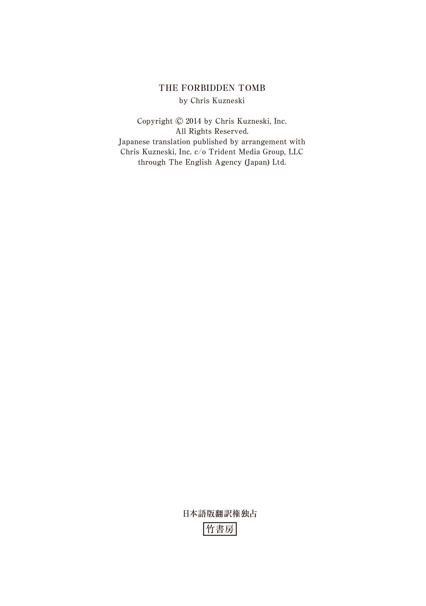
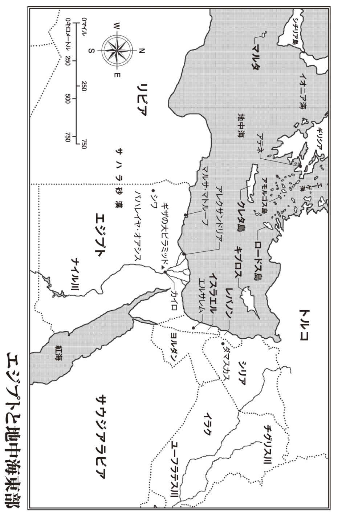

| ＴＨＥ ＨＵＮＴＥＲＳ アレクサンダー大王の墓を発掘せよ【上下合本版】 | |
| クリス・カズネスキ | |
| 竹書房 (2017) | |
この作品は縦書きでレイアウトされています。
また、ご覧になる機種により、表示の差異が認められることがあります。
一部の漢字が簡略字で表示されていることがあります。

ＴＨＥ ＨＵＮＴＥＲＳ
アレクサンダー大王の墓を発掘せよ【上下合本版】
主な登場人物
〈ハンターズ〉
ジャック・コッブ .................................リーダー。元陸軍・海兵隊
ジョッシュ・マクナット ........................武器担当。元海兵隊
サラ・エリス .......................................潜入担当。元ＣＩＡ
ヘクター・ガルシア ..............................コンピューター担当。元ＦＢＩ
ジャスミン・パク .................................歴史・言語担当。新聞社勤務
ジャン=マルク・パピノー .....................アメリカの大富豪。ハンターズの金銭的支援者
シリル・マンジャニ ..............................ギリシアの考古学者
サイモン・デイド .................................アレクサンドリアに住むサラの旧友
アジズ・ザワーヒ・ハッサン ..................アレクサンドリアの裏社会のボス
ガズ・カマル .......................................ハッサンの手下
ファルーク・タレク ..............................ハッサンの手下
ガヒジ・アワド ....................................ハッサンのボディーガード
ペーター・アルスター ...........................アルスター史料館の館長
モーリス・コープランド ........................世界的な大富豪。パピノーの雇い主
謝辞
感謝しておきたい素晴らしい人たちをここで紹介しよう。
スコット・ミラー、クレア・ロバーツ、ステファニー・フーヴァーをはじめとする、トライデント・メディアの仲間たち。彼らはこの企画・シリーズが書かれるかなり前から契約を取ってきてくれたばかりか、次の分も売ってくれた。つまり、あと一年間、私は食べていけるということだ。実にありがたい！
私の長年の友人兼編集者兼コンシェルジュのイアン・ハーパー。彼は誰よりも早く私の書いた文章を読んでくれた──しかも、何度も何度も、完璧になるまで。私たちの間で意見が食い違った場合、たいていは彼の意見が通った。なぜなら、彼は私より体が二倍大きく、見た目も怖いからだ。
ヴィッキー・メロー、エミリー・グリフィン、ダーシー・ニコルソン、ジョー・リディアード、ベン・ウィリス、マリ・エヴァンズをはじめとする、ヘッドライン／ハチェットＵＫのみんな。彼らは私の話を一冊の本にまとめてくれた──しかも、素敵な表紙、かっこいい地図、抜けている数字のないページ付きで。英語を専攻した私にとって、三つ目の点は特にありがたかった。なぜなら、私は十まで数えるのがやっとなのだから。
私のスリラーを楽しみ、ほかの人たちに薦めてくれた、すべての読者、図書館司書、書店員、批評家たち。君たちが読み続けてくれれば、私も書き続けるつもりだ。君たちが読むのをやめたとしても、本を買って友達にあげてくれればいい。最高のプレゼントになるはずだ。
最後になったが、揺らぐことなく支えてくれた家族に感謝したい。もっとも、彼らは私の悪口を言わないように気をつけていただけかもしれない。正直なところ、私の性格は歪 んでいて、大勢の登場人物を殺すことが大好きなのだから。
さて、そろそろお楽しみの（登場人物が殺される）時間になった。あとは大人しく椅子に座り、リラックスして、私の話を楽しんでもらいたい......


プロローグ
四月十一日 金曜日
エジプト バハレイヤ・オアシス （カイロの南西三百七十キロ）
彼は砂漠を恐れない。サハラ砂漠の一人歩きがいかに危険なことかは承知しているが、長年にわたって幾度となく経験しているし、何が起ころうとも対応できる。
少なくとも、そう思っていた。
探検家として二十年以上の経歴を持つドクター・シリル・マンジャニは、野営地を離れる前に必要な手順をすべて踏んでいた。調査隊のみんなには行き先を告げ、いつ戻る予定かも知らせてある。食料や水のほか、ＧＰＳ機器とコンパスの両方を携行し、懐中電灯が故障した場合に備えてケミカルライトも何本か持参している。夜間に出歩く際には必ずバックパックに入れるものばかりだ。
この日の一人歩きは、冒険とはまったくの別物だった。
考えるための時間が必要なだけだ。
エジプト学を専門とするマンジャニは、同行する調査隊のメンバーを自ら選抜した。その多くは大学院生だが、世界の名だたる大学から集められた優秀な人材ばかりだ。各自の多岐にわたる研究分野が、今回の調査においては大いに役に立つと予想された。
このプロジェクトに関して、マンジャニが望んでいたのはありきたりの見解ではない。
複数の分野からの独自の視点を必要としていた。
三週間の長きにわたって砂漠で厳しい調査を行なった後、作業に進展が見え始めた。最初に発見したのは、古代の土地の境界線を示すと思われる石の壁だ。それに続いて、砂に埋もれたままほぼ完璧な状態で保存されていた数軒の粗末な小屋が発掘された。さらには、はるかに大きな建物が見つかり、その中にはミイラ化した数名の兵士の遺体と、複数の古代文化のものと思われる様々な遺物が収められていた。
その建物が発見されたのは、つい昨日のことだ。
だが、今日の発見はそれすらも上回るものだった──あまりの大発見のため、マンジャニはそれを残したまま野営地を離れることができず、今も背中のバックパックに入れてある。
高くそびえる砂丘の頂上に腰を下ろしたマンジャニは、マグボトルの飲み物で喉を潤し、上着の襟元の紐 をきつく締めた。四月の風はひんやりとしており、紅茶と上着の温かさがありがたく感じられる。見渡す限り何もないサハラ砂漠を眺めながら、マンジャニは全身が畏 敬 の念に包まれるのを感じた。どの方角に目を向けても、波打つ砂がはるか彼方 にまで広がっている。多くの人はこの荒涼とした地形を克服しなければならない存在として敵視するが、マンジャニにとって砂漠は機会を与えてくれる場所だった。何世紀もの間、解明されることのなかった謎への答えが、この風景の中に文字通り埋まっているのだ。
そうした謎の発見こそが、彼にとっては何物にも代えがたい瞬間だった。
心が打ち震えるような感動は、ほかでは味わうことができない。
マンジャニは腕時計を確認した。一時間半ほど野営地を留守にするつもりでいたが、ぐずぐずしていると予定時間をオーバーしてしまいそうだ。野営地へと戻る前に、マンジャニは夜空に目を向けた。街の明かりが夜空の美しさを台なしにしてしまうことに、いつも愕 然 とさせられる。けれども、この場所では、砂漠の真ん中では、生まれて初めて見るような漆 黒 の空に星が輝いている。あまりにも鮮やかなその対比に、今まで目にしたことのない星までもが見えたような気がした。
もう少しこのまま砂丘の上にとどまり、空に広がる絶景を楽しみたいと思ったものの、マンジャニは不意に寒気を覚えた。襟元の紐をいっそうきつく締めながら、小さく舌打ちをする。気温の急激な低下は、天候の急変の前触れとなることが多い。ここのような何もない砂漠の真ん中では、そのような変化は命に関わる。
マンジャニはすぐさま帰途に就いた。
野営地が近づくにつれて、風の勢いも増してきた。激しく顔に吹きつける砂から両目を守る。小さな虫の群れが襲いかかってきたかのようだ。耳元を吹き抜ける風の悲鳴が、周囲のすべての音をかき消す。夜空はまだ晴れ渡っているものの、マンジャニは状況が悪化しつつあると感じた。最後の砂丘を登り終え、どうにか無事にたどり着けたと安 堵 する。
ところが、彼の悪夢は始まったばかりだった。
野営地が視界に入ると同時に、殺 戮 の現場が見えてきた。最初、マンジャニは調査隊のメンバーが興奮のあまり──それと、どうしても持参すると言って聞かなかった一ケースのブランデーのせいで、羽目を外しているのだと思った。春休みを迎えて解放された学生さながらに、わめいたりじゃれ合ったりしながら、浮かれた様子で野営地内を走り回っているように見えたからだ。しかし、目を凝らして見るうちに、マンジャニは勘違いに気づいた。彼らはパニックを起こしているのであって、狂喜乱舞しているのではない。恐怖の悲鳴をあげているのであって、勝利の雄 叫 びをあげているのではない。
なぜなら、野営地に悪魔が群がっているからだ。
マントをまとった男たちが、血に飢えた獣のように調査隊の仲間たちを襲っていた。風の轟 音 で苦痛の叫びはよく聞き取れないものの、声を聞くまでもなくわかる。目の前で惨劇が繰り広げられている。恐怖に包まれたマンジャニがなす術 もなく見守る中、隊員たちが一人、また一人と、襲撃者たちの正確無比な攻撃によって血祭りにあげられていく。侵入者たちが驚くほど慣れた手つきで扱う鋭い刃 により、ゆっくりと苦しみながら息絶えていく。
この地域の民話に精通しているマンジャニは、砂漠を守る邪悪な存在に関する話を何度も聞いたことがあったが、これまでそれを真に受けたことはなかった。昔からサハラ砂漠では多くの人が行方不明になっているものの、その全員が化け物の手にかかって無残な最 期 を遂げたなどとは信じていなかった。
だが、今ではその信念も揺らいでいた。
マンジャニは野営地に向かって突進し、今回の調査に加わるように誘った若い仲間たちを守ってやらなければとの衝動を覚えた。しかし、そんな行動に出たところで、意味がないことも理解していた──自分も殺されてしまうのがおちだ。武器も持っていないし、訓練も受けていない。武装した殺し屋を相手にしても勝ち目はない。野営地に乗り込んでも仲間たちを救うことはできない。自分の命を差し出してしまうも同然だ。救える仲間がいるとしたら、殺戮の手を逃れて野営地を脱出した者だけだろう。
迫りつつある砂嵐への十分な備えができているわけではなかったが、追加の装備を取りに野営地へ戻るという選択肢はありえない。バックパックの中身だけで、悪天候を乗り切るしかない。かなり厳しい道のりになるだろう。自分よりも体を鍛えていて、十分な装備を持っている人間でも、多くが砂漠の嵐で命を落としている。最も近い集落までの距離を考えると、生きてたどり着ける可能性はせいぜい十パーセントだろうか。
けれども、野営地の状況を考えれば、その確率の方がはるかにましだ。
野営地での戦いには勝てるわけがない。どうせ死ぬのならば、逃げたかもしれない仲間たちを探して死ぬ方がいい──彼らは砂漠で生き延びるための術も、何の装備も持ち合わせていないのだから。せめてそれくらいのことはしてやらなければならない。彼らの命は自分にかかっている。すでに息絶えた仲間たちの功績も。
ここで起きた出来事を、誰かが世界に伝えなければならない。
自分が発見したものを、誰かに伝えなければならない。
１
六カ月後
十月二十一日 火曜日
フロリダ州フォートローダーデール
フロリダ州南部の湿地帯を抜けるこの私道の存在を知る人間はごくわずかしかいないし、実際にその道を走行したことのある人間となるとさらに数が少ない。強い言葉遣いの看板が、不法侵入者に対して立ち入りが歓迎されないこと、発見した場合は厳しい罰が科されることを警告している。罰を科すのは警察でもなければ裁判所でもない。この土地の所有者たちが自ら手を下す。
そのことを、この湿地帯では「ジャングルの正義」と呼ぶ。
それがここでの掟 だ。
長髪の男性ライダーは警告の看板を無視して未舗装の道から離れ、アスファルト舗装の整備された道路にバイクのハンドルを切った。後輪がアスファルトを踏みしめると同時に、カスタマイズされたハーレーのスロットルをひねり、しっかりと握り締める。高らかなエンジン音を鳴り響かせながら、男は目にも留まらぬ速度でバイクを疾走させた。道の左右の木々が高速で後ろに遠ざかる中、男が笑い声をあげる。蚊（小鳥のような大きさ）やトカゲ（プードルほどの大きさ）が、殺されてはかなわないとバイクの進路から逃げていく。
たとえ殺したとしても、男はまったく意に介さなかっただろう。
男はこれまでずっと、多くの命を奪ってきた。そのほとんどは、一瞬のうちに。
そのような訓練を受けてきたのだ。
道路の突き当たりが見えてくると、男は速度を落とし、水辺の敷地を保護する巨大な鋼鉄製のゲートの手前で停止した。すでに何度かこのゲートを通り抜けたことがあり、もはや見慣れた入口だ。だが、男は不意に、これまで一人でこのゲートを開けた経験がないことに思い当たった。いつも同行者がいて、ほかの人間に開けてもらっていたのだ。好奇心をそそられ、男は道路の真ん中でバイクから降り、奇妙な形状をした制御パネルに歩み寄った。
不思議なことに、パネルには押すためのボタンも、指でタップするための数字も、電源を入れるためのスイッチもない。どこか近未来的な金属製の台の上に、平らな長方形のタッチパッドが設置されているだけだ。少なくとも、見た目から判断する限りはタッチパッドだ。装置のしゃれた外見と、自らの機械音痴のせいで、男はこの機器が人の心を読み取ることのできる生体認証用のセンサーのようなものかもしれないと考えた。
ｉＰｈｏｎｅの中に住む妖精みたいなものが、この機械の中にもいるのだろうと。
どうすればいいのかわからず、ジョッシュ・マクナットはタッチパッドの表面に手のひらをかざした。自動的に水が流れるトイレのように、動きを感知して作動するのだろうと思ったからだ。次に、マクナットはタッチパッドに指先を押し当てた。フォート・ブラッグの武器庫のように、指紋をスキャンして入場を許可する仕組みかもしれない。それもうまくいかなかったので、今度は左右の手のひらをそれぞれ当ててみた。
しかし、何も起きない。
マクナットは三日前に剃 ったきりの頰ひげをさすりながら、次の手段を考えた。「おーい」装置に向かって呼びかける。「誰かいるか？ おーーーーーい」
ついには、玄関の扉をノックするかのように、タッチパッドを叩いてもみた。
それでも、何の反応もない。
「馬鹿なロボットだぜ」マクナットは小声で罵 った。
いらいらを募らせたマクナットは、鋼鉄製のゲートに近づき、バーをつかんで揺すろうかと考えた。しかし、指先が触れる直前、両腕を素早く引っ込める。バーだとばかり思っていたのが実は毒ヘビだったことに気づいたかのような動きだ。だが、マクナットの反応はそれよりもはるかに危険な理由による。以前、このゲートは敷地を取り囲むセキュリティ対策の第一段階に当たるという話を聞かされていたからだ。敷地内の地面に張り巡らされたワイヤーメッシュには、触れたら即死するような高圧電流が通っているという。そのため、マクナットは手が触れる寸前に、このゲートも同じように通電しているかもしれないと思ったのだった。
不審者に対して、高圧電流による手荒い歓迎が用意されている可能性もある。
マクナットは確かめない方が安全だと判断した。
＊ ＊ ＊
「ちくしょう！ あいつ、本当にやるかと思ったのに」コンピューターの画面を眺めていたヘクター・ガルシアの口から言葉が漏れた。マクナットが未舗装の道を外れて以降、ガルシアは複数の防犯カメラの映像で彼の動きを監視していた。アスファルト舗装の下には振動センサーが埋め込まれており、敷地に近づく人間がいた場合にはすぐに警報が発令され、建物内の人間に伝わる仕掛けになっている。
「誰が何をするかと思ったって？」元アメリカ陸軍少佐および海兵隊特殊部隊指揮官のジャック・コッブは訊ねた。自他ともに認めるこのチーム──「ハンターズ」のリーダーとして、コッブには防犯カメラ映像の監視よりも重要度の高い問題がある。監視作業はガルシアの役目だ。ここに近づいてくる人間がいた場合には、コッブに知らせることも含めて。
「マクナットだよ」ガルシアが答えた。「この数分間、あのゲートを通り抜けるための方法を突き止めようとしている。これまでのところ、どれも失敗に終わっているけどね」
「大画面に表示できるか？」コッブは依頼した。
「もちろん」
軽やかなマウスのクリック音とキー操作の音とともに、すべての防犯カメラからの映像が暖炉の上に吊 るされた九十インチのテレビ画面に分割されて映し出された。コッブの見つめる中、マクナットがゲートの制御パネルの前に戻り、表面に顔を近づけようとしている。コッブは三番カメラの映像を指差した──タッチパッドの下に設置されたカメラからの映像だ。数回のクリック音の後、マクナットの血走った両目が画面いっぱいに表示された。
「あの原始人、今度は何をしているの？」近くのソファーに座るサラ・エリスが訊ねた。ＣＩＡで訓練を受け、防犯システムに精通しているサラは、ゲートを開けるのに四苦八苦している仲間にあきれ果て、首を振ることしかできなかった。「何を見ようとしているわけ？」
「さあね」ガルシアは推測した。「タッチパッドに網膜スキャンが内蔵されているとでも思っているんじゃないかな。ガラスに目玉を押し当てようとしているんだよ」
サラが吹き出した。「ちょっと......冗談でしょ。あいつ、想像を絶する間抜けね。以前に飼っていたペット・ロックの方が、彼よりも賢かった記憶がするわ」
「記憶がある 、ですよ」室内に入ってきたジャスミン・パクが指摘した。チーム内でただ一人の学者肌であるジャスミンは、サラの不適切な言葉遣いに気づいた唯一の人間でもあった。「彼の知性をからかうなら、自分も正しい英語を使うように心がけるべきですね」
「と、韓国出身の小娘が言いましたとさ」
「私、アメリカ生まれなんですけど」
「だったら、人の言い間違いを訂正するのは失礼に当たることを知っているはずじゃなくって？──特に、私のような高度な技術を持つ人に対しては」
ジャスミンは笑顔を返しながら、大画面に表示されている映像に視線を移した。マクナットはカメラに背を向け、バイクの方に戻り始めている。「彼は帰ろうとしているんですか？」
「そうだといいんだけど」サラは祈るような仕草で応じた。「ここしばらく考えていたんだけど、彼の代役を務められる格好の候補者がいるの。その人は女性で、銃や爆薬の扱いに慣れているだけでなく、氷の作り方もちゃんと知っているわ。今のは文字通りの意味だからね。マクナットのやつ、この前なんか私に、店で売っている氷はアラスカから運んでくるのかって聞いたんだから」
ガルシアがコンピューターの画面から顔を上げた。「いつそんなことを？」
「私たちがアラスカにいた時。お土産として持って帰りたいって、スーツケースに詰め込もうとしていたんだから」
サラを見つめるガルシアの表情は、今の話が冗談なのかどうか、判断がつきかねている様子だった。「本当なの？」
サラは肩をすくめた。表情からその答えはうかがえない。
ジャスミンがテレビの画面を指差した。「本当に帰ってしまったのでは？」
大画面を見上げたガルシアは、マクナットの姿が見えないことに気づいた。キーボード上のボタンを押し、広い範囲を撮影したカメラの映像に切り替える。ゲートの上に取り付けたカメラからの映像が表示された。停 めたバイクのところまで戻ったマクナットは、シーシーバーに固定した大きなゴルフバッグのボタンを外そうとしている。
サラが立ち上がった。「今度は何をしようとしているの？」
「さっぱりわかりません」ジャスミンが答えた。
「俺 にはわかる」そう返したコッブの心の中で、嫌な予感がふくれ上がっていく。「拡大してくれ」
ガルシアが指示に従うと、全員がこれから何が起きるのかと固 唾 をのみながら、ゴルフバッグのカバーを外すマクナットを見つめた。
バッグの中に詰まっていたのはゴルフクラブではなく、マクナットの武器だ。
元海兵隊の狙撃兵で武器に関して誰よりも詳しいマクナットは、手持ちの武器の中から適当なものを選んだ。ロシア製のグレネードランチャー「ヴァンピール」は、装甲を施された戦車用に開発された武器だ。鋼鉄製のゲートは頑丈にできているが、そこまで頑丈ではない。ミサイルによる攻撃を想定して設計されたわけではない。
おもちゃを手にした子供のような笑みを浮かべて、マクナットが肩に担いだグレネードランチャーの狙いをゲートの基部に定めた瞬間、コッブは走って室内を横切り、インターコムを作動させた。
「攻撃の中止を命じる！」コッブは叫んだ。
画面上で、驚いたマクナットが素早く体の向きを変えた。
「今のは誰だ？」問いただしながら、マクナットはグレネードランチャーの筒先をタッチパッドに向けた。
「グレネードランチャーを下に向けろ」コッブは命令した。「これからゲートを開ける」
マクナットはタッチパッドに顔を近づけた。「少佐、あんたなんだろう？ 中にいるのか？」
「そうだ、ジョッシュ。中にいる」念のため、コッブは説明を補足した。「『中』というのは家の中のことだ。タッチパッドの台の中じゃないぞ」
それを聞き、マクナットが笑い声をあげた。チームのほかのメンバーたちはマクナットのことを頭のねじが緩んだ異常者と見なしているが、コッブは彼の言動のほとんどが意図的なものだと見抜いていた。マクナットにとって、それは戦場を離れている時の息抜きのようなものなのだ。そんなユーモアのセンスをすぐに理解できる人間もいれば、ガルシアのようにまったく理解できない人間もいる。マクナットにとっての何よりの楽しみは、そんなガルシアを何かにつけてからかうことだった。
グレネードランチャーで本拠地を攻撃すると脅すのもその一つだ。
コッブはボタンを押し、ゲートを開けた。「早く来いよ」
「ありがとよ！」そう返事をするマクナットの口は、タッチパッドから数センチと離れていない。「おっと、ちょっと待ってくれ。まずはこのミサイルを片付けないと」
ガルシアが再びタッチパッドの下のカメラからの映像に切り替えた。大きく開いたマクナットの口が、テレビの大画面いっぱいに表示される。「ねえ、見てごらんよ。彼の扁 桃 腺 が丸見えだ」
サラはあきれて目を見開いた。「勘弁してよ。私のまわりにいるのは馬鹿ばっかり」
２
マクナットはバイクのエンジン音をとどろかせながら、正面玄関に通じる曲がりくねった私道を疾走していた。四方を人工の水路でほぼ囲まれている建物は、守りやすさを重視した設計だ。水路に架かる唯一の橋は自然の地形としか見えない細い通路だけだが、実は人工のこの通路には複数の爆薬が仕掛けられている。ボタンを一つ押すだけで、通路は水に浮かぶ孤島と化してしまう。
もしここが自分の敷地だとしたら、マクナットはチームの本部として機能している面積約四百平方メートルの平屋造りの建物の代わりに、マイアミビーチのスターアイランドの豪邸にも引けを取らない地中海風の宮殿を建てていただろう。目の前の建物は、ビーチ沿いのリゾートハウスよりも掩 蔽 壕 と呼ぶ方がふさわしい。だが、この建物は実用性を第一に考えたものであって、威信のために建てられたわけではない。平 坦 な構造物は空からの攻撃に耐えられるだけでなく、沿岸部には最適な設計でもある。毎年のようにフロリダに被害を及ぼすハリケーンや熱帯性の豪雨も、この建物には歯が立たない──仮にゾンビが襲撃を試みたとしても、手も足も出ないだろう。
建築様式には不満が残るものの、建物の設備はマクナットにとって垂 涎 の的だった。軍隊経験があるため、エシュロン級の諜報活動用衛星受信機は一目でわかる。一般家庭用の衛星アンテナとは違い、ここにあるのは通信の傍受を目的として軍隊で使用されている機器だ。自前の淡水化施設や変電所も備えていることから、この家が作戦基地として想定されているのは明らかだ。
マクナットは建物前のロータリーにバイクを停め、エンジンを切った。それと同時に玄関の扉が開き、コッブが表に姿を現した。
「やあ、チーフ。久し振り」
「遅いぞ」コッブがにらみつけた。
マクナットは顔をしかめ、腕時計を確認した。「いいや、そんなはずはない。五時までにここに来るように、という話だっただろ。これを見る限り、まだ三十分の余裕がある。それにあの間抜けなゲートがなかったら、もう少し早く着けたし」
「俺は月曜日 の五時までにここに来いと言ったんだ」
「今日は月曜日じゃないのか？」マクナットは気まずそうな笑みを浮かべた。「ごめんよ、少佐殿。休暇中は時間のたつのが早くて。友達とビールを何杯か飲んでいたと思ったら、次の日にはティファナの街中を女と一緒に素っ裸で走っていて、その女が警察署長の愛人で、署長は怒り狂っているし、そのうえちびのギャング団に追われているんだ。そんな感じ、わかるだろ？」
「正直なところ、さっぱりわからない。あと、前にも注意したはずだが、俺のことを『少佐』と呼ぶな。誰が聞き耳を立てているかわからない」
「ごめんよ、チーフ」
「もう一つ、休暇中のお楽しみのどの時点で、ゴルフバッグの中にグレネードランチャーを忍ばせるのも悪くないと考えるようになったんだ？」
「ちびのギャングに捕まりそうになった夜だよ。ちっこいくせに驚くほど足が速いんだ。短い脚をプロペラのように動かすのさ」マクナットはその光景を頭に思い浮かべて笑いながら、グレネードランチャー入りのゴルフバッグをバイクから取り外し、肩に掛けた。「うまいやり方だってことは認めてくれよ。ここではこれ以上の隠れ蓑 はないね。バイクに積んでいたとしても、誰一人としてゴルフバッグに見向きもしない。バッグの脇ポケットに入っているものも見せようか？」
「後にしてくれ」コッブは答えた。「その話は後回しだ。中に入れよ。おまえのことを昨日からずっと待っていたんだぞ」
マクナットはうなずき、建物内に入った。
豪 奢 な家屋は広々した間取りで、リビングルーム、書庫、キッチン、応接間などがある。壁に掛かっているのは高価な絵画ばかりだ。以前は工場からの出荷時に貼ってあったビニールカバーを剝 がしたばかりのように、どこか冷たく殺風景に見えた家具類も、今ではすっかりなじんで落ち着きを醸し出している。各自は建物北端の通路沿いに寝室を割り当てられていた。ロッカーに置きっ放しにしていた自分の服はまだ残っているだろうか、それとも留守中に処分されてしまっただろうか、マクナットはそんなことを思った。
処分されていたら、服の買い出しをしなければならない。
建物内の残る主な部屋はダイニングルームで、雄大なテラスに面している。いくつものプールがあり、ヤシの木が植えられ、彫刻が配置されたテラスは、しゃれたリゾート地のような趣 がある。テラスを一望できる大きな見晴らし窓の前を通り過ぎながら、マクナットは敷地の裏手にある私有のマリーナを一 瞥 した。桟 橋 に一隻のクルーザーが停泊している。過去の訪問時に、マクナットはクルーザーの名前を学んでいた。「トレゾール・ドゥ・ラ・メール」、すなわち「海の宝物」の意味だ。
マクナットの顔に笑みが浮かぶ。クルーザーがあるということは、雇い主もここにいるということだ。
マクナットは小切手帳を持ってくればよかったと後悔した。まだ前回の任務の報酬をもらっていなかったからだ。
＊ ＊ ＊
コッブの後からキッチンに入ったマクナットは、カウンターの向こうから心配そうな顔の三人が見つめていることに気づいた。普通の家庭と同じように、ここが集合場所のような役割を果たしている。全員が顔を合わせる時には、とりあえずはキッチンがその場所になるのだ。
「おやおや、皆さんお揃 いで」マクナットは声をかけた。
素人目には、五人は不釣り合いな組み合わせに見える。コッブは肩幅が広く、精 悍 で面長な顔立ちをしており、射抜くような灰色の瞳は「リーダーは俺だ」と語りかけているも同然だ。マクナットは屈強な肉体とむさ苦しい外見を併せ持っていて、髪型と服装はさっきまで橋の下で野宿していたかのように見える。一方、ガルシアは新しいタイプのハッカーの代表格だ。「コンピューターオタク」と聞いてすぐに連想するような、両親の家の地下室からめったに外に出ることのない青白い顔の虚弱体質とは異なり、日に焼けた肌と運動選手のような体格で、そこそこハンサムな容 貌 をしている。
「あんた、いったいどこにいたの？」サラが詰問した。
「みんな心配していたんですよ」ジャスミンが付け加えた。
それぞれの発言が二人の性格を端的に表している。
背が高くて瘦 せており、敏 捷 で、抜群の運動神経を持つサラは、背が低く温和な印象を与えるジャスミンとは対照的だ。チームの全員を比較すると、いちばん共通点のないのがこの二人の女性だろう──身体的な面だけではなく、性格的な面でもそのことが当てはまる。サラは積極的かつ勝ち気で、いつも相手の隙を探してはつけ入ろうとしている。一方、ジャスミンは穏やかで礼儀正しく、自分のことよりも相手のことを気遣う。そうした違いは生い立ちのせいでもあるし、受けた訓練の影響でもある。
サラはクワンティコのＣＩＡアカデミーで技術を習得した。
ジャスミンにとっての学びの場は図書館だった。
「彼がどこにいたのかは重要ではない」マクナットが国境の南でのどんちゃん騒ぎについて長々と話を始める前に、コッブは言った。
「私にとっては重要なんだけど」サラが反論した。「私たちは運命を共にしているんだからね。この男がへべれけに酔っ払って、バーにいる大勢の客に向かって私たちの発見を公表するようなことがあったら困るもの」
ガルシアは肩をすくめた。「たとえそうしたとしてもさ、そんな話を信じるやつがいると思うかい？ だってさ、大昔の列車に、カルト教団に、トランシルヴァニアでの秘密作戦だよ」
「その通りだ！」マクナットは返した。「ありがとよ、ホセ。おまえだけは俺の味方だ」
「正しくはヘクターなんだけど」
「惜しいな。一文字目は同じじゃないか」
「同じじゃないよ」
「そうなのか？ いつからだ？」
「いつからって、その、文字が発明されてからずっとだよ」
マクナットは笑い出しそうになるのを必死にこらえた。ガルシアのファーストネームがヘクターなのはもちろん知っている。単にそれを使わないようにしているだけの話だ。「そうか、わかったぞ。俺は文字を知らなかったんだ」
「それくらいにしておけ」コッブは宣言した。声を荒らげたりはしない。その口調が、全員に対して冗談は終わりにしろと告げている。
四人はリーダーに敬意を払い、口をつぐんだ。
「サラ、作戦について他言しないという条件は取り決めの中に含まれていない。誰に対してどんな話をしようがかまわない。ただし、この情報を外部に漏らすことのリスクは全員が承知しているはずだ」
サラが異議を唱えようとしたが、コッブは制止した。
続いてマクナットの方を見る。「それはそれとして、チームの活動に関しておまえが口をつぐんでいてくれると、個人的にはありがたい」
マクナットがうなずいた。「誰にも話はしていないよ」
「それならいい」コッブはその答えを予想していた。サラとは違い、マクナットはスパイとしての訓練を受けているわけではないが、元海兵隊員であり、部隊に忠誠を尽くすように叩き込まれている。「ヘクター、俺たちの最近の行動に関して、インターネット上に何か出ているか？」
「何もない」コンピューターの専門家が答えた。「僕たちに関する情報が表沙汰にならないようにするための、大掛かりな動きがあるような感じだよ。実際のところ、ちょっと不思議な気がする。不安を覚えるほどではないけどね。今回のような一件が──僕たちが経験したような興味深い出来事が、おおっぴらにならないことなんてありえないもの」
コッブは雇い主に視線を向けた。奥の廊下から音もなくキッチンに入ってきたフランス人のジャン＝マルク・パピノーには、会話の最後の部分が聞こえていたはずだ。ヨーロッパから取り寄せた最高級の服を着こなしたパピノーにはどこか高貴なところがあり、自らが王様で、世界は自分の庭だと考えているように思えなくもない。
数カ月前に初めて顔を合わせて以来、コッブはパピノーの影響力がどこまで及んでいるのかと何度も不思議に思った。東欧では驚きの連続で、改造した一編成の列車も含めて、任務に必要なものはすべて手配してくれた。そんな奇跡のような仕事も、新たに披露してくれた魔法の前ではかすんでしまう。カメラ付きのスマートフォンやＳＮＳが全盛の時代に、自分たちの大発見を世界中の目からどうやって隠し通しているのだろうか？
それだけのことを成し遂げるには、金だけでは足りない。
影響力と権力が不可欠だ。
「ジャスミン」コッブは質問を続けた。「君の方の情報源から何か聞いていないか？」
チーム専属の歴史家でもあるジャスミンは、世界各地の複数の大学とコネがある。ハンターズによる調査が新聞に掲載されなかったとしても、学術界は独自の情報ルートや手段を有している。歴史的な大発見の噂 を聞きつけた人間がいれば、ジャスミンのもとにも仲間の誰かから話が伝わっているはずだ。
「その答えはイエスでもあり、ノーでもあります」ジャスミンは認めた。「大発見に関する話は確かに存在していますが、どれもいい加減な噂話にすぎません。何が起きたのかに関してあまりにも多くの憶測が飛び交っているので、いったいどこから説明したらいいのか困ってしまうほどです。その情報を信じれば、私たちはエカテリーナ宮殿の琥 珀 の間からアトランティス大陸に至るまで、ありとあらゆる発見に功績があったことになってしまいます。まったく、信じられないような話ばかりですよ」
コッブはパピノーに視線を移した。「何か補足することは？ 近いうちに俺たちの発見に関する公式の発表があるとか？」
パピノーの存在に初めて気づき、残りの四人がいっせいに顔を向けた。
「公式の発表の予定はない」そう言いながら、パピノーはコッブの隣に立ち、ほかの四人に向き合った。「それよりも、新しい噂をもう少しでっち上げようと思っている。君たちも各自の情報ルートを通じてその噂を広めてもらいたい。数が多ければ多いほど、都合がいいからね」
「どんな噂なの？」サラが訊ねた。
パピノーは笑みを浮かべた。「ロシア人と有名な財宝が関与していることを鑑みると、琥珀の間に関する話は我ながら趣があってよくできていると思う」
「我ながら？」ジャスミンが困惑した様子で訊ねた。
「ああ、そうだとも。私が創作した話だ」
「でも、どうして？」
コッブはパピノーに代わって答えた。「なぜなら、ある出来事が起きたこと自体を否定するよりも、偽の情報を流す方が簡単だからだ。世間は何かが起きたと感づいているから、俺たちで話の方向性を導けばいい。諜報機関で使用される表現を使えば、情報操作による情報分離だ。任務が完了するまで、世界が俺たちのことを嗅 ぎ回らないようにしておく必要がある。そういうことだろ？」
パピノーはコッブに鋭い眼 差 しを向けたが、返事をしなかった。
「ちょっと待ってよ」サラが不機嫌そうな声で割り込んできた。「いったい何の話？ あの財宝の発見で私たちの任務はすでに完了したはずよ。そういう取り決めだったじゃないの」
コッブは首を左右に振った。そうではなかったのだ。「俺たちはそう信じ込まされていたが、実際にはルーマニアの件は第一段階にすぎなかった。そうだろ、ジャン＝マルク？」
「そうだ」パピノーは答えた。
サラはカウンターに拳 を叩きつけてから、フランス人に詰め寄った。「この噓 つき野郎！ あんたは私に五百万ドルを払うと約束した。私は言われた通りに、言われた以上のこともやったじゃないの。つべこべ言わずに金を払いなさいよ！」
サラがパピノーにつかみかかる前に、コッブは体を割り込ませて制止した。
パピノーは一歩後ずさりした。「落ち着きたまえ。君の言うことに間違いはない。報酬に見合う働きをしてくれた。約束通り、一人当たり五百万ドルを支払おう」
「それならいいわよ」サラがつぶやいた。
「あるいは......」パピノーの顔に笑みが戻った。「金額を二倍にできるぞ」
その言葉の意味を理解し、室内が静まり返った。
最初に沈黙を破ったのはマクナットだった。「二倍って言ったか？」
「そうだとも。一人当たり一千万ドルだ」
「何か裏があるんじゃないですか？」ジャスミンが訊ねた。
「君たちは次の任務が完了するまで、すでに支払われることが決まっている分も含めて、金に手をつけることができない。というのが、君の言葉を借りれば『裏』に当たる。任務が完了するまで、金は信託によって管理される」
「それで、もし任務に失敗したら？」サラが問いただした。
「帰還した時点で、当初の五百万ドルはいつでも使える状態になっている」パピノーは確約した。「ただし、我々の関係はその時点で終了する。すべてのつながりを即座にかつ永遠に断ち切ることになる」
「つまり、次の任務が最後の 任務ではない可能性もあるわけね」
パピノーは肩をすくめた。「私としても将来の予定について話ができればいいと思っているのだが、あいにくそうもいかないのだよ。あらかじめ保証できることには限度があるものでね」
「それだけじゃ十分とは言えません」ジャスミンが反応した。数カ月前のジャスミンは、気が弱くておどおどしていたが、実戦を通じて何度も敵の攻撃をくぐり抜けるうちに、今では自信を深めた女性に生まれ変わっていた。「私はやってもかまいませんが、一つ条件があります」
「がり勉さんが意見を主張するみたいね──それとも、また言葉遣いの話かしら」サラがからかった。
パピノーはサラの発言を無視して、ジャスミンに意識を集中させた。この女性は途方もない要求をするようなタイプではない。「いったい何だね？」
「私の家族をアメリカに呼んでください」
「問題ない。次の便で来られるように手配してもいいよ」
ジャスミンが任務に加わるのは家族を貧困から救い出したいという思いに駆られてのことだと、パピノーは知っていた。これまでずっと、ジャスミンは給料を貯金し、家族がソウルでの苦しい生活を脱してアメリカで新しい暮らしを始めるための資金に充てようとしていたのだ。
パピノーの力をもってすれば、明日にでもそれくらいのことは実現できる。
「僕は新しいラップトップが欲しいな」ガルシアが思い切って発言した。パピノーがみんなの要求を受け入れてくれるのだとしたら、自分も主張しない手はない。「僕の希望するスペックに合わせてカスタムメイドしたやつが」
「承知した。ほかには？」
「新車のハーレー」マクナットが言った。
「私も同じものを」サラが付け加えた。
マクナットが片方の眉を吊り上げた。
「何よ？」サラがくってかかった。「週末にたくましいものにまたがりたいと思うのは、あんただけじゃないんだからね」
マクナットは口を開きかけたが、思い直した。
「二人ともオーケーだ」パピノーは最後に残ったコッブの方を向いた。「君はどうかね？ 何か欲しいものは？」
「俺か？」コッブは答えた。「俺たちは何を探せばいいのか、その答えが欲しい」
３
キッチンでの前置きは終わった。ここから先は本題に入らなければならない。
一行は秘密の階段を下り、地下の「作戦室」に向かった。掩蔽壕の重厚な扉は、ホワイトハウスのシチュエーションルームに似ているどころか、まったく同一の造りだ。正しい手順で密閉すれば、水も、ガスも、有毒物質も食い止めることができる。扉の奥の部屋のほとんども、ホワイトハウスで使用された設計図をそのまま使用している。大きな違いは、大統領の隠れ家は実用性を第一に考えているのに対して、パピノーは調度品に金を惜しんでいないことだ。
室内は博物館並みの温度および湿度管理がなされていて、美術品をはじめとする高価な装飾品が配置されている。短い仕切りがガラス製の長い会議用テーブルと、革製のソファーやふかふかの肘掛け椅子との間を隔てているため、部屋は正式な会議とくつろいだ雑談の二つの用途に利用することができる。
五人がガラス製のハイテク仕様のテーブルに着く間、パピノーは上座に立ったまま全員が腰掛けるのを待った。何の前触れもなく、室内の明かりが暗くなり始める。パピノーが左に移動すると、その背後の壁全面に設置された巨大なビデオスクリーンに映像が表示された。前回の最初の任務の際に使用された東欧の地図に代わって、バルカン半島の地図が映し出されている。
国名は記されていないが、その地域をよく知るコッブは国境線が正しくないことに気づいた。少なくとも、現在の国境線とは異なっている。アルバニア南部、マケドニア、ブルガリアがひとまとまりの地域として表示されている。ギリシアであるべき場所は、複数の別個の領土に分割されていた。
誰かが意見を述べるまで待っているかのように、パピノーは口を開かない。
全員の視線がジャスミンに集まった。
「この地図は少なくとも二千年前のものです」ジャスミンが口火を切った。
パピノーが笑みを浮かべながらうなずいた。「正確には、二千三百五十年前だ」
ジャスミンは頭の中で計算した。「コリントス同盟。ピリッポスによる対ペルシア帝国の連合軍。マケドニア王国」
「見事なものだな」パピノーが言った。
「誰か彼女の説明をわかりやすく説明してくれないかな」マクナットが訴えた。
ジャスミンが自らわかりやすい説明を買って出た。「マケドニアのピリッポス二世は優れた軍事戦略家でした。紀元前三三六年までに、ギリシアの大部分を征服しています。それにより、彼は様々な勢力を自らの支配下に統一しました。内紛に終止符を打ち、エーゲ海を挟んで対 峙 するペルシアへの連合軍を編成したんです」ジャスミンはスクリーン上の地図を指差した。「この地域は分割されているように見えますが、実際には一人の王のもとに統治されていたんですよ」
「どのくらいの統治期間だったんだ？」コッブは訊ねた。
「ピリッポス二世による統治は二十年以上に及びました──当時としては異例の長さです。この地図は彼の統治が始まった頃ではなく、終わりに近づいた時のものです。王が暗殺された後、領土はすべて彼の息子の手に渡りました」
「彼の息子というのは......？」サラが質問した。
「マケドニアのアレクサンドロス三世だよ」ガルシアが答えた。
ガルシアの方を見たコッブたちはそこで初めて、会議テーブルが普通のガラス製なのではなく、その表面がゲートの制御パネルのタッチパッドと同じ材質だということに気づいた。ただし、その薄い表面に内蔵された様々な電子技術までは見ることができない。ペイン・インダストリーズ社によりアメリカ中央軍（ＵＳＣＥＮＴＣＯＭ）のために製造された最新コンピューター用高度レンダリング技術は、軍事攻撃を立体的な視点で立案するために使用される。
新しいおもちゃを見せびらかそうと、ガルシアはジャスミンの説明中に出てきたキーワードと年代を、自分の前のテーブルに表示されている政府の検索エンジンに入力した。その後、手首を軽くひねりさえすれば、検索によって得た情報を各自の座席の前にあるバーチャルなスクリーンに配付することができる。「バーチャルな報告書」はテーブルの表面を滑って移動しているように見えるが、実際にはちょっとした特殊効果にすぎない。だが、本物の紙と見紛うような動きに、チームの全員が思わず手を伸ばして、テーブルの端から落ちる前に報告書を受け取ろうとした。
「こいつは気に入ったよ」ガルシアが笑いながら言った。
最新技術に魅了されたマクナットは、ガラスの表面に顔を押しつけて中の仕組みをのぞき込もうとした。「これでパックマンをプレイできるのかな？」
サラはマクナットの質問を無視して、名前に考えを集中させた。「アレクサンドロス三世。聞いたことがないわ」
「俺もだ」コッブも認めた。
「いいえ、あるはずですよ」ジャスミンが請け合った。「別名の方を知っているんじゃないかしら。アレクサンダー大王です」
マクナットがすぐに反応し、背筋を伸ばした。「ちょっと待ってくれ！ あのアレックスは親父さんが死んだ時にあれだけの領土をすべて受け継いだって言うのか？ あんなに広い不動産がありさえすれば、俺だって大王になれただろうな。うちの親父ときたら、冷蔵庫の中のビールの六缶パックとビーフジャーキーしか残してくれなかったんだ」
ジャスミンが眉をひそめた。「お父様はいつ亡くなられたんですか？」
「死んでないよ。家を出たきり、戻ってこないだけさ」
「それはともかく」ジャスミンはまともに相手をするのをやめた。「アレクサンダー大王は受け継いだ領土に満足していませんでした。もっと広大な王国を手にするという野望を抱いていたんです」
その言葉を待っていたかのように、パピノーが壁のスクリーンに映し出されていた画像をより広範囲の地図に切り替えた。帝国の範囲は東西方向にアドリア海からヒマラヤ山脈まで広がり、インドとの国境付近にまで及んでいる。南はインド洋やペルシア湾に達し、アラビア半島の北部やエジプトの大部分までもが領土に含まれている。元のマケドニア王国の領土は、新しい地図で見ると北西の隅にある小さな点でしかない。
ジャスミンは説明を続けた。「アレクサンダー大王はこの全域を──五百万平方キロメートル以上の領土を支配していました。これは世界の歴史上で最大の帝国の一つです」
サラが口笛を吹いた。「相当な広さの土地ね」
「まったくだな」不動産に関する知識の豊富なパピノーも同意した。「だが、そのことは彼の一つの側面を物語っているにすぎない。アレクサンダー大王は将軍たちによって訓練を施されたほか、かの有名なアリストテレスから教育を受けた。その二つが組み合わさって、歴史上で他に類を見ない軍事的な才能の持ち主が生まれたのだ。世界を作り変えようと考えたアレクサンダー大王は、すぐに領土の拡大に目標を定めた。死を迎えるまでに、英雄的な征服者としての彼の名声は広範囲にとどろいていた。強い決意に燃えた、それでいて慈悲深い彼の軍は、各地を疾風のごとく駆け抜け、彼が支配する地域では統一と繁栄がもたらされた。多くの人にとって、彼は人間の姿をした神だったのだよ」
パピノーは大スクリーンの画像を切り替えた。
全員の注目を集めさせるために、テーブル上の画面が暗くなる。
コッブたちがスクリーンに顔を向けると、巨大な地図に代わって古代の版画が表示されていた。一見したところでは、十数頭の馬で牽 引 されている石室が描かれているように思われる。石室は二階建ての建物に匹敵する高さがあり、上部には丸屋根が付いていて、三面は装飾の施された柱に囲まれている。
「死後、アレクサンダー大王の遺体は黄金で造った棺 の中に納められた。棺を載せた葬送用の壮麗な馬車は、高さが六メートル近くもあったそうだ」
「どれほど壮麗だったの？」サラがつぶやいた。
パピノーは再び画像を切り替えた。今度は装飾豊かな葬送用の馬車を描いた古い絵画だ。「黄金や宝石を散りばめた丸屋根の天井部分は純金の柱で支えられていた。壁の上部には黄金の繰形があり、四隅には複雑な模様の装飾があった。言い伝えによると、馬車にはアレクサンダー大王の到着を告げる黄金の鐘がいくつも取り付けられていたという。何キロも離れた場所からも、鐘の音が聞こえたそうだ」
マクナットが不服そうに顔をしかめた。「鐘だって？ 歴史上で最も偉大な将軍を鐘でたたえたって言うのか？ とんだ茶番じゃないか。戦場でゾウを乗りこなしていた人物だぜ。もっと勇壮なものを思いついてもよさそうじゃないか。例えばドラムとか。ハイヒールをはいた裸の女にティンパニを叩かせるのもいいな。うん、それならしっくりくるぜ」
「そんなわけないでしょ」サラがたしなめた。「ストリップの出し物じゃないんだから」
「それはともかく」マクナットのおふざけを面白いと思ったことのないパピノーは続けた。「黄金の馬車は相当な重量があった。軍団が保有する最も屈強なラバを六十四頭も揃えて引っ張らなければ、運ぶことができなかったそうだ」
「運び先は？」コッブは訊ねた。
ジャスミンが答えた。「アレクサンダー大王の遺体は、彼が死去したバビロンから、生誕の地のマケドニアまで運ばれる予定でした。ところがあいにく、故郷までたどり着くことはできなかったんです。マケドニアの将軍のプトレマイオス・ソーテールが葬列の行く手を遮 り、エジプトの都市メンフィスに向かわせました。死んだ大王の遺体を奪うことで、プトレマイオスはエジプトおよびアレクサンダー大王の領土の大部分の継承権を主張することができたのです。それから何十年もたって、息子のプトレマイオス二世ピラデルポスが遺体を北に移し、大王の名を冠した沿岸の都市アレクサンドリアに埋葬したのです」
そこから先はパピノーが説明を引き継いだ。「みんなもよく知っての通り、中東は世界で最も不安定な地域であり、それは数千年前から変わっていない。この二千年間を見ても、アレクサンドリアの支配者は幾度となく入れ替わっている。しかも、支配者が交替しただけではない。文化そのものが変 遷 しているのだ。ギリシア人やローマ人からキリスト教徒やアラブ人へと代替わりするたびに、街が新たに築かれ、再建され、そんなことが限りなく繰り返されてきた」
パピノーがうなずいたのを合図に、ガルシアがバーチャルキーボードのボタンを押した。大きなスクリーンの画像が、地中海周辺を拡大したアニメーション映像に切り替わる。クレタ島の南の海上に、大きな赤い印が点滅している。
「西暦三六五年七月、クレタ島の近くを震源とする巨大な海底地震によって発生した津波が、この地域一帯に大きな被害をもたらした」その言葉に合わせて、スクリーン上の赤い印が爆発し、全方向に波が広がり始めた。地中海の南部が拡大され、海上を伝わる破壊の波がアレクサンドリアの街に接近していく。「エジプトの沿岸部では、押し寄せる波の勢いで船が四キロ近く内陸にまで運ばれてしまった。今でも砂漠の建築現場から、船の一部が発見されるそうだ」
コッブたちは無言のまま、映像を見つめていた。
とりわけジャスミンは、破壊の映像に大きな衝撃を受けた様子だった。近年、アジアの国々を繰り返し襲った津波のことを思い出したのだろう。
パピノーは説明を進めた。「言うまでもなく、人的被害は計り知れない数にのぼった。同時に、歴史的価値のあるものも数多く失われた。寺院は崩れ、家屋は倒壊し、墓も流されてしまった」
言葉を切り、パピノーは笑みを浮かべた。
その意味するところが、押し寄せる波のように全員に伝わる。
最初に気づいたのはサラだった。「つまり、こういうこと？ 私たちにアレクサンダー大王の墓を見つけろというわけ？」
パピノーはうなずいた。「そういうことだ」
コッブは椅子の背もたれに寄りかかった。「その理由は？」
「理由だって？」パピノーはコッブの質問に驚いて聞き返した。「なぜなら、墓の発見は歴史的に大きな意義を持つ成果となるからだよ。現代の最大の謎の一つに終止符を打てるのだからな。それだけでは十分な理由にならないとしても、君たちには五百万ドルという別の理由があるのではないかね？」
「俺たちの理由の話をしているわけじゃない」コッブは納得しなかった。「あんたの理由を聞きたいんだよ。あんたは名声のためにこんなことをしているのではない──それは間違いない。しかも、金なら十回生まれ変わっても使い切れないほどの額を持っている。名声のためでも報酬のためでもないとしたら、どうして古代世界の最大の謎を解き明かしたいと考えているんだ？」
「そのことを問い詰めても意味がありませんよ」割り込んできたジャスミンの口調からは、いらだちが感じ取れる。「千年以上にわたって、アレクサンドリアの街中では手がかりの徹底的な捜索が行なわれています。大勢の歴史家たちが失われた墓の発見に生涯を捧 げてきました。世界各地の優秀な頭脳が、あらゆる言い伝え、あらゆる観点、あらゆる直感を駆使して作業を進めてきましたが、何一つ発見できていないんです。いいですか、もはや何も残されていません。新しい証拠も、新しい手がかりも、見つかりっこありません。そもそも、古代のアレクサンドリアの地図すら存在していないんですから。このような任務には意味がありません。火星に行く方がまだ簡単だと思います」
「今の話は事実と異なる」コッブは断言した。
ジャスミンは譲らなかった。「残念ながら、事実なんですよ、ジャック。墓の捜索は何世紀にもわたって行なわれていますが、ここにいるただ一人の歴史の専門家として言わせてもらうと、絶対に──」
コッブはジャスミンの説明を遮った。「事実と異なると言ったのは地図の話だ」
「地図ですって？ 待ってください──何が言いたいんですか？」
「古代のアレクサンドリアの地図は、少なくとも一枚は存在するということだ」コッブは椅子に座ったまま体の向きを変え、パピノーを見つめた。「そうだよな、パピー？」
４
パピノーはコッブの探りに驚いた。戸惑いの表情を浮かべながらコッブを見つめると、相手もにらみ返してくる。「いったい何が言いたいのかね？」
一方のコッブは、雇い主が地図の存在を知っていたとは認めず、とぼけようとしていることに怒りを覚え、さらに踏み込むことにした。「じゃあ、君の友人に連絡を入れたら、同じ答えが返ってくるのか？ 俺とは会ったことがないし、俺が誰なのかも知らないと、そいつは主張するのか？」
パピノーは目をぱちくりさせた。「私の友人だって？ いったい誰のことだ？ 本当だ、ジャック、君が何を言いたいのかさっぱりわからない」
コッブにはパピノーよりもしぶとい人間を尋問した経験がある。耐えがたい精神的ストレスや肉体的な「誘導」を、尋問する側のコッブですら時間の感覚を失ってしまうほど長時間にわたって受けても、平静を保っていられる人間がいる。秘密を墓場まで持っていくタイプの男たちだ。パピノーは筋金入りの噓つきで、それに関してはコッブも確信しているが、まだそこまでの域には達していない。
眼差しによぎった感情がすべてを物語っている。
純粋な驚きと狼 狽 だ。
このフランス人は何をほのめかされているのか、まったく理解できていない。
自分が予期していた展開とは異なっていたものの、コッブは追及の手を緩める気などなかった。とりあえずは、最近スイスを訪れたこと、および著名な歴史家と夕食を共にしたことについては、不用意に明かさない方がよさそうだ。
コッブは慎重に言葉を選びながら、パピノーに極力情報を与えまいとした。「古代アレクサンドリアの地図は、少なくとも一枚、現存している。それが事実なのは間違いない。なぜなら、この目で見たからだ」
ジャスミンは興奮を抑え切れずに悲鳴を漏らした。普通だったら人前では恥ずかしくて出せないような声だ。「すごい、すごいわ！ 今の話がどういうことなのか、わかっていますか？ つまり、私たちは──ちょっと待って。念のため、確認させてください。あの時代に作成された地図を、実際に見たと言うんですね？」
コッブは依然としてパピノーから視線をそらさない。「そうだ」
ジャスミンの口から再び興奮の悲鳴が漏れる。「どこで？ いつ？」
パピノーは努めて冷静を装おうとしたが、不安がにじみ出るのを抑えることができなかった。コッブの情報源の名前を何としてでも知りたい──いや、知る必要がある。
だが、コッブにはパピノーの願いをかなえてやるつもりなどなかった。
コッブはパピノーが望んでいるものを手に入れたいと思っていた。
自分が主導権を握りたいと思っていた。
自分自身のためにではない。チームのために。
コッブはジャスミンの質問に答えた。「どこだとか、いつだとかは重要ではないが、地図が俺たちの必要を満たしてくれるものであることは保証する。あと、それが本物だということも」
「地図を借りることは可能ですよね？」質問というよりも懇 願 に近い発言だ。「それが無理なら、せめて写し取らせてくれるだけでもいいですから」
コッブはうなずいた。「それくらいなら段取りをつけられると思う」
ジャスミンの目が期待できらきらと輝き始めた。
サラが割り込んできた。「話を整理させてもらいたいんだけど。存在が確認されている唯一の古代アレクサンドリアの地図を見ることができて、その街のどこかに有名な王を納めた黄金の棺を守る黄金の馬車があるというわけね？」
コッブは肩をすくめたが、何も返事をしなかった。
「ねえ、ヘクター、金が十トンあるとして──それでもかなり控え目な見積もりだと思うんだけど、それを現金に換算するといくらになるの？」
ガルシアは金額を暗算した。「現在の市場価値だと、少なくとも四億ドルといったところかな」
サラは口笛を吹いた。「悪い話じゃないわね」
パピノーも同意見だった。「確かにそうだが、歴史家の多くは馬車が二千年以上前に解体されたと考えている。その後、融 かした金で古代の金貨が鋳造され、現地で流通していたそうだ。アレクサンダー大王の棺も、後にガラス製のものと交換されている。馬車に使用されていた黄金を使い果たした後、棺の黄金にも手がつけられた、そう考えるのが自然だろう」
「でも、まだ可能性は残っているはずよね？」サラが訊ねた。
「もちろんだとも」パピノーは認めた。「可能性は常に存在する」
マクナットがタイムを要求した。「ちょっと待ってくれ。混乱しちゃったよ」
「またいつものつまらない冗談でしょ。たまにはあっと驚く新情報でも言いなさいよ」サラがつぶやいた。
マクナットは間髪を入れずに続けた。「そこのオタク野郎は君の寝室をのぞき見しているぜ」
その発言の意味が伝わるまでに、一瞬の間があった。
「ちょっと待って！ どういうこと？」サラがわめいた。
ガルシアの顔が真っ赤になった。「してないよ！ 絶対にしてないってば！」
サラはガルシアをにらみつけた。「噓じゃないでしょうね。本当だったら、あんたのラップトップをケツの穴にぶち込むからね。その後で引っこ抜いてから、もう一度ぶち込んでやるわ」
ガルシアは恐怖におののくべきか興奮に震えるべきか、判断がつきかねた。
コッブが咳 払 いをすると、全員が静かになった。人を脅迫するのはかまわないが、それは時と場合による。「何に混乱しているんだ、ジョッシュ？」
「何の話？」マクナットは聞き返した。
コッブは笑みを浮かべた。「さっき、混乱しているって言ったじゃ......」
「そうだった！」マクナットは笑い声をあげた。「馬車がばらばらに分解されて、黄金もはるか昔になくなっているとしたら、俺たちは何を探すんだ？」
「いい質問だ──俺もその答えを聞きたいと思っていたところだ」
「ありがとう、チーフ」
コッブは雇い主の方を見た。「それで？」
パピノーはコッブを無視して、マクナットに語りかけた。「ジョシュア、君は軍隊経験がある。命を落とした仲間の墓を訪れることは？」
「しょっちゅうだぜ」
これは元海兵隊員からの噓偽りのない答えだった。
アメリカ合衆国内には軍関係者を埋葬している国立墓地が百三十一カ所ある。その中で最も規模の大きな二カ所──ヴァージニア州のアーリントン国立墓地とニューヨーク州のカルヴァートン国立墓地は、合わせて面積が六・五平方キロメートル以上あり、七十五万人以上の兵士およびその家族が眠っている。マクナットはこうした墓地のうちの数カ所を、毎年必ず訪れることにしているのだ。
「仲間の冥福を祈る際には、何かを持っていくのではないかな？」
マクナットは答えを考えた。いつもの陽気さは影を潜め、この時ばかりは落ち着いた口調で真面目な返事をする。「個人的な思い出の品のこともあれば、空 の薬 莢 のこともある。ウイスキーをかけてやることもある。その相手によるな」
「君は追悼の品を残していく。捧げ物をして死者を悼 むわけだ」
マクナットは無言でうなずいた。
「アレクサンダー大王も同じように敬われた」そう言いながら、パピノーはテーブルの周囲を歩き始めた。「死後、何世紀にもわたって、各地の偉大な指導者たちが彼の墓を訪れ、追悼の意を表した。ユリウス・カエサル、カリギュラ、アウグストゥス──大勢の偉人たちが彼の墓に捧げ物を残した。そのような伝統は今日にも引き継がれていて、命を落とした人々の、とりわけ自らが敬愛する人の犠牲に対して、我々は感謝の品を持参する。そこで、君たちに質問したい。歴史上最も偉大な征服者の墓を訪れるとしたら、何を持っていくかね？」
「チョコレートはどう？」サラが笑いながら答えた。
マクナットが眉をひそめた。「馬鹿なことを言うなよ。砂漠への旅にチョコレートは合わない。ラクダに揺られているうちに融けちまうじゃないか。美人がいいんじゃないかな？ しかも、処女の美人を大勢」
ジャスミンが首を左右に振った。「勘違いしていますね。アレクサンダー大王はイスラム教徒じゃなかったんですよ」
「俺だってイスラム教徒じゃないよ」マクナットは返した。「でも、美人をくれるって言うんなら突き返したりはしない。チョコレートよりも日持ちがするし、いろいろと役に立ってくれるし」
ガルシアはうなずいたが、賢明にも口をつぐんでいた。
サラがあきれた様子で目を見開いた。「冗談はそれくらいにして、答えは？」
パピノーは肩をすくめた。「何が捧げられたか、実際のところは誰にもわからない。記録が残されていたのかどうかもわからないし、たとえ残されていたとしても、もはや入手することはできない」
「どうして？」ガルシアが疑問を口にした。
「アレクサンドリア図書館に関して詳しいかね？」
「もちろん」ガルシアはあわてて歴史的な建築物に関する情報を検索しようとした。「ちょっと待って」
ジャスミンは待たずに答えた。「アレクサンドリア図書館は古代世界で最も優れた情報の宝庫でした。当時知られていた重要な文書がすべて保管されていたのです。学者たちからは知識の中心地として称賛され、エジプトの支配者たちが未来に備えるために過去を学ぶ場所でもありました。国家の富と豊かさの証 であり、繁栄の象徴でもあったのですが、火災で焼失してしまいました。その正確な日時はいまだに不明で、いくつもの説が存在しています」
パピノーが眉をひそめた。「計り知れない損失だった。アレクサンドリアの街のすべての記録、すべての地図、すべての絵画が灰 燼 に帰してしまった。アレクサンダー大王の墓や黄金の馬車に関する記述も同じ運命をたどった。火災の後、様々な手がかりや言い伝えが残っているものの、歴史家たちはそうした情報を有効に利用することができずにいるのだよ」
コッブは理解してうなずいた。「墓が市場の隣にあったとわかったとしても、市場の場所が判明しなければ話にならない。そういうことだな？」
「その通りなんです」ジャスミンが返した。「街に関する細切れの情報から、古代アレクサンドリアの大まかなスケッチらしきものは描き出すことができているのですが、それ以上の手引きになるものが見つかっていないんです。ばらばらのピースの組み立て方を教えてくれるものが、存在していなかったんです」
「今までは」コッブは言った。
「そう、今までは」ジャスミンの声からは興奮がにじみ出ている。「あなたの地図が鍵となって、アレクサンドリアの全歴史を解明できるかもしれません。ローマによる占領。ペルシアによる支配。イスラムによる征服。墓の在 り処 だけでなく、もっとたくさんの情報も。あなたの地図からどんなことが明らかになるか、想像することすらできません。私が地図を見られるように段取りをつけてくれるという話でしたが、いつ頃になりそうですか？」
コッブは肩をすくめた。「そうだな、そんなに時間はかからないと思う」
「具体的な数字を教えてください」ジャスミンはいても立ってもいられない様子だ。「一週間？ 一カ月？ 一年？」
コッブは顎 を手でさすりながら、頭の中で計算しているふりをした。「そうだな......二分ちょっとといったところかな。急げばその半分でいけるかもしれない。階段の上り下りにどのくらいの時間がかかると思う？」
ジャスミンがさっきよりも大きな悲鳴をあげた。「ここにあるってことですか？」
コッブはうなずいた。前回の任務が完了した時、コッブは東欧における自分たちの通信を密 かに監視していたＩＰアドレスの所在地を探った。パピノーの計画に関する詳しい情報を求めてＩＰアドレスをたどったコッブが行き着いたのは、スイスのジュネーヴにあるホテル・ボーリヴァージュ。コッブはそこで、パピノーの陰に隠れていろいろ画策している人物を問いただすつもりでいた──そのような人物がいるならば、の話だが。
だが、コッブはすぐに自分がはめられたことに気づいた。
ＩＰアドレスはコッブをおびき寄せるために仕掛けられたデジタルの罠 で、たどり着いた五つ星ホテルでは、世界有数の歴史の専門家であるペーター・アルスターとの夕食の席が設けられていた。
コッブもアルスターも、会食の場を用意した人物の正体を知らない──その人物が飲食代を負担してくれたということ以外は。しかし、食事が終わるまでにコッブとアルスターは互いに相手を信頼するようになり、アルスターは古い地図をコッブに託してくれた。
「どこにあるんですか？」ジャスミンが問いただした。
コッブは立ち上がった。「上の階にある俺のダッフルバッグの中だ」
５
コッブが寝室まで地図を取りにいっている間、ほかのメンバーは無言で待っていたが、ジャスミンだけは指の関節の骨を鳴らしたり、貧乏揺すりをしたりしながら、落ち着かない様子でいた。
「少しは大人しくしたら。ただの地図なんだから」サラがたしなめた。
サラがぶら下げた餌 にジャスミンは食いついた。「ただの地図？ ええ、ただの地図ですけど、ほんの数分前までは存在していることすら知らなかった地図なんですよ。しかも、その信 憑 性 と正確さ次第では、考古学史上で他に類を見ない大発見の手がかりを与えてくれるかもしれません。それに私たちには数百万ドルが、ジャン＝マルクには数十億ドルの大金が転がり込むかもしれないし。いいですか、ただの地図であると同時に、すべての鍵でもあるんですよ」
サラは笑みを浮かべた。意地悪からジャスミンにちょっかいを出しているのではない。もちろん、これまで一度も意地悪をしたことがないわけではないが、サラがちょっかいを出しているのは、生まれ変わったジャスミンが感情をあらわにするところを見たかったからだ。相手に苦痛を与えることを意図した言葉ではない。行動を起こすように促す言葉だ。ジャスミンに対して、本人が思っている以上に強い人間であり、異論を唱える人がいても恐れずに自分の意見を力説すべきであり、チームにとって不可欠なメンバーであることを伝える、サラなりのやり方だった。
あともう一つ、興奮のあまり我を忘れるジャスミンを見るのは実に面白い。
サラは肩をすくめた。「わかったってば。貴重な地図ということね。はいはい」
サラの真意に気づいていないガルシアは、彼女と目を合わせないようにしながら、アレクサンドリアに関する情報の収集を続けていた。意識のうちの九割は調査に、残りの一割は忙しそうに装うことに向けられている。ガルシアは二人の女性が自分に意見を求めてこないようにと祈っていた。どちらか一方を支持すれば、もう一方の機嫌が悪くなることくらいは簡単に予想がつく。そのため、ガルシアはうつむいたまま作業を続けた。
やがてコッブが部屋に戻ってきた。コッブが抱えている大きな筒は、ポスターを運ぶ際に使用されるダンボール製の容器よりも立派に見える。筒は磨き上げた金属製で、太い革製のストラップが両端につながれている。ジャスミンが固唾をのんで見守る中、コッブは椅子に腰を下ろし、筒のふたを外した。
「ヘクター」コッブは指示した。「テーブルに明かりをつけられるか？」
「どういう意味？」
「表面を製図用テーブルのように明るくできるか？」
ガルシアはキーボードをタップし、正しい指示を入力した。それに合わせて、テーブルの表面が輝き始める。目のくらむような光沢のある白い光だ。
「これなら申し分ない」そう言うと、コッブは容器から地図を取り出し、全員に見えるようにテーブルの上に広げた。
まばゆい光を発するテーブルの表面に重ねた地図上では、濃い色の線が純白のウエディングドレスに付着したしみのようにくっきりと浮き出ていた。古代都市の姿が、北は地中海から南はリビア砂漠に至るまで、複雑に絡み合った線や形で表示されている。びっしりと描き込まれているうえに重なり合っているため、どこまでが一本の線でどこからが別の線なのかを解読することなど不可能なように思える。
大いなる期待を抱いていたにもかかわらず、ジャスミンは地図に魅了されたというより、むしろ困惑していた──しかも、それはジャスミンだけではない。目の前に置かれた落書きをどう解釈すればいいのか、誰一人としてわからなかった。
マクナットが眉 間 に深いしわを寄せた。「俺たちは何を見ているんだ？」
コッブは仲間が混乱することを予期していた。スイスで地図についての説明を受けるまでは、自分もまったく同じ状態だったからだ。「そいつは一枚の地図にまとめたアレクサンドリアの全歴史だ。建設されたり破壊されたりしたすべての建物、敷設されたすべての通路や小道や大通りや幹線道路、古代の都市に存在したすべての井戸も、市内を縫っていたすべての水路も、ありとあらゆるものが一枚の地図に集められて、俺たちに利用してもらうのを待っているのさ」
コッブは一歩下がって場所を空け、仲間たちが地図を近くから見られるようにした。
「よく見てみろ」コッブは自信に満ちた声で伝えた。「注釈が時代に応じて書かれていることに気づくはずだ。建設された当時のアレクサンドリアが誰に支配されていたのかを示している。エジプト人が建てたのならば、注釈はエジプト語で記されている、といった具合だ」
サラは地図を解読しようとしたものの、不可能だとあきらめた。少なくとも十の言語で書き分けられているし、しかもその中に英語は含まれていない。「ジャスミン、お願いだからこの地図を読めると言って。さもないと、まったく使い物にならないわ」
「地図の一部は翻訳できます」ジャスミンは説明した。「でも、これらの注釈を一目見ただけで解読できる人なんて、どこにもいないと思います。少し時間をかけないと」
マクナットが疑問を口にした。「注釈はともかく、このたくさんの線を見ろよ。どうやったらこんなごちゃごちゃをたどれるって言うんだ？ スパイダーマンがテーブルの上にうっかり糸をぶちまけたみたいじゃないか」
ガルシアが笑い声をあげた。「同感だね、ジョッシュ。どこから手をつけたらいいのかすら、わからないよ」
「私もお手上げだわ」サラが認めた。
「私にもわからん」パピノーも賛同した。
「ところが、俺にはわかる」そう言うと、コッブはテーブルの向かい側に移動し、親指と人差し指の先端を舌でほんの少し湿らせた。続いて地図の上の端をつまみ、かすかにひねる。「人生における問題の多くがそうであるように、まずは一つずつ取り組むのが最善の策なのさ」
紙が何枚もの層に分かれ、一枚と思われていた地図が実際には複数のページを重ね合わせたものだと判明した。透明の紙が一枚ずつ、その下の紙にぴったりと重なるように置かれていたのだ。全部を重ねた状態で見ると雑然としていて解読不可能だが、一枚一枚の地図に分ければはるかに理解しやすくなる。
コッブは最後の一枚だけを残し、ほかの地図を脇にどかした。「いちばん下の地図はアレクサンダー大王がエジプトを訪れる以前のもの──つまり、アレクサンドリアという街が誕生する前のものだ」
マクナットが地図をじっと見つめている。「つまり......何もない地図を見ているわけか？」
「何もないわけじゃありませんよ」ジャスミンが説明した。「ラコティスです」
「恐竜の名前か？」
ジャスミンは笑顔を見せた。「そうじゃありませんよ、ジョッシュ。紀元前三三一年にアレクサンドリアとして正式に改称される前、この地に存在していた集落の名前です。ラコティスの歴史はアレクサンダー大王よりも少なくとも二千年はさかのぼると考えられています」
マクナットは理解してうなずいた。「ということは、まだアレクサンダー大王は死んでいないから、こいつは無視してもいいわけだ」
サラが大げさに拍手した。「すごいじゃない、サルもちゃんと学習するのね」
マクナットは笑いながら、ゴリラを真似て胸を手で叩いた。「俺、賢いサル。俺、石でサラを殴って眠らせる。ペドロ、不思議な箱で寝ているサラを見る」
ガルシアが反論した。「僕の名前はペドロじゃないし、サラが寝ているのをのぞいたりしていないってば！ 何度同じことを言わせるつもりだよ」
「おまえ次第だな。いつになったら本当のことを白状するつもりだ？」
「本当だってば！」ガルシアはチームの全員に訴えかけた。
さっきは咳払いをして仲間を静かにさせたコッブだったが、今回はそれだけでは不十分だと判断した。二本の指を口に当て、大きな甲高い口笛を鳴らす。突然の高音にハイテクのテーブルが割れると思ったガルシアは、身を挺 して装置を守ろうとした。ほかのメンバーも両手で耳を押さえる。
知り合ってからまだ日が浅い仲間に対してコッブが今の技を披露したのは初めてだったため、チームの全員は口笛をどう解釈したらいいのかわからずにいた。驚きと感嘆の入り混じった表情で、コッブの顔を見つめるばかりだ。悪魔の叫び声を聞いたかと思ったのかもしれない。
「ようやくみんなの注目が集まったようだから」コッブは全員を代わる代わるにらみつけながら、低い声で切り出した。「そろそろ無駄話はやめにして、当座の任務に神経を集中しようじゃないか。二千年間も行方不明になっているものを発見するというまたとない機会を与えられたにもかかわらず、失敗するようなことは、俺がリーダーを務めている限りは絶対に認めない。わかったか？」
全員がうなずき、同時にうなだれた。
「それでいい」コッブはきっぱりと告げてから、おふざけの輪に加わらなかったジャスミンを指差した。「話が途中になってすまなかった。ラコティスがどうしたって？」
ジャスミンは地図の一部分を指差した。「地図がこの時代から始まってくれていてよかったと思います。なぜなら、ラコティスは──北の海岸線付近のいくらか濃い色で示された部分ですが、そのあたりは後のアレクサンドリアの街の設計に際して重要な役割を果たしているからです。街の計画を担当したディノクラティスというギリシア人の建築家は、地形の調査をした時にラコティスの重要性に気づきました。ナイル川のデルタ地帯に位置する多くの港とは異なり、ラコティスは水深があったために大型船も停泊することができたんです。そのため、ラコティスを壊して一から建設するのではなく、その周囲に街を築き上げていきました。地元の人たちはそのことを大いに喜び、かつてのラコティスはアレクサンドリアのエジプト人地区として繁栄しました」
「貴重な情報をありがとう」そう言いながら、コッブは二枚目の地図の端をつまみ、一枚目の地図に重ね合わせた。まるで手品を見ているかのように、街の規模が二倍にふくれ上がる。「一枚一枚の地図は時代の移り変わりの中での重要な段階を示している。戦争が行なわれたり、新たな領土が獲得されたり。統治者が変わるたびに、新たな一枚が地図に付け加えられていった。歴史的な建造物が破壊されたり構築されたりしているのは、あるいは複数の言語が使用されているのは、そのためだ」
ガルシアがはっと表情を変えた。「それをうまく活用できる方法があるかもしれない」
「どうするんですか？」ジャスミンが訊ねた。
ガルシアは地図の端をつかもうと手を伸ばしたが、触れる前にコッブの方を見て許可を求めた。「いいかな？」
「もちろん」コッブは答えた。
ガルシアは重ねられた地図のいちばん上の一枚をつかむと、テーブルの隅に移動させた。次に、上から二番目の地図を手に取り、一枚目の地図の隣に並べる。その作業を繰り返すうちに、テーブルの全面が様々な時代の地図で覆われた。
サラがガルシアをじっと見つめた。「あんた、いったい何をしているわけ？」
「もうちょっと待って」ガルシアはバーチャルなワークステーションの前に座り、ものすごい速さでディスプレイ上を操作し始めた。「待つだけの価値があるものを見せてあげるから」
ガラスの表面を飛ぶように動くガルシアの指を、コッブたちは呆 気 に取られて見守っていた。目にも留まらぬ手の動きの合間には、画面をスワイプしたり、キーボードをダブルタップしたりする動作も混じっている。ガルシアが何をしているのかはさっぱりわからないが、その敏捷さと集中力には全員が感心していた。
「できた！」最後にキーボードを一押しして、ガルシアが宣言した。
「何が？」マクナットが訊ねた。
「全部さ！」
ガルシアはパピノーの背後にある壁一面のスクリーンを指差した。そこには地図の全ページのサムネイル画像が表示されていた。スクリーンの左端に一列に表示された画像はあまりにも小さく、拡大しないことには使い道がない。今のところ、そのサムネイルはとある作業のための参考として使用されているだけだ。
スクリーンの中央には二つのウィンドウが開いていて、その中にめまぐるしい動きが表示されている。片方のウィンドウ内では、画像内の文字を認識する自動プログラムにより、地図内の様々な箇所が解析されている。文字が見つかるともう一方のウィンドウにコピーされ、そこでは別のプログラムが文字とその言語を突き止める。そうするうちに単語が形成され、解析され、次々と英語に翻訳されていく。あとはボタンを押すだけで、元の文字や元の言語を参照できるばかりか、プログラムに組み込まれた膨大なデータベース内のほかの文書との関連を検索することもできる。
ジャスミンはあんぐりと口を開けたまま壁に近づいた。手を伸ばし、スクリーン上に投影された古代の文字に触れようとする。「すごい。本当にすごいわ。私が一人でこの地図を翻訳しようと思ったら、数週間はかかってしまいます。でも、ほんの数分でできてしまうなんて。感謝のしようがありません」
パピノーもうなずいて賛同した。「素晴らしい。実に素晴らしい」
ガルシアは満面の笑みを浮かべた。
コッブも感心する一方で、ほかの仲間よりも現実的な問題に目を向けていた。「どこからプログラムを手に入れたんだ？ 自分で作成したのか？」
「そうだよ、と言いたいところだけどね」ガルシアは認めた。「僕たちの機械で使いやすいように少しは手を加えたけれど、プログラムそのものはこのテーブルにもともとインストールされていたんだ。説明書によると、作成したのはアルスター史料館だってさ──スウェーデンにある研究施設らしいよ」
「スイスだ」そう訂正したものの、コッブ自身もアルスターとディナーを食べながら話をする以前は、そんな施設の存在すら知らなかった。
「どこでもいいや」ガルシアは返した。「プログラムには名前がなかったから、僕が決めさせてもらったよ。こういうのはどうかな。『ワード・イズ・ノット・イナフ』」
サラがあきれて目を丸くした。ガルシアがジェームズ・ボンドの映画タイトルにちなんで何かに命名したのはこれで二度目だ。前回の任務の時は、『ゴールドフィンガー』をもじった『ゴールドファインダー』というプログラムを使用した。「あんたと００７との関係は？」
ガルシアは肩をすくめた。「ファンなんだよ」
「俺もだ」マクナットも同意した。「だって、当然じゃないか。速い車に、かっこいい道具、そのうえセクシーな女がたくさん出てくる。俺にとっては天国だね」
ガルシアが意味ありげな笑みを浮かべた。「ジョッシュ、ボンドの道具をかっこいいと思う君だったら、こいつも気に入るんじゃないかな......」
６
ガルシアはかっこいい何かを約束した──そして、その期待にこたえた。
チームのメンバーが魅入られたように見つめる中、テーブル上にアレクサンドリアの街並みがまるで幽霊のように浮かび上がる。超常現象を強く信じるマクナットは、テーブルからゆっくりと距離を置き始めた。急な動きを見せたら、ポルターガイストに襲撃されると思ったからだ。
ガルシアはキーボードから顔を上げ、愉快でたまらないといった笑みを浮かべた。この錯覚の仕組みを理解しているのは彼だけだ。「街の姿は正しい縮尺比で表示されている。正確には、ジャックが持ってきてくれた地図の通りに、ということになるけど。コンピューターをもってしても地図だけでは建物の実際の高さまではわからないから、それに関しては基礎部分の面積と衛星画像に基づいて推測した値になっている。もう少し時間をくれれば、都市計画局のオフィスをハッキングして、正確な数字を手に入れられるけどね」
投影された建物が次々と浮かび上がるのを、ほかのメンバーは無言で見つめていた。テーブルの表面から上に伸びていくだけでなく、市街地の端の部分にも現れ始め、中心から外に向かって波のように広がっていく。
サラは画像の中に手を突っ込み、反射板の類 いを探した。だが、手は建物の中を通り抜けるだけだ。「どうしてこんなことができるわけ？」
ガルシアはサラの問いかけを無視した。仲間の驚いた顔を見るのが楽しくて仕方なかったからだ。「みんなが見ているのは現在のアレクサンドリアを再現したものなんだ。今のアレクサンドリアの街並みということ」続いて、いくつかのキーを叩く。「一枚前の地図と入れ替えると、こんな感じに......」
いくつかの高い建物が姿を消し、別の建物と置き換わった。
ガルシアはコッブの方を見た。「地図のすべてのページのすべての情報を、いっぺんに表示することもできるよ」
コッブは街を凝視したままうなずいた。
ガルシアが新たなコマンドを入力すると、ありとあらゆる形で交差したり重なり合ったりしたホログラムの画像が表示された。複数の地図を一枚の地図として見ようとしていた時のような、混 沌 とした状態だ。ほとんどの建物があたかもマトリョーシカのように、より大きな建物に包み込まれてしまっている。
ジャスミンはただただ呆気に取られていた。「信じられない！」
サラの心の中では感心よりも戸惑いの方が大きく、そのことが本人をいらだたせていた。「いい加減に教えてよ、これはどんな仕掛けなの？」
ガルシアは肩をすくめるだけで、何も答えない。
「いいわよ」サラはぴしゃりと言った。「自分で突き止めるから」
ガルシアは頭の後ろで両手を組み、悠然と椅子の背もたれに寄りかかった。「どうぞ、ご自由に」
突きつけられた挑戦状を受け取らなかったことのないサラは、画像をもっとよく見ようと立ち上がった。「普通ならば、光にはその行く手を遮る何かが、スクリーンのようなものが必要だわ。そうでなければ、肉眼では見ることができない」
「そうだよ」
サラは再び画像の中に手を通し、テーブルの向かい側から同じ動作をするジャスミンの姿を見つめた。「でも、ここにはスクリーンがない」
「うん、ないね」
サラは左に、次いで右に移動し、もっと手がかりを得ようとした。「三次元のホログラムを投影するためには、空気中に何かが必要になる──塵 とか、水蒸気とか、何かがなければ、光を反射できない」サラは指先をこすり合わせた。「でも、何も感じないわ」
「もし感じることができたら、世界初だよ」
コッブは咳払いをして、腕時計を指差した。
ガルシアはその意図を察し、サラとのゲームを終わりにした。テーブルの真上にある空調用の通風口を指差す。「この部屋では特別な組成の空気を使用している。特定の光の波長を反射するような分子構造になっているんだよ。そこに専用のレーザー光線を当てれば、ここにあるようなことができるというわけさ」
コッブも心得顔でうなずいた。「これは米軍からの依頼を受けて開発された技術だ。画像を投影させる技術は、様々な用途に役立つ。例えば、敵軍に対して我々の兵力がはるかに多いと思い込ませることもできる。それほど遠くない将来、偽の兵士の大隊を空中から忽 然 と出現させることも可能になるかもしれない」
「訂正」ガルシアが言った。「空中からではなくて、空気中からと言うべきだよ」
コッブは笑みを浮かべた。「確かに」
「これって安全なんですか？」ジャスミンが疑問を口にした。「鉛とか水銀とかをたくさん含んだ空気を吸っているわけじゃないですよね？」
ガルシアが首を横に振った。「大丈夫、安全そのものさ。含まれているのは──」
パピノーがガルシアの言葉を遮った。「説明はそのくらいで十分だろう。化学物質の正確な組成が重要なわけではない。ヘクターが安全だと言ったら、安全だということだ」
ジャスミンがうなずいた。「そういうことなら」
「そういうことで」仕掛けの解明に十分な時間を与えられなかったサラは、まだ不満な様子だ。「あんたのおもちゃは確かにいかしているけど、墓の発見にどう役立つのかがわからないわ。つまり、地図には変わりないわけじゃない──たとえ３Ｄだとしても」
「実はただの地図じゃないんだな」ガルシアは手のひらを上に向けて右腕を伸ばした。次に左の手のひらをその上に重ね、ゆっくりと先端を開き始めた。ワニが口を開けるようなその動きに合わせて、ホログラムの地図の層が分離し始める。紙の地図が一枚ずつのページに分かれた時のように、バーチャルな３Ｄ地図が上下に連なった形で表示された。
「今度はこれをごらんあれ」ガルシアが自慢げに宣言した。
指を一振りしたかと思うと、プログラムが地図を次々に切り替え始めた。ガルシアが手を前に伸ばし、適当に一つの地図を選んで手首をひねる。まるで魔法か何かのように、その地図が中心部分を軸にして回転を始めた。
マクナットがうめき声をあげた。いまだにテーブルに近づこうとしない。目の前に浮かぶ不思議な地図が、『ゴーストバスターズ』から飛び出してきた幽霊だと思っている。
一方、ジャスミンは興奮で我を忘れんばかりだった。「ヘクター、これは本当にすごいですよ。このような形で表示された街は、はるかに多くの視点を提供してくれます」
「どういうこと？」サラが訊ねた。
「それぞれの層を比べると街の発展をはっきりと見て取ることができますが、同時に各層はアレクサンドリアが長年の間に経験した変遷と完璧なまでに一致しているんです。ヘクター、いちばん下の層を表示してもらえませんか？」
ガルシアは言われた通りにした。
「一つ目の地図はこの地域の最初の三百年間を表しています。その当時、街は五つの区域に分かれていて、それぞれがギリシア文字の最初の五つのアルファベットから命名されていたことがわかっています」ジャスミンはホログラムを指差した。「こことここを見てください。街が五つの区域から成っているように見えるでしょう？ これは予想していた通りの地図なんですよ。現代の都市にも見られるように、住民の中でも特定の人種が特定の区域に集まっていたんです」
「次の層に切り替えてくれたまえ」パピノーがテーブルに歩み寄りながら指示した。パピノーは彼なりのやり方で、ジャスミンに話を続けるように促すと同時に、彼女の説が正しいかを確かめようとしているのだ。
ジャスミンは手がかりを求めて新しい地図を観察した。「違いに気づきましたか？ 各区域の境界線が消えてしまっていますよね。近隣の区域が交じり合ったのは、新たにやってきたローマ人による支配、および街の奪還を試みたプトレマイオス朝との争いによるものと思われます。先に進めてください」
ガルシアは次の地図に切り替えた。三番目の層は一つ前の地図と一致するところがほとんどない。街全体が破壊され、その後に再建されたかのようだ。
ジャスミンの顔に笑みが浮かぶ。地図は街の様相を一変させるような出来事があったことを示しているからだ。
パピノーもそのことを見て取った。ジャスミンの説が正しかったことを確信し、説明を続けるように促す。
ジャスミンは喜んで従った。「アレクサンドリアの街はキトス戦争で壊滅的な被害を受けた後、ローマのハドリアヌス帝の命令のもとに再建されました。ハドリアヌス帝による街は三六五年に終わりを迎えます。その年の七月二十一日、街はさっきジャン＝マルクが話をした津波のために、またしてもほとんど跡形もなく消えてしまいます。津波で破壊されなかった建物──いわゆる『異教の』寺院も、アレクサンドリアがキリスト教の街となったその三十年後に解体されています」
ガルシアが次の地図を表示した。
「イスラムのエジプト侵攻により、街の風景はまたしても一変しました。その次にアレクサンドリアが支配権の大きな変動を経験するのは、十六世紀にオスマン帝国の版図に入った時のことです。その後の十九世紀および二十世紀の再開発は、小規模な戦争や小競り合いで局地的な被害を受けた地域にとどまっています」
ジャスミンの講義が終わると同時に、ガルシアは現在の街の地図に切り替えた。
「この地図があれば、アレクサンドリアの街の誕生から現在の都市計画に至るまで、その発展のすべてをたどることができます」
「何よりも重要な点は」ガルシアが切り出した。彼はエアコンの効いた邸宅内で作業ができるなら、それに越したことはないと考えるタイプの人間だ。「僕たちがわざわざエジプトまで出向く必要がないということさ」
サラが目を丸くした。「このテーブルが魔法を使って宝物を発見し、『スター・トレック』のようにビームを使ってここに転送してくれるとでも言うの？」
ガルシアは考え込むかのように顎をさすった。「そうかもね」
「そいつはすげえかっこいいじゃないか！」マクナットが絶叫した。時間はかかったものの、ようやく不思議なテーブルに慣れてきたところだ。「こんなのをどこで教わったんだよ？」
「こんなのって？」
マクナットはガルシアの手の動きを真似しようとしたが、酔っ払いが手話を覚えようとしているとしか見えなかった。「この魔法だよ」
ガルシアは笑い声をあげた。「ＦＢＩがこのシステムを導入した時、僕はまだ在職中だったんだ。試験的にプログラムを採用したのが、たまたま僕の所属していたマイアミ支局でね。つまり、ＦＢＩの全捜査官の中で、僕が初めてこの技術に手を触れたというわけさ。おっと、今のはしゃれじゃないよ」
ガルシアは左右の手のひらを合わせ、ホログラムに向かって突き出してから、アコーディオンを弾くかのように開き始めた。その動作に合わせて画像が拡大され、まさに驚異的という言葉でしか表現できないほど細部まで表示された。
「このプログラムには一 目 惚 れしたんだ。どんなことが可能なのか、いろいろと試してみたけれど、期待を裏切られたことは一度もなかった。でも、上司たちは理解できなかったんだ。頭のかたい連中でね。情報を処理する道具としてはコルクボードとスライドの方が優れていると思い込んでいるんだ。まったく、時代遅れの恐竜もいいところだよ」
ジャスミンがガルシアの動作を真似た。「どういう仕掛けになっているんですか？」
ガルシアは天井を指差した。「天井に設置されたモーションキャプチャー・カメラが動作を読み取るんだ。コンピューターが動きを具体的な指示に翻訳する。その情報が地図を描いているレーザー光線に伝達されるのさ。それに応じて画像が変化するというわけ」ガルシアが地球儀を回すかのように手を動かすと、画像もそれに合わせて回転した。「直感的に操作できるよ」
ジャスミンが手を伸ばしてつかむと、ホログラムの地図の回転が止まった。ジャスミンの顔に、初めて自転車に乗れた時の子供のような笑顔が広がった。
ガルシアの顔にも得意げな表情が浮かんでいる。「十年前には政府関係の組織用の最新技術だった。それが今では、テレビゲームの操作にも応用されているような基本的な技術になっている。もちろん、テレビゲームの方は機能がかなり限定されているけど、コンセプトは同じさ」
注目を浴びている喜びに浸りながら、ガルシアは手を伸ばして地図から建物を一つ引き抜いた。続いて振りかぶり、マクナット目がけて建物を投げる。「捕ってごらん！」
まだこの技術の仕組みをよく理解できていないマクナットは、ホログラムをキャッチできなかったら建物が粉々になってしまうのではないかと案じた。そのため、思い切り空中に飛び上がろうとした──だが、椅子に蹴つまずいて床にひっくり返っただけだった。
マクナットの口からあふれ出る悪態に、ジャスミンが頰を赤くした。
ガルシアはヨーヨーで遊んでいるかのように手を引っ込めた。飛んでいた建物が空中で不意に停止し、後戻りを始める。ガルシアは建物をキャッチし、にやにやと笑いながら地図の上に戻した。
サラも笑わずにはいられなかった。
マクナットは相変わらず悪態をつきながら、体を起こして椅子に座った。すぐには状況を理解できない様子だ。「何が起きたんだ？」
パピノーが淡々と返した。「まんまとやられたのだよ」
７
コッブは任務に神経を集中させていた。紙よりもホログラムの地図の方がはるかに見栄えがいいことは認めざるをえない。それに実用性が伴ってくれれば言うことはない。「街のレイアウトを分析し、墓の在り処の可能性がある場所のリストを作成するのに、どのくらい時間がかかりそうなんだ？」
ジャスミンがかぶりを振った。「その前にはっきりさせておきたいことがあります。アレクサンダー大王の遺体が今もなおアレクサンドリア市内に埋まっている可能性は、ほとんどありません──いいえ、ゼロです。これほどまでに開発が進んでいる街中に、そんな奇跡が眠っているなんて期待できません。私たちが探すのは、墓がいつどこに移されたのかに関する手がかりですよ」
コッブは顔をしかめた。「アレクサンダー大王の遺体がないと百パーセント断言できるのか？」
「いいえ、そこまでは」ジャスミンは認めた。「百パーセント断言できることなんて一つもありません。でも、これだけは言えます。大勢の人が二千年間にわたって街中でアレクサンダー大王の遺体の捜索を行なっています。遺体がまだアレクサンドリアに埋まっているとの証拠が存在するなら、とっくに発見されているはずじゃないでしょうか」
コッブはホログラムを指差した。「だが、こいつはどうなんだ？ この地図は新しい証拠だと思ったんだがな──今まで誰一人として参考にできなかった情報だ」
「確かにそうですね」ジャスミンはしぶしぶ認めた。「地図は新たな発見です。時の経過とともに文字通り消えてしまった場所に関して、計り知れない情報を提供してくれます。この新たなパズルのピースをもとに、古代の都市に関して何が発見できるかを考えると......まあ、何が見つかってもおかしくはないですけど」
「そのことは理解できるし、君や世界中の歴史家にとっても素晴らしいことなんだろうが、俺はこの地図の存在そのものの重要性に関心があるわけじゃない。今、俺が君にしてもらいたいのは、この地図がアレクサンダー大王に関して何を教えてくれているかを突き止めること。それだけだ。地図が可能性のリストを短くしてくれるのかどうかを知りたい。もしそうなら、その作業のためにどのくらいの時間がかかるのかも知りたい」
「わかりました。やってみます」
テーブルの上座からパピノーが咳払いをした。
コッブはフランス人をにらみつけた。「何か？」
「作業を割り振っているということは、君が私の条件を受け入れ、リーダーとして次の任務を率いてくれると解釈してかまわないかね？」
全員が期待を込めた目でコッブを見つめた。
コッブは慎重に考えてから答えた。「そうだな......今のところは」
パピノーが期待していたような積極的な反応ではなかったものの、チームのメンバーにとってその返事は心地よい調べのように聞こえた。全員がコッブのことをパピノーよりもよく知っており、失敗が確実視されるような任務をリーダーが引き受けないとわかっていたからだ。しかも、今回の任務は多くの不確定要素をはらんでいる。論理的ではないように思えるかもしれないが、コッブのような常識的な人間がアレクサンダー大王の失われた墓を発見できると考えているなら、単に可能性があるというだけではない。
十分に可能なのだ。
チームに新たなやる気がみなぎった。
「ジャスミン」コッブは全員の注意を再び当面の問題に引き戻した。「今日中に何かを提供してもらうことはできるか？」
ジャスミンは顔をしかめながらもうなずいた。「何か でよければできますが、何もかも網 羅 したものというわけにはいきません。まったく的外れなものになるかも」
「それでいい。必要なのは手始めとなる場所だ。そこから先は作業を進めながら考える」コッブはガルシアの顔を見た。「ヘクター、このプログラムにはまだ俺たちが目にしていない機能がいくつもあるんじゃないかと思う。そのうちのいくつかは、ジャスミンが地図を理解するうえで役立ってくれるはずだ。この技術で何ができるか、君ならもちろん、彼女に教えられるよな？」
これは質問の形を取った命令だった。チームのメンバーのうち、最も繊細な神経の持ち主なのがガルシアだということを、コッブは十分に承知していた。本人のやる気を刺激するためなら、自尊心をくすぐってやるくらいは何でもない。
「もちろん」ガルシアは答えた。「まだほんの基本的な機能しか披露していない。このプログラムで何ができるかを見せてあげるよ！」
「俺は別の機会に見せてもらおう」コッブは返した。「今は君とジャスミンに任せる。彼女は歴史の専門家だが、君はヨーダの役割を果たしてくれ。彼女にすべてを教え込んでもらいたい」
「喜んで教えてしんぜよう」ガルシアはヨーダの声を真似て答えた。
コッブは座ったまま椅子を回転させ、テーブルの向かい側に座るマクナットを見た。ホログラムの画像をつかもうとして、手を伸ばしては引っ込めるのを繰り返しているマクナットの姿に、自然と笑ってしまう。この元海兵隊員は実戦でその能力を証明済みだが、そうでなければ「精神面で任務に不適切」を理由に、パピノーがチームから追い出していただろう。
不意にコッブの視線を感じ、マクナットは姿勢を正した。「何だい、チーフ？」
「エジプトに関して知っていることを教えてくれ」
「中東の国。今の答えで満足してくれたかな？」
「いいや。でも、一つ目の答えとしては悪くない」
「支配体制に関しては、控え目に言っても大きく揺らいでいる。大統領はイスラム教徒、キリスト教徒を問わず、国民のほぼ全員から怒りを買っている。要するに、政治生命が尽きかけているということ──大統領自身の命はともかくとしても。このところの抗議運動の激しさを見るに、エジプトは内戦の一歩手前にあるといったところかな」
コッブは笑みを浮かべた。エジプトの国内情勢に対してではない。世の中を漫画の世界として見ているようにしか思えないマクナットが、まったく予習なしで中東の政情をすらすらと報告できたことがおかしかったからだ。しかも、ほんの数分前にはホログラムをキャッチしようとして椅子から転げ落ちていたのに。
「今日いっぱい時間を与える」コッブはマクナットに伝えた。「その地域に関してできる限りの情報を集めてくれ。誰が誰を相手に、どこで、どんな理由で戦っているのか？ 信頼できる人物がいるとしたら、それは誰なのか？ 何があろうとも避けなければならない相手は誰なのか？ 安全な地区と危険な地区の地図も欲しい。あと、味方のリストも必要だ」
「味方だって？」マクナットはにやりと笑った。「チーフ、俺は世界の中でもあの地域はもう何年もご無沙汰している。それにあそこにいた時だって、たいていの場合はターゲットから千メートル離れて、見つからないように注意しながら撃ち殺す機会をうかがっていたんだぜ。地元の人間と友好な関係を築くには、給料の額にちょっと問題があったし」
「あんたの人間性にも問題があるしね」サラが付け加えた。
マクナットは笑い声をあげた。「ほらね、彼女にも指摘された。俺は可愛い顔をしているし、女どもは俺のパンツを脱がそうと躍起になる。だけど、ユーモアのセンスはほかの文化圏の人間にうまく伝わらないんだよな」
「同じ文化圏でも伝わらないわよ」
「その通り！」マクナットは言った。「つまり、俺と友達になろうという人間なんていないのさ」
コッブは一理あると認めた。「仕方ないな。味方の話は忘れてくれ。だが、そのほかの情報は今日中に揃えてもらいたい。わかったか？」
「わかった」
「よし。ガルシアが必要なものを何でも準備してくれるはずだ」
その言葉を待っていたかのように、ガルシアが部屋の隅の棚から一台のラップトップ・コンピューターを取り出し、マクナットに手渡した。「暗号のかかった僕たちのネットワーク用に設定済みだよ。政府のデータベースでも軍のデータベースでも、考えられる限りのありとあらゆるところにアクセスできる」
「グーグルは？」マクナットが大真面目な顔つきで訊ねた。
ガルシアは笑いをこらえ切れなかった。「大丈夫。グーグルも使える」
「だったら、すべて準備オーケーだな」マクナットは言った。ラップトップ・コンピューターをつかみ、短い仕切りをまたいで会議用のスペースからくつろいだ側に移動する。高級そうな肘掛け椅子に腰を下ろし、ラップトップを開くと、マクナットは調査を開始した。
「まるでしつけのいい犬みたいね」サラが感想を漏らした。
「確かにそうだな」コッブは答えた。「仕事モードに入れば、彼は言われた通りのことをする。ただし、それ以上のことまではしない。言われた通りのことさえしてくれれば、それで十分だという人間もいるものさ」
「あんたの目から見て、私はどうなの？」サラが訊ねた。
「どうだろうな。外に出て確かめてみようか」
「待って......何のこと？」
「君と俺と、今すぐに外で」
「ちょっと、私と勝負したいわけ？」
コッブは肩をすくめた。ほかに何かいい考えでもあるのかい、とでも言うかのような仕草だ。
「任務の準備はどうなったのよ？」
コッブは室内を見回した。「ヘクターとジャスミンは街の地図と歴史を調べている。マクナットは現地を訪れた時の俺たちの選択肢をまとめている。アレクサンドリアに関してまだ俺に伝えていない情報を持っているのなら話は別だが、そうでなければ君のすることはこの部屋でジャン＝マルクのトランプの相手でもするか、外で運動して一汗流すかのどちらかしかない。好きな方を選んでくれ」
サラは笑みを浮かべた。「あんたの相手をする方がいいわ」
＊ ＊ ＊
それまで青のジーンズにＴシャツ姿だったサラは、カジュアルな装いからより運動に適した格好に着替えた。新しい服は実戦で好んで着用する装備だ。肌にぴったりと密着した黒のボディースーツは、体の動きを妨げることがないと同時に、相手に気づかれたくない動作を隠してくれる。見た目はこそ泥そのものだが、サラは自分をそのようには見ていない。「泥棒」よりも「回収のスペシャリスト」の呼び名を好む。
理由は明らかではないが、「泥棒」と呼ばれることを忌み嫌っている。
ただし、呼び名は違うものの、その目的は同じだ。
サラは自分の所持品ではないものを手に入れることで報酬を得ている。
しかも、それに関しては第一人者だ。
今、サラは飢えたオオカミのようにコッブの周囲をぐるぐると回っていた。自信はあるものの、敵が今にも何か仕掛けてくるかもしれない。サラは動き続けながら、攻撃の機会をうかがった。「本当にこれがいちばん有効な時間の使い方だと思っているわけ？」
コッブは首を左右に傾けて凝りをほぐし、続いて両手の袖を肘までまくり上げた。「俺が何をいちばん有効な時間の使い方だと思っているって？」
「これよ」サラは答えた。「勝負すること」
コッブは肩をすくめた。「勝負するなんて話をしたのは君だけだぞ。俺はただ外に出ようと伝えただけなのに、そっちが勝手に挑戦だと受け取ったんだからな。君はいつもそうだ。いつかその理由を調べないといけないな」
「待ってよ。だったらこの勝負は何なの？」
「二人きりで話をするためだ」コッブは答えた。「俺たちが何かよからぬことを企んでいるのではないかと聞き耳を立てている詮 索 好きな人間から離れた場所で」
コッブは前方にジャンプし、サラの脚を払おうとした。
サラは攻撃をかわし、コッブの腹部にジャブを打ち込んだ。「つまり、これは人目を欺 くためということなの？ 本気で私と勝負したいわけじゃなくて？」
コッブはパンチをよけ、後ずさりした。「どうして俺が君に挑戦状を叩きつけなければいけないんだ？ 君の実戦での力はよく知っている。この目で見せてもらったからな。銃撃戦の場合にはマクナットを選ぶが、素手での戦いだったら君に守ってもらいたいね」
今の言葉はコッブからの最大級の賛辞だったし、サラもそのことを理解した。体中に自信がみなぎるのを感じる。「そういうことなら、何の話をする必要があるわけ？」
「俺たちの一挙手一投足を記録しているビデオカメラの存在には気づいているよな？」発言の意味をはっきりと伝えるために、コッブはサラの腕をつかみ、相手の体を反転させて背中を自分の胸に押しつけた。ベアハッグ、あるいはチョークホールドに似た技をかけているかのように見えるが、その意図はサラに敷地内の全体を眺めさせることにある。
「六台あるわね」サラはコッブの腕を振りほどこうともがきながら答えた。「バルコニー沿いに三台、奥の生け垣沿いに三台」
「建物の内部には？」
「数え切れないほどあったわ。でも、どうして？」
両腕を体の脇に押さえつけられた状態のまま、サラは足を高く蹴り上げ、コッブの顔面にヒットさせた。その気になれば、簡単に相手の鼻をへし折ることだってできる。けれども、戦っているふりをしているだけなので、不自然に見えない程度に強く当てるにとどめた。
コッブは腕を離し、サラの体を突き飛ばした。「この敷地内に目の届かない場所があるのかどうかを知りたいんだ。パピノーは俺たちのあらゆる行動を監視したがっているようだが、俺としてはこの敷地の全域が監視下に置かれているのかを知る必要がある。チームだけになれる場所があるのかを知りたい。カメラもマイクもない、俺たちだけになれる場所が」
「相手の監視の裏をかく」サラは返した。「それがあんたの本当の狙いなんでしょう？ パピノーが私たちを監視しているところを、逆に監視したいというわけね」
「それに関しては次の段階の話だ。まずは彼が何を見られるか、何を見られないのかを知りたい。その作業を頼めるか？」
「喜んで」
「できれば、君がエジプトに発 つ前に頼みたい」
サラは動きを止めた。「私がエジプトに行くの？」
コッブはその隙を突いて前に足を踏み出した。その気になれば、サラを倒す方法は何種類もある。開いたままの手のひらを鼻柱に叩き込めば、サラは二目と見られない顔になっていたことだろう。しかし、コッブは相手に教訓を与えるにとどめ、手を伸ばして後頭部を叩いた。「集中しろ！ 絶対に気を抜くな！」
サラはコッブをにらみつけた。「余計なお世話よ、ミヤギさん！」
コッブは『ベスト・キッド』からの当てつけを無視した。「真剣に聞け。成功させるためには、君は常に集中力を保っていなければならない。さもないと、厄介な事態になるからな」
サラは再び構えの姿勢を取り、つけ入る隙をうかがった。「何を成功させるためなの？」
「俺と君、二人でのエジプトへのレッキーさ」
サラは思わず笑みを浮かべた。「ちょっと待って。それって私を誘っているの？」
「そうだとも」コッブは皮肉を交えて答えた。「争いで疲弊したエジプトへのロマンチックな旅はいかがかな？ 俺は不安定な政権に対して興奮を覚えるたちでね」
「意見は差し控えるわ。人の好みはそれぞれだから」
コッブは首を左右に振りながら右側に回り込んだ。「任務の計画を立てる前に、現地調査を行なうように俺が心がけていることは君も十分に承知していると思うが、現在のエジプトの混沌とした状況を考えると、別の視点を用意した方がいいと考えたのさ」
「確かにそうね。セクシーな下着を持っていこうかしら、それともあんたの好みは何も身に着けていない方──」
「いい加減にしろ！ もういい！」コッブは少し顔を赤らめながら叫んだ。「だったら一人で行く。その代わり、俺の留守中はマクナットにチームの指揮を任せるからな。たぶん、君にとっては楽しい時間になるだろうな。様子が目に浮かぶようだ。丸一週間、みんなに銃の掃除を任せて、当人は連れ込んだストリッパーと一緒に漫画ばかり読んでいる」
その場面を想像し、サラは眉をひそめた。「わかったわよ。それで、エジプトにはいつ出発する予定？」
コッブはうなずいた。「そうだな、考えておくよ」
「真面目に聞いているんだけど。いつ出発するの？」
「後で知らせる。とりあえず、俺を絞め技で落としてくれ」
「ジャック、そんなことまで──」
「いいか、パピーはこの様子をビデオで見るだろうし、ほかのみんなも勝負を挑む君の言葉を聞いている。つまり、俺たちには三つの選択肢があることになる。俺が君をぶちのめすか、君が俺をぶちのめすか、引き分けということにするか」
「二つ目がいいわ」
「そうだと思ったよ。それならこうしよう。俺が攻撃するから、君は──」
サラはコッブからの指示が終わるまで待たなかった。相手の膝に足を掛けながらコッブの両肩をつかむ。まるで軽業師のように体を回転させてから背後に回り込み、腕を喉に巻き付け、全体重をかけて体を後方にそらす。
二人はそのまま地面に倒れ込んだ。
倒れながら、サラは喉に回した腕の力を強めた。獲物の骨を砕こうとするニシキヘビのように、サラの二頭筋がコッブの頸 動 脈 を締め上げる。
数秒もすれば、コッブは意識を失うだろう。
「やるじゃないか」そう言いながら、コッブは目を閉じた。
８
十月二十七日 月曜日
エジプト アレクサンドリア
アレクサンドリアの大灯台の跡地に建設されたカイトベイ要 塞 は、かつてはアレクサンドリアの征服を目 論 む侵略軍に対する第一次の防衛線だった。しかし、巨大な砦 の建築資材として利用された灯台の遺構と同じく、要塞も時の経過とともに移り変わりを余儀なくされた。アレクサンドリアのイースタンハーバーの先端にある砦は、軍の前線基地としての役割を終え、現在は改装されて海洋博物館が入っている。
ほかの多くの国だったら、観光客が大挙してここを訪れるだろう。
エジプトの場合は、ついでに訪れる場所にすぎない。
その事実が、この国を的確に描写している。
この地域一帯は歴史であふれている。
サラは要塞の壁の近くに立ち、湾を挟んだ向かい側を眺めていた。背後では風に吹き寄せられた地中海の波が、防波堤に当たって砕けている。目の前のはるか彼方にまで広がっているのは、アレクサンドリアの街並みだ。
アレクサンドリアの街はエジプト北部の海岸線沿いに約三十キロにわたって延びており、国内最大のその港はエジプトの対外貿易の四分の三をまかなっている。そのため、市街地は海岸線から三キロ以内に発達していた。細長い都市は四百万人以上の人口を抱え、多様な文化を持つ住民たちが六つの行政区の中で五十近くの地区に分かれて暮らしている。
エジプトに入国してからまだ数日しかたっていないコッブとサラだが、すでに市内の主だった場所の多くを訪れていた。北東部の地区から開始し、最南端に位置する巨大な三層構造の墓地、コームッシュアーファのカタコンベに向かっている。限られた時間でアレクサンドリアの街並みを頭に入れようとしているところだが、チームが到着するまでに見ておかなければならない場所は、まだかなりの数が残っている。
軍隊では、こうした先乗り調査のことを「レッキー」と呼ぶ。
reconnaissance （偵察） を略した言葉だ。
コッブは近代的な都市の姿を目に焼き付けた。「二千五百年近くにわたって建て直され続けていた街には見えないな。そうだろ？」
サラから答えは帰ってこない。魅入られたかのように立ち尽くしているだけだ。
その様子を一目見ただけで、コッブには沈黙の理由がわかった。「どのくらいになるんだ？」
サラははっとして我に返った。「どのくらいって、何が？」
「そういう眼差しは何度も見たことがある。初めて訪れた場所を眺めながら感慨にふけっている顔ではない。何かを思い出している人間が浮かべる表情だ。つまり、君は以前にここを訪れたことがある。それがどのくらい前のことなのかと聞いているんだ」
「六年振りになるわ」サラは言いにくそうに答えた。コッブの方を向いた顔には、警戒心がありありと浮かんでいる。「聞かれる前に言っておくけど、詳しい話をするつもりはないから」
「任務に支障を来す可能性は？」
「ないわ」きっぱりとした口調だ。
「それならいい」
コッブはサラのすべてを知っているわけではないが、必要最低限の情報は持っている。彼女はＣＩＡで最優秀の局員の一人だった。生まれ持った桁外れに高い能力を生かすため、潜入および奪還の分野での特別な訓練を受けている。ＣＩＡ時代にサラがアレクサンドリアを訪れたことがあるとすれば、誰にも発見できないものが二つあるはずだ。一つは彼女がアレクサンドリアにいたという証拠、もう一つは彼女が始末した人間の死体。
サラの警戒を解くために、コッブは会話の内容を当たり障りのないものに切り替えた。「要塞が建設される前、ここに何があったかは想像できないだろうな」
サラは不思議そうな表情を浮かべた。「いったい何なの？ 歴史の講義？ その手の話を聞きたい時にはジャスミンを呼ぶわ」
コッブは笑みを浮かべた。「講義じゃないことは約束する。下調べをしている時に読んだ話だ。面白いんじゃないかと思っただけさ」
コッブが急にツアーガイドを気取り始めた真意を測りかねて、サラは当惑した。パピノーに対してしばしば向ける氷のような冷たい視線をコッブから浴びたことはないものの、チームのリーダーが雑談を楽しむようなタイプだとはとても思えない。誘い文句のつもりだとしたら、練習不足もいいところだ。「そうね、ジャック。ここにかつて何があったのかは見当もつかないわ」
「何世紀も昔、ここにはアレクサンドリアの大灯台が立っていた。百三十メートルもの高さのある、見上げるような建造物だった。先端には大きなかまどがあり、その中で燃える炎は八十キロ以上離れた海上からも見ることができたらしい。千六百年近くにわたってそびえていた灯台は、土木技術の奇跡だと見なされた。歴史家たちによって古代世界の七不思議の一つに数えられたほどだ」
サラは背後を振り返り、かつて存在していた灯台の姿を思い浮かべようとした。市民にとっても旅行者にとっても、目を見張る光景だったに違いない。「灯台はどうなったの？ 百三十メートルもの柱を解体するのはなまやさしい作業じゃないと思うけど」
「大自然の手にかかれば簡単なものさ」コッブは答えた。「十四世紀の初頭、相次ぐ地震で灯台は倒壊した。建物の一部は要塞の建設時に再利用されたが、遺構の大半は湾の底に眠っている」コッブは湾の青い海面を見つめてから、その先に見える街並みに視線を移した。「向こうには二千年以上の歴史が眠っている。俺たちは手始めとなる場所を見つけなければならない」
サラは無言のまま、一分近く考え込んだ後、コッブに背を向けて歩き始めた。石造りの通路の端まで行き着いた後、小声で毒づきながら今来た道を戻り始める。コッブは壁沿いから一歩も動いていない。
「わかったわよ！」サラはわめいた。
「わかったって、何がだ？」
「わかったから、教えるわよ」
コッブの顔に笑みが浮かぶ。「詳しい話はしたくないんじゃなかったのか？」
「したくないけど、私が教えるまで拷 問 を続ける気なのは明らかだから」
「拷問だって？ 俺の説明はそこまでつまらなかったかな？」
「あんたの説明のことを言っているんじゃないの。なかなか切り出そうとしないことよ。私が過去に数カ月間、この地域で任務に就いていたことを知っているんでしょ。そうでなければ、今回のレッキーに私を誘ったりしないはずだもの。それなのに、具体的な内容に踏み込んだ話を一度もしようとしないじゃない。フロリダでも、飛行機の機内でも、ここに着いてからも。どうして？」
「なぜなら、俺には関係のない話だからだ」
「そうなの？」
コッブはかぶりを振った。「君のＣＩＡでの活動は機密扱いになっている、そうだろう？ だったらわかるはずだ。俺の過去も極秘任務の連続だったし、そのことに関して君に教えることは絶対にない。そんなことをすれば、ほかの人間の信頼を裏切ることになるからだ。つまりだ、チームメイトが信頼できないやつだったら、誰も信頼できやしないからな」
「その通りよ！」
海岸に向かって並んで歩きながら、コッブは波を見つめていた。「ただし、物事には必ず例外がある......」
「例えば？」
「例えば、俺の過去の任務が今のチームの誰かの命を危険にさらしている場合、俺は伝える必要がある話を潔く教えるだろう──そのことでかつての仲間の信頼を裏切ることになろうとも。それができないのなら、俺は任務から完全に外れる方を選ぶ」
「そんなことをするはずがないわ」
「いいや、そうするつもりだ」コッブはサラに言い聞かせた。「なぜなら、君の安全──およびチームのみんなの安全が最優先事項だからだ。なぜ地球を半周して先に乗り込んだと思う？ 中東名物のフムスを食べるためでも、肌を焼くためでもない。いいか、俺が飛行機に乗ったのは、任務を遂行するうえで最も抵抗の少ない道筋を探すためだ。念のために教えておくが、君を帯同した理由は君の受けた訓練のためであって、君の過去のためではない」
コッブは意図が伝わるようにそこで言葉を切った。「そうは言っても、もし君がこの街に関して何かを知っていて、そのことを俺に隠しているとしたら、君に対していらつくくらいではすまないな──君に失望することになるだろう」
「そういうことなら、あんたに会ってもらいたい人がいるの」
「同僚か？」
サラは首を横に振った。「厳密には違うわ」
９
サラはバーのカウンターのいちばん端の席に一人で座り、三杯目の一見したところウォッカトニック風の飲み物に口をつけていた。素人目には、一人の女性が間もなく合流する友人たちを待たずに、一足先に飲み始めているとしか見えないだろう。けれども、事情通の人間が見れば、かなり昔に定められた特別な手順を守っていることに気づくはずだ。
サラがこのバーの店内にいるのは、内装が気に入ったからでも、立ち寄りやすい場所にあったからでもない。この店のこの席に座っているのは、そこがスタート地点だから──現地の関係者と面会の段取りをつけるための決められた位置だからだ。
少なくとも、何年か前はそうだった。
飲み物を注文した後、サラは店の裏口に最も近いカウンターの端の席に着いた。ライムを絞ったクラブソーダ以外の飲み物が出てきたら、バーテンダーが彼女の要求を知らなかったことになり、それは手順が変更になったことを意味する。その場合は、別の接触手段を考えなければならなかった。
ありがたいことに、サラのところに運ばれてきた飲み物はノンアルコールだった。
あとは待つだけだ。
一時間近くが経過した頃、サラは店を出た方がいいのではと思い始めた。通りを挟んだ向かい側に位置するバーから監視しているコッブに対して、面会には三十分もかからないと伝えてあったので、いい加減にしびれを切らしているのではないかと案じたからだ。コッブが隣に座っていては事がうまく運ばないだろうと判断してこの計画で進めることにしたのだが、タイムリミットに関しては特に打ち合わせをしていなかった。
サラは腕時計に目を落とした。
そろそろ切り上げた方がいいかもしれない。
「ねえ、そこの彼女」背後から呼びかける声がした。南部生まれだがニューイングランドで教育を受けたことを示す、変わった訛 りの英語だ。
サラは振り返り、知り合いをハグで歓迎した。「サイモン、遅かったじゃないの。来てくれないのかと思い始めたところよ」
「会えてうれしいよ」サイモンと呼ばれた男は笑いながら言った。「もっと早く来られればよかったんだが、こっちも君が六年振りに現れるのを家でじっと待っていたわけじゃないからね。今日はちょっと観光としゃれ込んでいたのさ──地元の名所を回っていてね。カイトベイ要塞とか。あそこは素晴らしい場所だな。興味深い光景を目にすることができたし」
サラはうめき声をあげた。「いつから知っていたの？」
男は笑みを浮かべた。「三日前から」
「じゃあ、最初から私のことに気づいていたのね？」
「ああ。君と、筋肉がムキムキの友人にね。彼は君のボディーガードかい？」
「そんなわけないでしょ！ 彼は、その、仕事仲間よ」
「それはボーイフレンドの遠回しな言い方かな？」
「違うわよ！ ボーイフレンドなんかじゃないわ。彼は──」
男は首を横に振った。「ここではだめだ」
サラは店内を見回した。「ここは安全じゃないって言うの？」
「君がいた当時と比べると、だいぶ変わったということさ。俺と一緒にいるところを人に見られない方がいい」
サラは顔をほころばせた。「ああ、そういうこと。ガールフレンドができたのね」
「違うよ」男は頰を赤らめながら返した。「そういうことじゃない」
サラは眉間にしわを寄せた。「じゃあ、奥さん？」
「違うに決まっているだろ！」
「じゃあ、何なの？」
相手が説明するよりも先に、一台の黒のセダンが甲高いブレーキ音とともに店の前に停車した。二人の大男が車から飛び降り、バーの正面入口に向かってくる。一杯ひっかけるために訪れたわけでないことは一目瞭然だ。
窓越しに二人の姿を確認すると、男は舌打ちをした。すぐにサラの腕をつかみ、裏口の方に引っ張る。状況を説明している時間はない。生きてこの店から出たいのならば。「さっきも言ったが、だいぶ変わったんだよ。さあ、行くぞ......今すぐに！」
二人のごろつきが正面の入口から走り込んでくると同時に、サラたちは裏口から外に出た。
「あそこだ！」一人目の大男がアラビア語で叫びながら裏口を指差した。二人が追跡を開始し、バッファローの群れが暴走を始めたかのように、テーブルや椅子をなぎ倒しながら店内を駆け抜ける。
男は明らかに怯 えた様子でバーの裏口から飛び出すと、ネコの尿やごみのにおいが漂う路地を一目散に逃げた。サラもぴったりとその後を追う。
「どこに行くつもり？」サラは叫んだ。
「いいから走り続けろ」男が叫び返した。
一人目のごろつきが体当たりすると、背後の裏口の扉が勢いよく開いた。クマのような巨漢で、筋肉たっぷりの太い腕に、メロンのような大きさの拳が付いている。驚いたことに、二人目のごろつきはそれよりもさらに一回り大きく、生まれた時からステーキとステロイドばかり口にしているのでなければ、あそこまで大きく育つとは思えない。おそらく、卵からかえったところを誰かに拾われたのだろう。人間の赤ん坊があそこまで成長するなどありえない。
それほどまでの大男だ。
路地の突き当たりに達すると、男は右に曲がってにぎやかな通りに出た。サラも後を追いながら、肩越しに振り返る。ありがたいことに、二人の大男が恵まれているのは体格だけで、足は速くない。しかし、安心したのもつかの間だった。全速力で走りながらも、サラは嫌なものに気づいた。バーの前に停まっていた黒のセダンが、ほかの車の間を縫いながら高速で近づいてくる。
「くそっ！」サラは大声をあげながら銃を握ろうとした。銃はシャツの下に隠れたベルトの間に挟んである。「追っ手が増えたわ」
「増えた？」当然ながら、新たな知らせに男はうれしそうな顔をしない。振り返った彼も、車に気づいた。見る見るうちに距離が縮まる。「もっと速く走れ、サラ！」
「ふざけないでよ、サイモン！」
その瞬間、サラは相手を見捨てて一人で逃げようという気になった。追われているのは彼であって、自分ではない。それに、他人の揉 め事に巻き込まれるような事態は絶対に避けなければならない。だが、見捨てかけた時、クラクションの音が鳴り響き、聞き覚えのある声がした。
「サラ」コッブの声だ。「急いで車に乗れ！」
サラが声の方に顔を向けると、黒のセダンの運転席にはコッブが座っていた。ごろつきがバーの正面で乗り捨てた車は、通りを挟んで配置に就いていたコッブから七メートルも離れていなかった。キーを挿したままで、エンジンもかかったままだったので、タクシーを呼び止めるよりも簡単に盗むことができたのだ。
しかも、チップの心配もいらない。
コッブが少しスピードを落とすのに合わせて、サラが後部の助手席側の扉を引き開けた。今度はサラが相手の腕をつかむ番だ。後部座席に飛び込みながら、サラは男の体を車内に引きずり込んだ。サラの上に乗っかる格好になった男が、腕を後ろに伸ばして扉を閉める。
その間、コッブはさりげなくサイドミラーをチェックしていた。二人の大男が路地から飛び出し、獲物を求めて通りを探しているのが見える。
二人とも、戸惑いの表情を浮かべている。
「うまくいったみたいだ」コッブがつぶやくと同時に、大きい方の大男が腹立ちまぎれに壁を殴りつけた。まったく痛がる素振りを見せない。「念のため、もうしばらくそのままでいろ」
サラは呼吸を整えながらうなずいた。
コッブは無言で車を走らせ、数ブロック先の赤信号で停止した。ようやく後ろに顔を向け、床の上に転がった二人をのぞき込む。「おい、サラ」
「何よ、ジャック？」
コッブはサラをにらみつけた。「君の友人はいったい何者だ？」
10
車内に気まずい沈黙が流れる中、コッブは市街地の外れまで車を走らせ、乗り捨てるのに格好な、あまり治安のよくない場所を見つけた。とりあえず、この場所は二つの差し迫った問題を解決してくれる。鉄の拳を持つ大男から離れることができたし、自分とサラが宿泊しているホテルからも距離がある。
車から降りる前に、コッブはハンドルと扉の取っ手から指紋をきれいにぬぐい取った。キーをイグニッションに挿したまま、何事もなかったかのように車から離れる。
「歩き続けろ」コッブは二人に指示した。
車を盗むという行為はコッブの事前の計画にはなく、状況に迫られての必要悪だ。ここから先は、ロックのかかっていない車の中にキーがあるのを誰かが見つけ、好き勝手に乗り回してくれるのを期待したい。自分たちと盗難車との間にできるだけ距離を置くことができればありがたい。
「ところで、俺の名前はサイモンだ」大通りに向かって歩きながら、男がコッブに手を差し出した。「さっきは助けてくれてありがとう」
「まあな」そう返しながら、コッブは密かに相手を観察した。
車に同乗していたとはいえ、この初対面の人物をじっくり品定めできる機会は今までなかった。男は瘦せているが体は鍛えており、コッブよりも十センチほど身長が低いものの、年齢は少なくとも五歳は若い。髪を短く刈り込み、顔にはうっすらと無精ひげが伸びている。この外見は本人の好みというより、実用性を考えてのことなのだろう。この男には人目につく要素が何一つ見当たらない。体格も、顔立ちも、服装も。周囲に溶け込むための努力を惜しみなく行なっているかのようだ。
男について何の情報も持っていないため、コッブはサラを見た。
「ジャック、こちらはサイモン・デイド」サラが紹介した。「サイモン、こちらはジャック──」
コッブはサラの言葉を遮った。「とりあえず、ジャックだけで十分だ」
サラはコッブのためらいを理解できた。コッブはサイモン・デイドのことを知らない。これから深く知ることになるかもしれないが、差し当たってはファーストネームだけわかっていれば十分な関係だということなのだ。
サラはコッブの懸念を少しでも和らげようと、説明を続けた。「ジャック、サイモンはＣＩＡの協力者なの。局内では『ツアーガイド』と呼ばれている人たちよ」
「協力者ということは、局員ではないんだな？」
「そういうこと」
「それで、ＣＩＡのツアーガイドの仕事は？」コッブは訊ねた。
「普通のツアーガイドとあまり大差ないわね」サラは答えた。「違いは、観光中に近寄らない方がいい場所に関して何でも知っているということ」
デイドがうなずいた。「街の表も裏も知り尽くすことが俺の仕事だ。誰が何を、どこで、どうやって取り仕切っているか。俺のことをここで暮らす君の『兄弟』とでも思ってくれ。アレクサンドリアの隅々に至るまでの情報を提供できる」
コッブは相手を一瞥した。「それはつまり、監視の能力を備えているという意味か？」
デイドが意味ありげに笑った。「もちろん、防犯カメラの一台や二台、簡単にアクセスできる。君は何を探そうとしているんだい？」
「まだ何とも。おまえができないことを知りたいだけだ」
「本気か？ まあ、料理はうまいとは言えないな。だが、そいつを除けば、苦手なことはそれほど多くないぜ」
コッブは目の前の男の答えを考慮した。出会って間もないこの段階では、デイドの大きな態度に対して好感を抱くべきか、それとも嫌悪感を抱くべきか、まだ判断できない。「いつ俺たちに気づいたんだ？」
「空港でだ」デイドは答えた。
「冗談はやめてよ」サラが反応した。「そんなに早く見つけられたはずないわ」
「何か賭けるかい？」デイドはポケットから携帯電話を取り出した。保存した写真をサラに見せる。「君は写真でも美しい」
写真には、フロリダからのプライベートジェットを降りるコッブとサラの姿がとらえられていた。何重もの書類手続きを経たダミー会社の名前でパピノーがチャーターした飛行機を利用し、しかも到着したのは二人の最終目的地から三時間近い距離のあるカイロ国際空港だ。
二人の存在を隠すために手を尽くしたはずだった。
しかし、このツアーガイドには効果がなかったようだ。
サラはデイドをにらんだ。「私の名前は乗客名簿に載っていないし、アレクサンドリアに飛行機で降り立ったわけでもないのに。いったいどうやって......？」
デイドは自慢げな笑みを浮かべた。「俺のような仕事をしている人間は、相手の現れそうな場所を押さえておくものさ。アレクサンドリアだろ、カイロだろ。エジプト国内にあるすべてのプライベート用のターミナルや小さな飛行場にコネを持っている。全フライトの乗客に関する情報が、文書として俺と数人の仲間のところに送られてくる。格納庫の整備士や滑走路の誘導員のほか、パイロットから情報が届くこともある。関係者をすべて網羅しているのさ」
「一日で何百便もあるはずだわ」サラがつぶやいた。
「何千だな」デイドが訂正した。「だけど、これだけは言っておく。それなりの人間にちゃんとした写真を渡しておきさえすれば、努力が報われるものさ」デイドの顔に笑みが広がる。「ＣＩＡの小切手が不渡りになることもないしな」
これはデイド流のジョークだった。ＣＩＡは足がつくような金の払い方をしない。けれども、サラは相手の言わんとするところを理解した。毎晩数時間、写真を見比べていればアメリカ政府が金を払ってくれるのだ。ＣＩＡはいろいろ問題があると批判されるものの、経営が破綻することだけはありえない。
コッブは立ち止まり、デイドを見つめた。「俺たちの存在をＣＩＡの目から隠しておいてもらえると助かる。助けてやったんだから、少なくともそれくらいの礼はしてくれてもいいはずだ」
「問題ないさ、ジャック。君の秘密は俺が守るよ」
「その返事が聞けてうれしい」コッブはデイドに背を向け、歩き始めた。「会えて楽しかったよ、ミスター・デイド。もう危ないことに首を突っ込むなよ」
デイドはサラの顔を見て説明を求めたが、サラにも答えようがなかった。
「ジャック」デイドが呼びかけた。「俺は君を手伝うことができるぜ」
「おまえの手伝いに興味はない」コッブは叫び返した。
「何だよ、そっちから俺に接触してきたんじゃないか。忘れたのか？」
コッブは素早く体を反転させ、デイドに伝えた。「ところが、厄介事を引き連れて現れたおまえを、こっちが救ってやることになった。そっちこそ、そのことを忘れたのか？」
「何だって？ さっきのあの二人のことか？」デイドは気にする必要はないとでも言うかのように手を振った。「あれは友達同士でちょっとした意見の食い違いがあっただけだ。それだけの話だ。それにあの二人だったら楽に逃げ切ることができた。君はちょうどいい時にちょうどいい場所に現れただけさ」
「そうかもしれない」コッブの口調は険しいままだ。「だが、銃弾からも逃げ切ることができるのか？ 次に友達と喧 嘩 する時には、武装していない相手を選ぶようにしろ」
その言葉を聞き、デイドは興味をそそられながら笑みを浮かべた。この男性が追跡する二人の大男を見た時間は数秒もなかったはずなのに、服のふくらみからその下に拳銃が隠されていることを見抜いていたのだ。なかなかできることではない。
「本当だ、ジャック。大した問題じゃないんだ」
「よく聞け」落ち着いたコッブの言葉は、視線と同じくまったく揺るがない。「俺はすでに自分の問題だけで手いっぱいの状態なんだ。さっきのでかい男とどでかい男がいつまた現れるかと案じながら、おまえの分の問題まで面倒を見ている暇はない」
デイドが片手を上げた。「誓ってもいい、あの二人は俺に任せてくれ。まったく問題じゃない。とにかく、俺に手伝うチャンスをくれ。何を知りたいのか、教えてくれないか」
コッブは相手との距離を詰めた。「どうしてそんなにも俺を手伝いたいんだ？ 俺に借りがあるわけじゃないし、こっちだっておまえに貸しなど作りたくない。おまえの命を救ってやったから、その見返りとして俺たちの存在を隠してくれればいいだけの話だ。それとも、そのことに何か不服でもあるというのか？」
「言葉を返すようだが、ジャック、俺は君のためにここにいるわけじゃない──彼女のためにここにいるんだ」デイドはサラに向かってうなずいた。サラは事態の推移を無言で見守っている。「俺たちは昔からの付き合いで、彼女に対しては君には想像できないほどの借りがある。だから、頼むから教えてくれ。俺は何を手伝ったらいいんだ？」
コッブはサラに視線を向けた。すべては彼女次第だ。サラはデイドという人間をよく知っている。そのサラがデイドの頼みを聞いてやってもいいと判断するなら、コッブもそう判断するしかない。
サラは躊 躇 することなくうなずいた。
「わかった」コッブは言った。「その時が来たら連絡を入れる──ただし、今はまだその段階ではない。それまでの間、俺たちをつけ回すのはやめてくれ」
「もちろん」
コッブはデイドにだけ聞こえるように声を落とした。「おまえとサラとの間には過去に何かあったようだが、俺はプライバシーを大切にしている男だ。大切にしているという言葉だけでは不十分だな。おまえがどんな顔をしているかよくわかったから、今後おまえは俺の監視リストに加わる。もしこそこそと嗅ぎ回っているところを見つけたら、迷うことなく始末する。わかったか？」
デイドはうなずいた。「わかった」
「もう一つ言っておくが、俺はさっきのごろつきよりもかなり速く走れるからな」
11
コッブはサラが意図的に情報を操作しているとは考えていなかったものの、彼女がまだ明かしていない何かがあると直感していた。デイドがＣＩＡの協力者だという説明は信じるつもりだが、あの男が過去の経歴から都合の悪い部分を消している可能性もある。
コッブにはサラの知っていることをすべて知る必要があった。
それも今すぐに。
デイドと別れた後、コッブとサラは宿泊先のホテルまで戻った。最初、コッブは別のホテルを予約し直そうかと思ったものの、その考えを捨てた。すでに一度、デイドには居場所を突き止められているし、再び特定されることがないとは言い切れない。ホテルを変えたことが知られたら、デイドに対しておまえを信頼していないと教えるようなものだ。
コッブは部屋を横切って窓を開け、申し訳程度の風を入れて部屋の空気を入れ替えようとした。エジプトはいまだに夏のような陽気で、季節外れの温かい空気は非常に乾燥している。せめてもの救いは、海岸から吹き付けるいくらか涼しい海風くらいだ。
左手に目を向けると、ヘルナンパレスティンホテルが見えた。地中海を背にしたホテルの建物は絵画から抜け出してきたかのように美しい。コッブは空調の効いた部屋と、室内の小型冷蔵庫の中で冷えているに違いないミネラルウォーターのボトルを思い浮かべた。迷彩服を着たまま木の葉を寝床代わりにして数え切れない夜を過ごしたコッブだが、五つ星ホテルの手触りのいいシーツやふかふかのダウンの枕のよさが理解できないわけでもない。
〈次の機会に泊まるとしよう〉コッブは自分に言い聞かせた。
今回はヘルナンから半ブロック離れた星なしのおんぼろホテルで我慢しなければならない。ただし、コッブに不満があるわけではない。ベッドはきれいだし、ホテルの周囲も静かだ。しかも、扉にはちゃんと鍵がかかる。自分もサラも、観光客用の有名ホテルで怪 しまれることなくほかの宿泊客に紛れることはできるものの、仕事熱心なコンシェルジュに動きを逐一監視されるのは絶対に避けたい。
他人におせっかいを焼く人のいない場所の方がいい。
コッブは窓に背を向け、部屋の片隅にある使い古した椅子に腰掛けた。「サイモンに関して、ほかに何か話しておくことは？」
サラはベッドの端に座っていた。「本当に言いたいのは、『サイモン・デイドに関して洗いざらい話せ』でしょ？」
「まあ、そういうことだ」
「サイモンとは七年近い付き合いになるわ」サラは切り出した。
「七年？」コッブは前にサラから聞かされた話を思い返した。あの時は、アレクサンドリアを訪れたのは六年振りだと言っていたはずだ。
「私たちが進めていた作戦は、すぐに実行してさっさと撤収するタイプのものじゃなかった。一年近い時間をかけたのよ」
「作戦に関して話せることは？ すべてを教える必要はない。要点と、サイモンがどのように関わっていたのかについてだけでいい」
「性的目的の人身売買には詳しい？」
コッブはうめき声をあげた。海外で任務に就いている間に、身の毛もよだつような話を何度も聞かされたことがある。「たいていの場合は誘拐から始まる。幼い少女が通りから連れ去られ、中には自宅から拉 致 されるケースもある。薬漬けの日々で思考能力を奪われた後、世界各地に送られ、売春宿で働かされる」
「もっとひどい話もある」サラが補足した。「競売にかけられ、最高額の入札者に売り飛ばされる子も多いわ。その後は一生、この地球上に巣食うくずどもの相手をさせられる。金を持っていればほかの人間を好きに扱っても罪にならないと考えている男どもがいるのよ」
「君とサイモンがそこにどう関わってくるんだ？」コッブは訊ねた。
「エジプトは性貿易の一大中心地なの。女の子たちはここを経由してヨーロッパやアジア、なかでも最も重要なのは──少なくともＣＩＡにとっては、という意味だけど──アメリカにも送られている。私が任命された理由は二つ。一つは、仲介者がどうやって女の子たちを出入国させているのかを突き止める必要があったということ。あんたも知っての通り、私はその手の出入りに誰よりも詳しいから。もう一つは、私の見た目が若かったから、ある役割を演じるのにぴったりだったということ。行方不明になった少女の姉または友人の役よ。心配する家族を目の前にすると、あれほどまで多くの人が心を開くと知ったら、きっと驚くでしょうね。私は多くの場所を訪れ、多くの情報を聞き出し、多くの人と話ができたけど、ほかの局員だったらまず無理だったはずよ」
コッブはサラの囮 捜査の能力を容易に推測できた。前回の任務で彼女の変貌ぶりを目の当たりにしていたからだ。サラは十八歳から四十歳まで、どんな年齢をも演じる能力を持っている。
サラの説明は続いている。「仲介者たちが次はどこに集まるのかを突き止めるために、サイモンの力を借りることにしたの。彼はエジプト在住のアメリカ人で、地理に詳しいし、それなりのコネも持っているようだったから。大物ではないけど、事情通といったところね。任務の中心人物だった私が、サイモンに接触して陣営に引き入れたの。私が連絡を入れると、彼は文字通り、街じゅうを連れ回してくれたわ。私が知っておく必要のあるすべての場所を細かく案内してくれたし、私が会っておく必要のあるすべての人を紹介してくれた」
「だから『ツアーガイド』と呼ばれるんだな」コッブは言った。
サラは立ち上がり、部屋の中を歩き始めた。「ほかの情報提供者は仲介者たちがカイロに集結しつつあると断言していた。だから、私たちはカイロに人員を集中させていたの。ただ一人、その場所はアレクサンドリアだと主張していたのがサイモンだったわ。結局、サイモンの意見が正しかった。三十七人の少女がここで売り飛ばされ、私たちが気づいた時にはすでに手遅れだった。全員が連れ去られてしまった後だったのよ」
サラはうなだれた。「作戦が失敗に終わった後、サイモンは自身のあらゆるコネを通じて証言を集め、できる限りの情報を私たちに提供してくれた。似顔絵捜査官に協力するように、一部の情報提供者を説得してもくれたわ。何時間もかけて作業するうちに、記憶から似顔絵を作成できたのよ。そのほか、訛りや癖など、仲介者に関して気づく限りの特徴も教えてくれたわ」
「成果はあったのか？」コッブは訊ねた。
「売り手のうちの五人と、買い手のうちの六人を特定できたわ。サイモンの頑張りのおかげ。彼のおかげで十一人を有罪にできたんだけど、それでも彼はまだ私に借りがあると感じているの。単なる噂ではなく、アレクサンドリアだという具体的な証拠を手に入れてさえいれば、全員を救えたはずだと信じているのよ。今でもなお、彼は女の子たちに対して責任を感じている。それ以来ずっと、私に償いをしたいと望んでいたのよ」
「彼が望んでいるのはそれだけではない」
サラが怪 訝 そうな顔で見上げた。「どういう意味？」
「おいおい、サラ、とぼけるなよ。デイドの関心が仕事の範囲内にとどまっていないことくらい、君も十分に承知しているはずだ。あいつは君にのぼせているんだよ。美女が裸で誘ってもぴんと来ないくらい鈍い俺だってわかるほどだ」
「うまいたとえね」サラがからかった。
コッブはサラを見つめたままだ。ごまかそうとしてもそうはいかない。
「私に何を言わせたいわけ？ もちろん、サイモンがそれ以上の何かを望んでいることくらい、私だって気づいている。でも、付き合っていたわけじゃないし、これからそういう仲になれるわけでもない。あんな悲劇的な経験を共有したら誰だって......」
サラには自分の思いを表す的確な言葉が思い浮かばなかったようだが、コッブはその心情を理解できた。トラウマとして残るような出来事は、時として強い絆 を生むものだ。
「サラ──」
携帯電話の呼び出し音がコッブの言葉を遮った。
「電話に出て」サラは言った。「ちょっと外の空気を吸ってくるから」
コッブはうなずいた。話をするのがサラにとってどれほどつらいことだったかは見て取れるし、自分の前では彼女が絶対に感情を表に出さないこともわかっている。わめき散らしたり、泣き叫んだり、拳から血が出るまで壁を殴りつけたりしたいなら、サラは誰も見ていない自分の部屋でするだろう。
コッブは扉が閉まってサラの姿が見えなくなるまで待ち、フロリダからの電話に出た。電話がかかってきたのは絶妙のタイミングだった。ホテルまで戻る途中で、コッブはガルシアに対して、サイモン・デイドという名前と「あらゆる情報をくれ」とだけ書いたメールを送信していた。
サラを信頼していないというわけではない。彼女の口からは報告書の類いに記されることのない身近な情報を得ることができた。ガルシアへの要求は、サラと作戦を共にして以降、デイドの身に何が起きたのかを調べるためだ。六年という時間は非常に長い──諜報という過酷な世界ではなおさらだ。デイドを有益な協力者と見なすためには、コッブには個人的な推薦以上の何かが必要だった。コッブが必要としていたのは健康診断における精密検査の結果のようなもので、そうした徹底的な身辺調査ができるのはコンピューター・ハッカーくらいしかいない。
ありがたいことに、チーム内にはそんな人物がいる。
「サイモン・フィリップ・デイド」ガルシアが報告を始めた。「生まれも育ちもサウスカロライナ州チャールストン。ごく普通の中流家庭の子供だったみたい。特筆すべき内容のない少年時代を送っていたけど、両親の死を境に一変する」
「死因は？」コッブは訊ねた。
「ボート事故」ガルシアが答えた。「正真正銘の事故で、僕たちみたいな仕事の世界で見聞きする『ボート事故』じゃない。結婚十五周年記念日の夜を全長十三メートルの帆船で過ごしていた時、エンジン室の電気系統から出火。両親は二人とも夜のうちに煙に巻かれてしまった。沿岸警備隊が翌日、船を発見したんだ」
「子供にとっては間違いなく、人生が一変する経験だな」
「それと、新しい街に移ったことによるカルチャーショックだね」電話の向こうのガルシアは、コンピューターの画面をスクロールしながら読み上げているに違いない。「サイモンはチャールストンからボストン市内のチャールズタウンに引っ越した。引き取り手となったおじは、子供の信託財産が目当てだったんだ。どうやら彼は親代わりとしてふさわしくなかったみたいだ──単なる飲んだくれだったのさ。結局、サイモンは自活しなければならなかった。高校時代の成績表を見ると、推薦の言葉が多い一方で、何度も停学処分を受けている。教師たちの見解だと、サイモンは学業優秀だけど、問題を引き起こさずにはいられないという問題を抱えた生徒だったということだね」
「具体的には？」
「万引き、落書き、不法侵入。一人で生きていくことを余儀なくされたティーンエイジャーがやりそうなことさ。高校卒業後は地元の大学に入ったけど、一学期しか続かなかった。一年生の時の一月、学校から助成金を受けた旅行でカイロを訪れ、そのまま帰国しなかったんだ」
「どういう意味だ？」
「エジプトでずっと暮らしたいと思ったってこと。市民権を申請できるようになるまでの間、エジプト政府から緊急ビザのようなものを発行されている。大学側は国務省に連絡したけど、サイモンは十八歳で、必要な書類をすべて提出していることが判明した。つまり、強制的に帰国させることはできなかったんだ」
コッブは首を横に振った。「どうも辻 褄 が合わないな。中東に何の民族的つながりも持たないアメリカ人のティーンエイジャーが、どうしてよりによって砂漠に移り住みたいと思ったんだ？ ロンドンなら理解できる。パリもだ。しかし、エジプトだぞ？ まったく腑 に落ちない」
「同感だよ」
「ただし......」
「ただし、何？」
「女がいたのかもしれない」
少し間が空いたのは、ガルシアがコンピューターの画面を確認していたためだろう。「結婚はしていないね──それは間違いない。でも、もうちょっと詳しく調べてみるよ。一人や二人、名前が出てくるかもしれない」
「ところで、危険人物だという兆候は？」
「なさそうだね」ガルシアは答えた。「逮捕歴はないし、裁判所に呼び出されたこともない。駐車違反の切符を切られたことすらない。納税記録によると、彼は防犯警備会社の経営者で、けっこう儲 かっている。どうやら評判もいいみたいだ。市内のあちこちに顧客がいる」
「なるほど、納得がいったよ」
「何が？」
「俺たちに気づかれずに監視を続けられたことさ。ずっと引っかかっていたんだ。サラと俺は焼きが回ったんじゃないかと心配したよ」
「そんなことはないよ。彼はそこらじゅうにカメラを持っている。オフィスを一歩も出ることなく、尾行できたんじゃないかな」
「必要が生じたら、その映像を傍受できるか？」
ガルシアの笑い声が聞こえた。「もう傍受しているよ」
コッブは顔をほころばせた。本当のプロ──指示を待たずに作業をこなす、頼れる人間と任務を遂行するのは楽しい。自分の仕事がぐっと楽になるからだ。「ほかに何かあるか？」
「そうだね」ガルシアが自信なさげな口調で続けた。「こんなことまで話すのは余計なことなのかもしれないんだけど、チーフが国外にいるから知らせておいた方がいいかと思って」
「どんな話だ？」
ガルシアが息をのんだ。「マクナットが行方不明なんだ」
12
フロリダ州デイトナビーチ （フォートローダーデールの北三百五十キロ）
バイク好きの人間の多くは、予定表の中に「絶対参加」のイベントがいくつか書き込まれている。スタージス・モーターサイクルラリーはそのうちの一つだ。毎年、サウスダコタ州のブラックヒルズに五十万人以上のライダーが集まり、レース、コンサート、パーティー続きの週末は大いに盛り上がる。ワシントンＤＣのローリングサンダー・ランも同じようなイベントだ。これは戦争捕虜になった経験があったり戦闘中に行方不明になったりした軍人たちの栄誉をたたえるもので、全米各地からライダーたちがアメリカの首都に集結し、過去および現役の軍人たちへの支持を表明する。
こうした大会への参加者たちには、それぞれのイベントに合わせた特製のワッペンを身に着ける権利が与えられる。縫い合わせた一枚の布切れにすぎないが、その人が時間や距離を厭 わず大会に参加してくれたことを示すものだ。ライダーにとってこれは誇りの象徴であり、軍人にとっての略 綬 や勲章に相当する。
マクナットは兵士時代に多くの勲章を授与されているが、このワッペンの方を好んでいる。
レザージャケットにはワッペンの方が映えるからだ。
フロリダ州で開催される最大のバイクイベントは、デイトナ・バイクウィークだ。毎年春の初めに、デイトナビーチは北部からやってきた熱狂的なライダーたちのたまり場と化す。マクナットも何度か参加したことがあるが、今年のイベントには顔を出すことができなかった。だが、彼にとっては幸運なことに、デイトナは祭典に参加できなかった人のために別の機会も提供している。毎年十月に開催されるバイクトーバーフェストは、バイクやビールを通じて同じ趣味を持つ仲間との友情を育むもう一つのイベントだ。
しかも、参加すればワッペンをもらえる。
大通りから少し入ったところにあるバーの多くは、店の造りがほとんど同じだ。カウンターのある狭い通路を抜けると、奥にはビリヤード台がある。違うのは客層だけだ。マクナットは店内をざっと見回し、自分が正しい店にいることを確認した。バーの店内は盛大な同窓会も同然の光景だった。タトゥーを確認しながら、マクナットは米軍の各軍のほか、イギリス海軍の兵士も三人いることに気づいた。
「おい、海兵隊野郎 、ぼさっとするな！」
マクナットは聞き覚えのある声の方に素早く体を向けた。反応が遅れたらどうなるか、わかっているからだ。振り返ったマクナットの目に映ったのは、自分の胸を目がけて飛んでくるビリヤードのボールと、ボールを投げた張本人の笑みを浮かべた顔だった。マクナットは手にしていたヘルメットで高速のボールをキャッチし、近くのテーブルの上に放り投げた。
マクナットの近くのテーブルにいた若い三人の海兵隊員が立ち上がり、仲間に対して侮辱の言葉──およびビリヤードボール──を投げつけた男にくってかかろうとした。しかし、二つの理由から彼らの足が止まる。一つはその男の体の大きさだ。男は重量挙 げの選手のような体格をしている。あるいは、ブルドッグのような。あるいは、重量挙げをするブルドッグのような。自分の母親に唾 を吐きかけられたのでもない限り、喧嘩を吹っかけてはならない相手だ......いや、その場合でも二の足を踏むだろう。
もう一つの理由が、三人の怒りを完全に静めた。男は「ＵＳＭＣ」のＴシャツを着ていた。同じ海兵隊員が発したのであれば、「海兵隊野郎 」は侮辱の言葉ではなく、親しみを込めた呼びかけになる。
三人の若者が座る一方で、マクナットは笑みを浮かべた。「あんなもんじゃ俺を倒せないぜ」
「次回をお楽しみに、といったところだな」そう言いながら、ブルドッグはマクナットをテーブルに招き、心のこもったハグで迎えた。「まったく、死んだんじゃないかと思っていたぜ」
「おまえも悪運が強いみたいだな」マクナットは答えた。ウエイトレスに向かって、何だかわからないが友人が飲んでいるものを二つ、追加でオーダーする。
「いったいどこに姿をくらましていたんだ？ ここに来たのはお祭りのためなのか、それとも俺に会うためなのか？ 要領を得ない説明だったぞ」
「そいつは悪かった。電話では詳しく話さなかったからな」
「話したくなかったのか、それとも話せなかったのか？」
「どっちも当てはまるかな」
ウエイトレスが飲み物を運んできた。二人は冷たい飲み物をボトルから喉に流し込みながら、ウエイトレスの尻を観察した。ストリッパーでもためらうような小さな半ズボンをはいている。二人ともウエイトレスの努力に敬意を表した。
「その時にも伝えたように」マクナットは笑いながら切り出した。「中東への旅行を計画しているんだが、旅行代理店の人間に話を聞きたくてね。最初に頭に浮かんだのがおまえだったのさ」
「なるほど、納得したよ」
ジェームズ・タイソン二等軍曹はアメリカ海兵隊武装偵察部隊に所属している。敵の占領地域に第一陣として送り込まれる部隊だ。その任務は関連するすべての情報──敵の指揮官は誰か、敵の目的は何か、どんな兵力を有しているか、などを収集し、その結果を上官に報告すること。
「砂のお城でも作ろうって気分なのか？」タイソンが訊ねた。
「その逆だ」マクナットは答えた。「エジプトにはいろんなものが砂に埋まっているって話だから、何か見つけてやろうと思ってね。あの地域にはまだ詳しいのか？」
タイソンはうなずいた。「中東は俺様の庭みたいなものさ」
「とりあえず、知りたいのはエジプトのことだけだ」
「不安定な政情なのは知っていると思うが」
「指導者たちは基盤を固められるほど十分には、あるいは長期間には、国民を満足させることができずにいる。何をしたところで、誰かがそれは誤りだと騒ぎ立てる」
「数年前の新憲法制定を巡る混乱が治まっていない」タイソンは説明した。「そのため、政治的に収拾のつかない状態だ。最新の調査によると、エジプトには少なくとも四十の政党が存在する。国にとって何がいちばんいいかに関して、四十もの異なる見解があり、それぞれの党が国民の声を最もよく代弁していると信じる候補者を擁している。狂気の沙汰という意味では、統一が取れているな」
「そんなのは統一が取れているとは言わねえよ」
「確かにそうだ」タイソンは笑い声をあげた。「そのうちに淘汰が進み、国民を一つにまとめる権力基盤ができるだろうと期待されている──今の大統領のもとで一つにまとまるのか、それとも次の大統領のもとでなのかは、誰にもわからないけどな。しかし、状況が悪化した場合に備えて、エジプト軍最高評議会が待機している。これまでにも介入したことがあるし、必要とあらば再介入も辞さないだろう。ほかの選択肢では国を抑え切れないならばなおさらだ」
「最高評議会？」
タイソンはうなずいた。「エジプトの各軍の幹部二十一名で構成される。政権が弱体化した場合、統治権を掌握する権限を持っているし、そうした決定を尊重してもらうための戦力も持っていることは言うまでもない。ただし、それは都市部に限った話で、砂漠は無法地帯だ。何かを求めて争う遊牧民たちが略奪の限りを尽くしているが、そもそもその何かがあるのかどうかすら怪しいもんだ。砂嵐と腐肉食動物だけの残酷な不毛の地さ。道に迷ったら最後、死んだも同然だな」
「何だよ」マクナットはからかった。「おまえは旅行代理店の人間としては最悪だな。道理で顧客が俺しかいないわけだ」
タイソンはにやりと笑った。「ありのままを話しているだけさ」
マクナットのジョークは止まらない。「だったら、残酷な不毛の地までのチケットを二枚頼む。砂嵐と腐肉食動物は料金に含まれているのかな、それとも追加料金が必要かい？」
「この野郎」タイソンは笑ってからビールをあおった。「せっかく情報を教えようとしているのに、そうやってまぜっ返す気か。だったら俺も昔の話を蒸し返してやるぞ。おまえがあのオネエと一夜を──」
「おいおい、ちょっと待てよ」マクナットは頰を紅潮させた。店内を見回しながら、誰にも聞かれていないことを確認する。「あの時は酔っ払っていたんだ。それに本物の女だと思ったし。だけど、いちばんの問題はおまえの親父 さんがあんなにセクシーだったことだ」
タイソンは口からビールを噴き出した。「おい、噓をつくんじゃねえ！」
マクナットはタイソンの背中を叩いた。「大丈夫か？ 大丈夫だと言ってくれ。苦しくて息ができないなら、すぐに親父さんを呼んでやるからな。電話番号なら忘れていないぞ」
タイソンは目の涙と顎のビールをぬぐった。「こんなに笑ったのは数週間ぶりだ。連絡してくれてうれしいよ。本当にそう思う。しばらく会っていなかったからな」
マクナットはうなずいて同意を示した。「残念だがそういう巡り合わせだった。おまえが国内にいる時は、俺がいない──あるいは、その逆。しばらくアメリカにいるのか？」
「そうでもない。おまえは？」
「近いうちに出発だ」
「エジプトへ？」
「手始めはな。おまえは？」
「同じ地域だ。郵便番号が違うくらいの距離だな」
「近いのか？」
「かなり近い」
「それを聞けてうれしいよ」
タイソンはビールを一息に飲んでから口を開いた。「なあ、ジョッシュ、おまえが何に足を突っ込んでいるのか知らないし、正直なところ知りたくない。いや、今の発言は取り消す。知りたいさ──だが、質問はしないよ。おまえの判断を信じているからな」
マクナットはうなずいた。「俺もだよ」
「それはそれとして、おまえは状況を十分に把握しているとは思えない。いいか、エジプトは危険だ。砂漠もひどいもんだが、都会はもっと始末に負えない」
「どうしてだ？」
「フォーティナイナーズの話を聞いたことがあるか？」
「アメフトのチームだろ？」
「違うよ、その名前のもとになったフォーティナイナーズだ。十九世紀に金を求めてカリフォルニアを訪れた何千人もの男や女のことだよ」
「ああ、知っているが──それがどうかしたのか？」
タイソンは説明を続けた。「カリフォルニアにやってきたフォーティナイナーズは、一足先に来ていた人間たちの言いなりになるしかなかった。何をするにも手数料を支払わなければいけなかったのさ。『俺のところの水を飲みたいって？ だったら五セント払いな』『俺の土地を通り抜けたいって？ だったら五セント払いな』といった具合だ。どこを見回しても、どこに行っても、必ず金 を請求される」
マクナットは首を横に振った。「さっぱりわからない。今の話が俺とどう関係してくるんだ？」
「エジプトの都市部もそれと同じだ。おまえが何を持ちかけようとも──合法だろうと違法だろうと、闇取引だろうと正規の取引だろうと、あるいはどちらか曖 昧 な取引だろうと、必ず手数料が必要になる。すべてのことに対してだ。連中への支払いを拒めば、後悔させられる羽目になる」
マクナットは手を上げ、お代わりを注文した。必要とあらば、一晩中この店でおごり続けながら、エジプトに関するすべての情報を仕入れるつもりでいる。
「連中とは誰のことだ？」マクナットは訊ねた。
タイソンは説明した。「政権が崩壊した時、犯罪者たちはこれ幸いと都市部を勢力下に置いた。それ以来ずっと、その状況が続いている。『製油所を建設したいって？ だったらこれだけの手数料を払いな』『道路を新たに舗装したいって？ だったらこれだけの手数料を払いな』という風に、土地を支配している人間がその界 隈 で事業をする際の料金を設定している。念のために言っておくが、手数料は五セントどころじゃないからな」
「そいつらはどのくらい深く食い込んでいるんだ？」
タイソンは笑った。「連中は何だかんだであらゆるものを押さえている。彼らに話を通さないことには、そもそも話にならないのさ。商売も、観光も、産業も。思いつく限りのものを、連中が支配している。ニュージャージーのマフィアと同じだ」
「そんなにひどいのかよ？」
タイソンはうなずいた。「おまえがさっき話していた件──何かを見つけたいんだっけ？ 大量に発見できるといいな。手数料だけで相当な金額になるぞ」
13
フロリダ州フォートローダーデール
コッブから指示された調査任務をすでに完了させ、マクナットが行方不明になった件の報告もすませたガルシアは、差し当たって特にすることがなかった。
何か役に立てることがないかと思い、ガルシアはジャスミンが手伝いを必要としていないか確かめることにした。ハンターズのメンバーの中でいちばん穏やかな性格なのがジャスミンだ。人間を相手にするよりもコンピューターと一緒にいる方を好むガルシアだが、ジャスミンと話をするのはそれほど苦にならない。それに今回の探し物が何かを完全に理解するためには埋めなければならない空白部分がたくさんあり、それにはジャスミンが助けになってくれると思ったからだ。
「テーブルの操作のこつはつかめてきた？」ガルシアは訊ねた。
「ええ」ジャスミンが答えた。「画像を配列し直したり、思い通りに重ね合わせたりすることはできるようになったけど、それぞれの層を関連付ける方法がよくわからないんです」ジャスミンが手を伸ばし、ホログラムの角をそっと押した。それに合わせて、一枚の地図の層が回転を始める。「これならできるんですけど、全部をまとめて回転させるにはどうしたらいいんですか？ 何枚もの別個の層としてではなくて、一つの大きなまとまりとして見たい時は？ そんなことは可能なんでしょうか？」
「もちろん」ガルシアは上下に並んだ二枚の地図を指先でタップしてから、左右の手のひらを合わせ、祈りを捧げるかのように指を組んだ。そのまま手を伸ばして下の地図を回転させると、そのすぐ上の地図も同時に回転を始めた。
ジャスミンは首を左右に振りながら動作を真似た。「こんなに簡単なことだったら、自分で思いつくべきでした」ジャスミンは試しに数枚の層を重ね、回転させてみた。「注釈は？ 地図に注釈を加える方法はありますか？ それができると、作業がとてもやりやすくなるんですけど」
ガルシアは二本の指を伸ばし、コンピューターの画面をダブルタップした。「注釈を加えたり、色を足したり、目印を置いたり、距離を計算したり、そのほかいろいろできるよ。ツールバーには音声認識システムが組み込まれている。興味があるところをタップして、注釈を声で話せば、あとはコンピューターがすべてやってくれる」
ガルシアは試すように促した。
ジャスミンはうなずき、大きな公園の中央にある高いローマ風の柱をタップした。西暦二九二年に建てられた柱が、広場の中央にそびえている。「ポンペイの柱」ジャスミンが言った。
一秒もしないうちに、コンピューターの画面上に「ポンペイの柱」の文字が表示された。ガルシアが再び画面をタップすると、文字が地図上の該当箇所の真上に現れる。
「ヘクター、これってすごいわ！」ジャスミンは興奮のあまり、思わずガルシアに抱きついていた。「本当に感謝してもし切れない。このプログラムのおかげで時間が大幅に節約できます」
ガルシアの顔いっぱいに自慢げな笑みが浮かぶ。「お役に立てて光栄だよ」
その時の気分次第で何の前触れもなく出入りすることの多いパピノーが、ハグの終わったのに合わせて部屋に入ってきた。「ジャスミン、何をそんなに喜んでいるのかね？ スタート地点を突き止めたのかな？」
「スタート地点？」ガルシアは言った。「この地図はゴールを教えてくれるものだと思っていたんだけど」
パピノーはガルシアの発言を一笑に付した。「残念ながらそうではない。そこまで簡単な話ではないよ。該当の場所に×印が書かれているわけではないからね。まずどこから手をつけたらいいかを決めなければならない」
「そのことならすでに判明していると思っていたけど。スタート地点はアレクサンドリアだ」ガルシアは確認を求めて二人を見た。「そうでしょ？」
「そうだ。だが、アレクサンドリアのどこなのかね？」
ガルシアは地図を凝視した。何キロもの道路、何百もの建物、果てしない広さのカタコンベがある。その中からたった一つの墓を探し出すなんて、ちょっと難しい作業どころではない。「くそっ。これは思っていたよりも大変だな。雪崩 の中から一つの雪片を探すようなものだ」
「ヘクター、雪片の方がまだ簡単だと思うぞ。こちらの方がはるかに困難な作業ではないかな」
ジャスミンが肩をすくめた。「そうかもしれませんし、そうじゃないかもしれません」
パピノーが顔を輝かせた。「何かわかったのかね？」
「具体的なことはまだ何も......」ジャスミンの口調は「自信に満ちあふれた」という表現からはほど遠かった。その可能性について、まだ自らを納得させようとしているかのようだ。「でも、わかったかもしれません」
「それなら、そこに突っ立っていないで、見せてくれたまえ！」
ジャスミンは不満げな声をあげたものの、言われた通りにした。新しい地図をすべて取り除き、古いものだけを残す。続いて地図の中央部の窪 みを中心にして、ホログラムを拡大させた。「地面に開いた穴としか見えないでしょうけれど、この名前が引っかかったのです。『ドーヌム・ネプトゥーヌス』と書かれています」
古典語の教養があるパピノーには、コンピューターによる翻訳は不要だった。「ラテン語だな。『ネプチューンの贈り物』の意味だ。これをどう解釈するのかね？」
ジャスミンは手近な椅子に腰を下ろし、目をこすった。頭の中ではまだ理論を構築しようとしている最中だ。「私が今までに何度となく、様々な形で耳にしたある古い話の中で、アレクサンドリアの地下の神聖な泉について触れたものがあります。言い伝えによると、その類いの話を信じるならばですが、その泉にはとても不思議な力があり、エジプトの運命を決めるうえで大きな役割を果たしたということです」
「ただの泉が？」ガルシアが訊ねた。「どうしてそんなことができたのさ？」
ジャスミンは説明した。「紀元前四七年、ユリウス・カエサルがアレクサンドリアの支配権を巡ってプトレマイオス十三世と争いました。その際には二つの大きな戦いがありました。最初のアレクサンドリア包囲戦として知られる戦いでは、カエサルの確保していた淡水の水源にプトレマイオスの部下たちが海水を流し込み、降伏させようと試みたのです。敵の企みを打破するためにカエサルが地面を掘ったところ、飲むのに適した水を掘り当てました。その後、カエサルはプトレマイオスの軍に反撃し、続くナイルの戦いで撃破することができたのです」
パピノーは理解してうなずいた。「ネプチューンはローマの水の神だ。ネプチューンの贈り物とは、カエサルが掘り当てた泉だと考えているのだな」
「可能性はあると思います」
「話を続けたまえ」パピノーは指示した。「私を納得させてみろ」
ジャスミンは笑みを浮かべ、相手の挑戦を受け入れた。「淡水の水源の重要性を認識したカエサルは、泉の周囲に石を築いて守りを固めたとされています。その後、ほかの建物と比べて二倍もの厚みのある頑丈な壁で、泉を取り囲んだのです。その壁はローマ軍の駐屯兵の精鋭部隊が警護に当たりました。言い伝えによれば、壁はその後も七百年にわたって存在し、泉のある神殿内には聖職者だけしか立ち入ることができなかったそうです。水源の神聖さを保つためには、それが唯一の方法だと見なされたわけです」
「七世紀以降はどうなったのかね？」
「残念ながら、私がこれまでに読んだ本の中で、ペルシア侵攻後のカエサルの泉に関して言及したものは一冊もありません。その意味で言えば、ペルシアによる侵攻前にも、泉に関して触れた正式な記述は一つもないのです。さっきも言ったように、これは伝説にすぎないのですから。でも......」
「でも、何だね？」
「でも、伝説にすぎないと思われていた失われた王座が、ギリシアで発見された例もありますし」
ガルシアは地図を見つめていた。「でもさ、噂が本当だとして、しかもこの『ドーヌム・ネプトゥーヌス』が君の言う伝説の泉のことだとして、僕たちの仕事とどう関係してくるの？」
ジャスミンは関連性の説明を始めた。「西暦二〇〇年頃、ローマ皇帝セプティミウス・セウェルスは、アレクサンダー大王の墓に関する証拠のすべてを管理下に置きました。一つ残らず、徹底的に集めたのです。例えば、墓に関する記述が少しでも含まれていたら、その本はローマ帝国に没収されました。次に、皇帝は墓そのものを永久に密閉するよう命じたのです」
「皇帝はその証拠をどうしたの？」ガルシアが訊ねた。
神聖な泉の話は初耳だったパピノーだが、セウェルスに関する歴史は知っていた。「証拠を運び込んでから墓を密閉したという説もあれば、大きなかがり火を焚 いてすべての証拠を燃やしてしまったという説もある。本当のところは誰にもわからないのだよ」
ジャスミンは椅子から立ち上がった。「それっきりなんです。世界の歴史において、完全に消去されたことがいくつあると思いますか？」
ガルシアはその問いかけを鼻で笑った。「そんなの、わかるわけないじゃないか。もし完全に消去されてしまっていたら、それが存在していたという証拠も存在しない。つまり、存在していた証拠すら存在していないのなら、それが消去されたのかどうかも判断のしようがない」
パピノーはチームのコンピューター担当の分析的な思考回路を面白いと思った。「いかにも天才風の言い方だな」
ジャスミンはガルシアの論理を無視した。「考えすぎたらだめですよ、ヘクター。私が言いたいのは、セウェルスが墓に関連する証拠のすべてを集めようとしたからと言って、それが可能だったとは限らないということです。そんなことのできる人間がいると本当に思いますか？ 当時存在していたアレクサンダー大王の墓に関する証拠のすべてを、セウェルスが見つけ出せたと信じられますか？ 誰かが手放さなかった何かが、どこかに存在していたはずです。本、絵、記憶。それに歴史に詳しい人なら、皇帝の命令に対して密かに、ことあるごとに背くグループがいたことは承知のはずです──しかも、彼らは誰からも怪しまれずに、そうすることができたのです」
パピノーがうなずいた。「聖職者たちだ」
ガルシアが理解できずにうめいた。「さっぱりわからないよ。どうしてローマの聖職者がローマの皇帝の命令に背くのさ？」
ジャスミンは説明した。「セウェルスの時代、キリスト教はまだローマ帝国から公認されていませんでした。皇帝はローマの神々を信じていたのです。ローマ帝国の人々がキリスト教を堂々と信仰できるようになるまでには、あと一世紀ほど待たなければなりませんでした。その間、キリスト教徒たちはイエス・キリストへの信仰を理由に迫害を受けていたのです。そのため、ローマの聖職者たちは、皇帝に引き続き仕える一方で、激しく反発してもいました。セウェルスは聖職者たちの信仰体系そのものをまやかしだと見なしていました。その一方で、聖職者たちは当時の習慣とは異なり、皇帝を神の一員だとは見なしていませんでした。そのため、聖職者たちが皇帝の命令に従わなかったのは、至極当然なことなのです」
ガルシアは肩をすくめた。「そういうことにしておくよ」
ジャスミンの説明は続いている。「西暦二一五年、セウェルスの息子のカラカラ帝が、アレクサンダー大王の墓を訪れています。記録にある限りで、ローマ皇帝の公式な訪問はこれが最後です。しかし、複数のキリスト教関係の資料によれば、聖職者たちが墓までカラカラに同行し、その所在地を文書に残しています。また、もしドーヌム・ネプトゥーヌスの言い伝えが正しいならば、キリスト教が公認された後、数世紀にわたって泉を管理していたのも聖職者です。これまでの話に出てきた聖職者が同じ集団の人間だと考えても、何の不都合はないと思います」
「そうだとしたら？」パピノーが訊ねた。
ジャスミンは笑みを浮かべた。「アレクサンダー大王の墓の証拠を──帝国に反旗を翻 す場合に役立ちそうな証拠を隠し、同時に皇帝の鼻を明かしてやろうとした場合、厳重に警護されて守りがかたく、仲間の聖職者だけしか訪れないところ以上の隠し場所があるでしょうか？」
パピノーは皮肉を笑った。「つまり、皇帝直属の兵士たちは、神聖な泉を守ることで知らず知らずのうちに墓に関する情報を守り、聖職者たちを助けていたわけか。そいつは傑作だな」
「確かに傑作な話です。でも、正確な話なのでしょうか？ 問題はそこなのです。現地を調査するまで、確かなことはわからないでしょうね」
14
十月三十一日 金曜日
エジプト アレクサンドリア
ハンターズの司令センターを市内のどの地区に設置することも可能だったが、アレクサンドリアで数日間を過ごした後、コッブはサンステファノの海岸線が最適な場所だと判断した。サンステファノは東西に長いアレクサンドリアの中心に位置しているため、市内を探索するのに格好の立地だという点だけでなく、そこを訪れる外国人観光客が多いという理由もあげられる。
レストラン、ホテル、ショッピングセンターが揃っているため、あたかも公園に集まるハトのように、観光客がこの地区に押し寄せる。昼夜を問わずいつでも、通りはあらゆる格好、体型、国籍の男女でにぎわっている。アメリカ人が三人、ラテン系が一人、アジア系が一人、フランス人が一人という組み合わせを見ても、気に留める人などいない。
パピノーは全長二十二メートルの三層構造のクルーザーの甲板に立っていた。船舶は海に突き出た埠 頭 に係留されている。トレゾール・ドゥ・ラ・メールのような派手さには欠けるものの、十分に見栄えのするクルーザーだ。四つの寝室、食堂、三つのラウンジを備えている。巨大な淡水の貯水槽のほかに、湯をためるタンクも二つあるので、乗客は熱いシャワーという贅 沢 を味わうことができる。通信室には衛星をはじめとした最新鋭の機器が揃っているので、テレビ放送が受信できるし、インターネットも利用可能だ。
ホテル並みの設備が整っているうえに、移動することもできる。
作戦の拠点としては文句のつけようがない。
甲板にいるパピノーのもとに最初に近づいてきたのはマクナットだった。「今、何時だい？」そう訊ねながら、だるそうに首筋を動かし、マリーナを眺める。「今のは取り消し。もっと大事な質問が先だ。今日は何曜日だい？」
決して冗談を言っているわけではない。マクナットにとって、この七十二時間はめまぐるしく過ぎ去っていった。デイトナビーチからフォートローダーデールに戻るとすぐ、エジプトに向けて出発する準備にかかるよう言われた。もっとも、目的地がどこだろうと、マクナットには関係ない──服はジーンズとＴシャツだけだから、行き先にかかわらず荷物は同じだ。だが、少しは休息の時間が欲しいと思っていた。飲み明かしたせいもあるが、バイクでの移動が大変だったためもある。マクナットのバイクは彼が生まれる前に製造された年代物で、使い古したシートは尻にこたえる。その後に飛行機で十二時間の長旅だから、尻が休まる暇もなかった。
「金曜日だよ」パピノーは朝刊を読みながら答えた。「現地時間では午前八時。君には〇八〇〇と言った方がいいかな」
マクナットはあくびをしながら腕時計の時間を合わせた。飛行機の移動に十二時間、時差が六時間、さらに船の上で七時間の睡眠。軍隊で訓練を受けているものの、マクナットはまったく疲れが取れていなかった。パピノーから今日はクリスマスだと聞かされても、信じていただろう。「コーヒーある？」
「ここにありますよ」下の食堂から姿を現したジャスミンは、ポット、クリーム、砂糖、六つのマグカップが載ったトレイを手にしている。甲板上を見回した彼女は、チームのメンバーの半分がいないことに気づいた。「サラとジャックは戻っていないんですか？」
マクナットは肩をすくめた。まだ完全に目が覚めていない。
「二人はまだ街中を調査中だ。間もなく戻るだろう」パピノーが答えた。
チームのメンバーの中で、エジプト訪問を誰よりも心待ちにしていたのがジャスミンだった。コッブの指示により、彼女はこの四十八時間、神聖な泉に関する自身の理論の検証を行なっていた。ジャスミンの導き出した最初の結論に対して、コッブが疑念を抱いているというわけではない。行動を起こす前に、より多くの情報が必要だっただけだ。コッブはジャスミンの推理に「もし」の部分が多すぎると考えていた。市内の探索にはそれなりのリスクがある。噂だけでは不十分だ。噂の根拠が必要なのだ。
時間がかかったものの、ジャスミンはその根拠を発見した。
あとはコッブを納得させることができるかどうかだ。
マクナットはトレイの上のマグカップをつかみ、体がずっと欲していたコーヒーを注 いだ。「本当ならまだ寝ていたいところだが、ヘクターのいびきがひどいんだ。真面目な話、あいつを病院に連れていった方がいいぞ」
「なぜですか？ 何かの病気が原因だと思うんですか？」ジャスミンが訊ねた。
マクナットは首を横に振った。「昏 睡 状態の患者を目覚めさせるのに使えるっていう意味だよ。いいや、病院じゃないな。遺体安置所であいつを眠らせて、死者を起こすことができるかどうか実験するべきだ」マクナットはパピノーをちらりと見た。「一人に一部屋ずつ用意できる船は見つからなかったのかよ？」
パピノーが自分用に主寝室を確保したので、残りの五人で部屋割りを決めなければならなかった。ほかの三つの寝室のうち、ジャスミンがいちばん大きな部屋を自分とサラ用に獲得した。ガルシアとマクナットは残るもう一つのダブルベッドの部屋を選んだ。寄せ集めのチームではあるものの、コッブがリーダーなのは全員が認めている。そのため、コッブにはシングルの部屋が割り当てられたのだった。
パピノーが嘲 笑 うような口調で返した。「うっかりしていたよ、元海兵隊員を豪華なクルーザーのダブルルームで寝かせるとは。君をそんな狭苦しい場所に押し込んだなんて、我ながら恥ずかしい。アメリカ軍は君を王様のように扱っていたのだろうな。イラクの穏やかな砂丘にシルクの高級テントを張り、高級な赤ワインでもてなしていたに違いない」
「あと、ベリーダンサーだ。ブドウを口移しで食べさせてくれたよ」
パピノーはあきれて目を丸くした。「念のためにもう一度伝えておくが、我々がこのマリーナを選んだ理由はありふれた光景の中に溶け込むためだ。船が大きければ大きいほど、それは難しくなる。君が甲板に出てきてからまだ五分もたっていないと思うが、どうだね、どのボートが目につくかね？」
顔の向きを変えることなく、マクナットは記憶していることをすらすらと話した。「マリーナの向かい側にある船体が二倍幅の漆黒の船、埠頭の先端にある三本マストの帆船、あとは少し沖合に停泊しているヘリパッド付きの馬鹿でかい代物。あいつは全長が五十メートル近くあるんじゃないか」
「いずれも我々のこの質素な船より大きい」パピノーは言った。「我々は富と贅沢に──シークや王族の遊び道具に囲まれている。しかも、彼らの高価な所有物は、ほかより目立つことを目的として設計されている。そうでなければ、金を浪費する意味がないのだ。我々の目的は目立たないことにあるのだから、これくらいのクルーザーがちょうどいいのだよ」
コッブとサラが不意に甲板上に姿を現した。梯 子 を使って埠頭から船に乗り移ってきたのだ。
「あんたの言う通りだ」そう言いながら、コッブはトレイのマグカップをつかんだ。「だが、ジョッシュがさっきの三隻の船に目を留めたのは、大きさが理由じゃない」
パピノーが眉間にしわを寄せた。「どういう意味だね？」
「教えてやれよ、ジョッシュ」
「喜んで」マクナットは説明を始めた。「黒い船体のワックスは午前中の太陽光を浴びてかなり反射する。三本マストの帆は風向きとだいたいの風速を教えてくれる。あと、あの馬鹿でかいやつは防波堤代わりになる。あいつがいてくれれば、マリーナ内の波は穏やかだ。いなくなれば、縦揺れと横揺れが大きくなるだろうな」
「反射？ 風向き？ 縦揺れと横揺れ？」どれもジャスミンには理解不能だった。「いったい何の話をしているんですか？」
「射撃条件さ」マクナットは答えた。「反射はターゲットを隠してしまう。風は銃弾の軌道にずれを生じさせる。縦揺れと横揺れが起きると狙いを定めにくい」
コッブは笑みを浮かべた。「狙撃兵は常に狙撃のことを考えているものさ」
いかなる時でも人を殺すための方法を第一に考えるような人間のことを心配するべきだと思う一方で、ジャスミンはマクナットの状況認識に対して奇妙な安心感を覚えた。睡眠不足と時差ぼけの両方の状態にあるにもかかわらず、マクナットが最初に考えたのはチームを守るうえで障害になりそうなことなのだ。
ジャスミンはマクナットが近くにいれば安全だという気がした。
「ところで」マクナットは背後に立っているサラに話しかけた。「サイモンとのデートはどうだった？ 昨日の夜と同じ服を着ていることからすると、いいことがあったんじゃないのか？」
サラはマクナットをにらみつけた。「そもそもデートなんかじゃないから。夜間の監視活動。あと、一つ教えておくけど、全員にいいことがあったわ」
「そうなのか？ しまった、寝ていて気づかなかったよ。俺、どうだった？」
サラはマクナットの耳をつまみ、勢いよくひねった。「馬鹿じゃないの、いつものことだけど」
マクナットは顔をしかめながら耳をさすった。「痛いよう」
コッブはサラの言葉の意味を説明した。「サラの言う『いいこと』というのは、アレクサンドリアの誰一人として、俺たちの正体に気づいていないということだ。地元のごろつきとの間でちょっとしたいざこざがあったほかは、誰も俺たちに注目していない」
「それは確かかね？」パピノーが問いただした。
「ああ、間違いない」
デイドの協力で彼の監視装置を使用しながら、コッブたちは夜間の街中で交わされる会話の声を拾っていた。マリーナに到着した新しいクルーザーの話や、人種の異なる六人の男女が乗り込んだ船の話をしている人間がいるかどうか、確認していたのだ。もしクルーザーが話題にのぼっていたら、ほかのマリーナに移動しなければならなかった。宝物の捜索中に少しでも注目を集めるようなことは何としても避けたいからだ。
甲板上を見回したサラは、ガルシアがいないことに気づいた。「ヘクターはどこ？」
「寝てるよ」まだ耳をさすりながらマクナットが答えた。「あの音が聞こえるかい？ あれは近くを通り過ぎるモーターボートじゃないぜ。口の形をしたチェーンソーが立てている音だ」
「勘弁してあげてください」ジャスミンがたしなめた。「彼は司令センターを立ち上げる作業のために遅くまで起きていたんですよ。少しは休まないと」
「俺だってそうだよ」マクナットはぶつぶつとつぶやいた。「あのオタク野郎が全部の機材を一人で運び込めたと思うのか？ どうしてあいつだけ起きてこないのさ？」
ジャスミンがコッブの顔を見た。「起こしてきましょうか？」
コッブは首を左右に振った。「寝かせておけ。それに何か行動を起こす前に、まず君の話を聞かせてもらいたい。探し物は見つかったのか？」
「答えはイエスでもあり、ノーでもありますね」ジャスミンは返事をした。「カエサルの泉が実在したという証拠はかなりありますが、アレクサンダー大王の墓に関する情報がそこにあることは証明できていません。けれども、その時代に古代の神殿が建設されたという記録ならあります。さらには、その記録から神殿に文書が保管されていたことも明らかになりました。その文書はローマの聖職者たちによって管理され、守られていたのです」
コッブにはもっと情報が必要だった。「続けてくれ」
「サモスのアエトリオスによるギリシア語の文書を発見したのですが、そこには『つつましやかな神の館では、アリウスが神の思 し召しに最も忠実な者の言葉を読み聞かせるであろう』との記述がありました。神殿は『聖なる水の近くの地下の住み家』と書かれています」
パピノーが話を止めるように合図した。「アリウスだって？」
ジャスミンはうなずいた。「アリウスはリビア出身の学者で、ローマ帝国がキリスト教を公認した後、アレクサンドリアの司祭を務めた人物です。彼は神の絶対権を信じ、その後に生まれた者はすべて、神の息子も含めて、神よりも劣った存在だと主張しました。父も息子も神であることは認めたものの、キリスト教の聖職者たちに対して、イエス・キリストと神が同等である証拠を見せるように要求したのです。アエトリオスによると、アリウスは聖職者たちと面会し、聖書の言葉を『礼拝堂の中ではなく、神聖な池の近くにある質素な石造りの部屋の中で』読んだとあります。私が考えるに、これはカエサルの泉のまわりにあった神殿のことではないでしょうか」
コッブは何も言葉を返さなかった。
座ったまま、情報に関して考えを巡らせる。
ジャスミンは疑いを一掃しようと、さらにたたみかけた。
「ペルシアの歴史家イブン・ルスターは、十世紀に神殿について言及しています。そこには石の部屋に関する記述があり、『取るに足らない場所だ。街の年代記をここに保管していた聖職者を除けば』と書いてあります。また、すべての異教の神殿を破壊したアレクサンドリアの総主教テオフィロスは、崇拝に値する『わびしい記念碑』に触れています。彼はそれを街の秘密が収められた『知識の宝庫』と呼び、『この先何百年間にもわたって、アレクサンドリアの市民に知性をもたらす』だろうと語っています」
ジャスミンは他人に懇願するタイプの人間ではないが、今回ばかりは違った。
「ジャック、お願いですから、この件に関しては私を信じてください。間違いないという直感があるんです」
ようやくコッブの顔に笑みが浮かんだ。「君を信じよう。俺も同じ意見だ」
ジャスミンは安堵のため息を漏らした。
「全員、ディナーの予定はキャンセルしてくれ。今夜、行動を開始する」
15
正午過ぎまでに、チームのほぼ全員がしっかりと休息し、十分に栄養を補給した。ガルシアはベッドでたっぷり八時間の睡眠を取り、その間ずっと、決して大きいとは言えない体から発しているとは信じられないほどのいびきをとどろかせていた。サラはその半分ほどしか寝ていないが、彼女にはそれで十分だった。気持ちは落ち着き、神経は研ぎ澄まされ、来たるべき夜への準備ができた状態にある。騒音のために寝室に戻れなかったマクナットも、前部甲板で静かな場所を見つけ、肘掛け椅子で体を丸めて午前中の仮眠を取りながら、ベリーダンサーとブドウの夢を見た。
一睡もしなかったのはコッブだけだった。しばらく目を閉じたものの、脳がその意図を受けつけてくれなかったのだ。任務の開始は間近に迫っている。数時間後にはアレクサンドリアの地下にあるトンネルに潜入する予定だ。素早くかつ効率的に作業を進めなければならない。眠っている余裕などない。寝ている時間があるくらいなら、知っていることをすべておさらいするために費やす方がいい......および、知らないことを確認するために。
地元の市場で購入した果物と肉で簡単な昼食を取った後、チームはガルシアが船上にしつらえた即席の司令センターに集まった。ブリッジ後部の隅にあるレーダー室は、通常は船長が船の位置を測定し、針路を監視するために使用される。レーダーシステムは周囲百六十キロにある港や船舶を表示することが可能だ。ガルシアは狭いスペースで可能な限りの電子機器やコンピューターのハードウェアを増設し、その性能を向上させた。拡張作業の結果、ガルシアは船の針路の策定だけでなく、ある地点からのリアルタイムの音声および映像を受信できるようにした。受信可能な範囲は地球上のあらゆる場所に及ぶ。その場所から情報を送信する人物がいさえすればいいのだ。
「どんなことができるのか、見せてくれ」コッブが指示した。
ガルシアはコンピューターにコマンドを入力してから、全員によく見えるようにモニターの角度を変えた。画面は格子状に分割され、それぞれにライブ映像と思 しきものが表示されている。「これらは市内各所に設置された防犯カメラからの映像だよ。見てわかるように、公共の場所のすべてをカバーできているわけじゃないけど、誰かがカメラのある家や会社の建物のすぐ近くまで行けば、ここに映ると思うよ」
「どうやってこんなにたくさんのカメラにアクセスできているんですか？」ジャスミンが訊ねた。
「サラの友達のサイモンのおかげさ。街中に流れている全周波数のリストをくれたんだ。そのうちの大部分は、彼が設置した機器からのものだ。それ以外の信号は彼の同業者のものだけど、周波数が干渉しないよう、互いに情報を共有しないといけないのさ。僕が必要なものを送ってくれるまでに、五分とかからなかったよ」
パピノーは納得していない様子だ。「無線技術を使用している防犯カメラはほんの一握りの数じゃないのかね。ケーブルや衛星、ワイヤレス信号を利用しているものが多いはずだ。どうやってすべてを集めることができたのだ？」
ガルシアは笑みを浮かべた、「どれも数字にすぎないんだよ。無線も、ケーブルも、衛星も、ワイヤレスも。電子スペクトル上の点が異なっているだけさ。受信機を正しい周波数に合わせ、いくつかフィルターを通せば、ごらんの通り、映像が現れるというわけ」
「そんな単純な話のはずはない」パピノーが返した。
ガルシアはパピノーの言葉に困惑した。侮辱されたように感じたと言ってもいいかもしれない。「実際のところ、科学には何一つ単純なものなんてないよ。でも、作業の工程を事細かに説明している時間はないし、そんなことをするほど気が長いわけでもない。僕は十年近く学校に通ってこうしたことのやり方を勉強したうえに、何年も実地で技術を磨いてきたからね。確かに、ごく単純化した『馬鹿でもわかる監視講座』程度の説明だったけど、だからと言って僕の技術に疑問を投げかけてもらいたくない。『映像が現れる』と僕が言ったら、ちゃんと映像は現れるんだよ」
ガルシアから口答えされた経験があまりないパピノーは、反応することができなかった。ほかのメンバーも、口をあんぐりと開けたまま座っているだけだ。
ただし、コッブには傷ついたガルシアの自尊心を気遣っている時間などなかった。本題に戻って話を進めるように促す。「つまり、カメラがある場所なら、君は俺たちの姿を見られるわけだな」
「うん。または、みんながこれを持っていればね」ガルシアは別のコマンドを入力してから、懐中電灯を手に取った。光を室内のあちこちに向けると、懐中電灯がコンピューターにリンクしたビデオカメラを内蔵していることが明らかになった。レンズを向けた対象が、モニターの画面に高解像度で表示されている。「これ、覚えているかな？」
全員が前回の任務でこれと似た装置を使用していた。意図した通りに働いてくれた機器だ。この懐中電灯は情報をガルシアのもとに送信してくれる。ただし、チームの人間を除けば、誰一人としてこの装置の本当の機能を知らない。
傍 目 にはどこにでもある懐中電灯にしか見えないのだ。
「わざわざ別の仕掛けを発明しなくてもいいというわけですね」ジャスミンが言った。
ガルシアはうなずいた。「その通りさ。前回はうまくいった。今回も大丈夫だよ」
コッブはこの装置の方が前回のものよりも少し大きいことに気づいた。机の上からもう一本の懐中電灯を手に取り、重量を確認する。「前回のものよりも少し長いし、少し重いな」
「なかなか鋭いね。そう、これはアップグレード版なんだ」
「どうアップグレードしたんだ？」コッブは問いただした。
「まず、持ち手の部分にメモリーカードを埋め込んだ。データを送信するだけでなく、保存もできるようにもなったのさ」ガルシアは懐中電灯のレンズに布をかぶせた。その直後、画面に表示された画像が薄い緑の色合いに変化する。「これには暗視機能も組み込まれている。電源ボタンを五秒間押し続けると、赤外線が出る。真っ暗闇の中でも、あらゆる映像をとらえられるよ。しかも、何が起こっているのかを僕が見られるだけじゃない。みんなも見ることができるんだ」ガルシアが持ち手の先端のキャップをひねって外すと、小型のファインダーが現れた。その部分を目に当てて懐中電灯をのぞき込む姿は、単眼鏡で周囲を見張る海賊のようだ。「こんな格好だと少し歩きにくいかもしれないけど、暗闇で身動きが取れなくなった場合でも、これがあれば抜け出せる」
パピノーがガルシアの懐中電灯をつかみ、手のひらの上で転がした。「この信号はちゃんと地下からも届くのだろうな？ 地表から十メートル、あるいは十五メートルの深さにまで潜ることになりそうだ。ことによると、それ以上の深さということもありうるぞ」
ガルシアはパピノーの難癖にうんざりしたが、いらだちを顔に出すまいとした。「性能はルーマニアの洞窟で検証済みだよ。かたい岩盤を通してでもまったく問題なく信号を送ることができた。十五メートルの砂岩と古代の堆積物だったら、まったく問題にならないね。懐中電灯のカメラとイヤホンがあれば、常に交信することができるよ」ガルシアが小さなプラスチック製の容器を開けると、中には小型のイヤホンが入っていた。肌色をしたこの通信機器は、外耳道にすっぽりと隠すことができる。
「耳に心地いい話だな」そう言いながら、マクナットが容器に手を伸ばした。
ガルシアが急にふたを閉めたので、マクナットの指が挟まりそうになった。「君のはこれじゃない。特別なものを用意したから」
計画でのマクナットの役割は、トンネルの入口の近くにとどまり、他人から不自然に思われないようにすることにある。コッブとサラに緊急事態が持ち上がった場合に備えてのバックアップだ。マクナットは街中に溶け込んで待機していなければならない。つまり、他人にイヤホンの存在を感づかれるような危険は冒せない。疑念を抱かれかねない可能性は排除する必要がある。
しかも、ガルシアは新しい機器を用意していた。
それを試すには絶好の機会だ。
ガルシアが持ち上げたピンセットの先端には、小さな薄いプラスチックの断片が挟んであった。「これには無線の送受信に必要な回路が埋め込まれている。しかも、歯医者でもなければ発見できない」
マクナットの表情が困惑で歪んだ。「何で歯医者が出てくるんだ？」
「このフィルムを君の口のいちばん奥にある大臼歯の内側に貼り付けるからさ」ガルシアは説明した。
「冗談はよせ」マクナットが返した。
パピノーがマクナットを見た。「そのやり方に不満でもあるのかね？」
「以前に歯の矯正で嫌な経験をしたことがあってね。だから、十分に意味を嚙 みしめてから判断しないと」マクナットは自分の言葉に笑った。「まあ、肛門科の医者じゃなければ発見できないと言われる可能性もあったわけだからな、それに比べればまだましだ」
ほかのメンバーが笑いを嚙み殺している中、ガルシアがマクナットに近づいた。だが、ピンセットを持つ手を差し出そうとしたところで、マクナットが制止した。
「おっと、だめだ」マクナットは言った。「おまえじゃない。ジャスミンに頼みたい。彼女の方が手は小さいだろう？ おまえがやると間違って俺の喉にそいつを落とす羽目になりそうだ。そんなことになったら、七年後じゃないとそいつと再会できないことになる」
「そんなにかからないってば」
「しかも、こいつはプラスチックだし、ほかにもいろいろと俺の腸内に入れたくないものが含まれている。いいからジャスミンにピンセットを渡せ。さもないと、おまえの指を食いちぎるぞ」
ジャスミンが微小な装置を挟んだピンセットを受け取り、設置作業に取りかかる傍らで、ガルシアが仕組みの説明を始めた。
「マイクが君の声をすべて拾い、安全な周波数を使ってこの港の中にいる僕たちのところまで送信してくれる。そこまでは別に珍しくもない技術だ。このインプラントのすごいところは、その逆も可能だということ。下顎の骨を使って、送られてきた信号を伝えることもできるんだ。それが頭の中の液体を振動させることで、音が増幅されるというわけ。声を聞き取れるのは君だけだ。誰かがすぐ隣に立っていたとしても、声にはまったく気づかないだろうね」
「じゃあ、俺は普通に話をするだけでいいんだな？」ジャスミンが作業を終えると、マクナットはすぐに訊ねた。「あー、あー、あー。ただ今マイクのテスト中。あー、あー、あー。聞こえますか、どうぞ」
ガルシアはマクナットを見つめた。「もちろん聞こえるよ。ここに立っているんだから。少し離れたところに移動しないと、テストにならないじゃないか」
マクナットが言われた通りにする間に、ガルシアはヘッドセットをかぶった。口の前にあるマイクを押してから、小声でささやきかける。「聞こえるかい、ジョッシュ？」
「聞こえるぞ！」部屋の反対側からマクナットが叫んだ。
「ジョッシュ、普通の声で話をすればいいんだよ。でも、いいかい、今夜の君の仕事は話を聞くことであって、話をすることじゃない......わかった？」
マクナットが再び大声を出した。「わかった！」
ヘッドセットから響く声にガルシアは顔をしかめた。「ジョッシュ、どうして叫んでいるのさ。大声を出す必要はないって言ったじゃないか」
「どうしてだと？ おまえがいらいらさせるからだよ。まるでおまえが頭の中に入り込んでいるみたいだ」
「まあ、そんなようなものかもしれないね」
マクナットはその場に凍りついた。「まさか俺の考えまで読み取れるんじゃないだろうな？」
冗談なのか本気なのか判断できず、ガルシアは笑った。「そんなことをしたがる人間がいると思うのかい？」
16
「アレクサンダー大王に取りつかれた愚か者たち」
これはアレクサンドリアの地下に埋もれた財宝を探し求めていたずらに時間を費やす人々に対して、学者たちが与えた蔑 称 だ。数百万の人口を抱えるこの街では、誰もが──歴史家や考古学者だけでなく、弁護士やウエイターや浮浪者に至るまで、アレクサンダー大王および彼の黄金の墓に関する持論を展開する。
世界のほとんどの場所では、人々は一獲千金を夢見て宝くじを買う。
アレクサンドリアでは、シャベルを買う。
近年では、発掘作業があたかも伝染病のごとく市内に蔓 延 してしまっている。地表近くの調査が徹底的に行なわれた後、愚か者たちは地下の深部に通じる古代の秘密トンネルを発見しようと、大挙して下水道に潜り込むようになった。ほとんどは許可も得ずに発掘し、後先を考えず地下深くに、さらに深くに、もっと深くに、掘り進めていった。
当然ながら、その影響が出てくる。
宝探しという名の病巣のために街の地下が蝕 まれていることは土木工学の専門家でなくても理解できたが、市当局は病状がどこまで進行しているのかを突き止めるために、専門家のチームを送り込んだ。アレクサンドリア市としては、またしても街が崩壊してしまうような事態だけは避けたかった。ペルシア人、ローマ人、トルコ人の兵士たちにはやられたかもしれないが、つるはしとシャベルを手にした市民が相手ならば街を守れると考えたのだ。
必要な証拠を手に入れると、市当局はアレクサンドリアの地下発掘の即時中止を命じた。そのうえ、地下に埋もれた古代の街並みに通じるすべての入口やトンネルを密閉あるいは施錠した。街中のあちらこちらに設置された標識には、市の職員とエジプト考古省──エジプトの文化遺産に関連するあらゆる事柄の最終的な権限を有する組織──の役人以外は、地下のトンネル網への立ち入りを禁止すると明言されている。遺跡に入ることを認められているのは、発掘作業が構造に及ぼす影響を理解できる者、および博物館学を習得した者に限定される。それ以外の人間は、市内の古代トンネルを巡る公認のツアーで満足しなければならない。
あいにく、コッブはそれだけでは満足できなかった。
しかも、標識を立てたくらいで彼を止めることはできない。
＊ ＊ ＊
街のしゃれた界隈では典型的な金曜日の夜を迎えていた。地元の市民や観光客が、週末になると食べ物や娯楽を求めて集まってくる。
コッブとサラは、夕食には少し早いために時間をつぶしている風を装って、街中を歩いていた。街は活気を帯びている。車のクラクションが鳴り響き、音楽が流れ、人々が歩道にあふれている。予想通り、警察官の数は多いものの、彼らが注意を向けているのは街路であって、地下のトンネルではない。
「準備はいいか？」コッブはささやいた。
通りの向かい側にあるインターネットカフェの窓から、マクナットが二人を監視していた。数分前、膀 胱 を空っぽにして店に到着したばかりだ。Ｌサイズのコーヒーを少なくとも四杯飲むまでは、自然の欲求に負けて監視を一時中断するような事態にならない自信がある。ゆっくりと飲んでいれば、サラとコッブが必要なものを手に入れるまでの時間は大丈夫なはずだ。
「オーケー」マクナットはつぶやいた。
一方、ガルシアは船内の改装された無線室ですべての会話を耳にしていた。デジタルの世界における名指揮者として、送られてくる映像の録画だけでなく、誰が誰に対していつ話をするかに関しても取り仕切っている。「いいかい、みんな。ジョッシュがそこにいるのは見ること、および聞くことが目的だ。彼がしゃべるたびに、この計画は破綻する可能性が高くなる。テーブルに一人で座っているということを忘れないように。できることなら、独り言をつぶやいている変人だと思われたくないからね」
「もう手遅れなんじゃないの」サラがからかった。
「聞こえたぞ」マクナットが返した。
ガルシアの隣に座ったジャスミンは、次世代コンピューターの画面上に表示された古代都市の地図を眺めていた。３Ｄのホログラムほどではないものの、ソフトウェアが驚くほど精密な画像を作り出してくれている。「あなたたち三人の姿を地図上で確認できます。ＧＰＳが皆さんの居場所をはっきりと教えてくれているので......教えると言っても、装置が声を出したり、ブザーを鳴らしたりしているという意味じゃないですよ。そんなのうるさくてたまりませんから。とにかく、皆さんの姿ははっきり目で確認できます。もちろん、顔が見えるという意味じゃなくて、画面上の点としてなんですけど」
ガルシアが眉をひそめた。「ちょっと、いったいどうしたんだよ？」
「ごめんなさい。何だかそわそわしちゃって」
「そわそわしているのかい、それとも酔っ払っているのかい？」
「そわそわしているだけです！」ジャスミンは断言した。
「それならよかった。酔っ払いが二人も 任務に就いていたら問題だからね」
「今のも聞こえたぞ！」マクナットがうなり声をあげた。
コッブはＧＰＳの使用に一抹の不安を覚えていた。ガルシアが動きを追跡できるのであれば、ほかの人間だって信号を受信できるかもしれないからだ。ただし、そんな意図を持つ人間がいるというわけではない。これまでのところ、誰かに尾行されていると判断する理由はないのだから。それでも、コッブは目立つのをできるだけ避け、居場所を特定されないようにしたかった。
けれども、ガルシアは安全対策はばっちりだと請け合ってくれた。ガルシアに気づかれることなくＧＰＳ信号を傍受することは不可能だという。傍受を試みる者が現れた場合は、コッブあるいはサラの所在地をたどられる前に、攻撃を遮 断 するか信号を遮断するだけの話らしい。
最終的に、コッブはリスクよりも地図の正確さの検証を重視することに決めた。ＧＰＳ信号の追跡はおろか、そもそも傍受のできるような優秀なハッカーと遭遇する確率は、千分の一もないはずだ。
それもすべて、街の地下深くからの信号が届けばの話だ。
試してみないことには、確認のしようがない。
チームのほかのメンバーがアレクサンドリアに到着する前、コッブとサラがこの一帯を調査し、あまり知られていない地下トンネル網への進入口を捜索したところ、とあるアパートの地階で一つ発見した。そこはすべての条件を備えた場所だった。装備を持ち込めるだけの広さがあり、防犯対策は取られていないに等しく、外から見られる心配もない。
コッブは咳払いをした。「サラと俺は建物の入口に向かっているところだ。作戦開始まであと三秒......二......一......」
ゼロの声とともに、サラは取っ手を握り、高齢者が鍵穴に挿し込んだ鍵を回すよりも早く扉をこじ開けた。その一秒後、二人は建物内に侵入した。
「見事なものだな」コッブはささやいた。
「そりゃそうよ」サラは自慢げに返した。
二人が急ぎ足で入口近くの階段を下りた先には長い廊下があり、その両側には居住者用のロッカーが並んでいる。二人はロッカーの上にワイヤレスの小型ビデオカメラを手早く設置し、ガルシアが映像を見られるようにした。その後、予備の蛍光灯や傷んだスーツケースや錆 びついた自転車が急に必要になった居住者が現れないことを祈りながら、廊下を奥に進んでいく。
幸運なことに、今夜は廊下に人影がない。
廊下の突き当たりに達すると、サラがボイラー室の扉をいとも簡単にこじ開けた。室内に入り、扉を後ろ手に閉めて鍵をかける。
「何なのよ、まったく」そう言いながら、サラは懐中電灯のスイッチを入れ、階段を下り始めた。まるでサウナの中にいるかのような水蒸気が漂っている。
「どうかしたの？」ガルシアが問いただした。
「ここはまるでフロリダみたい。誰かタオルを持ってきてくれない？」
扉のすぐ内側に二台目のカメラを設置しながら、コッブは笑みを浮かべた。サラの感想が的確だったからだけではない。水蒸気には逃げ道が必要だ──だから二人はここにいる。
湿気はこの下にある古代の水路に排出されている。
サラの後を追って階段を下りたコッブは、床の排出口の大きな鉄製の格子を持ち上げた。サラが最初にその穴に入り、左右の壁を利用して体を支えながら、その下のトンネルへ向かって降下していく。コッブもサラにならって穴に入りながら、格子を元の位置に戻した。
まずサラが、次いでコッブが、床に着地する。
二人は身構えたが、暗がりにはほかに誰もいない。
コッブは懐中電灯のスイッチを入れ、状況を報告した。
「中に入った」
＊ ＊ ＊
数百キロ離れた地点で、警告灯が点滅した。
格子が持ち上げられた瞬間、中空の鉄の中に埋め込まれた動きを検知する装置が作動した。微小なセンサーは振動を記録するだけでなく、内蔵した加速度計でその向きを計算することも可能だ。この高度な技術により、格子が誰かに踏まれただけなのか、あるいは完全に取り外されたのかを区別することができる。
これは地下貯水池の各所に設けられている数多くの防犯対策の一つだ。
こうした機器から集められたデータは、サハラ砂漠のなだらかな砂丘の下に隠されたシステムへと絶えず送信され、そこでは地下迷宮の隅々からの情報をリアルタイムで表示する巨大なコンピューターが信号を監視している。どのような形であれ、都市の地下への侵入者が現れれば、そこを守る者たちのもとに即座に警報が届く。
何 人 たりとも、勝手に出入りすることは許されない。
それが秘密を守るための唯一の方法なのだ。
砂漠で任務に就くスタッフが、差し迫った脅威をアレクサンドリア市内のとある男にメールで連絡した。何らかの行動が必要な場合には、その男の判断で脅威に見合う対応策が取られる。
男の部下たちはいつでも出動できる状態にある。
ターゲットが現れさえすれば。
17
アレクサンドリア市民にとって、淡水の必要性は常に重要課題だった。エジプトの国土の大半は不毛の砂漠で、天然の泉はほとんど存在せず、古代の住民たちは地中海の海水を活用する技術を持っていなかった。
ありがたいことに、ナイル川が無尽蔵の飲料水を提供してくれた。人工の水路によって、ナイル川の水は古代アレクサンドリアの街中の各所に設けられた貯水池まで引かれた。沈殿物がゆっくりと底に沈んだ後、きれいで飲用に適した水がアレクサンドリア市民の生活を支えたのだ。
最初期の貯水池は砂岩を掘り抜いた正方形のため池にすぎなかったが、紀元前二世紀になってローマの支配下に入ると、簡単な石の窪みは石造りの粋を集めた精巧な施設に代わった。それから間もなく、手焼きの煉 瓦 で造った個人の貯水池がアレクサンドリア各地で一般的に見られるようになる。
その後の数世紀、アレクサンドリアの人口は増加の一途をたどり、それとともに数家族分の水しかまかなえない浅い貯水池の時代は終わりを迎える。市街地の外れの新たな貯水池群は、都市の人口すべてを念頭に入れて設計された。地下三階分以上の深さに達する広大な部屋がいくつも連なり、大理石でできたアーチ状の梁 によって結ばれた巨大な石柱の林立する貯水施設が誕生したのだ。石材のほとんどは古代の建物や神殿の遺跡から再利用されたため、地下空間には壮麗な雰囲気が漂い、どこか威厳すら感じさせる。
こうした地下貯水池網は、当時としては比類のない一大事業だった。そのことは土木技術の高さだけでなく、デザインの圧倒的な美しさにも当てはまる。それなのに、好き勝手に発掘した「アレクサンダー大王に取りつかれた愚か者たち」のせいで、その大部分は一般の人の目に触れることがない。
コッブとサラの懐中電灯に内蔵されたカメラからの映像がコンピューターの画面に現れるまで、ジャスミンは何を目にすることになるのかわからずにいたが、これほどまでに威厳のある施設を見られるとは予想していなかった。「何てこと......すごい。ただただ、驚くばかりです」
地下にいるサラも同意見だった。目の前の光景には畏 怖 の念に似たものを覚える。この広大な貯水池群を建設した人たちは、壮麗な大聖堂を建てた人たちと同じく、自分の仕事への誇りを胸に作業を行なったに違いない。こんなにも荘厳なものが都会のすぐ地下に隠れているなんて、とてもじゃないが信じられない。
サラはコッブの方を見た。「ここから先はどうするの？」
コッブは肩をすくめた。「さっぱりわからない」
サラは正直な答えに思わず笑った。
二人は懐中電灯で空間内を照らしながら、謎を解明しようと試みた。通り道や階段の類いは見当たらない。目の届く限りでは、貯水施設内を移動するための方法は、狭いアーチ状の梁の上を慎重に歩き、太い石柱が行く手を阻んでいる箇所はしがみついて回り込むくらいしかなさそうだ。足を滑らせれば、十メートル下のかたい岩盤に転落してしまう。
「何かいい考えは？」コッブは訊ねた。
「飛び下りたら？」
「どこに？ 底か？」
「いいえ。一フロア下」
コッブは顔をしかめながら懐中電灯の光を下に向けた。施設の底から突き出しているかのようなアーチの上に別のアーチがあり、さらにその上に通路らしきものがある。この距離からだと古代の石細工の強度を測定しようがない。十分な強度がありそうに見えるが、すぐ下のアーチに飛び移っただけで、ここの構造物全体を崩壊させてしまう危険がないとは言い切れない。それでも、いちばん下まで到達する方法を見つけなければならなかった。底の部分にはかつて隣の貯水池に水を送っていたトンネルが存在するはずだ。地図によれば、トンネルを伝って貯水池網の全域と古代都市の基礎部分に行けることになっている。
「ジャスミン」コッブはイヤホンを通して話しかけた。「ほかに下りる方法はあるか？ どうしてもやむをえない場合を除いて、ここの石の強度を試したいとは思わない......ジャスミン、聞こえているのか？」
画面上の映像に目を奪われていたジャスミンが我に返るまでに数秒の時間がかかった。「すみません。私が調べたところ、壁を削って作った梯子のようなものがあるはずです。お二人が立っている岩棚の足もとを見てもらえますか？」
その言葉通り、壁の部分には窪みが掘られていて、貯水施設の底まで通じていた。あいにく、コッブが期待していたよりも摩 耗 が激しい。年月を経 るうちにかなり侵食されてしまっている。足の親指をぎりぎり載せられるかどうかの奥行きしかない。
次回は──次回があればの話だが──登 攀 器具を忘れないようにしなければならない、そうコッブは心に留めた。十メートルの高さを指先の力だけで上り下りするのは、体力的にかなり厳しい。サラはこの窪みをどう考えているのかと思い、コッブは視線を向けた。「君は専門家だ。どう思う？」
サラは不敵な笑みを浮かべて岩棚の上を離れ、指先で一段目をつかんだ。そこから先はイモリのように壁を駆け下りていく。両手が岩の表面に吸盤でくっついているかのようだ。彼女にとって、窪みの深さはあまり関係ないらしい。
コッブはサラの技量を知っていたが、目の前で見せつけられ、改めてその能力に感心させられた。ただし、それを真似するとなると、感心している場合ではない。
安全な底まで達してから、サラはコッブを見上げた。「あんたの番よ」
コッブは顔をしかめながらも覚悟を決め、岩棚からぶら下がった。両手の指に力を込め、靴のつま先を窪みに載せる。コッブの体重がかかっても、壁は持ちこたえた。順番に手足を動かしながら、コッブは窪みを伝って降下を始めた。サラのような華麗な身のこなしとはいかなかったものの、十分に目的を達することはできた。
「なかなか楽しかったな」床にたどり着いたコッブの本音は、その言葉とは正反対のものだった。呼吸を整えてから訊ねる。「トンネルは見つかったか？」
「ええ。二本あるわ」サラが懐中電灯の光を北の方角に向けると、左右に並んだ二つの入口が照らし出された。「どっちに行く？」
船上で地図を眺めているジャスミンから情報が届いた。「どうやらどちらも同じ貯水池に通じているみたいです。もともとは一本のトンネルだったのが、中央を補強したために二本になっただけのようですね」
コッブが右側のトンネルに向かうと、サラは左に足を踏み出した。
サラが笑みを浮かべた。「じゃあ、向こう側の世界で」
「何だか不吉な言い方だな」
トンネルを抜けた二人の先にあったのは、後にしたばかりの貯水池とそっくりそのままの施設だった。同じような石柱がある。同じような荘厳なアーチ状の梁がある。今にも崩れ落ちるのではないかという嫌な予感がすることまで同じだ。唯一の違いは、ここから先に進むトンネルは前方ではなく、部屋の横側にあることだった。左に一本、右に一本。
サラは一方の入口を懐中電灯で照らしてから、体を反転させてもう一方の入口に光を向け、再び最初の入口を照らした。「たぶんだけど、今度は同じ場所に通じているわけじゃなさそうね」
コッブはサラの方を見た。「さすが、ジョッシュとは違うな」
サラは笑い声をあげた。
「聞こえたぞ」カフェにいるマクナットの不機嫌そうな声がした。
一方、ジャスミンは冗談を楽しんでいるような気分ではなかった。「でも、どちらも正しい方角に通じていませんよ。北に行かなければいけないのに、そのトンネルだと東と西に向かうことになってしまいます」
コッブは東側を指差した。「仕方ない。まずはこいつがどこに通じているかを調べてから、戻ってもう片方を探検すればいい」
サラがコッブの方を見た。「二手に分かれたら？ その方が広い範囲を見て回ることができるじゃない」
コッブは首を横に振った。「広い範囲に目を配ることよりも、お互いの安全に目を配ることの方が大切だ。ここで何らかの問題に直面した場合でも、二人で一緒に対応する方がいいからな」
「こんな場所でどんな問題に直面する可能性があるというわけ？ モグラ人間？ 凶暴なネズミ？ それとも、巨大化した金魚？」
コッブは考えを変えなかった。「どんな問題に直面しようとも、一緒に対応する」
サラは肩をすくめてから、コッブの後を追って東側のトンネルに入った。
18
ジャスミンはコンピューターの画面を眺めながら、地下貯水池から送られてくる映像に複雑な思いを抱いていた。歴史家にとって、この施設は一つ一つが芸術作品に等しい。この土木技術の偉業を自分の目でじかに見たくてたまらない。石細工に手を触れ、指先でその質感を味わい、後世のために記録に残したい。
けれども、案内係としては、いらだちが募るばかりだ。
トンネルはジャスミンが希望する方向に進むのを拒んでいるかのようだった。東西方向のトンネルで結ばれている部屋もあれば、南北方向のトンネルが通じている部屋もある。しかも、すべてのトンネルが施設の底の部分から延びているわけでもなかった。各部屋の高さや深さがまちまちなため、その位置も一定ではない。ある貯水施設の二階部分のトンネルが、隣の施設の三階部分に通じている場合もある。そのため、コッブとサラは地下貯水池内を移動しながら、石の壁に刻まれた古い段を何度も上り下りしなければならなかった。
そればかりか、行き止まりのトンネルも存在した。崩落によってふさがれてしまっていたり、安全柵が設置されていたり、あるいはその両方だったりする場所にぶつかり、コッブとサラが引き返して別のルートを選ぶ必要に迫られたことも一度や二度ではない。二人はそれを意に介していなかった。たとえもと来た道を引き返さなければならなかったとしても、徹底的に探索することの大切さを理解しているからだ。しかし、ジャスミンは遅々として進まない調査に落胆していた。カエサルの泉があるかもしれない場所に近づくたびに、必ず障害物に行く手を阻まれているように思えて仕方がなかったのだ。
そんな状況が続くうちに、ジャスミンは何らかの理由があるのではないかと勘繰り始めた。
コッブとサラが先に進むにつれて、北に向かうトンネルが少なくなっていく。同時に、各施設の規模が小さくなりつつあった。最初はトンネルで結ばれた五つの部屋があり、それぞれの面積が四千平方メートル以上はあるように思われた。その次の貯水池群は四つの部屋しかなかった。その北側は三つだけ。次第に規模が縮小しているのは、施設の終着点に近づいているからなのだろうか？
最後の部屋に足を踏み入れた二人は、何かが違うことに気づいた。
貯水池に水たまりが残っているのを目にしたのは、ここが初めてではない。これまでの部屋でも、天井の各所に取り付けられた排水口から流れ込んだ水が地下水と混じり、施設内の低い地点にたまっていた。足首まで水につかりながら、トンネル内を進まなければならないこともあった。それでも、部屋そのものは比較的乾いた状態だったのだが、ここは違う。ほかのすべての部屋の余分な水が、重力によって施設の最深部に当たるこの場所に集められたかのようだ。
ここにあるのはほかの部屋に見られたような浅い水たまりではない。
大量の水が流れ込んでしまっている。
コッブは懐中電灯の光を室内に向けた。「この映像が見えるか？ 貯水池の最深部は水没してしまっているようだ」
船上のガルシアはＧＰＳの数値を確認した。コッブとサラが使用しているＧＰＳは、誰もが購入できるような一般消費者向けの機器ではない。軍が使用する高性能の装置で、現在地の座標以上のものを表示してくれる。
ガルシアは状況を理解してうなずいた。「高度計によると、現在地は海抜マイナス二十メートルだ。つまり、これまでで最も深い地点だということ」
その説明を聞きながら、コッブは部屋の底にたまった小さな湖を眺め、そんな自明のことを教えるための技術にどれだけの金額が投入されたのだろうかと考えた。「ありがとう。これからも情報を頼む」
「任せて、チーフ」
そんなやり取りが交わされている間、サラは暗がりからコッブのことを観察していた。一緒の時間を過ごすにつれて、リーダーのやり方に対する称賛の気持ちが高まっていく。今の分析結果はわかり切ったことだと指摘して恥をかかせるのではなく、重要な時に重要な情報を提供できたと思わせて、ガルシアのプライドを大いにくすぐっているのだ。別に大したことをしたわけではない──単に感謝の言葉を伝えただけだが、いつの日かそれが実を結ぶことだろう。
忠誠心を得るためには、自らも努力しなければならない。
コッブが振り返り、サラの顔を見た。もっと明るい場所だったら、サラの頰が赤くなっていることに気づいただろう。「そんなところで何をしているんだ？」
「待っているところ」
「何をだ？」
サラは懐中電灯の光をコッブの目に向けた。「あんたを」
「俺を？」コッブは戸惑って聞き返した。
「ええ......あんたが決断を下すのを」
「何の決断だ？」
「次はどこに行くのか。あと、なるべく急いだ方がいいわよ。この場所は壊れかけているから」
その言葉が噓でないことを示すために、サラは懐中電灯の光をすぐ上の壁に向けた。それを見たコッブは、この部屋がかなり心もとない状態なのにすぐさま気づいた。ほかの部屋は今にも崩れ落ちそうな様子だったが、ここはすでに崩れ落ち始めている。柱やアーチの支えの石には亀裂が入り、一部が剝がれている。天井には石の塊の落下した跡が何カ所もある。これが浸水や地震や水の流れといった自然現象によるものなのか、地上の街の建設によるものなのかはわからない。一つだけ断言できるのは、時の流れがこの部屋に影響を及ぼしているということだ。
コッブは胃を締め付けられるような不安を覚えた。予兆を気にするような人間ではないが、この場所だけはどうにも嫌な予感がする。「先に進もう」
「いい考えだと思うわ」
しかし、選択肢は限られている。南側のトンネルは今通ったばかりで、ほかのトンネルは貯水池の反対側に一つあるだけだ。危険はあるものの、ジャスミンからはそちらに向かってほしいとの要請があった。そのトンネルを抜ければ、カエサルの泉にいっそう近づくことになるからだ。もちろん、アレクサンドリア市の地図が正確ならば、の話だが。
足もとが不安定だったため、室内を横切り、水の上を渡り、崩れかけた石柱を迂 回 し、最後のトンネルに入るまでに数分を要した。古代都市の基礎部分を北に向かって延びる三十メートルほどのトンネルを抜けると、二人の前に最後の難関が立ちはだかった。
ジャスミンはそんなものがあろうとは予想していなかった。
「何なんですか、それは？」ジャスミンは金切り声をあげた。
頭の中にジャスミンの悲鳴が反響したので、インターネットカフェにいるマクナットは目を見開きながら顔をしかめた。二度と同じような叫び声を聞かずにすむなら、自分の手で歯を引っこ抜いてもかまわないと思ったほどの苦痛だ。マクナットはカフェの店内を見回しながら、歯医者と思しき人物がいないか探した。「何がどうなっているのか、誰か教えてくれ」
「これ以上は先に進めないんです」ジャスミンが答えた。
「なぜだ？」マクナットは小声でつぶやいた。
「壁にぶつかった」コッブが説明した。
それは比 喩 的 な意味ではなかった。最後のトンネルは文字通り壁でふさがれていたのだ。これまでのような崩れた石や安全柵ではないし、石造りの古代の壁でもない。
煉瓦造りの壁だ。
コッブは力ずくで突破できないかと思い、壁に体重を預け、次に足で蹴飛ばした。だが、頑丈な壁はびくともしない。「しっかりした造りだ」
ジャスミンは壁の強度のことなど考えてすらいなかった。それよりも材質の方が気にかかる。「どうして煉瓦でできているのかしら？ 新しそうに見えますか？」
コッブは手の甲で壁を叩いた。「そうでもなさそうだ。誤解しないでくれ。貯水施設そのものよりははるかに新しいが、この壁は造られてからある程度の年月を経ている。まあ、俺よりはだいぶ年上といったところかな」
「冗談でしょ」サラがからかった。「そんなに古いはずないじゃない。あんたが子供の頃は道具なんてなかったはずよ。火の起こし方も知らなかったんだし」
「ばれたか」コッブは返した。
「洞窟と棍 棒 とマンモスの時代でしょ」
「ああ、マンモスは美味だったな」コッブは笑いながら答えた。
「経験者の話は貴重ね」
コッブはサラを軽く小突いた。「ヘクター、頼みが──」
「もう取りかかっているよ」船上のガルシアはキーボードを叩きながら答えた。すでにアレクサンドリア市の都市計画局のコンピューターに侵入しているため、システム内の全データにアクセスできる。工事記録のページに素早く目を通しながら、ガルシアは壁の年代のヒントになる資料がないか探した。「ちょっと待って......これだ」
ガルシアが発見した内容の要約を始めると、全員が説明に聞き入った。
「トンネルの構造の強度を点検するための調査が行なわれたみたいだ......技師たちが腐食などの不具合を発見して......地下深くの区域に通じるトンネルを封鎖する決定が下されて......壁によってふさぐことに......ああ、ここだ。市議会の指示によって市の土木課が煉瓦の壁を建設することになった。承認されたのは一九三九年九月一日で、その直後に作業が行なわれている」
サラが笑い声をあげた。「最新の地図も実は最新ではなかったということね。でも、エジプトの基準では百年たっていなければ新しいわけだから、載っていなくても仕方がないのかも」
「一九三九年九月一日」ガルシアがつぶやいた。「どうしてその日付に聞き覚えがあるんだろう？」
コッブはトンネル内を見回しながら答えた。「おそらく学校の授業で教わったからだ。その日のポーランド侵攻を機に、第二次世界大戦が始まったんだ」
「ああそうか、ヒトラーだね。彼のことはあまり好きじゃないな」
サラがコッブの方を見た。「ねえ、何を探しているの？」
コッブは南側を指差した。「貯水施設の部屋のいくつかにダクトがあったのを覚えているか？ 見た時は不思議に思ったが、今ならその正体がわかる。通風口だ」
「どうして？」サラが訊ねた。
「戦争だよ」コッブは説明した。「この巨大な空間が空襲から身を守るのに役立つと気づいた人間がいた。だから換気システムを加えて、地下空間を巨大な防空壕にしたのさ。通風口は新鮮な空気を取り入れ、二酸化炭素を排出してくれる。しかも、水に不自由する心配はないわけだし」
「なかなか賢いわね」サラも認めた。「数百人の市民が生活できるだけの広さがあるわ。数千人でも大丈夫かも」
コッブはうなずいた。「広いのはいいことだ。しかし、それならどうしてここから先を封鎖したんだろうか？」
サラが煉瓦の壁を蹴った。「その理由を突き止めるためには、ここを突破しないといけないわ。いい考えのある人は？」
誰かが咳払いをした。
コッブは笑みを浮かべた。「今のは君か、ジョッシュ？」
再び咳払いが聞こえた。
サラは笑い声をあげた。「田舎者のお兄さん、いいこと教えてあげるわ。携帯電話で誰かと話しているふりをすればいいじゃない。そうでしょ？」
それを聞き、マクナットは舌打ちをした。
そんな手は思いつきもしなかったからだ。
19
「でかい男」の本名はガズ・カマルで、「どでかい男」の方はファルーク・タレク。二人とも忠実な兵士で、アレクサンドリアの一地区を牛耳るハッサンという名のボスに仕えている。二人ともエジプトのトラ刑務所の壁の内側で数年間を過ごした経験があり、二度と戻るものかと誓っている。
だからと言って、犯罪から足を洗ったわけではない。
再び収監されるくらいなら、外で死ぬ方がましだと思っているにすぎない。
二人のボスは小さな会社の「保護」から外国製の珍しい武器の販売に至るまで、あらゆることに手を染めている。自分の縄張りで起きたことには、必ず分け前を主張するのがハッサンだ。正しい手数料を支払っていないくせに自分の縄張りで活動する人間が出ないように、ハッサンは地域内の動向を見張る情報提供者のネットワークを持っている。
情報源はあらゆる場所にいる。
カマルとタレクがお気に入りのレストランの一つで夕食としゃれ込んでいた時、二人の携帯電話が同時に振動し、新たなメッセージの受信を知らせた。何曜日だろうが、夜の何時だろうが関係ない。ハッサンの手下は常に任務中だ。ボスの身を、ボスの利害を、ボスの縄張りを守る仕事には、二十四時間休みがない。
携帯電話の画面に視線を向けたカマルが見たのは、最も信頼を置いている情報屋からの写真付きのメッセージだった。ハト料理とクスクスは後回しだ。カマルはアイコンをクリックし、何事かと思いながら画像がダウンロードされるのを待った。サラの写真が表示されると、カマルは椅子から転げ落ちそうになった。
「あの女だ」カマルはアラビア語で言った。「デイドの連れの」
タレクも写真を確認した。「車を取ってくる」
二人の説明を聞いた誰かが、女に気づいたのだ。
そればかりか、ターゲットの写真まで入手できた。
＊ ＊ ＊
十分後、二人は雇い主の家の豪華な玄関広間に立っていた。エジプト民話を描いた壮大な壁画が広間を取り囲んでいる。壁画の題材はホルエムヘブの物語だ。優秀な建築家だったホルエムヘブは、ファラオのラムセス三世から絶対に破ることのできない財宝の貯蔵庫を造るように命令された。彼は命じられた通りにしたものの、自分の息子がいつの日か宝物を手に入れられるようにと、秘密の入口を残した。その後、財宝が繰り返し盗まれたものの、ファラオはどうしても犯人を捕まえることができなかった。結局、ホルエムヘブの息子は盗みを働いたことを白状したが、巧みに偽装を続けたその才覚を評価され、だました相手のファラオに重用されることになったという。
これはある技術に秀でた人間に対しては、たとえそれが犯罪者であろうとも、国の最高権力者はその能力を認め、高く評価せざるをえないという教訓だ。
多くの人はこの話をファラオの視点から考える。権力者であってもやがては自分の限界を知り、過去を許すだけの寛容さを持つようになるのだと。
だが、ハッサンは王を出し抜いた泥棒に自分を重ね合わせている。
壁画の奥には幅の広い廊下が邸宅の奥に向かって延びており、黒 檀 と白檀を用いた木の床の両側には豪勢な客間が二部屋ある。ハッサンは贅沢品に目がない。そのせいで人目を引くことになろうが関係ない。彼は自らの帝国を一代で築き上げた。戦利品を心ゆくまで味わうことのどこが悪いのか。自宅はそのような考え方を具現化したものだった。
カマルとタレクはまだ空腹状態だったが、今の二人が欲しいのはハトではなく情報だった。四日前にまんまと逃げられた謎の女について、詳しく知りたくてたまらないのだ。あの女はなぜここにいるのか？ デイドとどんな関係なのか？ ほかに逃げるのを助けたのは誰なのか？ けれども、調査を進める前に、ハッサンにそのことを報告しなければならない。自分の縄張り内で起きていることをすべて知りたいというハッサンの要望には、手下の行動も含まれる。
ハッサンのボディーガードを務めるガヒジ・アワドが二人を邸宅内に招き入れた。「いいタイミングで電話をしてきたものだな。君たちから話を聞きたいと、お待ちかねでいらっしゃるぞ」
アワドは背中を向け、二人を邸宅の中に案内した。
カマルもタレクも、アワドのことを虫の好かないやつだと思っている。態度が大きいからだけではない。かなりの腕の持ち主でもあるからだ。身長が一メートル六十五センチほどのこの小柄なボディーガードは、簡単にぶちのめせそうに見える。少なくとも、二人は最初の頃、そう信じていた。相手は筋肉質の体をしているとはいえ、身長でも体重でも二人はこの小男を大幅に上回っている。骨まで粉々に砕いてやれそうだった。
しかし、腕力だけでは彼にかなわないことを学んだ。
カマルとタレクがアワドに勝負を挑んだのは一度だけだが、その時は危うく殺されかけた。体の大きな男には絶対に不可能と思われるような格闘技の技を繰り出しながら、アワドは超人的な動きで二人を完 膚 なきまでに叩きのめしたのだ。結局、カマルは指を三本折られ、片方の股関節と片方の肩を脱臼し、背骨の三カ所にひびが入った。
それでも、カマルはまだ運のいい方だった。
決闘から数週間たっても、タレクは立って用を足すことができなかったのだから。
それ以降、二人がアワドに喧嘩を吹っかけたことは一度もない。
アワドは二人を邸宅の奥に位置するハッサンのオフィスに案内した。計り知れない価値のあるエジプトの骨 董 品 で飾られた部屋からは威厳すら感じられる。骨董品の赤みを帯びた暖かい色合いが、港を一望できる景色やその先に見える冷たい青海原と好対照を成している。机に座ったまま、ハッサンが二人を見上げた。ボスと手下との間にある机の上には、純銀のふたをかぶせたトレイが置かれている。どうやら食事の途中に知らせが届いたようだ。
「こっちに......座りたまえ」ゆっくりとした話し方のアラビア語ながら、きっぱりとした口調だ。ハッサンは二人が椅子に座るのを待ってから切り出した。「知らせたいことがあるとか？」
カマルはうなずいた。「女に関する手がかりが得られました」
「四日前の夜に聞いた女のことか？」
カマルは再びうなずいた。「街中にいる情報屋たちに女の特徴を伝えました。女を見かけたら連絡するように言い聞かせておいたのです。今夜、女が目撃されました」
カマルは携帯電話を取り出し、送られてきた写真が見えるようハッサンに差し出した。「バーで俺たちから逃げたのと同じ女です。女はサイモン・デイドと話をしていました」
「この女とデイドとの関係は？」
「わかりません。ご存じのように、この数週間、俺たちはデイドの居場所を突き止めることができずにいました。どうやら彼は潜伏していたようです。この前の夜は絶好のチャンスだったのですが。重ねてお詫 び申し上げます」
「彼は我々から隠れていたくせに、この女の前には姿を現したのだな？ つまり、我々にはこの女の正体を知る必要があるということだ。そう思わないかね？」
「思います」カマルとタレクは同時に答えた。
ハッサンは笑みを浮かべ、椅子の背もたれに寄りかかった。「諸君、この面会を要求したのは君たちの方だ。だから考えを聞かせてもらいたい。第一印象でかまわない。この女は何者だろうか？」
カマルとタレクはどう反応したらいいのか戸惑った。ハッサンのもとで働くようになってから何年もたつが、意見を求められたのはこれが初めてだったからだ。二人は体を動かすのが専門で、頭で考えるのはハッサンの役目だ。二人が集めてきた情報に基づき、ハッサンがどう動くかの指示を与え、二人はそれに従うだけ。選択肢を与えられたことなどないし、ましてや意見を求められたことなどあるはずがない。
気まずい沈黙を破ったのはタレクだった。「観光客ではないと思います」
ハッサンが片方の眉を吊り上げた。「それだけかね？」
カマルは椅子に座ったまま背筋を伸ばした。これは体格で相手を威圧する以外にも才能があることをボスに証明するチャンスだ。最大限に活用しなければならない。「ファルークの言うように、彼女はどこか浮いているように見えました。観光客風の顔つきではなかったのです。あの自信に満ちた身のこなしは、専門家なのではないでしょうか」
「専門家？ 学者か何かということなのか？」
カマルは頭を振った。「犯罪者という意味です」
これは長年の監視活動に基づいた忌 憚 のない意見だった。カラカスやケープタウン、シウダー・フアレスなどと同列で語られることはないかもしれないが、アレクサンドリアが危険な街なのは否定できない。生き延びるためには、特にこの手の仕事に関わっている人間の場合は、相手を見る目がなければならない。売春婦や詐欺師を見抜くことが日常生活の一部になっている。それができない人間は、いいカモになるだけだ。
カマルがこれだけ長く生き延びてこられたのは、体格のおかげだけではない。
この女を見逃してはならないと、経験が告げている。
話ができる機会を利用しようと、タレクも口を開いた。「この女がデイドと会ったのは偶然ではないです。二人は知り合いです。危険を察知した瞬間、女はデイドと一緒に逃げました。それほど信頼しているんです。だからこの女の特徴を情報屋に伝えておいたんです。女の正体と、ここにいる理由を知るために」
ハッサンがうなずいた。「彼女が何か問題を引き起こすと思うかね？」
「問題ですか？」カマルは聞き返した。「今のところは思いません。けれども、要注意人物です。だから女の特徴を広めたんです。隠れ続けていることはできないとわかっていました」
「よろしい」ハッサンは答えた。「女を私のもとに連れてこい。私を待たせるようなことはするな。言われたことだけをしていればいい。今回は許してやるが、次回はこんなに優しく接しないと思え」
カマルとタレクは困惑して顔を見合わせた。ハッサンはこちらの話にすべて同意してくれたはずだ。どうして脅しをかけられなければならないのだろうか？
カマルがその疑問を口にした。「ボス、俺たちは何かまずいことをしましたか？」
ハッサンは二人をにらみつけた。「この女が私の街をうろついている間、おまえたち二人がどこにいたか、私が知らないとでも思っているのか？ 謎の女が私の縄張りを歩き回っている間、おまえたちは高級料理に舌鼓を打っていたくせに、写真を持ってきただけで私が感謝するとでも期待していたのか？ 情報屋がいなければ、今もまだ女を探し回っていたに違いない。おまえたちがサイモン・デイドを見つけられなかった理由がこれでよくわかった」
「俺たちは──」
「黙れ！ 私は考えを聞くためにおまえたちを雇っているのではない！」
カマルとタレクは背後にいるアワドの存在を意識した。浅瀬を泳ぐサメのように、攻撃を仕掛ける準備に入っている。許可が与えられるのを待っているのだ。
だが、ハッサンは笑顔を見せた。「しかし、さっき言ったように、今回は許す。実を言うと、二人のために特別なごちそうを用意しておいた。君たちは食事の最中だったようだからな」
ハッサンは机の上に置いたトレイから純銀のふたを外した。その下にあったのは50 口径のデザートイーグルで、銃弾を浴びると体にグレープフルーツほどの大きさの穴が開く強力な銃だ。
拳銃の隣には、二羽のハトが横たわっていた。カマルとタレクが到着する数分前に、アワドが首の骨をへし折って殺したハトだ。
ハトの体はまだ温かい。脚がかすかに震えている。
ハッサンは机の上のトレイを二人の方に押した。
「さあ、二人とも、食事の続きをしたまえ」
20
十一月一日 土曜日
クルーザーに戻った後、チームはコッブとサラが撮影した探索の映像を数時間にわたってチェックした。映像の再確認は時間の無駄のように思えるかもしれないが、一つの目的を果たすことができた。貯水施設の全域を捜索した結果、最後のトンネルの先にあった謎の煉瓦の壁だけが、どうにも納得がいかないのだ。
あの場にそぐわないように思えてならない。
追加で調査を進めたガルシアが、結果を報告した。「防空壕じゃないかというジャックの考えは大当たりだったよ。イギリス軍の計画だったんだ。ドイツ軍がアレクサンドリア爆撃を決断した場合には、トンネル網で市民を守れると考えたのさ。エジプト政府は計画を承認し、使われていない地下施設を防空壕に転換させる壮大なプロジェクトが進められたというわけ」
「どのように転換したのだね？」パピノーが訊ねた。
「必要に応じて石をコンクリートで補強し、崩壊を防いだ。壁際に木製のベンチを並べた。あと、新鮮な空気を提供するために換気システムを設置した」
「ベンチなんか一つも見なかったわよ」サラが意見を述べた。
ガルシアはその反応を予期していた。「ベンチのほとんどは第二次世界大戦後に取り外されたんだ。スラム街では木材が足りなかったからね。その木材で家を建てた人もいる。燃料代わりに燃やしてしまった人もいる。いずれにしても、黙認されていたのさ」
ジャスミンはそうした情報を貴重だと考えたものの、それだけでは煉瓦の壁の存在理由を説明できない。「それでもまだ疑問が一つ残っています。できるだけ多くの市民を守ることが目的なら、どうして一部を封鎖してしまったんですか？ あの煉瓦の壁の向こう側には別の貯水施設があって、何本ものトンネルが通じています。数百人は収容できるはずですよ。いくらか腐食が進んでいたとしても、どうしてその空間も使用しなかったんでしょうか？ どうして壁でふさいでしまったんでしょうか？ どうやったら私たちはその先に進めるんでしょうか？」
全員がその問題を考える中、室内を沈黙が支配した。
マクナットが口を挟むまでは。
「算数はあんまり得意じゃないんだけどさ──」
「おふざけはなしよ」サラが注意した。
「俺が数えた限りでは、疑問は一つじゃなくて四つあったぞ」マクナットは指を折って数えながら計算を確認した。「そう、スペイン語だと『シンコ』だ」
スペイン語の「シンコ」は「五」なのだが、ジャスミンはそのことを指摘せずに笑みを浮かべた。「何が言いたいんですか？」
「最初の三つの答えは見当もつかないけれど、四つ目の答えは簡単だ」マクナットは満面の笑みを浮かべた。「壁の向こう側に行きたいんだったら、俺が連れていってやる」
＊ ＊ ＊
新しい証拠について考えていたのはコッブたちだけではなかった。カマルとタレクの二人も、その夜は一睡もせずに唯一の手がかりを追っていた。携帯電話に送られてきた謎の女の写真だ。
写真の送り主は二人が「保護」している店の年配の店主だった。ほかの多くの情報屋と同じく、カマルとタレクがその女に関心を抱いていると聞いた老人は、ハッサンの取り巻きの二人のご機嫌を取るため──毎週のように増え続けている二人への支払い額を考慮してもらうため、何とかして女を見つけようと考えた。
しかし、体が悪くて街を歩き回れないため、店主は孫に指示してサラの特徴と似た女性に目を光らせた。孫は自分の友達にも協力を求め、そんな友達の一人がアパートから通りに出てきた女の写真を撮影したのだった。
女がどこに向かったのかはわからない。
ただし、戻ってきた場合は絶対に逃がさない。
＊ ＊ ＊
レッキーの直後にトンネルを再訪することには、プラスの面とマイナスの面がある。
プラスの面は、まだ週末だということだ。つまり、通りはあらゆる格好や体格の人たちであふれているし、地元の警察官も一週間で最も騒々しい日の治安を維持することで手いっぱいになっている。
一方でマイナスの面は、前夜のコッブとサラに不審を抱いた人間がいた場合、二人が再び姿を現せば余計に不審に思う可能性があることだ。しかも、今回は前回よりも目立ちやすい。ジャスミンとマクナットも同行するほか、各種の装備も携帯しているためだ。
あらゆる可能性を考慮した後、コッブは船でじっと待機するよりも、レッキーの時の印象が強く残っている間にトンネルを再訪する方が得策だと判断した。
ほかのメンバーもその意見に同意した。
パピノーは問題のアパート近くの路地で四人を車から降ろし、クルーザーに戻っていった。ガルシアは船内の間に合わせの司令センターにとどまり、ハイテク機器と防犯ビデオの映像でチームの動きを追うのが役目だ。
ガルシアがいくつかのキーを叩いた。「いいかい、みんな、全員の姿が画面に表示されている。つまり、君たちの装置がちゃんと送信......僕の声、聞こえている？」
「ええ」ジャスミンが答えた。
「早くしてよ」これはサラだ。
「おまえは誰だ？」マクナットが訊ねた。
コッブは笑みを浮かべた。「聞こえているよ」
ガルシアは映像をチェックした。「建物の前の通りには誰もいない。扉の内側も同じ。いつでも侵入可能」
コッブはサラに向かってうなずいた。「ここは問題なしだ。入るぞ」
気づかれる危険を少なくするために、四人は二人一組で移動していた。サラとマクナットが前を歩き、その少し後ろからコッブとジャスミンが追う形だ。サラは歩調を緩めることなく鍵をこじ開け、階段を下りた。マクナットはほんの一瞬だけ速度を落とし、錠の受け板にテープを貼って再びロックがかからないようにしてから、足を速めて地下の廊下でサラに追いついた。二人がそのまま地下のボイラー室に向かう間に、コッブとジャスミンは正面の扉のところに到達した。コッブが紳士風に扉を開けながら、さりげなくテープを剝がす。ジャスミンを先に通してから、コッブも中に入って扉を閉めた。
侵入作業は三十九秒で完了した。
想定より一秒速い。
ボイラー室に入ったマクナットは、地下のトンネルに通じている金属製の格子を苦もなく取り外した。サラは本能的に動きを止め、怪しい音がしないか耳を澄ました。だが、聞こえてくるのはボイラーの単調な機械音だけだ。サラは地下のトンネルに入り、ビデオを内蔵した懐中電灯のスイッチを入れた。
「異常なし」サラは地下から伝えた。
一分後、ほかの三人も彼女の隣に立っていた。
「どこに行けばいいのですか？」ジャスミンが質問した。
前回は案内役を務めたジャスミンだったが、今回チームを貯水施設の端まで導くのはガルシアの担当だ。煉瓦の壁にたどり着くためには、ジャンプしたり上り下りしたりを繰り返さなければならない。あいにくジャスミンは上ったり下りたりが得意ではなかった。最後にある程度の高さがあるところまで上った経験は、小学校時代にまでさかのぼらなければならない。しかも、その時は友達に髪を引っ張られた拍子にジャングルジムから落ち、唇を切ってしまった。
今日はそれよりもいちだんと危険が高い。
言うまでもなく、障害物も高い。
最初の貯水池に近づくと、サラはバックパックから細いザイルを取り出し、ジャスミンの腰のまわりに結び始めた。「こうしておけば落ちても大丈夫。かっこいい下り方とは言えないけどね」
「私が最初に行くんですか？」ジャスミンはおそるおそる訊ねた。
サラは笑顔を見せながら結び目をきつく縛った。「まさか。私が最初に下りて段の状態を確認する。まだしっかりしているようだったら、次にあんたが下りる。危険なようだったら、男二人がザイルであんたを下ろす」
それに対して何か意見が出るよりも先に、サラは岩棚から身を翻し、底に向かって降下を開始した。十五秒後、下に到達したサラは全員を見上げていた。「ジャスミン、あんたの番よ」
「はい」そう返したジャスミンの口調は、「嫌です」と言っているも同然だった。「ジャック、どういう風にやればいいんですか？ ただ下りていくだけとか？」
コッブは笑みを浮かべた。「そういうことだ」
「もし君が足を踏み外した場合は......」マクナットがザイルをしっかりと握った手を見せた。「絶対に離さないから」
「落ちやしないさ」コッブは請け合った。「昨日は俺も何度か上り下りしたが、しっかりと手足を掛けることができた。自分を信じさえすれば大丈夫だ」
ジャスミンは気持ちを落ち着かせるために大きく息を吸い込み、ゆっくりと吐き出してから降下を開始した。最初は慎重なペースだったが、窪みと窪みの間の距離感をつかんでからは、スピードを上げて一気に下まで到達できた。
マクナットがそれに続き、最後はザイルとともにコッブが下りた。底に下り立つと、コッブはザイルを手際よく巻き取って肩に引っかけてから、サラに向かって先に進むように合図した。
「こっち」サラが指示した。
サラは三人を従え、曲がったり折れたりしながら貯水施設の奥に進んでいった。迷路をしっかり記憶していて、ガルシアの案内なしでも通り道を見つけることができる。これには全員が驚かされたが、本人がいちばんびっくりしていた。
一方、前日にトンネルの映像に感動していたジャスミンだったが、実際に内部に入ってその目で見るのは大違いだった。地下貯水池が圧倒的な存在感とともに迫ってくる。
「これは博物館で保存するべきです」ジャスミンは空間内を懐中電灯の光で照らしながらつぶやいた。「地域の歴史を余すところなく表現しています」
誰からも反応が返ってこなかったが、ジャスミンは解説を続けた。
柱の基礎部分を指差す。「あそこを見てください。あのレリーフは古代ギリシアの様式の影響を受けています。でも、最後の貯水池にあったアーチは、ペルシア特有の角張った幾何学的なデザインでした。ここの多様性には驚くばかりです。しかも、保存状態がこれほどまで良好なんですよ。古代遺跡の一部を再利用することが、その保存に一役買うことになったなんて、すごい話じゃないですか。それに引き換え、残念なのは──」
サラが素早く体を反転させ、ジャスミンの顔を懐中電灯で照らした。
「何か問題でも？」ジャスミンが問いただした。
「あんたが問題なのよ」サラは厳しいささやき声で返した。「ゾウの群れがこっちに突進してきたとしても、あんたが歴史の実況中継をしていたら聞こえないじゃないの」
「ごめんなさい。興奮しちゃって」
サラは口調を和らげた。「いいこと、建築様式の細かいポイントや、それが人類にとってどんな意味を持つかといった話は、船に戻ってからにして。今は任務に神経を集中しなければならないの──つまり、ここに入って、ここから出ること」
ジャスミンは理解してうなずいた。各貯水池の特徴にはこの先も目を配るものの、解説は自分の頭の中だけにとどめておかなければならない。
二人の女性が見解の相違を話し合い、それを見ながらマクナットが取っ組み合いの喧嘩になってくれと祈っている一方で、コッブは目先の問題に注意を向けていた。角を曲がるたびに、トンネルにインクで印を付け、進路を記録していく。インクは肉眼では見えないが、紫外線を当てるとネオンサインのように輝く。こうした用心が必要な事態にならなければいいと思うものの、常に最悪のシナリオにも備えておかなければならない。
これまでも、これからも。
それがコッブのやり方だ。
前夜のレッキーとは異なり、今夜の行動には目的地が存在する。そのため、サラは観光案内に時間を割くことなく、真っ直ぐ煉瓦の壁に向かった。トンネルの終着点が近づくと、サラは電波がまだ届いていることを確認するためガルシアに連絡を入れた。「聞こえる、ヘクター？」
「聞こえるよ」船上でＧＰＳの信号と懐中電灯に内蔵されたカメラからの映像を確かめながら、ガルシアは返事をした。「信号は受信できているし、映像もきれいだ。四台からの良好な映像を録画中」
それを聞き、サラはマクナットに向かってうなずいた。「あんたの出番よ」
マクナットは待ってましたとばかりに笑みを浮かべた。「そろそろ俺様が何かを吹き飛ばす時間じゃないかと思っていたぜ」
その発言は厳密には正しくない。マクナットは何かを粉々にするつもりだが、爆薬を使用するわけではない。カーゴパンツのポケットに手を入れたマクナットは、ペンライトほどの大きさをした小さなチューブを取り出した。
ジャスミンがその装置を見つめた。「それで何をするつもりなんですか？」
マクナットの笑顔が大きくなった。「消防士がガラスを安全に割るために使用するばね仕掛けの棒があるだろう──室内に閉じ込められた人を救出するため、鋼鉄製の先端部分を高速でガラスに貫通させるやつだ。こいつも似たような仕組みだが、鋼鉄製の先端が飛び出す代わりに、音波パルスが発射される。砕く対象もガラスじゃなくて、コンクリート、モルタル......かたい岩盤くらいまでなら何でもオーケーだ」
マクナットはコッブを一瞥した。「人の顔に向けて使用したのを見たことがあるかい？ まったく、ひどいなんてものじゃない。血と歯があちこちに飛び散るんだ。アイスホッケーの試合みたいだよ」
ジャスミンが不安を口にした。「ちょっと待ってください。影響がほかに及ぶ可能性はどうなんですか？ 壁の向こう側にある遺跡を傷つけてしまったりしませんか？」
マクナットは首を左右に振った。「ありえないな。歯医者のドリルみたいに、パルスは対象物に限定されるから、少なくとも理論的には......つまりその、これまで古い壁に対してこいつを使ったことがないんだ。ひょっとすると、トンネルそのものが俺たちの上に崩れ落ちてくるかもしれない。よくよく考えると、みんなは少し下がった方がよさそうだな。二、三十メートルくらい」
ジャスミンがコッブの顔を見た。「ジャック、ジョッシュは本気で言っているんですか？」
コッブはその質問を無視した。「早くしろ、ジョッシュ。みんな待っているんだから」
マクナットは体をかがめ、壁の中央の煉瓦と煉瓦の隙間に装置の先端を当てた。全員が一歩下がってからスイッチを入れたが、装置からはほとんど音がしない。だが、効果はすぐに現れた。あたかも魔法のごとく、煉瓦と煉瓦の間のモルタルが融けて消えていく。細かい断片が散らばることもない。破片がトンネル内を飛び交うこともない。ついさっきまで前方を完全にふさいでいた壁の中央部に、見る見るうちに隙間が生じる。やがて木から枯葉が落ちるかのように、煉瓦が次々と床に落下し始めた。
サラは驚きの目でその光景を見つめていた。「私もそれが欲しいわ」
「私も」ジャスミンも認めた。
一分後、マクナットは自分が壁に開けた穴を調べた。懐中電灯で穴の先を照らすと、向こう側には何もない空間が広がっている。
予想通り、この先もトンネルが続いている。
しかも、これまでよりも古いトンネルのようだ。
21
ジャスミンは落胆の声を漏らした。これまでのトンネルは、頑丈な岩盤の洞窟と芸術作品のように緻 密 に配置された石柱から成る美しい地下空間に通じていた。けれども、今回のトンネルはまったくの別物への入口だったのだ。
その先にあったのは、巨大な穴のようなもの。
懐中電灯で穴の隙間の向こう側を照らしながら、ジャスミンは床に広がる深い裂け目を観察した。大きく口を開けた陥没穴が貯水施設をのみ込み、その上の構造物も引きずり込まれるように崩壊している。残っているのはつぶれた石柱や折れたアーチが不安定に積み重なった瓦 礫 の山と、向かい側の壁から岩棚のように突き出した狭い通路だけだ。
サラは隙間に上半身を突っ込み、状況を調べた。「まあ、トンネルが封鎖された理由はこれで判明したわ。大変な被害よ。誰かがここで破壊の限りを尽くしたみたいね」
マクナットがかぶりを振った。「こんな真似はできっこないぜ。これは人の手によるものじゃない」
「どうしてそうだと言い切れるんですか？」ジャスミンは訊ねた。
「説明しようか。誰かが意図的にこんなことをしたのであれば、ずいぶんと手間暇がかかる。ＴＮＴを仕掛けて吹き飛ばしたんじゃなくて、自力でわざわざ穴を掘ってから崩壊させたわけだからな」
ジャスミンはまだ納得できずにいた。「どうしてそんなことまでわかるんですか？」
「爆薬を使用すれば明らかな痕 跡 が残る。炎で壁が黒く変色する。燃焼促進剤の跡も付く。爆発の衝撃波そのものすら、特有の模様が残るものさ。簡単に発見できるとは限らないが、必ず残っている。どこを探したらいいか知ってさえいれば見つけられる」
コッブは深い谷の先を見つめていた。ほかのメンバーが被害状況やその原因を考えている一方で、コッブが注意を向けていたのはその向こう側にあるものだった。遠くに別の壁の輪郭が見える。コッブはその造りがこれまでの貯水池の壁やトンネルとは異なることを一目で見抜いていた。
使用されている一つ一つの石は、これまでと比べて幅が広く高さがある。重量も上回っているだろう。
神殿の守りを固めたりする場合に使用されるような石だ。
コッブはサラを見た。「向こう側に渡れるか？」
「向こう側に渡るだって？」マクナットが笑い声をあげた。「ここを通って？ 世界一危険なジェンガで遊ぶようなものだぜ。しかも、ここは塔が崩れたら自分が死ぬことになる」
「大丈夫よ」サラは自信に満ちた声で答えた。ザイルを腰に結びつけ、もう一方の先端をコッブに渡す。サラはいたずらっぽい笑みを浮かべた。「わかるでしょ......念のために」
コッブはザイルを前腕部に巻き付けてからブーツで床をしっかりと踏みしめ、瓦礫が崩れた場合でもサラの落下を食い止められるようにした。
サラはいちばん手前の落下した梁に慎重に足を置いた。体重をかけても崩れないので、安堵のため息を漏らす。そのまま狭いアーチの表面を伝い、傾いた石柱に向かった。石柱はサーカスの大砲のような角度で上を向いていて、その先端は落下して瓦礫の上に乗っかった状態のアーチに接している。頭の中で慎重にルートを策定してから、サラは石柱をよじ登り、落下したアーチに立ち、その上をつま先立って歩いた。
振り返ると、すでに中間地点に達している。
もはや後戻りはできない。
アーチを渡り終えたサラは、一歩踏み出すごとに足もとに注意しながら、瓦礫の反対側を下っていった。絡まり合った石の塊が揺れるのを感じたものの、湧き上がる恐怖心を抑え、先に進む。行く手をふさぐ砂岩の支柱の上に体を引き上げ、その向こう側にある大理石の柱を滑り下りると、サラと岩棚との間にあるのは幅一メートル五十センチほどの隙間だけとなった。サラは足を止め、最後の障害への覚悟を固めながら気持ちを落ち着かせた。
大股で三歩走ってからジャンプし、サラは突き出た岩棚に静かに着地した。
「成功よ！」サラは叫んだ。重なり合った瓦礫の向こう側にいる仲間たちの姿が、どうにか確認できる。
ジャスミンがうれしそうに拳を高く突き上げている。
そんなジャスミンを見ながら、コッブは笑みを浮かべて肩に手を回した。「君がうれしそうな顔をしているのは何よりだ......次は君の番だからな」
「ええっ？」ジャスミンは金切り声をあげた。
その顔から見る見るうちに喜びの表情が消えていく。
サラは口に両手を当て、大声で指示を伝えた。「ジャスミン、聞いて。あんたならできる。ザイルを伝うだけでいいから。そうすれば私のところまで来られる」
それを聞き、ジャスミンはうなずきながら自分に言い聞かせた。「私ならできる」
「もちろん、君ならできる」そう言うと、コッブは別のザイルをジャスミンの腰に巻き付けて結び、そのもう片方の端で輪を作ってサラが張った最初のザイルを通した。「それに俺がずっと持っていてやるから」
意外なことに、それ以上の励ましの言葉は不要だった。ジャスミンはゆっくりとサラの手本通りに歩き始めた。最初の梁に足を載せ、サラが取ったルートを正確にたどろうと試みる。サーカスの大砲のような角度の石柱までたどり着くと、最初の不安は治まっていた。大砲の先端まで達する頃には、自信が全身にみなぎった状態になっていた。向こう側にいるサラの姿が見える。ただよじ登っているのではなく、それを楽しんでいる自分がいる。少なくとも、達成感を味わっている自分がいる。
あと一分もすれば、サラの立つ岩棚にたどり着けるだろう。
一カ月後には、エヴェレスト登頂に挑んでいるかもしれない。
あいにく、状況はそこから急速に悪化した。
向こう側を目指してアーチを渡り始めた時、ジャスミンは足もとが揺れるのを感じた。それに続く何かの砕けるような大きな音が、彼女の身にどんな運命が差し迫っているのかを伝えた。
「何かがおかしいです！」ジャスミンは叫んだ。
その言葉が口から発せられると同時に、最初の破片が落下した。瓦礫の上でバランスを保った状態にあったアーチが崩壊し、石柱などを押しつぶしながら穴の中に落ちていく。それをきっかけに破壊の連鎖反応が発生し、全体が激しく震動するとともに崩壊を始めた。
コッブは叫んだ。「ジャスミン、つかまれ！」
反対側にいるサラも身構えた。
足もとの石が次々に消えていく中、ジャスミンはすべてをかき消す轟音と渦巻く土煙に包まれて、真っ暗な穴の上に宙吊りの状態で取り残された。体中に電気が走ったかのようにアドレナリンが噴出し、ザイルにしっかりとしがみつく。それから数秒間、ジャスミンと死の間に存在するのは一本のザイルだけだった。
脳はザイルを引っ張れと指示していたものの、コッブはその衝動を抑えつけ、状況がはっきりするまで待った。急に引っ張ったりすれば、向かい側にいるサラを岩棚から穴に引きずり込むことになってしまう。仲間が裂け目に落ちてしまうような事態は避けなければならない。二人となればなおさらだ。幸いなことに、ザイルは依然として水平にぴんと張った状態にあるから、まだ全員が無傷で切り抜けられる可能性は残っている。
土煙が治まった時、コッブに見えたのは、ジャスミンとザイルとその下の真っ暗な穴だけだった。瓦礫の山はすべて穴の中に消えてしまっていた。
マクナットが声をかけた。「ジャスミン、大丈夫か？」
「大丈夫じゃないです！ 大丈夫なわけないじゃないですか！」
「でも、生きているんだろ？」
「もちろん、生きていますよ！ こうやって話をしているじゃないですか！」
「もっともな意見だな」マクナットはコッブの体を支えながら認めた。ザイルのこちら側はコッブが握っている。マクナットの役目はコッブが前方に引っ張られないようにすることだ。「こっちに戻ってこられるか？」
ジャスミンは早 鐘 を打つ心臓の鼓動よりも速く、頭の中で考えを巡らせた。ちょうど大きな裂け目の真ん中あたりにいる。戻るにしても進むにしても、同じくらいの労力が必要だ。後戻りすれば、すでに知っているトンネルを抜けて出口に帰ることになる。前に進めば、この先で見つかるかもしれない未知の可能性に近づく。
後戻りするためにここまで来たわけではない。
それに、サラを見捨てるわけにもいかない。
「冗談じゃないですよ！」ジャスミンはザイルを握り直しながら叫んだ。「戻りません。前に進みます」
マクナットはどう反応したらいいかわからなかった。「ええと、わかった」
一方、その先の暗がりにいるサラは、顔に自然と笑みが浮かぶのをこらえ切れずにいた。昔のジャスミン──前回の任務の時のジャスミンだったら、引き返すという楽な選択肢を取っていたことだろう。そもそもここを渡ろうとすらしなかったかもしれない。けれども、成長した新しいジャスミンは、最後までやり遂げようという決心を固めている。
「その返事が聞けてうれしいわ」サラは声をかけた。「手で伝いながら、とにかく動き続けること。止まったらだめ。下も見ないこと。すでに真ん中よりもこっち側に来ているから」
ジャスミンは言われた通りにした。両足は宙ぶらりんの状態のまま、腕を交互に前に出してゆっくりとザイルを伝っていく。両端ではサラとコッブがザイルを強く引っ張り、たるまないようにしてくれている。
ザイルがぴんと張った状態であればあるほど、移動も容易になる。
サラは腕と足の痛みをこらえながら、ザイルをしっかりと握り、岩棚にブーツを食い込ませて踏ん張っていた。「あと少し......一メートルもないわよ」
持てる勇気と力を限界まで振り絞りながら、ジャスミンは残りの距離を経験豊富なプロを思わせる手さばきで乗り切った。体がしっかりとした岩の上まで達したと確信してから、組んでいた両足を戻し、岩棚の上に置く。ジャスミンはザイルから手を離し、無事に渡り切った喜びを爆発させながらサラに抱きついた。
サラもハグを返した。「すごいじゃない。これであんたも一人前の女ね。ようこそ、この世界へ」
「ありがとう」ジャスミンは涙をこらえながら返事をした。ほこりが目に入ったせいもあるが、喜びの涙でもある。「ずっと持っていてくれてありがとう」
マクナットの祝福の雄叫びが空間内に響き渡った。先ほどの崩壊の時と同じくらい大きな音だ。「イヤッホーー」
けれども、コッブは喜ぶような気分になれなかった。少なくとも、まだ早い。
チームが分断されてしまったのだから。
「そっちにトンネルはあるのか？」コッブは問いただした。
「ちょっと待ってよ」サラが訴えた。「まだハグをしているところ」
「すぐに探せ。喜ぶのは後回しだ」
「なぜだ？ 何を急いでいるんだ？」マクナットが質問した。
コッブは小声で答えた。「向こう側が行き止まりだったら、あの二人をこっちに連れ戻さないといけない」
「くそっ」
「向こう側にトンネルがあれば、次は俺たちが渡らなければならない」
「くそっ、くそっ」マクナットは身を乗り出し、真っ暗な穴に懐中電灯の光を向けた。かなりの深さがありそうだ。「正直な話、どっちがいいのかわからないな」
コッブは笑みを浮かべた。「俺もだよ」
「すみません！」ジャスミンが叫んだ。「何か見つけたと思います」
ジャスミンとサラは壁の根元のところに、壁そのものの重さと時の経過による影響を受けていると思われる石のブロックがあることに気づいた。もはやしっかりとした石の塊ではない。中心付近から亀裂がクモの巣状に広がっている。重さに耐えられずに剝がれた小さな破片も確認できる。
サラは穴の向こう側の二人に向かって叫んだ。「ジョッシュ、あんたの音波兵器をこっちに投げて。ひびの入ったブロックを粉々にできるんじゃないかと思う。これが崩れれば、向こう側に通れるだけの隙間ができるはず。向こう側があれば、の話だけど」
「冗談じゃない」マクナットはつぶやいた。「あの女に投げるなんてごめんだ。この音響棒は軍の特別仕様品だぜ。こいつを手に入れるために陸軍の補給部の隊員に特別な接待をしてやらなければならなかったんだ。代わりは存在しないんだよ」
コッブはジョッシュをにらみつけた。「ジョッシュ、いいからそいつを投げてやれ」
「でもさ、チーフ」
「それが嫌ならおまえが向こう側に渡って自分で使うんだな」
ジョッシュはすぐに反応した。「おい、サラ、ちゃんと捕ってくれよ！」
マクナットが投げたハイテク仕様の棒を、サラは深い穴の向かい側で両手を使ってしっかりとキャッチした。サラから装置を受け取ったジャスミンが音波パルスを石の壁に向かって発射しようとした時、ここしばらく静かだった人物の声が聞こえてきた。
ガルシアが咳払いをした。「みんな、焦らせるつもりはないけど、もう少しペースを上げた方がいいように思う」
コッブは懐中電灯をにらみつけた。画面を通してガルシアにいらだちがはっきりと伝わるようにするためだ。「ヘクター、俺たちは今忙しいんだよ。何の用だ？」
だが、ガルシアの答えを聞き、コッブの背筋に寒気が走った。
「誰かがみんなを探しているみたいだ」
22
ハッサンからの熱のこもった励ましの言葉をかけられ、二羽の死んだハトを見せられて以降、カマルとタレクはサイモンを見つけ出そうと必死だった。その目標のために、二人は謎の女の写真を市内の隅々にまで配布した。ちんぴら稼業に憧れる連中から毎週のみかじめ料の借りがあるまっとうなビジネスマンに至るまで、数百人が女を捜索していた。女が再び目撃されるのは時間の問題だ、そう二人は考えていた。
女が再び同じ界隈に姿を現したと聞き、二人は興味をそそられた。
女が仲間と思 しき人間と一緒にいると聞き、二人は警戒感を抱いた。
連絡が入ってから五分後、カマルとタレクはアパートの建物に向かっていた。ハッサンの命令により、二人だけで女を追うことはできない。部下を二人、同行させなければならない。そんな必要などないと思ったものの、カマルもタレクもボスの命令に歯向かうことはできない。
四人はアパートの建物内を捜索した。すべての廊下を調べ、すべての部屋の扉をノックして確認した。ノックをしても返事がない場合は、鍵をこじ開けて部屋に入った。こじ開けられなかった扉は、力任せに開いた。
三十分かけて探したものの、成果は得られなかった。そればかりか、女やその仲間の姿を見ていないと主張する住民たちを疑う理由も見当たらない。カマルあるいはタレク一人だけだったとしても、噓をついていた人間はほとんどが怯えて白状する。二人が揃っていたら、噓をつき通すことなど不可能だ。
それにもかかわらず、誰一人として女を見ていないと言う。
〈いったい女はどこに消えたんだ？〉
表の通りは調べた。裏通りも調べた。屋根の上までも確認した。屋根には隠れられそうな場所などないし、ほかの建物の屋根に飛び移るのも無理だ。四階の高さから舗装された道路に飛び下りれば、絶対に誰かが気づいているだろう──女が生きていようと、死んでいようと。
捜索していない場所があと一カ所だけ残っていた。
地下室だ。
＊ ＊ ＊
コッブはその場に凍りついた。「ヘクター、もう一度言ってくれ」
「誰かがみんなを探しているみたいだ」ガルシアは繰り返した。
「説明しろ」コッブは指示した。「もっと具体的に」
この数分間のうちにあまりにも多くのことが起きたので、ガルシアはどこから話を始めればいいのかわからなかった。昨夜、コッブとサラの二人がレッキーを行なった時、地下の廊下やボイラー室にリモートカメラを取り付けてくれた。そのおかげで、ガルシアは四人が地下の貯水施設にいる間、見張り役を務めることができた。また、マクナットが通りを挟んで向かい側のインターネットカフェに設置したワイヤレスカメラの映像にもアクセスが可能だった。こうしたカメラからの映像を利用して、ガルシアはアパートの建物内部や外の通りの動きに目を光らせていたのだ。
ガルシアは複数に分割された画面の映像を眺めた。「三十三分前、四人の男が正面の扉からアパートに入り、上の階に向かったんだ。一階で特に不審な動きをしたわけじゃなかったけど、どうもしっくりこないなと感じる時があるでしょ？ 四人が姿を見せた時も、そんな感じがしたんだ」
「それだけなのか？」
「もちろん違うよ。それくらいのことで邪魔したりはしない」
「だったら、何が問題なんだ？」
「ええと」ガルシアは説明した。「三分前に、そのうちの一人が再び外に姿を現して、車でやってきた別の四人の男たちを建物の中に案内したんだ。その時も、まだ納得のいく説明ができると思っていた──土曜日の夜だから、パーティーか何かがあるんだろうって。でも、上の階の部屋に向かうんじゃなくて、八人全員が地下室に入っていったんだ。今の状況は、六人が居住者用のロッカーの中をあさっていて、残りの二人がボイラー室の扉をこじ開けようとしているところ」
マクナットが舌打ちをした。「こいつはやばいぜ、チーフ」
「確かにそうだな」コッブは認めた。
チーム内でただ一人の民間人のジャスミンは、楽観的に考えていた。「地下が崩れた時の震動に対応しているんじゃないかしら。建物の基礎部分の構造に被害がないか、調べているんです。その人たちが私たちを探しているとは限りませんよ」
サラは別の考えだった。「甘いこと言ってるんじゃないわよ。やつらのうちの半数は、崩落が起きる前から建物内にいた。予知能力のある土木技師か、ほかの何かを探しているかのどちらかだわ」
「ヘクター、床の格子部分はまだ監視できる状態か？」コッブは訊ねた。
「大丈夫」ガルシアは答えた。「やつらがトンネルを見つけたら、すぐに知らせるよ」
「それじゃ手遅れになるかもしれないぜ」マクナットは警告しながら、意図をはっきり伝えるためにコッブの腕をつかんだ。「今の俺たちがいるのは、ボイラー室から二キロあるいは三キロくらいか？ ここまでの間に曲がり角はそれなりにあるが、連中が武装していた場合、トンネルの中に入られてしまったら話し合いで問題を解決するわけにもいかない──しかも、相手の人数を考えろよ」
コッブはうなずきながら同意した。「そっちの二人、こんな時に君たちを置き去りにしたくないが、ジョッシュと俺は問題が大きくなる前にこのごたごたに対処しなければならない。その間、君たち二人には調査を続行してもらいたいが、それでかまわないか？」
「もちろん、かまわないわよ」サラはジョークで返した。「そろそろ男たちにも本気を出して、力仕事をしてもらわないと。私たちか弱い女性にばっかり作業をさせてきたんだから」
コッブはサラの皮肉を無視した。「ヘクター、俺たちがここを離れている間、おまえの方で何とかして全員が連絡を取り合えるようにしてほしい。いつでも確認できるようにしたいんだ」
「問題ないよ、ジャック」
「よし」コッブはマクナットに視線を向けた。「準備はいいか？」
「だいたいのところは」マクナットは答えた。「行動に移る前に、みんなにプレゼントがある」
マクナットはバックパックの中からスミス＆ウェッソンＭ１９１１を取り出した。これは米軍の中で「定番」と見なされている拳銃で、より新しいモデルよりもこちらの方を好んで携帯する兵士が多い。マクナットが用意したこの武器には、サプレッサー、レーザーサイト、多くの弾薬を装 塡 できる通常よりも長い挿 弾 子 がカスタマイズされている。
マクナットはＭ１９１１をコッブに手渡した。「こいつはチーフに」
次にマクナットが手にしたのは二挺 のグロック19 だ。ジャスミンとサラの小さく細い手に最適な造りの武器だが、十分な火力がある。
「これはあちらの二人用」
マクナットはバックパックの中から最後の武器を取り出した。ＰＭ 84
グラウベリットはポーランド製のサブマシンガンで、コンパクトなサイズとその破壊力には定評がある。ここのような狭い空間内での使用において、これ以上の選択肢はない。
84
グラウベリットはポーランド製のサブマシンガンで、コンパクトなサイズとその破壊力には定評がある。ここのような狭い空間内での使用において、これ以上の選択肢はない。
マクナットは武器を見ながら笑みを浮かべた。「こいつは自分へのプレゼント」
コッブは笑うしかなかった。
グロック19 を渡すために、マクナットはトリガーガードにザイルを通し、両手を頭上に高く掲げた。即席のジップラインを滑りながら、二挺の拳銃が裂け目の上を通過していく。サラとジャスミンが武器を受け取ると、マクナットはザイルを二人に向かって投げた。「ザイルを持っていてくれ。俺たちには必要ないが、そっちには使い道があるかもしれない」
サラはザイルを巻き取った。「念のために教えておくけど、こちらも装備は万全よ。ハーネスもあるし、登攀器具一式も。そのすべてがうまくいかなかった場合は、ここで再び落ち合って移送手段を考えればいいわ」
「その必要はないだろうな」コッブは請け合った。
ガルシアの咳払いが聞こえた。「ジャック、急いだ方がいいよ。連中はずっと捜索を続けているけど、そろそろ探す場所が尽きつつある。床の格子を発見してトンネル内に入られたら、僕の方では追跡できなくなってしまう」
「落ち着け」コッブは命令した。「今から出発するところだ」
「了解」ガルシアから応答があった。
コッブがうなずいたのを合図に、マクナットは大砲から発射された砲弾のような勢いで、ボイラー室の方角に向かって走り始めた。片手に懐中電灯を、もう片方の手にサブマシンガンを持ち、顔には満面の笑みを浮かべている。元海兵隊員のマクナットが、最も生きがいを感じる瞬間だ──銃身の先に、殺す相手の顔を見ることができる。
だが、奇妙なことに、コッブはその場を動かなかった。
トンネル内に突っ立ったまま、物思いにふけっている。
時間の余裕があるからではない──そんなものがあるはずはない。突然の夕立に見舞われたかのように、不安が全身を包み込んだからだ。その感情があまりにも強く、しかもあまりにも不意に襲いかかってきたため、コッブは自分が下した命令に対して疑念を抱いた。マクナットと二人の女性がまだ近くにいるうちに呼び戻し、別の攻撃計画を考えようかと思ったほどだ。
コッブのようなリーダーにとって、そのような思いは嫌でたまらない。
彼の生きる世界には、疑いの入り込む余地などない。
コッブはこれまでの生涯で一度だけ、同じような予感を覚えた経験がある。何千となく遂行した任務の中で、一度だけだ。
その日、不幸にもコッブの直感は当たった。
その時は多くの兵士の命が失われた。
＊ ＊ ＊
サラとジャスミンは目の前の作業に集中していた。指を使いながら、壁のもろくなった部分の破片を取り除いていく。どうにか二、三センチ分の石を掘り出したものの、ブロックの厚さがどのくらいあるのか見当もつかない。
「そろそろ」ジャスミンが切り出した。「魔法の杖 の出番ですよ」
サラが後ずさりすると、ジャスミンは棒の先端を石に押し当て、音波パルスを作動させた。瞬時にひびが入ったものの、石のブロックはモルタルの時のように細かく粉砕されなかった。それでも、小さく砕けた石がばらばらになっている。
ジャスミンは興奮を抑え切れなかった。「うまくいきました！」
サラは両手を突っ込み、小石を取り除きながら、かつてブロックがふさいでいた場所を掘り進めた。両手で抱えた石を三回すくい出した時、前腕部に冷たい空気が吹きつけた。「あんたも感じた？ 向こう側には隙間があるのよ！」
サラは気合を入れ直してから作業を続けた。次々と手で瓦礫を押しのけながら、隙間を六十センチくらいにまで広げる。「ちょっときついけど、何とか通り抜けられそうね」
「どうでしょうか」そう言いながら、ジャスミンはもっとよく見ようと体をかがめた。「あなたは大丈夫でしょうけど、私には自信ありません」
サラはジャスミンの体を見た。瘦せているが、出るところは出ている。「お尻が不安？」
ジャスミンはうなずいた。「ええ」
「ジョッシュがいてくれたらいいのに。後ろから押してやろうと喜んで申し出ていたはずよ」
ジャスミンは頰を赤らめた。「確かに。そうでしょうね」
その時、二人はイヤホンを通してマクナットの声が聞こえてくるだろうと予想した。危機を救うために疾走しながら、いやらしい台詞 かこの状況にまったくそぐわない言葉をささやくに違いないと。
結果的にはその方がましだったかもしれない。割り込んできたガルシアの声が伝えた最新情報は、全員が恐れていた内容だった。「みんなに悪い知らせがある。やつらはボイラー室に入って、床の格子を発見した」
23
貯水施設内に入った瞬間、カマルとタレクは地下の探索に対する用意がまったく不十分だったことを痛感した。まず下り立ったトンネルにある唯一の光は、頭上のボイラー室から漏れる明かりだけだ。その光が届かない部分は、暗闇に包まれている。カンテラも、照明弾も、懐中電灯さえも持っていないため、携帯電話に頼らざるをえない。
最初の貯水池は難なく発見できた。狭いトンネルを少し真っ直ぐに歩くだけなので、目が見えなくてもたどり着くことができたはずだ。ただし、目の見えない人と二人との差は携帯電話の画面が発する弱い光だけで、その優位も貯水池に到達した途端に意味を持たなくなった。
トンネル内では、携帯電話の光でも十分だった。
地下貯水池では、暗闇がすべてを圧倒する。
携帯電話の画面の光など、巨大スタジアム内を飛ぶ一匹のホタルのようなものだ。
あまりにも広い空間を照らすことはできない。
不十分な明かりのせいで、カマルもタレクも壁面に彫られた小さな窪みを見落とした。二人が見たところ、底まで下りるための選択肢は、階層を一つずつ飛び下りていくことくらいしかなさそうだった。言葉を交わすことなく、二人はそれぞれ離れた地点から降下を開始した。二人の合計体重が一カ所に集まれば、構造物にかなりの負荷がかかるだろうことは容易に想像がつく。二手に分かれることで、負荷は半減する。
それでも、一つ上の階から飛び下りるたびに、全体重を受け止めた支えのアーチがぐらぐらと揺れた。二人が同じ場所から同時にジャンプしていたら、衝撃で石柱が大きくずれて、全体が崩壊していただろう。別々の場所から降下したおかげで、でぶの子供が乗ったシーソーのように、石柱はどうにかバランスを維持することができたのだ。
底に到達すると、カマルは状況を検討した。調べなければならないトンネルは二本あり、全部で八人の人間がいる。兵力を分散したところで、女とそのお友達相手なら十分に勝ち目はある。
カマルは上にいる部下たちに向かって叫んだ。「アベド、おまえはボイラー室に戻って見張りを務めろ。誰一人として出入りさせるな。ほかのやつらはここまで下りてこい。仕事を片付けるぞ」
＊ ＊ ＊
ガルシアがこれほどまでに不安を覚えるのは久し振りのことだった。簡単な任務──そんなものがあれば、の話だが──のはずだったのに、あっと言う間にまずい事態に陥ってしまった。
最初はジャスミンが崩落で死にかけた。
次にごろつきどもがアパートを訪れた。
その男たちが、武器を手にして地下に入っていった。
〈これ以上、状況が悪化することなんてあるだろうか？〉
「みんな」ガルシアは警告した。「武器までははっきりと見えなかったけど、やばい火力を備えている感じだった」
「了解」コッブはささやいた。「土木技師ではなさそうだな」
その直後、コッブとマクナットはトンネル内を伝わってくるアラビア語の声を耳にした。まだ距離があるはずなのに、かなり明瞭に聞こえる。その瞬間、二人は自分たちの声も相手に聞かれる可能性があることを悟った。ここから先は、小声で会話するか、身振りや顔の表情で意思の疎通を図るかしなければならない。
幸運なことに、「殺せ」の合図は簡単だ。
あいにく、コッブはまだその命令を出すことができない。
結局のところ、政府の管理地に不法侵入しているのは自分たちの側なのだ。銃を持った男たちが警察官だという可能性もある。
＊ ＊ ＊
ジャスミンはサラの方を見た。「『やばい火力を備えている』ってどういう意味ですか？」
サラは肩をすくめた。「先に進んだ方がいいっていうこと」
「私を子供扱いしないでください。実戦の任務に不慣れなことは自分でもわかっていますけど、いつまでもまわりが見えない状態に置かれていたら、学習することができません」
「まず言っておくけど、まわりが見えないのは私のせいじゃないわよ。昔のエジプト人が悪いの。ここに電灯を設置しないなんて、馬鹿もいいところだわ」
ジャスミンは目を丸くした。「そういう意味じゃないのはわかっていますよね？」
「あんたの質問に対する答えだけど、私が知るわけないでしょ。彼の考える『やばい火力』がジョッシュと同等だったら、連中はここに戦車を持ち込んだのかもしれない。私が言いたいのは、その答えをこの目で見たくないということ。あんたは？」
「見たくないと思います」
詳しく説明しようと、ガルシアが割り込んできた。「落ち着いて、ジャスミン。やつらはトンネル内に戦車を持ち込んだわけじゃない。銃は持っているけど、戦車は持ってないよ」
ジャスミンは動かなかった。「ジャックとジョッシュは？ 二人は銃を持っていますが──」
「大丈夫だってば」サラは安心させようとした。「ジャックとジョッシュなら平気よ。私たちを追っているのが誰だか知らないけど、あの二人が相手なら戦車が必要になるわ」そう伝えながら、開けたばかりの穴に向かって顎をしゃくる。「私たちの仕事のことを考えないと。この先にある何かを発見することに集中して。それを見つけることができれば、私たちもあの二人も帰れるんだから」
ジャスミンは理解してうなずきながら、決意を新たにした。片方の腕を穴に入れ、続いて頭を突っ込む。肩を回転させながら、体を穴に通すことができる角度を探す。だが、そうするうちに、隙間にすっぽりはまって動けなくなってしまった。
ジャスミンがパニックを起こすより先に、サラはアドバイスを与えた。「深呼吸をして。いちばん大変なところは終わっているから。頭は出ているでしょ。時間をかければ大丈夫」
「順調か？」コッブのささやき声が聞こえた。
「赤ん坊がもうすぐ生まれるのか？」これはマクナットだ。
ジャスミンは笑おうとしたが、石のせいで思うように呼吸できない。
「ジャスミンが壁に挟まっただけだよ」ガルシアの説明が聞こえた。
サラは無意味な会話を終わらせた。「誰も壁に挟まっていないし、赤ん坊が生まれるわけでもない。ジャスミンにもう少し時間が必要なだけ」
注目が集まっていることを気まずく思いながらも、体をひねったり回転させたりしているうちに、ジャスミンはもう片方の肩を開口部に入れられる場所を見つけた。三十秒という時間とサラの文字通りの後押しを経て、ジャスミンは壁の隙間を通り抜けることができた。
「できました。今度はあなたの番ですよ」
「楽勝よ」サラは自信満々だ。
ジャスミンよりも背は高いものの、サラは余裕で壁の穴をくぐり抜けた。細身の体のおかげと、長年の経験の賜 物 だ。
ジャスミンはサラの敏捷さに感心したものか、それとも自分の無様さに落胆したものか、判断がつきかねた。結局、サラをほめる方が自分を責めるよりもいいと決断する。「お見事です」
「ありがとう」サラはほこりを払い落とした。「それで、どこに行けばいいの？」
ジャスミンは笑みを浮かべた。「後で教えます。先に進まないといけませんから」
＊ ＊ ＊
カマルは三人の男を引き連れて左側のトンネルに入った。タレクは残りの二人とともに右側のトンネルに入る。その直後、二人は反対側に出た。
互いに顔を見合わせ、笑顔を浮かべる。
思ったほど難しいことではないかもしれない。
ほかのすべてのトンネルも、この程度のものかもしれない。
しかし、二人の期待は裏切られた。
そこから先は、二人とも途方に暮れてしまった。どの方角に目を向けても、貯水施設は同じに見える。明かりが携帯電話しかないこともその一因だが、そもそもの知識がないという理由も大きかった。結局のところ、彼らは全員が兵士であって、学者ではない。誰一人として、建築に関して何一つ知らない。何しろギリシアとローマの違いすらわからないのだから、古代の石柱の特徴を見分けることなどできるはずもない。
彼らが金を支払われているのは脅迫と威 嚇 のためであって、考えるためではない。
貯水池内に展開した男たちは、空間の両側で東西方向に延びるトンネルを発見した。今度はタレクが三人の部下とともに西に向かった。残る二人の男はカマルの後について東に向かう。
全員、自分たちの方が完全な優位に立っていると考えていた。
人数でも武器の数でも上回っているし、相手は自分たちの存在を知らない。
問題など起きるはずがない。
＊ ＊ ＊
最後の敵の姿が見えなくなると、貯水施設の上の暗がりにいたマクナットは暗視機能付きのスコープから顔を離した。許可さえ与えられていれば、七人全員を撃ち殺して脅威に終止符を打つこともできた。
残念なことに、マクナットはまだ許可を与えられていなかった──銃を持った男たちの正体が判明するまで、許可が与えられることはない。信義を重んじる人間として、単に職務を果たしているだけの警察官や政府の職員を殺害することはできないからだ。
マクナットはすぐ隣の暗がりに隠れているコッブの方を向き、小声で悪い知らせを伝えた。「すまない、チーフ。まだはっきりとはわからない」
コッブは舌打ちをした。待ち望んでいた答えではなかったからだ。「推測できる範囲では？」
「犯罪者。兵士かもしれない」
「そう考える理由は？」
「二人はアサルトライフルを携帯していた」
「本当か？ 種類は？」
「９Ａ
91
」
コッブは笑みを浮かべた。かなり馴 染 みのある武器だ。このロシア製のアサルトライフルはサブマシンガンよりもほんのわずかに大きい程度だが、その小さなサイズに似合わぬ威力がある。接近戦においてフルオートで発射すれば、ものの数秒で敵をばらばらに引き裂くことができる。「やばいな」
マクナットの目がじっと見つめている。「やばいのは相手がそいつを発砲してきた時だ。二挺しかなかったことを神に感謝するべきだな。そうでなければ、向こうの勝ちに有り金を全部賭けていたところだ」
「いいことを教える」コッブはささやいた。「おまえがこの街に来る前、俺も同じ武器を二挺、目にしていた。隠し持っているやつがいたんだよ」
「隠し持つだって？ どうやってアサルトライフルを隠し持つっていうんだ？」
「車のようにでかい図体なら可能だ」
「ちょっと待ってくれ。サラを追いかけていたという二人のことか？」
コッブはうなずいた。「そういうことだ」
マクナットは目を閉じ、頭の中で男たちの姿を振り返った。「そう言われてみると、二人はほかの連中よりも大きかったような気がするが、目の錯覚だと思っていたよ。この高さから判断するのは難しいんだ」
「きっとあの二人だ。そうに違いない。そうでないとしたら、説明がつかない」
「待ってくれ。もしその二人だとしたら、やつらは何が望みなんだ？」
「サラだと思う」
24
コッブの心の中の嫌な予感はどうしても消えなかった。
銃を手にした男たちのほとんどは下を通過し、貯水池群の奥深くに入っていった。脱出するうえでの障害となるのは、見張りに就いていると思われる残る一人の男だけだ。自分とマクナットなら、数秒もかからずにその男を出し抜くことも、撃ち殺すことも、きりきり舞いさせることもできるだろう。
もちろん、それではサラとジャスミンを見捨てることになる。
そんなことをするつもりなどない。
ほかの手段となると、トンネル内での危険な追いかけっこしかない。コッブとマクナットの方が戦術的には優位に立っている──装備でも、訓練でも、この場所に関する知識でも上回っているが、人数で見れば二対七で不利だ。さらには、男たちが応援を呼ぶという可能性が存在する。ザイルやライト、より強力な武器を手にした増援が駆けつければ、コッブたちの優位は失われてしまう。
そんな事態になれば、コッブとマクナットも手の打ちようがない。
二人の女性のことを案じて、コッブは連絡を入れようとした。「サラ、ジャックだ。そちらの状況は？ 壁はうまくいったか？」
けれども、何の返事もない。
「サラ」コッブは繰り返した。「うまく壁の向こう側に──」
「聞こえていないよ」不意にガルシアの声がした。
「なぜだ？ 二人は無事なのか？」
「無事だよ。少なくとも、無事だと思う」
「どういう意味だ？」
ガルシアが説明した。「二人は無事に壁を通り抜けたけど、問題はそこなんだ。向こう側はこちらの貯水池群と違う造りみたいなんだよ。どういうわけだか、壁が電波を遮断している。だから二人にはこちらの声が聞こえないんだ」
コッブは懐中電灯にもマイクが内蔵されていることを思い出した。大きな装置ならば発信する電波も強いかもしれない。「おまえには二人の声が聞こえるのか？」
「だめなんだ」ガルシアが答えた。「ビデオカメラの映像も見られない。二人が新しい場所に入った途端、完全に連絡が途絶えてしまったんだよ」
コッブは小さく舌打ちをした。
「ごめん、ジャック。もっと早く伝えるべきだったんだけど、そっちはジョッシュとしばらく身を潜めているとわかっていたから。邪魔をしたくなかったんだよ」
「もう邪魔を心配する必要はない」
コッブとマクナットは貯水施設の底に下り、左右のトンネルをのぞいた。暗視機能を使って確認した限りでは、トンネルに人影はないものの、ターゲットはその先のどこかにいる。長年の訓練のおかげで、二人は片方の耳でガルシアの話を聞きながら、もう片方の耳でトンネルの奥に聞き耳を立てることができた。
「たぶん石のせいだと思う」そう説明するガルシアの声とともに、コンピューターをいじっている音が聞こえる。「周波数の問題じゃないよ。それは保証する。だって、そっちの二人の声はよく聞こえるからね。でも、向こうの二人はだめ。向こうの信号だけが届かないんだ。つまり、あっちのトンネルのせいだということ。そうに違いないよ」
コッブはマクナットに向かってうなずいた。マクナットが敵を探すために走り去ったのを確認してから、ガルシアに語りかける。「ヘクター、なぜこうなったのかの理由はいい。さっさと直してくれ」
「でも、ジャック、石のせいだったら──」
「いいから聞け」コッブは遮った。思わずやや大きな声を出してしまい、敵に聞かれたのではないかと一瞬ひやりとする。「おまえは連絡を取り合うようにするのは問題ないと請け合ったはずだ。装置に関してはルーマニアでも検証済みで、信号はかたい岩盤を通して送ることができたとも言っていた。ところが、今度はトンネル内を信号が伝わらないだと？ 悪いな、ヘクター。それじゃまったく説明になっていない」
ガルシアから返事があるまで、数秒の間があった。「じゃあ、僕にどうしろっていうのさ？」
「おまえは天才だろ。何とかしろ」
＊ ＊ ＊
サラは壁の向こう側に別の部屋があるものと思い込んでいた。ジャスミンの説が正しければ、カエサルの泉を囲むように建てられた神殿は、地下深くにまで達していたことになる。そこでは聖職者や学者たちが暮らしていたはずだし、彼らが命を捧げて守っていた遺物が収められていたはずだ。息をのむような壮麗な場所なのか、つつましく質素な部屋なのかはわからないものの、かなり広い空間を頭に思い描いていた。
ところが、二人が目にしたのは、天井までの高さが二メートル五十センチもない狭い水平の通路だった。圧迫感のあるトンネルは上に向かっているわけでも、水源の方向に下がっているわけでもない。地表と水平に延びるその通路は、まるで古代の地下鉄のトンネルのようだ──線路が敷かれていないことは言うまでもないが。
サラは通路の左手側が大きな石を積み上げた壁でしっかりとふさがれていることに気づいた。あの壁を突破して先に進むことはできない。マクナットの音波装置をもってしても無理だろう。このあたりはレッキーで調査していないため、通路の先が壮大な神殿に通じているのか、あるいは燃えさかる地獄の底に通じているのかは推測することしかできない。
サラはジャスミンを頼った。「この場所は何なの？」
その質問に答える前に、ジャスミンは周囲の様子を観察した。通路は等間隔に設置された何本もの柱で支えられている。柱は通路の中央にあったり端にあったりするため、地下を歩く者は真っ直ぐに進むことができず、障害物となる柱の間を縫うようにして進まなければならない。通行の際の効率よりも構造面を重視した造りなのは明らかだ。
〈このトンネルを掘った人たちは、長い年月を経ても持ちこたえられるように造ったわけね〉
ジャスミンは柱に歩み寄り、建築技術を調べた。柱は砕 石 などの細かな石の破片を、ある特殊なモルタルでつなぎ合わせて造られている。この製造方法は以前に見たことがある。
「何てことなの」ジャスミンは思わずつぶやいた。「これはオプス・カエメンティキウムだわ」
「オプス......何て言ったの？」
「オプス・カエメンティキウムです」
「普通の言葉でお願い」
ジャスミンは笑みを浮かべた。「すみません。ローマン・コンクリートです」
「それで、ローマン・コンクリートというのは？」
「これまでに発見された中で最も耐久性のある建築材料の一つです」ジャスミンは説明した。「ローマ人が使用していたものの強度と比較すると、現代のコンクリートなどまったく歯が立ちません。ローマ人は『ポッツォーリの塵』として知られる火山灰と水の混合物が、驚くほど長期間にわたって信じられないほどの負荷にも耐えられることを発見しました。パンテオンやコロッセオのような建物が今もなお崩れることなく残っているのを不思議に思ったことはありませんか？ その秘密はローマン・コンクリートにあったんです。しかも見たところ、この柱はそれよりもさらに時代をさかのぼるようです」
一世紀頃までに、ローマの建築家たちの間では、粘土質の耐火煉瓦を積み上げて構造物のコンクリートの基部を覆うことが一般的となった。それにはコンクリートを風雨から守る目的のほか、見た目のよさも考慮されたという理由もある。そのような外側を覆う煉瓦が見られないことから、ここの柱は二千年以上前に造られたものだと推測される。
ジャスミンはあふれる喜びを抑えることができなかった。「わかりますか、この柱はイエス・キリストが生まれる前からあるんですよ。その間、いくつもの帝国や王朝の盛衰を見守ってきました。二千年間にわたって重さを支え続けながら、今もなおしっかり役目を果たしているんです」
一方、サラは同じような感動に震えてはいなかった。彼女にとっては、特に目を見張るような建築物ではない。年数を考慮に入れなければ、ただのコンクリートの柱にすぎないのだ。「柱は長持ちするように造られ、実際に長持ちした。それに対する感想は、『いい仕事をしたわね、ローマ人たち！』といったところ」
「ただのいい仕事じゃありません。信じられないほどいい仕事ですよ」
「はいはい。控え目な言い方だったわね。私はただ、このトンネルが二千年の歳月を経てもまだ残っていることがうれしいのよ。さもなければ、引き返さざるをえなかったもの」
「その通りです」
サラは前方を指差した。「そういうことだから、先に進むわよ。この先にとっても古い歩道があるのなら、ぜひとも見てみたいから」
＊ ＊ ＊
カマルは腕時計に目を落とし、不安を覚え始めた。
二手に分かれて進んだ次の貯水池からは、三方向に三本のトンネルが延びていた。そのため、カマルは同行していた二人に対して、一本ずつトンネルを調査するように指示を出した。カマルも残る一本のトンネルを調べ、三人が再びこの貯水池に戻ってから次の作戦を考える、そういう手 筈 になっていた。
合流予定は五分後。
あれからすでに十分が経過しているが、二人とも戻ってこない。電話をかけて確認するわけにもいかないので、カマルは携帯電話の明かりを消した。周囲を暗くすれば、各自の携帯電話の光を頼りに戻ってくる二人が見えるはずだと思ったからだ。
だが、暗闇が広がるばかりだ。
カマルが携帯電話のボタンをタップすると、再び画面が明るくなり、一メートルほど先まで見えるようになる。これ以上時間を無駄にするわけにはいかないと判断し、カマルは一本のトンネルを選んで先に進むことにした。
＊ ＊ ＊
トンネル内を歩き回るうちに、コッブの頭の中にある計画が浮かんだ──過去の夜戦中にうまくいった手だ。「ジョッシュ、予備の懐中電灯はあるか？」
「あるよ」マクナットはささやいた。
「よし。そいつを通り道の真ん中に置いてきてくれ」
それを聞いたマクナットは、念のために再確認した方がいいと考えた。貯水池の隅にうずくまり、指先で耳とイヤホンを押さえる。「もう一度頼む。聞き間違えたようだ」
「聞き間違えじゃない」コッブは言い聞かせた。「懐中電灯を敵から見やすい場所に置いてほしいんだ。繰り返す、やつらに懐中電灯を見つけてもらいたい」
コッブがどんな策を持っているのかはわからなかったが、マクナットはぜひとも見てみたいと思った。バックパックから予備の懐中電灯を取り出し、床に落とす。プラスチック製のケースは頑丈だから電球が割れることはないはずだし、できるだけ自然な感じに見せたかったからだ。新品の懐中電灯が道の真ん中にそっと置かれていたら、いかにも怪しく映る。しかし、傷のついた懐中電灯ならば、うっかり落としたように見えるだろう。
敵が訓練を受けた人間ならば、その違いを見抜けるはずだ。
「いいぜ、チーフ。言われた通りにしたぞ。次は？」
「隠れて見張れ」
マクナットは石柱によじ登り、アーチ上で身を潜める場所を見つけた。暗視機能の備わったライフルのスコープを通して懐中電灯を監視する。間もなく、ごろつきの一人の姿が視界に入ってきた。
最初、エジプト人は自分の発見をどう解釈したらいいのか戸惑っている様子だった。今にも爆発しそうな手 榴 弾 を見つけたかのように、懐中電灯の周囲を慎重に歩いている。ようやく決心したのか、男は手を伸ばして懐中電灯をつかんだ。
左右の手のひらの上で転がしながら、調べ始める。
ただの懐中電灯だとわかると、男はおずおずとスイッチを入れて明かりをつけた。
爆発しなかったため、男はにやりと笑った。
ぴかぴか光る新しいおもちゃを手にした多くの人間がそうであるように、男は懐中電灯を仲間に見せびらかそうと考えた。自分たちが追っているのは幻ではないと証明できたのだ。女はこの中のどこかにいる──しかも、怯えてあたふたしている。
懐中電灯をうっかり落としてしまうほどに。
周囲を確認することすらせずに、男は仲間を探してトンネル内に戻っていった。懐中電灯で行く手を明るく照らしながら。
それを見たマクナットは、いつも以上に混乱した。「ジャック、作戦がうまくいったのかどうかよくわからないよ。やつは懐中電灯を持って走り去ったけど、それが何を──」
その瞬間、隣接する貯水池から三発の銃声がとどろいた。あまりにも大きな音で、しかもすぐ近くからだったため、マクナットが思わず伏せたほどだ。
数秒後、別の音が聞こえてきた。
今度はイヤホンを通したコッブの声だ。
「うまくいったよ」
25
コッブは敵が「あれこれ考える前に撃つ」とのルールのもとで行動しているはずだと踏んでいたが、そのことを確かめる必要があった。自分を殺そうとする相手から身を守ることはできる──それに関してはかなり得意だと言ってもいい。だが、どうしてもやむをえない場合を除いて、他人の命を奪いたくないという思いもある。ここで難しいのは、自分やマクナットの身を危険にさらすことなく、どうやって敵の意図を見極めるかということだ。
結果的に、一本の懐中電灯だけで十分だった。
タレクは何者かが近づく音を聞きつけた。男が息を切らせて走る音はわかるが、どこから聞こえてくるのかを突き止められない。次の瞬間、その疑問に一筋の光が差した──文字通りの意味で。まばゆい懐中電灯の光に、タレクは首筋の毛が逆立つのを感じた。部下たちが道を照らすために手にしているのは携帯電話だけだ。
懐中電灯の光がトンネルから飛び出してきた瞬間、タレクは持っている人間に向かって発砲した。相手を確認することなく、情け容赦なく、躊躇なく。
その様子を見ていたコッブは、必要な証拠を手に入れた。
この男たちは話し合いのためにやってきたのではない。
＊ ＊ ＊
コッブはほかの男たちの足音を耳にした。トンネル内を走りながら、銃声が聞こえた場所に戻ろうとしている。石の通路を小走りに急ぎ、よどんだ水たまりを横切るその音は、あたかもドブネズミが駆け回っているかのように聞こえる。それよりも重要なのは、いったい何が起きたのかを突き止めようと、混乱している様子がありありとうかがえる点だ。コッブには男たちの心の中で高まりつつある感情をさらに刺激するための方法が必要だった。不安をあおり、好奇心を恐怖心に一変させるための方法が必要だった。
「今だ」コッブは小声で指示を与えた。
それを合図に、コッブとマクナットは上に向けて銃を発射した。交互に発砲しながら、大きな銃声が貯水施設内に反響する音に聞き入る。鳴りやまない騒音が二人だけしかいないという事実を隠してくれる。施設内にこだまする銃声は、一個小隊が銃撃戦に参加しているかのように聞こえる。
二人の偽装は功を奏した。
二人が発砲をやめても、貯水施設内では銃声が鳴り響いていた。敵はパニックに陥り、コッブとマクナットがトンネル内の別の部分の安全な場所に隠れているとも知らず、真っ暗な中で闇雲に撃ち始めたのだ。
コッブは笑みを浮かべた。おかげでかなり仕事がやりやすくなった。
＊ ＊ ＊
銃声で混乱を来たした二人の男は、誤って互いを撃ってしまった。
一人がトンネルから貯水池に入ってきた時、すでに中にいた男がとっさに反応して二度引き金を引いた。最初の銃弾は脚に当たった。二発目の銃弾は内臓を貫通した。状況はさらに悪化し、撃たれた男の撃ち返した銃弾が、最初に撃った男の顔面に命中した。
暗闇の中で三メートルほど離れたところに立っていたカマルは、その一部始終を目撃した。一人目の男の顔面が吹き飛び、もう一人の男が床に倒れる。
混乱の中で巻き添えを食わないように警戒しながら、カマルは武器を構え、負傷した男に近づきながら暗がりで名乗った。救急処置室のまばゆい照明がなくても、部下が重傷を負っているのは一目でわかる。片脚の筋肉が引き裂かれ、腹部の銃 創 からはどす黒い血が流れ出ている。
負傷した部下の運命を悟ったものの、かといって置き去りにするわけにもいかず、カマルは手っ取り早い方法を選んだ。「悪く思わないでくれ」
カマルは部下を楽にしてやった。
＊ ＊ ＊
コッブは一人の敵の動きを見守っていた。ほかの男たちとは違って、この男は銃声が聞こえた方角に向かって無鉄砲に突っ込んでいったりしない。低い姿勢のまま、敵の方から近づいてくるのを待っている。
その男が長く待つ必要はなかった。
コッブは相手に気づかれることなく、石造りのアーチの三階部分から男を見下ろした。広々とした部屋を支える石柱は、別の点でも役に立ってくれる。上に移動するための手段だ。石柱を伝ってよじ登ったコッブは、携帯電話の光が届かない高さに張り巡らされた頑丈な石のアーチを歩き、攻撃に備えた。
頭上から獲物を狙うコッブの姿は、あたかも木の上に身を潜めたヒョウのようだ。攻撃の角度以外にも、コッブには絶対的に有利な点がもう一つあった。こちらは暗視機能付きの懐中電灯で獲物を見ることができるが、相手は何も見えない状態にある。次にこの貯水池に入ってくる人間の不意を突こうと、唯一の光源である携帯電話も電源を切ってしまっている。
コッブは相手の真上から音もなく床に飛び下りた。敵が叫び声をあげるどころか、何が起きたのかすらも理解できないうちに、戦いは終わっていた。コッブは正確無比な一撃でナイフを相手の気管に突き刺した。続いてナイフを握った手首をひねり、相手の気道を断ち、脊柱を切断する。男の脳が最後のメッセージを、「抵抗せよ」または「反撃せよ」との最後の命令を発したとしても、その指示が引き金にかかった指にまで到達することはなかった。
「一人片付けた」コッブはささやいた。
それを聞いた船上のガルシアは、メモ帳に斜めの線を一本引いた。トンネル内の敵の人数、および死んだ人数を記録するのは彼の役目だ。「了解。一人確認」
＊ ＊ ＊
そのやり取りを聞いたマクナットは困惑した。間違いなく何かがおかしい。その前のやり取りを聞き逃したのか、それともコッブが誤った情報を伝達したのか。
〈ありえない〉マクナットは思った。〈ジャックがミスを犯すなんて〉
そうは思うものの、目の前の証拠を否定することはできない。
「二人 片付けた、ってことだろ？」マクナットは確認した。
「違う」すぐにコッブから反応がある。「一人片付けた。繰り返す。一人片付けた」
マクナットは怪訝な表情を浮かべた。足もとに横たわる男を見ながら、まだ生きているのかと思いつつ足で軽く蹴飛ばす。生きていないのは明らかだった。男は血だまりの中に倒れているうえに、内臓が体の外に飛び出している。「チーフ、俺の目の前にあんたの見事な仕事の結果がある。黒髪で、身長は約一メートル八十センチ、股間から胸にかけて深い切り傷あり。身に覚えは？」
「ない」コッブが答えた。「俺じゃない」
コッブはジョークを言うようなタイプではないし、たとえそうであったとしても、からかっているような口調ではなかった。
「ええっと、もちろん俺でもない」マクナットは伝えた。「忘れるわけがないよ、内臓がえぐられているんだから。サラの仕業かな？」
「彼女でもないよ」ガルシアが返事をした。「まだ信号の届かないところにいる」
「だったら誰の仕業だ？」
そんな会話を聞きながら、コッブは考えを巡らせた。「連中がナイフで殺し合いをしていたか、または......」
〈ここにはやつらと俺たちのほかにも誰かがいる〉
「よく聞け」コッブはささやいた。「どうやら俺たちだけではなさそうだ。トンネル内には別の侵入者がいる」
それを聞き、マクナットはぴたりと動きを止めた。「勘弁してくれ。ワニか何かかい？」
「違う！ 第三のグループだ。このトンネル内には三つのグループがいる。俺たちと、銃を持った敵と、別の何者かだ」
「カウボーイとインディアンのほかに、エイリアンがいるのか？」
「そうだ！ 三つの別のグループだ」
新たな侵入者──命に代えてもトンネルを守るために派遣された暗殺集団は、手加減という言葉を知らない。鉄の格子に仕掛けられた振動センサーと天井の隙間に埋め込まれた赤外線カメラは、二つのグループが侵入したことを伝えた。暗殺者たちの目的は、誰一人として生きて外に出られないようにすること。
この時点でそこまでは知らなかったものの、マクナットは小声で悪態をついた。最初は死んだ男の発見をありがたい知らせだと受け止めたものの、現在の状況──刃物の扱いに秀でた第三のグループがトンネル内に潜んでいることを把握すると同時に、殺し屋がすぐ近くに潜んでいるかもしれないことに思い当たる。マクナットがスコープをのぞき、貯水池内を探り始めた直後、攻撃が始まった。忍者のような黒ずくめの男の姿が見えたと思った瞬間、剣のようなもので切りつけられる。かすめた刃先が剃 刀 のように腕を切り裂いた。
マクナットは痛みを無視してサブマシンガンを構えたまま、襲撃者の動きを追った。
致命傷を与えようと、両者が相手に正対する。
先に狙いを定めたのはマクナットだった。
グラウベリットの引き金を引くと、何発もの銃弾が剣を持つ男の胸を貫通していく。壁を血で濡らしながら、男の体が床に倒れた。マクナットは武器を握った手の力を緩め、自分の素早い反射神経に感謝しながら、無言でその場に立っていた。
だが、まだ終わりではなかった。
アドレナリンによって神経が研ぎ澄まされたマクナットは、背後のアーチを移動する足音に気づいた。武器を構えたまま、再び反射的に体を反転させる。
その時のマクナットは、サーカスの演目を見ることになろうとは予想すらしていなかった。まるで軽業師のような優雅で目を疑わんばかりの動きで、三人の新たな男たちが貯水池の高い地点を飛び跳ねている。マクナットとコッブは体力と握力を駆使して石柱をよじ登らなければならなかったのに、この三人の体操選手兼暗殺者は石柱を飛び移りながら、その上のアーチに華麗に着地した。重力を無視するかのような動きの間も、刃物をしっかりと握ったまま離さない。
空間内を移動する様は、あたかもサルのようだ。
けれども、獲物の周囲をぐるぐると回る姿はサメを連想させる。
「ジャック、お客さんが姿を現した。少なくともあと三人いる」
マクナットは狙いを定めて発砲した。銃弾は暗殺者たちには命中せずに天井に当たり、砕けた破片が降り注ぐ。マクナットは再び発砲したが、銃弾はあらゆる方向に跳ね返り、石の破片が飛び散るばかりだ。
マクナットは舌打ちをしながら、暗闇の中を動く敵の姿をとらえようとした。戦闘経験の長いマクナットでも、こんな動きをする相手は見たことがない。
命が危険にさらされているのでなかったら、その動きに感心していただろう。
だが、これまで相対したことのない敵を目の前にして、マクナットは覚悟を決めた。
〈全力を尽くせ。海兵隊員として恥じない行動を見せろ〉
もう遠慮なんかしてやるものか。
地獄がどういうものか、思い知らせてやる。
26
マクナットはサル男たちに銃口を向け、銃弾を浴びせた。グラウベリットを左右に動かしながら、貯水池の天井に向けて逆スプリンクラーのように銃弾の雨を降らせる。
侵入者たちは隠れるよりほかなかった。無警戒の獲物に近づくなら話は簡単だが、今のマクナットはその正反対だからだ。発見されたうえにサブマシンガンの猛威に直面すれば、石柱の陰に身を隠すよりほかない。
マクナットは猛攻撃を続けようと弾を込め直した。弾倉を装着し、銃弾を装塡し、引き金を引く。
銃弾がいっせいに発射される代わりに、一発だけが闇に消えた。
マクナットは引き金からいったん指を離し、もう一度引いた。
何も起こらない。
「おいおい」マクナットはつぶやいた。「おいおい、おいおい！」
間近に迫る危険を意識しながら、マクナットは目の見えない人が点字に触れるかのように、グラウベリットの側面を指先で探って問題を解明しようとした。暗闇で頼りになる暗視スコープは、サブマシンガンの本体に取り付けられているので役に立たない。
数秒後、マクナットは原因を突き止めた。
通常は発射された銃弾の勢いを利用した仕組みにより、新たな銃弾が薬室に送り込まれる。だが、銃弾を弾倉から薬室に押し込む役割を果たす遊底が、何かに引っかかって動かなくなっていた。
つまり、このグラウベリットは発砲しない。
ほとんどの海兵隊員と同じく、マクナットは目を閉じていても銃を分解して再び組み立てることができる。真っ暗闇でも、逆さに吊るされた状態でも、水中でも、指先の感覚と銃に関する絶対的な知識だけで作業ができる。過去にあらゆる種類の故障を経験してきたので、このサブマシンガンの修理もそれほど難しくないはずだ。
あいにく今は、修理をしている時間の余裕がない。
選択肢がほとんど思い当たらないため、マクナットは相手を挑発し、少しでも時間を稼ごうと考えた。問題は、敵が英語を理解できるかどうかだ。
マクナットは頭上の暗闇を見つめながら叫んだ。「こっちに来て俺を捕まえてみろ、サル男め！ こっちには暗視装置もサブマシンガンもあるぞ！ こういう機会を楽しみに生きてきたんだ！ そっちはどうだか知らないが、俺は一日中でも相手をしてやるぞ！」
脅迫のついでに、サルの鳴き声を真似ることも忘れなかった。
その直後、マクナットは声を落とした。「みんな、まずいことになった。武器がジャムった。しかも、サル男が今にも攻撃してくるかもしれない」
「サル男って言ったの？」ガルシアが訊ねた。
マクナットは質問を無視した。「俺は何を考えていたんだ。どうしてポーランド製の銃を選んじまったんだろう？ あいつらが最後に戦争に勝ったのはいつの話だ？ 待てよ、勝ったことなんてあるのか？」
「質問を繰り返す。サル男って言ったの？」
「そうだよ、ティト。サル男だ。いいから俺の質問に答えろ！」
「質問って何のこと？」ガルシアが叫び返した。
「ポーランド人は戦争に勝ったことがあるのか？」
「調べないとわからないよ！」
「俺に向かって大声でわめくな！ サル男に聞こえるだろうが」
「頼むから教えてよ。サル男って何？」
コッブはそれ以上聞いていられなかった。「ジョッシュ、助けるにはどうすればいい？」
マクナットは一瞬のうちに冷静さを取り戻した。「ちゃんと撃てる銃を持っているかい？」
「ああ」
「やれやれ。これからそっちに行くよ」
軍隊時代の経験から、マクナットは敵から逃げることが決して不名誉に当たらないと理解していた。指揮官が認めているならなおさらだ。コッブがどこかにいて、手を差し伸べようとしてくれている。
あとは彼を探し出しさえすればいい。
「どこに隠れているのか教えてくれ。そうしたらサル男を引き連れていくから」
「了解」コッブは返した。「ヘクター、手伝ってやれ」
チームの居場所を把握しているガルシアは、迷路を抜ける最短の道を教えた。「左側のトンネルに入って。あとは僕が案内するから」
「ありがとよ」そう言いながら、マクナットは左に向かって走り出した。「準備を頼むぜ、チーフ。数人の化け物と一緒にすぐそっちに行くから」
「心配するな、ジョッシュ。もう準備はできている」
＊ ＊ ＊
これまで多くのことを研究してきたジャスミンだが、このようなものを目にするのは初めてだった。
できることなら持ち帰りたいと思う。だが、絶対に不可能だとは言えないものの、それは現実的には難しい話だった。なぜなら、ジャスミンが見つめているのは、神殿の地下深くにある細密な装飾と仕上げの施されたとても長い壁だったからだ。補強されたトンネルから百メートルも離れていない場所にある壁は、全面が古代の彫刻で覆い尽くされている。
ジャスミンは自らの発見に呆 然 としていた。「ヘクター、これが見えますか？」
返事がない。
ジャスミンは懐中電灯の先端の前で手を振り、ガルシアの注意を引こうとした──見ているなら気づくはずだ。
だが、何の反応もない。
「通信が途絶えてしまったみたいです」ジャスミンは言った。
サラがかつて所属していたＣＩＡでは、よほど重大な事態が起きない限りは無線で連絡を取り合ったりしない。ほとんどの場合、現場に出れば単独行動だ。耳元で常に誰かがしゃべり続けている状況にはまだ慣れていない。そのため、サラはガルシアの声が途絶えたことを、この瞬間までまったく意識していなかった。
ジャスミンは壁面の作品を見つめている。「これは保存しないといけません」
サラもその心情は理解できたものの、ジャスミンの願いは無理な相談だった。「壁を全部持って帰ることはできないわ。百メートルくらいあるんじゃないの？」
それは決して誇張ではなかった。彫刻は目が届く限りずっと続いている。天井から床まで壁の全面に彫られていて、あたかも古い無色の壁画のようだ。
ジャスミンは懐中電灯の光で壁の表面の隅々までゆっくりと照らしながら、内蔵のビデオカメラで自分たちの発見を記録し始めた。壁を持ち出すことはできなくても、後で録画を見ながら調査することなら可能だ。
その間、サラは壁面の模様を後世のために記録することよりも、彫刻が任務の遂行にどう役立つのかを気にかけていた。この作品は何を表しているのだろうか？「ジャスミン、この一部でもいいから読める？」
ジャスミンは壁を観察しながら、解読できる記号をもとにして、模様が伝える物語をつなぎ合わせようとした。「これはピクトグラム、つまり絵文字ですね。この街の歴史を語っています」ジャスミンは壁面の最初の一角を指差した。「ここが始まりです」
ジャスミンの指が示す先を見たサラは、そこにアレクサンドリアの海岸線が描かれていることに気づいた。石に刻まれた小さな波の模様は、地中海を表している。けれども、陸地に当たる部分には、目立った地形的な特徴は何も彫られていない。一人の人間の姿があるだけだ。大きな男性で、頭からは雄のヒツジの角が二本、突き出している。
「これはアレクサンダー大王を表したものです」ジャスミンは説明した。「角は彼が太陽神アメンの息子だと信じられていたことを示しています。彼の周囲に何も描かれていないのは、神の子供とされた大王が現れる以前は、アレクサンドリアに何もなかったという意味です。それは必ずしも正確ではないのですが、一人の人間への崇拝を基盤とする文化においては、その人物の誕生とともに歴史が始まるとされるものなんです」
その次の一枚にも同じアレクサンドリアの海岸線が描かれているが、ここでは街の各所にいくつもの正方形が加えられていた。正方形の内側には小さな人の形が刻まれ、街の繁栄を謳 歌 している。
ジャスミンは説明を続けた。「アレクサンダー大王に見守られて、街は栄えました。家々が建てられ、大勢の人々がこの地で幸せに暮らしていました」
ジャスミンは彫刻で表された出来事の解釈をかいつまんで説明し、そのすべてを録画しながら、壁沿いを歩いた。角の生えた男性の姿が上下逆さまに描かれているのは、アレクサンダー大王の死を意味する。ローマの影響が忍び寄るのを示しているのは、一匹の巨大なオオカミの姿だ。
「これはおそらくカピトリヌスのオオカミを描いたものでしょう。伝説によると、ローマはロムルスとレムスという双子の兄弟によって建国されました。二人は生まれてすぐに捨てられ、雌のオオカミによって育てられたんです」
ジャスミンはそこで立ち止まり、次の一枚を注意深く観察した。
その口元にゆっくりと笑みが広がっていく。
サラもその作品を眺めた。「それは何？」
ジャスミンは彫刻の輪郭を指先でたどった。「三匹のコブラ、すなわち聖蛇ウラエウスです。これはクレオパトラを表しています」
サラにもジャスミンの反応が理解できた。クレオパトラは古代エジプトの最後のファラオだ。女王であり、女神イシスの化身だと信じられていた。国民から愛され、身分の高い人たちからも崇拝された。男性が絶対的な優位に立っていた時代において、クレオパトラの治世は女性がか弱い存在ではないことを証明するものだったのだ。
ジャスミンがクレオパトラを描いた作品に目を奪われている間に、サラは壁の先に進んだ。ジャスミンのような教育こそ受けていないものの、一部の絵ならば解読できる。十字架と法王の印 璽 は、キリスト教の隆盛を表している。戦闘の場面も理解できる。もっとも、ローマが現地のユダヤ人を攻撃したキトス戦争を示しているということまではわからなかったが。
しかし、サラにはどうしても解読できない作品が一つあった。
そのため、助けを求めた。「ジャスミン、こっちに来てこれを見て」
駆け寄ってきたジャスミンは、そこに描かれた模様を即座に理解した。理解しただけでなく、その意味に胸を高鳴らせた。
「これはアレクサンドリア図書館の破壊です」ジャスミンは側面に何本もの柱が描かれた長方形を指差しながら説明した。長方形の中心には一本の裂け目が彫られていて、真っ二つに割られたかのように見える。
ジャスミンは満面の笑みを浮かべた。「これが正しければ、いつ破壊されたのかもわかりますよ」
「どうしてそんなことまでこの絵からわかるの？ 日付は書かれていないじゃない」
「日付はありませんが、前後の流れから推測できます」
ジャスミンは頭部から太陽の光を放射状に発している男性の姿を指差した。「これはローマの太陽神ソル・インウィクトゥスを表しています。アウレリアヌス帝は、パンテオンの神々の中でソル・インウィクトゥスのみが真の神性を持つと信じていました。アレクサンドリアにおけるローマの支配を強化するため、アウレリアヌスは市内の王宮があった地区に火を放って破壊したんです」
サラはそのような行動が何を意味するのかを読み取った。「その時の火災がアレクサンドリア図書館も焼き尽くしたわけね」
ジャスミンはうなずいた。「図書館の歴史に関しては、これまで何一つとしてはっきりしたことはわかっていませんでした。その破壊の時期に関しても、無数の噂が存在しています。でも、このおかげで具体的な時期が判明したかもしれません。本当にアウレリアヌスが図書館を破壊したのであれば、西暦二七〇年頃だということになりますね」
サラはジャスミンの喜びが理解できた。「何世紀にもわたって歴史家たちの頭を悩ませてきた疑問の答えを、私は誰よりも早く見つけたというわけね。すごいことじゃない？」
サラが自画自賛している一方で、ジャスミンは最後の作品の前に移動した。アレクサンドリア図書館に関する情報が心躍るものであったことは間違いないが、この最後の情報はそれすらも上回るものだった。
これこそが自分たちの探していた手がかりだ。
アレクサンダー大王の墓に関する新事実。
27
無言のまま最後の作品を解読するジャスミンは、その内容にすっかり心を奪われてしまっていた。この新しい情報が持つ意味は、広範囲に影響を及ぼす──アレクサンドリアの歴史に関しても、自分たちの任務の今後に関しても。
サラは辛抱強く待ち続けていたものの、とうとう我慢の限界に達した。「ねえ、私たちが見ているのは何なの？」
返事はない。
「ジャスミン？」
「ごめんなさい」ジャスミンははっと我に返った。「ただただ、呆然としてしまって。これは信じられない内容です」
サラの目には、さっぱり意味のわからない大ざっぱな絵と記号の羅列としか映っていなかった。理解できているのは、現代の誰もがこれまでなしえなかったアレクサンドリア図書館の運命の特定に成功したということだけだ。そんな状態だから、ピクトグラムのこの最後の部分が何を表していようと信じるしかない。そのためには、ジャスミンに意味を説明してもらう必要がある。
「何が信じられないわけ？」
「この記号です」ジャスミンは壁に彫られた三つの模様を指先で丸く囲った。「これらはローマのパルカ──運命の女神を表します。紡錘が示すのは乙女のノーナで、彼女は運命の糸を糸巻き棒から紡錘に紡ぎます。渦巻きは婦人のデキマを意味していて、彼女はそれぞれの糸の長さを測って決めます。はさみは老 婆 のモルタで、決められた位置で糸を切断します。この三人が運命の三女神になります。ローマ神話では、彼女たちが人間の運命を操っていたとされているんです」
「信じないかもしれないけど、運命の三女神ならよく知っているわ」
「本当ですか？」
サラはうなずいた。「当然でしょ、強い女性に憧れているんだから。でも、確か別の名前だったように思うんだけど」
「似た話であっても、文化が異なれば名前も異なります。学校で勉強したのなら、たぶんギリシア神話じゃないでしょうか。パルカではなくモイラという名前で知られていました」
「そうそう、私が考えていたのはそれ。モイラだわ」
「そうだと思いました。その場合、三女神の名前はクロト、ラケシス、アトロポスです。ホメロスの叙事詩やプラトンの『国家』、ヘシオドスの『神統記』などにも名前が出てきます。それから何百年も後、何千キロも離れた北欧神話にも、運命の三女神は登場します。ウルズ、ヴェルザンディ、スクルドです」
「それで、今の話が何か役に立つの？」
「いいえ。知識をひけらかしたかっただけです」
サラは笑った。ジャスミンが本領を発揮してきたのがうれしかったからだ。
「それはともかく」そう言いながら、ジャスミンはサラの注意をピクトグラムに戻した。運命の三女神から指先で真っ直ぐに線を引いた先には、どこか薄気味の悪い正方形の絵がある。「これはパンドラの箱です。箱を開けると、中から災厄の神モロスが放たれました」
箱の下には、海岸線で待つ船に向かって街から列を成して歩く人々の姿が描かれている。頭上に大きな四角い容器を掲げていて、その中には角の生えた男性が横たわっている。人々が歩いているのは、ジャスミンとサラが立っているこのトンネルのように見える。
ジャスミンは説明を続けた。「人々は災厄が近づきつつあると考えていました。そのため、このトンネルを使って街を脱出したのです。船が市民を安全な場所まで連れていってくれました」
サラはかぶりを振った。「ちょっと話を戻すわよ。どうして彼らは街が災厄に見舞われると考えたの？ あともう一つ、街中を歩けばいいのに、どうしてわざわざ地下にこのトンネルを掘ったわけ？」
ジャスミンはその質問に対する答えの準備ができていた。「古代ローマ人の文化には預言という考え方が広く浸透していました──アレクサンドリアはエジプトですが、ここも同じだったんです。人々はあらゆる出来事が神の思し召しだと信じていただけでなく、神が巫 女 を通じてその意志を伝えるとも考えていました。巫女たちは神の承認あるいは不承認を伝えることで、人間の行ないが正当化されるべきか、あるいは罰せられるべきかを決めていたと言われています」
サラは自分の理解が正しいかを確認する必要に迫られた。「あんたの話だと、その預言者とやらは神のメッセージを聞くことができて、それを人々に伝えていた。それを聞いた人々は、そのメッセージに従って暮らしていたということなの？」
ジャスミンはうなずいた。「人々は預言者の言葉を忠実に守っていました。神または女神が直接に語りかけてきたみたいなものだったのでしょう。だから、もし運命の三女神、あるいはモロス、そのほかの神でもいいんですけど、神からの言葉で街が危機に瀕 していると知らされたら、誰もそのことに疑問を抱いたりしません。できる限りのものを救い出そうと、必要な準備に取りかかるのです」
ジャスミンがもう一つの質問に対する答えを提供するより先に、サラが別の質問を投げかけた。「でも、街は消えなかったじゃないの。だったら、どうして市民は神が間違っていたと思わなかったわけ？」
ジャスミンは笑みを浮かべた。「誰も消えるなんて言いませんでしたよ。街に災厄が訪れるだろうと信じていたという話です。しかも、その通りになりました」ジャスミンは作品のいちばん端の部分を指差した。真っ直ぐな一本の線に代わって、大きな波の形が連なっている。
最初の任務説明の時にパピノーが見せてくれた映像を思い出し、サラは納得がいった。「津波ね」
「そうです」そう言いながら、ジャスミンは波の形に指先で触れた。「津波です」
西暦三六五年七月二十一日、ギリシアのクレタ島付近を震源とするマグニチュード八の大地震によって発生した津波で、アレクサンドリアは壊滅した。押し寄せる波は建物を押しつぶし、すべてを運び去り、何万人もの命が失われた。これはアレクサンドリアの歴史上で最大の災害で、エジプト国内を見ても聖書に出てくる十の災いと並ぶ大きな悲劇だ。
サラは壁を指差した。「彼らは津波が来ることを知っていたと言うの？」
「私が言っているわけではありません。この記号がそう言っているんです。知っていたから、彼らはその前に街を離れたのだと」
「だったら、どうしてわざわざトンネルを造ったりしたわけ？ そんな手の込んだ避難方法を取らなくてもいいのに」
「避難していたのではありません。密かに運び出していたのです」
「運び出す？ 運び出すって、何を？」
ジャスミンは壁から一歩後ずさりすると、最初の方の作品に描かれていた角の生えた男性を懐中電灯で照らした。続いて光を戻し、トンネル内を運ばれている大きな四角い容器に向ける。最後にもう一度壁に近づき、海上で待っている船を指差した。
サラは今まで見落としていたものに気づいた。
船体には雄のヒツジの頭部が描かれている。
「なるほど。彼らはアレクサンダー大王の墓を運び出していたのね」
＊ ＊ ＊
マクナットは自分の居場所がさっぱりわからなくなっていた。迷路のようなトンネルを走っているうちに、方向感覚がすっかり狂ってしまっている。暗闇で剣を振り回すサル男たちに追われている現状を考えると、同じところをぐるぐると回っているのではないことを祈るばかりだ。
「ヘクター、いったい俺はどこに向かっているんだ？」
船上のガルシアはマクナットの居場所を追跡しながら、進むべきトンネルに導いていた。「十五メートルほどそのまま真っ直ぐ。次の貯水池に入ったら、一つ下に飛び下りてから左に行って」
マクナットは速度を緩めることなく走り続けた。一息つく余裕などない。後を追う男たちの動きはこの目で見ている。あの身のこなしのように速く走れるとしたら、かなりやばい状況だ。マクナットは狭いアーチの上を必死で走った。
「正面のトンネルを抜けて」ガルシアの案内は続いている。「そうしたら二つ上に行ってから右。あと貯水池二つ分だから」
それに続いて、状況が間もなくかなり好転することを保証するコッブの声が聞こえた。「走り続けろ、ジョッシュ。待っているぞ」
飛び下りるのなら話は簡単だ。問題はよじ登る方だった。登っている間、マクナットはまったく目が見えない状態になる。石柱にしがみついて体を引き上げるには、両手が必要になるからだ。その上のアーチに到達して懐中電灯をつかんでからでないと、視覚を取り戻すことができない。
「右のトンネルに入って。あともう少し」ガルシアが促した。
トンネルを抜けて隣の貯水池に飛び込んだマクナットは、一瞬だけ立ち止まり、周囲を見回した。懐中電灯の光が底にたまった水に反射している。ここは水没した施設だ──同時に、破壊されていない最後の貯水池でもある。後戻りした先にいるのは暗殺者のチーム、前に進んだ先にあるのは大きな陥没穴。
いずれの選択肢もありがたくない。
それどころか、コッブのいる気配がない。
「ジャック！」マクナットは走りながら叫んだ。
聞こえてきたのは期待していた返事ではなかった。
後を追う三人の男がトンネルから貯水池内に飛び込んできた。間隔は十メートルもない。しかも、見る見るうちに距離が縮まっている。
マクナットはクズリの鳴き声がはっきりと聞こえたような気がした。こいつらは腹を空かせて血に飢えた生き物で、狩りのスリルを心ゆくまで楽しんでいる。
マクナットは最後のトンネルを目がけて疾走しながら、敵の勢いを逆に利用してやろうと考えた。
〈やつらはあの裂け目の存在を知らない。そんなものがあるとは予想していない〉
＊ ＊ ＊
水没した貯水池内で、コッブは目の前を走り過ぎたマクナットに名前を呼ばれたことに気づいた。けれども、返事はできない。息を止めていなければならないからだ。
暗い水面から潜望鏡のように突き出した銃の先端が、視界を横切る敵の姿を待ち構えている──頭上を横切るという方が正確かもしれない。コッブは貯水池の入口と反対側の出口とを結ぶ唯一の橋のすぐ近くで身を潜めていた。
肺に焼けるような痛みが走り始めたが、コッブは水中に隠れ続けた。
引き金にかかる指先が、待ち切れずにかすかに震える。
その直後、暗殺者たちが走り込んできた。前方のマクナットに気づき、追跡を続けている。逃げ道は一つしかないとわかっているのだろう。マクナットに追いつくことだけしか考えていないため、待ち伏せの可能性などはまったく頭にない。
そのミスが命取りになった。
コッブは水中に潜む化け物のように、深みから姿を現した。
肺が燃えるように熱く、体は冷え切っていたものの、落ち着いて獲物に狙いを定める。
貯水池内に三発の銃声が響き渡った。
それに続いて、三つの水音。
三人はここで永眠することになる。
28
今度はサラが信じられない思いで壁を見つめる番だった。ジャスミンの解釈が正しければ、アレクサンダー大王の墓が街を後にした方法、時期、理由の三つが、いっぺんに判明したことになる。
何者かが、誰にも知られることなく、密かに運び出したのだ。
サラはトンネルの天井が崩れないように支えている何本もの柱に目を移した。これほどまでに補強が施されているのも、このトンネルの真の目的が理解できれば何ら不思議ではない。世界で最も貴重な荷物の輸送用に掘られたのだ。
ジャスミンの説明は続いている。「災害を軽視するつもりも、失われた人命に目をつぶるつもりもありませんが、運び出そうとしていた人間にとってはまたとない格好の悲劇だったことでしょう。津波は申し分のない隠れ蓑となったのです」
「どういう意味なの？」
「第一に、エジプトの沿岸部に地震波が伝わると、地面が揺れ始めました。大地震ほどの規模ではなかったとしても、誰もが気づくような揺れだったはずです」
サラは笑みを浮かべた。これから何が始まるかは予想がつく──ジャスミンによる恒例の歴史の講義だ。ただし、これまでの数多くの話とは違って、サラは講義が始まるのを心待ちにしていた。
ジャスミンはその期待にこたえた。「時代背景を理解してもらわないといけません。ローマ帝国の宗教観は混乱を来たしていました。コンスタンティヌス一世はキリスト教を公認しましたが、改宗に抵抗する人々はまだ大勢いたんです。その中心人物の一人が、コンスタンティヌスの後継皇帝の一人だったユリアヌス帝です。事実、津波がアレクサンドリアを襲う前、ユリアヌスは多神教の信仰体系の再興に心血を注いでいました。コンスタンティヌスの残したいわゆる『腐敗した』官僚体制の刷新を図り、かつての輝かしい帝国への回帰を誓ったんです。ユリアヌスの死後、跡を継いだ皇帝たちは再びキリスト教の理想を強く唱えるようになりますが、古い教えを強く信じる人々もかなりの数がいました」
サラは論点を先読みした。「ローマの多神教を信じていた人々は、地震を神々による介入の印だと見なした。キリスト教を受け入れたことで神々が怒り、地震はその不満の証拠だと信じたんだわ。これから訪れることへの警告だと思ったのかも」
「その通りです」ジャスミンは返した。「大地を揺らすことで人々の注意を集めた神々は、次に海の水を引くことでその大いなる力を証明したんです。沿岸部一帯で海水が沖合まで引くと、魚や船が泥の中に取り残されてしまったと言われています。その後、何千もの人々がその驚くべき光景を見守る中、神々は砂漠すら水浸しにするほどの大津波で集まった人々を押し流したんです」
「モーセと紅海の話みたいね」サラは感想を述べた。
「そんな悲劇が起こった後では、誰もアレクサンダー大王の墓のことなど気にかけていられません。飲み水や食料の確保をはじめとして、もっと重要なことがいくらでもありますから。そればかりか、遺体が消えた理由も津波のせいにすることができます。墓は街のどこかの大量の瓦礫の下に埋もれてしまった、あるいは海に流されて消えてしまったと主張されたら、誰一人として──皇帝でさえも、反論のしようがなかったでしょうね。しかも、権力者たちは街の再建や宗教紛争の鎮圧を進めなければなりませんでした。そのうちにアレクサンダー大王の遺体の発見にも目を向けるようになったかもしれませんが、優先順位は低かったはずです」
サラはまだいくつか聞きたいことがあった。「なるほどね、ここまではよくわかったわ。でも、彼らは誰なの？ アレクサンダー大王の墓をアレクサンドリアから運び出した張本人は何者なの？」
ジャスミンは肩をすくめた。「それがわかればいいんですけど。明確な返事をしたいのはやまやまなんですが、具体的な答えを手に入れようと思ったら、ここをもっと深く調べないといけません。こうした事柄に関して、私よりもはるかに経験豊かな専門家がいます。その人たちと連絡を取る必要があるかもしれませんね。何人かをここまで連れてきて、実物を見てもらうのもいいでしょう。私だけだったら──」
サラはジャスミンの言葉を遮った。「ジャスミン、馬鹿なことを言わないで。壁を見せるために人をここまで連れてくることなんてできない。パピーが許すはずないでしょ。こんなに重要な問題を扱っている時に、外部の人間なんか信用できないわ」
「サイモンとか？」
サラはジャスミンをにらみつけた。「ちょっと、それはどういう意味なの？」
突然の怒りに驚き、ジャスミンは後ずさりした。「別に何も」
「ごまかすんじゃないわよ」サラは声を荒らげた。「何か意味があるのでなければ、口に出すわけないじゃないの。何が言いたいのか、きちんと説明しなさいよ。さもないと本気で怒るわよ」
「ただ、その」ジャスミンは口ごもりながら返すべき言葉を探した。「エジプトに先乗りした時、サイモンと連絡を取ったんですよね。聞いた話では、うまく事が運ばなかったとか。だから銃を持った男たちに追いかけられたんでしょう？」
「これは私のせいじゃないからね！」
「待って。いったい何の話ですか？」ジャスミンが話の流れを理解するまでに一瞬の間があった。「サラ、このトンネルの中に男たちが侵入したのはあなたのせいだと責めているわけじゃないです。神に誓って、絶対に違います。どうしてその人たちがいるのか、見当もつきませんよ」
「よく聞いて」サラは冷たい口調で言った。「録画して、必要な証拠を集めること。近いうちにここを再訪することはなさそうだから。さっさとやりなさい」
「あなたはどうするんですか？」
「トンネルの先を調べてくるわ。どこに通じているのか知りたいから」
＊ ＊ ＊
マクナットに手を貸してもらいながら水中から上がったコッブは、二人で次の作戦を練った。
「何人の姿を目撃したんだ？」コッブは詰問した。
「さっぱりわからない」マクナットは認めた。「逃げるのに必死だったから、人数を数えている余裕なんてなかったよ。それはそうと、俺たちを追っているのは何者なんだ？」
コッブがその質問に答えるより早く、貯水施設全体に血も凍るような不気味な悲鳴が響き渡った。
「もう一つ、今のは何だ？」マクナットは付け加えた。
コッブは不確定要素を好まない。まだ何者かがここにいて、自分たちのことを探しているのであれば、こちらから戦いを仕掛けるべきであって、じっと相手を待つのは性に合わない。「調べるとするか」
「やめようぜ」マクナットは言った。「武器がいかれちまった」
コッブはうめき声をあげながら、自分の拳銃を手渡した。「これを使え」
「冗談じゃない。受け取るわけにいかないよ」
「どうしてだ？ そもそもおまえが俺に渡した武器だろう？」
「そうだけどさ......」
コッブはマクナットの手に銃を押しつけた。「こいつを持って俺の後からついてこい。これは命令だ」
マクナットはうなずいた。「了解」
コッブは水没した貯水池から隣の部屋に走り、軽々と底に飛び下りた。素直に認めたくはないものの、射撃の腕前に関してはマクナットの方が上だ。だから、銃を譲るという決断は難しいものではない。リーダーとしての仕事はチームを成功へと導くことにあり、そのための最善策はメンバーに各自が必要とする道具を提供することだ。一時的に武器を手放し、生身の肉体と過去の訓練に頼らざるをえなくなっても、コッブは意に介していなかった。第一に考えるべきなのはチームの成功なのだ。
コッブは前方の暗闇の浅い血だまりの中に、うつ伏せに倒れている人影を認めた。マクナットが飛び下りる前に合図を送り、その場にとどまって高い地点から周囲を警戒するよう指示した。
マクナットは片膝を突き、拳銃を構えた。
罠かもしれないと思いながら、コッブは注意深く犠牲者に近づいた。距離を詰めるにつれて、その体の大きさに気づく。これは普通の男ではない。大男だ。おそらく、バーからサラとサイモンを追跡した二人組のうちの一人だろう。
そうでなければ、雪男がエジプトに出現したとしか思えない。
コッブはしゃがみながら大男の首に指先を当て、生きている兆候があるか調べた。何も感じない。首を左右に振って男が死んでいることをマクナットに伝えてから、コッブは死体を仰 向 けに転がした。最初に目に入ったのは、男の巨体の下敷きになっていたアサルトライフル。次に気づいたのは、腹部の穴から飛び出している内臓。
腹部を切り裂かれたのが致命傷になったようだが、傷はそれだけではなかった。顔面と上半身にも深い裂傷がある。両腕は切り裂かれた肉がかろうじてつながっている状態だ。三本の指が切断され、鼻がきれいにそぎ落とされているほか、左脚には骨にまで達する傷がいくつも刻まれている。
拷問の傷ならば、コッブはすぐに見分けがつく。
だが、これはただの拷問ではない。
大男はもてあそばれたうえで殺されたのだ。
＊ ＊ ＊
悲鳴はカマルの耳にも届いた。怯えた低いうめき声は、貯水施設の隅々にまで響き渡った。カマルはほかの部下たちの身に降りかかった運命をすでに目にしている。誤って互いを撃ってしまった二人のほかに、一人が撃ち殺されていた。残る二人の死因は、鋭いナイフで切り裂かれたためだ。
処刑の現場を確認するまでもなく、たった今殺されたのが誰なのかはわかる。
苦 悶 の悲鳴を聞けばわかる。
タレクが殺された。
今にも崩れそうな石柱を懸命によじ登ってボイラー室に向かいながら、カマルは必死に考えを巡らせた。これは大損害だ。女の身柄の確保に失敗したばかりか、親友を含む六人の命まで失ってしまった。
ハッサンの食卓に俺の頭が並ぶ日も近い。
カマルは女がまだ逃げ回っているという知らせとともに戻るよりも、全員を殺してしまう方がましだと結論づけた。あとはそのための方法を見つけ出すまでだ。
救いの手を差し伸べてくれたのは、アレクサンドリア市の水道の本管だった。
太い水道管の一部が最初の貯水池の天井に沿って延びている。市内の約三分の一に水を供給するこの水道管には、数千リットルの水が二十四時間流れ続けている。
この水道管を破裂させれば、貯水池全体が水没する。
そうなれば、あの女は逃げられない。
カマルは自分の名案に笑みを浮かべた。
29
貯水施設を防空壕に転用する際、地下への避難を余儀なくされた人々のために、水道の本管を活用することになった。新たに設置したバルブによって、飲用や入浴用の水が貯水池に流れ込むという仕組みだ。かつてはるか下の底まで水を供給していたパイプはすでに撤去されたものの、古いバルブは昔のまま残っている。
カマルが古い配管にありったけの銃弾を撃ち込むと、金属片や錆が四方に飛び散った。完全には破壊できなかったものの、損傷を与えることができた。
銃弾で開いた複数の穴から水が漏れる。
穴の間に長い亀裂が生じる。
水圧に負けた亀裂が大きく開く。
水道管から大量の水が流出し、室内に降り注 いだ。だが、カマルの仕事はまだ終わっていなかった。地下にいる人間が誰一人としてアパートの建物を経由して脱出できないようにしようと、カマルはアーチに両足を掛けて踏ん張り、力の限り押した。アドレナリンと怒りで増幅された大男の馬鹿力に、石がぐらぐらと揺れる。
カマルは押して、押して、押しまくった。
古いアーチは力勝負に敗れた。
アーチの残骸を眺めながら、カマルは友に祈りを捧げた。
＊ ＊ ＊
アーチから飛び下りたマクナットは、巨漢のごろつきの死体を見つめた。一言も声をかけることなく、何事もなかったかのようにコッブに拳銃を返す。続いて死体に近寄り、床に広がった内臓の間からアサルトライフルを回収した。武器にべっとりとこびりついた血 糊 をぬぐいながら、マクナットはうれしそうに目を輝かせた。
「今の気分は？」コッブが訊ねた。
「最高だ」マクナットは答えた。
「よし。先に進むぞ」
「仰せの通りに」
無言のままトンネル内を進みながら、コッブは来る途中で壁に付けた印をたどった。事前に手を打っておいたおかげで、貯水施設内を移動する際にガルシアの案内は不要になる。それにより、コッブとマクナットは地下施設内の方角だけでなく物音にも注意を向けることができる。
音を聞きつけ、コッブはぴたりと動きを止めた。
防御の姿勢になってうずくまり、耳を澄ます。
後方を警戒しながら暗闇の中を後ろ向きに歩いていたマクナットは、危うくコッブにぶつかりそうになった。なぜコッブが立ち止まったのかと振り返ったマクナットが目にしたのは、きつく握ったコッブの拳だった。軍隊において、この合図は「ただちに止まれ」を意味する。
動いてはならない。質問してはならない。音を立ててはならない。
コッブはゆっくりと拳を開き、指先で耳を軽く叩いた。
この先で何かが起きていて、コッブにはその音が聞こえるという意味だ。
二人は暗闇に目を凝らしながら、音源を探した。
先にそれをとらえたのは、視覚ではなく触覚だった。
「トンネルが浸水している」コッブは立ち上がった。
マクナットもそれにならった。下を見ると、床にひざまずいた姿勢になっていたせいで、ズボンの両膝のあたりが丸く濡れている。漏らした覚えはないから、コッブの判断に間違いなさそうだ。「そうみたいだな」
想定外の事態は浸水だけにとどまらなかった。
足もとでゆっくりと水位が上昇する一方で、天井付近に妖 しい輝きが映し出された。最上部のアーチの上から光が発しているため、貯水池の底にいるコッブとマクナットからは遠すぎてはっきりと確認できない。間接照明のように、見えるのは光だけで光源がわからないのだ。
「あれはいったい何だ？」コッブは訊ねた。
「そっちも見えるのか？」
「もちろん、見えるに決まっている！」
「ああ、よかった！ また幻覚が見えたのかと思ったよ」
コッブはうめき声をあげた。「援護しろ」
マクナットに警戒を任せて、コッブはウエストバンドに拳銃を挟んだ。壁に掘られた窪みを使って一段上によじ登る。いちばん下のアーチの上に達すると、コッブは銃を抜き、マクナットに呼びかけた。「おまえの番だ」
「すぐに行くよ、チーフ」
そこから先は交互に登りながら、二人は光源を突き止めようとした。一人が警戒している間にもう一人が登るということを繰り返し、貯水池の底から最上部を目指す。未知の敵がまだ地下に潜んでいるのであれば、二人が同時に武器を使えない状況に陥るような事態は避けなければならない。
しかし、天井近くまで達して光源を確認すると、銃では身を守り切れないことに気づいた。発見による恐怖が体中に浸透していく中、光源を見つめることしかできない。
「何てこった」マクナットは震える声でつぶやいた。
最上部のアーチには複数の爆薬が仕掛けられていた。一つや二つではない。十数個の爆薬が、貯水池内の各所に設置されていた。爆薬には大きな爆発を引き起こすための起爆装置となるブースターのほか、デジタルタイマーが取り付けられている。妖しい光を放っていたのはいくつものタイマーだった。
コッブはいちばん近くにあるタイマーを一瞥した。
4:48 ......4:47 ......4:46 ......
爆薬に関してはマクナットが専門家だが、コッブにもこの状況の深刻さを理解できるくらいの知識はある。懐中電灯で照らした手近な爆薬の塊の赤い色を見れば、セムテックスなのは一目瞭然だ。こいつが爆発すれば、少なくともこの部屋全体がつぶれる。天井の各所に仕掛けられたセムテックスの数を考えると、おそらくは煙を噴き上げる巨大なクレーターが生じ、貯水施設の上にある建物も人も、すべてがのみ込まれてしまうだろう。
その瞬間、コッブの頭の中をいくつもの疑問が駆け巡った。
爆薬はいつからここに仕掛けられていたのか？
前夜のレッキー以前から仕掛けられていたのか、それともレッキーを受けて仕掛けられたのか？
レッキーがきっかけになったのだとしたら、何を隠そうとしているのか？
アレクサンダー大王の墓に関する情報なのか？ それとも、トンネルは強盗や麻薬密輸のような犯罪活動に使用されていたのか？
結局、今はそうしたことを考えている場合でもないし、ここはそれにふさわしい場所でもないと判断せざるをえなかった。現時点で重要なのは、二人の運命を決することになる一つの重要な疑問だけ。
コッブはマクナットを見た。「解除できるか？」
マクナットは首を横に振った。「時間が足りない」
＊ ＊ ＊
最後のトンネルにはそれ以上のピクトグラムはなかった。粗削りの壁があるだけで、彫刻や装飾の類いは一切見当たらない。通路の奥に進んだサラが発見したのは、地表に通じていると思われる段だけだった。階段というよりも段差に近い。段と段の間が数歩のところもあれば、かなり長く歩かなければならないところもあった。
段を上りながら数を一つ一つ数えていたわけではなかったが、かなり地表近くにまで達したはずだ。
サラは懐中電灯ではるか前方を照らし、出口がないか探した。
トンネルの探索を始めてから数分後、懐中電灯の光が大きな空間の床に反射して輝いた。不思議なことに、きらめく床は地下空間内で前後に揺れているように見える。その現象に興味をひかれ、小走りに前に進んだサラは、反射していたのが床ではないことを発見した。
目の前にあるのは一面の水だ。
トンネルの壁が左右に広がり、高さもさっきまでの通路の天井をはるかに超えていた。天然の大洞窟の周囲には巨大な柱があり、頭上の丸天井を支えている──どれもさっきジャスミンが説明してくれたローマン・コンクリート製だ。懐中電灯の光を当てると、丸天井の表面は滑らかで、きれいに磨き上げられていることがわかる。サラは湾曲した天井部分から向かい側の壁の水際に光を移動させた。
驚いたことに、床の動きは目の錯覚ではなかった。砂浜に打ち寄せては引く波のように、洞窟内に小さな波が流れ込んでは吐き出されている。サラにとって、これは歓迎すべき光景だった。水量が常に変化しているということは、これが海の水だということを意味する。本当にそうならば、泳いでここから脱出できるはずだ。
サラは安堵のため息を漏らした。
ようやく運が向いてきた。石のアーチの崩壊を生き延びただけでなく、墓と図書館に関する証拠も発見できた。あとはコッブとマクナットが侵入者を始末するだけだ──ほとんど何でも始末できる二人のことだから、まったく問題はないだろう。どうやら思いのほかいい一日になりそうだ。
けれども、その安心も長続きしなかった。
左を見た途端、サラは困惑を覚えた。時の流れから置き去りにされた古代の洞窟には似つかわしくない物体を発見したからだ。
洞窟の片隅にあったのは、プラスチック製の円筒形をした物体。
過去の遺物ではなく、現代の製品。
小声で毒づきながら、サラは床の物体を手に取り、懐中電灯の光を当てて調べた。一目見ただけで、嫌な予感の正しさが証明された。
落ちていたのは蛍光のケミカルライト。
つまり、最初にここにやってきたのは、サラでもジャスミンでもないということだ。
「ちくしょう！」サラは罵りながらケミカルライトを壁に叩きつけた。拾い上げてもう一度投げつけようとした時──
「サラ？」雑音の混じった声が聞こえた。しばらく電波の届かない状態が続いていたものの、地表に近づいたおかげで再び連絡が取り合えるようになったのだ。「今のは君かい？」
サラは手のひらで耳を押さえた。「ヘクター？ 今まで何をしていたの？」
「君を見つけ出そうとしていたんだよ！」
「ねえ、信じられないかもしれないけど、海まで通じている洞窟を発見したのよ」
「だったらその洞窟を使って！」ガルシアが叫んだ。「今すぐに！」
サラは体をこわばらせた。「どういう意味？ どこに通じているのかわからないし、ジャスミンはまだ中に──」
「サラ、黙って僕の話を聞いてくれ！ 君たちはそこを離れる必要がある。しかも、今すぐにだ。脱出までの時間は三分もない。ジャックとジョッシュが大量の爆薬を発見した。貯水施設は吹き飛ぶ。そうなったら──」
話を最後まで聞くことなく、サラは踵 を返して走った。
海の方ではなく、ジャスミンのもとへ。
30
サラには答えの欲しい重大な疑問がいくつもあったものの、そのことについて考えるのは後回しにしなければならなかった。今のただ一つの目標は、ジャスミンを救うことだ。
胃をわしづかみにされたような不快感を覚えながら、サラは再び地下深くに駆け下りた。段をすべて下り切る頃までには、明らかに様子がおかしいことに気づく。ジャスミンの懐中電灯の光が見えるはずなのに、目の前には暗闇だけが広がっている。
「ジャスミン！」サラは叫んだ。「ここを出る必要があるの！」
その口調は別の情報も伝えている。
今すぐに 出る必要があるということを。
「ジャスミン！」もっと大きな声で叫ぶ。「トンネルが爆発するのよ！」
けれども、返事はない。
不安が高まるのを感じながら、サラはトンネルを走り、ジャスミンが任務のために記録しているはずの壁のピクトグラムの前に達した。だが、ジャスミンの姿はない。代わりに見つけた二つのものが、サラの全身を恐怖で包み込んだ。一つは壊れた懐中電灯。もう一つは大きなビルを崩壊させるのに十分な量の爆薬。
サラは自分の目に映るものが信じられなかった。ローマの柱の数本には、見せつけるかのようにセムテックスが取り付けられている。起爆装置の配線や爆薬の小さな塊まではっきりと見える。だが、見えたところでどうにもならない。サラは爆弾の設置方法なら教わったことがあるものの、解除するやり方は習っていない。
破壊の対象は柱だけにとどまらなかった。壁の彫刻全面がたっぷりの泡で覆われている。素人目にはホイップクリームのように見えるが、過去にそれを目にしたことのあるサラは、味見をしようなどと考えたら大変なことになるのを知っていた。「レックスフォーム」の名前で知られる泡状液体爆薬は、あらゆる物質の表面に吹き付けることができる可燃性化合物で、固まったら最後、取り除くことはまず不可能だ。
刺激の強いセメント、とでも言ったらいいだろうか。
サラはタイマーの数字を見て、舌打ちをした。
この残り時間でできることは限られている。
サラはもっと捜索を続けたかった。ジャスミンの捜索を。爆弾を仕掛けた人物の捜索を。墓に関するほかの手がかりの捜索を。だが、どれも無理だ。もはや不可能だ。
生き延びたいのであれば。
それを思うと心が痛むものの、自分が取らなければならない行動に覚悟を決める。
サラはジャスミンの懐中電灯をつかみ、懸命に走った。
＊ ＊ ＊
コッブとマクナットもトンネル内を疾走していた。地下施設にあと何人の敵がいるのか──そもそもまだ残っているのかすら、定かではないが、慎重に行動している時間はない。どこで敵に遭遇するかわからないという危険は認識しているものの、爆弾が炸 裂 する時にトンネル内にとどまっていたら、生き延びることはできない。
各貯水池を抜けるごとに、差し迫った災厄の規模が大きくなっていく。すべての空間の天井には、タイマーの放つかすかな光が点々と連なっていた。被害は一棟の建物にとどまらない。街の一角が壊滅してしまうだろう。
爆薬が仕掛けられた時期について、コッブはいまだに判断を下せずにいた。最上部のアーチの上に爆薬が設置されたのは何カ月も前のことかもしれない。地下のトンネルを検査する警備員や市当局の目を盗んで作業が行なわれたのだろう。あるいは、ほんの数時間前なのかもしれない。爆薬の塊は手で持ち運びのできる大きさだし、セムテックスは極めて安定性がある。タイマーは遠隔装置を使用すればいつでも作動できる。
状況から考えて、自分たちが貯水施設内に侵入したことをきっかけに装置が作動したのだろうと結論づけたものの、答えが正しいかどうかは関係ない。いつ仕掛けられたものであろうが、爆弾が間もなく爆発することに変わりはない。
「サラに関してその後の情報は？」
ガルシアの声が質問に答えた。「ジャスミンを探しにいって以降、連絡が取れていないんだ」
コッブが期待していた知らせではなかったが、集中力を切らすわけにもいかない。サラとジャスミンには二人だけで何とかしてもらわなければならない。自分たちの足もとに殺戮の魔の手が潜んでいることを知らずにいる人たちが大勢いる。その人たちを助けなければならない。
「ヘクター、緊急対応を要請しろ。システムにハッキングするとか、方法は問わないから手を尽くせ。地上には何百人もの住民がいるはずだ」
「建物から退避させろってこと？」
「そんな時間の余裕はない」コッブは言い返した。「救急車や消防車、救急救命士の資格がある人たちを、地上の一帯に急行させるように伝えるんだ」
コッブの言わんとするところは明快だった。もはや悲劇の発生を阻止することはできないが、救助活動を一秒でも早く開始させることなら可能だ。
コッブの指示を聞きながら、ガルシアはＧＰＳの追跡機を確認した。コッブとマクナットは最初の貯水池とつながるトンネルまで達している。あと少しで、ボイラー室に通じる段までたどり着くことができる。
「次が出口のある空間だ」ガルシアは二人に伝えた。「ボイラー室には誰もいない。表の通りまで障害物のないルートが通じているよ」
最後のトンネルを抜けたコッブとマクナットは、懐中電灯の光を上に向け、出口までの「障害物のない」ルートを照らした。
ガルシアは早まった判断を下していた。
貯水池は死の罠と化していた。
天井近くの壊れた水道管から大量の水が噴き出し、あらゆるものに降り注ぎ、あらゆる表面が濡れて滑りやすくなっていた。ボイラー室に最も近いアーチは崩れ落ち、激しく噴き出す水に押し流された石の塊が底に落下している。
マクナットは向かい側の壁面に彫られた段まで駆け寄った。窪みに手を伸ばすものの、流れ落ちる水のせいでしっかりとつかむことができない。何度か試みたものの、結果は同じだった。古代の窪みは滑りやすくなっていて、使い物にならない。
窪みのないほかの貯水池では、腕の力だけを頼りに石柱をよじ登り、体を一つ上のフロアまで引き上げることができた。けれども、ここでは勢いよく流れる水や転がり落ちてくる瓦礫が邪魔をする。筋肉と指先の痛みを無視して、二人は上までよじ登ろうと試み続けた。
その間ずっと、流れ落ちる滝の轟音をかき消すガルシアの叫び声が聞こえていた。「残り三十秒！ そこから逃げて！」
コッブはいくら頑張ろうとも無駄だと悟った。水の勢いが激しすぎてどうにもならない。たとえ上まで到達できたとしても、格子の真下の岩棚に通じるアーチは何者かによって破壊されてしまっている。時間内にそこまでたどり着く術はない。
マクナットもそのことを悟ったが、あきらめようとはしなかった。衰える気配のない水の勢いと必死に戦っている。死ぬのならば戦いながら死ぬつもりなのだ──海兵隊時代に教わったように。
だが、コッブには別の考えがあった。
死ななくてもすむかもしれない考えが。
＊ ＊ ＊
洞窟の水際まで戻ったサラは、チームの誰かが聞いていてくれることを祈りながら、最後の状況報告を行なった。
「みんな、聞いて。ジャスミンが行方不明なの。できる限り探したけど、もう時間切れ。これから泳いで上に向かうわ。どこに浮かび上がるか見当もつかないけど、迎えにきてくれるなら大歓迎。ＧＰＳで動きを追ってくれることを祈っているから」
そう言い残すと、サラは息を深く二度吸ってから水に飛び込んだ。力強いストロークで水中の通路を進みながら、死ぬ気で水を蹴る──いや、ここで死ぬつもりなどない。
すぐに懐中電灯の光が消え、サラの全身はすっぽりと暗闇に包まれた。だが、パニックは起こすまいとする。忍び寄る死の恐怖を頭から排除し、このまま進みながら呼吸を止めてさえいれば、生き延びられると自分に言い聞かせる。
しばらくして、その思いは報われた。
はるか前方にビーコンのような光が、安全な場所へと導く光がかすかに見える。体力は失われつつあるものの、あきらめなければたどり着けるはずだ。
酸素不足のせいで視界が狭まってきた。肺が焼けるように熱く、空気が欲しいと強く訴える。それでも、手でひとかきするたびに、光が明るくなっていく。トンネルの先には海がある。手を伸ばしてそこまでたどり着きさえすればいい。
トンネルの角度が上向きになると、サラは裂け目部分のとがった岩をつかみ、海面の方向に自分の体を引き上げた。もはや体力はほとんど残っていない。
命を救えるのは浮力だけだ。
意識を失いかけるのと海面から顔が出るのはほぼ同時だった。胸が大きく動き、本能的に空気を求める。こんなにも空気がおいしいと思ったことはない。
一人きりで、ここがどこなのかもわからず、海面に浮かぼうと必死の状態。
それでも、生きている。
今のところは。
31
水の轟音が空間内に響き渡っている。そのあまりの大きさに、コッブとマクナットは互いの声がほとんど聞こえない状態にあった。そのため、コッブは呼びかけて注意を引くのではなく、マクナットのベルトをつかみ、部屋のいちばん隅に引きずった。マクナットは足がもつれたものの、コッブの指示には逆らわなかった。友人が何を考えているのかはわからないが、今の苦境よりもいいことに違いない。
そうでなければ、二人とも間もなく命を失うことになる。
第二次世界大戦の勃 発 に合わせて貯水施設が防空壕に転用された際、施設の各部分はコンクリートで補強された。それと同時に、住民の避難場所として長い通路が何本も敷設された。贅沢な設備が整っているわけではない──新鮮な空気、安全な飲み水、木製のベンチがあるくらいだが、何もないよりはましだ。
アレクサンドリア市民の多くは、地下に存在する施設のことを知っている。空襲の脅威や地下トンネルへの避難計画といった戦争中の話が、家族の間で代々語り継がれていった。年配世代の人々は、国民を救おうとした政府の試みを誇りに思っていた。空襲から守ってくれる通路の存在に安心感を覚えていた。たとえ、実際に目で見たことはなかったとしても。
だが、コッブはそれを目にしていた。
レッキーの際、補強された通路の存在に気づいていたのだ。そのほかにも、数人程度しか入れないような狭い隠れ場所も発見していた。こうした小部屋は大勢の人を救うためではなく、一部の重要人物を保護するために設計されている。戦略的な防御の第一のルールは、権力者の安全を確保することにある。そのため、コッブはこうした小さな空間が、爆弾の直撃を受けても耐えられるように造られているはずだと判断した。
戦時中は国家がその安全性に依存する。
今日はコッブとマクナットがその強度を試すことになる。
二人は古代の石が現代的なコンクリートに置き換わっている壁の一部に向かって走った。頭を突っ込むことすらできない狭い隙間から中をのぞいたマクナットは、コンクリートの壁の裏側に狭い空間があることに気づいた。内部に入り込むことができれば、爆発の衝撃を生き延びられるかもしれない。
二人は揃って入口を広げる作業に取りかかった。
武器を道具代わりに叩きつけると、コンクリートの破片が飛び散る。急いで何度か繰り返すうちに、壁から大きな塊が剝がれ落ちた。コッブとマクナットが隙間から中に潜り込むと同時に、カウントダウンが終わりを告げる。
三......二......一......
その直後、二人は耳よりも先に体で爆発を感じた。爆発によって吸い込まれた空気が、二人の周囲を通り過ぎていく。兵士としての経験豊かな二人は、爆発の際の突然の気圧の変化で内臓が文字通り粉砕されてしまうおそれがあることを知っていた。そのため、口を開き、間もなく襲ってくる衝撃波に備える。
耳をつんざく轟音を遮るために両耳を押さえる。
両目を閉じて祈る。
ほかに何もできることはない。
＊ ＊ ＊
アレクサンドリアでは地震はそれほど珍しくない。長い歴史を振り返ると、微弱な震動から破滅的な大地震に至るまで、地殻変動の影響に見舞われた記録が多く残っている。そのような街に暮らしているため、通りを歩いていた市民たちは地下から響く震動音を耳にしても、パニックに陥ったりはしなかった。
命が危険にさらされているとは夢にも思わず、いつものように揺れがすぐに収まるだろうと考えた。
今回ばかりは大間違いだった。
広大な地下貯水施設の全域で、セムテックスが最上部のアーチをことごとく破壊した。大量の瓦礫が高所から各貯水池の底に降り注ぐ。空気中に煙と細かく砕けた岩の粒子が充満する。爆発による炎ではなく高熱のために、各天井部分が黒く変色した。
セムテックスが選ばれたのには理由がある。二千五百度の高温で燃焼するテルミットのような派手に爆発する混合物とは異なり、セムテックスは大量の炎を発生させない。セムテックスが使用されたのは、貯水施設上部の石のアーチを瞬時に吹き飛ばすためだ。
石柱を燃やすためではない。
破壊するための爆薬なのだ。
最初の爆発は一瞬で終わったものの、本当の影響はそれからだった。セムテックスによって破壊された箇所は、貯水施設の強度を保つうえで必要な構造上の重要部分に集中していた。アーチが崩壊すると、すぐに石柱も倒れる。支柱を失った天井部分は、自らの重みに耐え切れずに落下する。天井と上層部を合わせた負荷に下の部分の柱が持ちこたえられるはずもなく、次々と押しつぶされていく。
この現象は「パンケーキ効果」と呼ばれる。
その効果はてきめんだった。
このように制御された垂直方向の破壊では、崩壊する上層部の力を利用してその下のあらゆるものを粉砕していく。爆発はそのきっかけを作ったにすぎず、あとは重力が仕事をしてくれるというわけだ。人口密集地帯にある大きな建物を解体する際に、この手法は好んで使用される。計算通りに行なわれれば、爆発地点の外側にほとんど影響を及ぼすことなく、その内側を完全に破壊することができる。
アレクサンドリア市にとって、これはありがたくない効果だった。
とりわけ、貯水施設の真上に位置していた地区にとっては。
支えを失った建物群が、強風を浴びた樹木のように揺れ始めた。その直後、次々と地中に沈んでいく。
倒壊する家屋、オフィス、レストランの轟音に続いて、内部に閉じ込められた人たちの悲鳴が湧き上がった。通りにいる人々が呆然と見つめる中、地面に亀裂が入り、大きく開いた裂け目に犠牲者たちがなす術なく引きずり込まれていく。地下に誕生した深い峡谷は、その上のあらゆるものとすべての人をのみ込んだ。
ビルが折れてガラスが飛散する。電線からの火花が漏れたガスや燃料に引火して火の手が上がる。
ほんの五分前まで、週末のにぎやかな街並みが広がっていた。
それが今ではこの世の終わりのような光景に一変していた。
＊ ＊ ＊
サラは爆発音を耳にしたし、海中トンネルを伝って衝撃波が水中に広がるのも感じた。海岸の方に目を向けると、惨劇の恐ろしい光景が目に飛び込んできた。
空には大量の煙が昇っている。粉 塵 や有害物質の雲が風であらゆる方向に飛ばされている。ＣＩＡ時代、サラは多くの人々が死ぬのを目の当たりにした。そうした死の一部に、自らが関与していたこともある。けれども、これはその時とは違う。
サラのターゲットは犯罪者たちだった。
だが、ここでの犠牲者は何の罪もない一般市民だ。
ガルシアの説明にあったような爆薬が、貯水池の全域に仕掛けられていたとしたら、破壊は広範囲に及び、犠牲者は相当な数にのぼるだろう。死者の数は千人には届かないまでも、数百人規模に達するはずだ。仲間たちも死んでしまったに違いない。街の一角が消滅してしまうような爆発を生き延びられるはずがない。
サラにはわからないことばかりだった。
〈いったい誰がこんなことを？〉
〈アレクサンダー大王の墓のせいなのだろうか？〉
〈それとも、別の何かに巻き込まれたのか？〉
頭の中であれこれ疑問を考えながら、サラは口から海水を吐き出し、会話を交わそうとした。「ヘクター......聞こえる？」
サラはメッセージが届いたことを祈りながら、イヤホンを指先でつついた。
「ヘクター......聞こえているなら......私が浮かんでいるのは──」
サラは言いたいことを最後まで伝えることができなかった。
水に浮かんでいたサラの体がいきなり水中に引きずり込まれた。海水の力が海中トンネルの開口部にサラを引き戻そうとしている。爆発によって地下施設から空気が一気に押し出され、入れ替わりに海水が入り込み始めたのだ。無数の巨大な気泡が海面に向かう一方で、トンネルに吸い込まれる水が波立つ海面に浮かぶサラの体をもてあそぶ。
サラは海水を飲んでしまったものの、水面から何とか顔を出し、海中に引きずり込もうとする海神ネプチューンの手から逃れて浮かび続けようとした。必死にもがくうちに、近づいてくるスピードボートの姿が目に入る。だが、海中の強い流れのせいで、救助を求める声が出せない。気づいてもらえることを祈りながら、両腕を振り回すのが精いっぱいだった。
トンネル内から最後の空気が吐き出されるとともに、流れがサラの体を水中深くに引き込んだ。疲労困 憊 のうえに肺の中の空気も乏しい。サラは長くは持たないと覚悟した。視界がぼやける──酸素不足のせいなのか、水深が増しているせいなのかはわからない。いずれにしても、大きな違いがあるわけではない。海中に沈んでいる状態では、どちらの場合も希望の持てる展開ではない。
サラが最後に見たのはぼんやりとした影。
次の瞬間、サラの世界は暗闇に包まれた。
32
コッブはゆっくりと両目を開いた。爆発時の衝撃で、体が防空壕の壁に吹き飛ばされた。そこまでは覚えている。痛みを伴うめまいと顔面を流れ落ちる温かい液体が、頭から壁に叩きつけられたことを教えている──あと、壁の石の方が自分の頭より頑丈だったことも。脇腹にも鈍い痛みがあるので、倒れた際に肋 骨 を少なくとも二本ほど痛めてしまったようだ。
頭はずきずきと痛むし、呼吸も苦しい。
けれども、まだ生きている。
「ジョッシュ」コッブは呼びかけた。「大丈夫か？」
答えが返ってきたとしても、コッブには聞こえなかった。耳鳴りが周囲の音をほとんどかき消してしまっている。聞き取れるのは耳の中のイヤホンが発するパチパチという音だけだ。誰かの声かもしれない。雑音かもしれない。あるいは、聞こえるような気がするだけなのかもしれない。
今の状況では、どれであっても区別がつかない。
コッブは真っ暗な中、懐中電灯を見つけようと手で探った。爆発の衝撃で手から離れてしまったが、あれがなければ何も見えない。脱出方法については後で考えればいい。マクナットがまだ生きているかを確認することが先決だ。
ありがたいことに、生きている兆しが見えた。
粉塵と煙のせいで、最初は光線のようには見えなかった。周囲がぼんやりと輝き始めたために、一帯が放射能の雲に覆われたのかと思ったほどだ。コッブは光源に向かって歩き始めた。耳鳴りが治まりつつある。その時初めて、コッブの耳に友人の呼びかける声が届いた。
「答えてくれ、チーフ！ 何とか言ってくれ！」マクナットがわめいている。
「大丈夫だ！ ちょっと頭をぶつけただけだ！」コッブは叫び返した。
もっとも、二人とも自分が大声を出しているとは意識していなかった。
近づいたマクナットは、コッブに懐中電灯の光を当てた。頭部の裂傷が見えたものの、それを指摘したところで意味はない。傷口を縫 合 する道具も、止血のためのガーゼも持ち合わせていない。ちゃんと歩いているし話もしているから、頭が割れるように痛いだけだろう、そうマクナットは判断した。
「よかった」マクナットは言った。「さっさとここからおさらばしようぜ」
マクナットが安心するのはまだ早かった。二人は百トン以上の土砂や瓦礫の下に埋もれている。その半分の量だったとしても、二人を発見するためにはパワーショベルが何台も必要だし、救助隊がここまで到達するはるか前に酸素を使い果たしてしまっているだろう。
「ヘクター、聞こえるか？」コッブは数秒間待ってから再び呼びかけた。可能性が低いことは承知のうえだが、試みないわけにはいかない。「ヘクター？ サラ？ ジャスミン？」
「何か聞こえるかい？」マクナットは訊ねた。
「何も。爆破で回路がショートしたんじゃないかと思う」
「俺のもだ。そっちの声すらも聞こえないよ」
「だったら、俺たちだけで何とかしなければならない」
マクナットは肩をすくめた。「俺は高校時代からずっと一人で何とかしてきたよ」
コッブは無理に笑顔を作った。「おまえ、高校に通っていたのか？」
マクナットは笑った。「一カ所だけじゃないぜ」
二人が暗い見通しを無視して防空壕の入口を調べたところ、コンクリートは砕け散っていた。さっき通り抜けた穴は消え、細かい破片が行く手を遮っている。だが、厚くふさがれているわけではなかった。隙間から向こう側を見通すことができる。
瓦礫を押しのけながら貯水池内に戻ったマクナットは、破壊の惨状を初めて目の当たりにした。爆発が地下施設内を大きく揺るがしたことで、多くの石柱の位置がずれてしまっている。古代の支柱は爆発前からすでに危なっかしい雰囲気だった。今ではトランプのカードを積み上げた家のような状態だ──ほんの少しでも間違った方向に傾いたら、全部が一気に崩壊してしまうだろう。
ありがたいことに、水道管からの水の噴出は止まっていた。空間内はまだ水浸しの状態だが、もはや滝の流れに逆らってよじ登る必要はない。このことは二人にとって久し振りのいい知らせだった。
マクナットは腕から、コッブは頭から血を滴らせながら、慎重に残骸をよじ登り、地表に向かった。高く登るにつれて、残された体力が失われていく。
それでも、二人は動きを止めなかった。
あちこち痛むし傷も負っているが、心は折れていない。
だが、地上の街に同じ言葉は当てはまらなかった。
地上の光が見えてくる頃には聴力がかなり戻ってきていたが、それは必ずしもいいことだとは限らなかった。街中に響き渡る惨劇の大合唱が二人の耳に届く。サイレン。悲鳴。パニックと恐怖の音。
人間としての本能が、二人に対してその場を離れるように指示を送る。
だが、これまでに受けた訓練が、二人にそのまま進むように告げた。
＊ ＊ ＊
嘔 吐 を繰り返すうちに肺から海水が流れ出る。サラは脇腹を下にした姿勢になり、自分を死の一歩手前にまで追い込んだ液体を体内から排出しようとした。周囲の何一つとして今は意味を持たない。ボートも、近くにいる二人の男性も。アレクサンダー大王の墓も、仲間を失ったことも。今のサラの頭の中にあるのは、ただ呼吸を続けること。
ようやく咳が治まると、サラは体を仰向けにして命の恩人たちに向き合った。その時ようやく、すぐ近くに立って自分を見下ろしているのがパピノーだと気づく。いつものスーツとワイシャツにネクタイ姿だが、テイラーメイドの衣装はどれもずぶ濡れだ。
サラは自分の目に映るものが信じられなかった。「パピー？」
パピノーは穏やかな笑みを浮かべた。「気分はどうだね？」
それはサラが初めて目にする表情だった。「大丈夫。あんたのおかげね」
「私は君を水中から引き上げただけだよ」パピノーは説明した。「本当の命の恩人はヘクターだ。ボートに引き上げた時、君は呼吸をしていなかった。ヘクターが君を生き返らせてくれたのだよ」
サラが顔を向けると、ガルシアはスピードボートの反対側でうずくまっていた。はあはあと激しく息をしながら、体内にあふれ出たアドレナリンが治まるのを待っている。前回の冒険を経験しているとはいえ、ガルシアは現実の世界での緊急事態にまだ十分に慣れていない。机に座って物事を処理する方がずっと性に合っているのだ。
コンピューター相手なら、いつでもシステムを再起動してやり直すことができる。
現場での出来事はそんなに単純ではない。
サラは相反する二つの思いを抱きながらガルシアを見つめ続けた。命を救ってくれたことに感謝しているのは言うまでもないが、これからずっと恩を着せられることになるだろう。
サラの視線に気づき、ガルシアは笑みを浮かべた。「心配いらないよ。君の息は臭くなかったから」
サラはうなずいて感謝を示しながら立ち上がろうとした。ただ、体重を支えるはずの足が言うことを聞いてくれない。揺れるボートの上だからなおさらだ。
倒れ込むサラをパピノーが受け止めた。「無理するな、サラ。少し休んだ方がいい」
サラは過去に救出任務を何度か経験している。肉体的にかなり厳しいことは実体験から承知しているが、今回とは全然違う。サラの物事の見方は変わった。人を救出することは疲れる作業だ。だが、救出される側はそれ以上に体力を消耗する。
そんな状態であっても、後回しにできない疑問があった。
「ほかのみんなは？ 無事に脱出できたという連絡はあったの？」
ガルシアは肩をすくめた。「やられちゃったみたい」
その答えを聞き、サラはみぞおちに強烈なパンチを食らった気分になった。
サラの誤解に気づき、パピノーがあわてて事情を説明した。「機械がやられてしまって連絡が取れない、という意味だ」
紛らわしい言葉の選択に当惑しながら、サラはガルシアをにらんだ。
ガルシアもすぐに自分のミスに気づいた。「ああ、しまった。そういう意味じゃなかったんだ。誰も死んではいない──少なくとも、まだそうだとは確認できていない。追跡機能も連絡も途絶えてしまっているんだ。爆弾が炸裂した時、電子機器がやられてしまったんだと思う」
今度はガルシアの意図が正確に伝わった。
「最初に通信が途絶えた時」サラは言葉を慎重に選びながら切り出した。「私たちが二本目のトンネルを通り抜けてあんたの声が聞こえなくなった時、そっちは私たちの声が聞こえていたの？」
その質問に対してパピノーが手を振った。「サラ──」
「私たちのカメラの映像は見ることができたの？」
パピノーは再びサラを制止しようとした。「頼むから、今必要なのは──」
今度はガルシアがパピノーの言葉を遮った。「ライブ映像は受信できなくなったけど、だからと言って映像が失われてしまったわけではない。懐中電灯のカメラを使用し続けていれば、録画もされ続けているよ。内部メモリーのマイクロドライブに映像ファイルが保存される」
「どれくらいの長さの映像が保存可能なの？」
ガルシアは肩をすくめた。「千時間くらいかな。でも、どうして？」
パピノーは半ばあきれた様子でかぶりを振った。今は財宝のことを考えている場合ではない。もっと重要な問題に注意を向けなければならないのに。
サラはカーゴパンツのポケットから二本の懐中電灯を取り出し、ガルシアに手渡した。
「あそこで発見したの」サラは説明した。「全面に彫刻が刻まれた壁。アレクサンドリア図書館がどうなったのか、アレクサンダー大王の墓がなぜ移されたのかを説明するピクトグラムよ。その内容の一部は覚えているけど、この中にすべてが記録されているわ」
＊ ＊ ＊
瓦礫の下から脱出したコッブとマクナットは、悪夢の世界に足を踏み入れた。
通りの両側には悲劇の犠牲者が並べられている。建物が崩壊する前に自宅やオフィスから脱出できた人々は、近所の知り合いに降りかかった運命を呆然と見つめるばかりだ。救急救命士たちが負傷者の治療に当たる。消防士たちが消火活動のために駆けつける。警察官たちが野次馬を現場に近づけまいとする。
コッブとマクナットは混乱の極みから容易に離れることができたはずだ。安全な船内に戻れば、傷の手当てもしてもらえる。二人ともまだ爆発の衝撃でふらついていたし、友人たちもおそらく死んでしまっているだろう。まだ生きていたとしても、これほどの量の瓦礫の下に埋もれていたらたどり着けっこない。けれども、何もせずに現場を立ち去ることは、二人の生き様に反していた。
二人は燃えさかる瓦礫の中に入った。続いて二カ所目の瓦礫に入り、五カ所目、十カ所目と捜索を続けていく。くすぶり続ける残骸の中に負傷者がいれば外に運び出し、待機している救急隊員に預けていく。犠牲者のほとんどは致命傷を負っていた。それでも、体がずたずたに引き裂かれていたり、見分けがつかないほどに焼け焦げていたりしない限りは、生きるためのチャンスを与えられるべきだ。コッブもマクナットも、一人でも多くの負傷者にチャンスを与えようとの決意のもとに作業を続けた。
やがて二人にできることは何もなくなった。折り重なった瓦礫の山は不安定なために近づくことができないし、衰える気配を見せない火災は耐えられないほどの熱さになってきた。これ以上の救出活動の継続は、自分たちも含めて、さらに多くの人命を危険にさらすだけだ。
救える限りの人は助け出した。
今度は犯人を探し出す番だ。
33
コッブは完全に燃料切れだった。マクナットも同じだ。朝は豪華なクルーザーの船上で目覚めたのに、今は古びた消防車に寄りかかってかろうじて体を支えている。痛む筋肉とうずく傷口を抱えながら、その間に起きた出来事を理解しようとする。
貯水施設は破壊され、地下トンネルは埋まり、死傷者の数は何百人にも及んでいる──そのすべては、悪意を持った謎の敵の手によるものだ。サラとジャスミンの命も、二人の方が爆発の中心に近かったことを考えると、失われたものと見なさざるをえない。だが、確認しようにも、ガルシアと連絡を取ることができない。
総括すれば、ひどい一日だったということになる。
記憶にある限りで、最悪の日と言ってもいいかもしれない。
ぼろぼろの状態にもかかわらず、マクナットは周囲の状況を把握しようと努めた。どの方向を見ても、混乱の極みにある。炎上する建物群。涙を流す野次馬たち。あらゆる形状や色の緊急車両。状況に対応中の数十人の隊員たち。やがてそうした情景が混ざり合い、死と破壊を描いた一枚の風景画のようにまとまっていく......その時、マクナットの目がその場にそぐわないものをとらえた。
マクナットは信じられない思いで目をこすった。煙のせいで見間違えたに違いないと思ったからだ。けれども、その男の外見に変化はない。その姿を貯水池内で目撃してから、まだ一時間もたっていない。
マクナットはコッブを肘でつついた。「ジャック、やつらの一人だ」
「誰の一人だって？」
「トンネルの中にいた連中の一人。サル男の仲間だよ」
「どこだ？」
「三時の方角」
コッブはトリアージが行なわれている場所に視線を向け、見覚えのある姿を探した。一人の男が目につく。「黒のズボン、黒のチュニック、褐色の肌」
「そいつだ」
「確かか」
「ほぼ間違いない」
コッブは理解してうなずいた。マクナットは顔つきまで確認できたわけではないだろうが、その男は貯水施設内にいたほかの男たちと同じ服装をしている。
しかも、挙動が不審だ。
差し当たって自分たちにできることはないため、二人は少し離れた地点に立ったまま、爆発地点の外れに設営されたテント内を移動する男の姿を監視した。犠牲者は死者と生存者を問わずテントの下に並べられ、その間で医師たちが手際よく作業を進めていた。死亡が確認された人の多くは、シートやタオル、服の切れ端などで顔を覆われているが、男は一人一人の覆いを外している。
コッブとマクナットは男の意図を理解した。
誰かを探しているのだ。
仲間の一人かもしれない。獲物の一人かもしれない。
いずれにしても、何らかの目的に対する強い忠誠心の現れだ。
そんな男の大胆さに、コッブは激しい怒りを覚えた。
捜索を終えると、男は仮設の病院を後にして、混沌とした一帯の端に向かい始めた。絶対に答えを手に入れると誓ったコッブは、素早く行動を起こさなければならなかった。こんな手がかりをみすみす逃がすわけにはいかない。周囲は大勢の人でごった返しているにもかかわらず、コッブはこの機会を利用して男の身柄を確保すると決心した。
「穏やかに、かつ慎重に」コッブはマクナットにささやいた。「やつを警戒させたくない」
「『慎重に』の方は約束するが、『穏やかに』となると難しいな」
コッブが先回りしようとする一方で、マクナットは十分な距離を保ちながら尾行を開始した。事前の打ち合わせは必要ない。どのように行動すればいいか、二人とも承知している。二人は米軍で十分な訓練を受けた。協調して行動する術も、相手の動きを予測する術も心得ている。二人は人目につかないように気を配りながら、群衆の間に怪しい動きがないか目を光らせ続けた。さりげなく、かつ足早に移動する。堂々と、それでいて威圧感を与えないように振る舞う。
二人はこの場に溶け込んでいる。
爆弾魔はその対極にあった。
男は混乱の中、明らかに意図を持った足取りで進んでいく。漫然と歩いているわけでも、走っているわけでもない、その中間といったところだろうか。戦場の真ん中で軽い有酸素運動を行なおうとしているかのようだ。歩きながら、男は首を縦に振った。人混みの中の誰かに向けた合図だ。
ほんのかすかな動きだったが、コッブはそれに気づいた。前方に目を向けると、十五メートルほど離れた地点に一台の救急車が停まっている。車両の手前に置かれた空のストレッチャーの横に、二人目の男が立っていた。見た目は救急隊員だ──制服に、歩きやすそうな靴に、殺菌した手袋。だが、顔に浮かぶ怒りの表情が、男の正体を示している。
この男は命を救う側ではなく、命を奪う側の人間だ。
コッブは頭を低くして相手に見つかるまいとした。だが、エジプトの街中で大柄の白人男性が隠れるのは容易ではない。コッブが近づくのに気づいた救急隊員は、偽装が露呈したことを悟った。救急車の側面を手で叩き、大声のアラビア語で運転手に指示を出す。その直後、エンジンがかかったかと思うと、救急隊員は後部扉を開き、車内に乗り込んだ。
コッブはとっさに銃を構え、発砲しようとした。
しかし、救急車の内部が見えたことで状況が一変する。
どういうわけか、そこにはジャスミンがいた。
何トンもの瓦礫の下に埋もれているのではないかと危 惧 していたが、そうではないことがわかってほっとする一方で、ジャスミンの姿は新たな謎を呼ぶばかりだ。
〈やつらはいつ彼女をとらえたのか？〉
〈なぜ彼女をとらえたのか？〉
〈爆発の前にどうやって外に連れ出したのか？〉
コッブが最後にジャスミンの姿を見たのは、地下トンネルの奥深くで、一ブロックほど離れたところからだった。彼女とサラが壁でふさがれた先の調査に向かった時だ。今、ジャスミンは上半身を少し起こした姿勢でストレッチャーの上に横たわっている。まるでテレビでも見ているかのようだが、両手足はプラスチック製のストラップで手すりに固定されていた。口にはガムテープが貼られている。目はまばたき一つせずに見開いたままだが、コッブもその理由までは測りかねた。
薬を盛られたのかもしれない。死んでいるのかもしれない。
はっきり確認できるまで、発砲という危険を冒すわけにはいかない。
コッブ、マクナット、最初のターゲットの三人は、救急車に向かっていっせいに走り出した。車内の救急隊員が空のストレッチャーをコッブに向かって蹴る。コッブがよけようとスピードを落とした隙に、最初の男が救急車にたどり着いた。男が頭から車内に飛び込むと同時に、救急隊員が後部扉を閉める。
甲高いタイヤの音とともに、救急車が急発進した。
救急車の後を走って追いながら、コッブは胃液が喉に逆流するのを感じた。地下に入って以降、いらだちが募る一方だったが、ジャスミンの姿を目撃したことで限界点を超えてしまったのだ。どんな局面でも冷静さを保てるコッブだが、この時ばかりは怒りが行動を駆り立てた。この日の悲劇の責めを負うべき人間に対する、我を忘れるほどの激しい憎しみ。
償いをさせるだけでは不十分だ。
厳罰を与えなければならない。
＊ ＊ ＊
過去二千年間、アレクサンドリアの都市計画はほとんど変わっていない。街そのものは幾度となく破壊され、そのたびに再建されてきたが、建築家たちは南北方向と東西方向に延びる道路に可能な限り手をつけずにいた。
もちろん、その間に市街地は拡大し、道路も大幅に改良されたものの、古代と現代の都市計画における大きな違いは、アレクサンドリアとエジプトのほかの都市とを結ぶ数本の幹線道路の有無くらいだ。爆発が街の郊外で発生していたら、救急車は悠々と幹線道路に到達して脱出していただろう。市街地の外れには道幅のある舗装道路があり、周辺各地と結ぶ幹線道路まで容易にアクセスできる。救急車が幹線道路に入ったら最後、ジャスミンと誘拐犯たちは姿をくらましてしまう。
しかし、市街地の事情はもっと複雑だった。
一見したところでは近代的で、マクドナルドやスターバックスなどの店舗を目にすることも珍しくないが、旧市街地にはアレクサンドリアの過去そのままの狭い通りが残っている。中央分離帯や自転車専用レーンなどは存在しない。バスでさえもほかの車と同じように、狭い通りを縫うように走行しなければならない。古代都市と近代的なビルが見事なまでに共存している街なのだ。
９・11 の悲劇の時には数百万人もの市民がニューヨークを逃れ、何日も戻ろうとしなかったが、中東の人々はそれに比べると爆発に対して免疫ができている。不思議な光景に思えるかもしれないが、通りは惨劇の現場から逃れようとする地元住民と、被害状況を見たいと押し寄せる人々が入り混じって、大混乱に陥っていた。
逆方向を目指す二つの集団が、爆弾魔の逃亡を妨げることになった。
コッブの見ている前で、救急車が警告灯を光らせ、サイレンを鳴らし始めた。いつもならば、それに気づいたほかの車は道を空ける。だが、この日は違った。道を空けようにも車をどかすスペースがない。
道路を前に進めなくなると、救急車は縁石を乗り越えて歩道を走り始めた。驚いた歩行者が飛びのいて疾走する車両をよける。救急車は再びハンドルを切って車道に戻ったかと思うと、その直後にまたしても方向転換した。交差点を左に曲がった車両が見えなくなる。
激しい怒りと鍛えた体をもってしても、このままでは走り去る救急車に追いつけっこないことは、コッブもマクナットもわかっていた。ジャスミンを取り戻すためにぶっ倒れるまで走り続けるつもりでいるものの、本当にぶっ倒れてしまったら追跡できなくなる。
必要なのはもっと速い移動手段だ。機械でできたものがいい。
疲労を感じないものがいい。
幸運なことに、エジプトではスクーターの人気が高い。
軽快なバイクは車の間をすり抜けることができるし、車が入れないような狭い路地でも走行可能だ。最高速度では劣るものの、その分を機動性で補っている。旧市街地で交通渋滞に巻き込まれた場合の移動手段としては、驚くほど効率的な乗り物だ。
しかも、簡単に盗むことができる。
マクナットは手近なスクーターに目をつけ、覚悟を決めた。今は交渉している場合ではない。行動を起こす時だ。マクナットは馬上槍 試合の騎士のごとく、スクーターに向かって突進した。もちろん、馬にも乗っていないし、槍も持っていない。激突する直前、マクナットは両腕を前に伸ばし、運転手を突き飛ばした。バイクが倒れ、路上を滑り、縁石にぶつかって停止する。
マクナットはさっと立ち上がり、地面に倒れた運転手に手を差し出した。
アスファルトに叩きつけられた運転手は、朦 朧 としながらもマクナットを見上げ、思いつく限りの悪態を浴びせようとした。もっとも、何を言われたところで、マクナットはこのあたりの俗語を理解できなかったはずだ。しかし、マクナットの目に燃える激しい怒りに気づいた途端、運転手は文句を言えば反撃されるだけだと悟った──おそらく、言葉による反撃ではないだろう。
運転手はすぐに接し方を変えた。「好きに使ってくれ、我が友よ。このスクーターは君のだ」
「遠慮しておくよ」そう答えるマクナットの横で、コッブが倒れたスクーターを起こし、救急車の後を追って走り去った。「俺は次のやつに乗るから」
34
たまたま現場を通りかかった別のバイクの運転手は、一台目の運転手が倒れた時に怪 我 をしたのではないかと案じてバイクを停めた。彼は知る由もなかったが、この親切心のおかげで命拾いをすることになったかもしれない。もちろん、道路の真ん中でマクナットに銃を突きつけられたうえにベスパを盗まれたとあっては、本人としては運がよかったとは思えないだろうが、少なくともタックルを食らって走行中のスクーターからはじき飛ばされることは免れた。
「悪いな」マクナットは詫びた。「君よりもこいつを必要としているんでね」
そう言い残すと、マクナットはハンドルを握り、コッブに続いて走り去った。
二人は救急車が取ったルートにならい、縁石を乗り越えて歩道を疾走した。交差点に達すると速度を落とし、曲がり角の先に救急車の姿を必死で探す。追跡は簡単なはずだった。相手は明るいオレンジと緑の車体で、警告灯を輝かせてサイレンも鳴らしているのだから。けれども、救急車の姿はどこにも見えない。
ジャスミンを見失ってしまったと思い、マクナットは胃を締め付けられたように感じた。誘拐犯が無傷で逃げ延びたのかと思うと、コッブもはらわたが煮えくり返るような怒りを覚えた。
そのような展開は二人とも絶対に受け入れることができない。
幸運なことに、二人が懸念を覚えるのは少し早すぎた。
コッブは大型トラックの前方に救急車を発見した。「あそこだ！」
救急車は大きくハンドルを切って前の車を追い越し、赤信号を無視して次の交差点に突っ込んだ。交差点に左右から進入してくる車が急ブレーキをかけて停止する。加速しているところから推測するに、救急車の運転手は交通量が比較的少ない道に進入したのだろう。
マクナットはベスパのスロットルを全開にし、救急車が突破した交差点に向かった。これは爆破現場でターゲットを追跡した時と同じ手法だ。マクナットが救急車の後ろからぴたりと尾行する一方で、コッブは先回りする方法を探す。マクナットの動きに合わせて、コッブは救急車が進む通りと平行に延びる道にスクーターを走らせた。
コッブは素早く車線を変更しながら、スピードの遅い車や対向車をかわし、救急車から遅れまいとした。センターラインの両側ともひっきりなしに車が流れているので、前方に意識を集中しなければならない。次第に車間距離が詰まってくる。スクーターの機動性を生かすためには、もっとスペースが必要だ。
そのための格好の場所が歩道だった。
歩道に突っ込んでくるバイクを見て、怯えた歩行者が飛びのいて道を空ける。建物がすぐ脇を通過するのを意識しながら、コッブはスクーターで街中を疾走した。路地や交差点を通り過ぎるたびに、逃げるターゲットの車両をかろうじて確認できるが、もっと距離を詰めなければならない。
コッブは姿勢を低くして空気抵抗を減らし、小型バイクのエンジン性能を限界まで引き出そうとした。週の初めに行なったレッキーから、この先にある駐車場ビルが誘拐犯との距離を縮め、先回りするための最適の場所だと判断する。リスクはあるが、残り時間も少なくなりつつある。救急車が幹線道路に入ってしまえば、もはや追いつくことは不可能だ。
小型スクーターでは勝負にならない。
表通りで救急車を追跡するマクナットのことを意識しながら、コッブは左にハンドルを切り、巨大な駐車場の建物の傾斜路に進入した。斜面を上り切ると、駐車場の最上階を斜めに突っ切る。日中なら車で埋め尽くされているだろうが、時間が遅いためにがら空きの状態だ。
遮る車のない空間を一気に加速し、コッブは救急車の前方に回り込んだ。ただし、駐車場の上層階から舗装道路を見下ろす位置に当たる。
いつものコッブなら、危険を冒してまで発砲することはなかっただろう。通りは何の罪もない人々であふれているし、走行中の車両の中にはジャスミンがいる。だが、救急車を市内にとどめておくためには、この絶好の機会を逃すわけにはいかない。
リスクを伴う行動だが、選択を下す必要がある。
コッブは狙いを定めた。本来ならば狙撃はマクナットの役目だ。コッブは武器に関して高い技量を持っているが、マクナットの域には及ばない。コッブもあらゆる不確定要素を心得ている──車両の速度、路面の凹凸、高低差、風、気温。しかし、その影響を正確に相 殺 できるかとなると、まったくの別問題だ。そのために要する計算は圧倒的な数にのぼる。
だが、残念ながら、マクナットは一ブロック以上も後方にいる。
戦略的な優位を手にしているのはコッブだけだ。
コッブは深呼吸をしてから、数回引き金を引いた。
一発目は大きく外れたが、二発目で救急車のフロントガラスが砕け散った。車体が大きく蛇行し、対向車線にはみ出す。前方に飛び出してきた救急車を避けようと、ほかの運転手たちは回避行動を取った。大きな銃声に続いて、悲鳴のようなブレーキ音が周囲を切り裂き、車同士が次々に衝突する。金属に金属が食い込む音の合間に、ガラスの割れる甲高い音が響く。
コッブは銃弾を命中させたものの、救急車を停止させることはできなかった。
それどころか、さらなる破壊の山を築くことになってしまった。
コッブが呆然と見つめる中、多重衝突の現場でこの日の負傷者数がますます増えていく。マクナットは素早い反射神経のおかげでかろうじて負傷者の仲間入りを免れたものの、事故車に囲まれて前に進めなくなってしまった。
しかし、救急車は走り続ける。
コッブが弾を込め直している間に、再び一気に加速した救急車は一方通行の細い脇道に進入した。その直後、再び角を曲がった救急車は、一ブロック先の建物の陰に姿を消した。
コッブは舌打ちをしてスクーターのエンジンを吹かし、駐車場の出口に向かった。
通りに戻った時点で、コッブは最悪の事態を覚悟した。追跡に際しては五秒の差が成否の分かれ目になる。三十秒となれば永遠も同然だ。その間にマクナットもどうにか車の間から脱したが、二人は圧倒的に不利な状況に置かれてしまっていた。見失って以降の救急車がどうなったか、もはや知る術がない。一方通行の路地を疾走しながら、コッブは再び敵の跡をたどるための手がかりを探した。
発見した手がかりは跡だった。
脇道の突き当たりの手前にゴムの塊が落ちている。その先のアスファルトには黒く焦げた線状の跡が残っていた。脇道に残された焦げ跡は角を曲がった先の路上にも付いていて、ゆらゆらと曲がった線が通りの先にまで通じている。
コッブは以前に同じような跡を見たことがあった。ゴムの塊は破裂してホイールから外れたタイヤで、救急車は一つの車輪のリムがむき出しになった状態で走り続けている。焦げ跡は金属とアスファルトがこすれ合った結果だ。道路に付いた跡がジグザグなのは、運転手にタイヤがパンクした車の運転経験がなく、安定を保つのに苦労しているせいだろう。
それよりも重要なのは、これを頼りに誘拐犯をたどれることだ。
コッブとマクナットは目印代わりの跡から目をそらさずに通りを飛ばした。導火線の先端で燃える火のように、二人はいずれ終着点に到達する。そこでは銃口が火を噴くことになるだろう。
タイヤを一つ失ったことで運転が困難になっただけでなく、速度にも大きな影響が出ていた。手がかりを発見してから数ブロックも進まないうちに、コッブたちは動かなくなった救急車が路上に停車しているのを発見した。
コッブとマクナットはスクーターから降り、道路脇の車、ごみ箱、街灯などの物陰を利用しながら歩いて接近した。待ち伏せに自ら飛び込んでいくような嫌な予感は否めなかったものの、警察が到着する前にジャスミンと爆弾魔の身柄を確保しようと思ったら、そのくらいの危険は覚悟しなければならない。
「援護を頼む」救急車から七メートルと離れていないＳＵＶの陰に身を隠すと、コッブは告げた。「あの車に爆弾が仕掛けられている場合、おまえはここにいる方が安全だ」
「安全なんてくそくらえだ」マクナットはうなった。「復 讐 してやらないことには気がすまない」
「ここからだってできるだろ。いいから援護してくれ」
「わかった」
コッブは大きく深呼吸をしてから、救急車を目がけて走り出した。敵が発砲してきたらいつでも応戦してやろうと構えていたものの、黒服の男も、救急隊員も、運転手も、姿が見えない。それでも、まだ危険が去ったわけではない。救急車の後部扉を開けた瞬間に爆弾が炸裂するような仕掛けは無数にある。これから取る行動が、自分にとって最後の行動になるかもしれない。
それでも、コッブは確かめなければならなかった。
次に聞こえる音が大音響の爆発音と天使の歌声ではなく、ただのカチッという金属音であることを祈りながら、取っ手に指を掛けて引く。
何事もなく扉は開いたが、新たなことは何もわからなかった。
救急車はもぬけの殻だった。
35
ガルシアはクルーザーに戻れてほっとしていた。スピードボートに乗ったことはやむをえない行為だと考えている。司令センターの装置や最新機器──自分が世の中とつながっていると感じられる数少ないものから離れなければならなかっただけではない。ガルシアは広い海の上にいるとどうにも落ち着かないのだ。
これまでもそうだったし、これからもそうだろう。
電子機器にとって湿気が大敵だからというわけではない。そんなことよりもはるかに根深い理由がある。水に対する恐怖心とは、初めてコンピューターコードを書く以前からの付き合いだ。子供の頃から、両親からいくら大丈夫だと言い聞かされても、浅いプール以外のところで泳ぐことは不安以外の何物でもなかった。自分に合っていない場所にいると、それだけで心が乱れる。ガルシアは不安定な海よりも常に安定している陸の方を好むタイプだった。
そんなガルシアも、サラを救出するために恐怖を必死でこらえた。
それでも、海に飛び込むだけの勇気を振り絞ることはできなかった。
代わりにパピノーが飛び込み、ピンチを救ってくれた。
ガルシアは優柔不断な自分を情けなく思っていたものの、それに関してあれこれ考えている時間はなかった。大切なのは目の前の作業に集中することだ。
ジャスミンの懐中電灯に録画された映像の解析から始めなければならない。ただし、水没した懐中電灯にデータが残っていればの話だ。乾燥の工程を速めるため、ガルシアはジャスミンとサラの懐中電灯を分解し、濡れたパーツを机の上の塵一つないパッドの上に広げた。また、データを回収するためには、淡水の入った容器にメモリーカードを浸した後、天然の乾燥材で回路内の水分を吸収させなければならなかった。
「どんな具合だね？」部屋に入ってきたパピノーが訊ねた。シャワーを浴び、新しいスーツに着替えている。パピノーはガルシアの肩越しに机の上をのぞき込み、何の作業中なのかを推測した。「それは米かね？」
「そうだよ」そう言いながら、ガルシアは紙袋の中に残ったパーツを入れ、数カップ分の米粒を加えた。「二酸化ケイ素があればよかったんだけど──スポンジのように水分を吸い込んでくれるし、米粒と違って細かい粒子が出ないからね。でも、データの復旧に際して何よりも重要なのは時間なんだ。時間との勝負においては、こちらも迅 速 に対応しないといけない」
「当ててみせよう」パピノーは目の前の光景から判断した。「君は乾燥材のパックが必要になるとは予期していなかった。だが、食料庫の中に米があった」
「その通り」
「容器の水は？」
「あなたが持ち込んだ最高級のミネラルウォーターで満たしたんだ」ガルシアはごみ箱の中にある数本の空のボトルを指差した。「乾燥の工程を始める前の洗浄用に使わせてもらった。そうしておかないと、海水中の塩の結晶で回路がだめになってしまうからね」
パピノーはため息をつきながら首を左右に振った。金で買える最高の装備を用意するために予算の制限を与えていないというのに、ガルシアは重要なデータの復旧のために米とミネラルウォーターを使用している。「それでどうなのだ？ 修復できるのかね？」
ガルシアはうなずいた。「水分を吸収できさえすれば、サラの懐中電灯のメモリーカードは作業のための何らかの材料を与えてくれると思う。修復不能な不良セクターが残る可能性はあるけど、まず問題ないと言っていいんじゃないかな」
「それで、ジャスミンの方は？」
「そうだな、ええと、そっちは話が違ってくる。彼女の懐中電灯は物理的に破壊されている。メモリーカードは濡れただけでなく、踏みつぶされたみたいなんだ。つまり、彼女の方のデータは復旧できない可能性がはるかに高いということ。とにかく、乾くまで待つしかないね」
「何かあったら教えてくれ」
「あなたの方からは？」
パピノーは片方の眉を吊り上げた。「どういう意味だね？」
ガルシアはパピノーのために設定した小型モニターの列を指差した。複数の国際的なニュース専門局の衛星映像を同時に見ることができる。「爆発に関して何か情報は？」
パピノーはうなずいた。「予想した通り、爆発については世界中で報道されている。ＢＢＣとＣＮＮは、ここエジプトのナイルＴＶからの報告があるまで、論評を差し控えている。ナイルＴＶも特殊警察の副長官から暫定的な調査結果の発表がないことには何も言えないから、まだしばらく先の話になりそうだな。アルジャジーラは自然災害だと報じている。中国はテロではないかとの見解だ。北朝鮮政府は、エジプトが戦略核兵器を持っている明らかな証拠だと決めつけているらしい」
ガルシアはあきれた様子で首を振りながら笑った。「自国民に対して核兵器を使用したっていうわけ？ 筋が通らないよ」
「北朝鮮政府だと言ったじゃないか。筋の通った発表があると思っているのかね？」
「まあ、確かに──」
ガルシアは不意に口ごもり、船外の手すりに設置した防犯カメラからの映像を食い入るように見つめた。カメラは埠頭の方に向けられているため、岸からクルーザーに近づく人間がいればすぐにわかる。この時、ガルシアの目に映ったのは、埠頭のゲートを開けて船に向かって歩いてくる、ぼろぼろになった二人の男の姿だった。全身が汚れと血で覆われているため、誰なのかほとんど見分けがつかない。
「何か問題かね？」パピノーが問いただした。
ガルシアはパピノーを一瞥してから、再び画面に視線を戻した。「問題なのかどうかよくわからない。二人の男がこちらに近づいてくるんだけど、でも......」
「でも、何だね？」
「たぶん......」ガルシアはぬか喜びをしたくなかったので、確信が持てるまで言葉に出すのを控えた。「やっぱりそうだ！ ジャックとジョッシュだよ！ 二人が戻ってきた──しかも、生きている！」
「ここに戻ってきたのかね？」
「生きて戻ってきた！」
ガルシアとパピノーは階段を駆け下り、船内のキッチンで二人を出迎えた。二人の兵士は疲れ切った様子で、体中がどろどろの状態だ。
ガルシアは抱きつこうとしたが、二人がそんな気分ではなさそうなことを察したため、距離を置いたまま頭に浮かんだ唯一の言葉を発した。「お帰り」
マクナットがそれに反応してうなずく一方で、コッブは冷蔵庫をあさってミネラルウォーターのボトルを二本、取り出した。一本をマクナットに向かって放り投げ、もう一本をがぶ飲みする。
喉の渇きを癒してから、コッブはようやく口を開いた。「ジャスミンを奪われた。爆弾魔に連れ去られてしまった」
「連れ去られただって？」パピノーは聞き返した。「どうしてそいつらはジャスミンを連れ去ったのだ？」
「わからない」コッブは認めた。「だが、彼女を殺す機会はいくらでもあったのに、連中は殺さなかった。それどころか、まったく逆の行動を取った。連中が連れ去ってくれたおかげで、ジャスミンは命拾いしたんだ」
ガルシアはコッブを見つめた、「ジャック、さっきから『連中』って言っているけど、いったい誰のことだい？」
コッブは肩をすくめ、ガルシアに携帯電話を手渡した。「おまえが教えてくれるんじゃないかと期待している」
「写真だね？」ガルシアが訊ねた。
コッブはうなずき、再びボトルの水を喉に流し込んだ。
「できる限りを記録したつもりだ」マクナットが説明した。「連中は爆発現場からの逃走に救急車を使用した。だが、俺たちが追いついた時には、車内は空っぽだった。製造元や車種のほか、ナンバープレートや車両登録番号なども写真から突き止められるはずだ。あいにく、長居することはできなかった。警察が到着するまであまり時間がなかったんでね」
パピノーが眉をひそめた。「警察？ 警察はジャスミンのことを知っているのかね？」
「どうかな。知っているとは思えないけど」マクナットは答えた。
パピノーは安堵のため息を漏らした。「それならいい。知らないならそのままにしておこう。その間、私の方でもコネを通じて状況の把握に努める。連中が金目当てだとしたら、彼女の解放交渉のためにどんなことでもするつもりだ」
コッブはうなずいたが、何も言わなかった。
「君の方からほかに何か話は？」パピノーが問いただした。
コッブは話をするような気分ではなかったが、作業に取りかかるためにはチームの全員で情報を共有する必要があると判断した。「敵の数はおそらく十人以上。全員が黒ずくめの服装で、さらに剣のようなもので武装していた。経験豊かで十分な訓練を受けている。自分たちの仕事をしっかりと心得ているという雰囲気だったな。俺たちに気づかれることなく、貯水施設に出入りしていた。連中はトンネル内で遭遇した相手を殺害したうえで、自分たちが存在したという痕跡を爆弾によって消去した」
「でも、救急車は消せなかった」ガルシアは思わず反応した。地獄のような経験をしたコッブとマクナットを、少しでも元気づけようという思いからだ。「格好の手がかりになりそうだよ」
パピノーは考え込みながら顎をさすった。「ちょっと確認したいのだが、トンネル内で遭遇した相手を殺害したと言ったな？ つまり、ボイラー室から入った男たちと協力関係にあったわけではないのだな？」
「協力関係だって？」マクナットはその質問を笑い飛ばした。「ありえないね。食肉を扱うみたいに切り刻んだんだぜ。同じ仲間だったとは考えられない」
パピノーの方を見たコッブは、フランス人が頭の中で必死に考えを巡らせていることに気づいた。単に予想外の知らせを受けたという反応ではない。すっかり混乱しているのだ。まごついた様子のパピノーを見て、コッブは奇妙な安心感を覚えた。コッブはチーム内での隠し事を好まない。どうやらトンネル内に出現した男たちについて、このフランス人は自分以上の情報を持っていないようだ。
この問題についてはいずれ調べなければならないが、今はそれよりも重要な心配事があった。「サラはどうした？」
パピノーが声を落として答えた。「眠りに就いているよ」
「本当か？」マクナットが問いただした。
「ああ、本当だとも」
マクナットは大きく息を吸い込み、感情を表に出すまいとした。サラは爆発で瓦礫の下敷きになったに違いないと思い込んでいたため、パピノーが遠回しな言い方で死んだことを伝えたのだと信じ切ってしまったのだ。言葉通りの意味に受け取ることなど、思いも及ばなかった。「家族にはもう連絡したのか？」
「してないよ。どうしてそんな必要があるのさ？」ガルシアが不思議そうに訊ねた。
「どうしてだと？」マクナットは顔を真っ赤にしながら吠 えた。「人が永遠の眠りに就いた時にはそうするからだ──第一に家族に知らせるもんだろうが！」
さっきはガルシアの紛らわしい言葉遣いがサラを困惑させた。今回、うっかりミスの責任はパピノーにある。ガルシアは同類の出現がうれしくてたまらず、笑いが止まらなくなってしまった。
もちろん、それを見たマクナットは怒りを募らせた。
「てめえ、何を笑っているんだ？ 血も涙もない冷たいやつだな！ いったいどうしたっていうんだ？ これはゲームの世界じゃねえぞ！ リスタートのボタンを押したら死んだサラが生き返るってわけじゃないんだからな」
「死んだだって？」パピノーはその言葉に表情を曇らせた。「サラは死んでなんかいないぞ。寝室で休んでいる。彼女が死んだなんて話は誰もしていないではないか」
「あんたがしたんじゃないか！ 眠りに就いているって言っただろ！ 安らかな眠りに就いている、っていう意味だと思ったんだよ」
悲劇に見舞われた一日だったにもかかわらず、あるいはそうだったからかもしれないが、パピノーも笑いが止まらなくなった。「ジョシュア、君は元海兵隊員だろう。二歳の子供を相手にしているのではないのだから、もし誰かが死んだなら、私ははっきり死んだと伝える。安らかに眠っているとか、北の農場で暮らしているとか、遠回しな言い方はしないよ」
「おいおい、ちょっと待ってくれよ」マクナットはぶつぶつ言いながら状況を理解しようとした。「つまり、サラは生きているけど、俺の飼い犬は死んだってことなんだな」
「君の飼い犬？」パピノーは訊ねた。
マクナットは浮かない顔でうなずいた。「七歳の時、両親から飼い犬が北の農場に送られたと聞かされたんだ。あれは噓っぱちだったのか。あの噓つき夫婦め」
「つらい知らせを伝える役回りになってしまったようだな」
マクナットは肩をすくめた。「まあいいや、サラが生きているなら」
「ちょっと」奥の通路からサラがキッチンに入ってきた。「せめてもう少しうれしそうに言いなさいよ」
マクナットは喜びで顔を輝かせながらキッチンを走って横切り、サラをがっしりと抱き締めて持ち上げた。「ああ、なんて素敵なことだ！ 君に会えて本当に幸せだ！ しかも、いいにおいがするなあ！」
サラは相手の反応がうれしかったものの、ハグとどろどろの汚れがなければもっとうれしかった。着替えたばかりの自分の服までも汚れてしまっている。「ジョッシュ、下ろしなさいよ」
けれども、マクナットはやめようとしなかった。時計の振り子のように、サラの体を左右に大きく振る。「真面目な話、君は本当にいいにおいがする。飼い犬のスパーキーがしてくれたみたいに、顔をぺろぺろなめちゃおうかな」
「冗談じゃないわ！ ジョッシュ、いいから下ろして。さあ、早く」
マクナットは笑い声をあげながらサラを床に下ろした。
サラは一歩後ずさりして服の汚れを払ってから、改めてコッブとマクナットの姿を観察した。危うく溺 死 するところだった自分だが、二人と比べれば楽に脱出できた方なのかもしれないと思う。コッブとマクナットは炭鉱でのシフトを終えた後、チェルノブイリでフルマラソンを完走したような格好だったからだ。
服は汚れと汗じみだらけだ。マクナットの腕とコッブの髪の毛は、乾いた血で覆われている。爆発で砕けた石を掘ったために両手の皮がむけているし、炎上した穴の煙のせいで両目は充血している。
ゾンビの方が二人よりも生き生きしているように見えなくもない。
サラは洗ったばかりの髪をかき上げて笑みを浮かべた。「私が爆発前に脱出した証拠があったとしても、すべて埋もれてしまっていたでしょうね。心配をかけたわ」
コッブはサラを見つめたまま肩をすくめた。「心配などしていない。君なら無事に脱出できると信じていた」
サラはかすかに頰を赤らめた。「あんたたち二人も無事だと信じていたわ」
36
コッブには必要なものが三つあった。シャワー、サンドイッチ、それと地下でサラとジャスミンの身に何が起きたのかに関する簡単な説明。
とりあえず、シャワーは後回しでかまわない。
マクナットが食料庫を引っかき回す一方で、コッブは命を支えるためのエネルギーを求めて冷蔵庫をあさった。二人とも最後に何か口に入れたのは朝食の時だ──その後に強いられた緊張と労働を考えると、はるか昔のことのように思える。どんな粗末なものが出てきたとしても、文句を言わずに食べていただろう。だが、ありがたいことに、食材に不自由することはなかった。キッチンには肉やチーズのほか、何種類ものパン、あらゆる果物や野菜が揃っていた。
食事の時間は空腹を満たすためだけに費やされたわけではなかった。二人が食べている間に、サラは銃を持った男たちが現れてチームが分断されてから、海中トンネルを抜けて脱出するまでの一部始終を報告することができた。サラが最後に数分間かけてパピノーとガルシアによる勇敢な救出劇を伝えた後、コッブは神殿内で発見した証拠について詳しく説明するように依頼した。
「ジャスミンは『ピクトグラム』って呼んでいたわ」口で説明しながら、サラは紙ナプキンに小さな記号を描いてみせた。「壁の彫刻が街の過去を示していたのよ」
マクナットが口笛を吹いた。「かなり長い歴史があるはずだぞ。その壁はどのくらいの大きさだったんだ？」
サラはかぶりを振った。「すべての歴史を振り返っているわけではないの。ハイライト映像みたいなもの、と言ったらいいかしら。いくつもの戦争とか、権力の座に就いた人とか、そういった類いのことが描かれていた。アレクサンドリア図書館の運命も説明されていたわ」
サラはそこで言葉を切り、コッブとマクナットが今の情報を消化するまで待った。二人ともサラの発言が意味するところを理解していたが、その発見の重要性を言葉で説明したのはパピノーだった。
「ピクトグラムが歴史を書き換えることはないかもしれない──図書館に関する噂は昔から存在していたのだからな。だが、それに注目が集まるのは間違いない。あやふやだったものが、確信に代わったのだから」
「すげえや」マクナットは歯の間に詰まったイチジクの種を楊 枝 でほじくりながら反応した。「でも、そのことが俺たちにどう役立つわけ？」
「壁にはアレクサンダー大王の墓の歴史も描かれていたわ」
コッブの目が輝いた。「それは本当か？」
サラはうなずいた。「彫刻はアレクサンダー大王の登場と街の建設に始まり、巨大な津波で何もかもが破壊される直前に彼の遺体がアレクサンドリアから密かに運び出されるところで終わっていた」
コッブはフロリダでの最初の打ち合わせのことを思い返した。その時にパピノーから、西暦三六五年に壊滅的な被害をもたらした津波のシミュレーション映像を見せてもらった。「クレタ島の地震によるものだな？」
「記憶力がいいわね」立っているだけでもやっとという状態のコッブの頭がさえていることに、サラは驚かされた。「ジャスミンの話によると、巫女が聖職者たちに対して、自然災害によって街が破壊されるというお告げを下したらしいわ。その預言のおかげで、あらかじめアレクサンダー大王の墓を安全な場所に移すことができたというわけ」
コッブは顔をしかめた。「預言だと？」
「仕方ないでしょ」サラは認めた。「こっちも預言のところはよくわからないんだけど、私たちが何を信じるかは関係ないわ。当時の人たちはそれに頼っていたっていうんだから。もし全知全能の巫女から街に恐ろしい悲劇が迫っていると聞かされたら、彼らはアレクサンダー大王の遺体を掘り起こして、どこか安全な場所に移動させるってことなのよ」
コッブはその可能性に興味をひかれたものの、最優先事項から話をそらすわけにはいかない──今、考えなければならないのはジャスミンについてだ。そのことを心に留めながら、ピクトグラムと貯水施設の破壊でいちばん得をするのは誰なのかを考えなければならない。
「サラ」コッブは切り出した。「そこでほかに何か見なかったか？ 何者かが最近そこに立ち入った形跡は？」
「セムテックスとレックスフォーム以外で、という意味よね？」
コッブは笑みを浮かべた。ようやくサラの皮肉っぽいユーモアのセンスを楽しめるだけの余裕が戻ってきた。「そうだ、サラ。爆弾以外で、という意味だ」
「あったかも」サラは答えた。「洞窟の海側の出口近くで、使用済みのケミカルライトを一本見つけたわ。爆弾魔が落としたのか、それとも五年前からずっと置きっ放しになっていたのかはわからないけど」
「それを持ち帰ってきたか？」
サラは愚問に笑い声をあげた。「もちろん、持ち帰ったわよ。聞くまでもないでしょ。泳ぐ必要がなかったら、壁も持ち帰りたいと思ったくらいなんだから」
コッブの顔に浮かんだ笑みが大きくなった。ケミカルライトはコッブの望んでいた格好の手がかりかもしれない。松 明 の出どころを追跡することは不可能だし、懐中電灯もありふれた商品なので持ち主までたどることはかなり難しい。だが、ケミカルライトなら望みがある。たかだか四十年ほどの歴史しかない比較的新しい技術だし、製造元も数社に限られている。
「ジョッシュ」コッブは反撃計画を頭の中で組み立てながら声をかけた。時間は刻一刻と過ぎていく。すぐにでも作業に取りかからなくてはならない。「どんな感じだ？」
マクナットは楊枝をくわえたまま答えた。「もう腹いっぱいだよ。そっちは？」
「仕事に取りかかれるか、という意味だ」
マクナットは背筋を伸ばした。「もちろん」
「よし。おまえは爆薬に関する情報を調べ上げてくれ。世界のこの地域でセムテックスとレックスフォームを扱っているのは誰か？ 今回の爆破に必要なだけの量を入手するにはどうすればいいか？ 自分が爆破計画を立てる側になって考え、あらゆる角度から情報を提供してもらいたい。おまえの懐中電灯には爆薬や起爆装置のクローズアップ映像が録画されているはずだから、参考写真が必要な場合はヘクターにファイルを呼び出してもらえばいい」
マクナットは瞳を輝かせた。爆破計画を立てると考えただけで心が躍る。危うく自分が吹き飛ばされかけた爆破計画だとしても。「すぐにやるよ、チーフ」
コッブは次にチームのコンピューター担当の方を見た。「ヘクター、これから数日間はかなり忙しくなりそうだから、レッドブルでもマウンテンデューでもいい、エネルギー補給のための飲み物を用意しておけ。ケミカルライトに関してありとあらゆる情報を知りたい。種類、型番、製造国、販売業者──すべて洗ってくれ」
「楽勝だよ」
「懐中電灯のメモリーカードの方はどのくらいかかりそうだ？」
「早くて明日の午前中かな」
「なぜそんなに時間がかかるんだ？」コッブは詰問した。
「回路が濡れたまま電源を入れたりしたら、最悪の事態になるからさ。だからすぐにバッテリーを外したんだ。微量の電気が流れただけで、カードはおしゃかになっちゃうよ」
コッブはガルシアの判断を信じた。「焦る必要はないが、一週間かけるわけにもいかない。できるだけ早めの修復を頼むぞ」
ガルシアはうなずいた。「了解」
「それとヘクター、映像の準備ができたらすぐサラに声をかけてくれ。ジャスミンが彼女に説明した記号を、一通り教えてもらうように。その解釈をネット上で見つけた専門家の分析結果と照合してほしい──実際に連絡を取ったり話をしたりはするなよ。この件はできるだけ内密に事を運びたい」
「その心配はないよ。僕は人と話をするのが嫌いだから」
「相手もあんたと話をしたがらないわよ」サラが返した。
ガルシアは小声でつぶやいた。「君の命を助けてやったなんてどうかしていたよ。僕はいったい何を考えていたんだろう？」
マクナットが推測した。「たぶんこうじゃないのか。おや、意識を失った女の子がいる。うまくいけば目を覚ます前に一発やれるかもしれないぞ」
マクナットが笑うのに合わせて、ほかのみんなも笑った。
ただ一人、笑わなかったのはガルシアだった。
サラがコッブの方を見た。「それで、私は？」
「俺たちは撮影したほかの映像を徹底的に調べる。やつらがどうやって貯水施設に出入りしたのかを知りたいんだ。誰にも見られることなくマンホールのふたを開けて進入し、あれほど大量の爆薬を仕掛けることなんてできない。俺たちは二度、あそこを捜索した。見落としたものがないか、確認する必要がある」
サラは理解してうなずいた。レッキーの際に発見できた進入口は数少なかったし、爆薬を運び込めるような広さのところはほかに一カ所もなかった。つまり、何かを見落としていたことになる。「わかったわ。ラウンジで待っているから。シャワーを浴びてから来てね」
「浴びる前じゃだめかい？」コッブはからかった。
「後にして」サラは言い張った。「後じゃなきゃだめ」
コッブは笑みを浮かべながらパピノーの顔を見た。説明の間、このフランス人は珍しくずっと黙ったままだった。「ジャン＝マルク、あんたには──」
パピノーはコッブの言葉を遮った。「すまないがジャック、私は自分なりの手がかりを追うことにさせてもらうよ」
コッブは眉間にしわを寄せた。「具体的には？」
「いろいろな形で我々を助けてくれるはずの知り合いが何人かいる。爆薬、ケミカルライト、ピクトグラムの翻訳──調査のあらゆる側面に及ぶのだが、ここで行なうことはできない。私の場合はじかに会って話をする必要があるのでね」
「それなら仕方ないな」コッブは不満げに答えた。
チームのほかの仲間は、パピノーの奇妙な振る舞いにどこか慣れてしまっている。都合のいい時だけ顔を出す遠い親戚のように、いてもいなくてもあまり関係のない不思議な存在だと見なしているのだ。たまにプレゼントをくれたりアドバイスを与えてくれたりするが、それ以外はほとんど心の内を明かすことなく、腹を割って話せる相手なのか腹に一物を抱えているのかもわからない。
コッブにとって、そのことは大きな問題だった。魅力のある話を持ちかけてくるこの人物に関しては、まだ知らないことばかりだ。コッブは大いなる不信感を抱きつつ任務に就いているが、これまでのパピノーの言動は彼の疑念を募らせる一方だった。
「少なくとも、どこに行くつもりかだけでも教えてもらえないか？」コッブは訊ねた。
「東洋だ」パピノーは噓をついた。「おっと、言いすぎてしまったかな」
パピノーの意図は明々白々だった。
素直に答えるつもりなどさらさらない。
ふざけるなと怒鳴りつけたいのはやまやまだったが──しかも、長い一日の後なのでなおさらその衝動に駆られたものの、コッブは受け流すことに決めた。今はチーム内に不協和音を生じさせている場合ではない。
多くのことが関わっているのだから。
チームを一つにまとめなければならない。
コッブは咳払いをした。「みんなも知っての通り、俺は人前で演説をするようなタイプの人間じゃないが、俺たちは共通のある一つの目標に向かって作業しているということを伝えておきたい。各自が別の角度からアプローチすることになるかもしれないが、それでも共通の目標であることに変わりはない。だから、仲間の調査に役立つかもしれない何かを──どんなことであろうとも発見した場合には、そのことをただちに伝えてほしい。後ではだめだ。明日でもだめだ。来週にしようなんてもってのほかだ。できるだけ早く、声を大にして教えること。なぜなら、仲間の一人が危険にさらされていて、彼女を取り戻せるかどうかは俺たちにかかっているからだ」
37
カマルはハッサンの豪華な邸宅を眺めながら、ごくりと唾を飲み込んだ。女を探すために派遣された八人のうち、貯水池から生きて脱出できたのは、カマルとボイラー室に残っていた見張りの二人だけだ。地下施設での恐るべき惨劇を生き延びたにもかかわらず、二人は本当の脅威がこの先に控えていると覚悟していた。
これからボスと顔を合わせなければならない。
今日は何もかもがカマルの思い通りには運ばなかった。タレクと五人が命を落とし、ターゲットには逃げられた。そればかりか、ハッサンの縄張り内の一地区が丸ごと破壊されたうえに、その張本人が誰なのかさっぱりわからない。
失敗の責めは自分が負うことになるだろう。
それは確実だ。
ほんの一瞬、カマルはこのまま逃亡しようかとも考えた。夜明け前にどこまで逃げられるだろうか？ ハッサンが自分の首に懸賞金をかけるまで、どれだけの時間の余裕があるだろうか？ 結局、距離も時間も意味がないと判断した。ハッサンから殺害命令が下ったら最後、長時間身を潜めていられる場所はまずない。これだけ体が大きいうえに顔を知られているから、エジプト国内には隠れられないし、ハッサンが裏社会に対して高額の成功報酬を約束したりすれば、地球の裏側まで逃げなければならないだろう。
逃亡したところで問題の解決にはならない。かえって状況を悪化させるだけだ。
そのため、カマルは運命と向き合う覚悟を決めて石段を上った。
ハッサンのボディーガードのアワドが玄関の扉を開いた。ポーチに立つカマルともう一人の手下の姿に、満面の笑みを浮かべている。温かく出迎えてくれたわけではない。これから起こることを想像し、楽しくて仕方がないのだろう。アワドは街での出来事に関するカマルの説明を聞き逃したくないと思っている──あるいは、説明した後を見逃したくないだけかもしれない。
アワドは一言も発することなく、二人を邸宅内に招き入れた。
玄関広間の壁画の前を通りながら、カマルは罪を白状したことで許しを得た財宝泥棒の姿に視線を向けた。信頼する使用人が悪事を働いた時、ファラオのラムセス三世は罪を免除したという。ハッサンにもそのような寛大な心があるのだろうか？ それとも、評判にたがわぬ厳格な処罰が下るのだろうか？
間もなくその答えがわかる。
ハッサンのオフィスに足を踏み入れたカマルは、ボスの机の中央に目が釘 付 けになった。装弾されていつでも撃てる状態にある50 口径のデザートイーグルが、今日もそこに置かれている。
部屋の奥にいるハッサンが顔を上げ、カマルの方を見た。その目には激しい怒りが浮かんでいる。首の青筋は今にも破裂しそうだ。「座れ」
言葉というよりもうなり声のような音だ。
カマルと見張りは言われた通りにした。話しかけられるまでは口を開かないつもりでいたが、沈黙が長引くにつれてその決心が揺らぎ始める。生涯で最も静かな一分間が経過した後、二人にハッサンの怒りの矛 先 が向けられた。
「街の一部が丸ごと、消えてしまった！ 警察と軍があたりにうようよしている！ 世界中の目が我々に向けられている！ そのことが私にどれほどの損害を及ぼすことになるか、おまえにはわかっているのか？」
ハッサンは人命が失われたことにほとんど関心がない。気にかけているのは悲劇による経済的な影響の方だ。死んだテナントから金を徴収することはできない。
ハッサンは机に拳を叩きつけた。「女を見つけ出すため、おまえとあの仲良し野郎に六人の助っ人を提供した！ 女を連れてくるには十分すぎる人数だ！ ところが、おまえは我が街を破壊したばかりか、手ぶらで戻ってきた。最大限のほめ言葉をもってしても、おまえの行動は無能としか評価できん。いや、むしろ反抗的な態度のにおいすらする。そういうことなのか？ 私に歯向かうと言うのか？」
カマルはハッサンが自分だけに話しかけているのだとわかっていた。デイドの友人を発見するように直接の命令を受けたのは自分だ。だから、今回の惨事に関する説明責任があるのも自分なのだ。だが、それまでハッサンと一度も会ったことがなかった見張りは、そうした上下関係を無視して弁解の言葉を並べ始めた。
「誓って言いますが、我々のせいではありません」見張りは訴えた。「我々はできる限りのことをしました。ですが、ほかにも女を守っている人間がいたのです。少なくとも──」
ボディーガードが行動を起こすために必要なのは、ハッサンの目線の動きだけだった。アワドが無警戒の見張りを背後からつかみ、顔を後ろに傾け、口を大きく開けさせた。相手が反応するよりも早く、ベルトから短剣を引き抜き、見張りの舌を根元から切断する。だが、手入れの行き届いたハッサンのオフィスを血で汚すわけにいかないので、アワドは切り取った塊を口の中に残したまま、前腕部を顎の下に回して見張りの口を無理やり閉じさせた。
ハッサンはまばたき一つしなかった。「しゃべるんじゃない」
アワドにしっかりと顎を押さえつけられた状態のまま、見張りは呼吸困難に陥った。ボディーガードの締め付けのせいで息ができないのではない。口の中にある切断された舌と、喉に流れ込む血のせいだ。肺が血で満たされる中、筋肉質のボディーガードから逃れようともがきながら、見張りはゆっくりと着実に、自らの血液による溺死に近づいていく。
そんな目の前の光景を無視して、ハッサンは尋問を続けた。「今の話は事実なのか？ 女を守っている人間がいたのか？」
これはカマルがそれまで耳にした中で最も動揺を覚えた質問だった。内容のせいではない。質問を発した相手の冷酷さのせいだ。ハッサンはまるで何事もないかのように振る舞っている──オフィスにいるのは自分たち二人だけで、カマルの隣の椅子で必死にもがいている男など存在していないかのように。何よりもぞっとしたのは、苦しみもがく見張りのせいで、ハッサンが冷静さを取り戻しつつあることだった。
カマルはうなずいた。「女は一人ではありませんでした。我々の部下のうち、数名が撃たれました。内臓をえぐり出された者もいます。あの女が一人で、あれだけ短い時間にあれだけ多くの場所であれだけの数の男を殺せるはずはありません。女一人では無理です。そんなことができるとしたら、悪魔しかいません」
その言葉を聞き、ほんの一瞬、ハッサンの様子に変化が見られた。顔に懸念の表情が浮かぶ。不安げに動く視線は、街が破壊された事情を理解しているかのようにも見える。歪んだ唇は考えにふけっているためだろうか。
ハッサンはアワドの方をちらりと見ながら口を開いた。「ほかの人間の姿を目撃したのか？」
カマルは状況の変化に戸惑ったものの、返事を遅らせてはならないと思った。「いいえ。残された死体を見ただけです」
「そいつらは爆発を生き延びたと思うか？」
あの爆発を生き延びられる人間などいるはずないと思う一方で、敵が命をなげうっての任務に就いていたとも考えられなかった。爆発を引き起こした人間は、爆弾が炸裂する前に現場を立ち去っていたと考えるのが妥当だろう。
カマルは息をのんだ。「思います」
ハッサンが椅子の背もたれに寄りかかった。次の動きを頭の中で練っているのか、しばらく何も言わない。沈黙が続いた後、ハッサンは身を乗り出して命令を与えた。「見つけ出せ。女と、女を守るやつらだ。全員を俺のもとに連れてこい。生死は問わない」
「わかりました。必ず」
「必要な人間、および必要な武器を好きに使っていい。だが、今度は私の期待を裏切るなよ」
カマルはうなずいた。「もちろんです。お約束します」
「もう帰っていいぞ」ハッサンは手を一振りして伝えた。その視線が隣の椅子で動かなくなった見張りの姿に留まる。「あと、こいつも一緒に連れていけ」
＊ ＊ ＊
クルーザーの前部にあるラウンジは、娯楽室を意図して造られている。バーにはアルコール類が揃っているほか、座り心地のいいソファーや椅子があり、乗客は床から天井まで壁一面に設置された半円形の窓から海や立ち寄った港の景色を一望できる。特に見るような景色がない時──海の真ん中を航行中の月が出ていない夜などは、黒一色の世界が広がっているだけだが、そのような時にはシアタールーム代わりになる。ボタンを押すだけで、天井部分の隠れたスペースから巨大なフラットスクリーンテレビが下りてくる。
クルーザー内のほかの部屋と同じように、隅々まで気配りが行き届いている。
そのためには金を惜しまない。
ジャスミンとサラの懐中電灯内のデータが復旧可能かどうか判明するまでまだ数時間かかるものの、ガルシアはほかの懐中電灯内のメモリーカードの映像にアクセスすることができた。自分とマクナットが地下施設で撮影した映像を見るためにスクリーンを下ろしていたコッブは、サラがガラスの向こうをうつろな目で見つめていることに気づいた。その顔にはコッブがそれまで見たことのないような表情が浮かんでいた。
どうかしたのかと訊ねるまでもない。
サラが何を考えているのかはわかる。
「今がちょうどいい頃合いだと思わないか？」
コッブが言葉を発したことにサラが気づくまでに一瞬の間があったし、自分に話しかけているのだと理解するまでにはもっと時間がかかった。窓の向こうに見えるマリーナと広々した海の景色から視線をそらして振り返ると、コッブはガルシアのラップトップ・コンピューターの一台を巨大なスクリーンに接続しているところだった。
「ごめんなさい。何か言った？」
コッブも肩越しに振り返った。「話をするのにいい頃合いだと言ったのさ」
サラは眉間にしわを寄せた。「何の話？」
「何だと思う？」
サラはごまかしても意味がないと悟った。コッブには考えていることを完全に見透かされてしまっている。これはサラにとって初めての経験だった。どのように対応したらいいのかわからない。
サラはあきらめてうなずいた。「サイモンのことね」
コッブは返事をしない。サラが続けるのを待っている。
サラは唇をすぼめた。「信じてほしいんだけど、一晩中考えてもどうしても説明がつかないのよ。どうしてサイモンを追いかけたごろつきどもがトンネル内に入ってきたのか」サラは首を左右に振った。「サイモンが罠にはめたとは考えられない。どうしてそんなことをするわけ？ それに私たちはこの場所に縁もゆかりもない。誰からも狙われる理由なんてないのよ」
「その通り」コッブは言った。「俺たちはこの場所に縁もゆかりもない。だが、君はある」
サラは体をこわばらせた。「あいつらは私を追っていたということなの？」
コッブは肩をすくめた。「そうかもしれないし、そうではないかもしれない。だが、もしあいつらに追われていなかったら、俺たちはもっと早く爆弾魔の存在に気づいていたはずだ。ところが、馬鹿でかい双子野郎に気を取られていたため、混乱の中でジャスミンを失ってしまったんだ」
コッブはその言葉の意図が伝わるのを待った。
サラはしばしば「自分一人で世界と戦っている」という態度を見せるが、コッブはその強気な外見の内側を見抜いていた。ほかの人の命を危険にさらしたという思いが、サラの心を苦しめているのだ。その苦しい思いが、サラの意識の中で残り火のようにゆっくりとくすぶり続けている。
時が来れば、サラはその炎の正しい使い方を知るだろう。
38
十一月三日 月曜日
カリフォルニア州カスティージョ （サンディエゴの北三十五キロ）
パピノーは大陸間を移動する飛行機の旅で疲れ果てていた。移動距離が長いという理由のほかに、カリフォルニアに呼ばれた時にいつも感じる不安のせいもある。気候は気に入っているしワインも好きだが、ここは地球上で最も避けたい場所の一つでもある。
すべてはある一人の男のせいだ。
パピノーは雇い主の敷地の外れに車を寄せ、私道の脇に設置された防犯用スキャナーに手のひらを当てた。身元の確認がすむと、ロックの解除されるカチッという音が鳴り、それに続いてバリケードを巻き取る電気モーターの機械音が響く。十秒後、バリケードは敷地を取り囲む石壁の裏側に姿を消した。
ゲートを通過し、背後で再びバリケードが閉まる音を聞きながら、パピノーは長く曲がりくねった私道に車を乗り入れた。レーザーメスを使って丁寧に手入れしたかのごとく美しい敷地内を、道は縫うように延びている。窓を開け放っているので、太平洋からの心地よい風が車内に吹き込む。大西洋の風とは香りが違うことを、パピノーは不思議に思った。この敷地内を吹き抜けるカリフォルニアの風の方が、はるかにおいしく感じられる。
車が上り勾 配 の私道の終わりに近づくにつれて、パピノーはいつものように固唾をのんでいる自分に気づいた。目の前に雇い主の母屋がそびえている──改装された城は丘の頂上から噴出してきたかのようだ。頂上に鎮座する城は、歴史の重みと新しい輝きの両方を兼ね備えており、東西南北の全方向を何キロにもわたってはっきりと見渡すことができる。
滑らかな表面の舗装道路は一つ一つ手ではめ込まれた石畳に変わり、車のタイヤを優しくマッサージするような揺れが伝わってくる。パピノーはカーブした私道側に前を向けて駐車している四台のスポーツカー──ケーニッグゼグ、マクラーレン、パガーニ、ブガッティの隣に車を停めた。高価な車が並んだ光景からは威圧感すら覚える。鋼鉄でできた数百万ドルの肉食動物が四体、カリフォルニア州南部にある断崖の景勝地を攻撃しようと身構えているかのようだ。
パピノーはレンタルしたタウンカーを降り、さわやかな風を顔に浴びながら、太平洋の青海原に見入った。十一月を迎えた標高の高い地点にいるにもかかわらず、心地いい空気だ。細い筋雲がかすかに漂うだけの晴れ渡った空が、眼下の海と青の鮮やかさを競い合っている。
入口に近づくと、パピノーがこれまでの人生で見た中で最も容姿の美しい女性が扉を開けた。パピノーはブラジル人の血を引くその美貌に笑顔を浮かべた。女性の吸い込まれるように黒い瞳が、太陽の光を浴びて輝いている。艶 のある漆黒の髪が揺らめく。身長一メートル七十センチの引き締まった体、整った顔立ち、官能的な笑み。非の打ちどころがない。パピノーは一目でこの女性に心を奪われる男性を、これまで何人も目にしてきた。
「おはよう、イザベラ」パピノーは声をかけた。
「おはようございます、ムッシュ」女性は穏やかに答えた。建物の中から扉の外の世界を憧れの眼差しで眺めている。決して再び目にすることのできない何かをのぞき見たかのような表情を浮かべながら。
パピノーが悲しみを覚えながら女性の脇を通り過ぎると、背後で扉が閉まった。かつては活発で好奇心旺 盛 だったこの女性も、今では感情を失った女主人に変わってしまった。美貌は衰えていないものの、その美しさの下には何もない。
この女性を抜け殻同然にしたのは彼女の夫だ。以前の三人の妻も、同じ運命をたどった。怒りに任せて手を上げるようなことは決してないものの、暴力を振るわれた時と同じように、女性の心は打ちのめされる。無慈悲な夫ではないが、決して自分の考えを曲げない。激しい気性、ありあまるエネルギー、事細かな要求──それにせっかちで漠 然 とした依頼が重なれば、城で王様に仕えているというより、化け物の奴隷として働かされているようなものだ。
驚くべきことに、ここで暮らす女性よりも建物の方が人間味にあふれていた。この城はアメリカ国内の各地で切り出され、大金をかけて運ばれてきた色合いの濃い大理石からできている。壁に掛かる絵画作品は趣がありながらも大胆さを併せ持っており、その特徴は室内に配置された手製の調度品にも当てはまる。天井いっぱいに取り付けられた段差のある明かり取りのおかげで、建物内の隅々にまで自然の光が差し込んでくる。
パピノーはこっそりと後ろを振り返った。イザベラの姿はすでにない。あたかも初めから存在していなかったかのようだ。パピノーは重厚なオーク材の扉に向かった。その先にある部屋をこの城の持ち主が「書斎」と呼んでいることに対しては、ただ笑うことしかできない。実際には、そこはこの建物内で最も広い部屋だ。天井までは三階分の高さがあり、その造りは世界中の偉大な設計家や建築家たちの垂涎の的になっている。ほかの億万長者たちがうらやんでいるのは言うまでもない。
壁面に設置された特注の本棚は床から天井の垂木部分にまで達していて、文学のあらゆる時代を網羅した書物がぎっしりと詰まっている。コレクションはすべて──グーテンベルクの聖書も含めて──初版本で、簡単に手に入るような書物は一冊もない。書斎には頑丈なテーブルが何脚かあり、その上には地図、巻物、本、製図道具などが置かれている。調査対象は歴史上の全時代と世界の隅々にまで及ぶ。遠大な捜索が進行中なのは明らかだが、その目的の詳細に関しては厳重な秘密とされている。
テーブルの先にはセコイアの円形の平板を利用した直径三メートルほどの広々とした机がある。側面には樹皮が残っていることから、巨大な樹木を輪切りにして作ったものだろう。中心部分に開けられた穴に置かれた椅子には、木材の奥から切り開かれた通路を使って行き来できる構造になっている。椅子を中心としてほぼ三百六十度の表面が使用可能で、そのほとんどが文書の下に埋もれていた。
机の向こうに立っているのが、パピノーの雇い主だ。
名前はモーリス・コープランド。
オープンネックのシャツに色あせた青のジーンズという服装から、コープランドがおしゃれよりも機能を重視していることがうかがえる。それも当然だ。彼はこれまでの人生、身なりで張り合う必要性を感じるような相手に出会ったことがないのだから。
彼は常にボスとして──食物連鎖の頂点に立つ存在として生きてきた。
コープランドはパピノーをじっと見つめた。その顔に浮かぶ表情は、軽い戸惑いを表しているようにしか見えない。だが、彼の場合はいらだちを意味していた。
「サム・ラングフォードという名前を聞いたことがあるかね？」コープランドは何の前置きもなく訊ねた。
「いいえ、ありません」パピノーは椅子に腰掛けながら答えた。
「彼は二十世紀の最初の二十年間、最も恐れられたボクサーだった」コープランドは説明した。「ニックネームは『ボストンの恐怖』だ。背が低く、身長は一メートル七十センチほどしかなかったが、サイズの合わない袖のようにリーチが長かった」
〈あなたと同じだ。どんな相手にも手が届く〉パピノーは思った。
「彼は時代を先取りしていた」説明を続けるコープランドの声は、いかつい顔つきに似つかわしい。「相手の懐に飛び込んでも、距離を取っても戦うことができた。もともとはライト級の選手だったが、ヘビー級の選手とも戦っている。一度でも彼のパンチを食らったら、猛攻から逃れることはできない。軽いジャブのようなパンチは打たない。しかも、こちらの攻撃はまったく効かない。たとえパンチを当てることができたとしても、彼は何事もなかったかのように反撃してくる。化け物のようなボクサーだった」
パピノーはこの手の話を何度も聞かされていた。美しいものと並んでコープランドが何よりも好きなのは、ボクシングだった。そのことは彼の顔を見れば一目瞭然だろう。パンチを浴びてつぶれた容貌と軽い猫背の姿勢は、どこからどう見ても元ボクサーだ。
軽いフットワークでジャブを打つのではなく、真っ向からの打ち合いを好むタイプ。
コープランドの鼻は、少なくとも四回は折れている。耳はカリフラワーのように変形してつぶれてしまっている。頰骨は突き出た部分が削られてしまったかのようで、左右の高さが均一ではない。関節を痛め続けたために、節くれ立った手は棍棒のように見える。
コープランドはしばしば、自分は拳一つでニューヨーク市のブロンクスを抜け出したという自慢話をする。プロのボクサーとしてリングに上がったものの、すぐにマネージャーが金を独り占めしていることに気づいた。そのため、コープランドはマネージャーに戦いを挑んだ。マネージャーからプロモーターに金が流れていることを突き止めると、今度はプロモーターと交渉した。こうして戦いながら上り詰めていくうちに、ついには自分よりも上の人間がいなくなった。
若い頃の苦労を通じて、コープランドはこの世界が動く仕組みを垣間見ることができた。ビジネスの世界はボクシングと似ている。勝つのはいちばん大きな人間でも、いちばん強い人間でも、いちばん賢い人間でもない。結局のところ、最後に笑うのは現状に満足しない人間なのだ。自らの手を汚す行為を避けることはできない。それも勝負の一部なのだから。
コープランドは両手で拳を作り、机の奥からジャブを放ちながら、首をすくめたり体を左右に振ったりして相手のパンチをかわす動きを見せた。「ラングフォードは二十年間で四百試合近くを戦った。現役時代の終わり頃には目がほとんど見えなくなり、かつての雄姿は見る影もなかったが、それでも戦い続け、ついには失明してしまった。彼は自分で決断を下すことができなかった。ほかの人間が彼に対して、もう終わったのだと言い聞かせてやらなければならなかったのだ」
パピノーは息をのんだ。
相手の話の裏に秘められた意図を理解する。
コープランドはパピノー自身の話をしているのだ。
39
十年ほど前、パピノーは上流階級における売出し中の新人のような存在で、さらなる高みを目指していた。古美術品のブローカーとしてすでに成功を収め、その売買が彼に富をもたらすことになった。巨万の富とまではいかないものの、それに近い域にまで達していた。さらなる成功を追い求めたパピノーは、資金を投じてヨーロッパの複数の企業を手中に収め、一大帝国を築こうと目論んだ。
その頃すでに大物としての地位を確立していたコープランドは、パピノーを称賛し、その手法を評価したが、相手が自分を同じように見ていないことを察した。そのため、コープランドはパピノーに対して、自分に敬意を示すためのチャンスを一度だけ与えた。提携という形の平和的な交渉を提案したのだ。だが、パピノーが申し出を拒んだばかりか、一笑に付したとの知らせが届くと、コープランドは激怒した。
侮辱の痛みは、はるかに強い痛みとなって相手に返る。
コープランドは敵対的買収を開始した。
コープランドの工作が終わった頃には、パピノーは何もかも失っていた。事業はすべて人手に渡り、後に残されたのは背広と地に落ちた評判だけだった。一年もかけずに、コープランドはパピノーが生涯をかけて築き上げたすべてを破壊した。その理由はただ一つ。侮辱を受けたから。
ほかの多くの人間と同じように、パピノーはつぶれた外見と荒れた生い立ちを理由にコープランドを過小評価していた。その過ちを二度と繰り返すまいと、心に決めている。勝者が自らの組織内におけるこれと言って目立たない地位を持ちかけてきた時、パピノーはその寛大な申し出を受け入れた。コープランドにしてやられた理由と、復讐のための方法を突き止めたいと思ったからだ。
それから九年がたった。
〈長い九年間だった〉
だが、いまだにパピノーはつけ入る隙を見つけられずにいる。
コープランドは机の向こうからパピノーをにらみつけた。「教えてくれないか、ジャン＝マルク。我々の関係も終わりを迎えたのだろうか？」
「いいえ、そのようなことはありません」パピノーは微妙なさじ加減の熱意を加えて答えた。「私たちはまだ終わりではありません。まだやるべきことがたくさん残っております」
「それはそうだ。しかし、君はその仕事に適任ではないのかもしれない」
「お言葉を返すようですが、私のしたことで何が問題なのか──」
「何が問題なのかわからないと言うつもりか？」コープランドはあきれた顔で訊ねた。「おまえがしでかしたのは、我々のリスクを桁違いに高めたことだ。おまえがしでかしたのは、我々の全作戦を危険にさらしたことだ。おまえがしでかしたのは、世界中のマスコミの注目を集めたことだ！」
コープランドは机の上に新聞を投げ捨て、怒りをぶちまけ続けた。「おまえの大冒険については地元紙の一面で読ませてもらった。天気予報のすぐ隣に出ている」コープランドは軽 蔑 のこもった口調で記事の内容を振り返った。「どれどれ、明日は晴れで最高気温は二十七度か。おっと、何だって、ジャン＝マルクと愚か者の一団がアレクサンドリアの半分を吹き飛ばしたとさ」
パピノーはこれがコープランドの長い演説の序章にすぎないことを感じ取っていた。そのため、口をつぐんだままさらなる怒りに備えた。
雇い主は予想通りの反応を見せた。
「私は君が希望するものをすべて提供してきた。君の要求を拒んだことは一度たりともない。銃も、車も、家も、クルーザーも──仕事を進めるために必要なものは、すべて提供した。その代わりに私が出した要求は、君のチームに注目が集まらないようにしてほしいということだけだ。それなのに、君のチームは街の地下にある古代施設を破壊したときた。たとえ破壊するにしても、探し物が見つかるまで待とうという分別すら持っていなかったようだな！」
コープランドは深呼吸をして怒りを静めようとした。
「そこでだ、無能なチームを編成したのは君だから、教えてもらいたい。いったいやつらは何を考えていたのだ？」
パピノーは自らのチームをかばった。「我々は爆発に一切関与しておりません」
コープランドは不思議そうな顔でパピノーを見た。「君たちは街の地下を探索していたのではなかったのか？」
「ええ、地下にはいましたが、いたのは我々だけではありませんでした」
コープランドはその可能性を考慮した。「アレクサンドリアを牛耳る犯罪組織は自分たちの縄張りを守ることに躍起になっている。それぐらいのことは考えに入れておくべきだったな」
「もちろん、入れていました」パピノーは断言した。「しかし、今回の件はそれとは違うのです。トンネル内を捜索した時、我々は地元のごろつきの死体を発見しました。ずたずたに切り刻まれていましたが、私のチームは手を出していません。爆発は縄張り争いの結果ではないのです。誰一人として二度と地下に入れないようにするための措置だったのです」
コープランドは聞かされた話に考えを巡らせた。爆弾のことや、それによって地上で命を失った人間のことなどは興味がない。知りたいのは、謎の男たちがなぜトンネルを埋める必要性に駆られたのかという点だけだ。
コープランドは身を乗り出した。「街の地下で何を発見したのかね？」
「地下神殿内のピクトグラムと、海に通じる秘密の洞窟です。ある部分の壁一面が彫刻で覆われていました。混乱の際にデジタルファイルが損傷してしまったため、まだ記号の意味を調べるまでには至っていませんが、四世紀頃にアレクサンダー大王の墓を掘り出す場面が描かれていたものと思われます」
コープランドの表情が輝いた。「掘り出して、どこに運んだのだ？」
「わかりません。壁に描かれた話はそこで終わっていたので」
「ミズ・パクには何らかの考えがあるはずだ。彼女はこの件に関して何と言っているのかね？」
「彼女が何と言っているかですって？ 何も聞いていませんよ！ 聞けるわけないでしょう！」
コープランドは片方の眉を吊り上げた。「なぜだね？」
「なぜなら、爆弾魔が彼女を拉致したからです」
「おやおや、それは残念だ」コープランドは笑い声をあげた。「どうも君の機嫌がよろしくないと思っていたが、やっと理由がわかったよ」
「ええ、やっとわかってくれたようですね」
コープランドはパピノーを見つめた。「正直なところ、君からそのような物言いをされることに慣れていないのだよ......はてさて、喜んだものなのかどうか、判断がつかないな」
「じきに慣れることになりますよ」
「それはまた楽しみだ」
「私見を言わせてもらえば、ジャスミンの誘拐は百パーセント回避可能でした。私のチームがきちんと準備できてさえいれば、こんなことにはならなかったはずです」
「まったく同感だね」
「いいえ、あなたは私と同じ思いではないはずです」
「待ちたまえ」コープランドは言った。「君はこの件の責任が私にあると？」
パピノーはコープランドをにらみつけたが、何も言わなかった。
コープランドは笑った。「ここで話をやめるつもりか？ 思っていることを言いたまえ」
パピノーは深呼吸をしながら、どうするべきかを考えた。自由に意見を述べる許可が得られたとはいえ、心の内を声に出すのはためらわれる。それでも、過ちが犯されたことは承知しているし、その責任を自分に押しつけられてはたまったものではない。「あなたの隠し事がこれ以上なければ、私としてもチームを動かしやすいのですが」
「隠し事というのは何を指しているのだ？」
「コッブから今回の件に関して一枚の地図の提供がありました。彼から受けた説明を総合すると、アルスター史料館から地図を確保できた裏にはあなたの尽力があったのではないかと推測せざるをえません」
コープランドはうなずいた。「もちろんそうだとも」
「史料館はどこから地図を入手したのですか？ あと、なぜ私は地図に関して知らされていなかったのですか？」
コープランドは椅子の背もたれに寄りかかった。「私はとても忙しい人間なのだよ、ジャン＝マルク。君にすべての情報を教えておくことはできない。どこにそんな時間があると言うのだね？ 史料館に関してだが、地図は数カ月前にドクター・マンジャニから彼らのもとに送られてきた」
パピノーは信じられない思いで息をのんだ。四月に考古学者のグループが行方不明になったこと、およびエジプトに向かったその調査隊を率いていたのがシリル・マンジャニという高名な学者だということは知っている。しかし、調査隊の野営地が打ち捨てられた状態で発見され、全員が死亡したと考えられているとの情報も聞き及んでいる。それ以来、調査隊の誰一人として消息がつかめていないという話だった。
ところが、コープランドの説明によれば、マンジャニが生きているという。
パピノーは何から質問すればいいのかわからなかった。
「彼は生きているのですか？ どうやって生き延びたのですか？ 今までどこにいたのですか？」パピノーは手を振りながら、口にしたばかりの質問を取り消した。それよりもっと重要なことを考えなければならない。「マンジャニとアレクサンドリアとの間にどんな関係があるのですか？ 彼の調査隊は砂漠で行方不明になったのだと思っていたのですが」
「ドクター・マンジャニと我々の利害は共通していた。彼も我々と同じように、アレクサンダー大王の墓を捜索していた。砂漠に関しては、なぜ彼がそこに向かったのかは見当もつかない。唯一わかっているのは、彼が探し求めていた答えは砂の中に見つからなかったということだ。その失敗を鑑みて、彼の見落としていた何かを君たちが地図から見つけてくれるのではないかと期待していたのだよ」
パピノーにはその答えでは不十分だった。「マンジャニは隠れているのですか？ 何から隠れているのですか？ 彼は砂漠で何を見つけたのですか？」
「むしろ、問題は何が彼を見つけたのか、ということのように思う」コープランドは説明した。「ドクター・マンジャニは調査隊が夜間に惨殺されたと主張している。その後、彼は身を隠すことになるが、その前に地図をアルスター史料館に送付したのだ。どうやら彼は館長と知り合いのようだな」
「惨殺された？」パピノーは語気を荒らげた。「彼の調査隊がアレクサンダー大王の墓を──私のチームと同じものを探している時に惨殺されたというのに、あなたは私にその事実を伝えなかったというのですか？」
コープランドの眼差しが不意に冷たくなった。「言葉に気をつけたまえ、ジャン＝マルク。彼らは君の チームではない。私の チームだ。彼らが使っているのは私の 金だし、彼らが稼ごうとしているのも私の 金だ。自分の立場をわきまえたらどうだ！」
パピノーは声を落としたものの、自らの主張は譲らなかった。「我々が危険に直面する可能性があるのなら、あらかじめ──」
コープランドはパピノーの言葉を遮った。「危険？ 君は危険と言ったのか？ これはボーイスカウトの活動ではない。我々はメリットバッジを集めているのではない。財宝を探し求めているのだ。もちろん、危険が存在するに決まっている。危険がないのなら、彼らに数百万ドルも支払いはしない」
パピノーは黙っていた。コープランドの話はまだ終わっていない。
「砂漠での攻撃が街の地下での攻撃と関係しているとしても、私に責任などない。両者の間に関係があるなど、誰にもわかるはずがなかろう。二つの出来事は何百キロも離れた場所で起きているのだからな。そのうえ、君のところの元海兵隊員は、小さな国に侵攻できるほどの火力を要求してきたではないか。それなのに、地元のちんぴらから身を守ることすらできなかったとでも言うつもりか？」
パピノーは首を横に振った。「爆弾を仕掛けた男たちは地元のちんぴらなどではありません。もっと大きな何かです。具体的にはわかりませんが、まったくの別物です」
「だったら、それを突き止めたまえ！」コープランドは要求した。「私が必要としているのは答えであって、トラブルではない」
「もちろんです」
コープランドが立ち上がった。会話は終わりだという合図だ。「ところで、壁の記号を理解するために行方不明の歴史家のどちらかが必要だということであれば、ミズ・パクまたはドクター・マンジャニを捜索するのはかまわない。ただし、二人がいなくてもその意味を解読できる、あるいは代役となるほかの専門家を知っているということであれば、二人の捜索は時間の無駄以外の何物でもない」
最後の言葉を強調するため、コープランドはパピノーをにらんだ。「君も知っての通り、私にとって重要なのは墓だけだからな」
40
十一月四日 火曜日
サハラ砂漠
ジャスミンは胃の中から湧 き上がる焼けるような吐き気で目を覚ました。
嫌な味の液体があふれる前兆は、喉の奥がちくちくする感覚だけだった。ジャスミンは嘔 吐 する直前に、かろうじて顔を横に向けることができた。何時間も意識を奪っていた強力な化学物質を排出しようと、体が懸命に闘っている。両腕を震わせ、体を痙 攣 させながら、胃が空っぽになるまで吐き続ける。どうにか吐き気が止まると、体の本能的な反応に疲れ果て、ジャスミンは再び仰 向 けになった。
ようやく目を開くことができるようになる。
まだ意識は朦 朧 としていたものの、ジャスミンはすぐに自分のいる場所が街の地下ではないことを察した。トンネルは暗くて湿気があり、床や壁は灰色の石とコンクリートでできていた。けれども、この部屋は──どこなのかはわからないが、明るくて乾燥している。天井近くの壁の隙間から太陽光線が差し込み、土がむき出しになった床と周囲の粗削りな赤褐色の煉 瓦 を照らしていた。小さな室内には何もなく、外に通じている狭い出入口が見えるだけだ。
ジャスミンは再び目を閉じ、どのようにしてどこに移されたのかに関する手がかりをつなぎ合わせようとした。襲撃されて抵抗しようとしたものの、激しい眠気に屈してしまったことは覚えている。吐き気とかすんだ意識から、単にあきらめてしまったのではないことがわかる。薬を打たれたのだ──だが、最初の注射で完全に意識を失ったわけではない。
襲撃者の一人の手で体を押さえつけられたまま、バンの後部座席で揺られていたことは記憶している。どこかで車を乗り捨てたのも確かだ。何者かによって荷台から引きずり下ろされ、抵抗できないまま肩に担がれた覚えがある。狭苦しい市場や不安そうな人々の表情が頭によみがえる。騒然とした雰囲気の群衆の間を運ばれていた時だ。けれども、誰一人として声をかけてこなかったし、誰一人として気にかける様子もなかった。そのようなことはアレクサンドリアではさほど珍しくもないかのように。
だが、あの時ばかりは仕方がなかった。
半ば意識を失っていたジャスミンは、爆発が起きたことに気づいていなかった。動揺した市民たちは、担がれたまま運ばれていく一人の女性を気にかけている余裕などなかったのだ。
人々の目には、女性が誘拐されたのではなく、救出されたと映ったことだろう。
市場は誘拐犯たちにとって、上空から監視する衛星の目をくらましてくれただけではない。地上の逃走ルートを隠す働きもしてくれた。彼らはあわてて市場を離れようとする買い物客や店主の動きに紛れることができた。その混乱に乗じて、ジャスミンはアレクサンドリア市内から合流地点まで運ばれた。誘拐犯の役割はそこで終わりだ。
彼らの仕事はジャスミンの身柄を確保すること。
尋問するのはほかの人間の仕事だ。
薬の影響と吐き気の残っているジャスミンが、靴と靴下を脱がされて裸足 でいることに気づくまで数分の間があった。そればかりか、両手首には金属製の重い手錠がはめられていて、手錠から伸びる長い鎖は床にしっかりと固定されたアイボルトに通してある。立つことはできるものの、ジャスミンが動けるのは室内の鎖が届く範囲──直径約一メートル半に限定されている。
両手首にしっかりと回された留め具から逃れようと必死にもがくうちに、ジャスミンの顔面を汗が滴り落ちた。自分の置かれた状況の深刻さを実感するにつれて、焦 燥 感 と室内のむせ返るような暑さで息苦しくなる。汗が肌を流れ落ち、服に浸み込んでいくのを意識しながら、ジャスミンは鋼鉄製の拘束具から何とか手を引き抜こうと試みた。汗のおかげで金属が数センチほど動くものの、それだけでは拘束から逃れるうえでほとんど役に立たない。手錠から手を外そうとするたびに、皮膚のこすれた部分の痛みがひどくなるだけだ。
傷から出血するまでに至った時点で、ジャスミンはあきらめた。
ほかの方法を考えなければならない。
ジャスミンは大きく深呼吸をして、何とか気持ちを落ち着けようとした。この状況を切り抜けることができるはずだ。必要なのは、あわてることなく、この状況に対処すること。この数カ月間、ほかの問題にもそうやって取り組んできたのだから。
一年前のジャスミンだったら、こんな自信は持てなかっただろう。あの頃、現実の危険に直面していたら、恐怖ですくんでしまっていたはずだ。新聞社で翻訳を担当していたジャスミンの本領は調べ物や言語の分野であって、実地調査には向いていない。ハンターズのメンバーの中で、任務への適性を最も欠いているのがジャスミンだった。
けれども、彼女は仲間との差を縮めようと懸命に努力した。
ほかのメンバーが軍やＦＢＩ、ＣＩＡといった組織で磨いたような能力を持つことは無理なものの、足手まといと思われることだけは絶対に嫌だった。コッブから護身術を習うように指示された時、ジャスミンは稽 古 に没頭した。先生の技を観察し、動きが体にしみつくまで自らの技術を高め、毎日のように稽古に明け暮れた。
ほかのメンバーにも負けたくなかったので、ジャスミンはそれ以外の分野でもレッスンを受けて能力の幅を広げた。ガルシアからは高度なコンピューター技術を教わった。マクナットは武器の訓練を喜んで引き受けてくれた。小型拳銃から肩に担いで使うロケットランチャーまで、ありとあらゆる武器の短期集中講義を行なってくれた。けれども、最も役に立ったのはサラの教えだった。
本人の言葉を借りれば「サバイバル・トレーニング」の一環として、サラはちょっとしたこつを教えてくれた。最初は基本中の基本からで、群衆の中に紛れて堂々と姿を隠すにはどうすればいいかを説明してくれた。そこから段階的に難度を上げていき、防犯カメラをかいくぐる方法や、窓に設置された警報機や人感センサーといった標準的な防犯対策をすり抜けるやり方などを伝授してもらった。
また、ジャスミンの要望を受け、サラは錠のこじ開け方も教えてくれた。
両手を拘束する手錠を見つめるジャスミンは、運が自分の方に向いてきたと感じていた。家や車で使用されているタンブラー錠の開け方はまだ完全には習得できていないものの、手錠ならば話は別だ。異なる型や大きさのものでも一つの鍵で開けられるようにできているため、錠がはるかに単純な構造になっている。内部の仕掛けを動かすことのできる丈夫で小さなものがありさえすればいい。
ジャスミンはピッキング道具の代わりになるものがないか、床を探した。だが、土と塵 しか見えない。次にズボンのポケットをチェックした。また、髪の毛を手でかき上げ、普段は留めていないからあるはずないと思いつつ、ピンでも挟まっていないかと探した。当然ながら、見つかるわけがない。
その時、不意にジャスミンは答えに思い当たった。
とっさにベルトを緩め、ズボンのループから外す。ジャスミンはバックルの部分を両手で抱え、使用法を考えた。バックルのピンは細く丈夫で、先端が軽く曲がっている。即席の道具としては、これ以上のものはない。
ジャスミンは絶対にうまくいくはずだと信じた。
ピンの曲がった先端部分を片方の手錠の鍵穴に挿し込み、鍵穴の端に沿ってゆっくりと回転させながら、引っかかるところがないかを探す。通常はバレルキーの突起で手錠内部の歯車が嚙み合った部分を解除するが、ベルトのバックルを利用しても可能なはずだ。力をかける正しい場所が見つかりさえすればいい。
ピンが何かに引っかかったのを感じると、ジャスミンはピンの進入角度を変え、強く押した。カチッという音とともに油を差した蝶 番 が動き、鋼鉄製の輪がジャスミンの手首から外れる。ジャスミンは笑みを浮かべながら、もう片方の手錠で同じ作業を繰り返した。数秒後、同じような心地よいカチッという音が響き、手錠が外れた。
ジャスミンは満面の笑みを浮かべながら手錠を床に投げ捨てた。自分一人の力で自由の身になれたのだ。自信と技術はハンターズの仲間から受けたものだが、この瞬間、まわりには誰もいない。いざという時に手を貸してくれる人のいない一人きりの状態で、成し遂げることができた。
ジャスミンは満足感が高まるのを覚えたものの、はやる気持ちを抑えつけた。
両手が自由になったからと言って、自由の身になれたわけではない。
ジャスミンはそっと立ち上がった。最初はおぼつかない足取りだったものの、平衡感覚を取り戻しながら、外に通じる狭い出入口までの距離を詰めていく。ジャスミンはその手前で立ち止まり、誘拐犯の気配に耳を澄ました。だが、何も聞こえない。ジャスミンは顔を突き出して外の様子をうかがった。隣にも部屋がある。自分が監禁されていた部屋よりも少し広いくらいだろうか。
しかし、そこもがらんとしている。
調べるようなものが何もないため、ジャスミンは隣の部屋の奥にある木製の扉を目指して慎重に進んだ。扉まで達すると、温かい木に耳を当て、何かが聞こえないか──何でもいいから、居場所を特定できる手がかりの音がしないか、聞き耳を立てた。
けれども、何も聞こえない。
取っ手に手を掛けたジャスミンは、扉に鍵がかかっていないことを知って意外に思った。部屋の中にはほかに誰もいないことを考え合わせると、導かれる結論は一つしかない。見張りは扉の向こうにいるのだろう。
ジャスミンは視線を落とし、裸足のままどこまで、どれだけ速く走れるだろうかと考えた。深く息を吸い込み、勇気を振り絞りながら、頭に残った最後のもやもやが晴れるのを待つ。扉の向こうに出たら、安全な場所にたどり着くまで走り続けるつもりだ。生き延びるために必要なのは、誘拐犯から逃げ切ること。
ジャスミンは意を決してうなずいた。
チャンスは今しかない。
41
地中海
夜陰に乗じて、コッブはクルーザーを操縦して地中海の沖合に移動させた。アレクサンドリアの爆破事件は世界中のマスコミの注目を集めている。そればかりか、偵察衛星を保有するすべての国が衛星の軌道をこの地域に合わせ、不審な動きを探っていた。そうした衛星の多くは、三百キロ上空から自動車のナンバープレートを読み取れるほどの高度な光学技術を備えている。人間を追跡することなど朝飯前だ。
ターゲットが見つかりさえすれば。
コッブは上空を偵察するカメラの目から逃れる必要に迫られた。港やマリーナはどこも厳重な監視下に置かれており、各船舶の身元とその保有国の登録情報との照合が行なわれている最中だ。なかでもエジプト政府は外国船籍の船舶に大きな関心を寄せている。港湾都市のアレクサンドリアの沿岸海域には、観光客だけでなくテロリストも接近することが可能だ。自分たちのチームはまだどこからも怪 しまれているわけではないが、メンバーの多くは軍のデータベースに登録されている。
そのうちの一人の顔が認識されただけでも、不審に思われる可能性がある。
全員が一緒にいるところを目撃されたら、警戒態勢が取られるだろう。
そのため、公海上に出ることを選んだのだ。
だからと言って安心できるわけではないが、少なくとも不意打ちを受ける心配はない。全方向にわたって十五キロの見晴らしが利くし、レーダーがあれば接近する航空機やほかの船舶を視界に入る前から探知することも可能だ。移動したことでアレクサンドリアへのアクセスが絶たれてしまったものの、街から自分たちへのアクセスも絶つことができた。次の動きを見極めるまで、多少の不便は我慢してでも距離を置いた方が無難というものだ。
クルーザーの錨 を下ろすと、コッブは甲板下の船体前部にあるラウンジへと向かった。軽食を盛ったトレイを手にしている。チームの仲間は不眠不休で作業をしており、少しは休憩が必要だとの判断からだ。「何か成果は？」
サラが山積みになったメモ用紙から顔を上げた。そのいらだちの表情を見ただけで、聞く前から答えはわかる。「まだ何も。引き続き探しているところ」
コッブはうなずきながら、テーブルの上に食べ物の載ったトレイを置いた。トイレ休憩を除くと、サラは丸一日、この部屋から外に出ていない。その間ずっと、ガルシアがコッブとマクナットの懐中電灯から取り出した映像データを眺め続けている。トンネル内に出現した謎の男たちに重点を置き、服装、行動、殺害方法など、目につく特徴を観察しながら、身なりや戦術の中に中東あるいはほかの地域の既知の戦力と一致する点がないかを探しているところだ。
これまでのところ、まったく手がかりは得られていない。
「ほら」声をかけながら、コッブはサラにオレンジを一個、放り投げた。「何か食べろよ」
サラはうなずいて感謝した。「ありがとう」
その直後、マクナットが部屋に駆け込んできた。ぎょろぎょろした目、ぼさぼさの髪、はあはあという息遣いから、この男もほとんど休みを取っていないことがうかがえる。大量に摂取したカフェインのおかげで何とかぶっ倒れずにいることも推測できる。
コッブは心配しながらマクナットを見つめた。「大丈夫か？」
「食べ物のにおいがする」その言葉とともに、マクナットはトレイに突進し、コッブが自分用に作ったサンドイッチをつかんだ。サンドイッチをほおばったマクナットの顔に、喜びに満ちあふれた表情が広がっていく。「うわあ、こいつはうまいや。何のサンドイッチ？」
「俺のだ」コッブは答えた。
マクナットは前腕部で口をぬぐった。「いやあ、実に見事な腕前だな。うまいなんてもんじゃないよ。マスタードは入っていた？」
サラがあきれ返った様子で首を左右に振った。「あんたねえ、食料庫の中にはいくらでも食材があるじゃないの。冷蔵庫の中にも詰まっているし。ここに飛び込んできて私たちのを横取りしなくてもいいでしょ」
マクナットはサンドイッチに再びかぶりついた。「食べ物のためにここに来たんじゃない。たまたまあったから食べただけさ。ここに来たのは君の役に立てるかもしれないと思ったからだ」
サラは怪 訝 そうな目でマクナットを見た。「どんな風に役に立てるというわけ？」
マクナットはサラの向かい側のソファーに座り込んだ。「爆薬に関する手がかりを得ることができた。まあその、正確には......できたかもしれない、と言うべきかな」
サラには言葉遊びをしているような気持ちの余裕などなかった。「それってどういう意味なの？」
コッブはマクナットの能力に信頼を置いていたが、サラの気持ちも理解できた。この元海兵隊員の情報伝達力には改善の余地がありそうだ。「ジョッシュ、いったい何が言いたいんだ？」
マクナットも二人の戸惑いに気づいた。今は曖 昧 な物言いをしている場合ではない。多くの事柄がこれからの行動にかかっている。「例のセムテックスがチェコ共和国で製造されたことはほぼ間違いない。『イクスプルージア』という名前の会社だ」
「イクスプルージア？」サラは鼻で笑った。「そんな名前の会社があるわけないでしょ」
「本当にあるんだな、これが」マクナットはサンドイッチを食べながら話を続けた。「実在する会社の名前だよ。チェコ共和国のパルドゥビツェ郊外のセムティンにある。その地名にちなんで、自分たちが開発した爆薬を『セムテックス』と名づけたのさ。現在でもセムテックスに関しては世界一の生産量を誇っている。少なくとも六種類を製造していて、買い手には困っていないようだ」
爆薬にはしばしば特有の化学物質や粉末状の金属が含まれていて、製品によってその比率が異なる。こうした「爆発物マーカー」は、爆薬の製造元および購入者を特定できる暗号化されたメッセージとでも言ったらいいだろうか。爆発物マーカーさえわかれば、ほかに必要なのは製造元の事務書類だけだ。爆薬内のマーカーを製造元のリストと照合すれば、購入者の名前も判明する。
コッブはあの時に地下で爆薬のサンプルを採取しなかった自分を責めた。「検死報告書を入手すれば、マーカーをたどることが可能か？」
「たぶん、無理だろう」マクナットは答えた。「でも、問題ない。そんなことをする必要はないんだ」
「どうしてたどれないわけ？」サラが訊ねた。
「あと、どうしてその情報が必要ないんだ？」コッブは付け加えた。
マクナットはまずサラの質問に答えた。「たどれない理由は、最近までセムテックスには爆発物マーカーが義務付けられていなかったからだ。その後も、該当するのは新たに製造された分だけだ。倉庫内にはマーカーの含まれていない古いセムテックスが大量に残っているのさ」
マクナットはコッブの方を見た。「マーカーが関係ないという理由は、爆薬は解決策の一部にすぎないからだ」
コッブは理解できなかった。「どういう意味だ？」
「セムテックスをたどれないとわかった時、ほかに手がかりになりそうなものがないか探した」マクナットは小脇に抱えていたフォルダーを開き、爆薬に取り付けられていた起爆装置の写真を見せた。「そうしたら、こいつを発見したのさ」
コッブは写真の中のものに見覚えがあった。地下貯水池内で爆薬を同時に炸 裂 させるために使用されたタイマーだ。
マクナットは質問を待たずに説明を始めた。「どこにでもあるようなデジタル式のタイマーのように見えるけど、実はそうじゃない。普通には手に入らない代物だ。チュニジア製で、製造会社の名前はメカナヴ。そこは何と船を造っていて、このタイマーは船舶用の高性能ディスプレイの計器盤に使用されているものだったんだ」
サラは情報をつなぎ合わせようとした。「どういうこと？ どうしてチュニジア製の船舶用タイマーが、爆薬の起爆装置として使用されていたわけ？」
マクナットは笑みを浮かべた。「都合がいいからさ」
マクナットはアフリカ北部の地図を取り出し、北の海岸線の先端に位置する小国のチュニジアを指差した。そこから指で南にたどっていくとリビアがある。
「ムアンマル・アル＝カダフィを覚えているかい？ 確か四十年以上もリビアの最高指導者を務めていた頭のおかしいおっさんだ。彼の政権下で、リビアはイクスプルージアの最大かつ最重要な顧客となった。リビアが購入したセムテックスはリビア軍の所有物だが、そのほとんどがブラックマーケットに流出している」
コッブには具体的な数字が必要だった。「どのくらいの量なんだ？」
「ぞっとするくらいの量さ」マクナットは答えた。「少なくとも七百トン。それでもかなり控え目な数字かもしれない。千トンを優に超えるはずだと主張する専門家もいる」
コッブはうめき声をあげた。サラのために比較用の数字をあげて説明する。「一九八八年のロッカビー事件を覚えているか？ あの時は数十グラムのセムテックスで航空機が空中分解したんだ」
スコットランドのロッカビーに航空機が墜落したこの事件について、サラはＣＩＡでの訓練中に深く調べた経験があった。被害は機体の爆破にとどまらず、乗客乗員二百五十九人のほか、地上の住民の命までもが犠牲になった。
だが、マクナットはサラに過去を振り返る時間を与えなかった。「リビアはセムテックスの闇取引の温床だが、爆弾を製造するうえで必要なほかのパーツを提供できる製造拠点を持っていない。最も手近で信頼できる電子機器の供給源が、北の隣国のチュニジア、具体的にはメカナヴ社だ。トラックに満載されたタイマーが、同社の組み立て工場から造船所へと向かう途中、トラックごと姿を消す。次に姿を現すのは、十中八九、トリポリかベンガジの路上なのさ」
マクナットは次の論点を強調するため、タイマーの写真を指先で叩いた。「アレクサンダー大王の墓よりもこっちの方が金になる。ブラックマーケットに流通するこのタイマー数個分の金で、船が丸ごと一隻買えるほどだ」
ようやくコッブにも全貌が見えてきた。マクナットがここまでたどり着くのに多少の時間はかかったかもしれないが、それだけの価値はあったというものだ。リビアとの国境はアレクサンドリアから五百五十キロほどしかない。一日かからずに往復できる距離だ。これで調査の範囲を狭めることができる。
「サラ──」
サラはコッブの言葉を遮 った。「私の方の調査も絞り込めそうね。リビアとの接点があって、その中でも爆発物の取引歴のあるグループを当たってみる」
「しかも、潤 沢 な資金があるグループだ」コッブは付け加えた。「タイマーがそんなにも値が張るとしたら、後ろ盾 となる大金持ちが存在しているに違いない。貯水施設全域に爆弾を仕掛けるだけの余裕があるのだから、資金に困っているはずがない」
サラはラップトップ・コンピューターをつかみ、新たな調査条件を入力すると、再び精力的に作業に取りかかった。
まだ小さな進展にすぎないものの、コッブはマクナットに感謝するべきだと判断した。「よくやってくれた、ジョッシュ。サンドイッチ一個分に値する」
マクナットは笑みを浮かべ、げっぷをした。「うまかったよ、チーフ」
42
コッブとマクナットが言葉を交わし、サラがキーボードを叩いているところに、ガルシアが司令センターから駆け込んできた。「話に割り込んでもいいかな？」
コッブが「もちろん」と答えると同時に、サラは「だめ！」と叫んだ。
コッブは笑いをこらえ切れなかった。「何か発見したのか？」
ガルシアはコッブに向かって使用済みのケミカルライトを投げてよこした。「製造元がわかったよ」
コッブは手のひらの上でプラスチック製の筒を転がした。「当ててみせよう。リビアだな？」
その反応に至るまでの三人の会話を知らないガルシアは、ほんの一瞬、当惑を覚えた。コッブが当てずっぽうの考えを口にするような人間でないことは承知しているものの、今の発言はあまりに唐突に思えたからだ。「ええと、いや、リビアじゃないよ」
サラが続いた。「チュニジア？」
マクナットも聞かずにはいられなかった。「チェコだな？」
ガルシアは何がどうなっているのかさっぱりわからなかったが、表情を見る限り、誰一人として冗談を言っているわけではなさそうだった。「どっちも違う。ギリシアで売られていたんだ」
「ギリシア？」コッブは聞き返した。「ほかの国でも買えるのか？」
ガルシアは首を横に振った。「ううん。ギリシアのピレウスで製造されていて、その会社は国内向けにしか販売していない。税金関係の理由から、輸出は一切されていないんだ」
サラは小声で悪態をついた。「振り出しに戻ったわけね」
自分の成果を台なしにされたことに腹を立てたマクナットは、食べかけのサンドイッチをガルシアに投げつけた。「いい情報をありがとよ、フェルナンド」
ガルシアはサンドイッチをキャッチしようとしたものの、空中でばらばらになってしまったため、パンの塊、チーズ、マスタードをたっぷり塗った肉が、破砕性手 榴 弾 の破片のように降り注いだ。ガルシアはとっさに顔を守るだけで精いっぱいだった。
「いったいどうしたんだよ！」そう叫びながら、ガルシアはビンテージもののＴシャツに付着した汚れを調べた。「どうしてこんな嫌がらせをするのさ？」
「おまえの最新情報が嫌がらせだったからだ！」マクナットが叫び返した。
コッブは二人の罵 り合いを無視して、新たな展開から意味を導き出そうとした。船舶用タイマーとセムテックスから得た情報は、リビアを拠点として活動する勢力の存在を示唆していた。男たちがもっと大きなグループに所属しているのか、それとも雇われた傭 兵 にすぎないのかまでは判断できないものの、場所に関しては有力な手がかりを得られたと思っていた。
その手がかりが、ガルシアのおかげで怪しくなってしまった。
これはかなり深刻な事態だと考え、コッブはさらなる情報を求めた。「ケミカルライトがギリシア産だというのはどのくらいの精度の情報なんだ？」
「九十九パーセント確実だよ」ガルシアはＴシャツの胸の部分に貼り付いたサラミを剝 がしながら答えた。それ以上の数字を持ち出すべきではないことくらいは心得ている。この世の中には絶対に確実なことなど存在しない。どんな場合でも例外の可能性がある。
「だが、百パーセントではないんだな？」コッブは確認した。
ガルシアは結論に至る過程を詳しく説明するまで、コッブが納得してくれそうもないと感じた。だが、そのためには会話を奇妙な方向に進めなければならなくなる。「レイブに行った経験はある？」
サラはキーボードを叩く手を止め、小首をかしげた。ガルシアの質問も気になったが、それに対してコッブがどんな反応をするのかも興味深い。
「レイブ？」コッブは聞き返した。
その光景を想像しただけで、マクナットは笑い出した。「当然だ。ジャックはレイブの常連だからな。トリップ・ホップ、アシッド・ハウス、レゲエ・ダブ──何でも来いだ」
コッブはマクナットの話がさっぱり理解できなかった。急に外国語を話し始めたも同然だ。レイブに関するコッブの知識は、テレビの画面を通して得たものしかない。「ハイになった十代の若者たちがゾンビのように一晩中踊り明かすパーティーのことか？ いいや、ヘクター、俺は行ったことがない」
「別にそうしたライフスタイルを支持しているわけじゃないからね」ガルシアは弁解するかのように返した。「レイブとは何かを知っているかどうか、確認したかっただけなんだ」
「ああ、どんなものなのかは知っている。だが、なぜだ？」
ガルシアは早く話の本題に入らないと、コッブが会話を打ち切りかねないと察した。だが、言いたいことを理解してもらうためには背景情報の説明も必要だ。
「レイブは若者たちが鬱 憤 を晴らすための一つの方法として始まったんだ。長時間のダンスによる肉体の酷使は、純粋なストレスの発散にすぎなかった。問題は、一部の人たちがやめ時を知らなかったこと。二、三時間のダンスでは物足りなくなると、気分を高揚させるために、あるいはパーティーをもっと続けるために、不法な薬の助けを借りるようになったんだ。エクスタシー、クリスタル・メス、スペシャルＫ、ＧＨＢ──そういったものが、キャンディを分け与えるかのように配られたのさ。参加者の若者たちは目を覚ますと素っ裸で病院のベッドに寝ていて、どうしてそうなったのかまったく記憶がないような有様だった」
マクナットはため息をついた。「ああ、一九九〇年代が懐かしいぜ」
コッブは笑みを浮かべた。「つまり、麻薬の売人にとっては素晴らしい機会だったわけだな。だが、今回の件との関係は？」
ガルシアは説明を続けた。「麻薬のほかにレイブの会場の多くで一般的に見られたのが、大量のケミカルライトなんだ。参加者はケミカルライトを服にくっつけたり、手に持って振り回したりした。千人近い人たちが、暗闇の中で様々な形を光で描いていたんだよ。しらふの時に見てもかなりいかした光景さ。薬でハイになっている時なら、ぶっ飛んじゃうよね」ガルシアは一呼吸置いて周囲を見回した。「人から聞いた話だけど」
「続けてくれ」
ガルシアはコッブに視線を戻した。「薬で朦朧となった大勢の参加者以外で光のショーに感謝していたのは、捜査当局、なかでもＤＥＡだった」
コッブは困惑して眉 間 にしわを寄せた。ＤＥＡ──麻薬取締局がなぜプラスチック製の光の棒に関心を寄せるのか、理解できない。「どういうことだ？」
「最大規模のレイブは、最大規模の麻薬密売組織によって企画された。街中で一人一人に声をかけて売るより、一晩で五千人の客に売りさばく方が効率的だからね。ＤＥＡは問題が拡大しつつあることを認識していたものの、密売組織はそうしたパーティーでほとんど痕 跡 を残さない。開催が発表されるのは開始一時間から二時間前だし、終了後に残っているのは過剰摂取した中毒者だけだ。それと、踏みつけられた農場や薄汚れた倉庫内に散乱した大量の使用済みのケミカルライト」
コッブはようやく話を結びつけることができた。「ある時点で、捜査当局はケミカルライトのシリアル番号を調べたらどうかと思い当たった。製造元を特定できれば、製品の送り先をたどることができる。販売場所がわかれば、購入した人物の名前もわかる」
ガルシアはうなずいた。「店にふらっと立ち寄って、棚から一万本のケミカルライトを買うなんてことはできない。レイブの開かれる夜に間に合うよう、事前に注文しておかなければならないのさ。パーティーで配られるこの景品から、当局は黒幕にたどり着くことができた。それ以来、当局はケミカルライトの全製造業者の記録をつけている。すべての製品に関して、どこで誰によって製造され、どのような流通経路をたどったのかを突き止めることができるんだ」
ガルシアはコッブの手の中にあるプラスチック製の筒を指差した。「だからこのケミカルライトがギリシアで製造および販売されたということがわかるのさ。間違いないよ」
「なるほど」コッブは返した。「話はわかった。このケミカルライトはリビアではなくギリシア製だ。俺たちの理論もそれに合わせて修正しなければならない。ほかに何かあるか？」
「うん」そう言いながら、ガルシアはシンクに置いてあったペーパータオルをつかみ、Ｔシャツにこびりついたマスタードをぬぐい取ろうとした。「ようやくジャスミンの懐中電灯から映像を取り出すことができたんだ。もちろん、全部じゃないけど、かなりの長さがあるよ。もうすぐアクセスできるようになる」
「もうすぐって、いつなの？」サラが問いただした。
ガルシアは腕時計に目を落とした。「あと一、二分かな。映像を僕たちのネットワークサーバーにアップロードしているところなんだ。その作業が終われば、テレビからでも、ラップトップからでも、スマートフォンからでも視聴できる。僕たちの暗号化されたネットワークに接続してさえいれば、ファイルにアクセス可能さ」
コッブはうなずいた。チームとして共通の目標を掲げているものの、現在は各自がそれぞれ別の角度から調査に取り組んでいる。この話し合いが終われば、いつでもどこでも、好きな時に映像を見ることができる。ほかの人の邪魔になることも、リモコンの奪い合いになることもない。
だが、その前にするべきことがある。
映像を一緒に見なければならない。
チームとして。
43
ガルシアがタブレット端末のボタンを何個か押すと、その直後にジャスミンの懐中電灯からの映像がテレビ画面上に流れ始めた。
コッブ、マクナット、サラが見つめる中、ガルシアは映像の最初の部分を早送りした。貯水池に入ってからしばらくの間は全員がジャスミンと行動を共にしていたため、ほかの三人が目にしていないものは映っていない。肝心なのはあの壁をくぐり抜けた後にジャスミンの懐中電灯が録画した内容だ。
補強された壁の先のトンネルが画面上に映し出されると、ガルシアは映像を通常の再生速度に落とした。コッブたちが記録した映像のように鮮明ではない。復元できた断片を寄せ集めた、途切れ途切れの粗い映像だ。最新のデジタルフィルムというより、昔懐かしい八ミリビデオのように思える。
しかし、コッブたちが必要な情報は映っている。
サラの目がピクトグラムの一部をとらえた。「あれが私たちの発見した彫刻よ」
壁に彫られた絵に合わせて、ジャスミンの説明が聞こえる。映像と同じように、音声の一部にも不具合が残っている。ジャスミンの声は接続の悪い電話の向こう側から聞こえてくるかのようだ。
「彼女の説明の内容を確認しようとしたんだ。聞き取ることができた部分は、という意味だけど」ガルシアが説明した。「でも、全然うまくいかなかったよ」
「どうしてだめだったんだ？」コッブは不思議に思った。
「僕のキーボード上にあるのはアルファベットであって、古代エジプトの絵文字じゃないから。どんなに頑張っても、『くねくねした線の隣にある角の生えた顔』の絵文字を入力する方法が見つからなくて」
やがて最後の彫刻作品が映し出された。トンネル、待機している船、アレクサンダー大王の記号などを見ることができる。一足先に復元できたサラの懐中電灯の映像で確認した通り、二人の間でやり取りがあった後、ジャスミンを残してサラがトンネルの先に姿を消した。
サラがその場を立ち去ると、ジャスミンは壁に刻まれた最初の彫刻まで戻った。後世のためにしっかりと記録に残そうとの考えからか、作品を余すところなく録画している。
ジャスミンにとって、これは一生のうちで二度とない機会だったのだ。
再び最後の彫刻が映し出されると、画面上の映像が静止した。コッブたちはこれもメモリーカード内に録画されたデータの不具合かと思ったが、そうではなかった。ガルシアが意図的に再生を止めていたのだ。
「いいかい、みんな」ガルシアは警告した。「ここから先は......見るのがつらいかもしれない」
コッブは理解してうなずいた。「そうかもしれないが、見る必要がある」
ガルシアはごくりと唾 をのみ込んでから、映像を再生させた。
画面を通して見る限り、ジャスミンには危険を感じる時間すらなかったようだ。不審な物音を調べる様子も、謎の人物に声をかける様子もない。壁に全神経を集中させていたジャスミンは、次の瞬間には攻撃に抵抗していた。
一見したところ、画面上の揺れ動く映像からはほとんど何も手がかりが得られない。未知の侵入者に襲われてパニックに陥ったジャスミンの動きが不鮮明に映っているだけだ。こもった悲鳴と苦しげなうめき声から、ジャスミンが力ずくで連れ去られようとしていることがわかる。その声が不意にやみ、不気味な静けさが続くと、敵の手に落ちた彼女がひどい怪 我 を負ったのではないかと、全員が不安に駆られた。
その直後、映像が再び不意に停止した。
数秒間、誰も口を開かなかった。
「これで全部」ガルシアが小声で知らせた。「あとは何も残っていない」
マクナットは首を横に振った。「もう一度見せてくれ」
「お願いだからやめて」サラが訴えた。チームメイトを失ったのは自分のせいだという罪悪感がどうしても消えないのだ。「何が起きたのかはわかったでしょ。二度もあの声を聞く必要はないわ」
だが、マクナットは譲らなかった。「再生してくれ。何か見えたような気がする」
何かを見た、あるいは何かが見えなかったということに関して、狙撃兵の言葉を疑うわけにはいかない。コッブは指示した。「ヘクター、聞こえただろ。再生してくれ」
マクナットはテレビ画面に歩み寄った。「最後の最後、映像が終わる直前を見せてくれ」
ガルシアは映像を巻き戻し、再生した。
マクナットはさらに近づいた。「もう一度」
ガルシアは指示に従った。
「もう一度頼む」マクナットは要求した。「今度はスローで」
ガルシアが再生の設定を変えると、映像がゆっくりと流れ始めた。半分ほど進んだところで、マクナットの手がさっと前に伸び、画面を指差した。
「止めてくれ！」マクナットはうれしそうに叫んだ。「何か見えたと言っただろ？」
コッブたちも身を乗り出し、マクナットがそんなにも喜んでいる理由を探ろうとした。だが、わかるのは画面上に明るい部分と暗い部分があるということくらいだ。
「どこなの？」サラが訊ねた。
マクナットは画面の中央を指し示した。「ほら、ここだよ」
コッブはピクセルのぼんやりとした塊から、サラの顔に視線を移した。サラはすっかり困惑した様子で顔をしかめてから、ガルシアの方を見た。ガルシアも目を細くして画面をじっと見つめたままだ。三人の誰一人として、何も見えていないのは明らかだった。「ジョッシュ、いったい何が見えるというんだ？」
「サル男さ」マクナットは自慢げに答えた。
サラは自信たっぷりな答えに目を丸くした。「サルの落書きならわからないでもないわ。でも──」
「本当だってば、ここに誰かがいるんだよ！」
マクナットはしびれを切らしてうめき声をあげ、大きな足音を立てながらサラが作業場として使用していたラウンジの片隅に向かった。テーブルの上にあった黒いマーカーペンを手に取ると、再び大きな足音とともに戻ってくる。次の瞬間、マクナットは黒の太いマーカーペンで直接テレビの画面に描き込み始めた。
「画面はだめだってば！」ガルシアの注意は間に合わなかった。
「ここを見ろよ」マクナットは画面上に映る塊の輪郭をペンでなぞった。「これが頭......これが首......そしてここが肩だ......こうすればわかってくれるよな？」
マクナットは黒っぽい塊のまわりに何重もの円を描いた。
今度はサラの方からコッブに意見を求めた。「サル男の姿が見えないのは私だけかしら？ 白状するけど、視力がよくなるマジカル何とかが苦手なのよ。どれだけ目を凝らしても、変な帽子をかぶった犬の姿が絶対に見えないの」
「俺は犬を見つけるのなら得意なんだが、こっちのサル男とやらは見えないな」コッブは返した。
マクナットは犬が吠 えるような声をあげながら、室内を見回して絵を描くための道具を探した。「誰かクレヨンかペンキ缶を持っていないか？」
「待ってよ！」ガルシアは制止した。これ以上汚されると考えただけで吐き気を催してくる。「取り返しのつかないことをする前に、デジタルの手法を試させてよ。うまくいけば、フィルターをかけてノイズの一部を除去できるかもしれない」
「オタク用語以外で説明しろ」マクナットが要求した。
「そうしたつもりだけど」ガルシアはタブレットを指差した。「元の映像がもう少し鮮明な状態だったら、すでに試していたかもしれない。でも、失われたセクターがあるから、僕の設定条件が映像にどんな影響を与えることになるか、正直なところ自信がなかったんだ。見やすくなるかもしれないし、かえって見にくくなるかもしれない」
数秒後、その答えが判明した。
映像の輪郭が、鮮明に表示された。
サラは啞 然 として画面を見つめた。「驚いた。田舎者の言う通りだわ」
コッブもうなずいた。今ならはっきりと見える。
頭。首。左右の肩。
マクナットは勝ち誇ったような笑みを浮かべた。
しかし、すぐにその笑みが凍りついた。
にやにやとほくそ笑む代わりに、マクナットは再び身を乗り出し、画面上の男に鼻先が触れるほどの近さで、食い入るように映像を見つめ始めた。やがて画面から顔を離すと、手のひらに唾を吐き、男の首からマジックの線をぬぐい取ろうとする。高性能テレビの画面に唾 液 とインクの混じった液体が付着するのを見て、ガルシアの口から喉を詰まらせたかのような音が漏れたが、マクナットはおかまいなしに作業を続けた。二人の様子を眺めるコッブとサラはおかしくてたまらなかった。
「何をしているの？」サラが訊ねた。
「ほかにも何かが見える」マクナットは答えた。
サラは目を見開いた。「冗談でしょ」
「いいや、本当に見える」マクナットは唾を吐いては画面をぬぐい続けた。
「ジョッシュ」コッブは声をかけた。「何が見えるんだ？」
「何かの印だ。タトゥーかもしれない。傷跡かもしれないな。どこかの馬鹿が画面に落書きしたからよくわからない。でも、一風変わった何かなのは間違いない」
「『一風変わった』をもう少し具体的に」
マクナットは画面から離れ、映像を指差した。「自分の目でどうぞ」
コッブは奇妙な記号を観察した。二つの同心円を二本の柱のようなものが支えていて、柱は下に行くにつれて間隔が広がっている。だが、コッブはこんな記号をこれまで見たことがなかった。「これが何だかわかるか？」
サラは小首をかしげながら、画面上にはっきりと浮かび上がった記号の正体を探った。「タトゥーにしては光沢があるわね。焼印じゃないかしら。秘密結社で使われていたような」
「記号の形の話だよ」コッブは言った。
「ああ、そういうこと」サラは顔を近づけた。「輪郭からすると鍵穴みたいね。古いタイプの鍵だけど」
「それは俺も思った」コッブは認めたものの、そうではないという予感がする。もっと抽象的な意味を持っているように思える。「ヘクター、君の意見は？」
「僕の？」ガルシアは元気のない声で返事をした。そっと画面をのぞき込み、マクナットの唾液が残っていないかを確かめる。きれいにぬぐい取られていることを確認してから、ガルシアはようやく記号に意識を集中させた。「わからないな。ヒエログリフの一種かもしれない──壁に刻まれていたピクトグラムみたいな。調べてみるけど、さっきも言ったように、画像を歴史家に直接見てもらえないとしたら、どうやって調べたらいいのかわからないよ」
ガルシアが言葉を切ると同時に気まずい沈黙が流れ、全員の頭に同じ思いがよぎった。
〈ジャスミンがここにいたら、答えを教えてくれるのに〉
44
サハラ砂漠
ジャスミンは小屋の扉を開けて走り始めたものの、すぐにどこにも行き場がないことに気づいた。広い道も、狭い路地も、建物もなければ、扉の外で見張りに就いている人間もいない。だだっ広い砂漠が広がっているだけで、生き物のいる気配はない。人里離れた場所で置き去りにされ、放っておけば死ぬだろうと思われているかのようだ。意外な展開に混乱し、決死の走りはいつの間にか途方に暮れたよろめきに変わっていた。
どの方角に目を向けても、砂漠しか見えない。
足の下の焼けるように熱い砂を意識しながら、ジャスミンは状況を把握しようと試みた。長く歩き続けることはできない......少なくとも、このままでは無理だ。真夏の酷暑の頃と比べると、砂漠の気温はかなり低くなっているとはいえ、素足を守る何かが必要だ。自分が直面している事態を認識し、ジャスミンは計画を再考する必要があると感じた。やむをえず踵 を返し、比較的安全と思われる質素な小屋に向かって戻り始める。
ふと好奇心を覚えたジャスミンは、扉の前で立ち止まり、足もとの灼 熱 の大地に耐えながら、調査のために小屋の裏側に回った。建物の裏手に何らかの希望の印があることを期待していたが、そこにあったのは正反対のものだった。救出への希望の代わりに、はるか彼方 に通じるかすかなタイヤの跡が残されていた。
ジャスミンは地平線に目を凝らした──人が暮らしている気配を探す。だが、それらしきものは何も見つからない。どの方角を向いても、果てしない砂の海が続いているだけだ。別の状況だったら、途切れることなく連なる起伏に富んだ砂丘と抜けるような青空を、美しいと感じていただろう。けれども、今は自分の置かれた苦境への恐怖が募るばかりだ。
ジャスミンには選択肢がそれほどあるわけではなかった。自分を拉 致 した男たちは、必ずこの小屋に戻ってくるはずだ。これまでのところは生かしてくれているものの、拉致された理由を突き止めるまでここにとどまりたいとは思わない。相手の不意を突くことくらいはできるかもしれないが、武装した複数の男たちから身を守れるかとなると自信がない。しかも、ジャスミンはこれまで意図的に人を殺したことがなかった。そのような状況に陥った場合、それだけの勇気があるかどうかも怪しい。
その一方で、砂漠の恐ろしさも十分すぎるほど承知している。砂漠は無慈悲で、特に水、日焼け止め、靴などの装備なしで立ち入る人間に対しては容赦しない。そうした必要最低限の装備も持たずに砂漠を歩こうと考えるだけでも狂気の沙汰だ。だが、しばらく考えを巡らせた後、ジャスミンは誘拐犯たちが戻ってくるのをじっと待つよりも、砂漠を相手にする方がまだましだと判断した。
男たちが何を企んでいるのか考えたくもない。
楽しいことでないのだけは確かだ。
決死の逃避行から足を守るために、ジャスミンはシャツの袖を引きちぎり、間に合わせのモカシンを作った。強烈な太陽光線を浴びれば腕が焼けてぼろぼろになるだろうが、足に水ぶくれができるのは回避できる。肩や腕が真っ赤に焼けても歩くことはできるが、足の裏が焼けただれたら立っていることすらできなくなる。
即席の靴とともに、ジャスミンは未知の世界へと足を踏み出す覚悟を決めた。タイヤの跡が近くの集落に通じていることは推測できるが、それをたどれば誘拐犯たちと遭遇するおそれも高くなる。そのため、ジャスミンは轍 とは正反対の方向を選んだ。砂漠を行き来する人たちの通商路に行き着くことを祈るしかない。危険は承知のうえで、こちらに賭けるしかない。
＊ ＊ ＊
ジャスミンは何日間も歩き続けたように感じたが、実際には午後の数時間にすぎなかった。容赦なく照りつける太陽で水分と体力が失われていくが、希望は決して失わなかった。足を前に踏み出すたびにつらさが増そうとも、ジャスミンは先に進み続けた。
袖から作った靴がだめになってしまったら、シャツを破いて新しい靴を作ればいい。その靴もぼろぼろになってしまったら、ズボンを裂いて布を確保すればいい。いざとなれば下着姿で砂漠を横断してもかまわない。ただし、絶対にあきらめるつもりはない。
ジャスミンは自分にそう言い聞かせた。
太陽の方に目を向けると、かなり地平線の近くにまで高度が落ちていた。どのくらい歩き続けたのかはわからない。確かなのは、ずっと北を目指し続けているということだけだ。左手の方角に沈みつつある太陽が、しばらく前にそのことを教えてくれた。北に向かってさえいれば、たとえほかの人に出会えなかったとしても、いずれ海岸線に沿って延びる道路にぶつかるはずだ──その時にはそう期待したものの、今では人にも道路にも行き当たらないのではないかと危 惧 していた。推測する限りでは、太陽はあと一時間もすれば地平線の下に沈むだろう。夜の帳 は暑さからの解放と同時に、何もない砂漠での長くつらい夜の始まりを意味する。
たとえ夜明けまで生き延びられたとしても、もう一日このまま歩き続けられるかどうか、自信がない。
食料も水もない。神の助けでもなければ無理だ。
気持ちが折れそうになりながらも、ジャスミンは立ち止まって周囲を見回し、一夜を明かすのに適当な場所がないか探した。だが、ジャスミンの目はそれよりもいいものを発見した。はるか彼方に、沈みゆく太陽の光を浴びて、ラクダに乗った三人のシルエットが見える。最後の力を振り絞って、ジャスミンはあらん限りの声で叫んだ。三人組の動きが止まると、今度は頭上で両手を振り回し、その動きが三人の目に留まってくれることを祈った。
その直後、三人の旅人はラクダの向きを変え、ジャスミンの方に高速で近づいてきた。あれが目の錯覚でなければ、数分のうちにここまで到達するだろう。三人が実在するなら、きっと助かるはずだ。
疲れ切っているものの、何とかやり遂げたのだ。
ジャスミンはその場にひざまずき、涙を流した。
＊ ＊ ＊
最初にジャスミンのもとにたどり着いた男がラクダから飛び降り、かすかな音を立てながら傍らに着地した。男は無言のままジャスミンの顎 を上に向け、ひび割れた唇に水筒を押し当てた。水は砂が混じっていて少し塩からかったが、ジャスミンは文句を言わずに飲んだ。
水があれば生き延びることができる。
ジャスミンの喉の渇きが癒されると、命の恩人は水筒を口から離し、笑みを浮かべた。一瞬、ジャスミンは相手の歯に驚いた──正確には、歯がないことに。男の口の中には、歯がほとんど残っていない。
「おいしい？」男は訊ねた。自分の英語が理解できるだろうかと、試すような口ぶりだ。
ジャスミンはうなずき、笑顔を返した。「とてもおいしい。ありがとう」
男はいっそう大きな笑みを浮かべてから、ほかの二人の仲間に対して現地の言葉で状況を伝えた。
ジャスミンは耳を澄まし、音から言語を突き止めようと試みた。男の話を聞くうちに、北アフリカ一帯で一般的なベルベル語の一種にほぼ間違いないと結論を下す。特有の方言の知識まではないが、内容を理解して会話に加わることくらいならできる。どうやら相手はジャスミンを動かせるかどうか、話をしているようだった。
「大丈夫」ジャスミンは男たちの言葉で伝えた。「歩けるわ」
三人は会話を止め、啞然とした表情を浮かべた。自分たちの言葉を理解できる外の人間に出会ったのは初めてなのだろう。心の中を読み取られたと感じたのかもしれない。
「少しなら話せるの」ジャスミンは説明した。「私の名前はジャスミン」
男は満面の笑みを浮かべ、自分の胸を指差した。「私も話せる」さっきと同じように、たどたどしい英語だ。「名前はイズリ」男はジャスミンに手を貸して立たせた。「道に迷ったか？」
ジャスミンは首を横に振った。「いいえ。連れ去られたの」
ジャスミンは意図が正確に伝わるように、ベルベル語で説明を繰り返した。三人が気遣うような表情を浮かべたことから察するに、理解してくれたようだ。「砂漠の真ん中に家があったの。そこに監禁されていた」
「誰が？」イズリが訊ねた。「誰が君を連れ去ったのか？」
「わからない」ジャスミンは答えた。「相手を見なかったの。でも、アレクサンドリアで捕まって、ここに連れてこられたの」
イズリは混乱した様子で眉間にしわを寄せた。「なぜ君をここに？」
「わからない。ここがどこなのかもわからないわ」
「君がいるのは砂漠だ」
ジャスミンは自明の答えに対して笑みを浮かべてから、本題に入った。「迷惑をかけることになるけど、電話のあるところまで連れていってくれないかしら。友達に電話をしないといけないの。とても心配しているだろうから」
イズリは笑みを浮かべてうなずいた。「わかった」任せてくれと言わんばかりの口調だ。「明日、君を連れていく。だが、今夜は休まないといけない」
45
地中海
ジャスミンが拉致されてから四十八時間以上が経過したが、行方不明の彼女に関する情報の少なさが、コッブたちの心に焦りを生じさせ始めた。
誰がジャスミンを連れ去ったのか、知る必要がある。
あるいは、どこに。あるいは、なぜ。
これまでのところ、手がかりとなるのは壁に彫られていたピクトグラムと、皮膚に浮かぶ記号だけだ。この調子だと、調査は数週間に及ぶかもしれない。そうなれば、ジャスミンには死刑が宣告されたも同然だ。コッブはもっと情報が必要だと感じた。しかも、今すぐに。
コッブはサラの方を見た。「サイモンに連絡を入れてくれ」
サラはうなずいて同意を示した。「焼印に関して何かを知っている可能性はあるわ。運がよければ、地元の悪党どもが誓いの印の代わりに使っているものだとわかるかも」
コッブは首を振って否定した。「焼印について彼には伝えない。セムテックスに関しても、ケミカルライトに関しても教えない。それらはすべて、知る必要がある人間にだけ伝える情報だ。現時点で、彼はまだその中に加わる資格がない。いいな？」
「あんたがそう言うなら」サラはそっけなく答えた。「でも、私たちの発見を教えないんだったら、彼をどう利用するつもりなの？」
「それについては移動中に話をする」
「わかった」サラは返した。「私から連絡を入れるわ」
ガルシアが衛星電話を取り出し、サラに手渡した。「これを使って。暗号がかかっていて、発信者をたどることはできないから」
電話をかけるためにサラが部屋を離れると、コッブはマクナットに向けて指示を出した。「北アフリカにいるおまえの知り合いと接触してくれ。誰でもかまわない──民間人でも、軍人でも、それ以外でも。そうだな、手始めに『それ以外』から頼む」
マクナットはコッブの意図を理解した。「それ以外」というのは、元軍人や情報機関の元工作員のうち、国際関係の曖昧な側面に深く関わるようになった人物を指す。多くの人が考えているのとは異なり、すべての対立関係が黒と白に二分できるわけではない。その中間には、灰色の部分が常に存在する。ある種のコネを持つ人間にとって、こうした灰色の部分は大金を稼ぐ格好の場所となる。
「ガンジス川より西にいるすべての友好的な傭兵に探りを入れるよ」マクナットは答えた。「それで、何を探せばいいんだ？」
「あの爆発で誰が利益を得るのかを調べてくれ。政治的および経済的に恩恵を受けるのは誰なのか？ できる限りの情報を入手してほしい。名前、目的、活動拠点。やり方はわかっているな。市内に協力者がいれば、そいつらを使ってもいい。爆発に関して俺たちがつかんだ事実と引き換えに、これから起こるかもしれないことに関する情報を手に入れてくれ。ただし、俺たちが知っている事実をどのように入手したのかは、誰にも知られないようにすること」
「俺の話がいんちきではないという証拠を求められたら？」
「俺たちがトンネル内で撮影した映像を使え。必要ならば、映像から切り取った爆弾の画像を送ってもかまわない。ただし、その画像は別の人間から入手したということにしておくんだ。画像から足がついたりしたらまずいからな」
マクナットは大きくうなずいた。
「用心しろよ」コッブは付け加えた。「爆発の記憶がまだ生々しい現時点での情報収集は、一筋縄ではいかないはずだ。目立たないように動いてくれ。気配すらも見せるんじゃないぞ」
マクナットはガルシアの方を見て、手を差し出した。「さっきの暗号のかかった電話はもう一台ないか？」
「司令センターにある。確か海図テーブルの上に置いてあったはずだよ」
マクナットは後ろ向きで部屋を出ながら再びコッブの顔を見た。「甲板にいるから、用があったら呼んでくれ」
最後に残ったガルシアは、自分に役割が与えられるのを待ちかねていた。「ジャック、僕は何をすればいい？」
「おまえには例の記号を調べてもらいたい。単なる印なのか、それとも特別な意味のある記号なのかを知りたいんだ。ボディーアートのフォーラムや記号のデータベースなどを調べてくれ。必要ならトム・ハンクスに問い合わせろ。映画でこの手のことを扱っていたからな。とにかく、あの記号が何を意味するのか突き止めてもらいたい。わかったか？」
コッブにしては珍しいユーモアに、ガルシアは笑みを浮かべた。「わかった」
「ヘクター、もう一つある。記号の意味が判明したら、俺だけに教えてくれ。ジャン＝マルクにも、ジョッシュにも、サラにも言うな。俺以外の誰にも教えるんじゃないぞ」コッブはそこで言葉を切り、今のがジョークではないことを示すために鋭い目つきでガルシアをにらんだ。「俺の話を理解したのなら、うなずいてくれ」
ガルシアはゆっくりとうなずいた。
「よし」
「ジャック、一つ聞きたいことがあるんだけど」
「何だ」
「さっきジョッシュが『友好的な傭兵』って言ったよね。初めて聞いた表現だけど、そんな人は本当にいるの？」
コッブは笑った。「もちろんだ。おまえの目の前にいるじゃないか」
＊ ＊ ＊
コッブはスロットルを絞り、マーキュリーの二機の船外モーターの轟 音 に耳を傾けた。合計六百馬力のエンジンの推進力で、スピードボートが海面を疾走する。ボートを操縦するコッブの顔に、温かい海の空気が吹きつける。
コッブはサラの方を見た。「どうかしたのか？」
同乗しているサラは、つい最近このスピードボートに乗ったばかりだという事実をなかなか認識できずにいた。見覚えのあるものは何一つとしてない。前回乗った時のボート本体に関する記憶はまったくない。あの時はほとんど床に横たわったままで、自分の吐 瀉 物 に覆われ、爆発の衝撃が覚めやらぬ状態だった。今回は何もかもが目新しく映る。
「何でもないわ」サラは答えた。「ガルシアの口のことを考えていただけ」
コッブは驚きと戸惑いの入り混じった表情でサラのことを見た。「何か話したいことでもあるのか？」
サラは笑った。「その反対でしょ。あんたが私に話さないといけないことがあるんじゃないの？」
「何のことだ？」
「サイモンに対して情報を小出しにすることで、どんな利点があるの？ どうして彼に全体像を教えないの？」
コッブはうなずいた。サラに対してきちんと説明する義務がある。「この先も絶対に教えないというわけじゃないが、その前にいくつか知っておかなければならないことがある。これから話す内容は、彼に何を教えるかについてではない。彼がすでに何を知っているか、問いただすことについてだ」
「知っているって、何を？」
コッブはカーゴパンツのポケットから一枚の封筒を取り出した。無言のまま、サラに手渡す。サラはすぐに封筒を開き、中に入っていた数枚の写真を見た。
「ガルシアが俺の懐中電灯の映像から作成してくれた写真だ」コッブは説明した。
サラは写真の男の正体に気づいたが、それはコッブからすでにその男が地下施設内にいたと聞かされていたおかげだ。そうでなければ、バーから自分を追跡した男の一人だとは認識できなかっただろう。写真の中の男の顔は、見るも無残な状態だった。
「うわあ」サラは写真を眺めながらつぶやいた。「切り刻んでから放置して、死ぬに任せたのね。すぐに殺したわけではない。存分に苦痛を与えるのが目的だわ」
「そういうことだ」コッブは同意した。
「それで、どうしてこいつはこんな目に遭ったの？」
「それよりも重要な質問がある──なぜこの男は我々を追っていたのか？」
サラはその質問に込められた別の意味を読み取った。
これからデイドに会うのはそれが理由だ。
「ちゃんと理解できているか、確認させてもらいたいんだけど」そう切り出しながら、サラは頭の中で情報をつなぎ合わせようとした。「ごろつきどもが私を追っていた理由は、サイモンにあるというわけ？」
コッブは肩をすくめたが、何も答えなかった。
「私の後を追えばサイモンのもとに導いてくれる、そうこいつらが考えたっていうこと？ どうして？ 一杯飲むために会ったからといって、一緒に何かを企んでいるとは限らないじゃない」
「向こうにしてみれば、何も企んでいないとは限らないということだったんだろうな」コッブは答えた。「考えてもみろ。相手は君とサイモンが一緒に逃げるのを見たんだ。想像をふくらませる余地は十分にあると思うぞ」
「それはそうだけど──」
「ただし......」
「ただし、何よ？」
「俺たちがこいつらをサイモンのもとに導いていたと考える理由は？ これまでにわかったことから判断すれば、サイモンがこいつらを俺たちのもとに導いていたと考える方が自然なはずだ」
サラはコッブをじっと見つめた。「そんなこと、絶対に信じられない」
だが、コッブはサラの心の中で疑問が渦巻き始めたことに気づいていた。鼻の穴がふくらんでいる。息遣いが荒くなっている。瞳からは怒りの兆しがうかがえる。これこそがコッブの望んでいたことだった。デイドとの面会を成功させようと思ったら、サラが長年の知り合いをかばうような事態を避けなければならない。
サラには攻撃的になってもらいたい。
サラには怒りをあらわにしてもらいたい。
「サイモンがそんなことをするはずない」サラはつぶやいた。コッブよりも自分自身に言い聞かせているかのような口調だ。「私を危険にさらすことなんて、絶対にありえない」
裏切られたのかもしれないという思いが、サラの胸の内で大きくなり始めた。デイドが罠 にはめたとは想像できない一方で、その可能性に目をつぶることもできない。
〈なぜごろつきどもは私たちを追って地下にやってきたのか？〉
〈サイモンを見つけるために？〉
〈それとも、サイモンのせいで？〉
ふと気づくと、サラの頭の中は疑念でいっぱいになっていた。
コッブはそんなサラから視線をそらし、笑みがこぼれそうになるのをこらえた。
これこそがデイドと会う時に必要なサラだ。
真相を知りたいという思いに燃えている。
46
エジプト エル・アガミ （アレクサンドリアの西二十七キロ）
サイモン・デイドは白い砂の上を重い足取りで歩きながら、控え目な服装の群衆の間に知り合いの顔を探していた。地中海沿岸の多くはプライベートビーチになっていて、海岸線沿いに点在するリゾート施設が所有して監視下に置いているが、エル・アガミのビーチは一般に開放されており、現地の法律が適用されている。そのため、女性たちはこの地域で一般的な厳しい服装規定に従わざるをえない。
つまり、ビキニよりもブルカの方が圧倒的に多い。
アーミッシュの結婚式よりも肌の露出が少ない。
デイドは手をかざしてまぶしい太陽の光を遮りながら、左右に目を配った。サラからは午後一時にここで落ち合うと伝えられている。デイドは腕時計に目を落とした。すでに予定時刻を十五分も過ぎている。時間に遅れるとはサラらしくない。
海岸沿いに連なる建物に向かって戻りかけた時、デイドの携帯電話が振動した。画面を見ると、番号は非通知になっている。
デイドは携帯電話を耳元に当てた。「サラ？」
「サイモンね」サラが答えた。
声を聞き、デイドは笑みを浮かべた。「浜辺を十五分も行ったり来たりしている。俺が見えるか？」
「もちろん、見えるわ」
デイドは探し続けながらその場でひと回りした。「どこにいるんだ？」
「ぐるぐる回るのをやめて」サラが指示した。「地中海の方を見て」
デイドは言われた通りにした。波間に揺れる何十ものボートが見える。カヤックから双胴船に至るまで、種類は様々だ。その中央にスピードボートがあり、船首にサラが立っていた。
その光景にデイドはにっこり笑った。「俺はどこに行けばいいのかな？」
「ここよ。泳ぎ方は知っているはずよね」
デイドが返答するより先に、サラからの電話は切れた。
声の調子から、冗談を言っているわけではないことがわかった。
デイドはポロシャツを脱ぎ、携帯電話に巻き付けた。一瞬、そのままビーチに置いていこうかと考えたものの、内部に保存されている情報が重要すぎるために思い直す。情報が他人の手に渡るリスクを冒すよりも、機器の水没で登録した名前や電話番号を失う方がましだ。
デイドはポロシャツが水に濡れないよう頭上に掲げながら、海に入っていった。
＊ ＊ ＊
コッブはデイドが海中からボートに乗り込むのを待ってから、エンジンを始動させて沖に向かい、周囲の船から距離を置いた。一方、デイドは携帯電話からシャツを外し、笑みを浮かべた。シャツは何度か波をかぶったものの、中の電話は特に問題なさそうだ。
デイドはサラを見上げた。「なあ、俺の服を脱がすのならもっと簡単な方法があるぞ。『脱いで』と一言頼むだけでいいのに」
軽い冗談のつもりだった。
だが、笑いは起きなかった。
サラはデイドの手から携帯電話を奪い取り、海に投げ捨てた。
デイドは驚きのあまり、どう対応したらいいのかすらわからなかった。「何のつもりだ？」
サラの顔に笑みはない。「あんたが何か企んでいないかを確認するため」
デイドはコッブを一 瞥 してから、サラに視線を戻した。「企んでいるだって？ だからわざわざこんなことをさせたのか？ 俺が盗聴器を持っているとでも？」
サラは問いかけを無視した。サラの役目は質問をすることであって、質問に答えることではない。「街中で私たちを追跡した二人の男は誰なの？」
「二人の男？ 先週の話か？」
「もちろん、先週の話よ。それとも、街中で追いかけられることが頻繁にあるわけ？」
「頻繁というわけじゃないけどな」デイドはジョークで返した。「しかし──」
「あいつらは何者？」サラは強い口調で訊ねた。
「信じてくれよ」サイモンは冷静さを保とうとした。「あいつらは君たち二人とは何の関係もない。俺との間にちょっとした問題があるだけなんだ」
「本当に？ あの二人は私たちとは何の関係もないだって？」サラは口から泡を吹かんばかりの勢いでいらだちをぶちまけた。「だったら、これをどう説明するつもり？」
サラはタレクの写真をつかみ、デイドの顔面の数センチ手前に突き出した。デイドは無理に笑顔を作りながら、写真をよく見ようと後ずさりした。ずたずたに切り裂かれた惨殺死体に焦点が合うと、思わず目を見開く。写真の中のタレクはフードプロセッサーにかけたかのような姿だった。
「もっと見た目がましだった頃のこの男なら知っている」デイドは認めた。
頭の中で考えを巡らせていくうちに、デイドは自分の中の冷静さが暑いエジプトの太陽の下で蒸発していくのを感じた。写真からコッブに視線を向けると、相手の顔にはこの状況を喜んでいるかのような気配が浮かんでいる。デイドは再び宿敵の写真を見た。上唇と鼻の間に汗がたまっていく。
不意にデイドは、自分が岸からかなり離れた地点にいることに気づいた。
「待ってくれ」デイドは訴えた。「どうやってこの写真を手に入れたんだ？ まさか君が......？」
サラはその質問を放置した。このごろつきを殺した犯人が自分とコッブなのかと勝手に考えているのなら、わざわざ違うと指摘するまでもない。
少なくとも、今は。
「そんなことより」サラは写真をコッブに返した。「あんたが私たちを何に巻き込んでくれたのか、説明してもらいたいわ」
「俺が？」
「そう、あんたが」サラはデイドののらりくらりとした反応にうんざりしていた。答えを手に入れなければならない。そのために必要とあらば、どんなことでもするつもりでいる。
サラはシャツの裾をまくり、ベルトからグロック19 を引き抜いた。「この男と私を結びつけるのはあんただけ。だから、私が何を問題視しているのかがわかるはず──何者かがこの男を差し向けたのだとしたら、その可能性がある人物は一人だけということ」
デイドは再び口をつぐんだ。
堪忍袋の緒が切れかかっていることを示すために、サラは銃口をデイドに向けた。「サイモン、これははったりなんかじゃないから。私がぶち切れる前に、あと一回だけチャンスをあげる。いったい何が起きているの？」
デイドは深呼吸をした。「こいつの名前はファルーク・タレク。彼はハッサンという名のこのあたりを仕切るボスに仕えている──いや、仕えていたと言うべきだな。信じてくれ、このハッサンが厄介な相手なんだ。彼は自分のことをアレクサンドリアの王と見なしていて、自分以外の全員を手下だと考えている」
「あんたも含めて？」サラは訊ねた。
デイドは目を閉じ、濡れた髪を手でかき上げた。「ああ、以前に彼の下で働いていたことがある。嫌だったが、選択の余地はなかったんだ」
「どんなことをしていたわけ？」
「防犯対策のコンサルタントだ。本人のための防犯対策じゃないぞ。あんなやつの身を守るなんてごめんだ。俺はただ、他人の防犯対策をすり抜ける方法を教えてやっただけだ。死角になる場所とか、システムの盲点とか、検知されないようにするために必要な情報を与えたのさ」
「彼の目当ては？」
「銀行、企業、金持ちの家──大量の現金や貴重品がある場所ならどこでもよかった」デイドは目をそらした。「理解してほしいんだが、まずい状況から抜け出すためにはそれしか方法がなかったんだ。悪い相手から金を借りると、単に金を絞り取られるだけじゃすまない。何もかも絞り取られてしまうんだ。相手の望み通りにしないと、次の日の朝になっても目が覚めないことになる」
「ハッサンは金を借りるには悪い相手だったということ？」
デイドはうなずいた。「最悪の相手の一人だ。だが、彼は選択肢を与えてくれた。俺が得意なことをするのと引き換えに、借金をちゃらにすると持ちかけてきたんだ。盗み出す金や貴重品の大半にはどうせ保険が掛かっているわけだし、いろいろぶち壊して強引に侵入するより、誰にも気づかれずに出入りする方がましだろう？ 被害者がいないわけじゃないが、少なくとも俺のやり方なら怪我人が出る心配もないと思ったのさ」
「でも、そうは事が運ばなかったわけね」これまで多くの犯罪者と接してきたサラは、想定外の事態が必ず発生することを知っていた。「何が起きたのか教えて」
デイドは再び視線をそらした。「サウジアラビアの首長がいた。立派な大邸宅を持っていたくせに、防犯対策はゼロに等しかった。そいつとボディーガードが数日間、国を離れるとの情報を得た俺たちは、最初の晩に侵入することにしたんだ。数時間もあれば財産をごっそりいただけるし、誰にやられたのかもわかるはずがないと踏んでいた」
「当ててみようか。ボディーガードが一人、残っていたのね？」
「もっと悲惨さ」デイドは答えた。「手下たちが侵入した時、家の中には三人の家政婦と一人の庭師がいた。いつもなら裏手にある使用人用の建物に泊まり込んでいるんだが、たぶん主人たちが留守の間に広い邸宅で楽しもうとでも考えたんじゃないかな。もちろん、彼らは危険でも何でもなかったが、ハッサンの部下たちは躊 躇 しなかった。四人をあっさりと撃ち殺してから、戦利品を詰め込み始めたというわけさ」
「それで？」サラは先を促した。
「それで、とは？」
「そのことと私にどんな関係があるの？」
「強盗殺人から一週間後、敷地の外に設置されていた防犯カメラの映像が警察に送られてきた。そこには二人の男──ハッサンの手下の二人がバンで邸宅に乗りつけ、二時間後に立ち去る様子が映っていた。ハッサンを逮捕するには不十分だったが、彼を激怒させるには十分だったな」
サラは話の続きを予想することができた。「あんただったのね、そうでしょ？ あんたが警察に映像を送りつけた。殺人を犯して罪に問われないのは許せなかったし、警察の追及が強まればハッサンも大人しくせざるをえないだろうと考えた」
「そう期待していたんだ」デイドは認めた。「だが、なぜかあいつは俺が罠にはめたことに気づいた。それ以来、俺はずっと逃げ続けているのさ」
サラは銃を下ろした。「あんたは彼にとっての最大の協力者から、最大の裏切り者になったわけね。だからハッサンは手下を派遣してあんたを殺そうとした」
デイドは首を横に振った。「連中は殺すだけじゃ気がすまない。単に殺すなら街中で俺を始末すればいいだけだ。けれども、ハッサンは俺を生け捕りにして、目の前でもがき苦しみながら死ぬのを見ることがお望みなのさ」
47
デイドは無残にも殺されたタレクのことを考えずにはいられなかった。あの写真の死体は当分の間、頭から消えることはないだろう。「もう一人はどうなったんだ？」
「もう一人？」サラは聞き返した。
「俺たちを追跡していたもう一人のやつのことだよ。いいか、タレクは脳みそが足りないから一人では行動できない。あいつが俺を捕まえるために君の後を追っていたとしたら、カマルも一緒にいたはずだ」
「カマルって誰なの？」
「ガズ・カマルだ」デイドは答えた。「悪魔のような二人組のうち、顔もやり口も汚い方だ」
「そいつもいた」ここまで黙って話を聞いていたコッブが口を開いた。自由に尋問を行なってかまわないとサラに約束したものの、会話の流れが本来の方向からずれつつあると考えたからだ。これは話をさりげなく元に戻すためのコッブなりのやり方だった。「トンネルにはカマルのほかに六人の男がいた。タレクを含めると七人だ」
「待ってくれ。トンネルというのは何の話だ？」デイドが訊ねた。
サラが答えた。「街の地下のトンネルのこと」
デイドは飛び出さんばかりに目を大きく見開いた。「おいおい、ちょっと待ってくれよ！ あれは君たちだったのか？ 爆発は君たちのせいなのか？ いったい何を考えているんだよ？ 何人の罪のない人たちが命を奪われたと──」
「サイモン」サラが大声で遮った。「私が街を吹き飛ばすはずのないことくらい、わかっているでしょ。ジャックも同じ。私たちは何とかして爆破を阻止しようとしたんだから」
「待ってくれってば」デイドは頭の中で必死に情報を結びつけようとしていた。「カマルとタレクが爆弾を仕掛けたとでも言うつもりか？ 何でやつらがそんなことを？ あそこはハッサンの縄張りだぞ。あの爆発でハッサンがどれほどの金を失うことになるか、わかっているのか？」
サラは首を横に振った。「あの二人でもないわ」
「だったら俺にはもうさっぱりわからない」デイドは頭の後ろで両手を組み、首筋を押さえた。「あいつらでもなければ君たちでもない、それならいったい誰なんだ？」
サラは説明を試みた。「カマルとタレクは私たちを追ってトンネル内に入り込んだ。でも、ほかにも別のグループがいた。それが何者なのかはわからないけれど、仕事の早いやつらだわ。タレクのほかに少なくとももう一人、カマルの仲間を殺している。地下一帯に爆薬を仕掛け、街の一角を壊滅させたのもそいつらの仕業よ」
デイドは頭の中で情報を整理した。とりあえずは、自分に直接の影響が及ぶ要素を考えなければならない。「カマルが脱出したかどうかはわかるか？」
サラはうなずいた。「彼は爆発の前にトンネルから脱出したみたいね。瓦 礫 の下に埋もれた可能性はあるけど、まだ生きていると判断するべきね」
「そいつはよかったぜ」デイドは皮肉交じりに返した。「それを聞いてうれしいよ」
「どう受け止めるかは勝手だが、おまえにとってはいい知らせだ」コッブは伝えた。
デイドはコッブを見つめた。「何が言いたいんだ？」
「少なくとも、おまえはカマルの顔を知っている。だが、俺たちは爆弾魔の顔を知らない」
デイドは肩をすくめた。「それがどうしたって言うんだ？ 君たちはここに残ってそいつらの相手をするわけじゃあるまいし」
「もちろん、相手をするつもりよ」サラはきっぱりと断言した。
「何を言っているんだ」デイドは反論した。「君たちはできるだけ早くアレクサンドリアを離れなければならない。いや、国外に脱出する必要がある。君たちが何に首を突っ込んだのかは知らないが、これから事態は悪くなる一方だぞ。カマルとハッサンは復 讐 を誓っているはずだし、もう一つのグループだって一般人に危害が及ぼうがまったく意に介していないのは明らかじゃないか。何のためらいもなく街を吹き飛ばすようなやつらだぜ。しかも、今この瞬間も君たちを探しているのは確実だ」
「サイモン」サラは言った。「あんたはわかっていないみたいね。私たちが街を離れられないのは、謎の男たちが仲間の一人を連れ去ったから。仲間を取り戻すまでは、どこにも行くつもりはない。だから、あんたにも私たちの手伝いをしてもらうわ」
「サラ、話を聞いていなかったのかよ。俺は一切関わり合いにならないからな。カマルは俺を殺したがっている。ハッサンは俺を拷 問 にかけたがっている。しかも、何者かがなぜ街を吹き飛ばしたいと思ったのか、俺には見当もつかない。そもそも、君たちが誰を探しているのかすらわからない」
「いいから聞きなさいよ」サラは叫んだ。「ハッサンとその手下について、あんたは私に伝えていなかった。その後に起きたことはすべて──招かれざる侵入者も、街の爆破も、私たちの仲間の誘拐も、もとをたどればあんたの責任だからね」
サラはデイドに顔を近づけ、小声で脅した。「私たちが誰を探しているのか知らないとしても、それを見つけ出すのがあんたの役目だから。犯した罪の償いをしてもらうわ。嫌なら私の手であんたを撃ち殺して、サメの餌 にしてやってもいいけど」
コッブの見ている目の前で、デイドの表情に狼 狽 の色が浮かんだ。日に焼けた顔から血の気 が引く。黒い瞳がうつろになる。口は恐怖のあまり半開きのままだ。コッブにはサラがささやいた内容は聞こえなかったが、どうやら効果は抜群だったようだ。
デイドが口ごもりながら反応した。「だけど、どこから始めればいいのかすらわからない」
「教えてやるよ」コッブは口を開いた。「手始めは爆弾魔たちが逃走に使用した救急車の調査だ。俺たちは追跡を試みたが、混乱の中で見失ってしまった。ようやく車に追いついた時には、犯人は俺たちの仲間とともに姿を消していた」
「君たちの仲間の名前は？」
「もちろん、名前ならある」コッブは答えた。「だが、おまえなんかに教えるつもりはない。これまでのところ、おまえは俺が今まで一緒に仕事をした中で最も頼りにならない人間だ。まずはおまえの価値を証明して見せろ。彼女の名前を教えるに足る人間かどうかは、その後で判断させてもらう」
すでにデイドの協力を取り付けたも同然だったが、コッブは探しているのが女性であることを伝えても損はないと判断した。そもそもデイドがサラに対して借りがあると感じているのは、人身売買の捜査の失敗で大勢の少女を失ってしまった罪悪感のせいだ。そのことを利用しない手はない。
「救急車に関して何か情報は？」デイドが訊ねた。
コッブは携帯電話の中に保存した車両の写真を見せた。「エジプト救急隊の標準仕様のフォルクスワーゲンだ」
デイドは車種に見覚えがあるようだった。「爆発後の混乱に乗じて盗んだものだろう」
「そうとは限らない」コッブは説明した。「運転手は救急隊員の制服を着ていたし、その相棒も落ち着いた様子で犠牲者の間を探し回っていた。絶対とは言い切れないが、事前に計画を立てていたように思う。誘拐までは計画に含まれていなかったかもしれないが、自分たちの仲間が負傷した場合に備えて、現場からの逃走用に救急車を使う手 筈 になっていた可能性はある」
サラはバッグの中に手を突っ込み、デイドにアレクサンドリアの市街地の地図を手渡した。街中でのコッブとマクナットの追跡経路が記入されている。「あんたが持つすべての情報源に接触して。まずはここに記された通り沿いから。この数日間で何かを見た人間がいないか調べること。救急車、あるいは見覚えのある顔を目撃した人がいるかもしれない。この経路沿いに防犯カメラを持っている顧客がいるなら、相手が望もうと望むまいと、その映像を確保してほしい。断られたら無理やりにでも入手して」
デイドはうなずいて理解したことを示した。
「いいこと」サラはだめ押しとして伝えた。「私たちが必要としている情報を得るために、あんたがこの街で築いた信用をすべて失おうが、こっちには関係のない話だから。一人の人間の命がかかっているのよ」
「わかった」デイドは確約した。「すぐに調査を開始するよ。と言いたいところだが、君は俺の携帯電話を地中海に投げ込んでしまったじゃないか」
「私がいつそんなことをしたっけ？」サラはとぼけて訊ねた。
海に投げ捨てたかのように見えたものの、実際にはサラはデイドの携帯電話を手のひらに隠し、代わりにダミーとして用意していたプリペイド式の携帯電話を放り投げていた。サラの鮮やかな手さばきはデイドをまんまとだましただけでなく、コッブが彼の携帯電話からデータを抜き取る機会も与えてくれた。
出発前にガルシアから手渡されたプログラムを使用して、コッブはデイドの携帯電話の中身──連絡先、画像、メールなどを、本体には一切手を触れることなく、密かにコピーすることができた。さらには、ワイヤレスの接続を遮 断 する前に、次世代型のＧＰＳウイルスを相手の携帯電話に送り込んである。デイドのような監視活動の専門家でも、この追跡装置には気づかないだろう。なぜなら、正確にはウイルスではないからだ。たった一行のコードにすぎないが、それによってデイドの携帯電話から絶え間なく信号が発信されるため、ガルシアはその場所をたどることができる。
「ほら」そう言いながら、サラは携帯電話をデイドに返した。「あんたがこれに依存した生活を送っているのは知っているわ。海に捨てたりしたらあまりにも気の毒だから」
予想外の展開を受けて、デイドの顔に笑顔が浮かんだ。「いっぱい食わされたな！ 俺のよく知る六年前のサラと同じだ。ちょっと怖い外見の下のどこかに、昔のままの君が残っていてくれてうれしいよ」
サラは笑いながらデイドの肩を握った。「心配ないわ、サイモン。私は昔と同じサラよ。今までもそうだったし、これからもずっと変わらない」
「それを聞けてほっとしたよ！」
サラはデイドに顔を近づけ、ささやいた。「一つ教えておくわ。あんたが覚えている優しい女の子は偽りのサラ。怒っている方が本当のサラだからね」
「そういうことにしておくよ」
サラは相手の肩に爪を食い込ませた。「そういうことなの。あと、もし今回の件でしくじったら、あんたはカマルとハッサンよりも大きな問題を抱えることになるわよ。わかった？」
「わかった」デイドは答えながら一歩後ずさりした。「陸地に帰してくれたら、すぐ作業に取りかかる。約束するよ」
コッブは首を横に振った。「まだだめだ。行動に移る前に、もう一つ頼みを聞いてもらう。おまえにとってはありがたくない頼みだろうが、有無は言わせない。地下のトンネル内では俺の命も危険にさらされたんだからな」
コッブが何を意図しているのか、サラにはわからなかったが、デイドに選択の余地がないことは明らかだった。コッブは頼み事をしているわけではない。そのことは容易に見て取れる。
「何をすればいいんだ？」デイドが返した。
「おまえが間に入って、知り合いの一人を紹介してくれ」
「もちろん、かまわないよ。誰だい？」
「お友達のハッサンだ」
デイドは笑い声をあげた。「おいおい、冗談だろう？」
コッブは相手をにらみつけた。「冗談を言っているように見えるか？」
「これだけは言わせてもらうが、頭がどうかしたんじゃないのか、ジャック。それだけは無理だ！ 相手は俺を殺そうとしているんだぞ！」
「だから彼と仲直りするための機会を設けてやろうとしているんだ」コッブは譲らなかった。「ハッサンに会わせろ。そうすれば、生きたまま陸に戻してやると約束する」
48
アレクサンドリア カイトベイ要 塞
ハッサンとの面会の段取りをつけるのに一日はかかる、デイドはそう訴えた。
コッブは一時間だけ猶予を与えた。
自分の方がいい手札を持っているし、すぐに使用した方がいいとの判断によるものだ。ハッサンがデイドを探していることはすでにわかっているし、アレクサンドリアのボスは自分の縄張りを破壊した男たちに関する情報に興味を示すはずだ。
コッブはその両方を提供できる。
新しい場所を下調べする時間がなかったので、コッブは馴 染 みのある場所を指定した。街中の最初のレッキーの際に、サラとともに探索した建物だ。
地元の人間ならば誰でも知っている名所。
ハッサンのような筋金入りの犯罪者であっても。
カイトベイ要塞はかつて、アレクサンドリアのイースタンハーバー海域を守る壮大な砦 だった。イギリスの城を手本にしたかのようなこの高さのある要塞からは、はるか遠方にいる侵略者も発見することができたと言われる。厚い石灰岩の壁には、かつてこの地に立っていた有名なアレクサンドリアの大灯台の残骸から回収した赤い大理石が埋め込まれ、どんな猛攻にも耐えられる造りになっている。難攻不落の防衛拠点は、四世紀半にわたってアレクサンドリアの街を守り続けてきた。
現在の要塞を訪れるのは兵士ではなく観光客ばかりだが、今もなお見る者に畏 怖 の念を覚えさせる存在だ。建物の正面入口に通じる中庭を歩きながら、マクナットは口笛を鳴らした。幅の広い中庭にはコンクリートの大きな石板が敷き詰められ、その両側にある緑豊かな草地の周囲には木々が植わっている。中央の通路の両脇に連なるベンチ代わりの石造りの台の間にも、正方形をした緑の空間が彩りを添えていた。
「ロビン・フッドはマリアンをここから救い出したんじゃなかったっけな？」マクナットは武器の詰まったバックパックを背負って歩きながらつぶやいた。「うん、そうに違いない」
ヘッドホンを通じてそのつぶやきが聞こえたものの、ガルシアには笑う余裕がなかった。彼は屋外での活動があまり好きではない──揉 め事が起きるのを怖がっているからではなく、自前の電子機器を外の空気にさらしたくないからだ。
マクナットは反応がないことを不思議に思った。「こいつの電源は入っているのか？」
「ごめん」ガルシアは答えた。「ここはかなり光が強いものだから」
「落ち着けよ、ヘクター。そいつは『太陽光線』っていうものさ。ママの家の地下室にこもっていたら、あまり目にする機会はないだろうが、そのせいで怪我をすることはないさ」
「あるんだよ」石の台に座っているガルシアは答えた。「肌を守るためには高い紫外線防御指数が必要だ。それを怠ると、後で大変なことになるからね」
マクナットはジャケットの下に隠したアサルトライフルに手を触れた。「大変なことから身を守りたいんだったら、日焼け止めよりも少しばかり防御指数の高いものを持っているぜ」
「まさか君の知能指数のことじゃないだろうね」
「当たり前だろ。おまえ、馬鹿じゃないのか」
二人はコッブの指示を受けて、クルーザーに備え付けのゾディアックのゴムボートで一足先に到着していた。マクナットとガルシアがチームの一員だということを、コッブは誰にも、デイドにさえも、知られたくなかった。知られたら最後、相手を出し抜くことはできなくなる。成功の確率を高めるため、コッブたちは要塞の監視システムに侵入した。ガルシアがそれを利用してラップトップ・コンピューターで建物全体を監視する一方、マクナットは歩きながら偵察する手筈になっている。
いつものように、チーム全員が連絡を取り合える状態にある。
「徒歩で砦に接近中」サラとデイドの数歩手前を要塞の正面中庭に向かって歩きながら、コッブは小声で伝えた。「聞こえるか？」
「音声を確認」ガルシアはキーボードを叩きながら応答した。「あと、サラにも良好だと伝えて。彼女の話し声が聞こえるから」
「了解」コッブはサラに向かって小さくうなずいてから、マクナットに注意を移した。「ジョッシュ、どんな状況だ？」
「それほど悪くないな」前方を歩くマクナットは答えた。ハッサンが罠を仕掛けている場合に備えて、斥 候 を務めるマクナットが最初に要塞内に入る計画だ。「ここまでで五人のごろつきどもを確認した。全員が見え見えだぜ。ヘクターでも見つけられただろうな」
それを聞き、ガルシアは眉をひそめたものの、何も言い返さなかった。
「ハッサンはどうだ？」コッブは訊ねた。
「ここにいる──ここのどこかに。十分ほど前に姿を見せて、真っ直ぐ建物内に入った。どこでやつと会う予定になっているんだ？」
「わからない」コッブは認めた。「俺たちが場所を指定した代わりに、彼が好きな部屋を選ぶことになっている。ヘクターが彼の居場所を教えてくれるんじゃないかと期待しているところなんだが」
ガルシアが話に加わった。「しばらくは後を追えたんだけど、この建物はとてつもなく大きくて、とてつもなく古いんだ。あちこちに死角になる場所がある。ここに監視システムを設置した人間は罰として射殺されるべきだね」
「射殺されるのを心配するべきなのはそいつじゃない」コッブは警告した。
ガルシアはコンピューターの画面から目を離さずにいた。「それに関して言わせてもらうと、正面の扉の内側に大きな問題が存在する。体のでかい知り合いが入口のすぐ近くで待っているよ」
「カマルか？」コッブは問いただした。
「そうだ」そう答えながら、マクナットは大男の脇を通り過ぎ、迷子になった観光客を装いながらさりげなく建物内を見回した。「心配ない。俺に任せろ。あんなに目立つ的は外しっこない。おかしな動きを見せたら、俺が始末する」
「それを聞いて安心したよ」コッブは振り返り、サラの方を見た。デイドの気を紛らすためにずっと話を続けているものの、サラはコッブと仲間たちとの会話にも耳を傾けている。サラはコッブに向かってかすかにうなずき、カマルの存在を認識したことを伝えた。「よし、進入するぞ」
「依然として問題なし」マクナットは知らせた。
そう伝えながらも、マクナットは念のため引き金に指を掛けた。
コッブが最初に要塞内に入り、続いてデイド、サラと続く。ほかの二人とは違って、デイドはカマルに対する心の準備ができていなかった。カマルの巨体が入口脇の広間をふさぐようにそびえ立っている。城門の脇に立つその姿は、人間というよりも化け物にしか見えない。
デイドは大男が今にも口から火を噴くのではないかと思った。
カマルも怒りを隠そうとしない。
一瞬、デイドはカマルがすべてを無視して、この場で自分を撃ち殺すかもしれないと案じた。
だが、カマルは三人に対して、一緒に来るよう合図した。
要塞の奥深くに進みながら、コッブは石細工と建物の設計の巧みさに圧倒された。中心部には屋根のない空間があり、それを取り囲むようにいくつもの部屋が造られている。各階に設置された格子の付いた窓は、建物内の素早い情報伝達を意図したものだ。屋根から大声で叫んだ知らせは、この開口部を通じて一階部分にまで伝わる。敵の侵攻があった場合は、それにより貴重な数秒間を稼ぐことができる。
前方に目を向けたコッブは、数ある部屋の一つから不思議な緑色の光が漏れていることに気づいた。爆弾に取り付けられていたタイマーと、トンネル内の暗闇に浮かんでいた妖しい光が頭によみがえる。その記憶が、ここを訪れた理由を改めて教えてくれる。ジャスミンを拉致した首謀者が誰なのか、突き止めなければならない。
そのために悪魔と取引することになろうとも。
「そのあたりでハッサンを見失ったんだ」ガルシアの声とキーボードを叩く音が聞こえた。「その扉の向こうにはカメラがない」
「その先を一回りして戻ってくる道もない」マクナットが伝えた。
その時、カマルが部屋の前で立ち止まった。
大男は振り返り、部屋に入るように合図を送った。
近くの通路をぶらついていたマクナットが警告した。「チーフ、その部屋の内部は確認できず。繰り返す、その部屋の内部は確認できず。罠かもしれない」
だが、コッブは罠ではないことを知っていた。サラも同じだ。
この部屋を訪れたことがあるからだ。
部屋の中をのぞいたコッブの目に最初に留まったのは、壁に取り付けたランプが照らすフィルターを通した緑色の光だった。その光に気づかない人間はいない。部屋全体が緑色の光に染まっている。レッキーで訪れた時、コッブは緑がイスラム教の伝統的な色だということを知った。また、ここが要塞内のほかの部屋とは違うことも学んだ。
この部屋はモスクに当たる──祈りを捧げるための神聖な部屋だ。
その部屋の中央にハッサンが立っていた。
コッブはそのことが表す象徴的な意味を見抜いた。ハッサンの意図は信仰とは正反対のところにある。冒 瀆 の意味なのだ。ハッサンがコッブたちをこの部屋に連れてきたのは、ある一点を明確に示すため──コッブたちの運命を決めるのが自分だということを知らしめるためだ。
けれども、コッブはそのようには見ていなかった。
ハッサンが言葉を発するより先に、コッブは入室を拒否した。「ここはだめだ。ふさわしくない」
これは要求ではない。依頼でもない。事実を明確に述べただけだ。神聖な部屋で事を運ぶわけにはいかない。
何があろうとも。
何事も意のままに進めることに慣れているハッサンは、予想外の展開に冷静さを失った。アラビア語で何かをわめいたものの、コッブもサラも意味が理解できなかった。
カマルがコッブの背後に回り込み、通路への退路をふさいだ。身長でも横幅でも、コッブを優に十センチ以上、上回っている。カマルは怒りのこもった眼 差 しでコッブを見下ろした。「中に入れ」
コッブはカマルの顔を見上げた。「ここで会うつもりはない。この部屋の中ではだめだ」
ハッサンが再びアラビア語で叫んだ。
カマルが通訳した。「イスラムに対して何か問題があるのか？」
コッブはハッサンの方に向き直った。「そうじゃない。しかし、俺たちが話し合わなければならない内容は、この壁の内側にはふさわしくない。おまえたちの教えは寛容を説いている。俺は復讐のためにここを訪れた」
ハッサンは笑みを浮かべ、英語で答えた。「私も同じだ」
ハッサンが歩み寄ってくるのを見て、デイドは心臓が口から飛び出すかと思った。アレクサンドリアのボスはモスクの入口でコッブと向かい合い、靴をはいた。コッブが室内に入るのを拒んだもう一つの理由はここにある。モスクに入る前には靴を脱ぐのが礼儀だが、銃撃戦になる可能性がある場所で裸足にはなりたくなかったからだ。
その危険性については『ダイ・ハード』から学んだ。
ハッサンは値踏みをするかのようにコッブを見つめた。「話をしようじゃないか」
二人は要塞の手前側と奥を結ぶアーチ状の通路を左右に並んで歩いた。サラ、デイド、カマルの三人は、休戦中の敵対国のように互いを警戒しながら、その後に続いた。
ハッサンが会話の口火を切った。「爆発に関する情報があるとのことだが？」
「ある」コッブは答えた。ハッサンに対して情報を小出しにする理由はない。この面会の目的は単純明快だ。爆破事件に関するすべての情報を提供し、それと引き換えに爆弾魔に関してハッサンが持っているすべての情報を手に入れること。「連中はセムテックスを使用した。リビアのブラックマーケットから流れたものと見てほぼ間違いない」
「どうしてそこまで言い切れるのだ？」
「爆弾にはチュニジア製のタイマーが設置されていた。俺の情報源の話だと、リビアの供給元の間では一般的な組み合わせらしい」
「君の情報源？ 君は何者だ？」
「アメリカ人。元軍人だ。それだけ教えれば十分だろう」
ハッサンは笑い声をあげた。二階に通じる階段を上りながら、両手を大きく振って一階と二階の間の空間を見回す。「この建物はコロンブスがアメリカを発見するより前に建設されたのだよ。君はエジプトで何をしているのだ？」
「仲間を探している」
今のコッブには本来の任務の話をする気など毛頭ない。考えなければいけないのはジャスミンのことだけだ。「彼女を拉致した男たちは、おまえの縄張りを爆破した男たちでもある。つまり、俺たちは同じ側に立っていることになると思う」
ハッサンはうれしそうに笑った。「敵の敵は友人だ、ということだな？」
49
コッブは首を横に振った。犯罪王を相手にしている場合、わずかな誤解も許されない。「自分の心に噓 をつくのはよくないな。おまえと俺は友人じゃない──決して友人関係にはなれない。共通の利害を持っている、といったところかな」
ハッサンは肩をすくめた。言葉尻をとらえてどうこう言うつもりはない。それよりも、相手が明かしていない動機の方を気にかけていた。アメリカ人がこの街を訪れたのには何らかの理由があるはずだが、それが何なのかがつかめない。「君の望みは女だけなのか？」
「いいや」コッブは断言した。「もう一つ、彼女を連れ去った男たちに罰を与えたい。反対意見があるなら今のうちに聞かせてくれ。後回しにしていると手遅れになるかもしれないぞ」
ハッサンはかぶりを振った。「こちらも異論はない。君がさっき言ったように、私もそいつらから被害をこうむっているのでね。連中のすべての行ないに対して、罰を与えたいと望んでいる」
「だったら、洗いざらい話してくれ。ここはおまえの街だし、関係者を知っているのもおまえだ。俺たちの相手に関する手がかりがあるなら、何でもいいから教えてほしい。それをもとに俺がそいつらを探し出す。そうすれば、全員の望みがかなうわけだ」
＊ ＊ ＊
ガルシアはチームのほかのメンバーにはない多くの能力を持っているが、その中の一つに、一見したところは無関係な事柄の間にパターンを見出す才能がある。抜群の記憶力のおかげで、すでに目にした物事を新たに提示されたデータと照合することができるのだ。この生まれながらの能力が、ガルシアを数学からコンピューター、さらにはＦＢＩの世界に導くことになった。
ラップトップ・コンピューターの画面を通して、ガルシアはハッサンと会話するコッブの姿を見守っていた。二人は通路から階段に向かい、再び通路に戻ってきたが、その時点でガルシアは気になることを発見した。
「ジョッシュ、頼みがあるんだけど、少しゆっくり歩いてくれないかな」
マクナットは言われた通りにした。「問題発生か？」
「ハッサンの手下がいるみたいなんだ」
「何を今さら」マクナットは笑った。「すでに俺が六人見つけたぜ」
「うん、全員教えてくれたよね」
「何が言いたいんだ？」
「七人目を見つけたみたいなんだ」
マクナットは最後まで話を聞くことにした。「なるほど。どいつだ？」
ガルシアは画面上の映像をじっと見つめた。「背が低くてはげ頭、サングラスをかけている。ハッサンたちの周囲を動き回っているけど、まだ一回もすれ違っていないんだ。偶然だとは思えない。意図的に出会わないように動いているけど、ハッサンの身に何かが起きた場合にはすぐに攻撃できるような距離を保っている」
マクナットは問題の男を一瞥した。髪を剃 り上げた頭には多少の威圧感があるものの、身長は一メートル六十五センチあるかどうかだ。しかも、鍛えてはいるようだが、体型はどちらかと言えば瘦 せている──とてもじゃないが、ボディーガードには見えない。
「熱中症にかかっちまったんじゃないのか？」
「僕を馬鹿にするのはかまわないけどさ」ガルシアは返した。「彼を見失わないように頼むよ」
「最善を尽くすが、難しいかもしれないな」
「どうして？」
「だって、相手はちびなんだぜ」
＊ ＊ ＊
コッブも六人の手下の姿を確認していた。相手は気づかれていないと思っているだろうが、動きからばればれだ。長く向けられすぎる視線。速すぎる、あるいは遅すぎる歩調。小さな特徴に対する不自然なまでの関心。
コッブはそのすべてに気づいた。
全員が「やあ、僕たちはハッサンの手下だよ」と書かれた名札を付けているも同然だ。
だが、コッブは手下たちの存在を意外には思わなかった。ハッサンが大勢のボディーガードを引き連れてくるだろうことは予想できた。あれほどの大物ならば、カマルやタレク、そのほかのトンネル内をうろちょろしていた男たち以外にも、多くの人間を抱えているはずだ。それくらいは誰にでもわかる。
要塞の通路から広々としたテラスに出ると、コッブはハッサンに対して詳しい情報を要求した。「俺が目撃した被害状況からすると、トンネル内には少なくとも十数人の敵がいたはずだ──爆薬を仕掛ける人間、および邪魔者を始末する人間だ。連中は素人じゃない。仕事をきちんと把握していた」
「君は彼らの姿を見たのか？」
「殺したやつらだけだ」コッブは認めた。「連中は暗闇でもフクロウのように目が利き、サルのように身軽によじ登る──褐色の肌をした忍者みたいだった」
「服装は？」
「黒のズボンに黒のチュニック。使用していた武器は、俺が今まで目にしたことのない独特の刃 を持っていた。思い当たる節は？」
その問いかけに対して、ハッサンは答えなかった。要塞の外壁にもたれかかり、海の方に目を向ける。ハッサンは目を閉じ、胸いっぱいに海の空気を吸い込みながら、午後の太陽を顔に浴びた。
相手が答えを渋っていると察し、コッブは最後通 牒 を突きつけた。「俺は気が長い方じゃないんだ。爆発と男たちに関する詳しい情報を教えたのに、そっちからは何も返ってこない。知っていることを教えろ。さもなければ、デイドとともに帰らせてもらう」
ハッサンは目を開き、再びコッブを見た。「武器の刃は──君には馴染みがないという話だったが、サーベルと三日月刀の間のような形をしていたか？」
「ああ」コッブは答えた。「両方の特徴を備えていた。いったい何なんだ？」
「『ケペシュ』という呼び名で知られている剣」ハッサンはすべてを理解したかのようにうなずき、再び海の方に顔を向けた。「君が目にした相手は『ムハーリブ』だ」
＊ ＊ ＊
ガルシアはラップトップ・コンピューターの画面上に別のウィンドウを開き、「ムハーリブ」を検索した。
その間も、はげ頭の男への監視の目を怠らない。
「ねえ、ジョッシュ」ガルシアは画面上に表示された情報を目で追いながら伝えた。「レックス・ルーサーが反対側の出口からテラスに出ようとしている。話し合いをしている人たちと彼との間に君が入ってくれたら、みんなが安心すると思うんだけど」
「みんなが喜ぶとは限らないぜ」マクナットは鼻を鳴らした。「俺に人間の盾 になれって言うのか？」
ガルシアは質問を無視した。「ジャック、『ムハーリブ』を検索したんだけど、どれもアラビア語の『ヒラーバ』という単語にたどり着くんだ。『不法な戦争』の意味らしい。今のところ、わかるのはそれだけ」
＊ ＊ ＊
コッブは皮肉を笑うしかなかった。「ムハーリブ」に関して知っている可能性の最も高い人物が、当の相手に拉致されてしまっているのだから。
「続けてくれ」コッブはハッサンに伝えた。
「君は兵士だ。戦うのを拒む相手はいるのかね？」
コッブは首を横に振った。「敵から自分の国を守るという誓いを立てている。その敵が外国の人間であろうとも、同じアメリカ人であろうとも」
ハッサンは笑い声をあげた。「私は地理的な制約の話をしているのではない。君の倫理観について質問しているのだ。戦闘が発生した場合、敵の領地内にいるすべての住民も君の敵に当たると考えるのかね？ 罪のない人間の血も流されなければならないと？」
コッブはその言い方が気に入らなかった。「もちろん違う。そんなのは俺の支持する考え方、および自分の国が支持する考え方に反する」
「ところが、君の国が失敗する理由はそこにあると主張する声もある。敵を完 膚 なきまでに葬り去る唯一の方法は、相手側の人間すべてを地球上から一掃することだと述べる人間もいる。勝つためには、誰一人として後に残してはならない──なぜなら、罪のない人間も、いつの日か罪を犯すかもしれないからだ」
コッブは反論したかったが、ハッサンはその暇を与えなかった。
「それがムハーリブのやり方なのだ」
コッブはそのような戦法を嫌というほど経験してきた。アフリカや東ヨーロッパで何度となく目にした民族浄化の原動力となっているのがその考え方だった。支配階級が容認できないと見なした宗教あるいは人種と関係のある土地に暮らしていたという理由だけで、何百万人もの男性が、女性が、子供たちが、殺されてきたのだ。
「ムハーリブは何を破壊しようとしているんだ？」
「彼らの生き方を脅かすものすべて──そこが問題なのだよ」ハッサンは北を指差し、話を続けながらその手を西の方角に動かした。「ムハーリブの伝説はダマスカスからマラケシュにまで及んでいる。彼らがどこからやってきたのか、誰も知らない。彼らの生活様式に関しても、誰も知らない。しかも、彼らの秘密に関しても、誰も知らない。はるか昔から、彼らはサハラ砂漠の影の人種として恐れられてきた。彼らは何ら正当な理由もなく、何千もの人々を殺害してきた」
コッブは相手の説明を鵜 呑 みにしなかった。ハッサンが説明した砂漠は、アメリカ合衆国のアラスカとハワイを除いた四十八州の面積よりも広い。一つのグループがそれほどまで広い範囲を勢力下に置いていたとすれば、情報機関の網に必ず引っかかっていたはずだ。サハラ砂漠という厳しい地形を考慮したとしても、それだけの力を持つグループが何百年間も姿を隠し続けることは、絶対に不可能とは言い切れないまでも、まずありえない。
「そいつらが単なる都市伝説ではないと信じるに足る理由は？ 子供たちが砂漠に立ち入らないようにするための怪談みたいなものじゃないのか？」
ハッサンは笑った。手すりから剝がれ落ちた小さな石のかけらを拾い上げると、それを使って壁に絵を描き始めた。黒板に落書きをするかのように、歴史的な建造物に傷をつけている。
体の陰になっているため、何を描いているのかは見えない。「多くの人も最初は同じように考えていたと思う。だが、千年近くにわたって罪のない人が殺害され続けるうちに、疑い深い人であっても信じざるをえなくなるものなのだ。人間業とは思えない身軽さ。夜の闇の中でもものを見る力。情け容赦のない冷酷さ。それと、使用されるのは常に剣だ。一つ教えてほしい。彼らの体に記号はなかったかね？」
ハッサンが体を移動させた。
コッブは初めて壁に描かれた記号を見ることができた。
大ざっぱな絵だが、その形には見覚えがある。
マクナットが気づいた記号と同じだ。
コッブの反応から、ハッサンは質問の答えがわかった。「その記号は彼らの皮膚に焼き付けられている。大義への永遠の忠誠を誓う記号だ。ムハーリブと戦い、生き延びてその記号の話を伝えることができた人間はほとんどいない。それでもなお、彼らを探し出そうとする人間はさらに少ない」
コッブにとって、これ以上の話は時間の無駄だった。求めていた情報を得ることはできた。あとはその情報を活用するだけだ。そのためには、持てる戦力のすべてを結集しなければならない。「最後にもう一つ。サイモンが必要だ」
「彼が必要──なぜだ？ 裏切り者をどう利用するつもりだ？ どうせすぐに君を裏切るのがおちだぞ」
コッブは声を落とした。「彼はずる賢いやつのようだな」
ハッサンは笑い声をあげた。「まったく、その通りだ」
「だが、それでも彼には利用価値がある。街の地理に明るいし、この種の作戦の進め方にも通じている。この件を成功させるためには、彼に知っておいてもらわなければ──いや、俺が知っておかなければならない。あんたが作戦中に彼を片付けてしまわないということを」
「では、この件が終わった時には？」
コッブは肩をすくめた。「サイモンが俺たちをムハーリブのもとまで導いてくれた時には、彼は自由の身になる」
「導いてくれなかったら？」
「あんたの手下の大男の餌にするといい」
ハッサンはデイドを一瞥し、笑った。「やつを好きに使ってもいいが、一つ条件がある。常にカマルが付き添うことだ」
「それでかまわない」
デイドとカマルは啞然とした表情を浮かべて顔を見合わせたが、二人ともそれに異議を唱えるような勇気はなかった。
ハッサンはカマルを見た。「そいつを生かしておけ。当分の間は」
カマルはしぶしぶうなずいた。
サラはデイドの耳に顔を近づけてささやいた。「ほら！ 何もかもうまくいくって言ったでしょ。あんたの命を救ってやったばかりか、この街で最も腕利きのボディーガードまでつけてあげたんだから」
＊ ＊ ＊
話し合いを終えてその場を離れるコッブは、最後の展開に対して笑みを浮かべていた。自分の発案ではないのが残念に思えるほどだ。カマルとデイドがペアで動いてくれれば、あの大男の動向を気にしないですむ。そこまではいかないにしても、不確定要素ではなくなる。
デイドの動きを追っていれば、カマルの動きも追えることになる。
あるいは、その逆も当てはまる。
しかも、カマルの存在は街の闇の部分の協力を取り付けるための保証となる。デイドの質問に答えるのを拒む人間がいたとしても、カマルに聞かれたら考えが変わるはずだ。それでも答えようとしない相手には、カマルが一発お見舞いすればすむ。
＊ ＊ ＊
海を眺めていたハッサンは、アワドが背後にいることに気づいた。「あいつらは帰ったか？」
アワドはうなずいた。「ガズがサイモンを車に乗せました。ほかのやつらはボートで立ち去りました」
「人数は？」
「あなたが会った二人を含めて、四人です。二人のほかに、旅行者風のみすぼらしい格好をした男と、コンピューターを手にしたラテン系の男が監視していました。その二人もすべてを聞き、すべてを目にしています」
「君の存在もか？」
「はい」
ハッサンは笑みを浮かべた。「仕事のできる連中のようだな。それならこっちも安心だ。部下をこれ以上失うことなく何らかの答えが得られれば、それに越したことはない」
「とおっしゃいますと？」
トンネル内での殺 戮 についてすでにカマルから説明を聞いていたハッサンは、古代の戦士が関与しているのではないかと疑っていた。「私が危惧していた通り、彼らが出会ったのはムハーリブだ」
「アレクサンドリアで？ ムハーリブは砂漠で暮らしているものだと思っていましたが。なぜ街に姿を現したのですか？」
ハッサンは肩をすくめた。「我々が突き止めなければならないのはそこだ」
50
サハラ砂漠
砂漠の真ん中の小屋に向かって古びたジープが砂の上を高速で飛ばす。その車内では運転手と一人の乗客が激しく揺さぶられていた。
いつもならば、囚人の尋問は時間をかけて入念に行なわれる。数日間、あるいは数週間続くうちに、囚人は必ず洗いざらい話をするものだ。
一瞬の強い痛みは、人の決意を弱める。
だが、長時間に及ぶ苦しみには、どれほどの強い意志であっても完全に崩れ去る。
あいにく、アレクサンドリアでは予定通りに事が運ばなかった。少なくとも二人のアメリカ人が、貯水施設の爆破から逃げ延びた。そればかりか、その二人は仲間の拉致を目撃し、彼らを追跡してきた。
もはや悠長に尋問を行なっている場合ではない。
答えが必要だ。今すぐにでも。
運転手と乗客の気持ちは、車が一キロ進むごとに高ぶっていった。
＊ ＊ ＊
ラクダの背中に揺られて砂漠を進む中、ジャスミンはいらだちを募らせていた。先頭のラクダを操るイズリの後ろにまたがりながら、左右のかかとで蹴ってラクダを全力疾走させたいとの思いに駆られるものの、その衝動を必死にこらえる。これがサハラ砂漠における生活のリズムなのだ。ゆっくりと着実に歩めば報われる。そのことが地球上でここ以上に当てはまる場所は存在しない。
じれったい思いの一方で、ジャスミンはゆっくりとした速度が最善の結果をもたらすのではないかということを認めざるをえなかった。立ち止まることなく、このまま動き続ける方が安全かもしれないという可能性を考慮する。野営地や集落に適した場所は砂漠中に知れ渡っているはずだから、自分を拉致した人間たちは囚人が逃げ出した場合、手始めにどこを探したらいいかわかっているに違いない。ジャスミンはベルベル人たちが助けてくれたことに感謝しているものの、彼らがそうとは知らずに自分を敵の手に引き渡してしまうことにならないかと不安を覚えた。
ジャスミンは身を乗り出し、イズリに話しかけた。「あなたたちの村について教えて」
イズリはジャスミンが自分たちの言葉をますます上手に話すようになったことに笑みを浮かべつつ、「村」という言葉に笑い声をあげた。「村というのは大げさな表現だ。我々は流浪の民の集まりにすぎない。必要が生じた場所に、必要が生じた時に移動する。大昔からそうしてきた」
「でも、『家』と呼ぶ場所があるんでしょ？」ジャスミンは訊ねた。
イズリは両手を左右に広げた。「サハラ砂漠すべてが我々の家だ」イズリは肩越しにジャスミンの方を振り返った。「ここが我々の家さ」
＊ ＊ ＊
ジープを小屋の裏手に停めた時、男たちは建物の近くの砂が乱れていることに気づかなかった。たとえ気づいたとしても、先に訪れた移送チームが残した跡だと思ったことだろう。囚人が逃げ出す可能性があるなど、二人は夢にも思わなかった。建物の正面に回って初めて、二人は異変を察知した。
ほとんどの場合、砂漠を吹き抜ける風が砂に残る跡をかき消してしまう。足跡もタイヤの跡も強い風が吹き飛ばし、広大な何もない砂のキャンバスだけしか残らない。こうした跡がなければ、不毛の地を移動する人を追うことなどほぼ不可能だ。
ジャスミンにとって運の悪いことに、その日は珍しく無風状態だった。
正面の扉の前に立った二人の男は、はるか彼方にくっきりと通じている砂の上の跡を見て、驚きと恐怖を覚えた。仲間が着用するブーツの足跡でも、車のタイヤの跡でもない。一人の人間の足跡──靴の代用になるものを使って歩いた足跡だ。
二人は建物内に駆け込んだ。自分たちの勘違いで、囚人はまだ奥の部屋の床に固定されているはずだと淡い期待を抱きながら。だが、最悪の事態が待っていた。
女はいない。
手錠が残されているだけだ。
いつもは相手の心に恐怖を植えつける側の二人だったが、今はその反対の状況に置かれた。恐怖を覚えたのは二人の方だった。まだ囚人のアメリカ人とは顔を合わせていないとはいえ、このままでは自分たちが逃亡の責任を問われるのは確実だ。
すぐに厳しい処罰が下されることだろう。
上の人間は役立たずを容赦しない。
女が行方不明になったとの事実が明るみに出る前に、身柄を確保しなければならない。
＊ ＊ ＊
太陽が地平線の下に沈んでも、ジャスミンの目に野営地は見えなかったが、助けてくれた三人が道を知っていると信じるしかなかった。
「まだ遠いの？」ジャスミンは訊ねた。
イズリは首を左右に振った。「たぶん、あと一時間。せいぜい二時間だな」
ジャスミンは三人の誰一人として、腕時計をはじめとした時計の類 いを持っていないことに気づいた。日中は太陽の位置から時間を読み取っているのだろうと当たりがつくが、暗闇の中で遊牧民たちはどうやって時間を測っているのだろうか？ 結局、ジャスミンはあれこれ考えるのをやめた。目的地に着くまでどれだけかかろうがかまわない。たどり着きさえすればいいのだ。ジャスミンはずっと気になっていた別の質問をすることにした。
「あなたはどうして英語を知っているの？」
イズリは笑みを浮かべた。「祖父が父に教え、父が私に教えた。いつの日か、息子に教えるつもりだ」
「子供がいるの？」
「ああ、私の──」
イズリの答えは最後尾を進む男の叫び声にかき消された。
何があったのかと振り返ったジャスミンは、男が遠くに見える土煙を指差していることに気づいた。目を凝らすと、自然現象によるものではない。土煙を巻き上げているのは車──第二次世界大戦時に使用されていたジープだ。ジャスミンは年代物の車がいまだに、しかも砂漠という厳しい環境の中で動いていることに驚 愕 した。
ほかの二人が車の到着を待つためにラクダから降りるのを見ながら、ジャスミンはイズリに小声で話しかけた。「知っている人なの？」
イズリの顔に笑みが浮かぶ。「いいや。だが、ほかの旅人を目にするのは珍しいことではない。しょっちゅう出会いがある。砂漠は広大だが、ここに暮らす人々は君が思う以上に身近なのさ。心配する必要はない。サハラは友好的な場所だよ」
その意見を行動で証明しようと、イズリはラクダを方向転換させ、新たな客を最初に出迎えられる位置に移動した。片手を高く掲げ、親しげに手を振る。ところが驚いたことに、ジープは減速する気配を見せない。
イズリが間違いに気づいた時には、すでに手遅れだった。
ジープの助手席に座っていた男が立ち上がり、力強く腕を振った。次の瞬間、鋼鉄製の冷たい剣がラクダの首を切り裂く。頭部を切断されたラクダは即死した。体重一トンのラクダが地面に倒れ、イズリとジャスミンの脚がラクダの体と砂の間に挟まれてしまう。
イズリの仲間の二人は鞍 に用意してあった古いライフルを手に取ろうとしたが、迫りくるジープにラクダが怯 えてしまった。逃げようと暴れるラクダの背から武器をつかむことができない。剣を持つ男は躊躇なく二人に切りつけた。内臓がこぼれ、筋肉が骨から切り裂かれる。イズリの友人たちは最初の攻撃による即死こそ免れたものの、生き延びることはできなかった。
運転手はジープを停止させ、車から飛び降りた。助手席の男もすぐ後に続く。目にも留まらぬ速さで、二人の男は犠牲者の胸に武器を深く突き刺した。残酷なその動きは見事なまでに協調が取れていて、不気味な舞踏を見ているかのようだ。無抵抗の獲物の体を貫通する剣が、脊柱を切断し、肺に穴を開け、その後に残ったのは肉の塊だけだ。
ジャスミンは恐怖に目を見開きながら、次は自分だと覚悟した。
だが、男たちはイズリに注意を向けた。
近づく暗殺者たちを前にして、ジャスミンはラクダの死体の下から逃れようとした。やわらかい砂のおかげでラクダの体の下敷きになっても足の骨が粉砕されずにすんだが、砂は足を引き抜けるほど緩いわけではない。いくら懸命にもがいても、倒れたラクダの下からは抜け出せない。いくら懸命に手を伸ばしても、イズリのライフルに指が届かない。
イズリは上からのぞき込む男たちを見つめていた。身を守ろうと両腕を伸ばしながら、許しを乞うている。必死に訴えるその口調は、どんな言語でも共通だ。負けたことはわかっている。命だけは助けてほしいと懇 願 している。
その訴えに対して、二人のうちの大柄な男がイズリの髪の毛をつかみ、頭を後方に引っ張った。剣を一振りしたかと思うと、イズリの喉が真っ二つに切り裂かれる。男が手を離し、勝利の雄 叫 びをあげる傍らで、遊牧民の喉から命が流れ出ていく。
ジャスミンは胃が痙攣するのを感じながら、目の前の恐怖を見続けることができずに顔をそむけた。その直後、肩にちくりと針が刺さったのを感じる。それに続いて温かさが広がり、視界がかすむとともに意識が混 濁 してくる。
最後にジャスミンが見たのは、空を見つめたままのイズリの生気のない目だった。
その後、ジャスミンの意識は闇に包まれた。
51
地中海
スピードボートのパワフルなエンジンにもかかわらず、コッブとサラはクルーザーへの帰還に大差で遅れを取った。それはコッブの操縦技術の問題ではなく、マクナットが無茶をしたせいだ。ガルシアが海を苦手としていることに気づいたマクナットは、馬力の小さなゾディアックのゴムボートのモーターを限界いっぱいに酷使しながら、高い波を見つけると必ずそこに突っ込んでいった。
それにより、二つの出来事が起きた。どちらも十分に予想できたことだ。
一つは、ガルシアがゴムボートの床いっぱいに嘔吐したこと。もう一つは、クルーザーにたどり着いた頃には、ゾディアックの船外モーターから大勢のヘビースモーカーがいっせいにタバコを吹かしたかのような煙が出ていたことだ。
遅れてたどり着いたコッブとサラは、すぐその二つに気づいた。
いったい何があったのかを聞き出そうと甲板下に向かっていた二人の耳に、マクナットとガルシアだけではなく、もう一人の人物の声が聞こえた。予想をしていなかった訛 りだが、その持ち主が誰なのかはすぐにわかる。
最初に二人に気づいたのはマクナットだった。「意外な人間がここにいるぞ」
パピノーが二人の方を振り返った。「忙しくしていたようだな」
雑談をするような気分ではなさそうなのは明らかだった。頭の中には進行中の任務のことしかなく、自分が不在の間に何が行なわれていたのかを知りたいのだろう。だが、どこかよそよそしさが感じられる。サラはそのことが癪 に障った。自分たちが仲間のために命を賭けている間に、別の用事で四十八時間も留守にしていたにもかかわらず、挨拶一つもなしだなんて。
「またお目にかかれてうれしいわ」サラは皮肉を込めて返した。「東洋のお土産は何か買ってきてくれた？ あちらは今頃が一年のうちでもいちばんいい季節だって聞いているけど」
パピノーはサラを見たが、何も言わなかった。ジャスミンを発見して無事に連れ戻さなければならない理由はいくつもあるが、そこにもう一つの理由を付け加えなければならないようだ。サラの気性が激しいのは今に始まったことではないが、コッブとマクナットがパピノーに対して抱いている嫌悪が、どうやらサラにも感染しつつあるらしい。自分勝手な理由だと思いつつも、パピノーには冷静な考え方のできる人間としてジャスミンが必要だった──あるいは、サラが皮肉をぶつける相手がほかに一人でも多くいてくれるとありがたい。
コッブは二人の間のやり取りに笑みを浮かべた。「俺たちは手を貸してくれる可能性のある情報源と会ってきたところだ。どこまで話を聞いた？」
「大まかな話しかしていないよ」マクナットが請け合った。「ハッサンの名前と要塞のことは教えたが、それ以外は何も。残りはチーフが説明した方がいいと思って待っていたんだ」
パピノーはコッブの説明を待たなかった。「あの男が情報源だと？ いったい何を考えているのだ？ アジズ・ザワーヒ・ハッサンは情報源ではない──犯罪者だ！」
コッブは顔をしかめた。「どうやら彼の名前を聞いたことが──」
「聞いたことがあるに決まっている！ その街で避けるべき人物や事柄の情報もなしに君たちを連れてくるとでも思っているのかね？ 我々にはそれぞれ、任務の下調べのためのやり方がある。君の場合はレッキーだが、私の場合はインターポールの要注意人物リストだ。わからないのか？ 警察と無用な関わり合いになるのを何としてでも避けようとしているのに、君は有名な犯罪王のもとに自ら出向いて手を組んだのだぞ。きちんと説明してくれ、ジャック。私には君の頭がどうかしてしまったとしか思えん」
コッブがこれほどまで興奮した様子のパピノーを見るのは初めてだった。神経質になっているのは時差ぼけのせいなのか、あるいは旅行中に何かがあったからなのか？ だが、問いただしたところでパピノーが正直に答えるとは思えない。そのため、コッブは余計な詮 索 をやめ、強引に話を進めることにした。
「言いたいことはそれだけか？」コッブは落ち着いた口調で訊ねた。
パピノーは上から目線の物言いに憤然とした。カリフォルニアでコープランドを相手に嫌というほど聞かされた口調だ。だが、パピノーは何も言わずに唇を嚙み、わめき散らしたい気持ちをぐっとこらえた。
「あんたの言う通り」コッブは認めた。「俺はハッサンと接触した。確かに、彼は犯罪者だ。だが、俺の頭がどうかしてしまったわけではない──頭を使っただけだ。俺たちが探している相手は善良な市民ではない。どうしたら世界がもっとよくなるかを考えながら日々を過ごしている人たちでもない。やつらはハッサンと同じ、人殺しだ。そんな連中に少しでも近づこうと思ったら、その世界へのアクセスが必要だ。ハッサンが俺たちを導いてくれる。そしてサイモン・デイドが中を案内してくれる」
パピノーは怒りを隠そうともせずに目をむいた。「デイドだと？ どうしてあんな男と関わり続けなければならないのだ？ 彼のせいですでに散々な目に遭っているではないか」
サラは我慢の限界に達した。デイドの弁護をしてやらなければとの思いに駆られる──少なくとも、彼を推薦した自分の決断を説明しなければならない。「サイモンがいなかったら、ハッサンと連絡をつけることはできなかったわ。彼のせいで今回のごたごたに巻き込まれたかもしれないけど、そのごたごたから私たちを助けるために、できるだけのことをしてくれているのよ」
パピノーはいらだちを抑え切れない様子でかぶりを振った。「地下でのごたごたはハッサンとは何の関係もない。すべて我々と関係しているんだ」
「いったい何の話？」サラは反論した。「トンネルに入り込むハッサンの手下が後をつけられたから、私たちもあんなことに巻き込まれて──」
「そうではないのだ！」パピノーの大声に、全員が当惑した。四人の表情を目にしたパピノーは、意図していたよりも険しい口調の声を出してしまったことに気づいた。そのため、深呼吸をしてから、打って変わって穏やかな調子で話し始めた。「違うのだよ、サラ、そうではないのだ。我々はハッサンと敵との縄張り争いに巻き込まれたわけではない。後をつけられていたのはハッサンの手下どもではない。我々なんだ。地下での殺戮は、我々の捜索を阻止するために行なわれたのだよ」
サラはパピノーを見つめた。「どういうこと？」
パピノーはもう一度、大きく息を吸い込んだ。「七カ月前、サハラ砂漠で我々と同じような捜索を行なっていた考古学者の一団が、行方不明になった」
ほかの仲間が反応するより先に、コッブは手のひらを向け、口をつぐむように合図した。パピノーがこれからどんな話をするつもりなのか、まずは確認する必要がある。自分たちがムハーリブに関する情報を持っていると伝えるのはその後だ。
「事件が発生した場所は？」コッブは詰問した。
「カイロの南西約三百キロの地点」パピノーは答えた。「名前すらない、とあるさびれた村の近くだ」
コッブは先を促した。「続けてくれ」
パピノーの側も、帰りの機内でかき集めた情報を隠すつもりなどなかった。「調査隊は十一人から成っていた。十人の大学院生と、リーダーだったギリシア人のシリル・マンジャニ教授だ。彼が調査の一切を自費でまかなっていた」
コッブは顎をさすりながら考えた。考古学関係の発掘調査には疎いため、自費で調査を行なうことが一般的なのかどうかはわからない。「何の調査だったんだ？」
「私の情報源によると、マンジャニは古代の王に執着していたそうだ。発見された王の墓の地図を作成し、それに基づいて新たな墓が見つかりそうな場所を導き出すことに、研究生活のすべてを捧げていた。また、アメンホテプ四世やスメンクカーラーなど、墓が確認されていないファラオに関して話を始めたら止まらず、自分がいつの日か発見すると強く信じていたらしい」
「アレクサンダー大王のことも話していたの？」サラが訊ねた。
パピノーは首を横に振った。「私の聞いた限りではそのような情報はないが、あの分野の学者なら誰でも、アレクサンダー大王の墓にまつわる謎のことはよく知っているはずだ」
マクナットにとっては、理論や仮定の話などどうでもよかった。彼が欲しいのは事実だ。「調査隊に何が起きたんだ？」
パピノーは顔をしかめた。「興味深い話になるのはそこからだ。調査隊が到着してから一カ月後、調査の進 捗 状況を確認するため、エジプト考古省から二人の職員が派遣された。マンジャニの調査隊の活動を調べ、考古省の定めた規則に従って発掘が行なわれているかを確かめるのが目的だ。だが、到着した職員が発見したのは、放置された発掘現場だけだった。荒らされていたわけでも、略奪されていたわけでもない。ただ放置されていたのだ。テントなどの装備も残されていた。飲料水に手をつけた形跡もなかった。だが、調査隊の姿はなかったのだよ」
「それだけなのか？ 忽 然 と消えてしまったというのか？」マクナットは問いただした。
「表向きの発表ではそういうことだ。現場周辺は砂嵐が頻発する地域で、当局は巻き込まれた調査隊が方向感覚を失い、砂漠に迷い込んでしまったのだろうと推測した。そうした出来事はサハラ砂漠では特に珍しくもないようだ。人がいつの間にか姿を消してしまう。強風とともに吹きつける砂で体中を削り取られるか、あるいは砂の下に生き埋めになるか。いずれにしても、生存者が発見されることはまずない」
コッブはもう半分の説明を待っていた。彼にとってはより重要な半分、ということになる。「非公式の見解は？」
「六カ月前、マンジャニの友人の一人が、マンジャニ本人とそっくりな声の男性から電話を受けたと主張した。接続が悪く、話の内容も要領を得なかったが、電話をかけてきた男性は夜中に悪魔が現れたという話をしていたそうだ。マンジャニは──電話の相手がマンジャニならば──調査隊の仲間が無残にも殺される現場を目撃したと言っていた。テントから引きずり出され、切り刻まれたということだ。殺戮が終わると、悪魔たちは姿を消してしまったらしい」
サラがコッブを見た。「悪魔に心当たりがあるんじゃない？」
コッブは同意してうなずいた。「あんたの情報源はマンジャニがまだ生きていると信じているのか？」
「信じている」パピノーは答えた。「だが、どこに隠れているのかは皆目見当がつかないそうだ」
コッブはガルシアに視線を向けた。「ヘクター、今のをやるべきことのリストに加えてくれ。逃亡生活を送っている最中に身分を明かしかねないものを使うような馬鹿な人間とは思えないが、調べるだけは調べてほしい。クレジットカード、携帯電話──手順はおまえの方が詳しいはずだ」
ガルシアはすでにタブレット端末にメモを取り始めていた。「どこから始めたらいいかな？」
「トラブルに巻き込まれた場合、ほとんどの人は自分がいちばんよく知っている場所に逃げる。ギリシアから調査を開始して、そこから外に広げていってくれ」
マクナットが眉間にしわを寄せた。「ジャック、よくわからないんだけどな。俺たちの調査はムハーリブに重点を置くべきじゃないのか？ 行方不明の教授がどうやってジャスミンの発見を助けてくれるんだ？」
パピノーも困惑した表情を浮かべた。「何のことだね、ムハーリブというのは？」
コッブはまずマクナットの質問に答えた。「ジョッシュ、正直な話、俺も彼が今回の件とどうつながっているのかよくわからない。だが、俺の直感は何らかの関係があると告げているんだ」
マクナットはうなずいた。「それだけわかれば十分だぜ」
パピノーは無視されたことが不満だった。「もう一度聞くが、ムハーリブとは何者だね？」
コッブはパピノーの顔を見た。「俺の直感が正しければ、そいつらはマンジャニの調査隊を殺害し、ジャスミンを拉致した悪魔の正体だ」
52
アメリカ海兵隊においては、はるか昔から隊員たちに叩き込まれ続けている次のような教えがある。
臨機応変に対応して克服せよ。
コッブもこの教えをかたく信じている。
ジャスミン奪還作戦においては、あたかも一時間ごとに新たな情報が飛び込み、計画の変更を迫られているかのようだった。時の経過とともにジャスミンを生きて発見できる可能性が少なくなりつつあることは認識しているものの、コッブはあきらめるつもりなどなかった。
コッブはパピノーに対してマンジャニに関するさらなる情報を求めた。「彼の調査隊が最後に目撃された場所を教えてもらえないか？」
「かまわんとも」パピノーは答えた。「だが、それが何かの役に立つとは思えないぞ。そこに行っても何も残っていないし、話を聞く人間もいない。調査が行なわれていた痕跡は、すべて撤去されたか風に飛ばされるかしてしまったのだから」
「そうだとしても、マンジャニがどこに消えたかを知る手がかりになるかもしれない」
パピノーはうなずいた。「ああ、もちろんそうだな。つまらないことを言ってしまったようだ。地図は荷物の中に入っている。すぐに取ってこよう」
サラはパピノーが部屋の外に出るのを待ってから、コッブの隣に腰掛けた。「ジャック、マンジャニの話だけど、私たちの力になってくれそうな人を知っているわ」
「本当か？」
サラは自信たっぷりにうなずいた。「マンジャニに関する噂 話 が流れているとすれば、その人なら知っているはず。彼は役に立たない噂話と追ってみる価値のある噂話を見分けることのできる人よ。そればかりか、デジタル情報の追跡に関しては、私が出会った中で最も優秀な人間の一人だわ。存在するものなら何でも発見できる。ヘクター並みの能力を持っていて、経験も豊かな人物」
コッブは笑みを浮かべた。「悪く受け取らないでもらいたいんだが、遠慮しておくよ。これまでの君の知り合いを振り返ってみると、ヘクターのバージョンアップ版に頼むよりも本物に調査をしてもらう方がいいように思う」
サラは譲らなかった。「ＣＩＡがどうやって人を見つけるか知ってる？」
「時間をかけてゆっくりと」コッブはからかった。
「ジャック、真面目な話をしているのよ」
コッブはため息をついた。やらなければならないことはたくさんあるが、サラの顔には強い決意が浮かんでいる。コッブの決断をすんなりと受け入れてくれそうには見えなかった。「工作員を現地に送り込んで、ターゲットを追跡させるんじゃないのか」
「外れよ」サラはきっぱりと答えた。「監視の必要がある人間すべてを尾行するだけの数のスパイなんて、世界中を探してもいないわ。考えてもみて。地球上には七十億人もの人間がいるのに、監視する側の人間はせいぜい数千人がいいところ。深刻な人手不足なのよ」
「それと、深刻な事実誤認がある。ＣＩＡは七十億人全員を監視対象にしているわけじゃないだろ？」
サラはコッブをじっと見たままだ。
「おいおい」コッブは笑った。「そっちが言ったんじゃないか──」
「私が言いたいのは、ターゲットを発見する際に工作員が自ら尾行をしないということ。私たちを正しい方向に導いてくれるのはブラッドハウンドなのよ」
「サラ、話が見えないんだが。『ブラッドハウンド』とは何のことだ？」
「さっきも言ったように、ＣＩＡの職員数は無限じゃないわ。つまり、足を使った地道な活動の多くを外部に委託しなければならないということ。あるターゲットを発見する必要が生じたら、ＣＩＡは人の追跡を生 業 としている専門家に頼るの。そういう人たちの呼び名がブラッドハウンド──つまり、猟犬ということ。彼らは探している相手が誰だろうと、発見した後にそのターゲットが何をされようと、まったく関知しない。見合った報酬さえ支払ってくれれば」
「サイモンとはどう違うんだ？」
「サイモンは現地の協力者。この界 隈 の人間だから、私たちは彼を使ったの。見た目もいいし、人当たりもいいから、簡単に環境に溶け込むことができた。わざわざ現地の人間になる必要もなかった。だって、すでに溶け込んでいたんだから。サイモンのような協力者にとっては、そのことが最大のリスクにもなりうる。周囲の環境に溶け込むと、まわりの人たちのことを自分の本当の仲間のように感じてしまう。そうなると、物事を大局的にとらえられなくなる。そんな時にまずい事態が起きると、完全に打ちのめされてしまうのよ」
「人身売買されていた少女たちの件だな」
サラはうなずいた。「これだけは断言できるけど、あの一件の前のサイモンはハッサンのような人間に決して手を貸したりしなかった。でも、六年前の経験で、彼の心の中の何かが壊れてしまったのよ。悪魔が勝つのを目にしたサイモンは、それがこの世の常だと思ってしまったわけ」
「勝ち目がない相手なら仲間になった方がましだ、ということか？」
「そんな感じね」サラは返した。「でも、私が言いたいのはそこじゃないの。ブラッドハウンドはほかの協力者とは違って、感情に左右されたりしない。地域社会の一員となることもなければ、友達を作ろうとすることもない。彼らは一 匹 狼 で、その行動の原動力となるのはただ一つ。金の魅力よ」
「つまり、他人とうまく折り合うことのできない社会的不適合者に助けを求めるように薦めているのか？」
サラは笑わなかった。「ジャック、私はこの情報源をよく知っていて、力になってくれるという話をしているの。人身売買の摘発作戦が失敗に終わった後、私たちは関係者を発見するために彼の協力を仰いだ。作戦失敗の穴埋めをするためならばと、局長は情報に対して金を惜しまなかったわ。この男は私たちの工作員だったら一年かかっても集められたかどうかという量の情報を、わずか一週間で提供してくれた。高くつくけど、それだけの価値がある人間だわ」
サラは声を落としてささやいた。「ねえ、聞いて。私たちには金があるけど時間がない。今この瞬間も、ジャスミンはどこかにいて、私たちが持てる力のすべてを使って見つけ出してくれることを祈っているはずよ。この人なら助けになってくれる。私を信じて。私の評価が高すぎたとしても、試してみる価値はあると思わない？ ジャスミンのために、それくらいはしてあげてもいいんじゃないの？」
〈臨機応変に対応して克服せよ〉
コッブはガルシアの方を見た。「ヘクター、計画変更だ。ひとまずマンジャニのことは忘れてくれ。ジャスミンとムハーリブに専念しろ──ほかのことには目もくれるな。今夜中には、街中にあるサイモンの防犯カメラの映像がすべて利用できるようになるはずだ。一コマずつ、当たってくれ。映像は噓をつかない。誘拐犯たちがどうやって姿をくらましたのか、突き止めるんだ」
部屋から戻ってきたパピノーが、コッブに地図を手渡した。「マンジャニが調査を行なっていた地点に印を付けておいた」
コッブはパピノーのうつろな目をのぞき込んだ。体力の限界に達しているのは明らかだ。「ジャン＝マルク、少し睡眠を取った方がいい。今にも倒れそうじゃないか。数時間したらヘクターに起こしてもらって、その間に判明したムハーリブに関する情報を教えてもらえばいい。今の状態では俺たちの手伝いは無理だ」
パピノーはうなずいた。「君の言う通りかもしれん。あと、ジャック──さっきはすまなかった。実に大人げない振る舞いをしてしまった」
「誰と比較しての話だ？ マクナットか？」コッブは笑い声をあげた。「気持ちが高ぶったからといって謝罪する必要はない。誰だって時にはストレスに耐え切れなくなるものだ。それはあんたが気にかけてくれている証拠だよ」
名前を聞きつけたマクナットが駆け寄ってきた。「俺のこと呼んだかい、チーフ？」
「いいや。だが、これから呼ぼうとしていたところだ」
「ちょっと待ってくれ」マクナットは困惑の表情を浮かべた。「呼ばれる前に名前が聞こえたっていうのか？ そいつはすごいぞ。爆発のせいで超能力者になったのかも」
「確かに、君の言う通りだな」パピノーは話を終え、部屋に引き上げながらつぶやいた。「あれよりも大人げなかったとは思えん」
コッブは笑みを浮かべた。「セムテックスに関して新しい情報は？」
「ないよ」マクナットは答えた。
「それなら、新たな仕事を割り当てる。海上にいれば全方向に視界が利くことはわかっているが、だからと言って安心できるとは限らない。自分の身は自分で守れるようにしてくれ。レーダーから目を離さないように。あと、ヘクターとジャン＝マルクにも、おまえが船内に持ち込んだ武器の使い方を教え込んでおいてほしい。ミサイルの在 り処 がわからなかったせいで、船が占領されるようなことはごめんだからな」
マクナットが顔を近づけた。「どうしてミサイルのことを知っているんだ？」
「どうしてだと？ 容器に『ミサイル』と書いてあったぞ」
「しまった。うっかりしていたぜ」
「とにかく、船の安全を確保してもらいたい」
「アイアイサー、船長」
マクナットは回れ右をして扉に向かいかけたが、半分ほど進んだところで立ち止まり、振り返った。「君たち二人は？」
コッブはサラを一瞥してから、マクナットの方を見た。「どういう意味だ？」
「俺はヘクターとジャン＝マルクに武器の訓練をするように指示された。ということは、俺とあの二人だけになるんだろ？」
「かもな」
「それはブラッドハウンドが理由なのかな？」
「かもな」コッブは繰り返した。「彼が役に立つのであれば」
「チーフ」マクナットがおずおずと切り出した。「その件に関して、自由に発言させてもらってもいいかな？」
コッブは片方の眉を吊り上げた。「かまわない」
「頭がごっちゃになっちゃってさ。その猟犬とやらがそんなにも人を探し出すことに優秀ならば、どうして俺たちはマンジャニの行方を気にしているんだ？ ジャスミンを発見するためにそいつを雇えばいいじゃないか」
サラはほとんど常に頭がごっちゃになっているマクナットをからかうことが何よりも好きだったが、今回は理解できないのも無理はないと思える極めてまれなケースだった。「私が説明してもいい？」
コッブはうなずいた。「どうぞ」
「ジョッシュ」サラは説明を始めた。「それはまったく異なる種類の捜索だから。ジャスミンの場合、彼女は誘拐された。だから、防犯カメラのほんの小さな手がかりを探しながら、誰がなぜ彼女を狙ったのかを突き止めなければならないわけ。一方、マンジャニは自分の意思で姿を隠している。人目につかないようにしているけど、うっかりしてミスを犯す可能性は常に存在するわ。彼が残したデジタルの足跡を発見したり、噂を検証したりできる人物が必要なの。ヘクターの能力は認めるけれど、今の私たちに必要なのは、接触相手の広いネットワークと立派な実績を持つ人間なのよ」
マクナットは理解してうなずいた。「そういう風に説明してもらえると、わかりやすくて助かるよ」
「わかってもらえてうれしいわ」サラは答えた。
「もう一つ、質問してもいいかな？」
「もちろん」
「君の知り合いはブライアン・ミルズかい？」
サラは笑った。つい最近、映画『96 時間』を見たばかりで、リーアム・ニーソンが演じた主人公のブライアン・ミルズは、誘拐犯を追う元ＣＩＡ工作員の名前だと知っていたからだ。「残念だけど、そうじゃないわ。でも、私の知り合いもかなり特殊な能力の持ち主ね」
マクナットはにやりと笑った。「すげえや」
一方、コッブは二人の会話についていけなかった。「君たちがブライアン・ミルズとやらについて話をしている間に、俺は自分の情報源に連絡を入れることにするよ。言っておくが、彼も極めて特殊な能力の持ち主だ」
53
スイス キュッセンドルフ （ベルンの南東百三十一キロ）
一分以内に、ペーター・アルスターは答えを手にすることになる。ここまでの行動はすべて、この瞬間のためだったのだ。間もなく、綿密な計画と準備がついに成功をもたらすか、あるいはまたしても失敗に終わるかが判明する。
病院の控室で子供の誕生を待つ父親のように、アルスターは窓の中をのぞき込み、どんな小さなものでもいいからすべてが順調に進んでいる兆候を確認しようとした。離れている必要があることはわかっているものの、ふくらみ続ける期待をもはや抑えつけることができない。時計を見つめるアルスターの顔面を汗が流れ落ちる。残り時間が刻一刻と少なくなる。
ようやくブザーの音が鳴る。
真実が明らかになる瞬間だ。
アルスターはオーブンの扉を開き、内部をのぞいた。ここまではすべて完璧だ。ミトンをはめた両手を小さな容器にゆっくりと回し、その下の火傷 しそうなほど熱い液体に指を突っ込まないように気をつける。アルスターは息を殺しながら、容器を熱い湯からそっと持ち上げた。次の瞬間、何の前触れもなく、彼が苦労して作った小さなスフレはしぼんでしまった。
アルスターは落胆の表情を浮かべてため息をついた。
湯を張った焼き型に容器を戻した後、アルスターは焼き型ごとオーブンから取り出した。広々としたアイランドキッチンの方を振り返ると、もはや置き場所がなくなりつつあることに気づく。
カウンターの上には様々な形につぶれたスフレが所狭しと並んでいる。その日の朝早く、レモン風味のスイーツを食べたいという欲求から始まった試みは、瞬 く間に前例のない規模の調理実験と化してしまった。レモンを使い切ってしまった段階で、アルスターは次の食材としてサーモンを選んだ。その時点で挑戦が四時間目に突入し、スイーツよりもランチという気分になっていたからだ。夜の帳が下りる頃、アルスターは再び別の食材に切り替え、国産のスイスチョコレートに決めた。
けれども、何度も挑んだにもかかわらず、スフレはうまくふくらんでくれない。
朝からずっと挑戦しているのに、まだ一度も勝利の喜びを味わえていない。
カウンターの上の光景に、アルスターは思わず笑い声をあげた。休みを取ったお抱えのシェフが戻ってくる前にキッチンを片付けようと思ったら、今夜はかなり忙しくなりそうだ。
オーブンのスイッチを切って敗北を認めた時、アルスターはエプロンのポケットの奥深くで携帯電話が振動していることに気づいた。電話を取るために体をひねると、きつく結んだエプロンの紐 が大きな腹回りの贅 肉 に食い込む。ふとアルスターは、好物のポーランド風ソーセージのケーシングに自分が詰め込まれてしまったような気がした。
苦労しながらも携帯電話を取り出したアルスターは、発信者の番号が非通知になっていることに驚いた。個人用の電話番号は公開していないし、番号が外部に漏れないように万全の対策を取っている。そのことを念頭に置きながら、アルスターは勘を頼りに応対することにした。
「ジョナサンかな？」アルスターは推測した。
「いいや、ジャック・コッブだ。一カ月ほど前、ジュネーヴで会ったんだが」
「もちろん、覚えているとも！ ディナーをご一緒させてもらった人だね。ボーリヴァージュで」普通の人は会った相手の名前やその場所を覚えているものだが、アルスターの場合は食事が何よりも先に来る。「私の記憶が正しければ、君は山間部から帰ってきたばかりだった。あれは列車が関係しているのだろう？」
「ああ」その問いかけを聞き、コッブは眉間にしわを寄せた。「そんなところだ」
コッブの知る限り、前回の冒険に関してそこまで知っている人間はいないはずだった。今回の電話の目的を考えると、コッブはアルスターの豊富な知識を歓迎するべきなのだが、その勘の鋭さに軽い不安を覚えた。アルスターは情報をどこから入手したのだろうか？ 少なくとも、自分はそんな話を一言もしていない。
もっとも、二人の関係そのものからして謎に包まれたままだ。初めて話をするに至った経緯について、二人ともよく理解できていない。正体不明の人物がすべて手筈を整えてくれたのだ。だが、コッブもアルスターも、あえてその動きに逆らおうとは思わなかった。二人とも、この関係から恩恵を受けられるからだ。コッブは世界有数の歴史家との接点ができた。一方アルスターは、飲んだり食べたりすることよりも歴史の話をすることの方が好きだ。
大食漢のアルスターが「三度の食事よりも好き」なのだから、どれほど好きかは言うまでもない。
「それでジャック、わざわざ電話をかけてきてくれるとは、いったいどんな用件なのかな？」
「助けが必要になったら電話をするように言ってくれたが、実は今エジプトでちょっとした問題に直面している」
「アレクサンドリアだな！」アルスターは思わず叫んだ。コッブにエジプトの街の調査が委託されていたことを、不意に思い出したからだ。コッブが何を探しているのかまでは知らない──地図を手渡された時点では、コッブ本人も何を探すのか知らなかったのだから。けれども、一つだけはっきり言えることがある。キッチンの片付けは後回しにしなければならない。「すぐに気づくべきだった。記憶から抜け落ちてしまっていたことを許してくれ。いろいろとストレスの多い一日だったものでね」
「気持ちはよくわかるよ」
「そうだろうな」アルスターは認めた。爆破事件についてはテレビのニュースで見て知っている。「エジプト当局はまだ公式の声明を発表していないが、裏では事態が大事にならないように画策しているようだ。地震とそれに伴うガス管の破裂が原因などとする馬鹿げた話を、市民が信じると思うかい？ 私自身もこの数年間で何度か爆発の現場に居合わせることがあったが、今回の事件が地震活動によるものではないことくらい、一目でわかるぞ」
「その通りだ」
アルスターは特別な情報を明かそうとするかのように、声を落として電話にささやいた。「ジャック、トラブルに巻き込まれているのだったら、いい人間を知っているぞ。何が必要なのかを教えてくれれば、私から連絡を入れる。私の友人は二人とも元軍人で、しかもとても仕事のできる人間だということはこの私が保証するよ」
「俺だって元軍人だよ」コッブは半ば侮辱されたように感じながら反論した。「申し出はありがたいが、そっちの方は間に合っている。俺が探している助けはもっと学問的な性格のものだ。君なら手を貸してくれるんじゃないかと思ってね」
汚れたエプロン姿からはそう見えないかもしれないが、アルスターは個人コレクションとしては世界一の規模の文書や骨 董 品 を収蔵するアルスター史料館の館長を務めている。ペーターの祖父によってアルプス山中に設立された史料館は、ナチの侵攻に先立ってオーストリアからスイスまで石炭用の貨車で運び出された小規模な遺物のコレクションから始まって、現在の規模にまで発展した。初期の成功は祖父たちの手によるものだが、メキシコからの大量の品をはじめとする最近のコレクションは、ペーター自身が直接関与しているものも少なくない。
「もちろんだとも！」アルスターは張りのある声で答えた。「どのような形でお役に立てばいいのかな？」
「俺のチームはどう解釈すればいいのか判断しかねるものに遭遇した。君の考えを聞かせてもらえればと思っているところだ」
「ジャック」アルスターはためらいがちに切り出した。「喜んで君の作戦を手伝わせてもらいたいところだが、その前に私がエジプト学の専門家ではないことを伝えておくべきだろう。もちろん、あらゆる歴史の側面に精通していることは認める──そうでなければこの仕事はやっていけないからな。だが、君が探し求めているような詳しい情報は、君のチームの人間から得られるはずだ。ほかの専門家の領分を侵すようなことはしたくない」
その言葉を聞き、コッブは顔をしかめた。「そこが問題なんだ。うちの歴史家が行方不明になってしまった。彼女がその前に録画した映像が残っているから、君にそれを見てもらいたいんだ。インターネットに接続できるか？」
「ああ、もちろんだ。ちょっと待ってくれ」
アルスターはエプロンを脱いで床に投げ捨てると、キッチンからオフィスまで急いだ。携帯電話のハンズフリー機能を作動させてから、コンピューターの前に置かれたふかふかで背もたれの高い椅子に腰を下ろす。続いてマウスをつかみ、次の指示を待った。「よし、準備はできた。どうすればいいんだ？」
「メールをチェックしてくれ。ジェームズ・ボンドからのメッセージがあるはずだ。メールを開き、リンクをクリックしてほしい」
「こいつは驚いた」アルスターは笑った。「ジェームズ・ボンドから私宛てにメールが届いているぞ！」
「あまり気にしないでくれ。うちのコンピューター担当が熱烈なファンでね」
クルーザーのワイヤレスネットワークの圏外にいる時でも、チームの全員がカメラの映像を常に共有できる状態が好ましい、ガルシアはそう考えた。ファイルを各自の携帯電話にロードするよりはと、彼は自ら構築した安全なウェブサイト上にデータをアップした。情報はサーバーから提供されているが、堅 牢 なセキュリティ対策が施されていて、世界有数のハッカーが束になってかかっても突破には数週間を要する。通常、そのサイトへのアクセスはメンバーの機器からのみ許可されているが、ガルシアはシステムの一部へのアクセスを可能にする一時的なパスワードを設定した。
アルスターは教えられたパスワードを入力した。
その直後、アルスターは画面上の画像を夢中でスクロールさせていた。
「こいつは素晴らしい」アルスターはつぶやいた。
「俺もそう聞かされている。だが、いったい何を意味しているんだ？」
54
コッブは以前に一度だけアルスターと話をした時、この男性は地球上のありとあらゆる事柄に関してしゃべり続ける能力（および意欲）を持っているとすぐに見抜いた。そのため、電話の向こうの声が途切れたことを意外に思った。
「聞こえているのか？」コッブは問いかけた。
だが、アルスターから反応は返ってこない。コッブからの質問や呼びかけが耳に入らないほど、コンピューターの画面上の画像に釘 付 けになっていたからだ。
「ペーター！」コッブは大声で叫んだ。
「ふむふむ、ほほお......何だ？ 何か言ったかい？」
「さっきから声をかけ続けているのに、何分間も俺の声を無視していたじゃないか。こんな調子なら、ウェブサイトへのアクセスを遮断するぞ」
その言葉を聞き、アルスターは頰を赤らめた。「すまない、ジャック。心からお詫びする。時々、ブリンカーを着用した馬のようになってしまうことがあってね。目の前のものにしか注意が向かなくなってしまう。歴史の話になると、なおさらそうなのだよ。いいかい、これは大した発見だぞ」
「どんな点で？」
「あらゆる点でだ！」アルスターは興奮を抑え切れなかった。「このようなピクトグラムはまったく現存していない。明瞭で、しっかりと彫られている。あたかも昨日刻まれたばかりのようだ。素晴らしいの一言に尽きる。いったいどこで発見したのだ？」
「街の地下の古代貯水池の壁だ」
「驚いたな。これまでずっと、人々のすぐ足もとで、発見されるのを待っていたなんて。教えてくれないか。壁は丸ごと回収可能なのか？ それとも、君のチームは分解して運び出すつもりなのか？」
「回収可能か、だって？」コッブは思わず言い返していた。どうやらアルスターの頭の中では情報が正しく結びついていないらしい。「ペーター、よく聞いてくれ。もう壁はない。記号も残っていない。すでに存在していないんだよ。爆弾がすべてを破壊してしまった」
アルスターの気持ちが一気に沈んだ。「なぜこれほどのものを破壊しようなどと考える人間がいるのだ？」
コッブは首を回して凝りをほぐしながら答えた。「ペーター、その理由を知りたいから電話したんだ。うちのチームの歴史家は、壁の調査をしている最中に、爆弾魔によって連れ去られた。彼女がいないので、これをどう解釈したらいいのかわからないし、彼女が連れ去られた理由もわからない。君ならわかるんじゃないかと思ったんだ」
自分に何を期待されているのか、そのうえ人の命がかかっていることを理解したアルスターは、改めて画面上の記号に目を凝らした。最も重要だと判断した一枚から説明を始める。「角の生えた男性の記号はアレクサンダー大王を意味している。二本の角はエジプトの神々の主神であった太陽神アメンを表したものだ。アレクサンダー大王は自らを太陽神の息子と称していたのだよ」
「続けてくれ」コッブは促した。
アルスターは次の一枚に切り替えた。「四角形とパピルスの茎はアレクサンドリアの街の創建を表現している。君も気づいていると思うが、あのあたりでは木々がほとんど見られない。しかし、毎年のようにナイル川が氾濫することで大量の泥が運ばれ、それを材料として日干し煉瓦が造られた。家の建設にはその煉瓦が使用されたのだよ」
コッブはアルスターの翻訳に満足してうなずいた。歴史に関する知識は十分に証明されたから、謎を解くためのもう一つの鍵を提供する必要がある。爆弾魔の首にあった記号だ。
「続いて三枚目の画像だが」アルスターは次の講義に移る気満々だ。「重なり合った三角形をよく見れば気づくと思うが──」
「そこで止めてくれないか」
アルスターは口をつぐんだ。「説明が速すぎたかな？」
「そんなことはない」コッブは安心させた。「ある記号に関して、君の考えを聞きたかっただけだ。それに関してはここだけの話にしてほしい」
アルスターは理解してうなずいた。「ああ、もちろんだとも。私を信用してくれ。時にはおしゃべりが止まらなくなることもあるのだが、秘密を漏らしたりはしない」
「それを聞けてうれしいよ。もう一度、メールを確認してほしい」
アルスターが指示に従って新着メールを開くと、記号の写真が添付されていた。ほかの記号と比べて不鮮明な画像だったが、アルスターはすぐにその正体を見抜いた。「これはどこにあったのだ？ これも壁に描かれていたのか？」
「いいや」コッブは答えた。「この記号は石に彫られていたのではない。焼印として皮膚に記されていた。君が見ているのは人間の首の部分だ」
「何ということだ！ 伝説は本当だったのか！」
「伝説？ 何の伝説だ？」
アルスターに食べ物と酒のほかに悪い癖があるとすれば、話がとりとめもなく長くなることだった。ごく簡単な質問に対しても、必要以上の内容にまで踏み込んだ冗長な答えを返してしまう。これは横柄さの現れではない──アルスターには知識をひけらかしたり他人を侮蔑したりするつもりなど微 塵 もない。質問の中には総合的な見地からの回答に値するものがあると思っているだけなのだ。
あいにく、今のコッブはその相手をしている場合ではなかった。
アルスターは大きく深呼吸をした、「君もすでに知っているだろうが、サハラ砂漠は地球上で最も危険な場所の一つだ。七つの別々の砂漠の集合体で、その面積は九百万平方キロメートル以上に及び、水はまったくと言っていいほど存在しない。しかも、新石器時代からすでにそのような状態だったのだ」
「新石器時代だって？」コッブは不満の声を漏らした。アフリカの歴史に関する講義を延々と聞いている時間などない。「もっと先に進めてくれ」
「ああ、わかった」そう答えながら、アルスターはどこから説明を再開するのが適当だろうかと考えた。「紀元前五二五年のこと、五万人以上の兵を擁するペルシア軍が、エジプト西部にあるシワのオアシスを包囲せよとの指令を受けた。だが、目的地まで到達できた兵士は一人もいなかった。一人も──五万人のうちの誰一人として、エジプトの行軍を生き延びられなかったなどということがありうるだろうか？ 食料も水も装備も十分に持っていた軍隊を、太陽と砂が全滅させたのだろうか？ あるいは、ほかの何かが関与していたのだろうか？」
コッブは話を遮った。「ペーター、悪いが君が何の話をしているのかさっぱりわからない。今の話が焼印とどんな関係があるんだ？」
「これからその話に入るところだよ」アルスターは請け合った。「さかのぼることペルシア帝国の時代から、サハラ砂漠とその地を守る人々にまつわる噂が存在していた。どんな軍隊よりも強い戦士たちがいると。その戦士たちの体にあると言われる記号がこれだ。現代の我々にしてみれば、太陽神アメンのような古代の神をいまだに崇拝する人がいるというのは理解に苦しむ話だが、古い歴史のある宗教は、キリスト教やイスラム教をはじめとして、今もなお世界中で広く信じられている。一般的に、ある社会が孤立すればするほど、その文化は熱を帯びる傾向がある」
「つまり？」
「孤立は純血をもたらす。純血は忠誠をもたらす。忠誠は狂信をもたらす。私が目にした情報から判断するに、アレクサンドリアの爆破は狂信者の手によるものだ」
「わざわざ教えてもらうまでもない」
アルスターは気まずさを覚えた。「ああ、そうだった。あの事件に関して君よりもよく知っていると自慢したかったわけじゃない。何しろ、君が現地の瓦礫の中にいる時、私はここでソファーに座っていたのだし、それに──」
「ペーター、落ち着いてくれ。君の発言に気分を害したわけじゃない。むしろ目を見開かれた思いだ。地下トンネルを脱出して以来、爆発のあまりの激しさに違和感を覚えていたんだが、今の話で納得がいったよ。あの男たちは壁面の記号を守っていただけじゃない。自分たちの生き様も守っていたんだ」
「その通りだ」アルスターは返した。
「だとすれば、もう一つの襲撃も説明がつく」
「もう一つの襲撃とは？」
コッブはアルスターに伝えた。「俺たちはその戦士たちがバハレイヤ・オアシス近くでの考古学調査隊の殺害にも関与していると見ている。また、調査隊のリーダーが襲撃を生き延びたと判断するだけの情報もある。彼が生きているなら、うちのチームの歴史家を連れ去った男たちに関する情報を持っているかもしれないと期待しているんだ」
アルスターはうなずいた。「シリル・マンジャニのことだな」
「待ってくれ！ 君はマンジャニの調査隊のことを知っているのか？」
「調査隊について知っているだけではない。実をいうと、彼とは個人的な知り合いなのだ。ある意味、君もそうだということになるぞ。つまるところ、あの男は生涯を捧げて研究していたのだからな」
コッブはマンジャニに会ったことなどなかったし、生涯を捧げていたとかいう話も何のことだか理解できなかった。「いったい何が言いたいんだ？ さっぱりわからない。説明してくれ」
「私はジュネーヴでアレクサンドリアの地図を君に渡したな？」
「それが何か？」
「あれは彼の地図だ。マンジャニがその時の調査中に発見したのだよ」
コッブはみぞおちに強烈な一発を食らったかのような気分だった。あまりの衝撃に、すべてをつなぎ合わせようとする頭の中で、次から次へと考えが浮かんでくる。
〈マンジャニが知っていたなら──〉
〈それはつまり──〉
〈しかも、ジャスミンが発見した──〉
〈ならば、あの記号は──〉
数秒間の混乱状態の後、コッブは一つの質問に行き着いた。「君はどうやってあの地図を手に入れたんだ？」
「どうやってだって？」アルスターはくすくすと笑った。「郵便で届いたのさ。信じられないかもしれないが、シリルは地図を史料館の私宛てに郵送した。最初はたちの悪い冗談だと思ったよ──彼はバハレイヤ・オアシスの襲撃で死んだものだと思っていたからね。しかし、中身をつぶさに確認した結果、いたずらではないと確信した。ここまで細密な偽物は作れない。本物の地図だったのだ」
「でも、なぜだ？ それほどまでに貴重な地図を、彼はどうして手放してしまったんだ？」
アルスターは肩をすくめた。「確かなことはわからないが、調査が悲劇的な結末を迎えたからじゃないのかな。少なくとも、彼の手紙を読んで私はそう判断した」
「手紙だって？ 手紙の話など一言もしなかったじゃないか！」
「しなかったかな？」アルスターは自分にあきれて笑った。「それは失礼なことをした。さっきも言ったように、私は時々まわりのことが見えなくなってしまうのだよ。一つのことに執着しすぎると、ほかのことが何も──」
「ペーター！ まだ持っているのか？」
「ああ、ちゃんと手元にあるよ。ちょっと待ってくれ。読んであげよう」
アルスターは机の上に散らばった調査資料をかき分け、どうにか探し物を発見した。手紙は古代ギリシア語で書かれていたが、アルスターは苦もなく翻訳した。「親愛なるペーターへ。この地図を君に送ることは無念の一言だ。私が始めた作業を、いつの日か君が終えてくれることを願う。私は自分が探し求めているものを発見するために、もう一度この命を危険にさらす気にはなれないのだ。感謝を込めて。シリル・マンジャニ」
コッブは首を左右に振りながら、頭の中で断片をつなぎ合わせようとした。すんなりと納得できる部分もある。自ら率いるチームが惨殺された後、恐怖に怯えたマンジャニは調査中に発見した地図の使用をあきらめ、アルスター史料館に郵送した。史料館は学術界における知識の共有を主唱しているから、地図の存在を知ったほかの誰かが墓の調査を継続してくれるかもしれないと期待したのだ。
その一方で、どうにも腑 に落ちないこともある。なかでも、アルスターがコッブに地図を与えた動機だ。ジャスミンが言っていたように貴重で希少な地図だとしたら、なぜアルスターは初めて会った人間に手渡したりしたのだろうか？
「ペーター」コッブは切り出した。「君をこんな風に追い込みたくないんだが、君は秘密厳守を第一に掲げる人間だ──そうでなければ、俺もこうして君と話をしていない。それを承知のうえで、正直な答えが必要な正直な質問をさせてもらう。それが無理なら、これ以上話を続けることは難しくなりそうだ」
「私が君に地図を渡した理由を知りたいのだな？」
コッブはうなずいた。「そういうことだ」
「君の言うように、私は何よりも秘密厳守を重んじる。そもそも、オーストリアにあった自宅の書斎からの荷物の運び出しを手伝ってくれた大勢の人が秘密を守ってくれなかったら、私の祖父はナチに射殺されていただろう。そうなれば、史料館は誕生しなかっただろうし、私がこの世に生まれることもなかった」
「それはわかるが、だから──」
アルスターはコッブの言葉を遮った、「そのうえで、君が答えを必要としている事情も十分に理解できる。だから、仮定の話をしようではないか。君は当史料館に関して、どのくらい知っているのだ？」
「君から直接聞いた話と、ネットで読んだ程度だ」
「それならば、史料館の主な目的が遺物の収集ではないことをわかってくれているはずだ。それよりも、研究者と収集者との間に存在する溝の橋渡しをしたいと考えている。来訪者が史料館に入場するためには、何か価値のあるものを持参しなければならない。古代の遺物でも、ほかの人の役に立ちそうな未発表の調査資料でもかまわない。それと引き換えに、我々は世界でもここにしかない貴重な逸品に触れる機会を提供する。ごくまれに、キュッセンドルフまで来られない人のために、収蔵品を貸し出すこともある。ただし、その場合には担保としてかなり特別な品が必要となるがね」アルスターは笑みを浮かべた。「さらには、とてつもなく貴重なものを寄贈された場合には、私が自ら要請のあった品物を送り届けることもある」
その説明を聞きながら、コッブは言葉の裏に隠された意味を探った。自分とアルスターとの顔合わせをお膳立てした謎の人物は、特別な何かを寄贈したということなのだろう。そうでもなければ、存在すらほとんど知られていない地図を史料館が提供してくれるとは思えない。「仮定の話として、とてつもなく貴重なものには何が該当するのか、教えてもらえないか？」
その質問を聞き、アルスターの笑みが大きくなった。「そうだな、すぐには思いつかないが──例えば、行方不明の列車に関する詳しい情報と、その列車が発見されたという証拠となる写真とか。そのようなものがあるとしたら、こちらの対応も変わってくる。そうだろう？」
55
十一月五日 水曜日
エジプト ギザ （カイロの南西十九キロ）
四千五百年前、当時建築されたばかりのギザの大ピラミッドは、クフ王の墳墓として人々からあがめられた。神聖な内部に立ち入ることができたのは、訪問者の中でも最も高貴な身分の人間だけ。王族のみに許された特権だった。
それが今では、誰でも古代の建造物の内部を見て回れる。
入場券を買いさえすれば。
世界各国から訪れた観光客は、ギザの大ピラミッドの下に立ち、大スフィンクスを見て感嘆する。多くの人はピラミッドやスフィンクスを単なる過去の遺物と見なし、時の試練に耐え抜いたことだけが重要だと考える。ごく一部の人だけが、その本当の姿を──今は亡き神々を祀 る記念碑だということを知っている。
何度かエジプトを訪れた経験のあるサラだったが、本物のピラミッドを見るのはこれが初めてだった。この場所に関する印象は、すべて絵葉書や映画を通して得られたものだ。実際に間近に立つと、そうした宣伝用のイメージは理想的な瞬間に戦略的な角度から撮影されたものだということがすぐにわかる。なぜなら、目の前にある現実のピラミッドはまったくの別物だったからだ。
サラはこれまでずっと、ピラミッドというのは隔絶された神殿のようなもので、文明との間を何キロにも及ぶ不毛の砂漠が隔てているのだろうと想像していた。だが、実際には近郊のカイロの市街地が拡大し、かつてはひなびた村だったギザをすっかりのみ込んでいた。現在のギザは、二百五十万人もの人口を抱える世界でも有数の郊外都市だ。この想定外の急成長が、古代世界と現代世界の接触をもたらしている。噓のような話に聞こえるかもしれないが、古代世界の七不思議として名高い建築上の傑作であるギザの大ピラミッドを観光した後、通りを挟んで向かい側にあるピザハットで食事をすることができるのだ。
サラは両極端の存在に目を奪われ、そして落胆した。「信じられない。私が思っていたのとは全然違うわ」
コッブは肩をすくめたが、特に驚いてはいなかった。「中国の紫禁城の中にはかつてスターバックスがあった。それと同じようなことさ」
サラは大ピラミッドの下に立ち、空に視線を向けた。目の前にそびえるピラミッドの頭頂部は、百五十メートル近い高さがある。「ピザハットのことだけじゃないわ。だって......ほら、あれを見て！ 私がこうして話をしている間にも崩れているじゃない！」
残念なことに、サラの言う通りだった。かつてピラミッドの側面を覆っていた滑らかな外装は、何百年も前に撤去されてしまっていた。一三五六年、スルタンのアン＝ナシール・ナシール＝アド＝ディン・アル＝ハサンが、ピラミッドの外装として使用されていた石灰岩でカイロにモスクを建築するように命令し、そのために覆いを剝ぎ取られたピラミッドは危機に瀕している。
砂漠の風にさらされた石はひび割れが生じ、破損するようになった。側面を構成する重量二トンの巨大な石材から塊が崩落し、地面には様々な大きさの石が転がっている。かつては平らで美しかった斜面も、今ではごつごつとした段差ができてしまっている。何百年もの歳月の間に、自然がピラミッドの外観を蝕 んでしまったのだ。
崩れかけたピラミッドの表面や鼻が失われた大スフィンクスといった遺跡の状態を見たコッブは、自分たちがアレクサンドリアの地下で発見したものを改めて思い浮かべた。ギザ高原がこのような荒れるに任せた状態にあった一方で、あの地下トンネルはどうだったか？ 地下の壁面のピクトグラムは、ここの大ピラミッドよりも大切に守られていたように思える。
〈だが、なぜ？〉
〈誰によって？〉
けれども、そうした疑問に考えを巡らせるのは後だ。今は目の前の任務に集中しなければならない。「君の友人は本当にここで会ってくれるんだろうな？」
サラはうなずいた。「来るはずよ──警告は出されたけど」
エジプトの人気観光スポットに近寄らないようにとの注意勧告が、アメリカ国務省から発令されたばかりだ。アメリカ人が狙われているというわけではないが、アレクサンドリアでの爆発事件と政治情勢への不満を表明するデモ参加者に対して、アメリカ政府は警戒感を強めている。ほんの小さな衝突が、本格的な革命運動の火種になりかねない。アメリカ大使館が何よりも望んでいないのは、自国の観光客が内乱に巻き込まれることだ──その様子がＣＮＮで世界中に中継されたら、余計に始末が悪い。
コッブが周囲を見回すと、バスから降りてきた観光客の一団がピラミッドに近づいてくる。「久し振りに会うみたいだが、すぐに彼だと気づけるのか？」
「心配しないで。一目でわかるわ。いつもおしゃれをしているから」
「おしゃれ？」
サラは笑みを浮かべてうなずいた。「ほら、わかったでしょ？」
コッブは首を曲げ、サラの視線の先を追った。自分たちの方を見つめる身なりのいい男性がいる。大きくほころんだ顔が、黄色の蝶ネクタイと同じく黄色のサスペンダーでいっそう引き立って見える。
「控え目だな」コッブはささやいた。
サラが観光客の一団に道を空けると、その男性だけが後に残った。「シーモア、あんたはいつも期待を裏切らないわね」
男性は満面の笑みを浮かべた。「おほめの言葉をありがとう。いろいろ考えたんだぞ」
サラはコッブの方を見た。「ジャック、こちらはシーモア・ダガン。私がこれまで手を組んだ中でも最高のブラッドハウンドで、しかもとても気さくな人なの」
シーモアは称賛の言葉に対してかぶってもいない帽子を脱ぐ真似をしてから、コッブに向かって手を差し出した。「会うことができて光栄だ。君の役に立てればと思っている」
「こちらも同じだ」そう応対したものの、コッブは半信半疑だった。
一見したところ、シーモアはＣＩＡの協力者よりも会計士と紹介された方がしっくりくる。瘦せていて頭ははげ上がり、小柄な体型ながら高そうなリネンのスーツを着こなしている。派手な色の蝶ネクタイは、サスペンダーおよび額の汗をぬぐうのに使用しているハンカチと同じ色だ。訛りから推測するに、アメリカ人でないことは確かだ。
「キーウィと同郷かい？」コッブは訊ねた。
「お察しの通り」シーモアは答えた。「生まれも育ちも南島の東側にあるクライストチャーチだ。行ったことは？」
「ない」コッブは認めた。「オーストラリアならあるんだが」
「ホビットが怖いんじゃないのか？」
おそらくジョークのつもりだろう。
コッブは笑わなかった。「いいや」
そんな二人のやり取りを、サラは興味津 々 で見守っていた。だが、気まずい状態のまま長々と話を続けさせるわけにもいかない。「シーモアはニュージーランドの情報機関に勤務していたの。その経歴を見たＭＩ６から捜査への協力を要請され、イギリスに渡った。その過程で私たちの目に留まったのよ。その数年後、彼はイギリスでの任務を退き、ＣＩＡとの共同作戦でヘルシンキに潜入することになったわけ」
「どんな内容だ？」コッブは気になった。
シーモアが笑みを浮かべた。「信じられない話かもしれないが、アメリカ合衆国内国歳入庁の監査官を装って送り込まれたのさ。二重国籍を持つ人が正しく税金を申告しているかどうかを調査するという名目でね」
「想像もつかないな」コッブはジョークとして答えた。一晩中頭を絞ったところで、隠れ蓑 としてそれ以上の格好の役柄は思いつかないだろう。「どうしてエジプトに？」
「気候がいいからさ──寒いのがどうにも苦手なんだ」シーモアは相変わらずにこにこしながら、ピラミッド群を見回した。今の答えとは裏腹に、顔から噴き出る汗をひっきりなしにハンカチでぬぐっている。「気持ちのいい天気だなあ。部屋の外に出るのはいい気分転換になる。なかなかそういう機会がなくてね。今日のような遠出は大歓迎だよ」
「楽しんでくれるのはいいことだ。だが、聞きたいことがある。カイロに住んでいるという話だが、なぜこんなところで待ち合わせたんだ？」
シーモアはその質問を予期していたようだ。「第一に、今のカイロでは君たちが不審に思われることなく道を歩いて横切ることすらできない。アレクサンドリアの爆破事件のせいだ。誰もが警戒している──当局も、一般市民も。余計な注目を集めないためには、ここまで来るのがいちばんだ。ここなら人目につくことはない」
コッブはシーモアの服装について一言指摘してやろうかと思った。目立つことこのうえない。だが、その意見は胸の内にしまっておくことにした。
「それよりも重要なのは」シーモアは続けた。「ここで会うことを要求したのは、ギザはエジプト国内でマンジャニの姿が最後に目撃された場所の一つだからさ」
56
サハラ砂漠
ジャスミンが最初に気づいたのは、頭の中に鳴り響く音だった。音にすっぽりと包まれたかのようで、聴覚ばかりかそのほかの感覚まで麻 痺 してしまっている。
ジャスミンは絶え間なく聞こえる音を遮断できるかと思い、とっさに両手で耳をふさいだ。だが、指先がこめかみの包帯に触れた途端、音の下で息を潜めていた痛みが爆発した。頭 蓋 骨 内部の大音響に合わせて、深いうずくような痛みが脈打つ。ジャスミンは音と痛みが同じものだとわかった。
暗闇の中で横たわったまま、ジャスミンは両手で頭に触れながら、苦痛の原因を探ろうとした。包帯は乾いているから、少なくとも出血は止まっている。目を開こうとしたが、まぶたが重く感じられる。ほんの一瞬だけ目を開くのも一苦労だったが、周囲が薄暗いためにぼんやりとした影しか見えない。
頭の中にもやがかかったような状態で、意識を集中させることが難しい。
〈まずは呼吸をすること〉ジャスミンは思った。
空気は温かく乾燥している。息を吸い込むと、乾き切った喉にざらざらとした感触が走る。かすかに煙のにおいがする。室内の弱い光は、電気ではなく火によるものだろう。
ジャスミンはひび割れた唇をなめ、唾を喉の奥に押し込んだ。
胃がゴロゴロと鳴っている。空腹のせいではない。体内の異物を排出しようと体が懸命に反応しているのだ。ジャスミンは必死に吐き気をこらえ、不快感が治まることを祈りながら状況の把握を続けた。
しばらくして再び両目を開いたジャスミンは、煙についての推測が当たっていたことに気づいた。部屋の天井近くでは、アシを編んで作ったロープに吊るされた粘土製の壺 の中で油が燃えている。ちらちらと揺れる光は弱く、いちばん近くの壁がかろうじて照らし出されている程度だ。室内の光が届かない場所は暗闇に包まれている。
記憶を掘り起こそうとするジャスミンの頭の中に、いくつもの映像がよみがえる。
砂漠の中にある一軒の小屋。
砂漠を進む決死の行軍。
助けてくれた遊牧民。
彼らを殺した化け物。
何日間も動かしていなかったかのように、両腕と肩の筋肉が痛み、関節がこわばってしまっている。水ぶくれができた両足を体の方に引き寄せると、火傷を負ったかのような鈍い痛みが全身に走る。石の床の上を引きずられる鎖の音を耳にして、ジャスミンは不安と当惑を覚えた。足に手を伸ばすと、指先が左右の足首を固定する冷たい金属に触れた。
なぜ足 枷 をはめられているのか、その理由が思いつかない。
いや、思い当たる節がある。
ゆっくりと冒険の記憶がよみがえってきた。
アレクサンドリアの街の地下深くで、何かを探していた。エジプト当局の関係者以外は立ち入り禁止の場所に侵入し、開口部を這 ってくぐり抜け、その先にある秘密の空間に入り込んだのだ。ジャスミンはすぐに現実的な可能性に思い当たった。その行動のせいで収監されてしまったに違いない。だが、思いついた途端にその考えを排除した。たとえエジプト考古省であっても、それくらいの罪でアメリカ人を地 下 牢 に閉じ込めたりしない。それに、再び捕まえるために遊牧民を殺したりするはずもない。
ほかに理由があるに決まっている。
頭の中でこれまでの出来事を振り返るうちに、ジャスミンはガルシアの声を思い出した。ほかの何者かが地下貯水池に入り込もうとしていると言っていた。それを聞いたコッブとマクナットが状況確認のために引き返し、自分とサラは先に進んだ。その後、サラが一人で暗闇の奥に姿を消し、自分は残って壁面の調査を続けた。その時、壁に映った影に気づいて──
〈そうだわ。トンネル内で襲われたのよ〉
襲撃時の記憶が一気によみがえってくる。
ジャスミンは何もすることができなかった。
相手は体が大きく、力が強く、動きが敏 捷 だった。
ほんの数秒で勝負はついた。
無力感を覚えながら、ジャスミンはどうにか立ち上がり、近くの壁を調べた。貯水池の壁のように切石のブロックを積んだものではない。セメントでできているようだが、表面がぼろぼろに崩れているので、かなりの年代を経 たものだろう。ジャスミンはトンネル内で発見した支柱を思い出し、これもローマン・コンクリートなのだろうかと考えた。
さらに壁へと近づいたジャスミンは、壁がコンクリート製ではないことに気づいた。日干し煉瓦をきっちりと積み上げて造られている。砂漠の真ん中にあった小屋の造りと似ているが、ここはより均整が取れていて技術も高そうだ。煉瓦の隙間のモルタルがほとんど見えないため、継ぎ目のない一枚の大きな壁のように感じられる。
経験から、ジャスミンはこのような建築資材がエジプトだけではなく中東一帯でもよく見られることを知っていた。煉瓦の特徴と言えるようなものは、こすった時に指先に残るつんとしたにおいくらいだ。
そのにおいに、ジャスミンはなぜか海を連想した。
それよりもジャスミンを困惑させたのは、時間を過去にさかのぼったかのような奇妙な感覚だった。乾燥した粘土や泥を煉瓦の塊にする技法は、何千年も前から使用されている。すでに目にした古びたオイルランプも、昔の時代を想起させる。足首に巻かれた足枷も、機械によって大量生産されたものではなく、手作りの器具のように見える。
ここがどこなのかわからないが、何百年も前から変わっていないのだ。
ジャスミンは恐怖に屈することなく、立ち向かう覚悟を決めた。古いランプには手が届かないものの、足枷の鎖の長さの範囲ならば室内を歩き回ることができる。ランプのわずかな明かりを頼りに、ジャスミンは部屋の綿密な調査を開始し、脱出の可能性を探した。すぐに驚くべき発見があった。
扉や窓といった出口の類いではない。
予想すらしていなかった、ほかの人間の姿だ。
部屋の奥の暗い片隅に、瘦せ衰えた人影が体を丸めて横たわっていた。服は汚れてぼろぼろになっている。日に焼けた肌には殴られた跡や傷跡がある。顔面は伸び放題のひげに覆われ、鼻から流れ出た血が上唇に固まっていた。
どう対応したらいいかわからず、ジャスミンは躊躇した。「ハロー？」
相手がどんな国の人でも間違いなく理解できる単語だ。相手の返事を翻訳できるかどうかはその時に考えればいい──返事があれば、の話だが。
返事はなかった。
ジャスミンはもう一度、少し大きな声で呼びかけた。「ハロー？」
男性は言葉を返さないばかりか、身動き一つしない。微動だにせずに、床に横たわったままだ。
勇気を振り絞ると、ジャスミンは男性に近づいて生きているかどうかを調べようとした。しかし、鎖のせいで男性のもとまでたどり着けない。ジャスミンは必死に身を乗り出し、筋肉の動きや胸の上下──どんなことでもいいから生きている兆候を探そうとした。
だが、何も見つからない。
わかったのは男性の足に巻かれた足枷だけ。
自分のものとまったく同じだった。
57
エジプト ギザ
コッブはギザ高原を見回した。マンジャニに関する新たな情報を受けて、ピラミッドの内部を隅から隅まで捜索することになるのだろうか？ 生死に関わる任務としてではなく、ただの観光目的で古代の有名な遺跡を見物できる方が楽しいことは否定できない。
「ドクター・マンジャニがここで目撃されたというのか？ 彼が自らの調査隊を失ったのは砂漠だと思っていたんだが」
「それは間違いない」シーモアはハンカチで汗をぬぐいながら答えた。「しかし、行方不明になる数週間前、彼らはここギザに集まった」
「その理由は？」
シーモアはうなずきながら、上着のポケットから携帯電話を取り出した。画面を数回タップし、探していたファイルを呼び出す。「彼らはこの男性と会っていた──ドクター・シャキール・ファリドという人物。カイロのアル＝アズハル大学の教授だ」
コッブとサラは大学のウェブサイトからダウンロードしたと思われる写真を観察した。ファリドは目を輝かせていて、笑顔もごく自然に見える。大学用の写真を撮影されている教授というより、学校で孫の劇を見ているおじいさんといった印象だ。
「なぜ彼らはファリドと会ったの？」サラが訊ねた。
「予定されていた調査期間の長さ、および学生たちが外国人だったことから、全員に対して公的な証明書が必要とされた。調査隊のリーダーのマンジャニには就労ビザが下りたが、ほかのメンバーには学生ビザの保証人になってくれるエジプト人教授が必要だったんだ。そこでファリドの出番というわけさ。発掘前にファリドが全員と顔合わせできるように、ギザで夕食を共にした。ファリドは食事代を支払ったばかりか、学生たちにピラミッドの案内までしてあげたそうだ」
シーモアの仕事ぶりを知らないコッブは、説明を額面通りに受け取ることができなかった。そのため、相手のやり方を試してみることにした。「学生たちの名前は新聞に掲載されていた──だから、ビザが発行されたことなら簡単に調べがつく。だが、ファリドがディナーをおごったことまでどうして知っているんだ？」
シーモアはたじろがなかった。「ギザにあるホテルにダブルが五部屋、シングルが一部屋、予約されていた。料金はすべて、マンジャニのクレジットカードに請求が行っている。だが、それ以外の雑費は学生たちが自分のカードで支払っている。その日は四部屋の宿泊客がカードを使用し、ホテルから十ブロックの範囲内で洗面用具やお土産などを購入した。けれども、夕食代に関しては、学生たちのカードにもマンジャニのカードにも、請求が届いていない」
「ファリドのカードの記録が残っていたということか？」コッブは確認した。
シーモアはうなずいた。「問題の夜、ファリドはギザのケンタッキーフライドチキンで高額の支払いを行なった。ここから通りを挟んですぐのところにある店舗だ。私もファストフードは嫌いではないが、三バーレルのチキンと十二杯の飲み物を一回の食事で平らげることはできない。二バーレルならまだしも、三バーレルは無理だな」
シーモアはジョークに鼻を鳴らしながら笑った。ブタがトリュフのにおいを嗅 いでいるような不快な音だが、蝶ネクタイ姿のシーモアが発すると可愛 く聞こえる。
サラが笑みを浮かべた。その笑い声を聞いたのは久し振りだったからだ。「もっと最近はどうなの？ 行方不明になって以降、学生たちのカードに関する動きは？」
シーモアは首を横に振った。「クレジットカードも、携帯電話も、メールアカウントも、使用された形跡がない。彼らは跡形もなく消えてしまったんだ。文字通りの意味で、足跡すら残さずに消えてしまった──砂の上にも、デジタルの世界にも」
「マンジャニはどうなんだ？」コッブは訊ねた。「事件後に姿を目撃されたと聞いているんだが」
「その通りだ」シーモアは断言した。「彼は西部砂漠の小さな町バウーティーの薄汚いホテルに一泊した後、姿をくらました」
「なぜ知っているんだ？」
「この仕事が専門なものでね」
「当ててみよう。マンジャニはクレジットカードを使用した」
シーモアはかぶりを振った。「マンジャニはかなり賢い人間だ。宿泊代をクレジットカードで支払ったり、電話をかけるのに自分の携帯電話を使ったりしない。だが、彼は昔からの知り合いに連絡するために公衆電話を使用した。それがミスと言えばミスだったな。砂漠の町に泊まった夜、マンジャニはホテルの近くにある公衆電話からドクター・ファリドに電話をかけた。一度ではない。二度でもない。五度もだ。警告を与えようとしたのか、助けを求めようとしたのか、あるいはその両方なのか」
サラは理解してうなずいた。「かなり怯えていたはずだわ。彼はファリドと話ができたの？」
「できなかった」シーモアは答えた。「ファリドはすでに死んでいたからね」
サラは口をあんぐりと開けた。「誰かに殺されたのね？」
シーモアは誤解を与えたことに気づいた。「違う、違う、そうじゃない！ ファリドは七十八歳で、健康状態もあまりよくなかった。調査隊が砂漠に向けて出発した直後に亡くなったんだ。だから、マンジャニは彼の死を知らなかったというわけさ」
「殺人事件じゃないのは確かなのね？」
「殺人事件じゃないよ。でも、殺人チキンのせいかもな。エクストラクリスピーを三バーレルも食べれば、誰だって心臓麻痺を起こしかねない」シーモアがさっきよりも大きな音で鼻を鳴らしながら笑った。そのあまりの大きさに、観光客の一団が何事かと視線を向けたほどだ。
コッブはシーモアの腕をつかみ、観光客たちからそっと引き離した。余計な注目を集めることだけは避けなければならない。「マンジャニに関してもっと情報が欲しい。彼に怪しい点はないのか？」
「まったくきれいなものさ」シーモアは確約した。「ファリドと調査隊の学生たちも同じだ。学校の成績、仕事の経歴、信用調査などなど、考えつく限りのあらゆるデジタル情報を調べた。マンジャニもファリドも、仕事仲間から信じられないほどの敬意を集めていた。関係者の評価を見ても絶賛の嵐だ。学生たちも全員が成績優秀で、素行の面でも首をかしげるような点は見当たらなかった。交通違反切符を切られた学生が二人ほどいるくらいで、それ以外はまったく問題なしだ」
コッブは感心しながらうなずいた。どこまでが本当でどこまでが噓だかわからないような話をするちんぴら風のデイドと仕事をした後なので、シーモアのてきぱきとした報告ぶりには好感を覚える。鼻を鳴らして笑う癖はいただけないが、もたらしてくれる情報は一級品だ。
「それで学生たちは？」
「何を知りたいんだ？」
「彼らは何を学んでいたんだ？」
「いろいろだよ」シーモアは答えた。「考古学、エジプト学、ローマ文学、異教の神学、ギリシアの古美術品、地中海の民話、天文考古学、などなど。分野は実に多岐にわたっている。こうした学問がいかにして一つに結びつくのかはよくわからないが、このような多彩な経歴の持ち主が集まったという意味では、何ともマンジャニらしいと言える」
サラにはその意味が理解できなかった。「どういうこと？」
「ドクター・シリル・マンジャニは、先ほど述べた分野のうちのいくつかで博士号を持っていた──いや、持っているほか、それ以外の多くの分野でも論文を発表している。私が読んだ限りで判断をさせてもらうと、天才の中の天才とはああいう人間のことを言うのだろう」
コッブは顔をしかめた。シーモアの主張するようにマンジャニが賢いとしたら、決して発見できない可能性がかなり高いと思われる。たとえ発見できたとしても、ジャスミンを無事に救出するには手遅れとなってしまうかもしれない。「それで、君の意見は？」
「何についてだ？」シーモアは不思議そうな顔で聞き返した。
「天才の中の天才の足取りをたどれるのか？」
シーモアは不敵な笑みを浮かべた。「勉強の面では天才かもしれないが、だからと言って世の中も賢く生き抜いていけるとは限らない。自分の足跡を隠すことには長 けているが、誰よりも優れているわけではない。逆に質問させてもらうが、君が毎朝起きてから必ずすることは何かな？」
コッブはシーモアをまじまじと見つめた。「小便だな」
シーモアは鼻を鳴らした。「なるほど。その後は？」
「朝飯を食って、拳銃の掃除をする──ただし、必ずしもその順番とは限らない。なあ、いったい何が言いたいんだ？」
サラが割り込んできた。「このランボーとは違って、私は軍隊風の生活を送っていないから。私が毎朝必ずするのは、メールのチェックね」
「私もだ」シーモアは笑い声をあげた。「ありがたいことに、マンジャニも同じだ。彼は新しいメールアカウントを使用している。エーゲ海の真ん中にあるウェブサーバーを経由しているが、君たちが探している相手に間違いない」
「エーゲ海なの？」サラは思わず口にしていた。「あそこには何千もの島があるし、何千もの船が航行している。もう少し絞り込むことはできない？」
「もちろん、できるさ」シーモアはサスペンダーの下に親指を入れて引っ張った。指を離すと、サスペンダーが胸に当たってパチッという音を立てる。「ドクター・マンジャニはアモルゴス島に身を潜めている」
58
十一月六日 木曜日
ギリシア アモルゴス島カタポラ （アテネの南東二百二十四キロ）
青緑色をしたエーゲ海に浮かぶアモルゴス島は、ギリシアのエーゲ海諸島の中の一つ、キクラデス諸島の東端に位置している。
アモルゴス島には空港がないため、島を訪れる人は自分の船を使うか、島にある二つの港──南のカタポラと北のエギアリに立ち寄るフェリーに乗り込むことになる。双胴船、ジェットボート、クルーザーなどを利用したこうしたシャトルサービスが、毎日アモルゴス島と付近の島々との間を結んでいる。
あいにく、エジプトからアモルゴス島まではかなりの距離がある。
コッブとサラがキクラデス諸島まで行く最速の方法は、カイロで水上飛行機をチャーターし、目的地の島まで直行することだ。だが、アモルゴス島周辺ではまれにしか飛行機を見かけないという情報を聞き、コッブはその選択肢を除外した。観光目的で島の上空を何度か旋回するならまだしも、島の沖合すぐの海面に着水するとなると、無用な注目を集めかねない。
アテネまで飛行機を使い、そこから南に戻るという手もある。これは難しい移動ではないが、時間がかかる。アテネで接続便に乗り換えてナクソスに飛び、さらにナクソスからカタポラまでのフェリーに乗っている間に、一日以上を無駄にしてしまう。マンジャニが毎朝の習慣としてメールをチェックしているところを捕まえようと思ったら、できるだけ早く島まで到着しなければならない。
結局、二人はサントリーニ島に日の出直後に到着する地域航空会社の便を選択した。そこからアモルゴス島までは、天候に恵まれて海が穏やかならば、船で二時間もかからない。幸運なことに、神は二人の旅路を祝福してくれた。
しかも、その日は怪物クラーケンが海に放たれることもなかった。
高速フェリーは午前九時を少し回った頃、カタポラの港に到着した。コッブは小さな島の岩がちの海岸線を眺めながら、切り立った断崖の間に隠れているはずの砂浜を探した。一方、サラは景色にまったく興味を示さなかった。移動中はずっと、コッブの隣の席で体を丸め、睡眠を取ることに専念していた。
無理もない。
この一週間はつらい日々が続いていたのだから。
当初の計画では、二人はほかの利用客に紛れて船を降りようと考えていた。だが、カタポラでフェリーを降りたのはコッブとサラだけだった。そればかりか、島内にはほかにまったく人影が見えない。全島避難で住民が島を離れてしまったかのようだ。
けれども、コッブはもっと不思議な光景に気づいた。
正確には、ある光景がないことに気づいた。
コッブはこれまでに数多くの港を訪れたことがあったが、どの港にも共通して存在する光景が、その近辺の主な場所を示す標識だった。サンクトペテルブルクでは鋼鉄製の看板がそびえ立ち、巨大なキリル文字で内陸への道路を案内していた。モンテゴベイでは木製の素敵な板に記された手書きの文字が、いちばん近いバーの場所を示していた。標識の形は国によって様々だが、その目的は万国共通で、新たな訪問客を案内することにある。
しかし、カタポラの港には案内が一切なかった。
サラもそのことに気づいた。「ギリシア語は話せる？」
「君より少し下手なくらいかな」コッブは答えた。
「使い物にならないということね」
二人は道順を教えてくれそうな人を探すため、港から離れることにした。やがてサラが木のベンチの上で仰向けに寝転がっている男性を発見した。最初は死んでいるのではないかと思ったが、二人が近づくと男性は勤務中に居眠りしているところを上司に見つかったかのように、さっと上半身を起こした。
サラが笑みを浮かべると、男性も笑みを返した。
そればかりか、片手を上げて手を振った。
「ジャック、見て」
コッブがサラの視線の先に目を移すと、男性は手を振るのをやめ、近くに来いと手招きをした。喜んで話し相手になると言っているかのようだ。
「道に迷ったのか？」男性は声をかけた。スカンジナヴィア系の訛りがあるが、発音が不明瞭なのは体内のアルコールのせいだろう。
「そんなところね」サラは認めた。
「どこへ行くんだ？ ヤルコなら助けられるかもしれない」
「ヤルコって誰？」サラは困惑して訊ねた。
「俺がヤルコだよ！」男性は胸を張った。「それに肉屋が肉のことをよく知っているように、ヤルコは海のことをよく知っている。昨日はアテネ、今日はアモルゴス。明日はマルタだ──ヤルコが夜にそこを見つけられればの話だがな。あの島はとっても小さいし、ヤルコはとっても酔っ払ってるから」
ほかに人の姿は見当たらないため、サラは新しい友人の相手をすることにした。歩み寄ってみると、男性の両手にはまめができていて、顔は真っ赤に日焼けしている。三日間は剃っていないと思われる顎ひげと合わせると、いかにも海の男といった風貌だ。サラが近くの桟 橋 を見回すと、今にも沈みそうな釣り船がある。
「あんたの？」サラは訊ねた。
ヤルコはボートを見て大笑いした。反対側に顔を向け、沖合に停泊している立派なクルーザーを指差す。大きさの面でも豪華さの面でも、パピノーがアレクサンドリアでの作戦のために手配したクルーザーに匹敵する船だ。どう見ても、酔いどれの漁師が買えるような代物ではない。
「あれだ」ヤルコは自慢した。
コッブはあきれて目を見開いた。「すごいな。酔っ払っているだけでなく、誇大妄想の気もあるようだ」
ヤルコはその指摘に笑いながら、ベンチの下にあったマグボトルを手に取った。湯気を立てている茶色の液体をカップ代わりのキャップに注ぎ、コッブに差し出す。「カフカ？」
コッブはこの男性が発したギリシア語だかスウェーデン語だか何語だかわからない言葉を理解できなかったが、体が一杯の熱いコーヒーを欲していることは理解できた。男性に対しては心を許していないものの、国によっては差し出された食べ物や飲み物を断ることが顔面を平手打ちするに等しい侮辱だということも知っている。
「もちろん」そう言いながらコッブはキャップをつかみ、口に近づけた。だが、液体をすすろうとした直前、その強烈な香りに思わず顔をそむける。「おいおい、これは何だ？ コーヒーかと思ったら違うじゃないか」
ヤルコは笑い始めた。会話の合間に発するような笑い声ではない。全身を震わせながら大笑いしている。「コーヒーじゃない。カフカだ。コーヒーとウォッカを混ぜたものさ。俺の特製だよ。うまそうだろ」
「冗談じゃない！」コッブはサラにキャップを手渡し、においを嗅ぐように促した。「全然うまそうじゃない！ 小便と何かを混ぜたようなにおいだ。よくこんなものが飲めるな？」
ヤルコは腹をポンと叩いた。「俺は丈夫なんだ。鉄の胃を持っている」
「肝臓はぼろぼろだろうな」コッブは指摘した。
ヤルコはコッブを見たまま、返事の代わりにげっぷをした。
コッブをやり込めると同時に地元の人に気に入られるための格好の機会だと察したサラは、液体のにおいを嗅ぎ、大したことないわとでも言うかのように肩をすくめてから、ラスベガスでの女子会に参加しているかのようにカフカを一息に飲み干した。最後の仕上げに、コッブを一瞥してから嘲 笑 う。「あんた、弱虫ね」
コッブは弁解しようとしたが、どう反論したところで自分に勝ち目はないと判断し、黙っていることにした。
一方、ヤルコの反応はコッブとは正反対だった。子犬のような目でサラのことを見つめながら、正直な感想を漏らした。「君のことを好きになってしまったようだ」
サラは笑顔を見せながらキャップを返した。「そういうことならお願いがあるんだけど。場所を教えてもらえないかしら？」
「いいよ！」ヤルコは大声とともに立ち上がった。「ヤルコは君に何でもあげる。マグボトルでも、クルーザーでも、セクシーな下着でも。なあ、釣りは好きかい？」
「ええ」そう答えながら、サラはそっとヤルコを押し戻した。「でも、まずは教えてちょうだい。ディオスマリーニというお店を知ってる？」
「もちろん！ ヤルコはそこをとってもよく知ってる。急な丘の上にある。ヤルコが君をおんぶして運んであげよう──朝食もおごるよ」
「とてもうれしい申し出だけど」サラは意図をはっきり伝えるためにコッブと腕を組んだ。「彼との先約があるから」
失恋したヤルコはうめき声をあげた。「恋人がいるのか？ どうしてヤルコの気持ちをもてあそんだんだ？」
サラは笑みを浮かべた。「だって、あなたはとてもセクシーなんだもの」
「そうだな──ヤルコもそれは認める。ヤルコは君を許すよ！」
「よかったわ」
「それで」コッブは腕時計に目を落とした。「カフェは丘の上にあるのか？」
ヤルコはうなずいた。「ああ。歩いていけば、簡単に見つかる。白い看板、白いテーブル、白い椅子が目印だ。とても目立つから、いくら君でも気づくはずだ」
59
レストランまでのヤルコの案内が正確だったのは、コッブにとって意外だった。どうせあの北欧出身の男性は、一日中ベンチに座ってカフカとやらを飲みながら、迷子の旅行者にいい加減な道を教えては悦に入っているのだろうと思っていたからだ。もっとも、ヤルコはサラのことを本気で好きになったみたいだったから、正しい道順を教えてくれたのはコッブのためではなく、サラを喜ばせたい一心だったのかもしれない。
いずれにしても、カフェは教えられた通りの場所にあった。
より重要なことには、ドクター・マンジャニもそこにいた。
シーモアによれば、行方不明になった教授は無線ＬＡＮを使って、ディオスマリーニで毎朝メールをチェックしているとの話だった。接続しているのは数分間だけのことも、数時間に及ぶこともあるが、毎朝必ず店を訪れているという。マンジャニを見つけようと思ったら、朝食の時間に店を訪れるだけでいい。
ローストしたコーヒー豆の香りが鼻の中に広がるのを感じながら、コッブはカフカの忌々しい記憶を頭の奥にしまい込もうとした。店が提供可能な最大サイズのエスプレッソを注文したいという気持ちを抑えながら、店内を抜けてその先にある中庭に出ると、ずらりと並んだ白いテーブルの一つに教授がいた。
マンジャニの髪はぼさぼさで伸び放題だった。太い眉毛がフレームに当たるせいで眼鏡 と顔との距離があり、ラップトップ・コンピューターの画面を読もうと鼻先に視線を向けているその姿は、子供たちからのお願いリストをチェックしているサンタクロースのようだ。両目の下にくまができていて、服のサイズも瘦せ細った体に合っていない。睡眠も食事も満足に取れない状態なのだろうか。
コッブは行方不明になる数カ月前、あるいは数週間前のマンジャニの写真を何枚か見ていたが、目の前にいる男性にはその面影がかろうじて残っている程度だ。砂漠での悲劇的な出来事のことを知らなかったら、教授が癌 などの深刻な病気によって徐々に体を蝕まれつつあり、余命いくばくもないと思ったことだろう。だが、今のマンジャニを蝕んでいるのは、胸の内の苦しみだけだ。
命を落とした学生たちに対する良心の呵 責 。
過去の出来事から逃げているという羞 恥 心 。
自分だけ生き延びてしまったという罪悪感。
戦闘中に多くの仲間を失った経験のある元兵士のコッブは、そうした気持ちを誰よりも理解できた。密売人が麻薬の常習者を目ざとく見つけるように、離れたところからでもその苦しみに気づくことができる。マンジャニに対しては同情を禁じえない──これまでに聞いた限りでは、善良な教授が災厄に巻き込まれただけなのだから。けれども、コッブは情報を求めてここまでやってきた。情報を得るためにはいかなる手段にも訴えるつもりだ。
コッブが歩き続けていると、サラが腕をつかんだ。
「ちょっと待って」サラは小声でささやきながら、コッブを物陰に引っ張った。「ここからの計画は？ 彼に堂々と近づき、名前を告げ、情報をよこせと要求するわけ？」
「だいたいそんなところだ。だけど、巧妙にやらないとな」
サラは笑みを浮かべた。「あなたの巧妙なやり方はこれまで何度か拝見させてもらったけど、たいていはその真逆じゃないの。今回は手を引いて、私に任せてくれない？」
「サラ、駆け引きをしているような時間はないんだよ」
「ジャック、あんたは軍隊時代、敵に近づき、肩をトントンと叩き、過去について質問したことがどれくらいあるわけ？」
「『トントンと叩く』というのはどのくらいの強さの話だ？」
「私もそのことを考えていたの」
「何が言いたいんだ？」コッブは問いただした。
「ＣＩＡでは違うやり方を採用していた。まったく違っていたわ。肝心なのは、疑いの気持ちを芽生えさせることなく必要な情報をすべて手に入れること。間違った質問をしたり、間違った印象を与えたりして、相手が黙りこくってしまったら困るでしょ。うまくやり遂げるためには、それなりのアピールをしないと」
コッブは眉をひそめた。「俺のやり方が気に入らないということか？」
「そうじゃないわ」サラは言い聞かせた。「そんなことを言っているんじゃないの。この仕事に関しては、女性らしい細やかさが必要になるだろうと思っているわけ」
「わかった。だったら誰か探さないといけないな」
「面白いじゃないの」
「そうだろ？」コッブは空いたテーブルの椅子に座った。間にテラスがあり、マンジャニからは離れた位置だ。「君に任せた。手伝いが必要になったら知らせてくれ」
「彼があんたの方を見たら、笑顔を見せながら手を振ってくれればいいわ」サラはポニーテールに結んでいた紐をほどき、髪を下ろした。「どう？」
コッブは肩をすくめた。「別に」
サラは笑みを浮かべた。「失礼ね」
「そういうわけじゃない。俺はアピールが下手なだけさ」
「はいはい」そう言い残すと、サラはマンジャニに向かって歩き始めた。
テラスはエーゲ海のまばゆい青海原を臨んでいた。マンジャニが作業をしている奥の壁近くのテーブルの向こうでは、穏やかな波が海岸に打ち寄せている。コーヒーのカラフェと空いた皿がまだ片付けられていないことから、マンジャニはここの常連客で、店員は食事をすませた彼が残っていても気にしていないようだ。
オフィス代わりのテーブルから見える絶景の素晴らしさは、サラも認めざるをえなかった。
テーブルに近づくサラの姿を、マンジャニが目の端でとらえた。とっさにコンピューターをのぞかれまいとしたのは、無意識の反応だろうか。
その動きを目にしたサラは、相手が警戒していることに気づいた。
そんな反応を無視するのは賢明なやり方ではない。
「あら、お邪魔してごめんなさい。インターネットを使っていらっしゃるところじゃないかと思って」サラは口ごもったふりをした。「ええと、私の言っていることがわかりますか？ 英語は話せるのかしら？」サラは手の動きで質問の意図を伝えようとしたが、ワールドワイドウェブの概念を身振りで表す方法がまったく思いつかず、途方に暮れた。
予定にはなかった戸惑いだったが、それが逆に功を奏した。
本当に困惑したサラの姿が、その場の緊張感を和ませた。
マンジャニが笑みを浮かべた。「ああ、英語は話せるよ。あともう一つ、インターネットにもアクセスできる」
「よかった！」サラは大げさに喜びを表した。「ご迷惑だとは思いますが、試合の結果を教えてもらえないかしら？ 先週末からコンピューターのないところにいたので、私のボーイフレンドがやきもきしてしまって。時間がたつにつれて機嫌が悪くなって困っているの」
マンジャニはサラを見つめた。「何の試合だね？」
「ええと、そこまではわからないわ。スポーツにはまったく疎くって」サラは振り返り、コッブに向かって手を振った。「ねえ、あなたが気にしている試合結果は何だっけ？」
コッブは演技をしたり噓をついたりする必要がなかった。この数日間のごたごたのせいで、先週末のＮＦＬの試合結果を確認する暇がなかったからだ。「スティーラーズだ」
「スティーラーズですって」サラは繰り返した。
観光客のためにスポーツの試合結果を調べるよりもしなければならないことがたくさんあるマンジャニは、気が進まない様子ながらも検索ワードを入力し、すぐに結果を見つけ出した。「ピッツバーグの勝ちだ。31 対３」
「やったぜ！」コッブはガッツポーズを作りながら返事をした。「ありがとう」
サラは声を落としてささやいた。「本当にありがとう。あなたのおかげで彼は大喜び──私も助かったわ。これでようやく彼も静かになって、観光を楽しんでくれそう」
マンジャニはしぶしぶといった感じで笑った。
「ついでに、と言ったら申し訳ないんだけど」サラはこの機会を逃すまいとした。「このあたりで眺めのいいところをご存じないかしら？ もちろん、海を除いて。船で島を巡る間に散々見てきたから、もう海はたくさん」
マンジャニが不思議そうな表情を浮かべながらサラを見つめた。
体からは緊張感と警戒心がうかがえるが、表情は和らいでいる。
話し相手ができて実は喜んでいるのかもしれない、サラはふと思った。
「そうだな」マンジャニは少し間を置いてから答えた。「島の東側に修道院がある。ここから遠くはない。ホラの近くだ。断崖に寄り添うように建てられている。実に美しい建物だ」マンジャニはサラのジーンズを見た。「長いスカートが必要だな。女性がそんな格好をしていたら、中に入れないよ」
サラは笑みを浮かべた。「よかった、持ってきているの。友達から今の季節はあまり暑くないと聞かされていたから。涼しい夜に備えて、長袖のシャツも用意してあるし」
マンジャニがうなずいた。ギリシアの島々は夏には気温が二十五度近くになる。だが、十一月に入ると、十五度以下になることが多い。
「その修道院には名前があるの？」
「パナギア・コゾヴィオティッサ修道院と呼ばれている」
「ええと、早口で三回繰り返して言ってもらいたいわ」
マンジャニが笑みを浮かべた。「確かに早口言葉みたいだな。だが、ギリシア語だともっと舌を嚙 みそうな名前だ」
「待って！ 今のは英語なの？」
「そうだとも」マンジャニが笑い声をあげた。不自然な笑いでも、作り笑いでもない。出だしは好調とはいかなかったものの、ようやく緊張がほぐれてきたようだ。「ところで、どうしてアモルゴス島へ？」
サラは歩み寄り、マンジャニのテーブルの空いた椅子の背もたれに片手を置いた。「ずっと前からこういう旅行をしたいと思っていたの。パリがいいかなとか、香港にしようかとも話をしていた時に、旅行サイトでギリシアの島々を見たのよ。きれいな景色、優しい人々、しかもシーズンオフには料金もお手頃だし。二週間かけてエーゲ海のあちこちを巡って、観光スポットを見て、バクラヴァをたくさん食べるつもり」
「おいしそうな計画だね」マンジャニが返した。
サラは笑いながら空いている椅子を指差し、「ご一緒してもいいかしら」という意図を示した。その求めに対して、マンジャニは不自然なまでに長く考えた後、温かい笑みを浮かべ、コンピューターでの作業は後回しにしようと言うかのように、ラップトップの画面を閉じた。ちょっと話をするくらいならともかく、作業の内容を見せるほどまではサラのことを信用していないのだ。
それでも、よそよそしい態度は薄れつつある。
サラは静かに椅子に座った。「ほかにも見ておくといい場所があるかしら？ 船に乗る前に、アテネのアクロポリスは観光したんだけど。あそこは素晴らしかったわ。何て言ったらいいのか、アメリカの歴史があって──同時にギリシアの歴史があるみたい。まったく異なる二つの要素が混じっているっていうか。現代の修復技術と古代の建築技術という意味だけど」
「残念ながら、私は歴史にあまり興味がなくてね。特にこの頃は」
「本当に？ それは意外だわ」
「そうかね？ どうしてそう思うのかね？」マンジャニは笑い声をあげた。
サラは自分の手をそっと彼の手に重ねた。「そうだとは聞かされていなかったから」
マンジャニの笑みが曇った。「誰にだね？」
「あなたの旧友の、ペーター・アルスターから」
サラはマンジャニの瞳に恐怖の色がよぎると同時に、彼がごくりと唾をのみ込んだことに気づいた。手を引き抜こうと、筋肉にも力が入っている。たった一つの答えで、サラは教授の中から最も原始的な二つの本能を引き出すことに成功したのだ。戦うか、それとも逃げるか。
マンジャニは武器を持っていないし、拳 で決着をつけられるほど若くはない。
逃げるしかないと判断したようだ。
サラはかすかに首を横に振った。「怖がる必要はないわ。少なくとも、私たちのことは」
マンジャニはサラを見つめている。「それなら、なぜここに来たのだ？」
答える代わりに、サラは椅子に座ったまま身を乗り出した。マンジャニに会ってからまだ数分間しかたっていないが、彼がどんな人間なのかをつかむには十分な長さだ。長年の経験を生かし、すでにこの男性について多くを学ぶことができた。あとは自分の能力を信じるだけだ。
相手の目には罪悪感が宿っている。
調査隊が惨殺された責任を感じている。
「ドクター・マンジャニ」サラは小声で伝えた。「立ち去りたいのであれば、私たちも後を追うつもりはないわ。それは本当よ。島を離れ、二度と姿を見せない。でも、これだけはわかってほしいの。私たちの友人を救えるのは、世界であなただけしかいないのよ」
「君の友人だって？ どういう意味だね？」
サラはポケットから折りたたんだ地図を取り出し、マンジャニに見せた。「あなたの地図はとっかかりとなる場所を示してくれたけど、彼女を助けるためにはもっと多くのことを知る必要があるのよ」
「誰なのだ？」マンジャニは詰問した。「誰の話をしているのだ？」
「街の地下のトンネルを調査している時、私たちの友人──歴史家が、あなたの調査隊を襲撃したのと同じ男たちに拉致されたの。彼女を発見する可能性を少しでも高めるためには、砂漠で何が起きたのか、あなたがどうやって逃げたのかを知る必要があるのよ」
殺戮の詳しい事情に関して、話をするどころか考えたくもないとマンジャニが思っているのは明らかだった。けれども、心の中の強い罪悪感のせいで、椅子から立ち上がろうとすることすらできない。犠牲者たちの手で体を押さえつけられているかのごとく。「私が手を貸したら、君たちはどうするつもりだ？」
「彼女を助け出し、男たちを殺す」
マンジャニにとって予想外の答えだった。
あまりに意外だったため、しばらく考え込んでしまったほどに。
地図を見つめるマンジャニの胸には、眼下の岩場に打ちつける波のように、様々な感情が押し寄せた。いずれはこのアモルゴスという小さな島にいるところを発見されるだろうと覚悟していた。だが、その場合はアメンの影の聖職者の手で見つかってしまうのだろうと予期していたものの、彼らを探し求める二人のアメリカ人が先に現れようとは夢にも思っていなかった。
危険な状況に置かれていることを除けば、これ以上の愉快な皮肉はない。
「ここではだめだ」そう言いながら、マンジャニはテーブルの上に金を置いて支払いをすませた。コンピューターを小脇に抱える。「一緒に来てくれたまえ」
60
サハラ砂漠
ジャスミンは地下牢の床の中央に座り、古い扉を見つめていた。扉を発見した時には意気が上がったものの、今は扉に嘲 笑 されているような気すらしてくる。あの扉を抜けさえすれば、自由の身になれるかもしれないというのに。
独房同然の部屋の片隅で死体を発見した後、ジャスミンは室内の探索を再開した。足首に巻かれた足枷の重い鎖のせいで隅々まで見て回ることはできなかったものの、届く範囲はすべて調べてやろうとの強い決意で行動した。壁を手で探りながら暗い室内を進んでいるうちに、ジャスミンは扉を発見したのだった。ざらざらとした石の壁が滑らかな木の手触りに代わったので、すぐにその違いに気づいた。
取っ手も見つけることができた。
その時は希望の灯 がともったものだ。扉の鍵穴は砂漠の真ん中の小屋でかけられていた手錠とはまったく別物だったものの、サラからは訓練中にタンブラー錠の機能に関して事細かな説明を受けていた。フォート・ノックスの金庫に挑戦できるレベルにはとうてい達していないものの、何をしなければならないかの基本は理解している。十分な時間とたっぷりの幸運があれば、扉をこじ開けることができるとジャスミンは確信していた。
ただし、それもピッキング用の道具に似た何かが発見できればの話だ。
そこが第一の難関だった。
ジャスミンがそれよりも大きな難関に気づいたのは、それから少したってからのことだった。たとえ鍵をこじ開けることができたとしても、まだ鎖で壁につながれたままだ。しかも、足首に巻かれた足枷には錠がない。鉄の輪をハンマーで打ちつけて固定してあるのだから。
足枷の存在を忘れていた時のことを思い出し、ジャスミンは顔をしかめた。
マクナットがするようなうっかりミスだった。
ジャスミンは再び床に仰向けになり、天井から吊るされたオイルランプを眺めながら、あれが燭 台 だったらよかったのにと思った。ろうそくが融けて短くなっていくのを見れば、時間の感覚をつかむことができる。もちろん、ろうそくがどのくらいの速さで融けていくのかをあらかじめ知る術 はないため、正確な時間を把握できないことは承知しているものの、少なくとも測るための基準を提供してくれる。囚 われの身になってからどのくらいがたつのか、ろうそく三本分なのか、それとも十二本分なのか、あるいは二百本分なのかがわかれば、少しは気が紛れるというものだ。
だが、燃え続けるオイルランプの炎が見えるだけだ。
楽しいことを何も考えつかなかったので、ジャスミンは自分の置かれた状況について思いを巡らせ始めた。この二カ月ほどの経験で、物事のとらえ方が大きく変わったように感じる。その変化をもたらした大きな要因はチームの仲間との関係が深まったことで、その中でもサラの影響が大きい。彼らと冒険を共にする前のジャスミンだったら、誰かが助けてくれるのをじっと待ちながら、もうどうすることもできないとあきらめていただろう。けれども、自信を持てるようになったジャスミンは、自らの運命は自らの手で切り開かなければならないことを理解していた。
囚われの身であることを受け入れるという選択肢はない。
ジャスミンが目を閉じ、アレクサンドリアの地下トンネル内での出来事を振り返っていた時、静かな独房内に何かがこすれ合う耳障りな音が鳴り響いた。部屋の音響効果が原因なのか、音の聞こえた方角はつかめなかったが、何者かがここを訪れるのであれば備えをしておかなければならない。体に緊張が走るのを感じながら、ジャスミンは前回の冒険の前にコッブから習得しておくように指示された護身術を思い出し、意識を集中させた。繰り返し学んだことすべて、筋肉に記憶させたことすべて──それはこの瞬間のため。
再び音が聞こえる。
今度は音源を突き止めることができた。
扉の方から聞こえてくるのではない。
墓場の方からだ。
驚いたことに、部屋の片隅にいた男性──死んだものと思っていた男性が、息を吹き返していた。薬による眠りから目覚めながら、何とか体を起こそうとしている。しかし、そのたびに鎖が床とこすれ合って音を立て、男性は歩き始めたばかりの赤ん坊のようにバランスを崩した。
その直後、男性は少し離れた部屋の中央からジャスミンが共感と恐怖の入り混じった目で見つめていることに気づいた。落ち窪んだ目がジャスミンの視線をとらえる。その目は命乞いをしているかのようだ。男性はどうにか力を振り絞り、質問を発した。その声には絶望と疑念がにじんでいる。
「いったい......ここは......どこじゃ？」
61
アモルゴス島カタポラ
カフェを出た後、マンジャニはサラとコッブを港の近くの海岸に案内した。人 気 がなく、三人だけで話のできる場所だ。マンジャニから怒りと不信を感じ取ったサラは、カフェで身分を偽ったために損なわれた関係を修復する必要に迫られた。自らの過去に関する機密情報まで明かすつもりはないものの、信頼を取り戻すためにはある程度の情報を正直に伝えなければならない。
「ドクター・マンジャニ、私の名前はサラよ」続いて、危険がないか周囲を警戒しながら数歩後ろを歩くコッブのことを指差す。「あと、彼はジャック」
「当ててみせよう。彼は君のボーイフレンドではないね」
「ええ、ボーイフレンドではないわ」
「ボディーガードかね？」マンジャニは問いただした。
「彼女の仕事仲間だ」コッブは答えた。二人の関係の細かい説明までしている時間はない。たとえ時間があったとしても、どうしても必要なことではない限り、マンジャニに詳しい話をするつもりもない。「予告なしに訪問したことは申し訳なく思うが、俺たちも少しばかり急いでいるのでね」
「史料館のために働いているのか？」マンジャニは訊ねた。
「いいや」コッブは返事をした。「ペーター・アルスターはただの友人だ。厄介な問題に巻き込まれた時、彼は手を貸してくれた。その意味では、俺たちには共通点があるように思う」
マンジャニはうなずいたが、何も言わなかった。
サラがその先を引き継いだ。「あなたが経験したことを考えると、砂漠での出来事について話したくないのもわかるわ。でも、あなたの探検に関して話してくれることが、私たちの目的に役立つかもしれないの」
マンジャニは無言のまま、波打ち際を歩き続けた。足取りが重いのは、過去の出来事が心にのしかかっているためだろう。彼は細かい事情を話す気になってくれるのか、それともなってくれないのか？
やがて三人は、この島そのものよりも古いのではないかと思えるような朽ちかけた木製のベンチにたどり着いた。このベンチが種で、そこから島が成長したかのようだ。板がたわみ、変色してしまったベンチのことを、マンジャニは古い友人に向けるような眼差しで眺めている。教授が腰を下ろすと、ベンチはうめき声に似た音を立ててきしんだものの、壊れることなく持ちこたえた。
「時々、考え事をするためにここを訪れる」マンジャニは自分に語りかけるような口調で話し始めた。「そのたびに、どうしてもあの日のことを思い出さずにはいられない」
サラは教授を慰めるために隣に座ろうとしたものの、思いとどまった──かえってマンジャニが窮屈に感じるかもしれないと考えたからだけではない。ベンチのためを思ったからでもある。とてもじゃないが、ベンチはこれ以上の重さに耐えられそうもなかった。
マンジャニは海面に浮かぶ波を見つめながら、過去についてゆっくりと口を開き始めた。「現地調査を開始してから三週間目に、我々は重大な発見をした。小さな集落が砂の下にすっぽりと埋もれていたのだ。当初、我々は住民たちが集落を捨てた後に、サハラ砂漠が時間をかけて建物をのみ込んだのだろうと考えた。砂漠ではよくあることだ。ところが、砂を深く掘るにつれて、村がほとんど手つかずのまま残っているばかりか、ある部屋の片隅に数体の男性の骨が固まっているのを発見したのだよ」
「砂嵐のせい？」サラは静かに訊ねた。
「ほぼ間違いないだろう」マンジャニは正面の一点を見据えたまま答えた。「我々が発見した人たちにとっては恐ろしい悲劇だったはずだ──生きたまま砂にのみ込まれることよりも悲惨な最 期 など、考えつかん。だが、私や調査隊にとっては素晴らしい発見だった。なぜなら、それは忘れ去られた古代文化を切り取った貴重な写真も同然で、当時の剣まで見つかったのだから」
剣という言葉を聞き、コッブは顔をしかめた。
その後に何が起きたか、だいたい予想はつく。
けれども、コッブはそのままマンジャニに話を続けさせた。
「その二日後の夜、私は発見が持つ意味を一人きりで考えたくなった。そのため、装備の詰まったバックパックとＧＰＳを持って、近くにある砂丘の頂上に向かったのだ。一人で砂漠を歩くのがいかに愚かなことかは知っているし、学生たちに対してはそんな危険な行為を戒めていた。しかし、私はこの二十年間、墓やファラオを探してサハラ砂漠で過ごしてきたから、どう行動すれば安全かくらいは心得ているつもりだった」
「どのくらい野営地を離れていたの？」サラは訊ねた。
「一時間半だ。時間も割り振っていた。十五分歩き、一時間かけて食事を取りながら発見について考え、十五分かけて戻る。歩く速さと方向さえ間違えなければ、必ず出発地点に戻れる」
「うまくいったの？」
「もちろんだとも」マンジャニが答えた。「さっきも言ったように、私は砂漠に関しての経験が豊かだ。その経験は大いに役立ったよ。なぜなら、野営地に戻る途中で風がかなり強まっていて、私の足跡などかき消されてしまっていたからな」
マンジャニはそこで言葉を切り、その後で目の当たりにした惨劇を思い浮かべた。「最後の砂丘を越えた時、調査隊の隊員たちが眼下の窪地で殺害されているのを目撃した。立ち尽くす学生たちを人影が切り殺していたのだ......強風がうなり声をあげていたので彼らの悲鳴は聞こえなかったが、この目で見ることはできた......彼らは私のことを探していた......助けを求めていた」
マンジャニは大きく息を吸い込み、涙をこらえようとした。「学生の中に一人、マリッサという優秀な女性がいた。彼女は調査隊の中で最年少だった。彼女の笑顔を見るとみんなの気持ちが明るくなる、そんな学生だった......誰もが彼女を可愛がっていた。私もそうだった。あの時、彼女が野営地にいるのも見えた......その場にいたのだ......ほんの一瞬、私は砂漠を駆け下りれば、もしかすると彼女を救えるかもしれない、そう思ったのだが、そうする間もなく......」
マンジャニの声は悲嘆に暮れる嗚 咽 に変わった。
コッブにも心の痛みは伝わった。
自身の経験から、戦場における最悪の事態が死ではないことを知っている。何よりもつらいのは、気にかけている人間が苦しむ姿を目撃することだ。そうした無力感が心から消えることは決してない。逆に強まることすらある。コッブはこれまでに何度となく、自分の悲鳴で目を覚ますとぐっしょりと寝汗をかいていたことがある。頭の中から決して消えない悪夢の内容は、命を救ってやれなかった自分の指揮下の兵士たちと、後に残されたその家族たちのことばかりだ。
そうした映像が、いつまでもコッブを悩ます。
自分の死ではない。ほかの人たちの苦しみ。
「よく聞いてくれ。彼女を救ってやることは不可能だった。どうしようもなかった。あんたが助けに向かっていたら、きっと同じように殺されていたはずだ」
マンジャニは涙をぬぐいながらうなずいた。何カ月も前から真実を悟っていたとしても、そのことを他人の口から伝えられると気持ちに変化が出る。
「それからどうなったんだ？」コッブは訊ねた。
「殺戮が終わると、人影は近づきつつある砂嵐の方角へと死体を引きずっていった。私はそれを見ながら、二度と調査隊の隊員たちとは会えないのだと、砂漠が彼らの墓場になるのだと思った。そのため、私は顔にタオルを巻き、強風に向かって進みながら逃げようとしたのだ」
「どうやってここまでたどり着いたの？」サラは訊ねた。
「幸運なことに、砂嵐がバウーティーに向かった私の足跡を消してくれた。財布や携帯電話をはじめとして、私の身の回りの持ち物は野営地に置いたままだ。死んだと思われているはずだから、誰も私のことを探さないはずだと期待した。その後、親切な遊牧民の隊商と出会い、彼らのおかげで海岸まで到達することができた。そこで漁師と交渉し、腕時計と引き換えにクレタ島まで運んでもらったのだ。そこまでたどり着ければ、エーゲ海の島々のどこにでも隠れることができる。結局、この島に落ち着いたというわけだ」
マンジャニほどの頭脳の持ち主であれば、生まれ故郷のギリシアで実入りのいい仕事を見つけることくらい簡単だろう、そうコッブは思った。「なぜ地図を史料館に送ったんだ？」
マンジャニは無理に笑みを作った。「自分であの地図を使うつもりはなかったが、心の中のどこかに、アレクサンダー大王の墓が発見されれば死んだ学生たちも報われる、そう思う気持ちがあった。私が途中であきらめた道筋を、誰かが引き継いでくれたらいいと願っていたのかもしれないな」
「そこに俺たちが現れたというわけだ」コッブはマンジャニの調査とジャスミンの拉致とを結びつけることを狙っていた。相手を苦しめるためではなく、教授からの全面的な協力を取りつけるためだ。「俺たちはあんたの地図をたどって街の地下貯水施設を探索した。その最中に襲撃されたんだ。アレクサンドリアの地下には爆弾魔たちが守ろうとしている何かがある──隠すために街の一部を吹き飛ばすほどの価値のある何かが」
マンジャニも心得顔にうなずいた。「ニュースを見た時、直感的に彼らの仕業だと思った。事故だとの発表は信じなかった。そんなことはありえない。男たちは砂漠では剣を使用していたが、目的のためにはどんな手段を用いることも厭 わない連中だとわかる。教えてくれたまえ、君は何人の仲間を失ったのかね？」
「一人の歴史家だけだ。やつらは爆破の前に彼女を拉致した」
「しかし、なぜだ？」マンジャニが訊ねた。「不適切な言い方に聞こえるかもしれないが、やつらは私の隊員たちを皆殺しにしたのに、どうしてその女性は連れ去っただけなのだろうか？ どうして彼女は救ったのに、地上の何百人もの住民の命を奪ったのだろうか？」
コッブは肩をすくめた。そのことならこれまで繰り返し自問しているものの、納得のいく答えは見つかっていない。「なぜ彼女が連れ去られたのかはわからない。そればかりか、どこを探せばいいのかすらわからない状態だ。一つだけはっきり言えるのは、あんたを見つけ出すのにかなり苦労したということかな。地図についての知識を持つあんたなら、俺たちを助けてくれるのではないかと期待しているところだ」
マンジャニがコッブを一瞥した。「何に関してだね？」
「地図には『ネプチューンの贈り物』との記述があった。うちの歴史家によれば、飲み水が汚染されるのを防ぐためにカエサルが掘った泉を指しているのではないかとのことだった」
マンジャニはうなずいて同意を示した。「プトレマイオス十三世とナイルの戦いだな。その話ならよく知っている。続けてくれたまえ」
「彼女は泉を守るために建造された砦が、後にローマの神殿になったと信じていた。また、ローマの皇帝がアレクサンダー大王の墓に関するすべての証拠を破壊するように命じた時、聖職者たちがその神殿を利用して証拠の一部を隠したのではないかとも考えていた」
マンジャニは笑みを浮かべた。「実に見事な推理だな」
サラはジャスミンに代わってその称賛の言葉を嚙みしめた。「私たちもその可能性が高いと考えたの。だから貯水施設と神殿を徹底的に捜索したのよ。残念ながら、墓の在り処を示した証拠は発見できなかった。見つけたのは壁に刻まれていた記号と、秘密の洞窟だけ。その意味に関して、意見をうかがいたいと思っていたの」
「喜んで力になりたいところだが」マンジャニは言った。「正直なところ、君たちが何の話をしているのかわからない。記号とは何かね？ 洞窟というのは？」
その瞬間まで、サラはマンジャニのことを罪悪感に苛 まれた被害者だと確信していた。ジャスミンを救うためならどんなことでもしてくれるはずだと信じていた。だが、今の言葉を聞き、その確信が揺らぎ始めた。
「言っておくけど」サラは怒りをあらわにした。「私がこの世の中でいちばん嫌いなのは噓つきなの。だから、もう一度だけ、考え直す時間をあげるわ。さもないと、手荒な手段に訴えざるをえなくなるかも。洞窟に関して、知っていることを教えて」
「何も知らないのだ！」マンジャニは主張した。「君が何の話をしているのか、さっぱりわからん！ 神に誓って、私は真実しか話しておらん！ 君に噓をついたりなどしていない！」
「ふざけないで」サラは語気を強めた。「あんたがあの洞窟にいたことはわかっている。そこで発見したケミカルライトは、あんたが購入したものだと判明したわ。調査に乗り出す前に、ピレウスで買ったんでしょ！」
「ケミカルライト？」マンジャニはすっかり混乱した様子で口ごもりながら確認した。「ああ、確かにピレウスで大量に購入したが、砂漠でほんの数本を使用しただけだ。残りはすべて、ほかの装備とともに野営地に置いてきてしまった。ほぼ一箱、丸ごと残っていたはずだ」
サラは教授をにらみつけながら、目線や顔の筋肉の動きから噓をついている証拠を探ったものの、そうしたものは何も見当たらなかった。だとすると、マンジャニの調査隊を殺害した男たちが、死体を処理すると同時に装備の一部を奪い、ケミカルライトを貯水施設内で使用したという可能性が高い。「本当に洞窟のことは何も知らないのね？」
「知らないと言っているじゃないか！」マンジャニは叫んだ。
「ピクトグラムのことも？」
「ピクトグラムだって？ ピクトグラムを発見したのかね？ どこだ？」
「神殿の中。壁に彫られた記号が物語を伝えていたわ」
「待ってくれ」マンジャニは話の展開についていくことができなかった。「秘密の洞窟とやらの近くにあるローマの神殿の中で、古代のピクトグラムを発見したということなのかね？」
コッブはうなずいた。「ああ。簡単に言えば、そういうことだ」
瞬く間にマンジャニの顔に笑みが広がった。「お願いだから、それをすべて見せてもらえないかね？」
62
サラと相談した後、コッブは地下の冒険の映像をマンジャニに見せることに決めた。教授のためだけではなく、自分たちのためでもある。専門分野において華々しい評価を受けているマンジャニだが、コッブたちにとって価値のある人間なのかは、まだ証明されていない。向こうが役に立つ意見を提供してくれたら、こちらも追加の映像を見せる。ただし、隠し事をしている気配がうかがえた場合、そこから先は映像へのアクセスが遮断されることになる。
だが、その前に人目を気にする必要のない場所に行く必要がある。
アモルゴス島にたどり着いて以来、マンジャニは港の近くにある小さなコテージで暮らしていた。インターネットへのアクセスを除けば、彼にとって必要なものがすべて揃 っている場所だ。きれいで安全な地区だし、カフェや市場や港は歩いて行ける圏内にある。十五分以内でネットサーフィンや食料の買い出しができるし、隣の島に急いで逃れることも可能だ。
しかも、景色は息をのむほど美しい。
マンジャニのコテージのポーチからの絶景に圧倒される一方で、コッブとサラは建物内の装飾の少なさにも驚かされた。過去の職歴の関係上、二人とも一カ所に長くとどまらないという生活スタイルには慣れているものの、マンジャニの家はそれを極限まで突き詰めたような感じだ。調度品は古びたテーブル、形やサイズの不揃いな数脚の椅子、すり切れたマットレスくらいしかない。
テーブルの片側は作業場代わりで、マウス、キーボード、ラップトップ・コンピューター用の外部モニターが置かれている一方、もう片方の側は食事用のスペースになっている。キッチンのガスコンロの上には鋳物のフライパンが一個、シンクの横の水切りラックには食器が一セットあるだけだ。来客をもてなすことなどまったく念頭になかったのだろう。
マンジャニのコテージの殺伐とした雰囲気に気づいたコッブは、罪悪感がその原因なのだろうかと考えた。楽しんだりくつろいだりすることは、調査隊を率いたマンジャニにとって、命を落とした学生たちの思い出を汚 す行為なのかもしれない。
学生たちの死とともに、自分の生涯も終わったと見なしているかのようだ。
元兵士のコッブは、そのような症状を数多く目にしてきた。
同情を寄せたところで助けにはならない。慰めをかけても意味はない。
いちばんの治療法は、生きる理由を与えてやることだ。
今のマンジャニに内装の話をしたところで、まったく聞く耳を持たないだろう。コッブたちがアレクサンドリアの地下で発見したピクトグラムと洞窟のことで、頭がいっぱいなのだ。マンジャニはテーブルの反対側に歩き、ラップトップ・コンピューターとモニターを接続した。準備ができると、教授は電源を入れた。
「後はご自由に」マンジャニは言った。
マンジャニの自宅はインターネットに接続できる環境にないのだろうというコッブの推測は当たっていた。だから教授は毎朝カフェでメールをチェックしているのだ。そのため、ガルシアがウェブサイトにアップした画像や映像に、自宅からはアクセスできないことになる。だが、わざわざギリシアまでｉＰａｄを持参する気にもなれなかったため、コッブは手持ちの機器ですませることにした。小型のアダプターで教授のラップトップと自分のスマートフォンをつないだ後、ガルシアが用意しておいてくれたソフトウェアを使い、スマートフォンのドライブに保存してあったファイルにアクセスする。
すべてのファイルは揃っていないものの、何もないよりはましだ。
十数個のファイルのうち、コッブはまずサラとジャスミンが裂け目の奥の壁に開けた穴から中に入る時の映像を再生させた。一方、サラは画面ではなく、その映像を初めて目にするマンジャニの様子を観察した。サラはマンジャニが目を輝かせていることに気づいた。この輝きは前にも見たことがある。コンクリート製の柱を発見した時にジャスミンが見せたのと同じ反応だ。
マンジャニの顔は興奮のあまり紅潮していた。「これが君の言っていたローマの神殿だな」
コッブが期待していた通りの言葉だ。地下で発見した建造物に関するジャスミンの評価について、コッブは信頼を寄せていた。それでも、こちらが何も促していないのに、マンジャニのような著名な学者が彼女の説を裏付けてくれたことは、ジャスミンのためにもうれしく思う。
「聞きたいのだが」マンジャニは続けた。「君たちは『同化』というものがわかるかね？」
「言葉そのものの意味は知っている。この映像に関連して、ということならばわからない」
「ローマ人というのは」教授は映像を凝視しながら説明を始めた。「同化の達人だった。そのあまりの見事さから、『ローマ化』という言葉が使われることもある」
「ええと、まだよくわからないんだが」
「では、『ラテン化』はどうだね？」
コッブは左右の手のひらを向けた。「辞書の最初から最後まで読み通したりしない人間を相手にしていると思って、話をしてくれないか。俺はそういうタイプだから」
「私も」サラも認めた。
マンジャニはすまなそうに笑みを浮かべた。「ローマ人は支配下に置いた地域の文化から最良のものを取り入れ、それを自らのものとして後世に伝えたという意味だ。例をあげると、ローマ人はギリシア神話のゼウスの物語から、ローマの主神ユピテルを生み出した。物語の内容は基本的に同じで、自分たちの都合に合わせて主人公の名前を変えただけだ」
「私も高校時代に同じことをしたわ。私の場合は『盗作』呼ばわりされたけど」
「それは仕方ないな」マンジャニは笑い声をあげた。
コッブは画面を指差した。「そのことがこの神殿とどう関わるんだ？」
「神殿について理解するためには、アレクサンドリアの歴史的状況を理解してもらわなければならない。地理的にはエジプトに位置しているが、アレクサンドリアの街を建設したのはローマ人よりも以前から同化を奨励していたマケドニアの王だ。事実、ローマ人は彼から同化という概念を取り入れたのだと、多くの人が考えている。アメリカという国はしばしば『人種のるつぼ』と形容されているが、アレクサンドリアははるか昔にその呼び名を与えられていたのだ──ことに宗教に関しては」
「どういうことだ？」
マンジャニはコッブに視線を向けた。「ローマ人が訪れるはるか前、エジプトの神々の主神とされた太陽神アメンに仕える高位聖職者たちは、エジプトで強い影響力を意のままにしていた。当然ながら、彼らは神とのつながりを宗教上の目的以外の多くのことに利用した。聖職者たちは広大な土地のほか、国内の船のほぼすべてを所有していた。一時期は、ファラオを上回るとまではいかなかったものの、ほぼ同等の権力を手にしていたほどだ」
「それなのに、彼らはローマ風の生活様式を取り入れたと？」
「そうなのだ」マンジャニは答えた。「ただし、ある目的のための手段としてだがね。彼らの『改宗』は、ローマ皇帝の意向やキリスト教徒の住民の増加にもかかわらず、ローマの支配下にある街で太陽神アメンの崇拝を続けるための偽装だったのだ。生き延びるための唯一の方法はローマ風のやり方で神に仕えることだ、そう聖職者たちは信じた。それでも、彼らは自分たちの本当の信仰を失うことはなかった。セウェルスが墓の存在を市民たちの目から隠すように命じた時、彼らはその命令を自分たちに対する侮辱と受け取った。皇帝にとって、アレクサンダー大王は単なる征服者にすぎなかった。だが、アメンに仕える高位聖職者たちにとって、彼は神の息子だったのだよ」
「イエス」サラはつぶやいたが、肯定の返事をしたと誤解されかねないことに気づき、あわてて付け加えた。「つまり、アレクサンドリアの高位聖職者にとってのアレクサンダー大王は、キリスト教徒にとってのイエス・キリストに当たるわけね」
「そこまで単純な話ではないのだがね」マンジャニは返した。「だが、そのように比べるとわかりやすいかもしれない。アレクサンダー大王の墓を隠すという皇帝の決定は、信者たちが彼を正しい形で崇拝できなくなるということを意味する。当然ながら、そのことで聖職者たちは極めて難しい立場に追い込まれた。何十年間にもわたって、彼らは表向きはローマ帝国の聖職者と同じ身なりをして堂々と過ごしながら、裏ではアメンを崇拝していた。ところが、セウェルスの決定により、自分たちの信仰を守るためには立ち上がることを余儀なくされた。決死の覚悟で事に当たらざるをえなくなったのだ」
「具体的には？」コッブは訊ねた。
「アレクサンダー大王の遺体を盗んだのだよ」
63
アレクサンダー大王の遺体に関する新たな事実を受けて、コッブはマンジャニに別の映像を見せることにした。今度はピクトグラムを撮影した映像だ。
予想通り、マンジャニは言葉を失った。カメラが次々に壁の様子を映し出す中、画面を食い入るように見つめている。記号を凝視する教授の口から、時々驚きの声が漏れる。映像が終わるまで、ずっとその状態が続いた。
マンジャニはコッブの顔を見た。「もう一度、見せてもらえないだろうか」
「今度は解説付きでお願いしたい」
「ああ、もちろんだとも」
再び映像を見つめるマンジャニは、またしても興奮を抑え切れない様子だったが、今度はあふれる言葉も抑え切れなかった。「これが何だかわかるかね？」
サラがうなずいた。「街の年表のようなもので、建設された時からアレクサンダー大王の遺体が密かに運び出された時までを表している。私たちの歴史家が、拉致される前に教えてくれたわ」
マンジャニはかぶりを振った。「いい線までいっているが、正解とは言えない。そのように解釈したのも無理はないが、残念ながら彼女は誤りを犯している」
「どのような誤りなんだ？」コッブは問いただした。
「記号はその当時の伝統的な書き方に似せているが、微妙に手を加えてあるために解釈も異なってくる。暗号を埋め込んであるようなものだ──それに詳しい人間だけに向けた連絡方法とでも言ったらいいかな。高位聖職者たちは、外部の人間が自分たちのメッセージを入手した場合に備えて、しばしばこのようなやり方を取っていた。外部の人間はある意味に解釈するが、聖職者たちは別の正しい意味に解釈できたのだよ」
「でも、あんたは正しく読めると？」
「その通りだ」マンジャニは断言した。「基本的なところは十分に理解している。前回の調査に備えて、何カ月も言語の研究を行なっていたのだ。結局のところ、そのようなメッセージのおかげで、我々は埋もれた集落を発見できたのだ」
「そうなのか？」コッブは意外に思った。「どうやら俺たちは誤解していたようだ。あんたはアレクサンダー大王の墓を探していたのだとばかり思っていた」
「いや、その通りだ。我々は彼の墓を探していた」
「ちょっと待ってくれ」コッブは頭が混乱しつつあった。停止ボタンを押し、マンジャニが映像ではなく質問に集中できるようにする。「話を戻してそもそもの始まりから教えてほしい。調査隊を集めた時、何を探そうとしていたんだ？」
「アレクサンダー大王の墓だ」
「しかし、その代わりに集落を発見した」
「まさにそういうことだ」マンジャニは言った。「集落そのものも極めて素晴らしい発見だった。アレクサンダー大王の墓には及ばないものの、かなりの大発見に変わりはない。実地調査の経験の少ない学生たちは、大喜びしていたよ」
「だが、あんたは違った」
マンジャニはうなずいた。「モビィ・ディックを探していたなら、サメくらいでは満足できないものだよ」
コッブは笑みを浮かべた。「確かに」
サラが再び会話に加わった。「好奇心から聞くんだけど、墓がその発掘現場にあると信じるに至った経緯は？」
マンジャニはサラを一瞥した。「西部砂漠にあるバハレイヤ・オアシスを知っているかね？ 『黄金のミイラの眠る谷』として知られる考古学上の発掘現場があるところだ。一九九六年の発見以降、数百体の遺体が発掘されていて、おそらく今後も発見が続くと思われるが、そのすべてがアレクサンダー大王の信奉者たちなのだ」
コッブは話の関連性を読み取った。「つまり、アレクサンダー大王の遺体はバハレイヤに移されたと考えているわけだな？」
「仮説にすぎなかったがね」マンジャニは肩をすくめた。「いいかね、アレクサンダー大王の神殿はバハレイヤにある。エジプト国内で彼を祀った神殿は、その一カ所しかないのだ。内部に墓はないものの、神殿内に埋葬してほしいと希望した旅行者の記録が複数残っている。そうすれば、アレクサンダー大王に近づけると信じていたためだ。それだけでは大した意味を持たないと思うかもしれないが、そうした記録は一般市民が書き殴ったメモのようなものではない。エジプト、ギリシア、ローマをはじめ、各地の高貴な人々のお抱え書記の手によるものなのだ。多くの貴人が故国を離れ、砂漠の真ん中に埋葬されることを望んだ。その理由はアレクサンダー大王にある、我々はそう考えたのだ」
「今はどうなの？」サラが訊ねた。
「今？」マンジャニは困惑した様子で聞き返した。
「墓がバハレイヤにあるというのは仮説にすぎなかった と、さっき言ったじゃない。過去の話だという言い方だった。つまり、それから考えが変わったということなんでしょ？」
マンジャニは肩をすくめた。「そういうことだと思う」
「どうして？」
「たった今、神のお告げがあったからだ」
サラは「冗談はやめて」と言いたげな表情を浮かべた。
「ふざけているわけではない」そう言いながら、マンジャニは画面上の静止した映像を指差した。「ここにある紡錘、渦巻き、はさみの三つの記号は、運命の女神を示している。つまり、巫 女 によって預言が語られたという意味だ。この正方形はパンドラの箱だ。預言が何であれ、いい知らせではなかったのだろうな。それにこれを見たまえ──人々が抱えている四角い箱の中に角の生えた男性がいるだろう。アレクサンダー大王だ。彼らは墓を移していたのだ」
サラはすでにそれらの話をジャスミンから聞いていた。「そうね。彼らはアレクサンダー大王の墓を、待っていた船まで運び出した。船上の雄のヒツジの頭は、そういう意味なんでしょう？」
マンジャニは首を横に振った。「聖職者の間の言葉では、雄のヒツジの頭部を持つ人間はアレクサンダー大王を意味する。だが、雄のヒツジの頭部そのものは、彼の父である太陽神アメンのことだ。アメンの記号が描かれた船は、神が人々の目を海に向けさせているという意味なのだ。神が伝えようとしている内容をくみ取るためには、きちんと文脈を理解しなければならない」
サラはしびれを切らし始めていた。「彼は何と言っているわけ？」
「警告だ。聖職者たちに対して、海を恐れよと伝えている。恐ろしい何かが海からやってくるので、アレクサンダー大王の遺体を街の外に運び出すように訴えているのだ。おそらく、西暦三六五年にアレクサンドリアをほぼ壊滅させた津波のことを指しているのだろう。ただ、私にとってはあいにくなことに、我々をバハレイヤに導いた記録は、どれも津波が起きる百五十年以上も前に記されたものだった。つまり、黄金のミイラが眠る谷に関する我々の仮説は間違っていたことになる。なぜなら、貴人たちがオアシスの近くに埋葬してほしいと希望してから百年以上たった後も、アレクサンダー大王の墓はまだアレクサンドリアにあったということになるのだから」
「なるほど」コッブは言った。「冷たい言い方をするようだが、俺たちにとっては探すべき場所が一つ減ったということになる。そのほかに壁から何がわかるんだ？ 場所を示してくれているのか？」
「見た限りではなかったようだが、改めて確認させてくれ」
マンジャニは映像を早送りし、壁の彫刻の最後の一枚を凝視しながら、どんな小さなものでもいいから手がかりを探した。さっきは興奮のあまり、墓に関する秘密の暗号の重要な部分を見落とした可能性があると考えたからだ。正しい方角を指し示す記号を探しながら、画面上の情報をゆっくりかつ慎重に目で追う。だが、何も見つからなかった。
「本当にこれで全部なのかね？ このほかに壁に刻まれた記号はなかったのかね？」
「それは確かよ」サラは答えた。「壁は隅から隅まで見たもの。ジャスミンも調べていたし。私たちが発見したのはこれですべてだわ」
マンジャニはギリシア語で悪態をついた。かなりいらだっている様子だ。
「何が欠けているんだ？」コッブは訊ねた。
「わからん──本当にわからないのだが、何かが欠けている。まだほかにあるはずだ。そうでなければおかしい。なぜなら、これだけではまったく意味を成さないからだ！」
64
マンジャニは勢いよく椅子から立ち上がり、室内を歩き回り始めた。「聖職者たちが街を離れようとしていたなら、メッセージをこんな曖昧な内容のまま残したはずがない。自分たちの向かった先について、明確に記していたはずだ」
「どうして？」サラが訊ねた。
「なぜなら、当時は携帯電話もなかったし、メールもなかったし、しかも街が海にのみ込まれてしまうと信じていたからだ。これは暗号化されたメッセージを信奉者たちに伝える唯一の機会だった。テーベにいる同じ聖職者たちが読むかもしれないし、あるいは遠い地から訪れた巡礼者が十年後に読むかもしれない。いいかね、聖職者たちの間で使われる言葉に通じている者だけが、正しいメッセージを読み取ることができる。それ以外の者たちは記号を見て、アメンが津波のことを警告して聖職者たちを救ったと考えるだろう。神の怒りを買う危険を冒してまで聖職者たちの後を追おうとは、誰一人として──ローマ人でさえも、思わなかったはずだ。この壁は彼らに自由をもたらしたのだよ」
コッブは笑みを浮かべた。「一石二鳥というわけだな。追う者を遠ざけると同時に、アレクサンダー大王を信奉する者には聖職者たちの新たな拠点を伝えることができた」
「その通りなのだよ！」マンジャニは返した。「あとはその場所を突き止めさえすればいいのだが」
機密情報の扱いや貴重品の入手に関してそれなりの経験を積んでいるサラは、問題を別の観点から眺めていた。「歴史に関する知識がゼロに等しいことは認めるけど、あなたの考え方にはうなずけないわ。私だったら、パズルを解読するためのピースを一カ所にまとめるようなことは絶対にしない。だって、金庫に宝石をしまって、鍵を鍵穴に挿したままにはしないでしょ？」
マンジャニはサラの意見を考慮した。「なかなか興味深い指摘だな。おそらく、彼らは金庫の鍵を隠したが、その場所は近くだろう。ほかに壁をとらえた映像はないのかね？」
コッブは首を左右に振った。「俺のスマートフォンの中にはない」
「どんな鍵を探しているの？」サラは訊ねた。
「道案内かもしれないし、目印となる地形への言及かもしれないし、あるいは関係する場所の地名そのものかもしれない。それが何かは断言できないが、暗号化されたメッセージにはその何かが欠けている」
サラはかぶりを振った。「地下トンネルの先にその類いのものはなかったわ。あったのは上に通じている階段だけ。そこでケミカルライトを見つけたのよ」
「階段に落ちていたのかね？」
「いいえ、階段を上った後。洞窟内の水際にあったわ」
教授は何度もうなずいた。「そうだ！ 君は洞窟があると言っていたが、まだその話はしていなかったな。詳しく教えてくれたまえ」
サラはどこまで明かすべきか迷いながら、さりげなくコッブを見た。かすかにうなずきが返ってくる。自由に話を続けてかまわないという合図だ。「階段の先には大きな洞窟があって、何本もの柱が天井を支えていたわ。洞窟は海中トンネルによって海とつながっていた。爆弾が炸裂した時、私はそれを使って脱出したの。泳いで安全なところまで逃げたのよ」
マンジャニは両目を閉じ、祈りを捧げているかのような表情で伝えた。「頼むから、その洞窟の映像があると言ってくれ。お願いだ」
だが、サラにはその答えがわからなかった。洞窟内を捜索した時、懐中電灯内蔵のカメラは機能していたが、その時の映像はガルシアの中での優先順位が低かったはずだ。重点が置かれていたのは壁であって、その先の洞窟ではない。
けれども、幸運なことにコッブのスマートフォンにはその時の映像が入っていた。録画されたすべての映像をガルシアと一緒に確認した際、コッブも洞窟内の映像を見ており、念のためにデータを入れておいたのだ。「洞窟の映像は残っているが、期待するような内容ではない。なぜそんなにも見たいと思うんだ？」
「なぜだって？」マンジャニは歩き回るのをやめ、コッブの隣に腰を下ろして説明を始めた。「ピクトグラムにあったアメンの姿だ。いいかね、アメンはエジプトの神々の主神で、聖職者たちはその弟子に当たる。彼らはアメンが求めることなら何でもするのだ」
「何を求めていたの？」サラが訊ねた。
「よく考えたまえ、二人とも！ 壁のメッセージの中で、アメンは聖職者たちに何をしろと言っていたかね？」
コッブはピクトグラムに描かれていたアメンを思い返した。数秒後、答えが頭に浮かび上がる。「そうか、彼は聖職者たちに対して、海に目を向けよと伝えていた」
「その通りだ！ アメンは聖職者たちに対して間近に迫った津波のことを警告していたわけだが、文字通りに意味を取れば海を見よということになる。神殿内で聖職者たちが海を見ることのできる場所はどこかね？」
「洞窟だわ！」サラが答えた。
マンジャニは笑みを浮かべた。真実を追い求めることのスリルを、久し振りに満喫している自分がいる。マンジャニは顔をほころばせたままコッブの方を向き、笑い声をあげた。「さて、今ので映像を見る権利を得られたのではないかな？」
「もちろんだ。言うまでもないな」
コッブはファイルを探し、目的のものを見つけた。「これが階段と洞窟で撮影したすべてだ」
映像の再生が始まると、マンジャニは画面をじっと見つめた。階段を上って地表に向かうサラが撮影した映像に、目が釘付けになっている。暗闇の中を移動するサラの懐中電灯の光が前方の水面に反射すると、マンジャニは椅子から身を乗り出した。水際に達したサラが懐中電灯を上に向け、暗い洞窟のドーム状の天井を照らし出す。
「それだ」マンジャニが宣言した。
コッブはビデオを静止させ、画面を見つめた。天然の洞窟が精巧な造りの柱で補強されている。天井部分は滑らかに削られ、きれいな半球状になっている。天井の映像は前に見たものの、その時は特に重要だとは思わなかった。正直なところ、改めて見てもどんな意味があるのかわからない。「何がそれなんだ？」
マンジャニは椅子に深く座り直した。「メッセージの後半部分だ」
「それだけじゃさっぱりわからない。半球の形をした洞窟の天井しか見えないんだが」
「もっとよく見たまえ。半球状の天井全面に印がある」
近くで見ようと、サラが身を乗り出した。「あるけど、それが何か？」
マンジャニはマウスに手を伸ばした。「かまわないかね？」
「ご自由に」コッブは答えた。
マンジャニはマウスをクリックしながら、コンピューターの表示設定のオプションを呼び出した。さらに何度かマウスをクリックすると、映像が写真のネガフィルムのような白と黒の反転した色調になる。すると、それまで天井の黒い点だった部分が、黒を背景とした白い輝きに変わった。
マンジャニはコッブの顔を見た。「これでどうかね？」
「もしかして、これは星を表しているのか？」
「もっといいものだ。君が見ているのは星図だよ」
「あらあら」サラがジョークを挟んだ。「墓は宇宙にあるわけね」
「そうではないよ」マンジャニは断言した。「墓は地球上にある。星図はその下に位置する地球上の場所を示してくれる。あとは我々の代わりに解読してくれる天文考古学者を見つければいい」
「天文考古学者？」
「考古学と天文学を融合させた学問の専門家だ」
「冗談だろ？」
「れっきとした学問分野だぞ！ 太陽の位置がストーンヘンジの巨石の配置にどのような影響を与えたのかとか、春分の日または秋分の日のチチェン・イッツァに羽毛を持つヘビの姿がなぜ出現するのか、といった研究をしている」
コッブはうめき声をあげた。新たな専門家を、しかもこのような限られた分野を得意とする人間を探し出さなければならないとは。「正しく理解できているかどうか、確認させてほしい。空に浮かぶ星の位置と高等数学によって、天文考古学者は地上のある一地点を特定できる。そういうことなのか？」
マンジャニはうなずいた。「その解釈で正しい」
「普通の天文学者でもそれが可能なのか？ あるいは、コンピューターの天才とか？」
「理論的には可能だな。星の動きを追うための適切なソフトウェアを持っているならば」
サラが笑い声をあげた。「それなら心配ないわ。うちのチームにはオタクがいるから」
65
サハラ砂漠
突然の問いかけに対して、ジャスミンは意外にも恐怖を感じなかった。
部屋の片隅に横たわっているのは死体だとばかり思っていた。それらしいにおいがしたばかりか、地下牢の内部が暗いために死んでいるとしか見えなかったのだ。
だが、その思い込みとは反する証拠を突きつけられ、ジャスミンは仲間ができたことを喜ぶべきか、それともその存在を恐れるべきか、すぐには判断できなかった。結局、助けてあげなければとの思いから、男性のもとに駆け寄った。正確には、駆け寄ろうとした。けれども、足枷の鎖がぴんと張った途端、ジャスミンは足首を取られて床に無様に転倒した。
「くそっ」ジャスミンは小声で罵った。
自分の方がひどい状態なのにもかかわらず、瘦せ衰えた老人は床を這いながらジャスミンの方に近づき、転んだ拍子に怪我をしたのではないかと気遣った。「大丈夫......かね？」
ジャスミンは床に座り、笑みを浮かべた。「大丈夫です。あなたの方こそ、大丈夫ですか？」
「わからん」老人は苦しそうな息遣いの合間に答えた。「何だか......変な気分じゃ」
ジャスミンにも覚えがある。薬で眠らされていた状態から目覚めた後、同じように感じた。この男性も目がかすみ、筋肉が痛み、ひどく混乱した状態にあるのだろう。
「そのうち元に戻りますよ」ジャスミンは言い聞かせた。老人の手首をつかんで脈を取ったところ、ゆっくりではあるがしっかりとしている。呼吸も安定していて、問題はなさそうだ。「だんだんとよくなります。少し時間はかかりますが」
男性は戸惑いの表情を浮かべてジャスミンを見つめた。「君は誰じゃ？」
「私の名前はジャスミンです」
「わしはカリームじゃ」そう伝えると、男性は目を閉じ、石の床に仰向けになった。薬のせいで、まだ頭が朦朧としているのだろう。「ジャスミン、今日は何日かね？」
「いい質問ですね」ジャスミンは笑いながら答えた。こんな状況に置かれているからこそ、この老人のためにも前向きにならないといけない。「たぶんですけれど、四日じゃないかしら。それとも、五日かもしれない。自分がどのくらい意識を失っていたのか、わからないんです」
老人は狼狽した様子で首を左右に振った。「五月五日じゃと？ もう二十日以上もたってしまったのか？」
その反応がジャスミンの頭の中に貨物列車のような衝撃とともに飛び込んできた。思いもよらない事実に胸を締め付けられる。今は五月ではない。十一月だ。男性を見つめながら、ジャスミンは心配と憐 れみですぐには言葉が出なかった。
この老人は二十数日間を生き延びたと思っている。
だが、実際には二十数週間だ。
残酷なようだが、真実を教える必要がある。
ジャスミンは老人の手をしっかりと握った。慰めてあげなければというとっさの動作だが、これから伝える知らせの衝撃を和らげるには十分ではない。けれども、今のジャスミンにできることはそれくらいしかなかった。「教えてあげなければならないことがあります。つらい話かもしれないけれど」
カリームは悪い知らせを予期して顔をしかめた。
「春は終わりました。今はもう秋なんですよ」
ジャスミンが思いついた中でいちばんショックの少ない伝え方だった。
苦痛のうめき声をあげるカリームの目から涙があふれた。その体から力が抜ける。すべての希望が吸い取られてしまったかのようだ。「ああ、神よ、どうかわしを死なせたまえ」
ジャスミンは老人の手を強く握り締めた。「そんなことを言ってはだめ。今まで頑張って生き延びたんですから。ここで死んだりはしません。私の友人たちが助けにきてくれます。約束します」
カリームは返事をしなかった。横たわったまま泣くばかりだ。
ジャスミンはこの老人の気持ちを高めてやるために何とかしなければならないと感じた。どうにかして気を紛らせてやる必要がある。ジャスミンは話を続けることに決めた。
「あなたのことを教えてください。どうしてここにいるんですか？」
質問の意図が伝わるまで数秒の間があった。老人は頰を濡らした涙をぬぐい、語り始めた。「私はエジプト史の専門家じゃった......いや、今もそうじゃ。調査隊の一員として、ギリシアからここを訪れたのじゃ」カリームはうつろな目で天井のランプを見つめている。すぐには記憶がよみがえってこないのだろうか。「わしらはアレクサンダー大王の墓に関する噂を調査しておった。窪地に野営地を設営し、発掘を始めたのじゃ」
「何か発見したのですか？」
カリームはジャスミンに視線を向けた。「砂に埋もれた集落を見つけた。素晴らしい発見じゃったよ。しかし、さらに発掘を進めるより先に、やつらがやってきたのじゃ」
「やつら？ やつらとは誰ですか？」
「黒のチュニックを着てフードをかぶった男たちじゃ。やつらは古い剣を振り回しながら、日没後にわしらの野営地を襲った。わしらも抵抗を試みたが、相手が強すぎたのじゃ。ほかの隊員たちの死体は砂漠に引きずられていった......どういうわけか、わしだけは殺されなかった」
ジャスミンはその事件の話を聞いたことがあった。歴史に興味を持つ人間として、その分野の動きに関する情報には常に目を光らせている──いい知らせであろうと、悪い知らせであろうと。「あなたの調査隊のことはニュースになっていました。調査隊が戻ってこなかったので、当局があなたたちを探すために人を派遣しました。数日間にわたって砂漠を捜索したそうです」
「誰か見つかったのかね？」
ジャスミンは首を横に振った。「発見できたのは野営地だけでした。隊員たちは全員、死んだものと見なされました。私が覚えている限りでは、考古学的な発見については何も伝えられていません」
カリームはため息をついた。「砂漠がすぐに秘密を隠してしまったのじゃ」
次に投げかけようとしている質問が配慮に欠けるものであることは、ジャスミンも承知していたものの、聞かないわけにはいかなかった。自分の命もかかっているのだから。「本当はこんなことを質問したくないんですけど、彼らがあなたの命を救った理由について、何か思い当たる節はありますか？」
老人は肩をすくめた。「さっぱりわからん。殺してくれた方がよかったのに」
「彼らはあなたを尋問しましたか？」
「何度となく尋問された」カリームは答えた。「わしの方も知っていることはすべて、彼らに話した。わしは発見したものを歴史的に解釈するために同行していたにすぎない。そもそも、調査隊のリーダーですらなかったのじゃから」
ジャスミンはうなずいた。「その気持ちはよくわかります」
カリームはジャスミンの顔を見た。「どういう意味かね？」
「私も似たような事情なんです」ジャスミンは説明した。「あなたと同じように、私がエジプトを訪れた理由も、チームが発見したものを歴史的文脈から正しく解釈するためなんです。そしてあなたたちと同じように、私たちもアレクサンダー大王の墓を探していました」
「砂漠のどのあたりでかね？」
「砂漠ではありません。アレクサンドリアにいたんです」
カリームは眉をひそめた。「いいかね、お嬢さん、アレクサンドリアではこれまでに徹底的な捜索が行なわれておる。あそこを探す人間たちの呼び名があるほどじゃ。『アレクサンダー大王に取りつかれた愚か者たち』と呼ばれておる」
ジャスミンはうなずいた。「ええ、知っています。その話については聞き及んでいます。でも、その愚か者たちが実はそれほど愚かではなかったとしたら？」
「アレクサンダー大王の墓を発見したと言うのかね？」
ジャスミンは笑みを浮かべた。「いいえ、アレクサンダー大王は発見できませんでした。でも、これまで誰も目にしたことのなかった手がかりを得られたかもしれないんです。街の下のトンネルを捜索していた時、私たちは古代の記号が一面に彫られた壁を見つけました。それによると、アレクサンダー大王の遺体ははるか昔に運び出されたかもしれないんです」
「君はその内容に驚いたのかね？ なぜなら、わしは別に驚きもしない。アレクサンダー大王の墓の在り処は何世紀もの間、謎のままじゃ。彼の遺体がほかの場所に移されたと考えるのが自然じゃろう。問題なのは遺体が移されたかどうかではない。いつ移されたのか？ どこに移されたのか？ どうやって移されたのか？」
「問題は三つあるということですね」
カリームは笑みを浮かべた。「まあ、そういうことじゃな」
これ以上の話をすると、チームが必死に解明しようとしてきた秘密を明かしてしまう危険がある。だが、ジャスミンはリスクを冒すだけの価値があると判断した。誘拐犯がカリームのことを尋問したのは、何らかの重要な情報をこの老人が握っていると考えたからかもしれない。
ジャスミンは声を落としてささやいた。「私が今の三つの質問のうちの二つに答えられるとしたら？」
老人の顔に期待が広がった。
66
地中海
緊急事態に備えて、マンジャニはアモルゴス島からの様々な脱出ルートを頭に入れていた。カタポラのほかに、北部の港エギアリから出るフェリーの便も、すべて記憶していた。それなりの金を支払えば、島から連れ出してくれる地元の漁師たちの名前も知っていた。
だが、いずれの案もコッブを満足させることはできなかった。
危険は最小限に抑えなければならない。
コッブはパピノーに電話を入れて水上飛行機を手配し、港の近くからアレクサンドリアまで運んでもらうことにした。五時間後、エジプトの海岸から数キロ沖合の青海原に着水したコッブたちを、スピードボートに乗ったマクナットが迎えにきてくれた。長旅で疲れていたため、クルーザーに戻るまで会話らしい会話はほとんどなかった。
豪華な船を目にしたマンジャニは、信じられないといった表情を浮かべた。キャンバス地のテントや壊れかけた簡易ベッドでの生活に慣れている彼にとって、数百万ドルのクルーザーなど夢のまた夢だった。「これが君たちの作戦基地なのかね？」
コッブはうなずいた。「ゆっくりくつろいでくれ」
コッブたちが船尾甲板を歩いていると、パピノーが甲板下のラウンジから現れて一行を出迎えた。パピノーはマンジャニの見解を聞きたくてうずうずしていたものの、いきなり質問攻めにすることは控えた。「乗り物の手配には満足できたことと思うが」
サラはうなずいた。「大したものね。旅行代理店としてやっていけるんじゃないの」
「ありがとう。ほめてもらえて光栄だ」
コッブはパピノーの肩をぽんと叩いた。「彼女の言う通りだ。よくやってくれた」
パピノーは笑みを浮かべた。「どうやら今回ばかりは仕事ぶりを認めてもらえたようだ。これで流れが変わり、この先の見通しも明るくなるだろう」
「そうだといいんだがな」コッブは肩をすくめた。「それはそれとして、まずはちょっと用を足したい。それから司令センターに集まろう。十分後でどうだ？」
「十分後はかまわないのだが、集まる場所はラウンジにしよう。ヘクターのためにはその方がいいように思う」
コッブは顔をしかめた。何か問題が発生したに違いない。
しかし、コッブが事情を問いただすより先に、パピノーは客人に手を差し出した。「ドクター・マンジャニですね？ あなたをお招きしたジャン＝マルク・パピノーです。この船にお越しいただきうれしく思います。船で過ごすうえでのご要望があれば、何なりとうかがいます」
マンジャニはパピノーのブランド物のスーツに目を留め、アモルゴス島のコテージよりも値段が高いのではないかと推測した。「ありがとう。お心遣いに感謝します」
パピノーは心のこもった笑みを浮かべた。「ジョッシュ、ドクター・マンジャニをラウンジまでご案内してくれたまえ。私は打ち合わせの前にジャックに伝えておかなければならないことがあるのでね」
「お安いご用だ」そう言いながら、マクナットはマンジャニの肘をつかみ、船内に案内した。「なあ、あんたは本当にドクターなのかい？ 実は太 腿 にできた湿疹がなかなか治らなくてさ。パンツを脱ぐから診てくれないかな」
コッブはあきれて目を丸くしたが、何も言わなかった。今はマクナットに対するマンジャニの反応より、ガルシアに関するパピノーの話の方が気にかかる。「それで、ヘクターがどうしたって？」
「どうやらかなり気が立っているようだ」パピノーは答えた。
「毎月のアレかしら？」サラが訊ねた。
パピノーは冗談を無視した。「君から分析するように依頼のあった星図の件で、頭を抱えてしまっている。答えを導き出せないので、みんなの──特にジャスミンの期待を裏切ってしまうと感じている。精神的にちょっと参っているようだな」
コッブはパピノーの判断を信じた。「そんなにひどい状態なのか？」
「残念ながらそのようだ。限界の一歩手前といったところじゃないかな」
サラはパピノーの背中を叩き、安心させた。「心配しないで、パピー。きっと大丈夫よ。彼には優しく接してあげるから。約束するわ」
＊ ＊ ＊
十分後、サラはガルシアの目玉をえぐり出してやりたいと思っていた。「私たちがいちばん大変な仕事をしたんだからね！ 星図を発見してやったじゃないの！ あんたは計算するだけでいいのよ！」
ガルシアは叫び返した。「もう二度と言わないからよく聞け！ すべての条件が揃わなければ計算の答えを導き出せないんだよ！ 不可能だ！ 無理なんだ！」
「だったら答えを導き出すには何が欠けているのかを教えなさいよ！」
「一つだけじゃないんだよ、サラ！ とても多くの要因が関係しているんだ！」
コッブは騒ぎを聞きつけてラウンジに駆け込んだ。マクナット、マンジャニ、パピノーの三人は部屋の奥に立っていて、言い争いを遠巻きに眺めている。三人とも、間に割って入ろうという気はなさそうだ。マクナットなどはサンドイッチをほおばっている。
この期に及んで口 喧 嘩 をしているような暇はない。そのため、コッブは二人に対してそのうるさい口を閉じ、中央のテーブルにさっさと着けと命令した。自分は二人の間の椅子に座り、口論に終止符を打った。
「ヘクター」コッブは切り出した。「ドクター・マンジャニがここにいるのは、問題解決を手伝ってもらうためだ。聞きたいことがあったら何でも彼に聞け。彼なら空白部分を埋めてくれるはずだ」
マンジャニがおそるおそるテーブルに近づいた。
ガルシアは気持ちを落ち着かせようと深呼吸した。「ドクター、星図だというあなたの判断に異議を唱えるつもりはありません。それだけはまず言っておきます。現代のものと比較した結果、ドーム状の天井の印は夜空に見える星と一致しています。でも、僕が質問したいのは次の点です。星図がある特定の場所を指し示しているというのは確かなんでしょうか？ 深読みしすぎているのではありませんか？」
「星図は我々に行くべき場所を伝えているのだと信じている」マンジャニは椅子に腰掛けながら答えた。「古代の聖職者たちは生涯を通して空のことを研究していて、星に関する彼らの理解は驚くべき深さに達していた。星を頼りに不毛の砂漠を移動できたばかりか、天文現象に合わせた形で多くの神殿を建設しているほどだ」
パピノーはその説をよく知っていた。「例えば、ギザの三大ピラミッドはオリオン座の三ツ星と一致する。大きさも、間隔も、配置も、すべて空に見える星を模しているのだ」
マンジャニはうなずいた。「それをはるかにしのぐのが、カルナックのアメン大神殿だ。冬至の太陽の日の出に合わせて建てられていて、その日の朝だけは、神殿の奥深くにまで太陽の光が差し込む。だが、それ以外の日は、内壁の角度の関係で最深部にまで光が到達しないのだ」
「何が言いたいんですか？」ガルシアが問いただした。
その言葉に、マンジャニは笑みを返した。大学教授なので、心に不安を抱えている頭のいい人間の相手は手慣れている。そうした学生たちを落ち着かせるいちばんの方法は、身近な例を引き合いに出してやることだ。「一つ聞きたいのだが、君はインディ・ジョーンズを知っているかね？」
大のお気に入りの主人公の名前を聞き、ガルシアは顔をほころばせた。「もちろん、知っています。彼を見て、鞭 の使い方を習おうと思ったくらいです」
「変態」サラが小声でつぶやいた。
マンジャニはその反応を無視して話を進めた。「『レイダース／失われた聖櫃 』で、インディが木の杖 と特別な宝石を使って光線を作り、発掘地点を特定した場面を覚えているかな？」
「あれはよかったなあ。僕の大好きな場面の一つです」
「俺もだ」そう言いながら、マクナットが駆け寄ってきた。「お願いだから、俺たちが探すのは魂の井戸だと言ってくれよ。そうだったら、ヘビの相手は任せてくれ。ナパームを使えば一発で退治できる」
マンジャニは笑い声をあげた。「君の期待を裏切って申し訳ないが、魂の井戸はずいぶんと昔にもう発見されている。それに場所もエジプトのタニスではなく、エルサレムの地下だ。おっと、話がそれてしまったな。肝心なのは、あの光線の場面は実在する考古学的な証拠に基づいているという点だ」
「本当ですか？」ガルシアは訊ねた。
マンジャニはうなずいた。「例えば、アレクサンドリアのセラペウム。例の洞窟の近くにあるのだが、あれは宝石を必要としないほど正確に建てられた。太陽光線をある部屋に集め、その光でセラピスの像を照らして祀ることができるように設計されたのだ」
マンジャニは室内を見回し、一人一人と目を合わせた。「ありえない話と思うかもしれないが、エジプトの聖職者たちが空に浮かぶ星について、および星と地球がどのように関連しているかについて、高度な知識を有していたのは確かなのだ。あとは我々が彼らの星図を解読し、どこを指し示しているのかを突き止めればいい」
67
星図に関するマンジャニの熱のこもった言葉にもかかわらず、ガルシアは言わずもがなのことを指摘しなければならなかった。「悪い知らせを教える役回りになりたくはないけど、さっきサラにも言ったように、彼らの暗号を解読できるだけの情報がないように思う。いや、ないと断言できる」
「なぜだ？」コッブは訊ねた。
「星を見て緯度を割り出すことは比較的簡単なんだ。北極星を見つけて地平線からの角度を測れば、緯度を算出できる」
「だったら何が問題なんだ？」
「星図に地平線が描かれていないんだよ。ないから計算のしようがない。たとえあったとしても、今度は経度というさらなる難問にぶつかる。経度を正確に計算するためには、ある現象が本初子午線上で起きた時刻と、自分のいる場所で同じ現象が起きた時刻の差がわからなければならない」
「待ってくれ」すっかり混乱した様子のマクナットが割り込んできた。「どうして同じ出来事が世界の違う場所で二度も起きるんだ？ 時間旅行の話か？ それともクローンなのか？ あるいは、時間旅行をするクローンかも。うわあ、そんな映画ができたら見てみたいな」
「そうじゃなくて」ガルシアは返した。「僕が話をしているのは世界各地で違って見える天文現象のことだよ」
マクナットは顔をしかめた。「今の説明で余計にわからなくなったぞ」
ガルシアは別の方法を試みた。「正午を考えてみてよ。時計の十二時のことじゃなくて、太陽の南中の話──太陽が空のいちばん高い位置に達する瞬間のことさ。その瞬間は世界のどこでも起きるけど、すべての地点で同時に起きるわけじゃない。本初子午線での南中時刻が午前十一時五十六分で、自分のいる場所での南中時刻が午後零時四分だとしたら、その時間差から経度を計算できる。四分ごとに一度違ってくるから、今の例だと本初子午線から二度、西にいることになる」
コッブは考え込みながら顎を手でさすった。「話を余計に複雑にするようだが、その当時に本初子午線など存在していたのか？」
「意外に思うかもしれないが、存在していたのだよ」マンジャニが答えた。「天文学者のプトレマイオスが、二世紀頃に最初の経線を設定した。彼がどこで活躍した人物かわかるかね？ アレクサンドリアなのだ。現在使用されているものとは基準が異なっていて、プトレマイオスが設定した本初子午線はカナリア諸島を通っていた。しかし、当時学問が盛んだった国々ではそのことが広く知られていて、当然ながらアメンの聖職者たちも知っていたはずだ。彼らならその概念を多くの人々よりも深く理解していたに違いない」
ガルシアは不満もあらわにうめき声をあげた。「改めて言いますが、彼らの知識に対して異論を唱えるつもりはありません。僕が言いたいのは、この星図を使って僕たちが必要としているような精度の緯度と経度を割り出すことはできないということなんです。十分な情報が含まれていないんですから」
マンジャニは落胆したが、まだ負けは認めなかった。星図がアレクサンダー大王の墓に導いてくれることはわかっている。わからないのは、いかにして導いてくれるのかということだ。
マクナットが咳 払 いをした。「今さらこんなことを言っても遅いんだが──時間旅行をするクローンの話に気を取られていたんでね。でも、みんなはこの聖職者たちを信頼しすぎているように思う。つまりだな、専門家だったら空の星を正しく描けるはずじゃないのか？」
コッブはマクナットに視線を向けた。「どういう意味だ？」
マクナットはスクリーンに表示された星図を指差した。「だってここには存在していない星があるぜ。なあ、そうだろ？」
「何であんたにそんなことがわかるわけ？」サラが問いただした。
「中東は今回が初めてというわけじゃない。空を見上げて過ごした夜は数え切れないほどある。話し相手は観測手と愛用のＭ40 だけだったな。星でよくゲームをしていたよ──懐かしい故郷を思いながら、名前をつけていたものさ」
「星座を暗記したというのかね？」パピノーが訊ねた。
マクナットはうなずいた。「全部の星を覚えているよ。正しい名前は知らなかったから、勝手に命名させてもらった。タマタマのゴーグル座とか、ケツの穴に一発座とか、イチモツをくわえた唇座とか」
サラはあきれて目を丸くした。休暇でティファナかバンコクに行った時の思い出から命名したに違いない。「それで何が言いたいの？」
「ここにある星のうちの十二個は、俺の記憶のリストに載っていない」
「確かなのか？」コッブは確認した。
「間違いないよ！ 三人でお楽しみ座、なんて名前をつけた覚えはない」
コッブはガルシアを見た。「どう思う？」
ガルシアは可能性を考慮しながら肩をすくめた。「せいぜい二個くらいの数ならば、その星がこの二千年の間に燃え尽きてしまったという可能性もなくはない。でも、十以上となると、別の説明が必要だよ」
「例えば？」
「レンズに付着した汚れ。空気中のほこり。岩の破損。あと、これは言うまでもない選択肢だけど、マクナットが完全にイカれているだけかも」
マクナットは笑い声をあげた。「イカれているかもしれないが、俺は間違っていないぜ」
「だったら、証明してくれ」コッブはマクナットにマーカーペンを投げた。「存在していない星がどれなのか、俺たちに示してみろ」
マクナットは喜んでその指示に従った。大型のスクリーンに駆け寄り、ガルシアやパピノーが制止するより早く、該当する星を丸で囲み始める。「これだろ。それからこれ。これもそうだし、この二つも......」
テーブル脇の椅子に座ったまま、マンジャニはマクナットが指摘した星の位置を確認しながら、存在していないはずの点をノートに書き写した。マクナットが作業を終えると、ノートに記された点を眺めるマンジャニの顔には、信じられないという表情が浮かんでいた。「これは驚いた」
「どうしたんですか？」ガルシアが訊ねた。
「君の友人の言う通りだ。これらの点は星ではない。古代エジプトの都市だ」
マンジャニはノートに書き写した点を囲むようにエジプトの国境を描いてから、そのページを全員に見せた。「ナイル川の流れをたどって、アブ・シンベルからアレクサンドリアへとつながっている」
パピノーは半信半疑だった。「確かなのかね？」
「断言はできない。少なくとも、今の段階では──しかし、納得のいく説明なら可能だ。アレクサンドリアで密かに信仰を続けるために、アメンの高位聖職者たちは逆に堂々と振る舞った。新たな文化に溶け込むことで、目的を果たしたのだ。彼らの秘密もそれと同じだったのではないだろうか？ これは地図の中に隠された地図だ。聖職者たちが墓を守っていたように、星図が陸地の地図を守っている。彼らにとって、これは格好のやり方だったのだ。たとえ洞窟が部外者によって発見された場合でも、これのおかげで墓の安全は確実に保証される。古代エジプトにおいて、天文学をこれほどまで研究していた人はほとんどいなかった。星の中に隠された都市を見分けることができたのは、聖職者だけだったのだよ」
「確かに、その通りみたいだ」ガルシアはスクリーン上に古代エジプトの地図を呼び出し、天井の画像に重ねた。マクナットの指摘した印が、地図上の都市と重なり合ってる。
パピノーは喜んだものの、その喜びは控え目だった。「確かに我々の捜査対象は絞られたが、それらの都市の多くは今や存在していない。残念ながら、そのすべての調査を行なう装備も人員もない。この限られた時間内では無理だ」
「私がもっと絞り込んであげたとしたら？」マンジャニが訊ねた。
「大変ありがたいことだが」
「その方法は？」コッブは問いただした。
マンジャニはスクリーン上を指差し、向かって左側にあるほかの点から離れた二つの点に注意を促した。ほかのほとんどの都市がナイル川沿いに位置している一方で、この二つの場所はサハラ砂漠の真ん中に当たる。「この二つのうちの一つは都市ではない」
68
コッブたちはドーム状の天井の画像に重ねた古代エジプトの地図を見つめていた。印と古代都市が完璧に一致するのは不思議としか言いようがない。天井を彫った聖職者の技術の正確さには驚くばかりだ。しかも、現代の地図製作者が使用する精密な器具なしで造り上げたのだから。
「エジプト西部を画面の中央に表示してもらえないかね？」マンジャニが依頼した。
画像が移動すると、砂漠にある二つの印のうち、都市と一致しているのは一つだけだということが明らかになった。リビアとの国境近くの小さな湖が集まった間に位置している。もう一つの印は、そこから数キロほど離れた地点にある。
マンジャニは湖の間にある都市を指差した。「これはシワだ。東と西を塩湖に挟まれている。北と南は砂漠と接している。生命の維持が困難な厳しい環境に四方を囲まれた、隔絶された都市だ。けれども、シワは繁栄した。なぜなら、そのあたりは千以上もの淡水の泉に恵まれていたためだ」
サラが話に割り込んできた。「水源の近くに数百人の遊牧民が暮らすようになった程度？ それとも、もっと本格的な都市の話？」
「かなり本格的な都市だ」マンジャニは答えた。「現在のシワの人口は約二万五千人で、その大半が農業を営んでいる。すぐ近くの湖は塩分を含んでいるにもかかわらず、シワの土壌はオリーブやナツメヤシの栽培に最適なのだ。しかも、数本の木がまばらに生えているといった話ではない。何万本もの木々がかなりの面積を覆い尽くしているのだよ」
ガルシアはものすごい速さでキーボードを叩いた。その直後、シワ・オアシスのオリーブ農園の色鮮やかな写真がスクリーン上に表示された。何百本ものずんぐりとした丈の低い木々の枝からは、緑色の実が垂れ下がっている。「この地域には約七万本のオリーブの木がある。ナツメヤシは三十万本以上だって」
マクナットは口笛を鳴らした。「すげえな。好きなだけマティーニが飲めるし......」言葉を切り、サラの顔を見る。「ナツメヤシってどうやって食べるのかな？」
「馬鹿につける薬になるらしいわよ」サラはジョークで返した。
コッブは笑みを浮かべた。「農業の話はそれくらいにして、重要な問題に移ろう。アレクサンダー大王との関係は？」
「いろいろとある」マンジャニは答えた。「後にアレクサンドリアとなる場所の計画を固めた後、アレクサンダー大王は海岸沿いの道を西のリビア方面に出発した。これは進軍ではなかった──軍隊を残して、親しい友人と現地の案内人だけが同行した。自らの運命を理解するための旅路だったのだ。彼は海岸沿いをアムニアまで進んだ後、南に進路を変えてシワに向かった」
ガルシアは地名をコンピューターに入力しながら、困惑して顔をしかめた。「ちょっと待ってよ。この人は歴史上で最も偉大な征服者だったのに、シワまで行くのにわざわざ遠回りしたの？ どうしてそんなことをしたのさ？」
意図をはっきりと示すために、ガルシアはエジプト全土の地図を再びスクリーンに表示させた。最初にアレクサンドリアから西にアムニア──現在のマルサ・マトルーフまで指でたどった後、南に方向転換してシワに達する。「だってさ、二点間の最短距離は直線でしょ？ 砂漠を斜めに横切ればいいのに、どうして三角形の二辺を移動するような遠回りをしたのかな？」
マクナットは目を丸くした。「一つ質問させてくれ。砂漠を横断した経験があるのか？ おまえが答える前に言っておくが、アメリカへの密入国は数に入らないからな」
ガルシアは首を横に振った。「ないけど、それと──」
「俺にはある。数え切れないほどある。サハラ砂漠で歩く方向を間違えたりしたら、ひどいもんだぜ。北あるいは南に移動するならいいが、東あるいは西に向かおうなどと考えたらとんでもない目に遭う。砂丘の斜面をよじ登り、その反対側の斜面を転げ落ちる、それを果てしなく繰り返すことになるんだ。登って、下りる。たまったもんじゃない」
マンジャニもマクナットの意見に同意した。「想像してみたまえ。五百キロ近くも同じことを繰り返すのだぞ。アレクサンダー大王は移動に明け暮れる日々を送っていたわけだし、そうした長い旅路の厳しさも十分に理解していただろうが、これはそんな彼にとっても実現不可能としか思えないような難関だったはずだ。その代わりに選んだこの行程ならば、距離は長いものの、砂丘と砂丘の間にある平 坦 なルートを進むことができる」
「なるほどね」ガルシアは元気なく答えた。「まあ、そういうことならわからなくもないな」
マンジャニは再び説明を開始した。「シワを目指して南に向かったアレクサンダー大王は、有名なアメンの神託を得たいと考えていた。ギリシアでは巫女が崇拝され、その神託は広く知られていた。アレクサンダー大王がシワの神殿を訪れたのはおそらくそのためだろう。大王がどんな神託を聞きたがっていたのかに関しては明らかではない。とにかく神託を聞きたいと強く願っていたのだ。多くの人は、アレクサンダー大王がシワ・オアシスにたどり着いたのは自らの強い決意のためではなく、神の導きがあったおかげだと考えている」
パピノーが説明を補足した。「ドクター・マンジャニが言っているのは、アレクサンダー大王のシワへの道のりを妨げた数多くの出来事と、彼がそうした障害を切り抜けた奇跡としか思えないような方法のことだ。例えば、アレクサンダー大王は砂漠の真ん中で水が尽きてしまったが、突然の豪雨のおかげで救われた。その次には砂嵐のために案内人でさえも方向がわからなくなってしまった。すると今度は二羽のワタリガラスが空から現れ、正しい方向へと導いてくれたおかげで、またしても命拾いをしたという。歴史家の中には砂漠を導いたのは鳥ではなくヘビだとする意見もあるが、その話が言わんとするところは同じだ。神からのちょっとした助けが必要だったにせよ、アレクサンダー大王はシワにたどり着く運命だったのだよ」
マンジャニも同意してうなずいた。「ようやくシワに到着すると、アレクサンダー大王はすぐにアメン神殿まで案内された。神殿は荘厳な建物で、周囲の土地よりも高い丘の上に建てられていた」
ガルシアがスクリーン上に表示させたのは、崩れかけた遺跡の画像だった。「それに関してはあなたの言葉を信じるしかないですね。神殿は時の流れの影響をまともに受けてしまったみたいですから」
マンジャニは笑みを浮かべた。「アレクサンダー大王の時代、アメン神殿はそのあたりでは誰もが知る有名な場所だった。人々がシワに引き寄せられる理由を一つあげるとしたら、それしかない。ほかのどの建物にもまして大切にされていて、神の言葉を聞こうと遠方から訪れる人々のために、常に手入れの行き届いた状態にあったのだ」
コッブは神の言葉がもたらす影響力の大きさをよく知っていた。フランス軍を戦いに導いたジャンヌ・ダルクから、アイオワに野球場を建設したケヴィン・コスナーに至るまで、神の声を耳にして非合理的なことを進んで行なった人は大勢いる。だが、それまでのアレクサンダー大王の偉業を考えると、マケドニアの王がわざわざ長旅をしてまで聞いたメッセージとは何だったのだろうか？
「彼が耳にした神託の何がそんなにも重要だったんだ？」コッブは訊ねた。
マンジャニは笑みを浮かべた。「アレクサンダー大王は自らが神だと学んだのだよ」
サラは目を見開いた。「どうやったら神になんかなれるわけ？ 哲学的な言い方をするつもりはないけど、神様っていうのは生まれながらのものじゃないの？ 家系のどこかに神的な存在が必要だと思うんだけど」
マンジャニはうなずいた。「その通りだし、彼もそれに当てはまっていた──母親の言葉を信じれば、の話だがね。アレクサンダー大王が誕生した時、母親のオリュンピアスは彼が国王ピリッポス二世との間に生まれた息子ではないと主張した。ヘビの形をした神との間に息子を授かったというのだ。アレクサンダー大王は母親の言葉を信じ、神の家系に合わせた暮らし方をするようになった。もちろん、疑問を抱くことも多かったのだが、そうした疑いもシワへの旅によって一掃されたのだ」
「一掃されたって、どうやって？」サラは訊ねた。
「アレクサンダー大王が巫女と話をするために──実際にはアメンの大きな像に話しかけるのだが、とにかくそのために神殿内に立ち入るのを認められる前に、アメンの高位聖職者たちと出会った彼は、ギリシア語で歓迎された。ところが、生まれながらにギリシア語を話していたわけではない聖職者たちは、アレクサンダー大王を祝福しようとして paidion、すなわち『我が息子』と言うべきところ、誤って pai dios、すなわち『神の息子』と言ってしまったのだ」
サラはその説を鼻で笑った。「ちょっとした言い間違いでアレクサンダー大王が神になったというの？ たったそれだけの話？」
マンジャニは首を横に振った。「言語的な混乱は始まりにすぎなかった。一人で神殿に入り、巫女と話をした後、アレクサンダー大王は神殿から姿を現し、すぐに実の父親との関係を否定した。同時に、自分はただの神の息子なのではなく、太陽神アメンの息子だと宣言した。高位聖職者たちがアレクサンダー大王の発言を支持し、彼が持つ神の血筋をたたえたことで、神々の中の神とのつながりが永遠のものとなったのだよ」
69
アレクサンダー大王がエジプトの神々としての地位を手にした経緯について、サラはまだ理解できずにいた。「ちょっと待って。アレクサンダー大王は一人で神殿内に入ったんでしょ。その後、自分は神の息子だと宣言したら、聖職者たちもそれを真に受けたというの？ 彼らはその神託が本物だとどうやって知ったわけ？」
「聖職者たちもその場にいたからだ」マンジャニは説明した。
「その場ってどこ？ 神殿の中？」
「ああ、神殿の中だ」
「でも、あんたはさっき、大王が一人で神殿に入ったって言ったじゃない！」
「確かに、アレクサンダー大王は一人で神殿に入っていったのだが、後に遺跡の調査が行なわれた結果、神殿の建物全体が大きな一つの舞台とでも言うべき構造だったことが判明したのだよ。秘密の入口からだけしか行き来のできない二階部分が存在していた。聖職者たちはそこに身を潜め、像ではなくて彼らが、神殿内の人間に語りかけていたのだ」
マクナットが笑った。「オズの魔法使いみたいだな」
「確かに似ているな」マンジャニは認めた。「また、アメンの像を囲む壁も二重構造になっていた。二つの壁の隙間には、神殿の背後にある地下トンネルを通じてしか出入りできなかった。この壁の隙間にも何人かの聖職者が入り込み、二階部分から響く大きな声をもっともらしく聞かせるための特殊効果を加えていたのだ。伝えられる神託の内容に合わせて、壁を叩いたり、楽器で音を出したり、小声でささやきかけたりしていた。訪れた人間を神が話しかけているのだと信じ込ませるために、あらゆることを行なっていたのだよ」
ガルシアは啞然としていた。「どうして彼らはアレクサンダー大王をだましたりしたんだろう？」
「だましたわけではない」マンジャニは断言した。「死後も労力を惜しむことなくアレクサンダー大王を守ろうとしたことから考えると、これが単にちょっと手の込んだ計略だったとはとても思えない。理解してもらわなければいけないのは、聖職者たちは自らを神がその望みを伝えるための媒体だと信じ切っていたという点だ。彼らは自分たちに霊的な力があり、天上の支配者たちと地上とをつなぐ存在だと考えていた。そのため、彼らこそが神の選ばれた声であり、神の思いを人々に確実に伝える役割を担っている、そう信じていたのだ。彼らがアレクサンダー大王に対して、汝 はアメンの息子だと伝えたのであれば、それが事実だと信じていたからにほかならない」
パピノーも同意した。「なるほど。聖職者たちにしてみれば、あれほどの偉業を成し遂げたアレクサンダー大王は神の息子としか思えなかったのだろう」
マンジャニはうなずいた。「聖職者たちは彼を世界で最も強い男だと見なした。あれほどまで強いのだから、人間を超えた存在なのではないかとさえ思った。アメンからの言葉でアレクサンダー大王は自分の息子だと伝えられた時、彼らは疑問を抱かなかった。アレクサンダー大王が自らの運命を受け入れた時、聖職者たちの務めは果たされた......それとも、本当に果たされたのだろうか？」
「それって何が言いたいの？」サラが訊ねた。
マンジャニはシワの近くにあるもう一つの点のことを考えていた。「聖職者たちはアレクサンダー大王の力の源であり、アレクサンダー大王は聖職者たちの力の源だった。その後、生涯を終えるまで、アレクサンダー大王は聖職者たちに数多くの貢物を送り続けたし、聖職者たちはそのお返しに導きと知恵を提供した。聖職者たちの目には、アレクサンダー大王の栄光はアメンの栄光と密接に絡み合っていると映った。そのため、死後にその遺体をシワに移したいと考えたのは当然のことだ。アレクサンダー大王の墓を自分たちの神殿の近くに置くことで、未来永 劫 の絆 を築くことができる。生前と同じく死後も、大王とアメンは結ばれ続ける──それは大王が望んでいたことでもあるのだ」
「アレクサンダー大王はシワに埋葬されることを望んでいたの？」
マンジャニはうなずいた。「アレクサンダー大王は死に際して、アメンの隣に埋葬してほしいという願いを口にしたと言われている。神の血を引いていると初めて知ったシワに自らの遺体を戻し、その地に埋葬してほしいと望んだのも無理はないと思うね」
アレクサンダー大王の遺体がどこかの時点で密かにシワ・オアシスに戻されたのではないか、そう多くの歴史家が示唆している一方で、その説を裏付ける証拠はこれまで発見されていない。そもそもシワの遺跡は崇拝の場というよりも廃墟にしか見えないため、たとえアレクサンダー大王の遺体がシワに運ばれたとしても、後に再び別の場所に移されたのではないかとの意見もある。
マンジャニは説明を続けた。「アレクサンダー大王の時代、高位聖職者たちがこの地を支配していた。彼らが権力を握り、オアシスに立ち寄る人間を決める権限も彼らが持っていた。そうした絶対的な権力を考えると、シワはアレクサンダー大王の墓の隠し場所として理にかなっている」
サラは眉をひそめた。「でも、二つ目の点はシワじゃないわ。何キロも離れている。目を配ろうとしていたのなら、どうしてわざわざこんな遠くに墓を造ったわけ？」
マンジャニはすでにその答えを用意していた。「墓を市内に隠せば見張りやすかっただろうが、かえって聖職者たちの選択肢を狭めることになったのではないかな。シワの中心部に廟 を建てておいて、秘密を守ろうとするのは無理な話だ。彼らの行為に疑問を抱く人間が必ず現れていたことだろう。しかし、シワから離れた砂漠に神殿を建設すれば、人目につく心配もないし、招かれざる客からも守ることができる。いいかね、ここはかつて一夜にしてペルシアの五万の軍勢をのみ込んでしまった場所だ。何百年もの間に、何百万人もの命を奪ってきたことだろう。二千年前、ここは今よりもはるかに危険だったはずだ。死の砂漠として知られていた場所なのだから」
コッブは立ち上がり、スクリーンに歩み寄った。「ヘクター、シワ上空からの衛星画像を表示できるか？」
「もちろん。ちょっと待って」その直後、遺跡の画像に代わって偵察衛星からの高解像度の写真が映し出された。「いったい何を探しているの？」
コッブは南東方向に指を動かし、二つ目の印のだいたいの場所に指先で円を描いた。「この部分を拡大してくれ」
ガルシアが砂漠の真ん中を拡大した。
コッブは画像を注意深く観察した。「上空からの監視はどんな状態だ？」
「地球を周回している衛星は何千とある。常に数百がエジプト上空を飛んでいるよ。今は政情が不安定だから、もっと多いかもしれないな。探す場所さえわかっていれば、それらをフルに活用してほとんど絶え間なく情報を得ることができる」
コッブは理解してうなずいた。運がよければ、何らかの施設が存在する証拠を押さえられるかもしれない。「ここはリビアとの国境までどのくらいの距離だ？」
「五十キロもないかな。どうして？」
マクナットがはじかれたように立ち上がった。「そうか──セムテックスだ！」
「そういうことだ」コッブは返した。
「それがどうかしたのかね？」パピノーが訊ねた。
マクナットもスクリーンに近づいた。「前に俺が言ったことを覚えているか？ セムテックスの入手先がリビアなのはほぼ確実だ」マクナットは手を地図の左側に置いた。「リビアはだいたいこのあたり。シワで立ち小便をしたら届くくらい近い。必要なものを手に入れたいと思ったら、ちょっと往復すればいいだけだ」
爆薬に関する話を聞かされていないマンジャニは、頭の中で必死に情報をつなぎ合わせようとした。「つまり君たちは、この二つ目の場所が墓の在り処で、聖職者たちは墓を守ろうとする戦士だと言うのかね？」
コッブはうなずいた。「俺が言いたいのはそういうことだ。殺戮は攻撃的な態度の現れではなかった。忠誠心の現れだったのさ」
パピノーもその考えにうなずいた。「びっくりするほどしっくりくる」
マクナットが笑った。「パピノーが韻を踏んでいる。ラッパーを目指す気かな？」
コッブは全員に対して落ち着くように促した。「今の時点ではまだ憶測にすぎない。喜びのダンスを踊る前に、裏付けとなる証拠が必要だ」
ガルシアがコッブの顔を見た。「必要なものを教えて」
「これよりももっといい写真が必要だ。砂漠のこの部分に的を絞ったものがいい。できればアメリカの衛星だとありがたい。宇宙からの目に関しては我が国がいちばんだからな」
ガルシアはさっそく入力を開始し、別の衛星を探し始めた。
「そのほかに別の目も必要だ。ジョッシュ、頼りにしてもいいかな？」
「いいに決まっているだろ、チーフ。何を探せばいいんだ？」
「砂漠には似つかわしくない何かだ」
「ホッキョクグマとか？」
コッブは大きく息を吸い込んだ。「ほかの人を当たった方がよさそうだな」
マクナットは大声で笑った。「冗談だってば、チーフ。何を探せばいいかはわかっている。砂漠での襲撃作戦はこれが初めてじゃないぜ」
「それを聞いて安心したよ」
数秒後、新しい写真がスクリーン上に表示された。細かい部分まで鮮明に写っていて、衛星ではなくヘリコプターから撮影されたかのようだ。
「かなり上出来だな」コッブはつぶやいた。「よくやった、ヘクター」
ガルシアはほめ言葉に笑みを浮かべた。
ここからはコッブとマクナットの仕事だ。
コッブは地下にある施設の存在の見抜き方をいくつか知っていた──排気口や電線など、地上に出さなければならないものを探せばいい。しかし、マクナットにはヒントなしでその類いのものを見つけてもらいたいと思っていた。あらかじめ伝えられていたものが見えた気になるのを防ぐためには、それしか方法がない。
素人目には、果てしない砂が広がっているようにしか見えなった。だが、コッブもマクナットも、衛星を使った偵察はこれが初めてではない。ゆっくりと、だが着実に、二人は明らかな証拠を発見していった。
「カムフラージュ用のネット」そう言いながらマクナットがスクリーンを指差す。
コッブはうなずき、別の部分を指差す。「メッシュ」
マクナットが砂の風紋の上に×印を付ける。
コッブが怪しい影を丸で囲む。
マクナットが境界線と思 しき部分を指でなぞる。
そのたびに、二人は無言のまま顔を見合わせてうなずく。
サラが座っているところからは、二人が思い思いに指を動かしているとしか見えなかった。あるいは、さっぱりルールの理解できない新型の三目並べゲームをしているかのようだ。「ちょっと、いい加減にしてよ！ いったい何が見つかったわけ？」
マクナットはコッブの顔を見た。「俺から説明していいかな？」
コッブは再びうなずいた。「ご自由に」
マクナットはにやにやと笑いながらテーブルの方を振り返った。「みんな、いい知らせがある。ジャックと俺はエジプト版のエリア51 を発見したか、あるいは俺たちの目標地点を発見したかのどちらかだ。まあ、俺に言わせれば、どっちにしても大成功だけどな」
70
サハラ砂漠
ジャスミンはカリームに対して、自分の探索の話にはまだ続きがあることをほのめかしたものの、どこまで明かしてもいいものか最終判断を下すための時間が必要だった。危機的な状況に置かれ、命の危険があるとはいえ、ほかの仲間がどう思うだろうかと気になったのだ。
結局、ジャスミンはみんなも理解してくれるはずだと結論づけた。
「西暦三六五年の津波に関して、何を知っていますか？」ジャスミンは小声で訊ねた。
「クレタ島で発生した地震による津波のことかね？」
ジャスミンはうなずいた。「遺体はその時に動かされたと信じるだけの理由があるのです」
カリームは理解できない様子だった。「アレクサンダー大王の遺体は海に流されたというのかね？ いや、わしはそんなことは信じやせんぞ。港の捜索は徹底的に行なわれた。遺跡は発見されたものの、アレクサンダー大王の墓が海底に眠っていると信じるに足る証拠は何ら見つからなかったのじゃ」
ジャスミンは笑みを浮かべた。今のところは、運命の女神やパンドラの箱の話は持ち出さない方がいいと判断する。墓を移すという決定に至るまでのその役割は、決定そのものよりもはるかに重要度が低い。「アレクサンダー大王の遺体は津波で失われたのではありません。津波が訪れるから移されたのです」
「君はそのことを壁から学んだというのかね？」
ジャスミンはうなずいた。「壁が伝えようとしている意図は明白でした。アレクサンダー大王の遺体がほかの場所に移されたのは、災害に巻き込まれないようにするためだったのです」
「ほかの場所というのはどこかね？」
「わかりません」ジャスミンは答えた。「壁が教えてくれたのは、いつ、どのように移されたのかについてで、どこに移されたのかは記されていませんでした。壁のメッセージによれば、アレクサンダー大王の遺体は街の地下から密かに運び出され、海上で待っている船に乗せられたということです」
その瞬間まで、ジャスミンはアレクサンダー大王の遺体が街から海岸を経由して運ばれたという自らの発見に心が躍っていた。行方を追ううえでの具体的な手がかりを与えてくれたと思っていた。しかし、囚われの身の状態でそれを声に出して説明してみると、その発見がどれほど無意味なことなのかを痛感させられる。改めて考えれば考えるほど、アレクサンダー大王の遺体が街を離れたことで、解決した疑問よりも多くの新たな疑問が生まれてくる。サハラ砂漠は広大だが、海と比べればちっぽけな存在にすぎない。自分の発見によって遺体の行き先の可能性が無限に広がったことに気づき、気持ちが急速に沈んでいく。
ジャスミンはカリームを見つめながら、今の話と引き換えに二人の自由を手に入れるのは難しいのではないかと不安に駆られた。「今ので十分だと思いますか？」
「かもしれん」カリームの口調も自信なさげだ。「ほかにも何かあるかね？」
ジャスミンは首を横に振った。「私が知っているのはこれだけです」
カリームは無理に笑みを作った。「それなら、彼らに受け入れてもらうよりほかあるまい。アレクサンダー大王にまつわる謎は何千年間にもわたって解決されずにきた。この先の何千年間も、謎のままということじゃろう」カリームはそっとジャスミンの手を取った。「彼の運命を決めるのは君ではないのじゃ」
ジャスミンは慰めようとしてくれているカリームの心遣いをありがたく思った。誘拐犯たちに対して、知っている以上の情報を教えられないことは理解している。そこから先のことは、自分ではどうすることもできない。
ジャスミンは両手を伸ばし、カリームの体を引き寄せ、しっかりと抱き締めた。
体と体の触れ合いに、思いのほか安らぎを覚える。
カリームの腕の中で、不安が消えていくように感じる。
だが、そんな安心感も長続きしなかった。
何の前触れもなく、部屋の重い扉が勢いよく開き、壁に当たって大きな音を立てたかと思うと、黒のチュニック姿の三人の男が独房内に入り込んできた。三人は無言のまま、二人の囚人に向かってくる。だが、言葉はなくとも彼らの意図は明白だった。
ジャスミンはカリームの身を案じ、彼から離れまいとした。老人に対して親近感を覚え始めており、このまま一緒にいたいと強く望んでいたのだ。
だが、その希望はかなわなかった。
見張りの男たちは二人を無理やり引き離し、ジャスミンの願いを打ち砕いた。
ジャスミンは顔を上げ、自分たちが何か責められるようなことをしたのであれば許してほしいと訴えた。しかし、その訴えは男たちを怒らせただけだった。ジャスミンの言葉に対して、いちばん近くにいた見張りが彼女の頰を手の甲で打った。強烈な一撃に、ジャスミンの体が床を転がる。男はなおもジャスミンに近づき、大声で何かをわめき散らした。邪魔をすれば痛い目に遭うぞとの警告だろう。
壁に鎖でつながれたままのジャスミンは、歯向かっても無駄だと判断した。
今は脱出を試みる時ではない。
一方、カリームは体を床に押さえつけられ、二人の見張りによって足枷が外されていた。一分後、瘦せ衰えた老人は男たちの手で出口に引きずられていった。
独房から連れ出されるカリームの表情を、ジャスミンはほんの一瞬だけ垣間見ることができた。恐怖に怯えた様子は見えない。その目からは落ち着きと強い決意がうかがえる。この時が訪れるのを予期していたかのようだ。涙もない。訴える声もない。命乞いもしない。威厳と冷静さを保ちながら、避けられない運命を受け入れている。
もう彼と会うことはないだろう、ジャスミンは思った。
＊ ＊ ＊
背後で扉が勢いよく閉まった途端、カリームはすっくと立ち上がって背筋を伸ばした。まず左に、次いで右に向かってうなずき、見張りの男たちに対して一人で歩けることを伝える。左右の見張りはすぐに手を離し、後ずさりした。
もはや演技の必要はない。
独房の外の廊下では、四人目の男が待っていた。彼が身にまとっているチュニックは、ほかの三人のものと比べて豊かな装飾が施されている。男はカリームに向かって笑みを浮かべ、首尾よく終えた仕事へのねぎらいとして水の入ったグラスを差し出した。「大丈夫かね、我が息子よ」
カリームは高位聖職者をうやうやしく見つめた。年齢はほぼ変わらないにもかかわらず、カリームは深くお辞儀をしながら飲み物を受け取った。「ありがとうございます、長老。大丈夫です」
聖職者はカリームの肩に手を置いた。「そろそろ君の仕事は若い者に代わってもらった方がいいのではないかね。鎮静剤を繰り返し投与されるのは健康によくないだろう」
「アメンが私を守ってくださいます。そう信じております」
「うむ、それは間違いなかろう」長老は返した。
何百年にもわたって、影の聖職者たちは昔からの習慣に従ってきた。秘密や居場所が危険にさらされるたびに、彼らは決然と対応し、無謀にも近づきすぎた侵入者たちのうちの一人を生け捕りにし、残りは全員を殺害する。命を助ける一人はそのグループの中で最も知識を有している人間だ。自分たちの歴史を知っていると思われる人間を生かしておくことで、異教徒たちがどこまで秘密に近づいているかを調べることができる。
これまで長年にわたって、学者、観光客、旅人たちがカリームの演技にまんまとだまされてきたが、ジャスミンはその最も新しい犠牲者にすぎない。マンジャニも彼らの手に落ちるはずだったのだが、身柄を確保する前に砂漠へと逃亡してしまった。激しい砂嵐で足跡がかき消されてしまったため、後を追うことができなかったのだ。
長老は続けた。「女はどうだったかね？ 知っていることをすべて話したのか？」
独房内にはカメラとマイクが設置されているが、あの女は小声で話をすることが多かった。カリームは質問に答えた。「彼女は真実を話していたと考えます。星図や墓の場所については何も知りません。我々に危険は及びません」
その知らせに、長老は喜びをあらわにした。
アメンはまたしても我々を守り給 うた。
残る作業は一つだけ。
歴史家を殺さなければならない。
71
十一月七日 金曜日
エジプト シワ・オアシス
敵の本拠地の近くに作戦基地を設立するには、たとえ人の命が危険にさらされている状況でも、ある程度の時間がかかる。コッブのチームの場合、シワの近くに拠点を確立するのに丸一日を要した。パピノーがアレクサンドリアから数キロ離れた海岸にクルーザーを停泊させたのは早朝だったが、移動手段を確保し、作戦に必要な装備をすべて車から降ろした頃には正午を回っていた。
これから乗り込むのは保護された地。
聖職者たちおよび政府によって守られている地。
二十一世紀に入る頃、エジプト政府はシワ周辺の約二万平方キロメートルを保護地域に指定した。これにより、地域内の開発計画が制限されると同時に、自然のままの美しさを堪能したいという観光客が急増した。いつものパピノーならば、地元の関係者に金を握らせ、最高の宿泊施設を確保していただろう。だが、今回はそのような手段を取るわけにはいかない。コッブたちに必要なのは溶け込むことであって、目立つことではない。大金をばらまく外国人は誰よりも目につく。
そのため、チームは街中を避け、シワの郊外に野営地を設置した。そこにいるのはコッブたちだけではない。ホテルという近代的な設備よりも、砂漠の隊商から続く伝統的な宿泊方法を好む人たちによる布製のテントが、何百と張られていた。政府もそれを容認している。地域の環境保護のための制限事項に従っている限り、誰もキャンパーたちを気にしない。
念のため、コッブとマクナットは日が落ちるのを待ってからレッキーを開始した。
＊ ＊ ＊
コッブはやわらかく緩い砂を足で踏みしめ、観察を続けていた。涼しい夜風が砂を巻き上げる。深く息を吸い込むと、風に運ばれてきたかすかな潮のにおいがする。海からは何時間も離れた場所にいるものの、数キロ北にある広い塩湖から海と同じ香りが伝わってくるのだ。コッブはにおいを無視して足もとに意識を集中させた。反射的に砂の感触を見極め、足場の状態を計算する。
現地を調査することで得られる知識──風向きや土壌の構成といった要素こそが、コッブにとってレッキーが重要な意味を持つ理由だ。レッキーによって得た情報のおかげで、緊急時に命拾いをすることもありうる。
コッブとマクナットは暗視機能の備わったゴーグルで一帯に目を配っていた。何キロにも及ぶ砂漠を横断しながら接近する過程で、すでに二十人以上の見張りをやり過ごしているが、もっと多くの男たちが警戒に当たっているはずだ。これまでのところ、見張りは遊牧民の商人やベドウィンの一団を装っているが、闇の中に身を潜める暗殺者がいないとは限らない。だが、影の集団の男たちがいかに夜目が利くとはいっても、軍隊で使用されている最新の光学機器には太刀打ちできない。
コッブとマクナットが目的地に到達すると、ようやく大勢の男たちが守っているものを目にすることができた。どこを見ても、足もとに施設が埋まっていることを示すはっきりとした証拠を確認できる。地面から不規則に突き出ているダクトは、新鮮な酸素を取り込み、有毒な二酸化炭素を外に排出するためのものだ。空気中の水分を凝縮させるための三台の巨大な復水器までもある。微生物用のフィルターを付ければ、これらの大型除湿器を使用して、サハラ砂漠の乾燥した空気から飲み水を作り出すことができる。
頭上には、カムフラージュ用の防水シートとネットが吊るされていた。
素 人 が見ても、この隠 蔽 工作はずいぶんと杜 撰 で、中途半端に思えるはずだ。だが、コッブもマクナットも、この偽装は遠距離から見る人の目をごまかせれば十分なのだということを理解していた。この対策を講じた何者かは、空からの監視の目に対してこの場所を守ることだけを念頭に置いている。それ以外はすべて見張りが始末してくれるからだ。この施設にうっかり近づきすぎた人間が、無事に家まで帰り着き、発見したものをほかの人に教えるようなことはありえない。
コッブとマクナットは、その第一号になるつもりでいた。
コッブは無線で連絡を入れ、全員の準備ができているか確認した。「目標まであと一分」コッブはささやいた。「状況は？」
サラはガルシアがテント内に設置した間に合わせの司令センターから答えた。「退屈で死にそう」
サラの機嫌が悪いのはコッブのせいだ。コッブはレッキーに参加したいというサラの要望を却下していた。彼女の技量を信頼していないからではない──この数カ月で、サラはチーム内における価値を十分に証明してくれている。このレッキーには彼女が必要だと思わなかったからだ。今回は潜入作戦ではない。敵情の偵察だ。サラが何度も繰り返し訴えたものの、コッブは彼女の同行を認めなかった。
「ヘクター、準備はいいか？」コッブは訊ねた。
「いつでもオーケー」ガルシアの返事が聞こえた。
「よし。これから接近する」
ほかの仲間が聞き入る中、コッブとマクナットは目標地点に向かった。そこにあるのは屋根の平らな低い小屋で、ガルシアによればその中に地下施設の通信システムがあるはずだという。そのネットワークに侵入できれば、施設全体へのアクセスが可能になる。
二人は砂の上を小走りに横切りながら、ワイヤーや即席爆発装置への警戒も怠らなかった。ただし、そうした仕掛けに遭遇することはないだろうと判断している。厳しい気候と地形のせいで、安全なシワの街からここまでたどり着ける人がそもそも少ない。不毛の砂漠に加えて悪魔の噂が広まっているので、招かれざる客が問題になるとは思えない。
小屋までたどり着くと、二人は姿勢を低くして周囲をうかがい、自分たちの動きが敵の注意を引いた兆しがないか探した。しばらくすると、マクナットがコッブの顔を見て、首を横に振る。敵の姿も、発見された兆候もないという意味だ。
二人は厳重な警備の内側に入り込むことに成功した。
この場所は台風の目のように静まり返っている。
マクナットが状況を知らせた。「目的地に到達」
コッブは建物側面のハッチを開き、内部をのぞき込んだ。かがんだ姿勢のまま小屋の内部に体を潜り込ませ、絡み合った無数のケーブルをかき分けながら、ガルシアからあらかじめ説明を受けていた手がかりを探す。それを発見したコッブは、ガルシアの予想が正しかったことを確信した。ここは地下施設の中枢に当たる場所だ。
「目標確認」コッブは小声で知らせた。「やり方を教えてくれ」
コッブたちが発見したシステムに装置を接続する方法に関して、ガルシアから丁寧な説明があった。ガルシアに比べればコッブは素人も同然だったが、機器の設置には五分もかからなかった。
テント内のガルシアは、モニターに表示されたものを見て笑みを浮かべた。信号に直接ハッキングすることで、ネットワーク内のあらゆる情報にアクセスできる。「大成功だ」
「うまくいったのか？」コッブは訊ねた。
「ゴールデンアイ作動。繰り返す、ゴールデンアイ作動」
コッブはまたしても登場した００７の映画タイトルを無視して、目先の問題に意識を集中させた。差し当たって必要なのは、施設に関する基本的な情報だ。「俺たちが知っておくべきことは何かあるか？」
その質問を聞き、ガルシアは顔をしかめた。「入ってくる大量のデータを整理するのには少し時間がかかるけど、現時点で一つだけ断言できることがある。その地下施設は僕たちが考えていたよりはるかにでかいよ」
72
十一月八日 土曜日
コッブとマクナットがシワ郊外の野営地に帰還した時には、すでに午前零時を回っていたが、誰一人として眠ってはいなかった。目が覚めているのはカフェインのせいではない。実戦の場にいることであふれ出ているアドレナリンのせいだ。もちろん、眠っている場合でもない。各自にはジャスミン救出のために果たさなければならない務めがある。
すでに一度、命からがら殺戮を逃れているマンジャニは、二度目の運試しをする気にはなれなかった。教授はパピノーとともにクルーザーに残ることを選んだ。船はパピノーの操縦で地中海をシワ方面に移動中だ。コッブ、マクナット、サラが目標を達成できなかった場合──影の戦士たちによって捕獲される、あるいは殺害される、そのほか何らかの形で敗北した場合、増援を送り込むのはパピノーの役目だ。
もちろん、パピノーが彼らを見捨てて逃げるという可能性もある。
ハンターズを編成したのはパピノーだ。新たなチームを集めようと思えば、いつでもできるだろう。
テント内の司令センターでは、ハッキングした通信ネットワークから流れ込んでくる情報にガルシアが目を凝らしている一方で、サラは不意の来客を警戒してテントの布地の狭い隙間から外を監視していた。
サラはガルシアに視線を移し、様子を確認した。「どんな感じ？」
ガルシアはいらだった様子で首を振った。「順調だよ！ でも、理想的な状況じゃないことくらい、君もわかるだろ？ 何エクサバイトものデータを扱わなければならないのに、コンピューターが二台しかないんだから。シェフに向かって五十品のコース料理を鍋一つとフライパン一つで作れと要求しているようなものだよ」
「いいからまず落ち着きなさいよ。あんたを責めているわけじゃないの。どんな状況なのかを聞いただけ。あともう一つ、食べ物の話はしないでくれる？ 腹ペコなんだから」
「最大限の努力をしていると言いたいだけだよ」
ガルシアは決して誇張しているわけではなかった。自宅にある数々の最新技術、フォートローダーデールの高価な機器、あるいはせめてクルーザーに積み込まれたコンピューター一式でもあれば、敵のネットワークから引き出している情報などいとも簡単に処理できるはずだ。けれども、砂漠の真ん中のテントの中では機材が限られるため、処理にははるかに長い時間を要する。予備のラップトップ・コンピューターまで作業に投入しているものの、流れ込んでくる生のデータをすべて整理するにはあと数時間かかるだろう。
「悪いとは思うけど、僕は──」
「しーっ」サラが制止した。「誰かがこっちに来る」
サラは拳銃のグリップに指を添えながら、スマートフォンの画面に目を落とした。作動中のプログラムは、マクナットが出発前にテントのまわりの砂の中に埋めたセンサーとリンクしている。微小なカプセルの中には水銀の粒が詰まっていて、人がその上を歩くと砂を踏んだ時の力でカプセルがカタカタと揺れる仕組みだ。「ラトラー」と呼ばれるそのセンサーは、何者かがテントに接近しつつあることを伝えていた。
コンピューターの電源を落としてライフルをつかむよう、サラがガルシアに指示しようとした瞬間、イヤホンを通してよく知る声が聞こえてきた。
「警戒は無用。俺たちだよ」コッブの声だ。
「了解」サラはほっとしながら答えた。
一分後、砂漠を包み込んだ真っ暗な闇の中からマクナットが姿を現し、テントの中に入ってきた。「ただいま。夕食は何かな？」
その直後、コッブもテントに戻った。余計な挨拶抜きで本題に入る。「何か役に立ちそうなものは見つかったか？」
「もちろん」ガルシアは答えた。「少なくとも、見つけたと思う」
「見せてくれ」コッブは暗視ゴーグルを外しながら要求した。
ガルシアがキーボードを叩くと、画面が八つに分割された。八つの正方形にはそれぞれ、地下施設内の異なるビデオカメラからの映像が表示されている。ガルシアはコッブが水を飲み終えるまで待ってから、説明を始めた。
「あのシステム内には数百もの角度から撮影された映像が信号として流れている。どうやら地下施設の隅から隅まで網 羅 しているみたいだ。見つからないように侵入しようと考えている人にとってはいい知らせじゃないかもしれないけど、建物の地図を作成しようとする人にとっては大いに役に立つよ」
ガルシアが別のコマンドを入力すると、画面がビデオカメラの映像からまだ作成途中の建物の立体画像に切り替わった。
「俺が見ているのは何だ？」コッブは訊ねた。
「すべての映像を解析し、あるカメラの映像の角度とその隣のカメラの映像の角度を照合させることで、地下施設の大まかな見取り図を作成しているところなんだ」
コッブは感心した。「これで全部なのか？」
ガルシアは首を横に振った。「さっきも言ったように、数百もの角度からの映像を調べなければならない。まだすべてを見たわけじゃないんだよ」説明しながら見取り図を指差す。「これはコンピューターが作成したもの。僕がしなければならないのは、映像をスキャンしているコンピューターに対して、何を探せばいいのかを指示する正しいパラメーターを選んでやることなんだ。見てわかるように、まだ作業中。だから見取り図は未完成なんだよ。入ってくる映像を絶えず解析しながら、コンピューターが細かい部分を仕上げていくというわけ」
コッブは見取り図を見つめながら、この情報がもたらす利点に思いを巡らせた。これがあれば、施設内に侵入した後、内部を自由に動くことができる。「よくやってくれた、ヘクター。本当に助かるよ」
「あまり喜びすぎない方がいいよ」返事をしながら、ガルシアはあるビデオカメラの映像を選択した。「これを見て」ガルシアは椅子ごと体を回転させ、仲間の方を見た。「君も見た方がいい、ジョッシュ」
名前を呼ばれなかったサラがそのまま立っているはずはない。三人はガルシアを押しのけんばかりの勢いで集まり、何が彼の注意を引いたのか確認しようとした。ガルシアが映像を画面いっぱいに拡大すると、どうやら倉庫のような部屋が映っているのだとわかる。室内には木製の箱が床から天井まで何列にもわたって積み上げられていた。それぞれの木箱には様々な言語の文字とシリアルナンバーが記されている。
サラは目を細くして映像を眺めた。「いったい何が映っているの？」
マクナットは目を丸くした。「おいおい、まったく、勘弁してくれよ」
「僕も同じことを思った」ガルシアが反応した。
「まだよくわからないんだけど」サラは認めた。
「武器だ」コッブは説明した。「大量の武器だ」
マクナットはある木箱の側面に記された文字を指差した。「こいつはリベイロール１９１８──フランス製のライフルで、制圧射撃用だ」続いて別のラベルを指し示す。「こっちはステン、九ミリ口径のサブマシンガンだ。あと、こっちは──」
サラがくすくすと笑った。「あんたは英語もろくにしゃべれないくせに、この外国語のラベルは全部読めるわけ？」
「ステンはイギリス製だぜ。設計者のシェパードとターピン、造 兵 廠 のエンフィールドの頭文字から、ＳＴＥＮと命名された」サラにからかわれたにもかかわらず、マクナットは気分を害しているわけでも弁解しているわけでもなく、楽しくて仕方がないといった口調だ。彼は武器の話をすることが何よりも好きなのだ──武器を使うことの方がもっと好きなのは言うまでもないが。「よくぞこれだけ集めたもんだな」
「それに関しては私も同意見だわ」サラは答えた。
マクナットは首を横に振った。「俺が感心しているのは数のことだけじゃない。古い武器が集められていることにも感心しているんだよ。ここにある銃のほとんどは第二次世界大戦時代の代物だ」マクナットはいちばん端の箱を指差した。「例えばこのゾロターンＭＧ30 。こいつは一九四〇年代以降、使用されていない......最後に使用したのはナチだ」
第二次世界大戦中、エジプトでの戦闘の大半はナイル川沿いで行なわれたが、西部砂漠においても戦いが繰り広げられている。イギリス、イタリア、フランス、ギリシア、南アフリカ、ドイツの兵士たちが、大戦中は幾度となく、シワの確保およびそこから地中海に至る北の地域の制圧を目 論 んだ。しかし、サハラ砂漠の厳しさに慣れていなかったため、多くの兵士がそのまま行方不明になったと言われる。
灼熱の砂漠対策をしていた兵士は数少ない。
影の戦士たちに備えていた兵士は皆無だった。
「もっとやばいものもある」ガルシアは映像を切り替えた。
今度は木箱が一つも見当たらない。壁一面に設置された棚には、赤い粘土と思しき大きな塊が所狭しと並んでいる。
「見覚えがあるんじゃないかな？」ガルシアが訊ねた。
全員がこの物質を認識できた。
セムテックスだ。
マクナットは感嘆して口笛を吹いた。「街の一角どころじゃないな。都市を丸ごと吹き飛ばせるだけの量があるぜ」
「軍隊並みの武器を蓄えているというわけね」サラがつぶやいた。「でも、どうして？」
ガルシアが何度かキーを叩いた。「武器が何のためなのかはわからないけど、一つだけ教えてあげるよ。彼らは『軍隊並み』じゃない。軍隊そのものだよ」
ガルシアが映像を切り替えていくうちに、コッブたちは地下施設の構造を徐々に把握し始めた。寝台の並べられた兵舎や数多くのテーブルが置かれた食堂ばかりか、本の詰まった図書室まである。こうして通信ネットワークからの映像を見ているのだから、施設には発電機で電気が供給されているのは間違いないが、その恩恵は建物の全域にまでは及んでいないようだ。ほとんどの空間は質素なオイルランプで照らされている。そのため、画面上の映像は古代の城を見ているかのような、どこか不気味な色合いを帯びていた。
薄暗い照明にもかかわらず、各部屋は活気に満ちている。
施設内のどこを見ても、チュニック姿の男たちが、食事の準備、床の清掃、壁に設置されたランプのオイルの補充などの作業に当たっていた。どんな仕事に対しても、男たちはてきぱきと効率よく取り組んでいる。その動きの一つ一つから、目的意識が感じられる。すべての男たちが分をわきまえているように見える。
あたかも修道院の内部をのぞいているかのようだ。
ただし、この修道僧たちは殺すために仕えている。
マクナットとサラが食べ物を手に取る一方で、コッブはコンピューターの前から離れて状況に考えを巡らせた。これまで目にした情報から、何らかの計画が必要なのは明らかだ。ガルシアにはラップトップ・コンピューターで監視していてもらうにしても、ほかの三人がただ決死の覚悟で突撃するわけにはいかない。策を弄 して不意を突いたとしても、地下にいるあれだけの数の兵士を倒すには、こちらにも軍隊並みの兵力がなければ不可能だ。
内部に侵入するための方法がなければならない。
あとはその方法をどうやって手に入れるかだ。
コッブがそのことを考えるよりも先に、ガルシアがまるで幽霊でも見たかのように椅子から飛び上がり、画面を指差した。「ジャック！ これを見て！ 早く！」
切迫感の込められた声に不安を覚えながら、全員が再びコンピューターのまわりに集まった。
鎖でつながれたジャスミンが映っていた。
73
コッブとハッサンとの間の取り決めは簡単なものだった。コッブはごろつきどもを気にすることなくジャスミンを救出したい。ハッサンはアレクサンドリアを吹き飛ばした男たちを殺したい。それぞれの目標達成のために、二人は協力しているわけではなかったものの、差し当たっては互いに手を貸すことに同意していた。
正確には、互いに手を出さないことに同意していた。
コッブはハッサンに対してまだかなりの不信感を抱いていたものの、裏社会のボスが自分にはないものを持っていることも承知していた。ハッサンのもとには、ボスに気に入ってもらうためなら喜んで銃を手に取り、戦いに飛び込んでいこうとする手下たちがいる。
そのことを念頭に置きながら、コッブはサイモン・デイドに電話を入れた。大男のカマルにぴったりと付き添われながらアレクサンドリアで手がかりを追っていたデイドに対して、コッブは西部砂漠の施設の存在を犯罪王に伝えるように指示した。
それ以上の情報は、施設そのものへの道順ではなく、どこで落ち合うかのＧＰＳの座標しか教えなかった。ハッサンが手下を招集してアレクサンドリアから到着するまでには数時間かかる。その間にコッブとマクナットは再びレッキーを行ない、送られてくる映像を検証し、攻撃計画を練り上げた。
午前四時、アレクサンドリアからの一団が施設の東数キロの地点に到着した。コッブが砂漠の中のこの場所を選んだ理由は、バウーティーとシワを結ぶ幹線道路からほど近い位置に当たるからだ。アクセスしやすいと同時に、人目にはつきにくい。地下施設の見張りを気にする必要がない程度に離れているものの、攻撃を仕掛けやすい近さにある。しかも、ハッサンたちが到着したのはまだ暗い時間帯なので、その存在を不審に思う人間が現れるまでに数時間の余裕がある。
ハッサンの手下たちは闘志に満ちていた。
必要なのは、戦う相手だけだ。
合流地点に到着したコッブは、おんぼろのトラック数台と寄せ集めの犯罪者たちを見ることになるだろうと予期していた。だが、コッブの目に映ったのは、砂の上に停車したハンヴィーの車列と、砂漠用の迷彩服を着用した数十人の男たちだった。エジプト軍がハッサンの動きを嗅ぎつけ、妨害しようとして駆けつけたのだろうかと思ったほどだ。だが、見間違えようのないカマルの巨体──ほかの男たちよりも頭一つ分どころか肩まで含めて高いその姿を見て、コッブは目の前に並ぶ男たちの正体を理解した。
ハッサンは街中のごろつきどもをかき集めてきたのではない。
お抱えの戦闘部隊を引き連れてきたのだ。
コッブは先頭の車に近づいた──贅 沢 な造りのメルセデス・ベンツ・Ｇクラスは、王族が乗るのにふさわしい車だ。すぐさま、すべての銃口が自分に向けられたことを意識する。カマルが素早く歩み寄り、スモークガラス仕様のサイドウインドーをノックしようとするコッブを遮った。その動きだけで、ハッサンがこの豪華なＳＵＶの車内にいるのだとわかる。
「サイモンはどこだ？」コッブは相手の胸の位置から顔を見上げて訊ねた。
「無事だ」カマルは答えた。「車の中にいる」
コッブはかぶりを振った。「サイモンは俺と同行するとおまえのボスに伝えろ。もう彼は必要ないはずだ。デイドを自由の身にしてくれたら、俺がおまえたちをムハーリブの拠点まで案内する、そう伝えるんだ。あいつらを皆殺しにしようがどうしようが、俺には関係ない。こっちは仲間を取り戻したいだけだ」
カマルがメルセデスに近づき、かすかに下ろされたサイドウインドーの隙間から車内に話しかけた。その直後、後部扉が開き、デイドが外に出てきた。その表情を見る限り、ハッサンに殺されて砂漠に埋められると覚悟していたようだ。
「どうやらまた君に借りができたみたいだ」デイドはコッブに歩み寄りながら言った。
「俺にじゃない。サラにだ」コッブは答えた。「ところで、彼女はおまえのことを心配していたぞ」
「そいつはうれしいな。彼女はどこだ？」
コッブは笑みを浮かべながら手を差し出した。「この作戦には参加しない」
デイドは奇妙な挨拶に当惑したが、握ったコッブの手のひらに小さなイヤホンがあることに気づいた。笑顔がこぼれそうになるのをこらえながらイヤホンをつかみ、ニット帽を直すふりをしながら耳に挿し込む。「そいつは残念だな」
デイドの耳にサラの笑い声が響いた。「心配しないで。すぐに合流するから」
そんなやり取りに気づいていないカマルが、いらだちをあらわにし始めた。わざわざここまで車を運転してきた目的は、デイドがコッブとおしゃべりするのを見るためではない。
「話は終わり。戦う時間だ」
コッブも同意してうなずいた。「おまえの仲間に必要なものを準備させろ。ここから先は歩いて移動する」
カマルがアラビア語で指示を伝えると、五台のハンヴィーに分乗していた男たちがその傍らに整列した。全員が重武装で、戦いに胸を躍らせている様子が見て取れる。
コッブはメルセデスを指差した。「おまえのボスは？」
カマルは大きな頭を左右に振った。「ここに残る」
コッブは肩をすくめた。「好きにしろ。ついてきてくれ」
＊ ＊ ＊
十分後、敵の警戒線の手前に達すると、コッブは男たちに停止を命じた。待ち伏せの心配なく移動できるのはここまでだ。ここから先には、命に代えても自分たちの土地を守るために、影の戦士たちが夜の闇に身を潜めている。
コッブは暗闇を見つめた。「じゃあ、ジョッシュ、手伝ってくれ」
マクナットは八百メートルほど離れた地点からスコープをのぞいていた。小さな砂丘の頂上からなので、暗視機能を使えば現場の状況が一望できる。「了解、チーフ。男たちが接近中だ。十二時の方角」
コッブは真正面に目を向け、マクナットが発見した人影を確認しようとした。だが、見えるのは砂ばかりだ。「何も──」
そう言いかけた時、目の前にいくつもの影が浮かび上がった。ほんの一秒前までは誰もいなかったのに、今では六人がこちらに向かって近づいてくる。
次の瞬間、六人が十二人になった。
十二人が二十人に。
いつの間にか、そこらじゅうに敵がいる。
カマルの銃が火を噴き、砂漠に雷鳴のような音が響き渡った。その一発がほかの兵士たちに戦いの開始を告げる合図となった。ハッサンの手下が夜の闇に向かっていっせいに発砲する。押し寄せる敵に対して銃弾が飛び交う。あらゆる方向から敵が忍び寄り、防戦を余儀なくされる。ハッサンの手下たちは影の戦士たちを何とか食い止めようとするものの、無駄な抵抗としか思えない。
繰り返し繰り返し発砲しても、敵は幽霊のように次々と現れる。
古代の剣を振りかざしながら。
＊ ＊ ＊
砂の中から続々と現れる影の戦士たちは、マクナットの目にはあたかも地下から湧き出てくるかのように映った。どのようなトリックを使っているのかはわからないが、自分に課された唯一の任務──コッブに危害を加えさせないという目的のためには、かなり気を引き締めてかからなければならない。
コッブに向かって波のように押し寄せる影の戦士を見ながら、マクナットは最大の脅威となる相手に的を絞った。引き金を引くたびに、敵が倒れていく。そのほとんどは、頭か胸に大きな穴が開いていた。
「チーフ」マクナットは呼びかけた。「敵も味方も撃っていいかな？」
「まだだ。今のところはハッサンの銃にも助けてもらう方がいい。ただし、もしやつらが俺を攻撃する気配を見せたら、おまえが最も得意とする技を見せてやれ」
マクナットはにやりと笑った。「そうこなくっちゃ」
＊ ＊ ＊
シワ郊外の作戦基地では、ガルシアが砂漠にとどろく銃撃戦の音を無視して、施設地下の動向に神経を集中させていた。敵の拠点の見取り図はまだ完成していないものの、あと少しのところまで来ている。監視を続けているビデオカメラからの映像と施設の見取り図を照合させることで、敵の部隊がどこに向かっているのかを突き止めることが可能になっていた。
しばらく前、数多くの映像を見比べていたガルシアは、地下施設から砂の中に通じている細い筒状のものの存在に気づいた。最初は換気用のシャフトかと思ったものの、人が中に潜り込んで地上に向かって登っていくのを見た時、その本当の用途を悟った。地上へのアクセス用の通路なのだ。南ヴェトナム解放戦線がヴェトナム各地に張り巡らせたトンネルと同じように、この通路を使えばムハーリブたちは砂漠の各所の複数の地点で施設への出入りが可能になる。
「ジャック、北から約二十人が出てくるよ」
＊ ＊ ＊
その言葉に合わせたかのように、二十人ほどの戦士が姿を現した。コッブの視界の少し先の隠れたシャフトから、男たちが次々と飛び出してくる。
大量の武器を蓄えているにもかかわらず、ムハーリブが手にしているのは剣だけだ。彼らは何百年にもわたってこの武器を使って戦ってきた。その伝統が期待を裏切ることなどないと固く信じているのだろう。緊急時に際しては、いちばん使い慣れた武器が頼りになる。
旧式の銃よりも、もっと古い剣を選択したのだ。
ガルシアは分析を続けている。「これくらいの人数で十分じゃないかな。僕たちにとって絶好のチャンスかもしれない。敵のあらかたが地上に出てきているから」
「了解」コッブは耳に手を当てながら返事をした。「これから第二段階に移る。繰り返す。第二段階に移る」
＊ ＊ ＊
デイドは武器を持参していなかったが、戦闘が始まるとすぐにその悩みは解決した。死んだハッサンの手下の一人からライフルを拝借し、剣を手にした男を見ると手当たり次第に撃ちまくる。
助けてくれたコッブには感謝しているものの、メルセデスに戻ってハッサンと一緒にいる方が安全なような気もする。デイドが車に戻ろうとしたその時、第二段階の開始を告げるコッブの指示が聞こえた。
「第二段階って何のことだい？」デイドは訊ねた。
答えを教えたのはサラの声だった。「サイモン、よく聞いて。西を向いたら、死ぬ気で走ること......なぜなら、そうしないと死ぬから」
デイドは右を見て、躊躇した。真っ暗な砂漠しか見えない。そこには大勢の暗殺者たちが、自分を切り殺そうと待ち構えているはずだ。「どこに向かえばいいんだ？」
「私のところ！」サラが叫んだ。「あなたの助けが必要なの！ 今すぐに！」
デイドは深呼吸をした。「今から行くぞ」
＊ ＊ ＊
デイドが疾走する一方で、コッブは退却を始めた。
怖 気 づいたからではない。そういう作戦だからだ。
影の戦士たちはジャスミンを拉致し、アレクサンドリアを爆破した犯人とはいえ、ハッサンの手下たちも決して善人とは言えない。縄張りを守るために彼らがどんな手を使ってきたかについては、噂に聞いている。それに彼らが後をつけて地下貯水池に入ってきたのは、コッブたちを助けようという意図からではない。コッブと仲間たちを殺すために送り込まれたのだ。ここでの戦闘にけりがついたら、再び殺害を試みないという保証はない。
だとしたら、なぜ彼らが勝つのに手を貸さなければならないのか？
そんなことをする意味はない。
そのため、コッブは比較的安全な近くの岩陰まで後退し、片膝を突いた。マクナットが見守ってくれているので、両軍が砂漠の真ん中で壮絶な殺し合いをしている間に、混乱の極みから抜け出して距離を置くのは容易だった。コッブとしては、朝まで戦闘が長引いてくれるとありがたかった。双方の兵力が手薄になるし、ムハーリブもコッブたちの最終目標にまで気が回らなくなるはずだ。その目標とは、施設内に潜入してジャスミンを奪還すること。
74
デイドは暗闇を突進しながら、今にも影の戦士たちの剣によってずたずたに切り裂かれると覚悟していた。
恐怖をこらえて走り続けるうちに、ようやくサラの姿が見えた。
うずくまった姿勢から体を起こしたサラが、低木の陰に隠れるように合図を送っている。続いて茂みの手前側の砂の上に見える円形のハッチのようなものを指差した。砂漠の真ん中にマンホールがあるかのようだ。
「よく見ていて」サラは身を隠したデイドのところまで低い姿勢で移動しながらささやいた。
その直後、ハッチが勢いよく開いたかと思うと、チュニックを着た男が五人、穴から飛び出してきた。デイドは殺されると身構えたものの、戦士たちが遠くの戦場を目がけて走り去るにつれて、喉の奥を締め付けられるような感覚が消えていく。
男たちの姿が見えなくなると、デイドはサラの方を見た。「今のはいったい──」
「しーっ」サラはデイドの言葉を遮った。「ヘクター？」
「そのまま待機して」ガルシアが答えた。
＊ ＊ ＊
ガルシアは司令センターで監視カメラの映像に目を凝らしながら、サラが行動を起こすための絶好の瞬間を待っていた。
一方、サラはジャスミンが閉じ込められている独房から最も近い出入口の近くにいるが、敵の戦士がひっきりなしに出てくるため、なかなか中に入ることができずにいた。しびれを切らしかけているものの、粘り強く待っていれば必ず機会が訪れるはずだ。
少なくとも、サラはそう願っていた。
これまでのところ、人の動きのない地下施設への入口は、まだ発見できていない。
ようやくガルシアの目が好機をとらえた。
「サラ」ガルシアは伝えた。「二人がそっちに向かっている！」
＊ ＊ ＊
二人の戦士が地上に姿を現した瞬間、サラは茂みの陰にいたデイドを突き飛ばした。暗殺者たちが十五メートルも離れてない地点にいるにもかかわらず、デイドは反射的に抗議の叫び声をあげた。
女性のような甲高い悲鳴に反応した二人は、音がした方に体を反転させてデイドを発見した。剣を高々と掲げ、獲物を目がけて走り出す。
しかし、サラの攻撃の方が早かった。
敵がデイドに気を取られている隙に、サラは茂みの反対側から外に飛び出し、戦士の後方に回り込んだ。デイドを殺すことで頭がいっぱいになっていた二人は、サラの接近に気づかない。サラは二人の背後に立ち、サイレンサーを装着した銃で後頭部に二発ずつ撃ち込んだ。
敵は砂の上に倒れる前に事切れていた。
サラはデイドの方を見た。「ごめんね」
「いいや、そんなことはこれっぽっちも思っていないだろ！」
「少しだけ」サラは笑顔で答えた。
デイドはうなずいた。「次に敵の注意を引きたい時には、俺以外の方法を使ってくれ」
サラは肩をすくめた。「約束はできないわ」
サラは息絶えた二人の戦士のもとに駆け寄り、服を脱がし始めた。今の格好のままで地下施設内をうろつくわけにはいかない。外見を偽る必要がある。「これを着て」
デイドは何も言わずにチュニックを受け取ったが、まだサラの意図が理解できずにいた。「わかったけど、少なくとも理由を教えてくれ。どうするつもりだ？」
サラはチュニックを着ながら入口を顎でしゃくった。「これから中に入るの」
デイドは当惑と恐怖の入り混じった顔でサラを見た。
だが、彼女の顔は真剣そのものだった。
＊ ＊ ＊
コッブは影の戦士たちの実力を認識していた。地下貯水池で彼らの手によって切り刻まれた惨殺死体を目の当たりにしていたし、マンジャニからもその手口に関して詳しい説明を受けている。彼らの評判は一夜にして得られたものではない。何百年にも及ぶ活動を通じて確立され、長年にわたって新たな伝説とともに語り継がれてきたのだ。
ただし、彼らの鮮やかな手腕は知っていたものの、どれほど鮮やかであるかは実際にその戦いぶりを目にして初めてわかった。
コッブが驚きの目で見つめる中、影の戦士たちと古代の剣はライフルを手にした大勢の敵を圧倒していた。もちろん、戦士たちの間にも犠牲者が出ている。自動小銃の弾を細い鉄製の剣ではじき返すことなどできない。しかし、戦士たちの死は、銃を持つ敵を倒すことで仲間を守ろうとする犠牲の精神によるものが大半を占めている。
零 戦 の代わりに剣で突っ込む神風特攻隊だ。
ひとたび接近戦に持ち込むと、戦士たちの動きは優美さだけでなく計算を伴ったものとなる。敵の銃撃を利用した角度からの攻撃に移るのだ。常に敵と敵の間に身を置いているため、外れた銃弾あるいは自らの体を貫通した銃弾が、次々とハッサンの手下を倒していく。
華麗な剣さばきを伴ったその舞は、あたかも死神の舞踏を見ているかのようだった。
＊ ＊ ＊
カマルはデイドが走り去るのを目にした。
最初は怯え切った臆病者が男らしく戦えなくなり、戦闘から逃げ出したのだろうと思ったものの、すぐにそうではないと判断する。デイドは恐怖に震えているのではない。目的を持った走り方で、一直線に加速している。この状況を考えると、その行動が意味するところは一つしかありえない。
デイドは誰かから逃げているのではない。
誰かのもとに向かっているのだ。
〈だが、誰のもとに？〉
カマルは突き止めてやろうと決意した。
＊ ＊ ＊
地下施設に通じるシャフトへは、サラが最初に侵入した。続いてデイドが中に入り、重い鋼鉄製のハッチを元に戻す。進入路は外から見た印象よりもかなり狭い。サラは第二次世界大戦中に使用された潜水艦を見学した時のことを思い出した。潜水艦もここのように明かりが暗く、壁が両側から迫りくるように感じたものだ。
サラは梯 子 を伝いながらデイドを見上げた。左右の壁に当たらないように、両肩をすぼめながら下りてくる。
それほどまでに狭いシャフトだ。
梯子の下に達すると、サラはジャスミンを探して通路を走り出したいという衝動を必死にこらえた。素早い行動が求められるが、不自然な動きを見せるわけにもいかない。ガルシアが地下施設内を見ていられるのは、監視カメラが設置されているからだ。
つまり、ほかにも監視している人間がいることを意味する。
＊ ＊ ＊
武器の威力では優位だったにもかかわらず、ハッサンの手下たちは劣勢に立たされていた。人数の面では敵が大きく上回っていたものの、苦戦を強いられた最大の理由は大いなる目的のためには自らの命も顧みないムハーリブの戦い方だ。
戦士たちにためらいはない。
雲が広がって月明かりが隠れると、ムハーリブは運命的な何かに導かれているのを感じた。夜が暗さを増したのは、アメンが祝福を与えてくれたからだと考えたのだ──自分たちの行動を、神が喜んでくれている。
戦士たちの攻撃がいちだんと激しさを増し、数を頼みに敵を圧倒し始めた。先陣を切った戦士の多くは倒されたものの、続々と押し寄せる仲間が侵入者をあっと言う間に包み込んだ。接近戦になれば、かさばる銃器は敏捷な戦士の相手ではない。ムハーリブの剣が密集した敵を切り裂くたびに、頭が割れ、内臓が飛び出す。
ハッサンの手下たちは戦い続けていたものの、もはや勝負は決したも同然だった。
殺戮の限りを尽くすとは、まさに今のムハーリブのことを言うのだろう。
残り時間が少なくなりつつあるのを察知したカマルは、必死に戦う仲間たちを残して暗がりに姿を消した。ハッサンからはデイドに危害を加えてはならないとの命令を受けているものの、そもそもはあのアメリカ人のせいでこんな事態になったのだ。
デイドは近くにいる。夜の闇のどこかにいる。
あいつにはこの償いをしてもらわなければ気がすまない。
＊ ＊ ＊
ハッサンは車の脇に立ち、暗視機能付きの双眼鏡で殺戮の様子を見つめていた。離れた場所にいるものの、戦いの結末はすでにはっきりと見えている。ハッサンはふがいない手下たちを罵り、もっと大勢の手下を連れてこなかった自分を責めた。
手下は替えが利く。
だが、機会は逃したら終わりだ。
ハッサンは双眼鏡を下ろした。「あいつらは私の期待を裏切った」
敗北を悟ったハッサンは、腹立ちまぎれに高価な双眼鏡を手近なハンヴィーに投げつけた。「各自に百発の弾を持たせてやったのに、剣を手にした男たちに敗れるとは......相手は剣しか持っていないのだぞ！ あの無能な連中はとんだ恥さらしだ」
ハッサンは両手を頭の後ろで組み、空を見上げた。気持ちを落ち着かせるため、冷たい夜の空気を胸いっぱいに吸い込む。「行くぞ、アワド。家に帰る時間だ」
その言葉を聞き、ボディーガードは上着の下に隠してあった長く湾曲した剣を取り出した。アワドの正体は何年も前にハッサンのもとに送り込まれたスパイだったのだ。その任務は、ハッサンの縄張りの地下に延びるトンネルに目を光らせ、地下神殿の壁を破る者がいた場合にはムハーリブの仲間たちに知らせること。
アレクサンドリアで警報を発令したのはアワドだった。
ハッサンの手下たちを攻撃するように命令したのもアワドだった。
アメリカ人の女を誘拐するように命令したのもアワドだった。
神殿を爆破するように命令したのもアワドだった。
彼にはもう一つ、片付けておかなければならない問題がある。
ハッサンがそれを見ていたならば、すぐに剣の正体を見抜いていたはずだ。自分の手下たちを切り裂いているのと同じ剣だということに気づいていたはずだ。その剣の威力を、ハッサンは身をもって体験することになる。
アワドの剣がハッサンの喉元で一 閃 する。
傷口から血を噴き出しながら、ハッサンは倒れた。
アワドはボスの体を見下ろしながらせせら笑った。「ここが俺の家だ」
75
カリームが独房の外に引きずり出されてからどのくらいの時間が経過したのか、ジャスミンにはわからなかった。顔の痛みは治まっているので、見張りの手で殴られてから少なくとも二、三時間は経過しているはずだ。次に何が起きるのかは読めないが、一つだけ断言できることがある。待ち続けることにはもう耐えられない。
そのため、扉が開いた時、ジャスミンは安 堵 感 すら覚えた。
ただし、その思いは長続きしなかった。
すぐに恐怖が全身を包み込む。
最初に入ってきたのは顔面を手の甲で殴りつけた見張りだ。歩み寄る見張りを見て、ジャスミンは無意識のうちに鎖がぴんと張るまで独房の隅に後ずさりした。だが、見張りはジャスミンの後を追うことなく、ただじっと顔を見つめている──自分がここにいる目的は、この先に起こることの邪魔をさせないためだと言わんばかりに。
ジャスミンは続いて部屋に入ってきた五人の見張りの姿を見て困惑した。五人とも長く細い棒を肩に担いでいる。両端に取り付けられた金属製のフックには重いオイルランプが吊るされているため、棒はたわんでいた。新たな炎で独房内に光があふれ、煙のにおいが充満する。
まぶしさに目が慣れていないため、ジャスミンは両手をかざして光を遮った。
炎を手にした見張りたちの後ろから、さらに二人の男が続いた。チュニックがぱんぱんに張るほどの屈強な体型をしている。二人は鍛え上げた筋肉で独房内に円筒形の石柱を運び込んだ。古代の遺物らしき物体を床の中央にそっと置いてから、ほかの見張りたちの間に立つ。
男たちが石柱のまわりに円を描くように並んだ。
最後に姿を見せたのは高位聖職者だ。装飾豊かなチュニックに身を包んだ男からは威厳が感じられ、そのことが不思議な安心感をもたらしてくれる。宇宙の神秘を知っていて、人類のためにはその知識を進んで分け与えようとしている、そんな人のように思える。
ジャスミンは煙を吸い込みながら、なぜか胸が期待でふくらむのを感じた。
たぶん、彼はすべてを説明するためにやってきたのだ。
収監された理由について。彼らの歴史について。
もしかしたら、墓についても。
＊ ＊ ＊
馬鹿でかい図 体 をしているにもかかわらず、あるいはそのおかげで、ふと気づくとカマルのまわりには誰もいなくなっていた。砂漠をどたどたと走りながらデイドの足跡をたどっているうちに、足跡よりもはるかに面白いものを発見する。
カマルは剣を手に握ったままの影の戦士二人の死体に蹴つまずいた。最初はその二人が銃撃戦でやられたのだと思った──負傷した二人が逃れようとしているうちに息絶えたのだと。けれども、そんなことはありえないと思い直す。
ムハーリブは傷を負っても引き下がらない。
死を恐れることなく戦い続ける。
顔を近づけてよく見ると、二人の戦士はいずれも急所を撃たれている。アレクサンドリアからここまで来た仲間の中に、四発の銃弾をこれほどまで正確に撃ち込める腕前の持ち主はいない──デイドでも無理だ。射撃に関して、ハッサンの手下たちは正確な狙いよりも銃弾の数で勝負する。
正確無比な射撃術は、デイドに仲間がいることを意味する。
カマルは低い姿勢で──自分では低い姿勢になったつもりでうずくまり、周囲の暗がりに人の気配がないか探った。左手に見える茂みの向こうに脅威は存在しないが、ふと目に入った円形の奇妙なコンクリートが気にかかる。カマルは引き金に指を掛けたまま慎重に近づき、そこから人間が現れようが何が現れようが発砲しようと身構えた。
けれども、入口は重い金属製のプレートで密閉されている。
プレートを動かして中をのぞきながら、カマルは二つの重要な結論に達した。
この地下にあるのは戦士たちの拠点に違いない。
しかし、自分の体は大きすぎてこの穴に入らない。
＊ ＊ ＊
サラは昔からおてんばだった。子供の頃から背が高くて瘦せていて、美人コンテストよりもバスケットボールのコートが似合うアスリートの体型をしていた。そのことに不満があったわけではない。その体型は自分の気質にもぴったりだったからだ。クラスメートの女子がネイルの手入れに余念がなかった頃、サラは男になれたらいいのにと夢見ていたほどだ。
それから何年もたった今、ようやくその機会が訪れた。
ゆったりとしたチュニックをまとい、頭にフードをかぶったサラは、ムハーリブの戦士の一人にしか見えなかった。顔さえ見られないように気をつければ、人目を引くことなくデイドとともに地下の通路を移動できる。ジャスミンの独房にたどり着いたら、彼女にチュニックを着せ、地上の戦闘での負傷者を装って運ぶ計画だ。
デイドがここにいるのは、ジャスミンを地上まで運び出すのを手伝ってもらうため。
任務開始前に、サラは地下施設の見取り図を暗記していた。どの角を曲がるのがジャスミンの独房までの最短距離かは、正確に把握している。すべてが計画通りに進めば、ガルシアの役目はムハーリブの動向を知らせるだけですむ。あとはすべてサラ次第だ。ところが、すぐさま状況が一変した。
「サラ」ガルシアの声が聞こえた。「動きがおかしい。大勢の見張りがジャスミンの独房に入っていった。どうやら尋問する気みたいだ」
＊ ＊ ＊
長老は部屋の中央に置かれた石柱に視線を向けた。石柱の栄光の歴史を振り返るうちに、その眼差しから畏 敬 の念があふれ出る。「これが何だかわかるかね？」
ジャスミンは問いかけの言葉に驚きながら首を横に振った。
聖職者がアラビア語ではなく、英語で質問を投げかけたからだ。
「これはアメン神殿に使用されていた石柱の一部だ。二千年前に折れてしまったものを、ここで保管している──我々の壁の内側で、安全に保護しているのだ。この神聖なる遺物は、栄誉と崇拝の偉大なる行ないを見届けてきた」
長老はジャスミンに注意を向け、石柱の上に腰を下ろした。滑らかな側面に手のひらを添えるその姿は、触れることで神秘的な力を呼び起こそうとしているかのようだ。
「教えてくれたまえ。君にとってアレクサンダー大王とは？」
ジャスミンは息をのんだ。「彼は歴史上最も偉大な征服者です」
長老はその答えに落胆した様子でかぶりを振った。「君は人間としての行ないからしか彼を知らない。だが、彼はそれ以上の存在だ。君は肉体を通しての彼しか見ていない。だが、彼の魂は不滅だ。彼は敵対する相手をすべて倒す者として称賛されたが、君は彼の成功の本当の理由に目をつぶっている」長老は顔を近づけた。「いいかね、人間は神には勝てないのだよ」
長老は目を閉じ、自分や信奉者たちが二千年以上にわたって神と見なしてきた人間の持つ重要性に思いを馳 せた。再び目を開けた時、その声は教えを説く者の口調ではなく、事実を伝える者の口調に代わっていた。
「ヴァチカン。メッカ。嘆きの壁。これらの場所が持つ共通点とは何か？ それはこうした場所への侵攻が聖地を汚す行為に当たるということだ。そのようなことをすれば、何百万もの信者の怒りを買う──その一人一人が、自分たちの信仰を冒瀆する者に対して正義の鉄 槌 が下ることを望む。だが、人数が多いというだけの理由で、彼らの怒りが正当化されるものなのか？」
「私は......私にはわかりません」
「カトリック、イスラム教、ユダヤ教の多くの信者たちが神について語っても嘲笑されないのに、なぜ我々の信仰は侮辱の対象になるのか？ なぜ我々はそのような形で不当な扱いを受けるのか？」
ジャスミンは必死に訴えた。「私たちが何をしたとしても、あなたたちに対して悪意があるわけではなかったのです」
「悪意はないだと？」長老は鼻で笑った。「我々の正当な息子を、アメンの息子の墓を探し求めておきながら、自らに非はないと主張するとは。そのような無知が我々の生き方を脅かしているのだ。君たちは富と名声に憧れ、彼の遺体を発見しようと試みている。自らを『学者』『探検家』『歴史家』などと名乗っているが、その実態はただの夜盗にすぎない。君やその同類どもは、我々の聖なる土地を冒瀆することなど何とも思っていない──勝手な名目ばかり並べたてている。科学のため？ 歴史のため？ 財宝のため？ 教えてくれ、我々の神に対する君たちの不敬と、その信者に対するあからさまな軽 蔑 の念を、どう正当化するつもりだ？」
長老は答えを求めていたが、何も返ってこなかった。
＊ ＊ ＊
耳を澄ませば澄ますほど、ガルシアの混乱は深まっていった。
尋問者は情報を引き出すことよりも、情報を与えることの方に熱心なようだ。そればかりか、地上で繰り広げられている戦闘を気にする素振りすら見せていない。男は口調も物腰も沈着冷静だし、動作も落ち着き払っている。敵が間近に迫っているというのに、あわてた様子はまったく見受けられない。
恐怖感がうかがえないのは不自然だ。
独房内の光景そのものが不安をかき立てる。
ガルシアは何かがおかしいと感じた。
76
ジャスミンの独房内での出来事に気を取られていたため、ガルシアはサラとデイドの存在が頭から消えかけていた。影の戦士四人が二人のいる場所へ向かっていることに気づくのがもう少し遅かったら、手遅れになっていたかもしれない。
ガルシアは冷静な口調で情報を伝えた。サラが突然に不自然な反応を見せたら、地下施設内で監視カメラからの映像を見ている敵が不審に思うかもしれないからだ。
「サラ」ガルシアは切り出した。「四人の男が君たちの方に向かっている。そこからいちばん遠くにある角の向こうだ。すぐ先の左手にある武器庫に入る必要がある。今のペースで歩き続けていれば間に合う。そこに着くまであと十秒......九......八......」
だが、頭の中では、ガルシアはサラに向かって急げとわめいていた。
＊ ＊ ＊
サラとデイドは前方にある部屋に向かって歩みを進めた。歩幅にも体の動きにも大きな変化はない──これならば二人が怪しまれることもない。ガルシアのカウントダウンが「二」に達したところで、二人は鍵のかかっていない扉を押し開け、後ろ手にそっと閉めた。
四人の見張りが扉の前を通り過ぎるのを見て、ガルシアはほっとため息を漏らした。「ほらね、問題なしだ。一秒以上も余裕があったよ」
「ありがとう」サラは小声で返事をした。「通路の安全が確認できたら教えて。それまでの間、やつらの備品を調べているから」
「あまり動き回らない方がいいよ」ガルシアはコンピューターの画面上でサラの姿を探しながら伝えた。「扉の上にカメラが設置されている。今のところ、君の姿は映っていない。その状態を保った方がいいと思う」
「そのつもり」そう言いながら、サラはデイドの袖口をつかんだ。
デイドは理解してうなずいた。扉の近くから動かないようにという意味だ。
武器庫の内部はコンピューターの画面を通してよりも実際に見る方が壮観だった。戦士たちが蓄えた大量の武器は、世界有数の武装集団の装備にも引けを取らない。銃一つとっても、一国に侵略を仕掛けられそうなほどの量がある──ただし、五十年前であれば、という条件付きだ。武器の多くは一昔前の代物だった。
それよりも価値があるのは爆薬の方だ。
一パックで千挺 の銃に匹敵する威力のあるセムテックスが、棚にずらりと並んでいる。
しかも、これらは相手の武器のほんの一部にすぎなかった。
＊ ＊ ＊
長老の顔に好奇の笑みが浮かんだ。「教えてくれたまえ。君は信仰の概念を理解しているのかね？」
ジャスミンが口を開くより先に、長老は自らの質問に答えた。
「もちろん、君は理解していない。君の言う信仰とは、忠誠心の強さを自由に選択することが認められていて、自分の都合のいい時に祈ればいいだけだ。だが、我々は信仰にすべてを捧げる。忠誠心の強さは絶対的だ。二千年以上にわたって、決して揺らぐことがなかった。ローマ人によって街が蹂 躪 された時も、信仰のおかげで我々は乗り越えることができたのだ」
「あなたは必要とされることをなさったのです」ジャスミンは伝えた。
共感していることを表そうと考えてのことだ。
けれども、それは相手の怒りを募らせただけだった。
「おまえごときに我々のことがわかると思っているのか？ おまえごときに犠牲の精神が理解できると思っているのか？」長老はかぶりを振った。「何一つ、知らないくせに！ 我々は巫女の神託の内容に備えた──津波がきっと訪れると信じ、決して疑わなかった。ローマの教義を受け入れたように装ったことから、彼らの文化を取り入れたことまで、アレクサンドリアでのすべての行ないは計算し尽くされたものだったのだ。我々がまとっていた服も、我々が話していた言葉も──すべてはアレクサンダー大王から目を離さないようにするための計略だったのだ。我々は常に人数では相手を下回っていたものの、知力では決して負けなかった。最初に、我々は彼らの神殿を奪った。次に、我々は墓を奪った。それから何世紀もの間、誰一人として我々の行動を疑わなかったし、誰一人として我々による隠されたメッセージを発見しなかった。だが、ついにそれが発見されてしまったために、我々は即座に策を講じたのだ」
彼らの歴史の神聖なる遺産──何百年にもわたって街の地下に存在していた神殿の破壊はつらいことだったものの、長老はその決断を後悔していなかった。信仰の維持は歴史的な建造物の保護よりもはるかに重要なのだから。
＊ ＊ ＊
ガルシアは聞こえてくる声に不安を覚えていた。ジャスミンの独房で行なわれている演説は、諭すような口調から急に熱を帯びた調子に変わった。それまで冷静だった聖職者の仮面が消え去り、その下に隠れていた激しい怒りがあらわになっている。
ガルシアは激情の表れがこれから起こることを暗示しているのではないかと恐れた。
実力行使の前触れなのではないだろうかと。
画面を確認すると、通路からはようやく人影が消えていた。「サラ、すぐに行って！ あっちではどうも雲行きが怪しくなっていて、気に入らないんだ。何だか嫌な予感がしてきた──今にも怒りが爆発しそうなんだよ」
＊ ＊ ＊
サラは廊下に足を踏み出した。すぐ後ろからデイドが続く。あと少しなのはわかっているが、不注意は許されない。これからの動きに多くのことがかかっている。
〈落ち着いて。走ってはだめ〉
〈ジャスミンを見つけること。それから脱出する〉
邪魔者が現れさえしなければ、二人とジャスミンの独房との間にあるのは一本の長い通路だけだ。途中に曲がり角があり、そのすぐ先で再び通路が折れている。通路のジグザグに曲がったこの部分を、監視カメラはカバーしていない。ぐずぐずしている時間はないものの、そこで一呼吸置き、決意を固めることができる。
そこから先は、独房まで一直線だ。
＊ ＊ ＊
長老は石柱から立ち上がり、演説の締めくくりに入った。「我々に危害を加えない者たちに対して、こちらから手を出すことはない。だが、我々の遺産を求めて我々の土地を汚そうとする者たちに対しては、あらゆる力をもって対抗する。アメンが我々の信仰に報いてくれる。アメンと彼の息子が我々を守ってくれる。彼らが我々を導いてくれる。彼らが我々の力の源となる。我々の力にまさるものは何もない。なぜなら、神が導く力だからだ」
その言葉を待っていたかのように、筋骨隆々とした二人の見張りが近づき、ジャスミンの体をつかんだ。腕を振り回しながら叫び声をあげるジャスミンの体を、二人は苦もなく引きずり、石柱まで運んでいく。前に顔面を殴りつけた見張りが髪をつかみ、頭を後方に引っ張る。ジャスミンは無理やりひざまずいた姿勢を取らされた。
＊ ＊ ＊
通路の曲がり角と曲がり角の間に達すると、サラは立ち止まった。ガルシアからもっと詳しい状況を聞き出す必要がある。曲がり角の先の壁では、炎の明かりが揺れている。最後の角の向こうで、地獄の業 火 が燃えているかのようだ。
「ヘクター」サラは小声で問いかけた。「いったい何がどうなっているの？ 壁にはちらちらと揺れる炎と、何人もの人影が映っているんだけど。この先には何が待ち構えているわけ？」
「サラ！」ガルシアの叫び声が聞こえた。「行って！ 今すぐに！」
サラはチュニックの下に手を入れ、銃を取り出しながら、状況に関する詳しい情報を求めた。「この先に何が待ち構えているのか教えてってば！」
＊ ＊ ＊
ジャスミンはようやく石柱を間近から見ることができた。
遠目には、石柱のくすんだ茶色は石の本来の色のように思われた。だが、変色した部分と刻み目が人の手によるものだと気づき、目を見開く。何世紀にもわたって続けられた処刑の結果、乾いた血がこびりついてしまっていたのだ。
ジャスミンは長老を見上げた。恐怖のあまり、すべての感覚が麻痺してしまっている。一人の見張りが長老に大きく湾曲した剣を手渡した。剣を目にしたジャスミンは悲鳴をあげようとしたものの、どうしても声が出ない。
長老はジャスミンを見下ろした。「おまえは非礼な行為の償いをしなければならない」
「待って、待って。お願い、待って」ジャスミンはあらん限りの勇気を振り絞って言葉を発した。「墓よ！ どうしても知りたいの。墓はどこにあるの？」
長老は笑みを浮かべながら顔を近づけ、ジャスミンの耳元にささやいた。「それを教えるのは私の役目ではない。アメンが君に直接教えてくれることだろう」
長老がかすかにうなずくと、見張りがジャスミンの顔を石柱の切断面に押し当てた。ほかの二人の見張りが両腕をしっかりと押さえつける。ジャスミンは身動きができなくなった。
＊ ＊ ＊
テント内のガルシアは椅子を蹴倒しながら立ち上がった。「ああ、大変だ、誰か──」
過呼吸に陥り、思うように言葉が出ない。「やつらは今にも──」
両膝をがたがた震わせながら、ガルシアは声を詰まらせた。「サラ......早く！」
＊ ＊ ＊
長老は剣を頭上に振り上げ、アラビア語の方言で何事かつぶやいてから、勢いよく剣を振り下ろした。
ジャスミンが最後に耳にしたのは、自分の首が切断される音だった。
その直後、ジャスミンの首が床に転がる。
それと同時に、サラが独房の入口に達した。
一秒の差で間に合わなかった。
77
サラは石柱から転がり落ちたジャスミンの首を見て、恐怖のあまり言葉を失った。時間が止まったように感じる中、室内に集まった聖職者たちが突然の侵入者の方を振り返る。男たちの顔には当惑の表情が浮かんでいた。何者かが神聖なる建物内に入り込み、大胆にも妨害を試みたという事実に、大きな衝撃を受けている。
その男たちの間に立つ高位聖職者の手には、血で赤く染まった剣が握られている。
一目見ただけで、サラはすべてを理解した。
そして、ぶち切れた。
人数では聖職者たちの方が上回っていたが、サラの手に握られたグロックがその優位を打ち消した。男たちが反応するよりも先に、サラは拳銃を構え、長老に向かって発砲した。激しい憤りのあまり、狙いが外れたものの、目的は果たすことができた。銃弾は長老の体には当たらなかったが、その近くに吊るされていたオイルランプの粘土製の壺に命中した。長老のチュニックに油が飛び散る。次の瞬間、燃えるランプの芯が燃料に引火し、長老の全身が炎に包まれた。
火を消そうとほかの男たちが殺到するところに、サラは銃弾の雨を降らせた。復讐の怒りに燃えるサラが弾を撃ち尽くす間に、骨が砕け、ランプが爆発する。デイドが隣に並ぶと、サラは彼が持っていた予備の拳銃を奪い取り、そちらの弾倉も空 にした。
猛攻の結果、男たちが傷を負い、独房内に炎が広がる。引火した油が床を伝い、倒れた聖職者たちの体を次々と炎に包んでいく。苦痛に身をよじらせる男たちの体が、串に刺した肉のごとく、炎にあぶられる。銃がないため応戦できず、立ち上がることもできず、ただ焼き尽くされていく男たちの姿を見ながら、サラはこのような結果を招いた理由を考えていた。
呆 然 と立ち尽くしたまま、目をそらすことができない。
〈どうしてこんなことに？〉
〈なぜ彼女を殺したの？〉
〈彼女があんたたちに何をしたというわけ？〉
サラは仲間を置き去りにしてはならないという教えを受けてきた──たとえそれが戦いの最中に命を落とした仲間であったとしても。けれども、現実を受け入れなければならなかった。激しく燃える遺体をどうすることもできない。ジャスミンを連れて帰ることができないという事実を認識し、嫌悪感のあまり胃の内容物が逆流しそうだ。耐えがたい苦しみの一方で、生きている者たちのことを考えなければならない。
少なくとも、一緒に戦っている仲間のことを。
見張りの一人が独房の床を這い、安全な通路に逃れようと試みたが、サラは男の目の前で扉を閉め、聖職者たちを室内に閉じ込めた。独房内からは、苦痛の叫びも助けを求める声も聞こえない。聖職者たちは無言のまま体を焼かれている。炎のはじける音と、人間の肉の焼ける音が扉の向こうから漏れてくるだけだ。
サラは通路の向かい側の壁に寄りかかり、悲しみで我を忘れそうになった。悲劇に打ちのめされたまま、呼吸を整えてから声を絞り出した。「ジャスミンが......」
「知ってる......」ガルシアのすすり泣きが聞こえる。「彼女は死んだ」
＊ ＊ ＊
その知らせに、コッブは胃を激しく揺さぶられたような衝撃を受けた。あらゆる手を尽くして情報を得たにもかかわらず、試みは失敗に終わったのだ。フロリダで決まった当初の任務はもはや二の次で、ジャスミンがアレクサンドリアの地下で拉致された瞬間から、救出作戦に変わっていた。アレクサンダー大王の墓ではなく、ジャスミンの発見が目的になっていたのだ。
それなのに、彼女を奪還できなかった。
軍隊での経験を通じて、コッブには心の痛手に対する抵抗力が備わっていたものの、免疫ができているわけではない。仲間の兵士を失うだけでもつらいことだが、ジャスミンは民間人だ。ハンターズの中で唯一、政府による訓練を受けていない。ガルシアでさえも、前職はＦＢＩだったのだ。
だが、ジャスミンは違う。
最初の冒険が終わった後、ジャスミンには別の道を歩むように言い聞かせるべきだった。報酬を受け取ってチームを離れるよう、無理にでも説得するべきだった。それなのに、自分ならば彼女を危険から守ることができると、思い込んでしまったのだ。
しかし、守れなかった。
「チーフ」マクナットが沈痛な声で呼びかけた。「ガルシアの報告を聞き間違えたんじゃないよな？」
イヤホンを通して聞こえたその声に、コッブは我に返った。大きく息を吸い込み、胸の内の苦悩を追い払う。悲しむことなら後でもできる。今は感情に左右されることなく、まだ命がある仲間を救い出さなければならない。
任務は失敗したものの、まだ終わってはいない。
ここから生きて帰る必要がある。
「サラ、そこから脱出しろ。ほかに何もできることはない」
＊ ＊ ＊
コッブに対して尊敬の念を抱いているものの、サラはその命令にまったくうなずけなかった。
自分にはまだ、できることがある。
施設内にいる男たちを皆殺しにできる。
一言も返事をせずに、サラは武器庫を目指して通路を引き返した。デイドがついてこられないような速度で長い通路を疾走する。怒りをたぎらせたまま武器庫に飛び込み、目的の手助けになりそうなものを探す。
選択肢は無数にある。
マクナットほどの専門知識はないとはいえ、サラはＣＩＡ時代に武器に関して広い訓練を受けていた。道具の置かれた棚にあったバールをつかみ、いちばん手近な木箱をこじ開ける。手入れの行き届いた旧式の武器を期待していたが、中にあったのは五十年以上も誰も触っていないような錆 びついた火器ばかりだった。
サラは運の悪さに悪態をつきながら、別の木箱のふたに手を伸ばした。最初の箱から武器を探しても時間の無駄だ。役に立ちそうなものを見つける必要がある。しかも、できるだけ早く見つける必要がある。あいにく、二つ目の箱の中身も最初の箱と大差なかった。
「がらくたばかりだわ！」サラは大声で叫び、捜索を続けた。
「どういうことだよ？」デイドが声をかけた。「武器に変わりはないだろ。選 り好みをしている場合じゃないぜ！」
サラはデイドをにらみつけた。「第二次世界大戦が終わってから、一度も発砲されていない代物ばかりなのよ。つまり、七十年も放置されていたわけ。引き金を引いたりしたら、目の前で暴発するのが落ちだわ」
デイドは顔をしかめた。「道理でやつらは剣で戦っているわけだ」
「それでも」サラの声には決意が込められていた。「ここには私たちが使える何かがあるはず。いくら古くても、錆びついてさえいなければかまわないわ」
サラは三箱目をこじ開け、うなずいた。「大当たりね」
箱の中身は十二挺のベネリＭ４ショットガンだった。この新しいイタリア製の武器は頑丈で安定していて、しかも針の穴を通すような正確な射撃術は必要ない。弾倉に七発、薬室に一発が装弾可能で、12 口径の銃弾は相手の胸を貫通させるだけの威力がある。
サラにとっては願ってもない武器だった。
申し分ないと言ってもいいくらいだ。
「これを使って」サラは一挺のベネリをデイドに手渡した。箱の底に手を突っ込み、銃とともに保管されているはずの弾薬を探す。サラは弾薬一箱もデイドに放り投げた。「装弾したら、残りはポケットに入れておくこと」
デイドがこんなサラを見るのは初めてだった。
彼のよく知るサラは人の命を救う側の人間で、命を奪う側ではない。
けれども、デイドはそのことを指摘したりはしなかった。
サラはデイドがおぼつかない手つきで弾を込めていることに気づいた。「あんた、自分が何をしているのかわかっているの？」
デイドはサラを見つめながら、ショットガンへの装弾にまごついていることを言われたのか、サラの計画内での自分の役割について言われたのか、判断がつきかねた──そもそも、サラに何らかの計画があるのかすら定かではない。
デイドはわけがわからず、返事をする代わりに肩をすくめた。
サラはデイドの手からベネリをひったくり、工程が理解できるように相手の目の前に差し出しながら、素早く弾倉に弾を込めた。装弾を終えると、ショットガンを肩の高さに構え、扉の上の監視カメラに狙いを定める。引き金を引くと、カメラがばらばらに飛び散り、壁にも大きな穴が開いた。
サラはデイドの手にベネリを戻した。「わかった？」
デイドはゆっくりとうなずいた。「ああ」
「ならいいわ」うなるように言いながら、サラは入口を指差した。「入ろうとする人間がいたら撃って。それでも入ってこようとしたら、もう一度撃つこと」
ガルシアの声が割り込んできた。「サラ、どこにいるの？ 君の姿が確認できないんだ」
「それはやつらも同じこと」サラは言い返した。「この中で何が起きているかは心配無用。こっちに近づいてくる敵がいたら知らせてくれればいいわ。わかった？」
「うん、もちろん」ガルシアは答えた。「仰せの通りにするよ」
サラはデイドの方を見た。「あんたの機械はまだ生きている？」
「俺の何だって？」
「イヤホンのこと。ヘクターの声が聞こえる？」
「ああ」デイドはサラのことを気にかけながらつぶやいた。デイドが心配そうに見つめる中、サラは彼に背を向けて、壁沿いに置かれた化合物を物色している。「何をしているんだ？」
「敵を壊滅させようとしているの」
壁沿いの棚や箱や容器を調べながら、サラはここに蓄えられている爆薬の種類の豊富さに衝撃と驚きを覚えた。セムテックスやＣ４などの爆薬は、アレクサンドリアの地下でのような仕事に最適だ──安定しているため輸送中に爆発してしまうおそれがないし、様々な形や大きさに成形することで最大の効果を引き出すことができる。ただし、難点もある。それぞれの爆薬の塊に対して、雷管が必要になるのだ。
その一方で、ダイナマイトをはじめとするニトログリセリンが主剤の爆薬は、電流や標準的な導火線を使って爆発を引き起こせるものの、その破壊力はプラスチック爆薬と比較すると小さい。今のサラには弱い破壊力という選択肢はない。
サラが探しているのは両者の中間に位置する爆薬だった。地下施設を完全に焼き尽くすだけの威力があり、同時に何百もの起爆装置を用意する手間が不要なもの。相当な破壊力を持つ化学物質。
例えば、硝酸アンモニウム。
この白い粉末は、見た目こそ危険極まりない爆薬というよりも洗剤に近いものの、サラはその威力をよく知っていた。一九四七年、テキサス州のガルヴェストン湾で船の積荷の硝酸アンモニウムが爆発した。爆風で六十キロ離れたヒューストンでも窓ガラスが粉々になったという。衝撃波で上空の飛行機の翼がもぎ取られ、船の錨は後に街の反対側で発見された。この時の爆発による破壊は、原子爆弾一個分に相当したと言われている。
爆発の原因は、火災で積荷が過熱されたため。
サラはプラスチック製の容器のふたを外し、中の物質をのぞき込んだ。この容器一個分の硝酸アンモニウムだけで、武器庫、通路、さらには聖職者たちが今もなおもがき苦しみながらゆっくりと死を迎えつつある独房を吹き飛ばすだけの威力がある。だが、それだけでは足りない。この地下施設すべてを燃やさないことには気がすまない。
ありがたいことに、硝酸アンモニウムの容器は全部で四つあった。
施設を繰り返し焼き尽くすのに十分な量だ。
そう計算するサラの顔に笑みが浮かんだ。
硝酸アンモニウムに確実に引火させるために、サラは棚にあったセムテックスの塊を手に取った。脱出してから派手な打ち上げ花火を開始させられるように、塊に電子雷管を仕掛け、遠隔操作で爆破できるようにしてから、セムテックスを硝酸アンモニウムの容器内に入れ、再びふたを閉める。あとはボタンを押しさえすれば、地下施設を完膚なきまでに破壊し、ここで暮らす悪人どもも退治できる。
やつらは友人の命を奪った。
今度はこっちがやつらの息の根を止める番だ。
サラは起爆装置のボタンをチュニックに隠し、自分用のショットガンを手に取った。そろそろここを離れる時間だ。「ヘクター、状況は？」
「通路には誰もいない。独房の前に大勢が集まっている」
サラは弾薬を手でつかみ、ポケットに押し込んだ。「サイモン、そろそろ帰るわよ」
「待ちくたびれたよ」デイドはつぶやいた。
デイドが先に武器庫から出て、サラもそのすぐ後を追う。しかし、すぐには走り出さずに、サラは通路に出ると足を止め、武器庫の鍵に手を加えてすぐには開かないようにした。いずれは開けられてしまうだろうが、こうしておけばムハーリブが武器を確保するのに手間取ることになる。作業が終わると、サラは脱出口に向かって通路を戻り始めた。
ガルシアから障害物に関する警告が届いた。「四人の見張りがシャフトの手前の部屋で待ち構えている。どうやら脱出を阻止しようという狙いみたいだ」
「武装しているの？」サラは問いただした。
「剣だけ」ガルシアから情報が返ってくる。
「甘く見られたものね」サラはつぶやいた。「サイモン──」
デイドはサラの言葉を遮った。「わかっているってば。俺がやつらの注意を引けばいいんだろ」
サイモンは深呼吸をしてから、脱出口に向かって全速力で駆け出した。見張りたちの待機している部屋が近くなると、絶叫しながら扉の前を走り過ぎる。四人の見張りはすぐに追跡を開始したが、誰一人として、別の侵入者が背後から迫っているかもしれないとは思っていない。言うまでもなく、それが彼らの命取りになった。サラは射的場の的を狙うかのように、四人に銃弾を撃ち込んだ。
発砲と同時に、血と脳が通路の壁に飛び散る。銃弾に次々と体を引き裂かれ、内臓が床に散乱する。
見張りたちは反応することすらできなかった。
勝負がついても、サラは殺戮の現場に立ち尽くしていた。怒りに震えるあまり、自分が何をしたのかすらほとんど覚えていない。ただ一つわかっているのは、やつらに死んでほしいと思っていたこと。殺しても殺しても飽き足りない。
ようやくサラは手に握られた武器に目を落とした。
弾は撃ち尽くしたのに、まだ引き金を引いたままだ。
デイドが死体をまたいで戻ってきた。「大丈夫か？」
「ええ」サラは噓をつき、ショットガンを床に投げ捨てた。
デイドもサラにならい、武器を捨てた。「本当か？」
「ええ、大丈夫よ。さっさとここから出ましょう」
地上に通じるハッチが重いため、デイドが先に進むことになった。サラの方がタフな人間かもしれないが、腕力だけならデイドの方が上だ。その事実は否定できない。
二人は急いで梯子を上った。二段ずつ体を引き上げながら、まだ近くの砂漠で戦闘が続いているはずの地上に向かう。
サラのポケットの中には起爆装置のボタンがある。もう少しですべて片がつく。
友人を失ったが、間もなく復讐を果たすことができる。
友人の命を奪った相手に仕返しをすることができる。
だが、外ではカマルも同じことを考えていた。
78
デイドはシャフト上部の重い鋼鉄製のハッチをずらし、地上の砂漠への通り道を開いた。捕食動物を警戒するミーアキャットのごとく、コンクリート製のシャフトから頭を突き出したところ、すぐに別の人間の存在に気づく。
地下への入口に体が入らなかったカマルは、デイドが同じ場所から出てくるはずだと当たりをつけ、ハッチの傍らで辛抱強く待ち続けていた。その我慢は、かつての仲間が地下から顔を出したことで報われた。カマルはすぐさまデイドの首根っこをつかみ、シャフトから引っ張り上げ、ごみ袋を捨てるかのように軽々と放り投げた。あともう一人、共犯者がいるはずだ。
＊ ＊ ＊
ついさっきまで、梯子を上るサラの頭上にはデイドがいた。だが、その姿が消えてしまっている。アメンの手によって天に連れ去られてしまったかのようだ。
そんなことがありうるのかと思いながら、サラは顔を上げた。
その直後、答えが顔をのぞかせた。
カマルの大きな顔が出口をふさぎ、続いて拳銃が目に飛び込んでくる。狭いシャフトの中にいるので、このままでは格好の標的になってしまう。頭上から突きつけられた危険──および醜い大男の存在を見て、サラは間近に迫った死を避けるためにできる唯一の行動に打って出た。
サラは梯子の段から手を離し、真っ逆さまに落下した。
＊ ＊ ＊
カマルは女がどんな死に方をしようが気にしていなかった。死にさえすればかまわない。そう考えながら、カマルは入口に身を乗り出し、梯子につかまっている女を目がけて発砲した。女が落下するのを見届けてから、シャフトのハッチを閉め、デイドに注意を戻す。
この男はゆっくりといたぶってやるつもりだ。
思いがけず宙を舞ったショックが覚めやらないデイドは、四つん這いになって呼吸を整えようとしていた。不運にも、この格好はカマルにとって願ってもない体勢だった。大男が突進し、あらん限りの力を込めた蹴りをデイドの腹部に叩き込む。血を吐き出すデイドを見て、カマルは笑みを浮かべた。肋 骨 が数本、折れたに違いない。
「立てよ、この噓つきの裏切り者め！」カマルはアラビア語で叫んだ。デイドが理解していようがいまいが関係ない。怒りをぶちまけないことには気がすまない。「立てと言っているんだ！ 貴様の行ないの責任を取ってもらうぞ！」
けれども、デイドは立ち上がらなかった。
苦痛にうめくばかりだ。
カマルは再びデイドを蹴飛ばした。デイドの体が仰向けになる。
カマルは同情のかけらもない眼差しでデイドを見下ろし、相手の顔の真上に足を持ち上げた。力を振り絞って顔面を踏みつけようとしたものの、デイドはかろうじて体を回転させて逃れた。
カマルは抵抗する相手の姿に笑みを浮かべた。
楽しくて仕方がなかったからだ。
＊ ＊ ＊
サラは梯子の下で目を開いた。床に落下した影響で、耳鳴りがするし頭もずきずきと痛むが、どうやら大丈夫だ。
少なくとも、大丈夫だと信じる。
念のため、手で探りながら体の状態を調べる。
どうやら出血はしていないらしい。
頭にこぶができているだけだ。
状況を把握しようと努めながら、サラは梯子を見上げ、落下する前に目にしたものを思い出そうとした。
ハッチ。大男。銃。
次の瞬間、サラは思い出した。「サイモン！」
＊ ＊ ＊
デイドはどうにか立ち上がった。首は痛むし肋骨もおそらく折れているが、痛みに耐えて戦わなければならない。体格でも腕力でもまさる相手に対して、自分が上回っているのは敏捷さだけだ。だが、砂の上に横たわったままではそれも役に立たない。
カマルはボクサーのように拳を構えた。「さあ、男らしく戦おうぜ」
それに対して、デイドは手に握った砂を投げつけた。相手の目が見えなくなった隙を突いて突進し、股間を蹴飛ばして動きを封じるのが狙いだ。背の低い相手だったら、その作戦は成功しただろう。だが、様々な要因の組み合わせ──カマルの身長、滑りやすい砂、そもそもカマルの股間まで足が届かなかったこと、などにより、デイドの足先は的をかすめただけに終わった。耐え難い痛みを与える代わりに、デイドの足は壁と壁の間でつっかえた車のように、大男の太腿にぴったりと挟まってしまった。
「くそっ！」失敗を悟り、デイドはわめいた。
後悔の念がすぐ痛みに変わる。
砂が目に入ったままのため、カマルには相手の姿が見えなかったものの、相手の足が不自然な場所に挟まっているのを感じることができた。足先を挟みつけたまま、相手の脚をつかんでひねると、デイドの膝と足首の靭 帯 が切れた。
デイドは苦痛の悲鳴をあげながら足先を引き抜こうとしたが、大男の手から逃れることができない。突き刺すような痛みが脚を貫く中、万力のような強い握りから抜け出そうと、カマルの手に必死で爪を立てる。気を失いそうになった時、カマルがようやく手を離した。
哀れに思ったからではない。
とどめを刺すためだ。
＊ ＊ ＊
デイドのことを思い出し、サラは立ち上がった。デイドには身を守る術がない。ショットガンは梯子を上る前に捨ててしまっている。サラはあわてて武器を探した。弾はたっぷり残っているはずだ。
デイドはまだ一発も撃っていない。
つまり、片をつけるチャンスが八回あるということだ。
サラはショットガンを手に取り、もう片方の手を使って梯子を上った。片手でよじ登らざるをえないため、スピードも出ないし体も大きく揺れる。
それでも、サラはあきらめなかった。
窮地に陥ったデイドを見捨てるわけにはいかない。
＊ ＊ ＊
カマルは鉄の塊のような拳をデイドに打ち込んだ。たまりにたまった鬱憤を、ここぞとばかりに晴らす。ハッサンの自宅で味わった不名誉、下水につかりながらアメリカ人を追跡するという屈辱、仲間を全員失った衝撃、街中を歩く時や砂漠を横断する車での移動の際にデイドに付き添わなければならなかった不満。
もう我慢の限界だ。
このうえない喜びを覚えながら、カマルは腹部から上半身へと順番にパンチを浴びせた。顔面の番になると、血走った目でデイドの顔を見下ろす。カマルはデイドの顎をつかんで笑った。次の目標はここだ。
「こいつはタレクの分だ」カマルは英語でうなった。
デイドはひるむことなく、大男の顔面に血を吐きつけた。「タレクのくそったれめ」
死んだ親友に対する侮辱に激怒したカマルは、砂の上にあったソフトボール大の石をつかみ、デイドの頭に叩きつけた。衝撃で頭蓋骨がつぶれ、デイドは即死した。だが、カマルはなおも殴り続ける。怒りのこもった一撃に合わせて、デイドへの憎しみをぶちまける。デイドの頭部が乾燥した砂漠の上で骨と脳と髪の毛の交じった塊となっても、大男は手を止めようとしなかった。
79
サラは梯子の最上段まで上り、月明かりの下に這い出した。十メートルも離れていない地点で、すでに息絶えたデイドの体に覆いかぶさるカマルの姿が見える。
すでに勝負は決していた。
またしてもわずかの差で、友人を救うことができなかった。
これほどの悲しみをこらえるのはまず不可能だ──サラのような人間でも。
サラさえその気なら、このまま安全な場所まで逃げることができただろう。カマルは怒りで我を失っていたし、女は死んだと思い込んでいた。おそらく気づきもしないはずだ。サラはこっそりとその場を離れ、作戦基地に戻ることができただろう。
しかし、そんな考えはサラの頭をよぎりもしなかった。
無言のまま、サラはショットガンを構え、まったく無警戒の大男に狙いを定め、引き金を引いた。銃弾は腕を貫通し、その衝撃でカマルの体が地面に吹き飛ばされる。二発目は脚に命中した。カマルは苦痛の叫び声をあげたが、サラの心には相手に対する憐れみの気持ちなどないし、これから湧き上がることもない。
必死の思いで、カマルは残された最後の手段に出た。
拳銃に手を伸ばす。戦いながら死のうという覚悟だろう。
サラはその願いをかなえてやった。相手が銃を構えるより先に、残りの弾をすべて胸に撃ち込む。一発撃つごとに、相手に近づく。引き金を引くたびに、満足感が高まる。大男のもとにたどり着いた時には、どう見ても相手は息絶えていたが、サラは本当に死んでいるのか確認するために何度も蹴飛ばした。
＊ ＊ ＊
ガルシアはサラがショットガンを抱えて梯子を上る姿までは確認していた。その直後、銃声が聞こえたものの、何が起きているのかはわからない。地下施設のシャフトを出て以降は、監視カメラでサラの動きを追うことができないのだ。
「サラ」ガルシアは呼びかけた。「聞こえるかい？ そっちの状況は？」
コッブは数秒間、反応を待った。普段は焦りを覚えるような人間ではないが、その直前に独房内で起きたことを考えると、沈黙が続くのは耐えられない。「ガルシア、最新情報を頼む。サラの居場所は？」
「わからない」ガルシアが答えた。「彼女とサイモンがシャフトをよじ登るのは見ていたけど、たぶん外に出た時に攻撃されたんだと思う。サラはシャフト内を落下した後、ショットガンをつかんで再び地上に向かった。そうしたら、複数の銃声が聞こえたんだ。あれはグロックの銃声じゃない。もっと威力のある武器の音だよ」
コッブもその銃声を耳にしていた。イヤホンを通してだけでなく、砂漠の彼方からも聞こえてきた。サラがその銃声に関係していたとなると、本人からの連絡が必要だ。連絡がない場合、こちらから確認に出向かざるをえなくなる。
「サラ、こちらはジャックだ。聞こえるか？」コッブは数秒間待ってから続けた。「声は聞こえるが声を出せない状況ならば、イヤホンを指で叩いて合図を送ってくれ。ジョッシュと俺がすぐに向かう」
「来ないで」サラから返事があった。
コッブ、ガルシア、マクナットの三人は、安堵のため息を漏らした。
「心配したじゃないか」ガルシアが言った。
「私の心配はいいから、自分たちの心配をしてよ」
コッブはサラのきつい物言いが引っかかった。ジャスミンを失ったせいで傷ついているのは理解できるが、今は冷静さを失っている場合ではない。まだ砂漠には危険が潜んでいる。「サラ、どこにいるんだ？ サイモンと一緒なのか？」
「サイモンは死んだわ」そう答えるサラは、地下施設から距離を置こうと走り続けていた。「カマルが彼を殺した。だから、私がカマルを殺した」
コッブはうめくよりほかなかった。友人一人を失っただけでもつらいのに、立て続けに二人を失ったりしたら立ち直れない。「サラ、サイモンのことは気の毒に思う。本当だ。それで、君はどこにいるんだ？」
「私はいいから、自分たちのことを心配して」
「それはどういう意味なんだ？」コッブは困惑して訊ねた。
「地下施設からは離れたところにいるの？」
「そうだ」コッブは必死に理解しようとしながら答えた。
「ジョッシュはどう？」
「俺が何だって？」砂丘上の狙撃地点からマクナットが答えた。
「あんたも地下施設から離れたところにいるわけ？」
「ああ、十分に離れたところから──」
「ちょっと待て」コッブは恐怖を覚えながら叫んだ。サラの口調と、この質問の流れから、何が起ころうとしているのか推測がつく。「君が心を痛めているのはわかるが、よく考えろ。後で悔やむようなことをするんじゃない」
「悔やんだりしないわ」
「ジャック」ガルシアが質問した。「いったい何の話をしているの？」
＊ ＊ ＊
問題の発生を察知したマクナットは、スコープを使って暗闇の中にいるサラを探した。驚いたことに、サラは砂漠を全力疾走している。
ライフルのスコープを通して見る限り、サラは明らかに自制心を失っていて、自分のことなどまったく気にかけていない。戦場でこのような振る舞いを何度か見た経験があるが、好結果をもたらしたためしがない。サラを始末する必要に迫られないことを祈る一方で、彼女が万が一チームの安全を脅かす場合に備えなければならない。
「チーフ、サラの姿を確認した。まるで尻に火がついたかのような勢いで、作戦基地に向かって走っている。いったい何がどうなっているんだ？」
「僕を目がけて走っているって？」ガルシアが聞き返した。
「落ち着け」コッブは二人に言い聞かせた。
マクナットは監視を続けた。「チーフ、彼女は手に何かを持っている。何なのかはわからない。銃じゃないと思うけど、ここからは判断がつかない。指示をくれ」
「サラ」コッブは呼びかけた。「どうしてもやらなければならないのでない限り、そんなことはするんじゃない」
「何をするの？」ガルシアは必死の声だ。「僕は危険なの？」
「指示をくれ、チーフ」マクナットは繰り返した。
その頃、地下施設から十分に距離を置いたサラは、走る速度を緩めて立ち止まり、砂漠に向き直っていた。「ジャック、これはどうしてもやらなければならないの。こうしなければならないのよ」
＊ ＊ ＊
コッブは深呼吸をした後、理解してうなずいた。
これまでに何度も経験したことがある。
サラの苦悩を感じることができる。彼女の怒りを感じることができる。
危惧するマクナットとは異なり、コッブには自制心を失ったせいでサラがこのような行動を取っているわけではないとわかっていた。これは自制心を取り戻すための行動なのだ。ほんの数分の間に、サラは二人の友人を失った。しかも、すぐ近くにいたのに、どちらも救うことができなかった。二人を生き返らせることはできないものの、二人の命を奪った敵を殺して恨 みを晴らすことならできる。すでにカマルは殺した。サラの願いは、残りの人間を殺すことだけだ。
そんなサラを、止めることはできない。
「ジョッシュ、警戒を解け。繰り返す、警戒を解け」
マクナットは言われた通りにした。「警戒を解く。繰り返す、警戒を解く」
「ジョッシュ」コッブは再び呼びかけた。
「何だい、チーフ？」
「じっくり見ておいた方がいいぞ」
「何を見るんだい？」
「花火だよ」
＊ ＊ ＊
サラはボタンを押し、派手なショーを開始した。
その直後、サラが起爆装置を仕掛けた武器庫内のセムテックスが爆発した。爆発は武器庫を破壊し、地下施設を大きく揺るがしたが、それは始まりにすぎなかった。爆発による高熱が容器内の硝酸アンモニウムに引火すると、炎の壁が建物内の部屋という部屋、通路という通路に広がる。サラがハッチから外に脱出したように、猛火も出口を目指した。
サラとの違いは、炎がすべての出口へといっせいに向かったことだ。
何本もの炎の柱が空中高く噴き上がり、空を照らすと、夜の砂漠が昼間のように明るくなる。地下施設内にいた不運な人々は、体に火がついた状態のまま、落下する隕 石 を逆再生したかのように空に向かって次々と打ち上げられた。炎の中に何人ものシルエットが浮かび上がる中、地上で戦闘中だった者たちはあわてて周囲を見回し、間近に迫った死から逃れるための道筋を探した。だが、一歩も動けずにいるうちに、震動する足もとの砂が男たちを砂漠の下の深みに引きずり込む。
炎に包まれながら、戦場にいた全員が大地の陥没に合わせて埋もれ、押しつぶされ、のみ込まれ、焼かれた。聖書に出てくる災厄のごとく、高温の炎に焼かれた体が融けていく。ムハーリブの戦士たちにとっては、アメンが自分たちの罪に対して逃れようのない怒りの鉄槌を下したようなものだったのかもしれない。彼らは自分たちの運命を素直に受け入れた。
一方、ハッサンの手下たちにとっては、そんななまやさしいものではなかった。
彼らにとっての救済は存在しない。
ただ死があるのみだった。
＊ ＊ ＊
マクナットとコッブが暗闇の中で落ち合った頃には、砂漠は不気味な静けさに包まれていた。陥没穴の内部は炎で赤々と輝き、時折弾薬のはじける音が聞こえるもの、人の気配は消えている。戦闘で傷ついた者たちのうめき声は、死にゆく者たちの悲鳴と泣き声に変わっていったが、今ではそれすらもやんでいた。
ついさっきまで、地上では激しい戦いが繰り広げられていた。
百人以上の人間が、それぞれの大義のために戦っていた。
今、残っているのはコッブたちだけだ。
コッブはマクナットを見た。「大丈夫か？」
マクナットはうなずいた。「ああ、チーフ。大丈夫だよ」
いつもの陽気な調子は影を潜め、物憂げな悲しみに包まれている。ユーモアのせいで傍 目 にはわからなかったものの、マクナットはこのチームを家族だと──子供時代の自分には経験できなかったものだと見なすようになっていた。ジャスミンと知り合ってから半年もたっていないという事実が、悲嘆に暮れる気持ちをさらに苦しめる。まだ始まったばかりだったのに。
二人は今後のことを考えながら、道を無言で歩いた。最初の任務の分の五百万ドルが手に入ることはわかっているものの、金など無意味に思える。ジャスミンを取り戻せるものなら、喜んで五百万ドルを支払うだろう。二人は一つだけ、心に決めたことがあった。パピノーにはジャスミンとの約束をすべて果たしてもらう。拒んだ場合は、残りの人生をかけて、パピノーの人生をぶち壊してやる。
砂漠を貫く幹線道路の近くにある臨時の駐車場に二人がたどり着いたのは、夜明け間近だった。メルセデスのＳＵＶに近づきながら、二人は何かがおかしいことに気づいた。戦場から一・五キロほど離れているにもかかわらず、一面が血だらけだったからだ。ＳＵＶの前半分には真っ赤な血がべっとりと付着している。
二人は左右に分かれ、それぞれの側から現場に接近した。
「ここで何があったんだ」マクナットが小声で訊ねた。
コッブは首を左右に振った。「さっきとは違うことは確かだな」
数秒後、再びマクナットの声がした。
「これを見てくれ、チーフ」
地面に連なる血の跡をたどりながらコッブが駆け寄ると、車の扉に死体がもたれかかっていた。さらに近づくと、すでに冷たくなったハッサンの顔が二人を見上げている。喉は左右の耳に達するまで切り裂かれていた。
その死体が二人にとって必要なことをすべて伝えていた。
少なくともあと一人、ムハーリブの戦士が残っている。
そしておそらく、ほかにもまだ何人かいる。
80
十一月九日 日曜日
地中海 （エジプトのマルサ・マトルーフの北十六キロ）
コッブは一人きりで操 舵 室 に立ち、無言のまま周囲の白波を見つめていた。頭上には抜けるような青空が広がっているが、強風のためにうねりが高い。いつになく荒れた海に揉まれて、クルーザーは上下左右に揺れていた。
〈今の気分にぴったりだ〉コッブは思った。
困難続きの道のりだった。
砂漠でサラを拾った後、三人はコッブの運転で作戦基地に戻った。そこではガルシアが三人の帰還を今か今かと待っていた。コッブたちが到着する前にガルシアが装備の荷造りをすませていてくれたため、ハンヴィーに積み込めばすぐに出発できるようになっていた。四人は手際よく無言で作業を行なった。全員が早くオアシスを後にしたがっていた。ここを離れさえすれば、悲劇を忘れることができるかのように。
もちろん、そんなはずはなかった。
一行は北に進んでエジプトの沿岸に達し、すべてをクルーザーに移してから海に出た。数日間は公海上で大人しくしながら、次の動きを考えるという計画だ──次の動きがあれば、の話だが。しかし、彼らが船内で仲間と顔を合わせることはなかった。仲間に対して怒りを覚えているからではない。一人きりの時間が必要だっただけだ。
考えるための時間。悲しむための時間。
正午を少し回った頃、ブリッジに立つコッブの隣にパピノーが並んだことで、その時間は終わりを告げた。
コッブはパピノーの方を見た。「シリルは無事アテネに戻ったのか？」
パピノーはうなずいた。「一時間前に到着したそうだ」
ムハーリブの拠点が灰 燼 に帰したため、マンジャニにはもはや隠れる必要がなくなった。この半年間が彼に何かを教えたとすれば、残された日々を無駄にしてはいけないということだろう。学生たちの惨殺、アレクサンドリアでの悲劇、ジャスミンの処刑から、マンジャニは時間というものがいかにはかないかを学んだ。その思いを胸に、自分のことを死んだと思い込んでいる身内に連絡しようと決心したという。
家族がどれほど喜ぶことか、コッブには想像もつかない。
「あんたがここにいるうちに」コッブは切り出した。「ジャスミンの話をしておきたい。彼女が受け取るはずだった金は、ちゃんと両親のもとに渡るようになっているんだろうな。前回の任務の分だけじゃない。今回の分も含めた二回分を、税金がかからない形で」
「ああ、もちろんだとも。全額が彼女のご両親に送金される予定だ」
「あと、両親をアメリカに連れてくるという話は？」
パピノーはうなずいた。「すでに手配はすんでいる。ファーストクラスで、旅費はこちら持ちだ。ご両親が到着する時には、お金の方の用意もできている」
コッブは張り詰めた緊張が両肩から抜けていくのを感じた。砂漠を後にして以来、ジャスミンと彼女の家族のことがずっと心に引っかかっていた。金が娘の命の穴埋めをしてくれるわけではないが、ジャスミンの努力が報われたことを知り、コッブはうれしかった。ジャスミンの人生は途中で絶たれたものの、家族が娘の分まで生きてくれるはずだ。
「何が起きたのかを両親に伝えたのか？」
パピノーは首を横に振った。「お二人は何も知らない。娘が空港まで出迎えに来られないということだけしか伝えていない。私としては、君の方から......」
コッブはうなずいた。「そこは俺に任せてくれ。ありがとう」
事前の合意に従うならば、パピノーには失敗に終わった任務に関して全額を支払う義務はない。けれども、彼の心の中には、そうしなければならないという思いがあった。胸の奥に、ジャスミンに対する罪悪感が残っているからなおさらだ。フロリダで今回の任務に関して説明した際、マンジャニの調査隊の悲劇的な結末を詳しく説明できなかったことは、ジャスミンやほかのメンバーに対する裏切り行為に当たる。エジプトで発生した襲撃事件について事前に知らされていれば、コッブはアレクサンドリアで違った対応を取っていたことだろう。
情報不足が、チームを危険にさらしてしまったのだ。
パピノーが無言のまま海を見つめていると、ガルシアが扉から顔を突き出し、二人の注意を引こうと咳払いした。
「ジャック」ガルシアはためらいながら声をかけた。「ちょっといいかな」
コッブはうなずいた。気が紛れるのはありがたい。ジャスミンのことばかり考えずにすむのなら。「もちろんだ。何か用か？」
ガルシアは恥じ入るかのように視線を落とした。「今は仕事なんかしている場合じゃないってことはわかっている。でもさ、こういう性格だから、何もせずにはいられなくて」
コッブはガルシアに歩み寄り、相手の肩に手を置いた。サラやマクナットとは違って、このコンピューターの天才は戦場で仲間の死を見た経験がない。「大丈夫か？」
「うん」ガルシアは返事をした。「大丈夫だよ。ただ、その、コンピューターをチェックしていたら、どうにも説明のつかない、あることに気づいたんだ」
「あることというのは？」
ガルシアはコッブの顔を見た。「見にきてくれないかな」
「もちろんだ。見せてくれ」
＊ ＊ ＊
コッブとパピノーはガルシアの後から司令センターに入り、ずらりと並んだモニターの前に立った。それぞれの画面には次々と流れるコンピューターコード、絶え間なく動くシグナルの数値のほか、二人には理解のできない画像などが表示されている。コッブとパピノーの目には、ハイテクの呪文にしか見えない──ハッカーだけが解読できる秘密の言語だ。
ガルシアは何の作業をしているのか説明した。「最初に地下施設の監視カメラにハッキングした時は、ネットワークからすべての映像を取り出して、向こうが見ているものと同じ映像を見ることが目的だった。そのために、僕は必要な情報だけを選択できるプログラムをかけた。その基準は簡単そのもの。施設内から出ている映像信号だけを抽出したんだ。それ以外はすべて、デジタル上のごみ箱行きさ。作戦基地にはコンピューターが二台しかなかったから、すべてのデータを整理して監視することは不可能だったんだよ。でも、今ならできる。この数時間ほど、ごみ箱の中のデータをあさっていたんだ。そのほとんどは、僕が予想していた通り、デジタルのごみくずばかりだった。ところが、こんなものが混じっていたんだ」
ガルシアがキーボードを叩くと、画面は解読不能なデータから、広大な砂漠の全景を撮影したウェブカメラの映像に切り替わった。
スクリーンセーバーかと思うほど美しい光景だ。
「きれいな景色でしょ？」
「確かに」パピノーが答えた。「これはいつ録画されたものだね？」
「録画じゃない」コッブは映像を眺めながら答えた。最初に敵の通信システムにハッキングした時は真夜中だったし、太陽が昇ったのは地下施設を破壊した後のことだ。「これはライブ映像だ」
ガルシアはコッブが独力で見抜いたことを喜びながらうなずいた。「その通り。これは外部の発信元から送られている複数の信号なんだ」
「複数というのは？」パピノーが訊ねた。
「全部で八つ」ガルシアは答えた。「砂漠の全方向をとらえている」
ガルシアがボタンを押すと、大きなスクリーンが九つに分割された。中心部分には何も映っていないが、それを取り巻く八つの画面をつなぎ合わせると、砂漠を三百六十度とらえた映像が完成する。
大地は煙を噴いていないし、空気も灰色にかすんでいないことから判断するに、これは地下施設があった場所の映像ではない。「これはどこなんだ？」コッブは訊ねた。
ガルシアがマウスをクリックすると、別のモニターの画面に西部砂漠の地図が現れた。点滅する赤い点があるのは、殺戮の現場から十数キロの地点だ。「ちょうどここから送られている」
パピノーは重要な何かがあることを期待して、画面に顔を近づけた。
だが、砂漠が広がっているだけだ。
パピノーはガルシアを見た。「映像には何が映っているのかね？」
「さっぱりわからない」ガルシアは認めた。映像を何分間も見つめていたものの、まったく手がかりが得られなかったためにコッブとパピノーに声をかけたのだった。「映像を十倍に拡大したけど、それでもまったく変化がない。風に吹かれる砂が映っているだけなんだ。どうして不毛の砂漠を監視するために、わざわざ手間暇をかけたりしたんだろう？」
「バードウォッチング」部屋の入口からマクナットが意見を述べた。
コッブは振り返り、笑みを浮かべた。軽口をたたいて雰囲気を和らげようとしてくれているのだろう。
けれども、マクナットは冗談を言っているわけではなかった。
「俺は大真面目だぜ、チーフ。こういうカメラの配置は前に見たことがある」
「バードウォッチングかね？」パピノーがつぶやいた。
「鳥だけとは限らない」マクナットは説明した。「ワニにゾウにユニコーン──何だってかまわない。ジャングルの中にこんな形で監視カメラを設置するのさ。だから砂漠にあったっておかしくない。交尾をする動物がいるところには、それをのぞきたがる変態がいるんだよ。本当だって。俺にもそんな趣味があるんだよ」
「変態の？ それとも、交尾をする動物の？」そう言いながら、サラも部屋に入ってきた。
サラが現れるとは誰も予期していなかったので、全員が不意を突かれた。クルーザーに戻って以降、サラは誰とも顔を合わせようとせず、夜中にトイレに行く以外は部屋にこもりきりだったからだ。
「どうなの？」サラは問いただした。
「両方だな」マクナットは笑い声をあげた。
コッブは部屋の奥からサラと視線を合わせた。言葉を発さなくとも、その眼差しが多くのことを物語っている。サラはまだ二人の友人の死に打ちのめされたままだ。冗談を言うのは、チームのために明るく振る舞っているにすぎない。同時に、コッブはサラが何らかの気晴らしを求めているのだと察した。マクナットを一、二時間、からかう程度のことであっても。
その間、ガルシアは目の前の問題に集中していた。ものすごい速度でキーボードを操作するうちに、自分たちの目的にかなうと思われるウェブサイトに行き当たる。そこの映像にアクセスすることはできなかった──サイト全体がパスワードで保護されていて、みんなが待っている中で解読している時間がなかったからだ。ただし、アクセスページに表示されたメッセージは読むことができる。
「信じられない話だけど、どうやらジョッシュの言う通りみたいだ」
「バードウォッチングかね？」パピノーは同じ質問を繰り返した。
ガルシアはうなずきながら画面上の文字を読み上げた。「西部砂漠観察計画は、地域に特有の野生動物を研究するために進められていて......みたいな説明があって......エジプト環境省の協力のもとで......いろいろ書いてあって......齧 歯 類 、ヘビ、鳥類などを......だってさ」
「だから言っただろうが！」マクナットは胸を張った。「グラノーラバーをかじりながら木を観察しているやつはどこにだっている──たとえ木がない場所であってもだ。どうだ、納得がいっただろ？」
サラは首を横に振った。「いかないわね。野生動物の研究は、巣、水飲み場、餌があるところといった、決まった場所で行なわれるものよ。ここはそれとは正反対じゃない。広大な砂漠のど真ん中に監視カメラを設置するからには、ほかに何らかの理由があるはず」
ガルシアは理解できなかった。「例えば、どんな理由？」
「これは研究用じゃない。防犯用ね」
「防犯用だって？」マクナットは笑った。「君が泥棒だってことは──おっと、失礼、『回収のスペシャリスト』だってことは承知しているけどさ、俺が今までに見たどの犯罪映画でも、防犯用のカメラは何かに向けられていた。わかるだろ、価値のある品物さ」
「確かにそうね」サラは返した。「でも、その手の映画でのほかの共通点が何だかわかる？ それは価値のある品物が必ず盗まれてしまうということ。なぜなら、カメラが間違った場所にあるからよ」
「どういうことだ？」コッブは訊ねた。
「よく考えてみて」サラは説明を始めた。「監視カメラは壁に設置され、その内側にある貴重品に向けられているのが普通だわ。どういうわけか、見張りが遠距離から品物を監視している方が、人は安心できるみたいね。でも、そういうシステムには大きな欠陥がある。カメラは部屋の端にあって、室内を撮影している。つまり、私みたいな人間だったら、実際に室内に足を踏み入れる前に、こっそり忍び寄って映像で内部を確認できるわけ」
「それで、ここの場合は？」
サラは画面上に表示された映像を凝視した。「この連中は正しいやり方をしている。この映像を見て。何かの安全を確保したいのであれば、複数のカメラを中央に配置し、守ろうとしているものとは反対の側にレンズを向けるべき。そうしておけば、それを盗もうとする誰かや何かが近づいた場合、すぐにわかるでしょ」
「それ？ それって何？」ガルシアは頭の中で情報をつなぎ合わせようとしながら質問した。「砂漠の真ん中から誰が何を盗むっていうのさ？」
サラは何も映っていない中央の四角い部分を指差した。「墓よ」
81
十一月十日 月曜日
サハラ砂漠 （シワの南東十六キロ）
調査を続行するとの決断にためらいはなかった。チームはまだジャスミンの死という衝撃から立ち直っていないものの、コッブはこれがチーム一丸となって悲しみを乗り越えるための絶好の機会だと判断した。ジャスミンが最後まで気にかけていたのはアレクサンダー大王のことのはずだ。彼女を生き返らせることは不可能だが、その犠牲を無駄にしないための行動を起こすことならできる。
しかも、これほど有力な証拠に目をつぶるわけにはいかない。
いつものやり方にならって、コッブはチームが西部砂漠へ戻る前に偵察を行なうことを主張したが、現地に乗り込んだこれまでのレッキーとは異なり、クルーザーの船内から出ることなく作業をこなした。ガルシアの助けを借りながら、軌道上を周回する偵察衛星からの画像や現場に設置された監視カメラからのライブ映像を利用して、綿密に作戦を練り上げる。
一見したところ、その計画は自殺行為のようでもあり、大胆な作戦のようでもあったが、コッブからはチームの全員がマクナットに命を託せば必ず成功するし、そうでなければ失敗するとの説明があった。すぐに採決が行なわれ、全員の意見が一致した。作戦の遂行に賛成の結果が出たのだ。いつもふざけた調子のマクナットだが、兵士としては一流で、決して期待を裏切らないことは全員が知っている。チームを守ると彼が約束するのであれば、全員がその言葉を信じた。
採決の結果が出た後、数時間をかけて装備の用意を行なったが、パピノーの財力とコネのおかげで手配はスムーズに進んだ。
夜明け頃には、砂漠での走行用に改造したランドクルーザーへの装備の積み込みが始まっていた。荷物用のスペースがいっぱいになると、残りの機材は四輪駆動のオフロード車の屋根に固定した。クルーザーに残るパピノーに別れを告げ、四人は再び砂漠に向けて出発した。
目立たないようにするため砂漠に合わせた服を着用し、地元の人を真似て頭にターバンを巻いた一行は、数時間後に問題の場所の近くに到着したが、現場の荒涼とした地形に圧倒された。あらかじめ監視カメラの映像を見ていたし、平坦な砂漠が広がっているだけで湖や岩場といった地理的な特徴が存在しないことはわかっていたものの、あたりは想像していた以上に何もないところだ。どの方角に目を向けても、砂しか見えない。
「楽しいことなんて何もなさそうな場所だね」ガルシアがつぶやいた。
「どんな場所でも、裸になればいろいろ楽しめるぜ」マクナットが返した。
サラは目を丸くした。「さっきの賛成票を取り消したいんだけど、もう手遅れかしら？」
コッブはうなずいた。「手遅れだな」
「そういうことなら、現場を歩いて下見をしてくるわ」
「その前に」コッブはワイヤーカッターを手渡した。「監視カメラを始末しておいてくれ」
サラはターバンで顔を覆い、車の扉を開けた。「お安いご用よ」
サラがカメラを遮断し、全員で装備を車から降ろした後、マクナットは防衛線を築くために砂の中に「ラトラー」を埋め込んだ──シワの作戦基地を守っていたのと同じ装置だ。狙い通りに機能してくれれば、接近してくるムハーリブの存在を砂の中の微小なセンサーがすぐに感知し、警告を与えてくれる。
本当にムハーリブが現れれば、の話だが。
装置を埋め込んだ後、マクナットはＳＵＶの屋根に上がり、マイラーの小型キャノピーを張って日陰を作った。そのおかげで少しは涼しくなったが、マクナットが気にしていたのは気温よりも太陽光線の反射だった。ライフルの隣の小型の三脚に設置したスポッティングスコープは、直射日光の当たらない場所で使えばその性能をいかんなく発揮する。
もう一つの利点は、ほかの三人が日陰をうらやましがることだ。
コッブたちが砂漠の太陽のもとであくせく働く一方で、マクナットは屋根の上に置いた折りたたみ椅子に座り、周囲の地形の監視を続けた。高い位置からだと三百六十度を何キロにもわたって見渡せるので、脅威を発見次第、排除することができる。マクナットに課された任務は、ほかの三人が地中レーダー を使って墓を捜索している間、彼らの身の安全を守ることだけだ。
試行錯誤を重ねて考古学的発見にたどり着く時代は、すでに過去のものとなった。現在の探検家たちはＧＰＲを使い、表土に手をつけることなく遺跡や遺物の在り処を突き止める。芝刈り機のような形をした装置を地表で格子状に移動させると、低周波の電磁波が地中に向けて発信される。電磁波が地表に返ってくると、装置に搭載されたコンピューターによって、物体がある深さや土壌の状態のほか、地中の物体の画像のデータまでも提供される。
言うまでもなく、これによって勘だけが頼りの捜索は不要になる。
同時に、大幅な時間の節約になる。
サハラ砂漠の高温と風は作業者にとってきつかったものの、一方で乾燥した砂はこのようなレーダーによる調査に最適な土壌だった。砂以上に鮮明な画像を提供してくれる地質はないと言ってもいい。
作業を開始してから三十分もたっておらず、ガルシアが操作のこつをつかむのに苦労していた時、装置がけたたましい音を立てて鳴り始めた。操作を誤ったかと思ったものの、ディスプレイを見ると地表から約二十メートルの深さに大きな物体がある。ＧＰＲはフォートローダーデールで何度か試した経験があるだけだったので、ガルシアは本当に何かを発見したと確信が持てるまで、この情報を明かさないことにした。
その間、コッブとサラは、レーザーポインター、杭 、糸を使って格子状の捜索パターンを設定していた。こうすることで、ガルシアが直線に沿って行ったり来たりする一方で、ＧＰＲに反応があった場合はコッブとサラが小さな旗を立て、後で調べる目印にしておけばいい。
数分後、そうした作業はまったく不要になった。
ガルシアの目に映るものは、もはや疑いようがなかった。「あのさ、サラ、もうやめてもいいように思うんだけど」
「どうして？」サラはガルシアの傍らに駆け寄った。「何か問題が起きたの？」
「何も問題はないよ」ガルシアは確約した。「たぶん、見つけたと思う」
サラがディスプレイに視線を向けると、平らで幅の広い石細工がくっきりと映っていた。石を敷いたテラスのように見える。ただし、それぞれの石の一辺は一メートルほどの長さがある。真っ直ぐに延びる石の配置は、間違いなく人工の建造物を表している。
「どこまで続いているか調べて」サラは努めて感情を抑えながら指示した。「ただの通路かもしれない」
ガルシアは周囲を見回した。「通路って、どこへの？」
「つべこべ言わない。いいから作業を続けて」
これまでの一連の出来事があるので、サラは喜ぶのはまだ早いと自分に言い聞かせた。今のところ、うれしさのあまり飛び跳ねるようなものが見つかったわけではない。確かに、砂漠にこのような石が自然に存在するはずはないものの、だからと言ってアレクサンダー大王の墓だとは限らない。
サラにはジャスミンの声が聞こえたような気がした。
〈徹底的に調べてください〉
〈早合点してはだめですよ〉
ガルシアはサラから言われた通り、真っ直ぐに歩きながらディスプレイにじっと目を凝らした。十歩進んでも、画像に変化はない。二十五歩進んでも同じ画像が表示されているのを見て、ガルシアは自分ではなく機械がどうかしているのではないかと思い始めた。こんなにも大きなものが足もとに埋まっているとは想像もできなかったからだ。それでも、ガルシアは歩き続けた。五十歩進んだ後、ようやく画像が消えた。ゆっくりと後ずさりすると、再び画像が表示される。
ここが端に当たる部分だ。
ガルシアはＳＵＶの方に向かって叫んだ。「ジャック、マーカーを持ってきて！」
駆けつけたコッブは、地下の建造物の境界線を示すために、薄いプラスチック製の旗を砂に差し込んだ。「どう思う？」
ガルシアもサラも、推測を口にしようとはしなかった。
これはまだ壁の一つにすぎない。
建物全体の大きさを把握するための時間が必要だ。
＊ ＊ ＊
エジプトのピラミッドは土木技術の驚異で、地上に高々とそびえているが、マケドニアの墓はそれに比べると明らかに見劣りする。アレクサンダー大王の祖先たちは、ギザの三大ピラミッドのような手の込んだ建造物ではなく、地中の質素な石室に埋葬された。装飾らしきものは、入口を示す神殿風の石柱くらいだ。こうした大きな違いはあるものの、いずれの構造にも長所がある。どちらがより優れているかについては、今後も建築史家の間で議論が戦わされることになるだろう。
ムハーリブが外国の文化を自分たちの理想に融合させたことを考えると、地下の建造物が双方の特徴を併せ持っていても驚くに値しない。マケドニアの墓のように平らで地中に埋められており、片側に二本の石柱がある一方で、そのかなりの大きさはエジプトのピラミッドと同様、墓に至るまでに複数の部屋が存在していることを示唆している。
それを確かめるためには、掘るしかない。
ガルシアは地下の画像を眺めながら、砂の上に×印を描いた。「僕の意見を言わせてもらうと、ここじゃないかな。二本の石柱の間に当たる場所だ。たとえこれがマケドニア式の墓じゃなかったとしても、これが入口に違いないよ。そうじゃなければ、わざわざこんな目印を置くわけがない」
コッブはサラを見た。「君の意見は？」
サラはスコップを手に取り、砂に突き立てた。「休まずに作業を続けるべきだと思うわ」
コッブはうなずいた。「俺も同じだ」
その時のコッブの頭の中にあったのは、入口を発見することだけではなかった。西の空に目を向けると、わずかに残っていた太陽の光も消えようとしている。間もなく夜の帳が下りる。ムハーリブもどこかにいるのだろうか？ 俺たちの動きを監視しているのだろうか？
吸血鬼のように夜の闇に紛れて。
血に対する渇 望 に駆られて。
82
アワドは神聖な地を冒瀆する異教徒たちを見つめていた。
嫌悪感が表情ににじみ出る。憤りが怒気を高める。
やつらが再び現れることはわかっていた。
ハッサンを殺した後、アワドは同志たちを探すために砂漠に向かった。仲間のほとんどは地下施設の破壊で命を落としたものの、不毛の砂漠の各地にはそれ以外にも数カ所、信者たちの拠点が存在する。アワドは彼らを招集した。
これまでに二度、侵入者たちの力を見くびってしまった。
もう過ちは繰り返せない。
十年以上にわたって、アワドはアレクサンドリアの街の地下にある古代の壁を守ってきた。それは犠牲のうえに成り立つ人生だった──他人の命を奪うという意味でも、自分の感情を押し殺すという意味でも。アワドは地下の神殿に近づきすぎた者たちを手にかけてきた一方で、ハッサンの護衛役を務めることも余儀なくされた。アワドはボスを忌み嫌っていたし、これまで幾度となく殺してやりたいと考えたことがあった。だが、ハッサンを権力の座に就けておくことは、ムハーリブの利害と一致していた。ハッサンが地上の縄張りを支配している限り、アワドも地下のトンネルを支配することができる。
アワドのハッサンへの忠誠は、目的のための手段にすぎなかったのだ。
だが、それも剣の一振りで終わりを告げた。
異教徒たちがどんな手を使ってここまでたどり着いたのかはわからないものの、もはやそんなことは関係ない。デイドが関与していたためか、それとも運に恵まれていたためか、この外国人たちは地下貯水池から無傷で脱出したばかりか、ムハーリブの拠点を突き止めた。この連中がこれほどまで手 強 いとわかっていたら、アレクサンドリアで自らが手を下していたものを。
今、彼らと戦利品との間に立ちはだかることができるのは、自分だけだ。
アワドは異教徒たちが聖地を汚す様子を何時間も見つめながら、灼熱の太陽と発掘作業で彼らの体力が奪われるのを待っていた。やつらが懸命に作業を進めれば進めるほど、殺すのは容易になる。太陽が沈み、夜が訪れさえすれば。
彼らが求めるのは富。
自分が求めるのは救済の機会。
戦いに勝つのは一方のみ。
＊ ＊ ＊
昼間のマクナットは日陰を満喫していたが、太陽が地平線の下に沈むと状況は一変した。午後の穏やかな微風はひんやりとした強風に変わり、気温が十度台に急降下する。
マクナットは発掘を進める仲間たちをうらやましく思った。
動いていれば、体を温めることができる。
きつい作業が続いていたものの、コッブ、ガルシア、サラの三人は夜になっても手を止めようとしなかった。最初のうちは、いくら掘っても砂が崩れて穴をふさいでしまうため、入口を発見することなど不可能のように思われたものの、今では作業の進み具合が目に見えてわかるようになっていた。
目標まで半分以上の深さにまで達している。
夜明けまでには入口に到達できるだろう。
＊ ＊ ＊
アワドは離れた地点から作業の様子を見守っていた。侵入者たちの努力は称賛に値するが、結局のところは何の意味も持たない。まさに墓穴を掘っているようなものだ。欲に目がくらんでいるため、暗闇の中に潜む脅威のことなど忘れてしまっている。
アワドは笑みを浮かべた。やつらは間もなく無力になる。昼間は注意深く監視していた見張りまでも、持ち場で退屈を持て余している様子だ。周囲の地形に目を配ることなく、震えながらスマートフォンなどにうつつを抜かしている。
もはや時間の問題だ。
時間が経過すればするほど、やつらは砂漠には自分たちだけしかいないとの確信を深めるはずだ。これまでに何度となく、そうした連中を目にしてきた。邪悪な力が砂漠を守っているとの噂がはるか昔から存在しているにもかかわらず、財宝の魅力が常識に打ち勝ってしまうのだ。期待に胸がふくらめばふくらむほど、警戒心がしぼんでいく。
やつらはすでに弱みを見せている。
つけ入る隙がある。
間もなく攻撃の時が訪れるだろう。
＊ ＊ ＊
ようやくリズムをつかんだコッブたちは、着々と砂を掘り進めていった。筋肉がぱんぱんに張っているものの、地中に埋まった構造物に到達したいとの思いから、痛みをこらえて作業を続ける。穴が深くなるにつれて、気持ちは高まっていく。
何も三人を止めることはできない。
＊ ＊ ＊
アワドは見張りの男が持ち場を離れ、仲間たちが掘った穴の方に歩いていく姿を目で追った。決定的な瞬間がようやく訪れた。
攻撃を開始する時が訪れた。
人数で異教徒たちを上回っているとはいえ、ムハーリブの戦法はいつもと変わらない。夜陰に乗じて発掘現場まで密かに接近する。目標地点の近くに達したら、アワドが剣を高く掲げ、殺戮を先導する。
これこそが最高の瞬間だ。
アメンの息子は守られるだろう。
アメンはお喜びになるだろう。
そして、秩序が戻るだろう。
＊ ＊ ＊
計画が自然とできあがっていく時がある。今回がそうしたケースだった。
寒さに震え、退屈しているように見えたものの、マクナットは周囲の状況への警戒を怠っていなかった。地面に埋め込んだラトラーと、耳に埋め込んだイヤホンのおかげで、ムハーリブがどこにいるのか、いつ攻撃を開始するのか、正確に把握できている。
あとは辛抱強く待つだけでよかった。
マクナットはぎりぎりまで待ってからＳＵＶの屋根を離れ、仲間たちが砂に掘った巨大な穴へと向かった。
いずれはその穴が自分たちを墓へと導くことになる。
今は自分たちの命を守ってくれる。
「伏せろ」マクナットは友人たちに伝えた。「時間だ」
サラとガルシアはスコップを置き、攻撃にさらされる危険のない穴の底に急いだ。コッブも周囲を照らしていたカンテラのスイッチを切ってから、二人に合流する。これから三十秒間、見えない勢力に守られた穴は、砂漠で最も安全な場所となる。
あと必要なのは、合図だけだ。
提案したのはサラで、全員がそれに同意した。
それこそがふさわしいと思えたからだ。
マクナットは笑みを浮かべながら、ポケットからケミカルライトを取り出した。スティックをねじ曲げて振ってから、頭上に高く掲げる。
ムハーリブにとって、光は永遠の命を意味する。
海兵隊にとって、それは死を意味する。
＊ ＊ ＊
合図を目にして、ジェームズ・タイソン二等軍曹はにやりと笑った。
待ちくたびれていたところだ。
彼を含む海兵隊武装偵察部隊は、砂丘の少し先の持ち場でずっと待機していた。何時間にもわたって、暗闇をうごめく影の監視を続けている。伝説とは異なり、ムハーリブは悪魔でも亡霊でもない。海兵隊が採用する赤外線スコープや熱感知スコープから逃れることはできない──しかも、探すべき場所は事前にわかっている。
マクナットのおかげだ。
バイクトーバーフェストで出会って以降、タイソンは近いうちにマクナットと再会するのではないかという予感がしてならなかった。中東はとてつもなく広く、変化に富んでいるが、海兵隊員は肝心な時に仲間を見つける術を心得ている。二人ともちょっとしたいたずらが大好きなことを考え合わせると、呼び出しの電話が入るのは時間の問題だったと言えるだろう。鳴ったのはタイソンの電話の方だった。
そもそも、マクナットには近いところにいると伝えてある。
トラブルに巻き込んでほしいと誘っていたようなものだ。
マクナットは電話で、アレクサンドリアの爆破事件に関して知っている情報を教えてくれた。ペンタゴンがつかんでいる以上の内容だった。マクナットの説明によれば、悲劇の責めを追うべき男たちは、シワの爆破事件に関与したグループに所属しているという。電話での会話は短かったが、マクナットのある言葉を聞けばそれだけで十分だった。
〈野放し状態の脅威〉
〈局地的なテロ〉
〈殲 滅 する好機〉
電話を切る頃には、タイソンは協力を申し出ていたし、マクナットも喜んで援助を受け入れた。
あとは場所と時間さえわかればいい。
場所はここ。時間は今。
「ゴーサインだ」タイソンはスコープをのぞきながら叫んだ。「突入する。繰り返す、突入する。撃て、撃て、撃て」
＊ ＊ ＊
ムハーリブが引き起こした痛みと苦しみを振り返ると、マクナットは彼らの最期を見届けたいと思っていた。彼らの目を見て、自ら引き金を引きたかった。足もとに倒れた彼らが血を吐きながら死んでいく様をじっくりと眺めたかった。
けれども、マクナットは約束を守った。
海兵隊員に合図を送った後、マクナットは仲間たちが隠れた穴に飛び込んだ。
その直後、銃口が音もなく火を噴き、地平線がまばゆく照らし出された。砂漠に立つムハーリブがなぎ倒され、赤い霧が空気中を満たす。頭蓋骨が砕け、脳が飛び散る。血が深紅の雨となって砂漠に降り注ぐ。
砂漠の戦士たちは相手に悟られることなく攻撃する能力を持っていたものの、アメリカ合衆国海兵隊とは比ぶべくもない。海兵隊員たちはその能力を芸術の域にまで高めた。その能力を発揮できる機会を、存分に楽しんでいる。
一つ、また一つと、影が倒れていく。
残った影は一つだけ。
＊ ＊ ＊
ほんの少し前まで、アワドは部下たちを戦場に導いていた。
だが、今や残っている信者は自分だけだ。
見えない勢力が夜の戦士たちを一掃してしまった。
何と皮肉にあふれた光景だろうか。
皮肉と血にまみれた戦い。
逃げる場所も隠れる場所もない。アワドは敗北を悟った。勝利の時を迎えるはずだったのに、自分の、仲間たちの、神の、期待にこたえることができなかった。願わくは、アメンの罰が速 やかに下らんことを。
その直後、一発の銃弾がアワドの祈りを聞き入れた。
アワドは砂漠に倒れて息絶えた。
敗れはしたものの、ムハーリブはその大義にふさわしい最期を迎えた。彼らは死の瞬間まで墓を守り、信仰のために命を落とした。
彼らの血は聖地に流れた。
彼らは神の隣で死を迎えた。
83
待ち伏せ作戦が終了すると、海兵隊員たちは痕跡を消すために集結した。正式に承認された作戦ではないため、自分たちが関与した証拠──殺したばかりの男たちの死体などを、隠す必要がある。片付け作業が終わると、残ったのは血の浸み込んだ砂だけとなった。
あとはサハラ砂漠の風に任せておけばいい。
今回の作戦用に確保した荷物輸送車に部下たちが最後の死体を積み込んでいる間に、タイソンは四人に歩み寄った。マクナットとは知り合いではあるものの、ターバンをきつく巻いたままゴーグルも外さず、相手に顔を見せないようにする。表向きには、自分も自分の部隊も、ここを訪れてはいない。そのため、顔をさらすような危険は冒すわけにいかない。
マクナットは大型トラックの方に顎をしゃくった。「あいつは目立たないというわけにはいかないぜ。あんなのを使ってこっそり移動することができるのか？」
「ちゃんとここまで来ることができたじゃないか」タイソンはマクナットの質問を鼻で笑った。すぐにマクナットたち四人を見回し、怪我がないかを確認する。「負傷者は？」
コッブは首を横に振った。「大丈夫だ。君のおかげだよ」
タイソンは敬礼した。「もったいないお言葉です、少佐殿。お手伝いできて光栄であります」
海兵隊准将の息子で、自らも華々しい軍歴の持ち主だったコッブは、米軍内で名前の知られた存在だ。いつものコッブはそんな評価を嫌うものの、今回ばかりはそっけない対応を取るわけにはいかない。「この先、君または君の部下たちが何かを必要とした場合には、知らせてくれ。できる限り、口添えするつもりだ」
「お心遣い、感謝いたします」そう答えると、タイソンはマクナットの方を向き、両腕を差し出した。「おまえにもだ──バイクイベントの時におごってくれたからな」
「またあそこで会おうぜ」マクナットは仲間とハグを交わしながら答えた。
部下たちのもとに後ずさりしながら、タイソンは最後に一つ質問した。「ところで、砂に掘ったあの巨大な穴は......？」
「巨大な花のため」サラはジョークを返した。「ここで育つかどうか、調べるつもりなの」
「やっぱりクソだな」タイソンはうなるように言った。
全員が身構えた。マクナットの顔にも緊張が走る。
気まずい時間が流れる中、タイソンは四人の顔をじっと見つめていたが、やがて大声で笑い出した。「花の話だよ。ここのような気候では、肥やしを与えるか与えないかが植物の成長を大きく左右するらしい。あと、水だな。大量の水だ」
サラは笑みを浮かべた。「教えてくれてありがとう」
そんなやり取りを通じて、彼らの間の取り決めは明白になった。マクナットたちは海兵隊に真実を伝えるつもりはないし、タイソンやほかの海兵隊員たちも発掘に関して口外するつもりはない。それが関係者全員にとって、都合のいいやり方だからだ。
＊ ＊ ＊
コッブは海兵隊員たちの姿が見えなくなるまで待ってから、入口の発掘作業を再開させた。発掘と身の安全に注意を分散させる必要がなくなったので、残り数メートルの作業は手際よく進む。太陽が東の空に顔をのぞかせた頃、スコップの先が何かかたい物体にぶつかった。
そうなることを期待していたとはいえ、金属が石に当たった音を聞き、全員が思わず手を止めた。不思議なことに、その音はすべてが現実であることを告げる証拠のように聞こえた。ここに至ってようやく、四人はこれまでの出来事の重大性を認識できたのだ。もう二度と、ジャスミンに会うことはできない。ジャスミンは死んだ。彼女の死の責めを負うべき人間たちも。すべては、この壁の先に隠されている何かを守るために。
マクナットの音波兵器を数回使用すると、石の周囲のモルタルが緩んだ。十分に通り抜けられるだけの隙間を空けた後、四人は体をかがめて壁の向こう側の部屋に入った。これまでの苦労を振り返ると、冒険の最後に控えているものは四人揃って見届けるのがふさわしい。
砂の下に埋もれているため、内部は暗くて静かだった。おそらく千五百年以上、誰一人としてここに足を踏み入れていないのだろう。けれども、内部の空気ははっきりと甘い香りがする。
マクナットは深く息を吸い込んだ。「このにおいは嗅いだことがあるぞ」
「はちみつね」サラが説明した。「ファラオへの一般的な供物だったのよ」
「どうしてそんな──？」ガルシアは質問をのみ込んだ。聞くまでもなく、答えがわかった。サラがはちみつについて知っていたのは、ジャスミンから聞いていたためだ。ガルシアは話題を変えようとした。「それはいい兆候だよね？」
サラは肩をすくめた。「確かめるしかないわね」
四人は一人ずつ、カメラが内蔵された懐中電灯のスイッチを入れた。
ＧＰＲが検出した構造物はかなりの幅があったにもかかわらず、四人が立っているのは狭い通路だった。通路の両側にははるか前方までアーチ状の入口が連なっていて、それぞれが別の部屋に通じている。好奇心を抑え切れずに走り出し、いちばん手前の入口の奥をのぞいたマクナットは、目に映ったものに驚愕した。
供物ははちみつだけではなかった。
「何じゃこりゃ！」ほかの三人が反応するより先に、マクナットは室内に姿を消した。壁の向こうからその声が反響する。「みんなもこれを見た方がいいぜ！」
後を追った三人は、壁に囲まれた広い空間の床で仰向けに寝転がっているマクナットを発見した。両手と両脚をばたばたさせているその姿は、雪原に天使の絵を描こうとしているかのようだ。ただし、体の下にあるのは粉雪ではなく、床一面を埋め尽くした古代の硬貨の山だった。
「スクルージ・マクダックになった気分だぜ」マクナットは上機嫌で伝えた。
ガルシアはその光景に笑いながら、マクナットと一緒に発見を祝おうと決心した。深く考えずに数歩走った後、顔から硬貨のプールに突っ込む。
だが、聞こえたのは水音ではなく、ガチャンという鈍い音。
それに続いて、痛みを訴えるわめき声。
「痛いよう」ガルシアは硬貨の山の上でうつ伏せになったままつぶやいた。
マクナットが駆け寄った。「おい、マリア、大丈夫か？」
ガルシアは笑いながらなおもうめき声をあげた。仰向けの姿勢になると、顔に何枚もの硬貨が貼り付いている。「漫画だとこんな風にはならないのに」
マクナットはガルシアの額の硬貨を指先ではじいた。「漫画は現実の世界と違うからさ」
「よくわかったよ」
そんな二人の姿に笑顔を見せながら、コッブとサラは床に手を伸ばし、金貨や銀貨を手につかんだ。アレクサンダー大王に捧げられた硬貨は、様々な国や様々な文化のものが入り混じっている。そのあまりの量に、コッブは聖職者たちが袋に詰めたのではなく、シャベルで手押し車に積み込んで運んだのではないかと想像した。何万枚もの硬貨が、壁から壁まで敷き詰めた絨 毯 のように床を覆っている。
サラは室内を見回した。どこを見ても、硬貨が懐中電灯の光を反射している。「ほかの部屋もこんな感じだと思う？」
「見当もつかない」コッブは正直に認めた。
「検討している暇はない」
冗談を口にするやいなや、マクナットは素早く立ち上がり、再び入口を抜けて通路に走り出た。ガルシアもすぐに後を追う。残っていた硬貨がガルシアの顔から剝がれ落ちた。
サラは手を組んで祈った。「ほかの部屋に罠が仕掛けられていますように」
コッブは笑みを浮かべながら通路を指差した。「俺たちも行くぞ。あいつらが馬鹿なことをしでかすといけないからな」
二人が通路に出ると、マクナットとガルシアはいくつもの部屋を出たり入ったりしながら、息を切らしてそれぞれの中身を伝えていた。コッブが目を凝らすと、入口のアーチの上に文字が刻まれている。おそらく、供物を捧げた人物の名前だろう。コッブはどの名前も読むことができなかった──いずれも解読不能な古代の言語で記されている。しかし、彼らの贈り物の価値は世界中の誰が見ても一目でわかる。多くの国々からの、遠くの国々からの供物もあれば、征服した地からの戦利品もある。そのすべてが、ここで保管されている。
王をたたえるために保管されている。
一方、サラは通路の先に向かって歩きながら、聖職者たちにとって最も大切な宝物を探した。やがて、サラの懐中電灯の光は輝きを発するアーチをとらえた。ほかの壁とは明らかに造りが異なる。そのアーチに近づくと、磨き上げられたアラバスター──アメンの最も神聖な鉱物が、暗闇で輝いているかのように姿を現した。
「みんな、こっちに来て！」
懐中電灯で目の前の壁を照らしながら、驚きを持って見つめるサラのまわりに、コッブたちが集まってくる。白い壁の表面に彫られている記号は、地下神殿の壁に残されていたものと似ている。サラがわかる範囲では、アレクサンドリアのメッセージの続きが記されているようだ。二つのメッセージは、尊敬と献身と犠牲の壮大な一つの物語を伝えている。
これまでほとんど知られることのなかった物語。
ピクトグラムが示唆していたように、西暦三六五年に津波が街を襲う前に、アレクサンダー大王への供物もアレクサンドリアから密かに持ち出されていた。トンネル内を運ばれた後、船で海岸沿いを移動した財宝は、アムニアで船から降ろされた。そこからは、数百年前のアレクサンダー大王と同じ道筋をたどり、隊商によってシワまで運搬されたのだ。
アレクサンドリア市民が津波の被害から立ち直ろうとする一方で、高位聖職者たちは砂漠に建造した墓に財宝を密閉する作業に忙殺された。世界最大のピラミッドの建造も検討されたものの、マケドニア式の墓の方が注目を集めずにすむという結論に至った。
最も価値のある宝物をローマ帝国から奪い取った後、アメンに仕える者たちは戦利品を永遠に隠すつもりでいた。墓が密閉された後は、何 人 たりとも──聖職者たちすらも、内部への立ち入りを許されなかった。リスクがあまりにも大きかったからだ。
だが、ついにその封印が破られた。
四人は揃って最後の部屋に足を踏み入れた。懐中電灯の光が部屋の奥にある見上げるような高さのアメン像を照らし出すと、畏敬の念に打たれる。部屋の中央へと向かうにつれて、室内にあるのはアメン像だけではないことが判明した。アメンの眼差しの先には、伝説のガラスの棺 がある。
その中には王の遺体が横たわっていた。
太陽神アメンの息子。
アレクサンダー大王。
エピローグ
十一月十三日 木曜日
サハラ砂漠
ハンターズによる発見から二日後、モーリス・コープランドはまだ祝杯をあげていなかった。初めて墓の通路に足を踏み入れた時も、財宝の山を見て気持ちが高ぶることはなかった。たいていの人間だったら、これほどの規模の富を手にすれば人生が一変してしまうはずだ。けれども、コープランドのような億万長者にとっては、十回生まれ変わっても使い切れないほどの財産を有している人間にとっては、大した意味を持たない。
コープランドにとって、墓は目的のための手段にすぎない。
本当に望んでいる品物を手にするための方法にすぎない。
伝説の八つの遺物──その八つが集まった暁 には、計算できないどころか想像を絶するほどの価値のある宝に導いてくれるとされる遺物について、知っている歴史家は数少ない。耳にしたことがある歴史家の多くも、エル・ドラドの黄金郷と同じく、単なる伝説だと見なしている。だが、コープランドは多くの人間とは違う。専門家たちから八つの遺物など存在しないと断言されると、その見解が誤りであることを証明するために、自らの資産と名声をつぎ込んだ。
袖の下を使い、幸運にも恵まれて、コープランドはルーマニアにおけるチームの前回の任務が終了した時点で、第一の遺物を入手した。多くの命が犠牲となり、何百万ドルもの費用が費やされたものの、コープランドにとっては十分それに見合う価値があるものだった。
一つの遺物の存在が、伝説に信 憑 性 を与えてくれた。
八つの遺物は実在するのだ。
コープランドはすぐさま、アレクサンダー大王の墓に埋められているとの噂のある二つ目の遺物の捜索に取りかかった。墓の発見はパピノーの担当だが、彼の仕事はそこまでだ。パピノーは八つの遺物のことなどまったく知らない。彼が率いるチームも知らない。秘密を保持するために、コープランドはパピノーに対して発見への感謝を伝えた後、シワでの事件との関与が疑われないうちにチームを撤収させるように命じた。砂漠とつらい思い出から一刻も早く距離を置きたいと思っていたチームからは、不満の声が出なかったという。彼らは入口を隠し、現場を後にした。
任務は完了し、すでに帰国の途に就いている。
入れ替わりに、コープランドの率いるチームが現地入りした。
ルーマニアの時と同じく、コープランドは発見された財宝の回収用に別のチームを手配してあった。複数の言語に堪能な歴史家も、コンピューターの天才も、どこにでも潜入できるこそ泥も必要ない。コープランドが雇ったのは私設の警護部隊だ。彼らは命令を忠実に守り、口がかたい。墓の内部にある品物の歴史的意義や文化的価値にはほとんど関心がない。彼らの関心はコープランドとその銀行口座だけだ。
自分の命と秘密を守るために、コープランドは金を惜しまない。
金さえ支払えば、警護部隊は依頼された任務を何でも引き受ける。
入口を突き止めて防衛線を築いた後、回収チームは内部に立ち入ることなく墓の周囲を封鎖した。実際の回収作業に取りかかるのはもう少し後の話だ。今は財宝よりも気にかけなければならないことがある。
ムハーリブの勢力が本当に全滅したかどうか、まだ確認が取れていないため、コープランドのチームは遺産を守ろうとする男たちが剣を振りかざして襲ってきた場合に備えておかなければならなかった。それに加えて、シワ近郊の地下施設の爆破事件に関しては、軍から環境省に至るまで、エジプトの複数の政府機関が注視している。そうした組織による調査のほか、アレクサンドリアでの悲劇を受けて多くの衛星がエジプトへの監視を強めていることもあって、発掘現場からの財宝の回収を行なうにはまだ危険すぎるのだ。
作業を開始できるようになるまで、あと一週間はかかるだろう。
けれども、コープランドはそんなに長く待てなかった。
二つ目の遺物が中にあるかどうか、確認する必要がある。
しかも、今すぐに。
ガラスの棺を見つめながら、コープランドは自分の前にどれほど多くの偉人たちが訪れたのだろうかと夢想した。数多くの王や征服者たちが、アレクサンダー大王に敬意を表するためエジプトに巡礼したことは知っている。訪れた者たちの多くが、アレクサンダー大王の遺体を目にすれば無敵になれると信じていたことも知っている。
そのことを思い出し、コープランドの口から笑い声が漏れた。
〈彼らこそが、アレクサンダー大王に取りつかれた愚か者たちだ〉
コープランドの頭の中には、神による助けを願うという考え方は存在しない。自らも目標の追求のために戦い、血を流してきたが、そうした経験から学んだことがある。偉大な何かを成し遂げるための方法は、相手よりも賢く、迅 速 で、大胆で、執念深くあること。指導者と信奉者を隔てるのはこうした資質だ。偉大なる存在からの祝福などは関係ない。
こうした信条のもとで、これまで成功を収めてきたのだ。
コープランドはもう一度だけ棺に目をやってから、名残惜しそうな素振りも見せずに背を向け、その場を後にした。この発見ではアレクサンダー大王の遺体が最大の注目を集めるだろうが、だからと言って最も価値があるとは限らない。この地下墓地の中には、知る人ぞ知る、より大きな戦利品が隠れている。
幸運にも、コープランドはどこを探せばいいのか知っていた。
自信に満ちた足取りで墓の通路を歩きながら、コープランドはアーチの上に刻まれた名前を目で追った。それぞれの部屋には常人ではとても理解の及ばない規模の富が保管されているに違いないが、そんな宝物には興味がない。コープランドが見つけようとしているのはある人物の名前だけだ。自分が探し求めているものは、ここにあるすべての財宝よりも光り輝いている。
その時、コープランドの目はそれをとらえた。石の表面に古代の言語で刻まれた名前。その名前が、探し求めていたものへと導いてくれる。
ティベリウス・カエサル・アウグストゥス
名前を見て、コープランドの顔に笑みが広がった。壁には名前が刻まれているにもかかわらず、ローマ帝国の第二代皇帝が墓を訪れたことはない。代わりに供物を送り届けたのはローマ軍の伝説的な将軍──パキウスという名の男だ。
ティベリウスが最も信頼を寄せていた側近の一人として、パキウスは帝国の領土拡大に大きな役割を果たしたものの、ブリテン諸島への遠征中に謎の失 踪 を遂げた。戦死したとする説もあれば、皇帝からの秘密の任務を遂行するために死を装ったのではないかとの説もある。いずれにせよ、パキウスがアレクサンドリアを訪れたずっと後の話だ。
期待で心臓の鼓動が高鳴るのを感じながら、コープランドは室内に入った。探し求めていた品物を発見するまで、それほど時間はかからなかった。部屋のいちばん奥に置かれていたのは、大理石の塊を丁寧に削って造られた大きな台座。頑丈な台が必要なのは、その上に鎮座する供物──宝石を散りばめた黄金の球体の重量を支えるためだ。
コープランドの懐中電灯の明かりを宝石が反射し、ディスコのミラーボールのような色とりどりの光で室内を照らしている。球体の表面から放たれたルビーの赤とサファイアの青が床を染める。アメジストの濃い紫色とエメラルドのまばゆい緑色が壁面に踊る。宝石の下にある黄金の燃えるような輝きは、部屋の隅々にまで届いているかのようだ。
光り輝く捧げ物の美しさに圧倒されたものの、コープランドはここを訪れた目的を忘れたわけではなかった。懐中電灯を大理石の台座の上に置き、バスケットボールほどの大きさの遺物を持ち上げようと試みる。予想通り、球体は重量があるものの、手で持てないほどではない。
両手で球体を回転させながら、コープランドはその精密さに驚嘆した。二千年以上前の遺物にもかかわらず、球体の表面には世界地図らしきものが描かれている。南北アメリカ大陸もはっきりと記されていて、輪郭部分に用いられたオパールとアクアマリンが輝いていた。南北アメリカ大陸の姿を見て、コープランドは不思議な思いにとらわれた。当時のローマの地図製作者たちは、両大陸の存在すら知らない。ヨーロッパ人がアメリカを「発見」するのは、それから千五百年も後のことなのだから。
〈しかも、球体の表面に地図が描かれているとは〉
〈世界は平らだと誰もが信じていた時代に造られたものなのに〉
コープランドは自らの発見の重要性を悟った。
自分が手にしているのは、世界で最初の地球儀だ。
これまで最古のものと考えられていた地球儀より、千年以上も時代が古い。
けれども、これは宝物を収める容器にすぎない。
事前の調査によれば、球体は中空の構造になっていて、二つの半球をつなぎ合わせたものだという。継ぎ目は巧みに隠されており、Ｘ線を使用しなければわからないらしい。
復活祭でプラスチック製の卵を調べる子供のように、コープランドは手の中の球体をゆっくり回転させながら、あちこちつついたり様々な向きにひねったりして、開けるための手がかりを探した。けれども、宝石はびくともしないし、球体が二つに割れる気配もない。
容器を開かなければと焦りを覚えながら、コープランドは南極点に埋め込まれたダイヤモンドを引き抜こうかと考えた。それを取り除けば中に指を入れられるかもしれないと思ったからだ。けれども、コープランドはダイヤモンドを引っ張ろうという衝動を抑え、内側に強く押し込んだ。
気持ちとは裏腹の行為だったが、それが功を奏した。
ダイヤモンドが黄金の下に沈み込んだ。
球体を元の位置に戻すと、南極部分にできた穴から細かな白い砂が流れ落ち始めた。コープランドの瞳が喜びで輝く。砂が一粒こぼれるごとに、目標に近づいているような気がする。砂時計が決定的瞬間へのカウントダウンを続けているかのように。
容器内の砂がなくなると、コープランドは再び球体をひねった。
今度は球体が赤道部分で二つに分かれる。
上半分を取り外すと、その中身があらわになる──球体内部の秘密の空間は、コープランドが何としてでも手に入れたいと願っていたものを守っていた。
満面に笑みを浮かべながら、コープランドは内部に隠されていた物体を手に取った。
信念が、冒したリスクが、報われた瞬間。
パズルの二つ目のピースを発見したのだ。
訳者あとがき
本書『アレクサンダー大王の墓を発掘せよ』は、クリス・カズネスキ作のThe Forbidden Tomb の邦訳で、『ルーマニアの財宝列車を奪還せよ』に続く「ＴＨＥ ＨＵＮＴＥＲＳシリーズ」の二作目に当たる。
前作では、事情を抱えた五人──元米軍の有能な指揮官だったジャック・コッブ、武器に目がない元海兵隊員のジョッシュ・マクナット、潜入のスペシャリストとして鳴らした元ＣＩＡのサラ・エリス、天才的ハッカーで元ＦＢＩのヘクター・ガルシア、歴史と語学の天才のジャスミン・パク──が、大富豪のジャン＝マルク・パピノーから、第一次世界大戦とロシア革命の混乱の最中で散逸してしまったルーマニアの財宝（現在のレートに換算すると数十億ドルの価値）の捜索を依頼された。それまで接点のなかった五人は、財宝捜索のためのチーム「ハンターズ」を結成し、助け合ったりいがみ合ったりしながら、貴重な宝物や金塊を積んだ列車の発見に成功する。めでたしめでたし......のはずなのだが、実は依頼者のパピノーを裏で操っているらしい人物が登場し、ハンターズの仕事がまだ終わっていないことをにおわせたところで、前作は幕を閉じていた。
この第二弾では、それから二週間後、成功報酬（一人当たり五百万ドル）を受け取るためにパピノーのもとを訪れたコッブたちに対して、新たな任務が提示される。その任務とは、紀元前四世紀に広大な帝国を築き上げたアレクサンダー大王の墓を見つけ出すこと。報酬は前回の分と合わせて一千万ドル。任務を引き受けたハンターズの五人は、調査のためにエジプトのアレクサンドリアに向かう。
アレクサンダー大王については、改めて説明するまでもないだろう。マケドニアの王として在位した十三年の間に、小アジア、ペルシアなどを次々と征服し、ギリシアから南はエジプト、東はインドにまで版図を広げた人物で、カエサルやナポレオンも彼のことを英雄としてたたえていたと言われる。だが、そんな広大な帝国を築き上げたアレクサンダー大王は、紀元前三二三年にわずか三十四歳の若さで死去する。祝宴中に倒れ、高熱にうなされた後に死去したことから、マラリアに感染したのではとされているが、毒殺説もあり、その死因は不明のままだ。
もう一つ、アレクサンダー大王の墓の在 り処 に関しても、大きな謎となっている。死後、遺体を納めた棺 はエジプトに運ばれ、彼の名前を冠した都市アレクサンドリアに埋葬されたと言われている。だが、その具体的な場所は不明で、いまだに墓は発見されていない。アレクサンドリアを襲った津波や地震で破壊され、埋もれてしまったのか、ほかの場所に移されたのか、そもそも本当にアレクサンドリアに、あるいはエジプトに埋葬されたのか......史上最大の征服者の一人と評されるアレクサンダー大王の墓の在り処は、考古学上の最大の謎の一つでもある（ちなみに、史上最大の征服者としてアレクサンダー大王と並び称されるチンギス・ハンの墓も、いまだに発見されていない）。
そんな謎の解明に取り組むことになったコッブたちハンターズだが、アレクサンドリアの裏社会のボスににらまれ、墓の存在を隠す謎の組織に狙われ、ついには仲間の一人をさらわれ、アレクサンダー大王の墓の発見と仲間の救出作業を同時に行なわなければならなくなる。誰が味方で誰が敵なのか、本当の敵の正体は何者なのか？ 刻一刻と残り時間が少なくなる中、コッブたちは任務を遂行し、仲間を奪還することができるのか？
アレクサンドリアの地下から灼 熱 の砂漠に至る捜索、追跡、戦闘の場面は、スピード感にあふれた描写でテンポよく進んでいく。このストーリー展開の小気味よさ、激しいアクションシーン、および（主にマクナットの台詞 に見られるような）各所に散りばめたユーモアがカズネスキの作品の特徴であるが、決して勢いにまかせて突っ走っているわけではない。（主にジャスミンの口を借りて語られているように）本作にはアレクサンドリアの街やアレクサンダー大王、古代エジプトなどの歴史に関する情報がふんだんに盛り込まれており、それを評価されて二〇一四年十一月にはイギリスの『ヒストリー・チャンネル』によって「今月の一冊」に選出されたほか、表紙にロゴの使用を認められた本の第一号となっている。そのほかにも、武器に関する細かい描写（主にマクナットによる）、コンピューターに関する知識（主にガルシアによる）、諜報や潜入活動に関する情報（主にサラによる）なども含まれている本作は、たくさんの要素が詰まった極上のエンターテインメント作品と言えるだろう。
作者のクリス・カズネスキは一九六九年アメリカのペンシルヴァニア州生まれ。ピッツバーグ大学でアメリカンフットボールの選手として活躍したものの、足の負傷でプレイを断念。卒業後は地元の学校で教 鞭 を執りながら、アメリカンフットボールのコーチも務めていたが、作家になりたいという夢を捨てることができず、教師を辞めて最初の作品The Plantation を執筆した。自費出版したこの作品が評判を呼び、大手出版社と契約を結び、米軍の元エリート兵士ジョナサン・ペインとデヴィッド・ジョーンズの二人を主人公とした人気シリーズ、「ペイン＆ジョーンズ・シリーズ」として、次々と作品を発表することになる。
「ＴＨＥ ＨＵＮＴＥＲＳシリーズ」はカズネスキによる二つ目のシリーズ作品に当たる。「ペイン＆ジョーンズ・シリーズ」でたまたま書いた宝探し要素の強い作品（四作目のThe Lost Throne ）が人気となり、カズネスキはその後も財宝や遺物の捜索を扱う作品を何作か書き続けたものの、本当は元軍人という主人公二人の設定を生かした作品を書きたいと考えていた。けれども、読者や出版社は宝探しの作品を望んでいる......そんな悩みの解決策が「宝探しのための別のシリーズを作ること」で、その結果として誕生したのがこの「ＴＨＥ ＨＵＮＴＥＲＳシリーズ」ということだ（実際には、もう少し複雑な事情があったとは思うが）。
そんなカズネスキのこれまでの作品を紹介しておこう。
ペイン＆ジョーンズ・シリーズ
① The Plantation （二〇〇二）
② Sign of the Cross （二〇〇六）
③ Sword of God （二〇〇七）
④ The Lost Throne （二〇〇八）
⑤ The Prophecy （二〇〇九）
⑥ The Secret Crown （二〇一〇）
⑦ The Death Relic （二〇一一）
⑧ The Einstein Pursuit （二〇一三）
ＴＨＥ ＨＵＮＴＥＲＳシリーズ
① The Hunters （二〇一三）【邦訳『ルーマニアの財宝列車を奪還せよ』（竹書房）】
② The Forbidden Tomb （二〇一四）（本書）
③ The Prisoner's Gold （二〇一五）
前作の『ルーマニアの財宝列車を奪還せよ』と同様、「ペイン＆ジョーンズ・シリーズ」の登場人物が本作にも「ゲスト」出演している。一人は二作連続の登場となったアルスター史料館のペーター・アルスターで、どうやらこのシリーズのレギュラーとなりそうだ。彼もまた、歴史に関する豊富な知識でコッブたちを導く役回りを果たしている。もう一人はアモルゴス島でコッブとサラの道案内をしたヤルコだ。彼は「ペイン＆ジョーンズ・シリーズ」四作目The Lost Throne に登場し、財宝の捜索に協力している。本作でヤルコは、豪華なクルーザーが自分の船だと主張し、コッブから馬鹿にされているが、The Lost Throne での財宝発見によってかなりの金を手にしているはずなので、噓 をついているわけではないと思われる。なお、「ペイン＆ジョーンズ・シリーズ」は終わったわけではなく、今後も書き続ける予定だということなので、今度は「ＴＨＥ ＨＵＮＴＥＲＳシリーズ」の登場人物がゲスト出演することもあるかもしれない。
「ＴＨＥ ＨＵＮＴＥＲＳシリーズ」は映画化が決まっており、『ルーマニアの財宝列車を奪還せよ』の監督には、『マックス・ペイン』『ダイ・ハード／ラスト・デイ』などで知られるジョン・ムーアが起用されている。具体的なキャストの名前は、カズネスキ本人によると「いくつもの契約文書に署名させられた」ためにまだ公表できないらしいが、「大物俳優」の出演が決まっているとのことだ。映画の公開時期についても、残念ながらまだ明らかになっていないが、準備は着々と進んでいるものと思われる。
その証拠に、映画化に合わせた新たなシリーズとして〝The Hunters: Origin〟が始まっている。これは「ハンターズ」を結成する前のメンバーを描いた短編作品で、第一弾としてジャック・コッブを扱ったBefore the Storm が電子書籍のみという形で刊行された。ハンターズに加わる前のメンバーの過去について、カズネスキはシリーズの作品中で徐々に明かしていきたいと考えていたようだが、映画製作サイドからの要請（登場人物を作り込むために必要とのこと）を受けて、このような形で前倒しに発表することにしたということだ。コッブ以外のメンバーの過去を扱った作品も引き続き刊行されるようなので、映画の公開とともに、こちらも楽しみに待ちたいと思う。
最後になったが、本書の出版に当たっては、竹書房の水上志郎氏、富田利一氏、オフィス宮崎の小西道子氏、校正では白石実都子氏、中島香菜氏に大変お世話になった。この場を借りてお礼を申し上げたい。
二〇一七年四月
桑田 健
著者略歴
クリス・カズネスキ
CHRIS KUZNESKI
１９６９年ペンシルヴァニア州州生まれ。ピッツバーグ大学卒業後、教師を務めていたが、昔からの夢だった作家への転身を決意。２００２年に自費出版したPlantation が評判となり、出版社と正式契約を結ぶ。元米軍兵士のジョナサン・ペインとデヴィッド・ジョーンズを主人公とした「ペイン＆ジョーンズ・シリーズ」は、Sign of the Cross （2006）、The Einstein Pursui （2013）など、８作を数える。本書は財宝を探すチームの活躍を描いた「ハンターズ・シリーズ」の第２作。シリーズ１作目の『THE HUNTERS ルーマニアの財宝列車を奪還せよ』は、『ダイ・ハード／ラスト・デイ』などで知られるジョン・ムーアを監督に起用して映画化が進められている。 クリス・カズネスキのオフィシャルサイト ■http://www.chriskuzneski.com/
訳者略歴
桑田健
TAKESHI KUWATA
１９６５年生まれ。東京外国語大学外国語学部英米語学科卒。主な訳書に『痛いほど君が好きなのに』（ヴィレッジブックス）、『すべてはゲームのために マイ・ストーリー』（ソニーマガジンズ）、『マギの聖骨』『ダーウィンの警告』などの「シグマフォース・シリーズ」、『THE HUNTERS ルーマニアの財宝列車を奪還せよ』、『黙示録の種子』（以上竹書房）、『オバマノミクス――「持てる者への優遇の経済」から「持たざる者への思いやりの経済」へ』（サンガ）、『地球 驚異の自然現象』（河出書房新社）、『ビッグデータ・ベースボール ２０年連続負け越し球団ピッツバーグ・パイレーツを甦らせた数学の魔法』（KADOKAWA）がある。
ＴＨＥ ＨＵＮＴＥＲＳ
アレクサンダー大王の墓を発掘せよ【上下合本版】［電子書籍版］
発行日 ２０１７年６月１日 発行
著 者 クリス・カズネスキ
訳 桑田健
装 丁 bookwall
発行人 後藤明信
発行所 株式会社竹書房
〒１０２－００７２
東京都千代田区飯田橋２－７－３
ＴＥＬ ０３－３２６４－１５７６
データ加工 株式会社ＲＵＨＩＡ
©クリス・カズネスキ／桑田健 ２０１７
本書の一部あるいは全部を著作権者および株式会社竹書房に無断で複写・複製すること、および放送・上演・公衆送信（ホームページ上への掲載を含む）などは、法律で認められた場合を除き著作権の侵害となります。